<!DOCTYPE html>
<html lang="ja">

<head>
    <meta charset="UTF-8">
    <title>杭基礎検討プログラム　ヘルプ</title>
    <meta name="viewport" content="width=device-width, initial-scale=1" /> 
    <script>
        // @ts-nocheck
        window.MathJax = {
            tex: {
                inlineMath: [['$', '$'], ['\\(', '\\)']]
            },
            chtml: {
                // ディスプレイ数式 ($$...$$) を中央寄せではなく左寄せにする
                // (formula-block の padding-left によるインデントを保ったまま左揃えに表示)
                displayAlign: 'left',
                displayIndent: '0'
            },
            options: {
                // 追加: コードはMathJaxから除外
                skipHtmlTags: ['script', 'noscript', 'style', 'textarea', 'pre', 'code']
            }
        };
    </script>
    <!-- MathJax 本体の読み込み (ローカルバンドル mathjax v3.2.2 — オフライン環境でも数式レンダリング可)
         file:// 経由で読まれるため、動的ロード版 (tex-mml-chtml.js) では extensions/fonts の追加読込が
         CORS/security 制約で失敗する。動的ロード不要な full バンドル tex-chtml-full.js を使用する。
         入力は TeX のみ。MathML 入力は使用していない。 -->
    <script id="MathJax-script" async src="mathjax/tex-chtml-full.js"></script>
    <style>
        /* =========================
            Layout
        ========================= */
        body {
            margin: 0;
            font-family: "Segoe UI", sans-serif;
            display: flex;
            height: 100vh;
        }

        .sidebar {
            width: 300px;
            background-color: #f0f0f0;
            border-right: 1px solid #ccc;
            display: flex;
            flex-direction: column;
            flex-shrink: 0;
        }

        /* サイドバーと本文の境界 — ドラッグでリサイズ可 */
        .sidebar-resizer {
            width: 5px;
            background-color: #e0e0e0;
            cursor: col-resize;
            flex: 0 0 auto;
            transition: background-color 0.1s;
        }
        .sidebar-resizer:hover,
        .sidebar-resizer.dragging {
            background-color: #62B0E2;
        }

        .main-content {
            flex: 1;
            padding: 20px;
            overflow-y: auto;
            min-width: 0;
            position: relative;
        }

        /* =========================
            Split View: 内部リンク先を画面下半分の固定パネルに表示
            (main-content の通常スクロールは維持、下半分にオーバーレイ表示)
        ========================= */
        .split-toggle {
            position: fixed;
            top: 10px;
            right: 24px;
            z-index: 100;
            padding: 6px 12px;
            background: #fff;
            border: 1px solid #ccc;
            border-radius: 4px;
            cursor: pointer;
            font-size: 12px;
            color: #555;
            box-shadow: 0 1px 3px rgba(0, 0, 0, 0.08);
            user-select: none;
        }
        .split-toggle:hover {
            background: #f0f8ff;
            border-color: #62B0E2;
        }
        .split-toggle.active {
            background: #62B0E2;
            color: #fff;
            border-color: #62B0E2;
        }

        /* 下段オーバーレイパネル (デフォルト非表示) */
        .split-panel {
            display: none;
            position: fixed;
            bottom: 0;
            left: var(--sidebar-offset, 305px);   /* sidebar + resizer の右端 (JS で更新) */
            right: 0;
            height: 45vh;
            background: #fafbfc;
            border-top: 2px solid #62B0E2;
            box-shadow: 0 -3px 10px rgba(0, 0, 0, 0.12);
            z-index: 50;
            display: none;
            flex-direction: column;
        }
        body.split-mode .split-panel {
            display: flex;
        }
        body.split-mode .main-content {
            /* リンク先パネルの分だけ下に余白を確保し、メインコンテンツが隠れないようにする */
            padding-bottom: calc(45vh + 20px);
        }
        .split-panel-header {
            padding: 8px 16px;
            background: #eef3f7;
            border-bottom: 1px solid #d0d8df;
            font-size: 12px;
            color: #555;
            display: flex;
            justify-content: space-between;
            align-items: center;
            flex: 0 0 auto;
        }
        .split-panel-header .target-label {
            font-weight: bold;
            color: #2C5F8E;
        }
        .split-panel-close {
            background: transparent;
            border: 1px solid #ccc;
            border-radius: 3px;
            padding: 2px 10px;
            cursor: pointer;
            color: #666;
            font-size: 12px;
        }
        .split-panel-close:hover {
            background: #fff;
            border-color: #62B0E2;
            color: #2C5F8E;
        }
        .split-panel-body {
            overflow-y: auto;
            padding: 16px 24px;
            flex: 1 1 auto;
            min-height: 0;
        }
        .split-panel-resizer {
            position: absolute;
            top: -3px;
            left: 0;
            right: 0;
            height: 6px;
            cursor: row-resize;
            background: transparent;
        }
        .split-panel-resizer:hover {
            background: rgba(98, 176, 226, 0.3);
        }
        .split-panel-resizer.dragging {
            background: rgba(98, 176, 226, 0.5);
        }
        .split-panel-empty {
            color: #999;
            font-style: italic;
            padding: 20px;
            text-align: center;
        }
        /* スプリットパネル内のフォーカス対象 (クリックされたリンクの実体) を強調 */
        .split-panel-body .split-focus-target {
            background: rgba(255, 235, 130, 0.45);
            border-left: 4px solid #f0a020;
            padding-left: 8px;
            scroll-margin-top: 4px;
            animation: split-focus-pulse 1.6s ease-out 1;
        }
        @keyframes split-focus-pulse {
            0%   { background: rgba(255, 200, 60, 0.75); }
            100% { background: rgba(255, 235, 130, 0.45); }
        }

        /* =========================
            Tabs
        ========================= */
        .tabs {
            display: flex;
            border-bottom: 1px solid #ccc;
        }

        .tab {
            flex: 1;
            padding: 10px;
            text-align: center;
            cursor: pointer;
            background-color: #e0e0e0;
        }

        .tab--active {
            background-color: #fff;
            font-weight: bold;
            border-bottom: 2px solid #0078d7;
        }

        .tab-content {
            flex: 1;
            padding: 10px;
            overflow-y: auto;
        }

        /* =========================
            見出しのindent
        ========================= */
        h1.indent-level-1,
        p.indent-level-1 {
            margin-left: 0em;
        }

        h2.indent-level-2,
        p.indent-level-2 {
            margin-left: 1em;
        }

        h3.indent-level-3,
        p.indent-level-3 {
            margin-left: 2em;
        }

        h4.indent-level-4,
        p.indent-level-4 {
            margin-left: 3em;
        }

        h5.indent-level-5,
        p.indent-level-5 {
            margin-left: 4em;
        }

        /* =========================
            Typography & Links
        ========================= */
        h2 {
            color: #62B0E2;
            border-bottom: 2px solid #62B0E2;
            padding-bottom: 0.2em;
        }

        h3 {
            color: #4A8FBF;
            border-left: 4px solid #4A8FBF;
            padding-left: 0.5em;
            font-size: 1.15em;
        }

        h4 {
            color: #5A7B95;
            font-size: 1.05em;
        }

        h5 {
            color: #777;
            font-size: 1em;
        }

        h6 {
            color: #888;
            font-size: 0.95em;
            font-weight: normal;
        }

        /* 見出しに添えるアイコン (リボンアイコンと統一) */
        .heading-icon {
            display: inline-block;
            height: 1.5em;
            width: 1.5em;
            vertical-align: -0.35em;
            margin-right: 0.4em;
            object-fit: contain;
        }

        /* 本文中のボタン名に添えるアイコン */
        .button-icon {
            display: inline-block;
            height: 1.2em;
            width: 1.2em;
            vertical-align: -0.25em;
            margin-right: 0.15em;
            object-fit: contain;
        }

        /* 「（詳細は…参照）」のような節間相互参照を 1 行にまとめる */
        .xref {
            white-space: nowrap;
        }

        a {
            color: #0078d7;
            text-decoration: none;
        }
        /* TOC / 検索結果サイドバー内のリンクのみブロック表示にする
           (本文中の <a> は inline のままとし、テーブルセル等で改行が入らないようにする) */
        .sidebar a {
            display: block;
            margin-bottom: 8px;
        }
        /* 参考文献カード型リンク (画像+テキストを丸ごと包む <a>) はブロックを維持 */
        .reference-tile a {
            display: block;
        }

        input[type="text"] {
            width: 100%;
            padding: 6px;
            margin-bottom: 10px;
            box-sizing: border-box;
        }

        /* =========================
            Controls
        ========================= */
        .controls {
            display: flex;
            align-items: center;
            gap: 5px;
            margin-bottom: 10px;
        }

        /* =========================
            Highlighting
        ========================= */
        mark {
            background-color: #F7B515;
        }

            mark.active {
                background-color: #E95541;
            }

        /* =========================
            Search Result List (左ペイン側にヘルプチャット風の結果リストを表示)
        ========================= */
        .search-result-status {
            color: #555;
            font-size: 0.9em;
            margin: 4px 0 8px;
        }

        .search-result-list {
            display: flex;
            flex-direction: column;
            gap: 4px;
        }

        .search-result-item {
            border: 1px solid #DDD;
            background: #FAFAFA;
            border-radius: 4px;
            padding: 6px 8px;
            cursor: pointer;
            transition: background 0.12s ease, border-color 0.12s ease;
        }

        .search-result-item:hover {
            background: #EEF6FC;
            border-color: #B3D4F0;
        }

        .search-result-item.active {
            background: #FFF8E1;
            border-color: #F7B515;
        }

        .search-result-title {
            font-weight: 600;
            color: #0078D7;
            font-size: 0.95em;
            white-space: nowrap;
            overflow: hidden;
            text-overflow: ellipsis;
        }

        .search-result-path {
            color: #999;
            font-size: 0.8em;
            margin-top: 2px;
            white-space: nowrap;
            overflow: hidden;
            text-overflow: ellipsis;
        }

        .search-result-count {
            color: #C0392B;
            font-size: 0.85em;
            margin-top: 2px;
        }

        /* =========================
            Formula Blocks
            数式 (formula-left) と式番号・出典 (formula-right) を 1 行 flex でレイアウト。
            幅が狭いときは column 化して formula-right を右下に流す (下記 media query)。
            ブロック全体のインデントは padding-left で常に保持し、媒体クエリで打ち消されないようにする。
        ========================= */
        .formula-block {
            display: flex;
            justify-content: space-between;
            align-items: flex-start;
            padding-left: 2.5em;
            margin: 0.4em 0 0.6em 0;
        }

        .formula-left {
            margin-left: 0;
        }

            .formula-left p {
                text-align: left;
                margin: 0.2em 0;
            }

            /* MathJax v3 CHTML が出力するディスプレイ数式コンテナを左揃えに強制
               ($$ ... $$ がデフォルトで中央寄せになるのを抑制) */
            .formula-left mjx-container[display="true"] {
                text-align: left !important;
                margin: 0.2em 0 !important;
            }

        /* <div class="formula-block"> で囲まずに <p>$$...$$</p> で直接書かれた
           ディスプレイ数式にも統一されたインデントを適用する。
           formula-block 内の数式は formula-block 自身が padding-left を持つので、
           二重インデントを避けるために formula-left 内側ではこの padding を打ち消す。 */
        mjx-container[display="true"] {
            text-align: left !important;
            margin: 0.4em 0 !important;
            padding-left: 2.5em;
        }

        .formula-left mjx-container[display="true"] {
            padding-left: 0 !important;
        }

        .formula-right {
            margin-left: 1em;
            white-space: nowrap;
            color: #6a737d;
            font-size: 0.92em;
        }

        .formula-row {
            display: flex;
            align-items: center;
            margin-bottom: 8px;
        }

        .annotation {
            margin-left: 20px;
            white-space: nowrap;
            font-size: 0.9em;
            color: #555;
        }

        /* =========================
            Symbol List
            「ここに、」+ 変数定義リストのレイアウト。
            <li> は通常のブロックで描画し、<span.symbol-label> を絶対配置でラベル列に置く。
            これにより説明文側はテキスト＋インライン数式が一連の流し込みとして自然に折り返す。
        ========================= */
        .symbol-list {
            list-style: none;
            margin: 0.5em 0 1.2em 0;
            padding: 0.6em 0.9em 0.6em 1em;
            background: #fafbfc;
            border-left: 3px solid #cbd6e0;
            border-radius: 2px;
        }

        .symbol-list li {
            position: relative;
            margin-bottom: 0.35em;
            line-height: 1.6;
        }

        .symbol-list li:last-child {
            margin-bottom: 0;
        }

        /* 「ここに、」は基底位置・少し控えめ */
        .symbol-list li.symbol-intro {
            color: #555;
            font-weight: 600;
            margin-bottom: 0.55em;
            padding-left: 0;
        }

        /* 変数定義行: 左 1.6em の親インデント + 5em のラベル列 + 0.6em のギャップ
           = 合計 7.2em の左パディングで本文の流し込み位置を確保 */
        .symbol-list li:not(.symbol-intro) {
            padding-left: 7.2em;
        }

        /* ラベルは絶対配置で 5em 幅の固定列に表示（説明文側のレイアウトに干渉しない）*/
        .symbol-list li:not(.symbol-intro) .symbol-label {
            position: absolute;
            left: 1.6em;
            top: 0;
            width: 5em;
            text-align: left;
        }

        /* =========================
            Figures
        ========================= */
        figure {
            text-align: center;
            margin: 20px 0;
        }

        figcaption {
            font-size: 0.9em;
            color: #555;
            margin-top: 8px;
        }

        /* =========================
            Reference tiles (1.2 準拠指針・参考文献)
        ========================= */
        .reference-tiles {
            display: grid;
            grid-template-columns: repeat(auto-fill, minmax(180px, 1fr));
            gap: 12px;
            margin: 12px 0;
        }
        .reference-tile {
            background-color: #f9f9f9;
            border: 1px solid #e3e3e3;
            border-radius: 4px;
            padding: 10px;
            display: flex;
            flex-direction: column;
            align-items: center;
            text-align: center;
        }
        .reference-tile a {
            display: flex;
            flex-direction: column;
            align-items: center;
            text-align: center;
            color: #0078d7;
            text-decoration: none;
        }
        .reference-tile a:hover span {
            text-decoration: underline;
        }
        .reference-tile img {
            width: 100px;
            height: auto;
            margin-bottom: 8px;
            box-shadow: 0 1px 3px rgba(0,0,0,0.15);
        }
        .reference-tile span {
            font-size: 0.82em;
            line-height: 1.35;
            color: #333;
        }
        .reference-tile a span {
            color: #0078d7;
        }

        /* =========================
            Table of Contents (TOC)
        ========================= */
        #toc nav {
            padding: 1em;
        }

        #toc summary {
            display: list-item;
            cursor: pointer;
            padding: 1px 0;
            white-space: nowrap;
            line-height: 1.3;
        }

        #toc .toc-subsection { padding: 1px 0; line-height: 1.3; }

            #toc summary > span.summary-label {
                display: inline-block;
                vertical-align: middle;
                font-weight: bold;
            }

            #toc summary > a.toc-link {
                display: inline-block;
                vertical-align: middle;
                margin-left: 1em;
                font-size: 0.9em;
                text-decoration: underline;
            }

        #toc a {
            font-weight: bold;
            color: #0077cc;
        }

            #toc a.toc-link.h1 {
                color: inherit;
            }

            #toc a.toc-link.h2 {
                color: #62B0E2;
            }

        .toc-summary.h2 {
            color: #62B0E2;
        }

        .toc-link.h3 {
            display: block;
            margin-left: 0;
            color: #555;
            text-decoration: underline;
            font-size: 0.82em;       /* 章 (h2 = 0.9em) より小さく階層を明示 */
            font-weight: normal;     /* 太字を解除して h1/h2 と差別化 */
        }

        /* 階層インデント: 入れ子の details / h6 リンクは親から 1em ずつ字下げ。
           padding-left で summary 内コンテンツを動かしても disclosure 矢印 (list-item マーカー) は
           親の左端に固定描画されるため、margin-left を <details> 自体に付けて全体をシフトする。 */
        #toc details details { margin-left: 1em; }
        #toc .toc-subsection.h6 { margin-left: 1em; }

        .toc-link.h4,
        .toc-link.h5,
        .toc-link.h6 {
            display: block;
            margin-left: 0;
            color: #666;
            text-decoration: underline;
            font-weight: normal;
        }
        .toc-link.h4 { font-size: 0.78em; }
        .toc-link.h5 { font-size: 0.74em; color: #777; }
        .toc-link.h6 { font-size: 0.72em; color: #888; }

        details summary {
            display: list-item;
            padding: 1px 0;
            line-height: 1.3;
        }

            details summary span {
                font-weight: bold;
            }

            details summary.h1 {
                padding-left: 0;
            }

            details summary.h2 span {
                color: #0077cc;
                padding-left: 0.5em;
            }

        .toc-jump {
            font-size: 0.9em;
            color: #0077cc;
            text-decoration: underline;
            margin-left: 1em;
        }

        /* =========================
                                                            Tables
                                                        ========================= */
        .table-doc {
            /* 既存の width:100%, max-width:600px, white-space:nowrap を上書き */
            width: max-content;
            /* 内容に合わせて横幅を決定 */
            max-width: none;
            /* 上限を撤廃 */
            display: block;
            /* overflow を有効にするため block に */
            overflow-x: auto;
            /* 画面より広いとき横スクロール */
            -webkit-overflow-scrolling: touch;
            table-layout: auto;
            /* 既定だが明示 */
            white-space: normal;
            /* セル内で折返し可（必要に応じて） */
            background-color: #62B0E2;
            /* 元の青 */
            color: #fff;
            /* 元の白文字 */
            border: 1px solid #fff;
            /* 元の白枠 */
            border-collapse: collapse;
            /* 元のボーダー結合 */
        }

            .table-doc caption {
                caption-side: top;
                padding: 8px;
                font-weight: bold;
                background-color: #3A8CC1;
                color: white;
                text-align: left;
            }

            /* セル内テキストの折返し（長い語の分割も許可） */
            .table-doc th,
            .table-doc td {
                white-space: normal;
                word-break: break-word;
                /* 連続英数などのはみ出し対策 */
                border: 1px solid #fff;
            }

        /* =========================
                                                            Section Window
                                                        ========================= */

        .selection-window {
            background-color: #f9f9f9;
            border-left: 4px solid #62B0E2;
            padding: 1em;
            margin-bottom: 1.5em;
        }

            .selection-window dl {
                margin: 0;
            }

            .selection-window dt {
                font-weight: bold;
                margin-top: 0.8em;
                color: #333;
            }

            .selection-window dd {
                margin-left: 1em;
                color: #555;
            }


        /* 画像・表の基本レスポンシブ */
        img {
            max-width: 100%;
            height: auto;
        }

        .table-doc {
            /* 旧仕様 (display:block + nowrap) は廃止し、.table-scroll-wrapper で囲んで横スクロールさせる */
        }

        /* JS で全テーブルを自動的にこの div で包み、ウィンドウが狭いときに横スクロールできるようにする */
        .table-scroll-wrapper {
            overflow-x: auto;
            -webkit-overflow-scrolling: touch;
            max-width: 100%;
            margin-bottom: 0.8em;
        }

        .table-scroll-wrapper > table {
            margin-bottom: 0;
        }

        /* 数式ブロックの折返し/縦積み対応 */
        .formula-block {
            flex-wrap: wrap;
        }

        @media (max-width: 900px) {
            .formula-block {
                flex-direction: column;
                gap: .25rem;
            }

            .formula-right {
                margin-left: 0;
                align-self: flex-end;
                /* 数式番号などを右寄せ表示 */
                white-space: nowrap;
            }
        }

        /* 追記: モバイルヘッダ（ハンバーガー） */
        .mobile-header {
            display: none;
            align-items: center;
            gap: 8px;
            padding: 8px 12px;
            border-bottom: 1px solid #ccc;
            background: #fff;
            position: sticky;
            top: 0;
            z-index: 1000;
        }

        .mobile-title {
            font-weight: bold;
        }

        #menuToggle {
            appearance: none;
            border: 1px solid #ccc;
            background: #f7f7f7;
            border-radius: 4px;
            padding: 6px 10px;
            cursor: pointer;
        }

        /* 追記: サイドバーのドロワー化 */
        .sidebar {
            transition: left .2s ease;
        }

        .sidebar-overlay {
            display: none;
        }

        @media (max-width: 900px) {
            body {
                flex-direction: column;
                min-height: 100vh;
            }

            .mobile-header {
                display: flex;
            }

            /* サイドバーをオフキャンバスに */
            .sidebar {
                position: fixed;
                top: 0;
                left: -100%;
                width: min(80vw, 320px);
                height: 100%;
                z-index: 1001;
            }

                .sidebar.sidebar--open {
                    left: 0;
                }

            /* 背景オーバーレイ */
            .sidebar-overlay {
                display: block;
                position: fixed;
                inset: 0;
                background: rgba(0, 0, 0, .25);
                opacity: 0;
                visibility: hidden;
                transition: opacity .2s ease, visibility .2s ease;
                z-index: 1000;
            }

                .sidebar-overlay.visible {
                    opacity: 1;
                    visibility: visible;
                }

            /* 本文は全幅使用 */
            .main-content {
                padding: 12px;
            }

            /* 目次内のリンクが詰まり過ぎないように */
            #toc nav {
                padding: .5em;
            }
        }

        /* コード＋キャプション */
        .code-figure {
            margin: 16px 0;
            text-align: left;
        }

            .code-figure figcaption {
                background: #f0f0f0;
                border-left: 4px solid #62B0E2;
                padding: 6px 10px;
                font-weight: bold;
                text-align: left;
            }

            .code-figure pre {
                margin: 0;
                background: #f5f5f5;
                padding: 1em;
                overflow: auto;
                text-align: left;
            }
    </style>
</head>

<body>
    <div class="mobile-header">
        <button id="menuToggle" aria-controls="sidebar" aria-expanded="false" title="目次を開く/閉じる">☰ 目次</button>
        <div class="mobile-title">杭基礎検討プログラム　ヘルプ</div>
    </div>

    <div class="sidebar" id="sidebar">
        <div class="tabs">
            <div class="tab" role="tab" aria-selected="true" onclick="showTab('toc')">目次</div>
            <div class="tab" onclick="showTab('search')">検索</div>
        </div>

        <div class="tab-content" id="toc">
            <nav aria-label="目次">
                <!-- JavaScriptで動的に目次リンクを生成する場所 -->
            </nav>
        </div>

        <!-- 検索機能 -->
        <div class="tab-content" id="search" style="display:none;">
            <input type="text" id="searchInput" placeholder="検索語を入力">
            <div class="controls">
                <span id="matchCount">一致数: 0</span>
                <button onclick="prevMatch()">←</button>
                <button onclick="nextMatch()">→</button>
                <button onclick="clearSearch()">検索解除</button>

            </div>
            <div id="searchResults"></div>
        </div>
    </div>

    <div id="sidebarOverlay" class="sidebar-overlay" aria-hidden="true"></div>

    <!-- サイドバーと本文のドラッグ可能な境界 -->
    <div class="sidebar-resizer" id="sidebarResizer" role="separator" aria-orientation="vertical"
         title="ドラッグで幅を変更"></div>

    <!-- スプリット表示トグル: 内部リンク先を下半分の固定パネルに表示 -->
    <button type="button" id="splitToggle" class="split-toggle" title="内部リンクを分割表示 (リンクをクリックすると下段パネルに表示)">📑 分割表示</button>

    <!-- 内部リンク先を表示する下段オーバーレイパネル -->
    <div id="splitPanel" class="split-panel" aria-hidden="true">
        <div class="split-panel-resizer" id="splitPanelResizer" role="separator" aria-orientation="horizontal" title="ドラッグで高さを変更"></div>
        <div class="split-panel-header">
            <span>リンク先: <span class="target-label" id="splitTargetLabel">(リンクをクリックしてください)</span></span>
            <button type="button" class="split-panel-close" id="splitClose" title="分割表示を終了">✕ 閉じる</button>
        </div>
        <div class="split-panel-body" id="splitPanelBody">
            <div class="split-panel-empty">本文内のリンクをクリックすると、ここにリンク先が表示されます。</div>
        </div>
    </div>

    <div class="main-content" id="mainText">


        <section id="section1">
            <p><strong>杭基礎検討プログラム</strong> <span id="app-version" style="color:red; visibility:hidden;">ver</span></p>
        </section>

        <section id="section0">

            <h1 id="h-利用マニュアル">利用マニュアル</h1>
            <h2 id="h-はじめに">はじめに</h2>
            <h3 id="h-アプリケーションの目的">アプリケーションの目的</h3>
            <p>
                多くの荷重ケースに対する非線形解析や繰り返し計算を、<br />
                 <strong>手軽に正確に</strong>できるだけ<strong>可視化</strong>し、<strong>一貫出力</strong>までできることを目的とします。
            </p>

            <p>
                杭基礎の検討で一般的に必要とされる各項目（基礎指針'19 図6.1.1より）について、本プログラムでは、下表のように扱います。
                <section id="section3">
                    <table style="border-collapse: collapse; width: 100%; background-color: #62B0E2; color: white; border: 1px solid white;">
                        <caption>杭基礎検討に必要な一般的な項目</caption>
                        <thead>
                            <tr>
                                <th style="text-align: center;border: 1px solid white; width: 30%;min-width: 100px;">
                                    杭基礎の設計フロー
                                </th>
                                <th style="text-align: center;border: 1px solid white; width: 5%;min-width: 50px;">適用範囲</th>
                                <th style="text-align: center;border: 1px solid white; width: 60%;min-width: 100px;">適用</th>
                                <th style="text-align: center;border: 1px solid white; width: 10%;min-width: 100px;">
                                    基礎指針'19
                                </th>
                            </tr>
                        </thead>
                        <tbody>
                            <tr>
                                <td style="border: 1px solid white;">杭基礎の基本設定</td>
                                <td style="text-align: center;border: 1px solid white; color: gray;">✗</td>
                                <td style="text-align: center;border: 1px solid white; color: gray;">（設計者が把握します。）</td>
                                <td style="border: 1px solid white;">6.1節</td>
                            </tr>
                            <tr>
                                <td style="border: 1px solid white;">荷重の設定</td>
                                <td style="text-align: center;border: 1px solid white;">✓</td>
                                <td style="border: 1px solid white;">
                                    上部構造から基礎に伝達される荷重のうち、慣性力は「荷重条件」で入力します。<br>
                                    杭頭鉛直力は「杭軸力」シートで入力します。<br>
                                    基礎指針のa法、b法に基づいた地盤変位は「地盤」入力ウィンドウで計算されます。
                                </td>
                                <td style="border: 1px solid white;">4章</td>
                            </tr>
                            <tr>
                                <td style="border: 1px solid white;">杭種・杭径・杭長・杭材・工法の設定</td>
                                <td style="text-align: center; border: 1px solid white;color: gray;">✗</td>
                                <td style="text-align: center; border: 1px solid white;color: gray;">（設計者が適切に選定します。）</td>
                                <td style="border: 1px solid white;">2章、6章</td>
                            </tr>
                            <tr>
                                <td style="border: 1px solid white;">液状化に対する検討</td>
                                <td style="text-align: center;border: 1px solid white;">✓</td>
                                <td style="border: 1px solid white;">
                                    地盤ウィンドウにおいて検討します。<br>
                                    FL値の確認、杭周地盤の反力係数低減率α、βの計算等を行います。
                                </td>
                                <td style="border: 1px solid white;">3.2節</td>
                            </tr>
                            <tr>
                                <td style="border: 1px solid white;">地盤の鉛直支持力の算定（杭体の圧縮耐力の算定）</td>
                                <td style="text-align: center;border: 1px solid white;">✓</td>
                                <td style="border: 1px solid white;">「地盤・杭」セットごとに、検討します。</td>
                                <td style="border: 1px solid white;">6.2節、6.6節</td>
                            </tr>
                            <tr>
                                <td style="border: 1px solid white;">負の摩擦力に対する検討</td>
                                <td style="text-align: center; border: 1px solid white;color: gray;">✗</td>
                                <td style="text-align: center; border: 1px solid white;color: gray;">✗</td>
                                <td style="border: 1px solid white;">3.1節、6.4節</td>
                            </tr>
                            <tr>
                                <td style="border: 1px solid white;">地盤の引抜抵抗の算定</td>
                                <td style="text-align: center;border: 1px solid white;">✓</td>
                                <td style="border: 1px solid white;">「地盤・杭」セットごとに、検討します。</td>
                                <td style="border: 1px solid white;">6.5節、6.6節</td>
                            </tr>
                            <tr>
                                <td style="border: 1px solid white;">杭頭沈下量の算定（杭の鉛直支持力算定用）</td>
                                <td style="text-align: center;border: 1px solid white;">✓</td>
                                <td style="border: 1px solid white;">
                                    単杭の荷重-沈下関係は、「地盤・杭」セットごとに、検討します。<br>
                                    群杭としての沈下量は、任意矩形荷重面もしくは各杭ごとの等価十字荷重面に対して<br>
                                    成層多層地盤におけるSteinnbrenerの近似解による検討を行います。
                                </td>
                                <td style="border: 1px solid white;">6.3節</td>
                            </tr>
                            <tr>
                                <td style="border: 1px solid white;">鉛直荷重に対する杭の設計</td>
                                <td style="text-align: center;border: 1px solid white;">✓</td>
                                <td style="border: 1px solid white;">「地盤・杭」セットごとに、検討します。</td>
                                <td style="border: 1px solid white;">6.1節</td>
                            </tr>
                            <tr>
                                <td style="border: 1px solid white;">
                                    地盤の水平方向特性<br>
                                    ・水平地盤反力係数<br>
                                    ・水平地盤反力度の算定
                                </td>
                                <td style="text-align: center;border: 1px solid white;">✓</td>
                                <td style="border: 1px solid white;">「地盤・杭」セットごとに、設定します。</td>
                                <td style="border: 1px solid white;">6.6節</td>
                            </tr>
                            <tr>
                                <td style="border: 1px solid white;">
                                    杭基礎の地震時応力の算定（レベル1荷重）<br>
                                    【単杭の静的非線形解析】<br>
                                    液状化地盤では応答変位法
                                </td>
                                <td style="text-align: center;border: 1px solid white;">✓</td>
                                <td style="border: 1px solid white;">すべて【群杭フレーム静的非線形解析】で行います。</td>
                                <td style="border: 1px solid white;">6.6節</td>
                            </tr>
                            <tr>
                                <td style="border: 1px solid white;">性能グレードの設定</td>
                                <td style="text-align: center; border: 1px solid white;color: gray;">✗</td>
                                <td style="text-align: center; color: gray;">（設計者が適切に設定します。）</td>
                                <td style="border: 1px solid white;">6.6節</td>
                            </tr>
                            <tr>
                                <td style="border: 1px solid white;">
                                    杭基礎の地震時応力の算定（レベル2荷重）<br>
                                    【群杭フレーム静的非線形解析】<br>
                                    １種地盤以外は応答変位法
                                </td>
                                <td style="text-align: center;border: 1px solid white;">✓</td>
                                <td style="border: 1px solid white;">すべて【群杭フレーム静的非線形解析】で行います。</td>
                                <td style="border: 1px solid white;">6.6節</td>
                            </tr>
                            <tr>
                                <td style="border: 1px solid white;">杭頭接合部の設計</td>
                                <td style="text-align: center;border: 1px solid white;">✓</td>
                                <td style="border: 1px solid white;">行う予定です。</td>
                                <td style="border: 1px solid white;">6.6節</td>
                            </tr>
                        </tbody>
                    </table>

                    <p>本プログラムでは、水平抵抗に対する検討では、基礎指針'19　図6.6.9(a)に示された群杭フレームモデルに拠ります。ただし、各杭の軸力は、剛体連結モデルの場合には、各杭に個別に入力された値とし、基礎梁を含む剛床連結モデルの場合には、各杭の位置単杭に荷重伝達法で得られた鉛直ばねを設けた基礎梁モデルに各杭軸力を与えて解析して得られた反力とします。</p>
                    <figure>
                        
                        <figcaption>基礎指針'19　図6.6.9(a)</figcaption>
                    </figure>
                </section>

                <h3 id="h-準拠指針・参考文献">準拠指針・参考文献</h3>
                <div class="reference-tiles">
                    <div class="reference-tile">
                        <a href="https://www.aij.or.jp/service/index.html" target="_blank" rel="noopener noreferrer">
                            
                            <span>日本建築学会「建築基礎構造設計指針」<br>（第3版、2019年）</span>
                        </a>
                    </div>
                    <div class="reference-tile">
                        
                        <span>日本建築学会「基礎部材の強度と変形性能」<br>（第1版、2022年）</span>
                    </div>
                    <div class="reference-tile">
                        
                        <span>日本建築学会「建築基礎構造設計例集」<br>（第3版、2024年）</span>
                    </div>
                    <div class="reference-tile">
                        
                        <span>日本建築学会 関東支部「基礎構造の設計　学びやすい構造設計」<br>（第4版、2023年）</span>
                    </div>
                    <div class="reference-tile">
                        <a href="http://www.cepia.biz/images/manual_v6.pdf" target="_blank" rel="noopener noreferrer">
                            
                            <span>キャプテンパイル工法（場所打ち杭用杭頭半固定構法）設計・施工マニュアル<br>(第6版、2026年4月改定)</span>
                        </a>
                    </div>
                    <div class="reference-tile">
                        
                        <span>F.T.Pile構法既製杭協会「F.T.Pile構法既製コンクリート杭　設計・施工指針【暫定版】」<br>(BCJ評定-FD0141-05、2018年12月)</span>
                    </div>
                    <div class="reference-tile">
                        <a href="https://capia.biz/download.html" target="_blank" rel="noopener noreferrer">
                            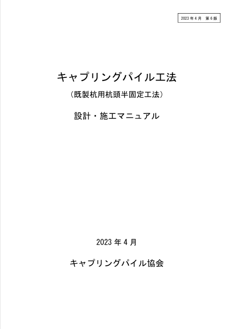
                            <span>一般社団法人キャプリングパイル工法協会 (CAPIA)「キャプリングパイル工法 設計マニュアル」<br>(2023年4月版)</span>
                        </a>
                    </div>
                </div>

            <!--             <figure>
                            
                            <figcaption>図6.1.8</figcaption>
                        </figure> -->
            <!--             <figure>
                            
                            <figcaption>図6.1.9</figcaption>
                        </figure> -->
            <!--             <figure>
                            
                            <figcaption>図6.3.6</figcaption>
                        </figure> -->
            <!--             <figure>
                            
                            <figcaption>図6.6.2</figcaption>
                        </figure>

                        <figure>
                            
                            <figcaption>図6.6.3</figcaption>
                        </figure>

                        <figure>
                            
                            <figcaption>図6.6.4</figcaption>
                        </figure> -->
            <!--             <figure>
                            
                            <figcaption>図6.6.8</figcaption>
                        </figure>
             -->
            <!--             <figure>
                            
                            <figcaption>図6.6.9(b)</figcaption>
                        </figure> -->
            <!--             <figure>
                            
                            <figcaption>図6.6.10</figcaption>
                        </figure> -->


        </section>

        <section id="quickstart">
            <!-- id は section 側だけに持たせる (h2 にも同じ id があると重複になり、
                 getElementById がどちらを返すか実装依存になる) -->
            <h2 id="h-クイックスタートガイド">クイックスタートガイド</h2>
            <p>
                本プログラムを初めて使用する方向けに、基本的な操作の流れを説明します。<br>
                下図の順序で入力・解析を進めてください。
            </p>

            <!-- フロー図 -->
            <div style="display:flex; flex-wrap:wrap; align-items:center; justify-content:center; gap:4px; margin:16px 0; font-size:0.85em;">
                <div style="background:#62B0E2; color:#fff; padding:6px 12px; border-radius:6px; text-align:center;">
                    <strong>Step 1</strong><br>新規/サンプル
                </div>
                <span style="font-size:1.2em;">&#x25B6;</span>
                <div style="background:#62B0E2; color:#fff; padding:6px 12px; border-radius:6px; text-align:center;">
                    <strong>Step 2</strong><br>荷重条件
                </div>
                <span style="font-size:1.2em;">&#x25B6;</span>
                <div style="background:#62B0E2; color:#fff; padding:6px 12px; border-radius:6px; text-align:center;">
                    <strong>Step 3</strong><br>地盤条件
                </div>
                <span style="font-size:1.2em;">&#x25B6;</span>
                <div style="background:#62B0E2; color:#fff; padding:6px 12px; border-radius:6px; text-align:center;">
                    <strong>Step 4</strong><br>杭体
                </div>
                <span style="font-size:1.2em;">&#x25B6;</span>
                <div style="background:#62B0E2; color:#fff; padding:6px 12px; border-radius:6px; text-align:center;">
                    <strong>Step 5</strong><br>杭配置
                </div>
                <span style="font-size:1.2em;">&#x25B6;</span>
                <div style="background:#62B0E2; color:#fff; padding:6px 12px; border-radius:6px; text-align:center;">
                    <strong>Step 6</strong><br>杭軸力
                </div>
                <span style="font-size:1.2em;">&#x25B6;</span>
                <div style="background:#238966; color:#fff; padding:6px 12px; border-radius:6px; text-align:center;">
                    <strong>Step 7</strong><br>杭要素分割
                </div>
                <span style="font-size:1.2em;">&#x25B6;</span>
                <div style="background:#E95541; color:#fff; padding:6px 12px; border-radius:6px; text-align:center;">
                    <strong>Step 8</strong><br>水平解析
                </div>
            </div>

            <h3 id="h-Step-1-新規プロジェクトの開始">Step 1: 新規プロジェクトの開始</h3>
            <ol>
                <li>プログラムを起動すると、メインウィンドウが表示されます。</li>
                <li>基礎指針の設計例を参考にすると、入力項目の理解が早まる可能性があります。</li>
                <li>この場合、「ファイルメニュー」で<br>計算例ファイルを開きます。</li>
                <li>リボンメニュー「解析条件/解析(S)」タブの「基本 設定」(Ctrl+E) で、
                    Z=0 の標高や材料モデルの扱いなど、プロジェクト全体に効く設定を確認します。
                    既定のままでも進められますが、後から変えると解析結果を作り直すことになります。</li>
            </ol>

            <h3 id="h-Step-2-荷重条件の設定">Step 2: 荷重条件の設定</h3>
            <p class="indent-level-3" style="color:#555; font-size:0.9em;">
                <em>なぜ必要？</em> 地震時に建物から杭基礎に伝わる水平力（慣性力）の大きさと作用位置を定義します。この値が解析の入力荷重となります。
            </p>
            <ol>
                <li>リボンメニュー「解析条件/解析(S)」タブまたはツールの「LOAD」ボタンで「荷重」ウィンドウを開きます。</li>
                <li>「荷重ケース」タブを押します。</li>
                <li>レベル1地震荷重共通入力で、慣性力中心X(m)、Y(m)、Z(m)と上部構造慣性力、基礎部慣性力をそれぞれ入力、適用ボタンを押していきます。</li>
                <li>レベル2地震荷重共通入力で、慣性力中心X(m)、Y(m)、Z(m)と上部構造慣性力、基礎部慣性力をそれぞれ入力、適用ボタンを押していきます。</li>
                <li>保存を押します。</li>
            </ol>

            <h3 id="h-Step-3-地盤条件の設定">Step 3: 地盤条件の設定</h3>
            <p class="indent-level-3" style="color:#555; font-size:0.9em;">
                <em>なぜ必要？</em> 杭を支える地盤の硬さ（N値など）を入力します。地盤の種類により杭に作用する水平地盤反力係数や液状化の影響が決まります。
            </p>
            <ol>
                <li>リボンメニュー「解析条件/解析(S)」タブまたはツールの「SOIL」ボタンで「地盤」ウィンドウを開きます。</li>
                <li>ボーリングデータに基づいて土層情報やN値を入力します。</li>
                <li>液状化危険度の検討、地盤変位が自動計算されます。</li>
                <li>「保存」を押します。</li>
            </ol>

            <h4 id="section-ground-disp-modes">地盤変位タブの 3 モード</h4>
            <p>
                「地盤変位」タブ最上段のラジオボタンで、水平解析に使用する地盤変位の与え方を 3 つから選択できます。
            </p>
            <table class="table-doc">
                <thead>
                    <tr>
                        <th>モード</th>
                        <th>挙動</th>
                        <th>使う場面</th>
                    </tr>
                </thead>
                <tbody>
                    <tr>
                        <td><strong>基礎指針'19 4.5自動計算</strong></td>
                        <td>「地盤変位算定法」で選択した手法 (a1(b1) / a2(b2) / 応答スペクトル法) で土質点ごとに自動計算した値を使用</td>
                        <td>標準。基礎指針に基づく標準的な検討</td>
                    </tr>
                    <tr>
                        <td><strong>任意入力</strong></td>
                        <td>右ペイン「任意地盤変位」タブで入力した標高-変位プロファイル (4 ケース × 標高ごとの変位値) を使用。Excel からのコピー&ペーストや「全ケースにコピー」ボタンで初期値を流し込み、必要に応じて編集可</td>
                        <td>動的解析結果や地震応答解析の結果を直接適用する場合、観測値を反映する場合など</td>
                    </tr>
                    <tr>
                        <td><strong>考慮しない</strong></td>
                        <td>水平解析で地盤変位を全層 0 として扱う。杭頭水平力のみで解析</td>
                        <td>地盤変位の影響を切り分けて確認したい場合のスタディ</td>
                    </tr>
                </tbody>
            </table>
            <p>
                <strong>「表層の土質」「地盤変位算定法」「工学的基盤」入力欄</strong>は「基礎指針'19 4.5自動計算」を選択している場合のみ表示されます。<br>
                <strong>「応答スペクトル」タブ</strong>は「基礎指針'19 4.5自動計算」かつ「地盤変位算定法」で「応答スペクトル法」を選んだ場合のみ表示されます。
            </p>

            <h4>任意地盤変位タブの操作</h4>
            <p>
                「任意入力」を選択すると右ペインに「任意地盤変位」タブが自動で前面表示されます。レベル/液状化の 4 ケースを ComboBox で切替え、それぞれ標高Z [m] と変位 [mm] のペアを入力します。
            </p>
            <ul>
                <li><strong>基礎指針'19 4.5 自動計算を全ケースにコピー</strong> ボタンで、自動計算結果 (DmaxU*, DmaxU*+ΣγcyH) を 4 ケース全てへ一括流し込み</li>
                <li><strong>変位係数スライダー + 適用ボタン</strong>で 0〜2.0 倍の係数を選んで現在ケースの値に乗算。スライダーは適用後 1.0 にリセット (Undo 可)</li>
                <li><strong>行追加 / 標高整列 / 全削除</strong> 等で行を編集</li>
                <li><strong>Excel からの貼付け</strong>: 標高(m) と 変位(mm) の 2 列をコピーして Ctrl+V でペースト可</li>
            </ul>

            <h4>地盤番号の削除</h4>
            <p>
                「地盤番号」を削除する際、メイン画面の杭配置で参照されている場合は警告ダイアログが出ます:
            </p>
            <ul>
                <li><strong>削除対象が直接参照されている場合</strong>: 削除を拒否。先に杭配置側で地盤番号を別の値に変更してください。</li>
                <li><strong>削除対象より大きい番号が参照されている場合</strong>: 削除後にインデックスが 1 つずれるため警告ダイアログを表示。OK で該当杭配置の地盤番号を自動的に 1 つ下げて削除を続行、キャンセルで削除中止。</li>
            </ul>

            <h3 id="h-Step-4-杭体の設定">Step 4: 杭体の設定</h3>
            <p class="indent-level-3" style="color:#555; font-size:0.9em;">
                <em>なぜ必要？</em> 杭の直径、長さ、材質、配筋を定義します。これらの情報から杭の曲げ剛性（EI）や耐力（MN曲線）が自動計算され、解析と断面照査に使われます。
            </p>
            <ol>
                <li>リボンメニュー「解析条件/解析(S)」タブまたはツールの「PILE」ボタンで「杭体」入力ウィンドウを開きます。</li>
                <li>杭の種類（場所打ち杭、既製コンクリート杭）を選択します。</li>
                <li>複数の杭体区間がある場合は、「区間追加」ボタンで複数の区間を設定します。</li>
                <li>各杭体区間で、「杭断面編集」ボタンを押し、「杭断面」ウィンドウを開き、断面情報を入力します。</li>
                <li>このとき、MN曲線、QN曲線などが自動計算されます。</li>
                <li>「保存」を押します。</li>
            </ol>

            <h4>場所打ち鋼管コンクリート杭 最上段区間の推奨</h4>
            <p>
                <strong>場所打ち鋼管コンクリート杭</strong>では、最上段の杭体区間に「鋼管コンクリート部」を選択するのが一般的です。最上段が「鉄筋コンクリート部」になっている杭体がある場合、杭体ウィンドウ保存時または水平解析実行時に確認ダイアログが表示されます (「いいえ」で保存/解析中止、「はい」でそのまま続行)。
            </p>

            <h4>杭体番号の削除</h4>
            <p>
                「杭体番号」を削除する際、メイン画面の杭配置で参照されている場合は警告ダイアログが出ます:
            </p>
            <ul>
                <li><strong>削除対象が直接参照されている場合</strong>: 削除を拒否。先に杭配置側で杭体番号を別の値に変更してください。</li>
                <li><strong>削除対象より大きい番号が参照されている場合</strong>: 削除後にインデックスが 1 つずれるため警告ダイアログを表示。OK で該当杭配置の杭体番号を自動的に 1 つ下げて削除を続行、キャンセルで削除中止。</li>
            </ul>

            <h3 id="h-Step-5-杭配置の入力">Step 5: 杭配置の入力</h3>
            <p class="indent-level-3" style="color:#555; font-size:0.9em;">
                <em>なぜ必要？</em> 建物平面上のどの位置に杭を配置するかを定義します。杭の本数・配置により群杭効果や荷重分担が変わります。
            </p>
            <ol>
                <li>データタブの「杭」→「配置」タブを開きます。</li>
                <li>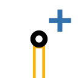「杭配置追加」ボタンで杭を追加し、X, Y座標を入力します。</li>
                <li>各杭に適用する杭体番号と地盤番号を指定します。</li>
            </ol>

            <h3 id="h-Step-6-杭軸力の入力">Step 6: 杭軸力の入力</h3>
            <p class="indent-level-3" style="color:#555; font-size:0.9em;">
                <em>なぜ必要？</em> 各杭が負担する鉛直荷重（軸力）を入力します。軸力は杭の曲げ耐力や地盤反力に影響するため、正確な入力が重要です。
            </p>
            <ol>
                <li>データタブの「杭」→「軸力」タブで各杭の鉛直荷重を入力します。</li>
                <li>常時荷重（VL0）と追加荷重（VLadd）を分けて入力できます。</li>
                <li>地震時荷重（レベル1、レベル2）は各ケースごとに入力します。</li>
                <li>各杭の軸力を入力します。Excel Worksheet上のデータからCtrl+C、Ctrl+Vで入力することができます。</li>
            </ol>

            <h3 id="h-Step-7-杭要素分割">Step 7: 杭要素分割</h3>
            <p class="indent-level-3" style="color:#555; font-size:0.9em;">
                <em>なぜ必要？</em> 有限要素法（FEM）による解析を行うため、杭を細かい要素に分割する必要があります。分割が細かいほど精度が上がりますが、計算時間も増えます。
            </p>
            <ol>
                <li>地盤と杭体を適切に入力をした後、その組合せごとに杭要素分割を行う必要があります。</li>
                <li>リボンメニュー「解析条件/解析(S)」タブまたはツールの「SPLIT」ボタンを押し「杭要素分割」ウィンドウを開きます。</li>
                <li>デフォルトでは土層、杭体区間が切り替わる高さで最低限区切られた分割状態となっています。</li>
                <li>自動杭要素分割ボタンによる1m分割などで杭要素分割を行います。</li>
                <li>全ての組合せに対して確認（少なくとも画面表示）を行います。</li>
                <li>「保存」を押します。</li>
            </ol>
            <p class="indent-level-3">
                <strong>基準水平地盤反力係数 k<sub>h0</sub> の手入力</strong><br>
                「水平地盤反力」タブの「基準水平地盤反力係数 k<sub>h0</sub>」列は、既定では
                地盤の変形係数・杭径から自動計算されますが、<strong>セルを直接編集して任意の値を入力</strong>できます。
                入力は<strong>土層単位</strong>で、同じ土層内の全要素に適用されます（現在選択中の土層-杭セットに保存されます）。
                手入力した値は太字・アクセント色で表示され、安全限界 NM ではなく水平解析（p-y 曲線の初期勾配）に用いられます。<br>
                自動計算値に戻すには、グリッドを右クリックして「選択した土層の k<sub>h0</sub> を自動計算に戻す」
                または「全土層の k<sub>h0</sub> を自動計算に戻す」を選びます。
            </p>

            <h3 id="h-Step-8-水平解析の実行">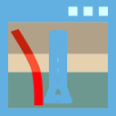Step 8: 水平解析の実行</h3>
            <p class="indent-level-3" style="color:#555; font-size:0.9em;">
                <em>なぜ必要？</em> 地震時の水平力に対して杭がどのように変形し、どのような応力が生じるかを数値解析で求めます。これが杭基礎設計の最も重要な検討です。
            </p>
            <ol>
                <li>リボンメニュー「解析条件/解析(S)」タブまたはツールの「水平解析」ボタンを押し「水平解析」ウィンドウを開きます。</li>
                <li>（時間がかかる場合があるので）最低限の荷重ケースのみを選択して水平解析を行います。</li>
                <li>水平解析が完了すると、解析結果メニューの杭・梁要素 解析結果ボタンで、画面上で結果を確認できるほか、グラフ出力ウィンドウ、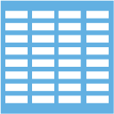テーブル出力ウィンドウで確認できます。</li>
                <li>各杭の応力状態（曲げモーメント、せん断力、変位等）を確認できます。</li>
            </ol>

            <section class="selection-window">
                <p><strong>ヒント</strong></p>
                <dl>
                    <dt>サンプルファイルの活用</dt>
                    <dd>
                        Examples フォルダには様々な条件のサンプルファイルがあります。
                        リボン「アプリケーション メニュー」 → 「例題」から、ワンクリックで以下の代表例題を開けます。タイトルバーには出典の名称（基礎指針'19 計算例 / 設計例集 / 関東支部）がそのまま表示されます。
                        <table class="table-doc" style="margin: 0.5em 0;">
                            <thead>
                                <tr>
                                    <th>出典</th>
                                    <th>メニュー (KeyTip)</th>
                                    <th>タイトルバー表示</th>
                                    <th>主な杭種・特徴</th>
                                </tr>
                            </thead>
                            <tbody>
                                <tr><td rowspan="4">建築基礎構造設計指針 2019</td><td>計算例5 (E1)</td><td>基礎指針'19 計算例5</td><td>PHC 杭 φ600 L=14m、群杭沈下検討</td></tr>
                                <tr><td>計算例7 (E1b)</td><td>基礎指針'19 計算例7</td><td>場所打ち RC 拡底杭、限界鉛直支持力／限界引抜き抵抗力</td></tr>
                                <tr><td>計算例9 (E2)</td><td>基礎指針'19 計算例9</td><td>地下室の影響を考慮した杭の地震時水平抵抗</td></tr>
                                <tr><td>計算例10 (E2b)</td><td>基礎指針'19 計算例10</td><td>場所打ち RC 杭 φ1500 L=37.5m、24 本群杭</td></tr>
                                <tr><td rowspan="5">建築基礎構造設計例集 2024</td><td>3.1 (E5)</td><td>設計例集3.1</td><td>SC 杭・PRC 杭</td></tr>
                                <tr><td>3.2 (E6)</td><td>設計例集3.2</td><td>PHC 節杭、108 本群杭</td></tr>
                                <tr><td>3.3 (E7)</td><td>設計例集3.3</td><td>場所打ち RC 拡底杭（P1=φ2500、P2=φ2300 等）、39 本群杭</td></tr>
                                <tr><td>3.4 (E8)</td><td>設計例集3.4</td><td>液状化地盤の SC 杭</td></tr>
                                <tr><td>3.5 (E9)</td><td>設計例集3.5</td><td>鋼管杭 Φ800、鉄筋定着工法、24 本群杭</td></tr>
                                <tr><td rowspan="2">基礎構造の設計 2023（関東支部）</td><td>7 (E3)</td><td>関東支部 設計例7</td><td>直接基礎、群杭沈下検討</td></tr>
                                <tr><td>8 (E4)</td><td>関東支部 計算例8</td><td>場所打ち RC 杭、4 種類の杭体（P1〜P4）</td></tr>
                            </tbody>
                        </table>
                        まずサンプルを開いて動作を確認してみてください。
                    </dd>
                    <dt>Excelとの連携</dt>
                    <dd>データグリッドではExcelからのコピー&amp;ペースト（Ctrl+V）が使えます。<br>効率よく入出力ができます。</dd>
                    <dt>グラフデータの活用</dt>
                    <dd>グラフの上で、右クリックメニューから数値データのコピーが可能です。</dd>
                    <dt>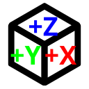3Dビューの活用</dt>
                    <dd>右ドラッグでビュー回転、中ボタンドラッグで平行移動ができます。<br>ビューキューブをクリックすると定義されたビュー（平面図、立面図等）に素早く切り替えられます。</dd>
                    <dt>杭要素分割のコツ</dt>
                    <dd>詳細な結果を得る必要がなければ、1m程度の自動杭要素分割がよいでしょう。</dd>
                    <dt>水平解析のコツ</dt>
                    <dd>杭の非線形の水平解析には時間がかかります。<br>初期段階では、一方向の荷重で検討を進めるとよいでしょう。</dd>
                </dl>
            </section>
        </section>

        <section id="section2">
            <h2 id="h-杭モデル">杭モデル</h2>
            <p>１本の杭は、「杭頭」、「杭体」、「杭先端」で構成されます。</p>

            <p>
                本プログラムで対応する杭体タイプ・杭頭接合タイプ・断面タイプ・杭工法の組合せを以下に示します。
            </p>
            <table class="table-doc">
                <thead>
                    <tr>
                        <th>杭体タイプ</th>
                        <th>杭頭接合タイプ</th>
                        <th>断面タイプ</th>
                        <th>杭工法</th>
                    </tr>
                </thead>
                <tbody>
                    <tr>
                        <td>場所打ち鉄筋コンクリート杭</td>
                        <td>鉄筋定着工法<br>キャプテンパイル工法</td>
                        <td>鉄筋コンクリート部</td>
                        <td>場所打ちコンクリート杭</td>
                    </tr>
                    <tr>
                        <td>場所打ち鋼管コンクリート杭</td>
                        <td>鉄筋定着工法</td>
                        <td>鋼管コンクリート部<br>鉄筋コンクリート部</td>
                        <td>場所打ちコンクリート杭</td>
                    </tr>
                    <tr>
                        <td>既製コンクリート杭</td>
                        <td>鉄筋定着工法<br>定着筋方式<br>埋込み方式<br>F.T.Pile 構法<br>キャプリングパイル工法</td>
                        <td>PHC 杭<br>PRC 杭<br>SC 杭</td>
                        <td>埋込み杭 (プレボーリング)<br>埋込み杭 (中掘り)<br>打込み杭</td>
                    </tr>
                    <tr>
                        <td>鋼管杭</td>
                        <td>鉄筋定着工法<br>キャプリングパイル工法</td>
                        <td>コンクリート充填鋼管部<br>鋼管部</td>
                        <td>埋込み杭 (プレボーリング)<br>埋込み杭 (中掘り)<br>回転貫入杭</td>
                    </tr>
                </tbody>
            </table>

            <p>
                「杭頭」工法は杭体の種類に応じて次のように扱います。<br>
                <strong>場所打ち鉄筋コンクリート杭の鉄筋定着工法</strong>では、軸応力度が
                $-F_t \le \sigma_0 \le (1/4)\xi F_c$ の範囲にある場合は、ポリリニア型の曲げモーメント－回転角関係とします〔「強度と変形性能」3.3,3〕）。
                範囲外の場合は剛接合（回転固定度を無限大）として扱います。<br>
                <strong>鋼管杭の鉄筋定着工法</strong>では、杭頭接合部の弾性回転剛性 $K_\theta$ を線形ばねとして反映します
                <span class="xref">（詳細は<a href="#section-steel-pipe-rebar-anchorage">「鋼管杭+鉄筋定着工法 の杭頭工法」</a>節参照）</span>。<br>
                杭頭半固定工法として、場所打ち鉄筋コンクリート杭では <strong>キャプテンパイル工法</strong>、既製コンクリート杭では <strong>F.T.Pile 構法</strong> または <strong>キャプリングパイル工法</strong> を適用できます。キャプリングパイル工法は鋼管杭にも適用可能です。
            </p>

            <p>
                上記の組合せにおいて、<strong>杭体（M-φ）</strong>および<strong>杭頭（M-θ）</strong>で非線形性を考慮する部位を以下にまとめます。
                杭体の非線形 M-φ 関係および杭頭の非線形 M-θ 関係は、いずれも荷重ケースの「杭の非線形」を ON にした時のみ反映されます（OFF 時は M-φ は線形弾性、M-θ は剛として扱われます）。
            </p>
            <table class="table-doc">
                <thead>
                    <tr>
                        <th style="text-align: center">#</th>
                        <th>杭体タイプ</th>
                        <th>杭頭接合タイプ</th>
                        <th>杭体 M-φ 非線形を考慮する部位</th>
                        <th>杭頭 M-θ の扱い</th>
                    </tr>
                </thead>
                <tbody>
                    <tr>
                        <td style="text-align: center">1</td>
                        <td>場所打ち鉄筋コンクリート杭</td>
                        <td>鉄筋定着工法</td>
                        <td>鉄筋コンクリート部</td>
                        <td>軸応力 $-F_t \le \sigma_0 \le \frac{1}{4}\xi F_c$ で<strong>非線形 M-θ</strong>、範囲外は<strong>剛</strong></td>
                    </tr>
                    <tr>
                        <td style="text-align: center">2</td>
                        <td>場所打ち鉄筋コンクリート杭</td>
                        <td>キャプテンパイル工法</td>
                        <td>鉄筋コンクリート部</td>
                        <td><strong>非線形 M-θ</strong>（CaptainPile）</td>
                    </tr>
                    <tr>
                        <td style="text-align: center">3</td>
                        <td>場所打ち鋼管コンクリート杭</td>
                        <td>鉄筋定着工法</td>
                        <td>鋼管コンクリート部 + 鉄筋コンクリート部</td>
                        <td><strong>剛</strong></td>
                    </tr>
                    <tr>
                        <td style="text-align: center">4</td>
                        <td rowspan="5">既製コンクリート杭</td>
                        <td>鉄筋定着工法</td>
                        <td rowspan="5">PHC 杭 / PRC 杭 / SC 杭の各区間</td>
                        <td><strong>剛</strong></td>
                    </tr>
                    <tr>
                        <td style="text-align: center">5</td>
                        <td>定着筋方式</td>
                        <td><strong>剛</strong></td>
                    </tr>
                    <tr>
                        <td style="text-align: center">6</td>
                        <td>埋込み方式</td>
                        <td><strong>剛</strong></td>
                    </tr>
                    <tr>
                        <td style="text-align: center">7</td>
                        <td>F.T.Pile 構法</td>
                        <td><strong>非線形 M-θ</strong>（FTPile）</td>
                    </tr>
                    <tr>
                        <td style="text-align: center">8</td>
                        <td>キャプリングパイル工法</td>
                        <td><strong>非線形 M-θ</strong>（CapringPile）</td>
                    </tr>
                    <tr>
                        <td style="text-align: center">9</td>
                        <td rowspan="2">鋼管杭</td>
                        <td>鉄筋定着工法</td>
                        <td rowspan="2">コンクリート充填鋼管部 + 鋼管部</td>
                        <td><strong>線形</strong>（接合部弾性回転剛性 $K_\theta$ のみ、降伏後考慮なし）</td>
                    </tr>
                    <tr>
                        <td style="text-align: center">10</td>
                        <td>キャプリングパイル工法</td>
                        <td><strong>非線形 M-θ</strong>（CapringPile）</td>
                    </tr>
                </tbody>
            </table>
            <p>
                <strong>杭頭 M-θ グラフでの「剛結」ケース</strong>: 解析結果グラフの「杭頭M-θ」表示において、杭頭 M-θ の扱いが「剛」となるケース（上表の #3〜#6）では、回転拘束が無限大に相当するため M-θ 関係そのものが存在しません。曲線は描画されず、グラフ下部に
                <span style="color:#666; font-size:0.9em;">「杭頭が剛結扱いのため M-θ 関係が存在しない杭があります（M-θ 曲線は描画されません）: 杭 #1 (組合せ表記)」</span>
                のように該当杭と杭体/杭頭タイプの組合せが説明されます (灰色テキスト)。同じグラフに描画されている他の杭 (非線形 M-θ または線形 $K_\theta$ の杭) と共存します。
            </p>
            <p>
                「杭体のタイプ」は、<strong>場所打ち鉄筋コンクリート杭</strong>、<strong>場所打ち鋼管コンクリート杭</strong>、<strong>既製コンクリート杭</strong>、<strong>鋼管杭</strong>
                の4種類です。<br>
                「杭体」は、単数または複数の <strong>杭体（断面）区間</strong>を有します。<br>
                杭体区間の杭断面タイプは、杭体タイプごとに、以下の選択肢から選択します。<br>
                場所打ち鋼管コンクリート杭：<strong>鋼管コンクリート部</strong>、<strong>鉄筋コンクリート部</strong><br>
                既製コンクリート杭：<strong>PHC杭</strong>、<strong>PHC節杭</strong>、<strong>PRC杭</strong>、<strong>PRC節杭</strong>、<strong>PRC節杭(PHC部)</strong>、<strong>BF.S頭部軸部</strong>、<strong>BF.S先端軸部</strong>、<strong>SC杭</strong><br>
                鋼管杭：<strong>コンクリート充填鋼管部</strong>（鉄筋定着工法の最上部杭区間）、<strong>鋼管部</strong>
            </p>
            <p>
                断面タイプは<strong>杭体区間ごと</strong>に選べるため、「下杭のみ PHC節杭、上杭はストレートの PHC杭」
                といった使い分けも表現できます
                （詳細は <span class="xref"><a href="#section-mshi105">メーカー製品ライブラリ (PHC)</a></span>、
                <span class="xref"><a href="#section-hisc105">同 (SC)</a></span>、
                <span class="xref"><a href="#section-dam105">同 (PRC)</a></span>、
                <span class="xref"><a href="#section-nodular-pile">PHC節杭</a></span>、
                <span class="xref"><a href="#section-nodular-prc-pile">PRC節杭</a></span>、
                <span class="xref"><a href="#section-bfs-pile">BF.S パイル</a></span> を参照）。
            </p>
            <p>
                最下段の杭区間よりも大きな杭先端径を入力した場合、場所打ちコンクリート杭では <strong>拡底杭</strong>、既製コンクリート杭では
                <strong>拡大根固め杭</strong> を仮定します。
            </p>

            <h5 id="section-mshi105">メーカー製品ライブラリ（三谷セキサン MS-hi105）</h5>
            <p>
                断面タイプ <strong>「PHC杭」</strong>の製品一覧には、JIS A 5373 に基づく汎用ライブラリに加えて
                三谷セキサン <strong>MS-hi105 パイル</strong>（F<sub>c</sub>=105N/mm² のストレート PHC 杭）を収録しています。
                製品名は <code>MS-hi105-（杭径）-（肉厚仕様）-（種類）</code> の形式です
                （例: <code>MS-hi105-400-標準型-A</code>）。全 94 品目で、
                杭径 φ300〜φ1200 × 肉厚仕様 標準型／厚型／特厚型 × 種類 A／B／B2／C／C2 です。
            </p>
            <p>
                ストレート杭なので断面の扱いは汎用の PHC 杭とまったく同じです
                （節杭のように形状・自重が変わるものだけ別の断面タイプにしています）。
                同じ ComboBox に並ぶので、製品名で選び分けてください。
            </p>
            <p>
                汎用ライブラリの置き換えではなく<strong>追加</strong>です。主な違いは次のとおりです。
            </p>
            <table>
                <caption style="text-align: center">JIS 汎用ライブラリとの違い（φ400 の例）</caption>
                <tr><th style="width:34%;">項目</th><th style="width:33%;">JIS 汎用</th><th>MS-hi105</th></tr>
                <tr><td>肉厚仕様</td><td>標準 65 / 特厚 80 の 2 段階</td>
                    <td><strong>標準型 65 / 厚型 80 / 特厚型 95 の 3 段階</strong></td></tr>
                <tr><td>PC 鋼棒の配筋径 PCD</td><td>330 mm</td><td>335 mm</td></tr>
                <tr><td>A 種の PC 鋼棒断面積（標準）</td><td>385 mm²</td><td>400 mm²</td></tr>
                <tr><td>肉厚を増やしたときの σ<sub>ce</sub></td><td>4.0 → 3.4 に低下</td>
                    <td>厚型のみ低下し、<strong>特厚型は 4.0 に戻る</strong></td></tr>
            </table>
            <p>
                なお、このカタログは PC 鋼棒の配筋径 PCD を印字していないため、
                換算断面 2 次モーメント I<sub>e</sub> から逆算した値を用いています。
                逆算値が杭径ごとに 1 つに定まり 5mm 刻みになること、およびカタログの破壊モーメント
                M<sub>u</sub> と本プログラムの計算値が全 94 品目で揃うことを確認しています。
            </p>

            <h5 id="section-dam105">メーカー製品ライブラリ（三谷セキサン DAM105）</h5>
            <p>
                断面タイプ <strong>「PRC杭」</strong>の製品一覧にも、JIS 汎用ライブラリに加えて
                三谷セキサン <strong>DAM105 パイル</strong>（F<sub>c</sub>=105N/mm² の PRC 杭）を収録しています。
                製品名は <code>DAM105-（杭径）-（肉厚仕様）-（種類）</code> の形式です
                （例: <code>DAM105-600-標準型-A-D19</code>）。全 218 品目で、
                杭径 φ300〜φ1500 × 肉厚仕様 標準型／厚型／特厚型 × 種類 A-D13〜A-D35 です。
                <strong>種類は主筋径そのもの</strong>を表します。
            </p>
            <p>
                汎用ライブラリの置き換えではなく<strong>追加</strong>です。杭径が φ1500 まで、
                主筋が D35 まであること、肉厚仕様を持つことが主な違いです。
                PC 鋼棒・異形鉄筋ともヤング係数 200,000 N/mm²（SD345）です。
            </p>

            <h6>せん断耐力について</h6>
            <p>
                カタログの設計せん断耐力は、<strong>シアスパン比 a=1.0 のときの参考値</strong>として
                記載されているものです（カタログ注記）。実際の設計で用いる値は別途計算式によるため、
                <strong>本プログラムはこの値を設計値として取り込んでいません</strong>。
                せん断の検討には本プログラムの計算値をご使用ください。
            </p>

            <h6>鉄筋規格の選択にご注意ください</h6>
            <p>
                製品を選び直しても<strong>鉄筋規格は切り替わりません</strong>
                （主筋の本数・径・配筋径だけが転記されます）。
                DAM105 の主筋は <strong>SD345</strong> なので、断面ウィンドウの鉄筋規格が
                SD345 になっていることをご確認ください
                （既定は SD390 です）。食い違っている場合は<strong>諸元表の「鉄筋規格」欄に注記</strong>が出ます。
            </p>

            <h6>配筋径について</h6>
            <p>
                このカタログは PC 鋼棒・主筋の配筋径を印字していないため、
                換算断面 2 次モーメント I<sub>e</sub> から逆算した値を用いています。
                PC 鋼棒と主筋は別々の円周にあり、主筋の円は鉄筋径が太いほど内側へ寄るので、
                同じ断面の種類（主筋径）違いを使って両者を分離しています。
                逆算した配筋径から I<sub>e</sub> を組み直すとカタログ値に戻ることを確認しています。
            </p>

            <h5 id="section-hisc105">メーカー製品ライブラリ（三谷セキサン Hi-SC105）</h5>
            <p>
                断面タイプ <strong>「SC杭」</strong>の製品一覧にも、JIS 汎用ライブラリに加えて
                三谷セキサン <strong>Hi-SC105 パイル</strong>（F<sub>c</sub>=105N/mm² の外殻鋼管付コンクリート杭）を
                収録しています。製品名は <code>Hi-SC105-（杭径）-（肉厚仕様）-（肉厚）-（鋼管厚）</code> の形式です
                （例: <code>Hi-SC105-800-標準型-110-16</code>）。全 579 品目で、
                杭径 φ400〜φ1500 × 肉厚仕様 標準型／厚型／特厚型 ×
                <strong>鋼管厚 6〜25mm を 1mm 刻み</strong>です。
            </p>
            <p>
                汎用ライブラリの置き換えではなく<strong>追加</strong>です。鋼管厚が 1mm 刻みで選べること、
                杭径が φ1500 まであること、鋼管のヤング係数が 205,000 N/mm²（SKK490／STK490、降伏点 325N/mm²）
                であることが主な違いです。
            </p>
            <p>
                なお肉厚 T は<strong>鋼管とコンクリートを合わせた全肉厚</strong>で、
                コンクリート厚は T − t<sub>s</sub> になります（カタログの表記と同じ）。
            </p>

            <h6>鋼管規格の選択にご注意ください</h6>
            <p>
                製品を選び直しても<strong>鋼管規格は切り替わりません</strong>（杭径と鋼管厚だけが転記されます）。
                Hi-SC105 は SKK490／STK490 なので、断面ウィンドウの鋼管規格が
                <strong>SKK490</strong> になっていることをご確認ください。
                明らかに食い違っている場合（SKK400 のままなど）は<strong>諸元表の「鋼管規格」欄に注記</strong>が出ます。
            </p>

            <h6>腐食代について</h6>
            <p>
                本プログラムは腐食を製品ではなく<strong>腐食代のパラメータ</strong>として扱うため、
                製品ライブラリには腐食代 0mm の値を収録しています。腐食を見込む場合は
                断面ウィンドウで腐食代を入力してください。
                なおこのカタログは腐食代 1mm の性能表も掲載しており、
                本プログラムが腐食代 1mm で算定する鋼管断面積・曲げ剛性がその表と一致することを確認しています。
            </p>

            <h5 id="section-nodular-pile">PHC節杭</h5>
            <p>
                軸部に一定ピッチで節を設けた既製コンクリート杭です。断面タイプで
                <strong>「PHC節杭」</strong>を選ぶと、収録済みの製品ライブラリから呼び名を選択できます。
                収録内容はジャパンパイル <strong>JP-NPH85／JP-NPH105／JP-NPH123 パイル</strong>
                （プレストレスト高強度コンクリート節杭）の全 292 品目で、
                呼び名 17 種 × コンクリート設計基準強度 3 種 × 種類（A／AH／A2／A2H／B／BH／C／CH）です。
                製品名は <code>NPH-（節部径）-（軸部径）-（厚さ仕様）-（Fc）-（種類）</code> の形式で表示されます
                （例: <code>NPH-440-300-標準-85-A</code>）。
            </p>

            <h6>杭頭タイプは自動判定</h6>
            <p>
                PHC節杭 は継手して上杭に接合する<strong>下杭</strong>として用いるのが一般的です。
                ただし Smart-MAGNUM / Hybrid ニーディングのように<strong>先端が節杭である前提の工法</strong>を
                1 区間だけでモデル化することもあるため、断面タイプの選択自体は制限していません。
                最上段の区間に節杭がある場合は、入力チェックで注意を表示します。
            </p>
            <p>
                杭頭タイプ（標準タイプ / 拡頭中間径タイプ / 拡頭タイプ）は、
                <strong>直上の杭区間の径に合わせて自動で決まります</strong>。継手で接合する以上、
                節杭の杭頭径は直上区間の径と一致していなければならないためです。
            </p>
            <table>
                <caption style="text-align: center">杭頭タイプの自動判定</caption>
                <tr><th style="width:34%;">直上区間の径</th><th style="width:30%;">杭頭タイプ</th><th>拡頭部径 D<sub>t</sub></th></tr>
                <tr><td>軸部径 D と同じ</td><td>標準タイプ</td><td>―（拡頭なし）</td></tr>
                <tr><td>D &lt; 径 &lt; 節部径 D<sub>o</sub> で、カタログに一致する D<sub>t</sub> がある</td>
                    <td>拡頭中間径タイプ</td><td>その D<sub>t</sub></td></tr>
                <tr><td>節部径 D<sub>o</sub> と同じ</td><td>拡頭タイプ</td><td>D<sub>t</sub> = D<sub>o</sub></td></tr>
                <tr><td>一致する D<sub>t</sub> がカタログに無い</td>
                    <td>標準タイプ（暫定）</td><td>―（入力チェックで警告）</td></tr>
            </table>
            <p>
                拡頭部長さ L<sub>t</sub> はカタログ全行で 600 mm で、これは標準タイプの
                「区間上端〜第 1 節中心 600 mm」と同値です。したがって
                <strong>杭頭タイプによって節の位置は変わりません</strong>。
                拡頭部と第 1 節が重なる範囲は大きい方の径で描きます。
                HS タイプ（標準 HS / 拡頭 HS）は未対応です。
            </p>

            <h6>断面耐力はストレート PHC 杭と同一</h6>
            <p>
                カタログに記載された断面諸数値（断面積 A<sub>o</sub>、換算断面積 A<sub>e</sub>、
                断面 2 次モーメント I<sub>o</sub>、換算断面 2 次モーメント I<sub>e</sub>、換算断面係数 Z<sub>e</sub>）は
                <strong>すべて軸部の中空円形断面</strong>から算定されており、節部は断面性能に寄与しません。
                本プログラムでも収録した全 292 行について
                $A_o = \frac{\pi}{4}(D^2 - d_i^2)$、$I_o = \frac{\pi}{64}(D^4 - d_i^4)$、
                $A_e = A_o + (n-1)A_p$、$I_e = I_o + (n-1)A_p (\text{PCD}/2)^2 / 2$ との一致を確認しています
                （最大相対差 0.09%。$d_i = D - 2t$、$n = E_p/E_c$）。
            </p>
            <p>
                したがって <strong>N-M 曲線・N-Q 曲線・M-φ 関係・軸剛性 EA・曲げ剛性 EI は、
                軸部諸元が同じストレート PHC 杭と完全に一致します</strong>。
                節部径は断面耐力に一切影響しません。
            </p>

            <h6>自重はカタログ標準質量による</h6>
            <p>
                節杭の単位長さ重量には、カタログの<strong>標準質量</strong>［t/m］をそのまま用います。
                節部の体積を形状から積分してもカタログ質量は再現できないため
                （既製杭の単位体積重量 γ<sub>c</sub> = 26 kN/m³ で相対差 RMS 3.4%・最大 7.0%。
                密度と節長さを自由に振った最良フィットでも RMS 1.5% 止まりで、
                そのときの密度は 27.4 kN/m³ とコンクリートとして非現実的。継手金物等を含むためと考えられます）、
                メーカー公称値が唯一正確な出所です。
            </p>
            <p>
                この結果、<strong>基本設定のコンクリート単位体積重量 γ<sub>c</sub> は PHC節杭 の自重には適用されません</strong>。
                自重は引抜き支持力の控除、鉛直（沈下）解析の荷重、水平解析の節点自重に用いられます。
            </p>

            <h6>支持力の周面抵抗について</h6>
            <p>
                <strong>基礎指針'19 の一般式による工法では、周面抵抗は軸部径で算定しており、
                節による抵抗の増大は考慮していません（安全側の評価）。</strong>
                節を考慮した周面抵抗は高支持力杭工法ごとの評定式によるもので
                （例: 砂質地盤の周面摩擦力係数 β が「標準型 節杭」と「周面強化型 節杭」で異なる）、
                工法を選ばずに一般化できないためです。
                断面ウィンドウと計算書にも同旨を明記しています。
            </p>
            <p>
                <strong>工法別評定式に対応した工法では、節部径が支持力算定に直接使われます。</strong>
                現在対応しているのは <a href="#section-smart-magnum">Smart-MAGNUM 工法</a> と
                <a href="#section-hybrid-kneading">Hybrid ニーディング工法</a> で、
                周長 ψ を節部径基準とし、先端面積 A<sub>p</sub> も節部径 D<sub>on</sub> から求めます。
                節部径は断面ライブラリ（JP-NPH / JP-NPRC / BF.S など）から自動的に取り込まれるため、
                製品を選択すれば追加入力は不要です。
            </p>

            <h6>図面表示</h6>
            <p>
                杭体ウィンドウの杭姿図とメインウィンドウの 3D 表示に、節の形状を描きます。
                形状は次の寸法で決まります。
            </p>
            <table>
                <caption style="text-align: center">節の図示に用いる寸法</caption>
                <tr><th style="width:26%;">項目</th><th style="width:30%;">値</th><th>出所</th></tr>
                <tr><td>節部径 D<sub>o</sub> / 軸部径 D</td><td>製品ごと</td><td>カタログ記載値</td></tr>
                <tr><td>節の半径方向高さ</td><td>(D<sub>o</sub> − D)/2</td><td>上記から確定</td></tr>
                <tr><td>テーパー軸方向長さ</td><td>(D<sub>o</sub> − D)/2（45°）</td><td>カタログ姿図の実測（厳密に 45°）</td></tr>
                <tr><td>節部（平坦部）長さ</td><td>(D<sub>o</sub> − D)/2</td><td><strong>カタログ姿図の実測（推定値）</strong></td></tr>
                <tr><td>節ピッチ</td><td>1 000 mm</td><td>カタログ姿図の寸法記入値</td></tr>
                <tr><td>区間上端〜第 1 節中心</td><td>600 mm</td><td>カタログ姿図の寸法記入値</td></tr>
                <tr><td>最終節中心〜区間下端</td><td>400 mm</td><td>カタログ姿図の寸法記入値</td></tr>
            </table>
            <p>
                杭長 L［m］に対して節は L 個となり、カタログの「杭長は 1m ピッチで 4〜15m」と整合します
                （600 + (L−1)×1000 + 400 = 1000L）。
            </p>
            <p>
                このうち<strong>節部（平坦部）の長さだけはカタログに寸法記入が無く、姿図からの実測に基づく推定値</strong>です
                （実測ではテーパー軸方向長さと等長）。<strong>図示専用であり、断面耐力・自重・支持力の計算には
                一切使用していません</strong>。正確な形状が必要な場合はメーカーにご確認ください。
            </p>

            <h6>カタログ記載の誤植について</h6>
            <p>
                収録時の検算により、カタログ側の誤植を 1 件検出しています。
                <strong>φ700-600 および φ800-600 の F<sub>c</sub>=123・AH 種の換算断面係数 Z<sub>e</sub></strong> が、
                直上の A 種と同じ 16 430×10³ mm³ で印字されていますが、
                同じ行の I<sub>e</sub> = 543 400×10⁴ mm⁴ から Z<sub>e</sub> = I<sub>e</sub>/(D/2) = 18 113×10³ mm³ が正しい値です
                （F<sub>c</sub>=105 の対応行も 18 130×10³）。
                本プログラムでは印字値を記録として残したうえで、計算には正しい値を用いています。
            </p>

            <h5 id="section-nodular-prc-pile">PRC節杭（PRC部 / PHC部）</h5>
            <p>
                PC鋼棒に加えて<strong>異形棒鋼（主筋）</strong>を配した節杭です。断面タイプで
                <strong>「PRC節杭」</strong>または<strong>「PRC節杭(PHC部)」</strong>を選ぶと、
                収録済みの製品ライブラリから呼び名を選択できます。
                収録内容はジャパンパイル <strong>JP-NPRC105 パイル</strong>
                （プレストレスト鉄筋高強度コンクリート節杭）の全 232 品目で、
                呼び名 17 種 × 種類（Ⅰ〜Ⅷ。軸部径 700〜1100mm のⅠ種・Ⅱ種は ⅠA／ⅠB／ⅡA／ⅡB に細分）です。
                製品名は <code>NPRC-（節部径）-（軸部径）-（厚さ仕様）-（Fc）-（種類）</code> の形式で表示されます
                （例: <code>NPRC-440-300-標準-105-Ⅰ</code>）。
            </p>

            <h6>1 本の杭が 2 断面から成るため断面タイプも 2 つ</h6>
            <p>
                PRC節杭 は<strong>杭頭側が PRC部（PC鋼棒 + 異形棒鋼）、それより下が PHC部（PC鋼棒のみ）</strong>
                という 2 断面構成の製品です。カタログも 2 断面それぞれの断面性能・耐力を別々に規定しています。
                本プログラムでは、場所打ち鋼管コンクリート杭の「鋼管コンクリート部 / 鉄筋コンクリート部」と同じ思想で、
                <strong>杭体区間ごとに PRC部 と PHC部 を選び分けます</strong>。
                PHC部 の製品名には <code>-PHC部</code> が付きます。
            </p>
            <p>
                同じ製品であれば軸部径・肉厚・節形状・標準質量は 2 断面で共通です。異なるのは
                異形棒鋼の有無、有効プレストレス量 σ<sub>ce</sub>、および断面耐力です。
            </p>

            <h6>断面耐力はストレート杭と同一</h6>
            <p>
                PHC節杭 と同じく、カタログの断面諸数値は<strong>すべて軸部の中空円形断面</strong>から算定されています。
                ただし PRC節杭 は PC鋼棒（E<sub>p</sub> = 200 000 N/mm²）と
                異形棒鋼 SD345（E<sub>r</sub> = <strong>205 000 N/mm²</strong>）でヤング係数が異なるため、
                換算比が 2 つになります。収録した全 232 行について次式との一致を確認しています
                （最大相対差 0.13%。$n_p = E_p/E_c = 5.0$、$n_r = E_r/E_c = 5.125$）。
            </p>
            <p>
                $A_e = A_o + (n_p-1)A_p + (n_r-1)A_g$、
                $I_e = I_o + (n_p-1)A_p(\text{PCD}/2)^2/2 + (n_r-1)A_g(\text{主筋 PCD}/2)^2/2$。
                PHC部 は異形棒鋼を持たないので $(n_r-1)$ の項が落ちるだけです。
            </p>
            <p>
                したがって <strong>PRC部 の断面耐力はストレート PRC杭 と、PHC部 は ストレート PHC杭 と
                完全に一致します</strong>。節部径は断面耐力に一切影響しません。
            </p>

            <h6>自重・節形状・杭頭タイプ</h6>
            <p>
                いずれも <span class="xref"><a href="#section-nodular-pile">PHC節杭</a></span> と同じ扱いです
                （自重はカタログ標準質量、節ピッチ 1 000 mm・区間上端 600 mm・区間下端 400 mm、
                テーパー 45°、周面抵抗は軸部径で算定）。
                杭頭タイプの自動判定に使う拡頭形状一覧は <strong>NPRC 専用のもの</strong>を参照します
                （呼び名が同じでも用意されている拡頭径 D<sub>t</sub> が NPH と異なるため）。
            </p>

            <h6>カタログ記載の誤植について</h6>
            <p>
                収録時の検算により、カタログ側の誤植を 1 件検出しています。
                <strong>軸部径 φ700（肉厚 t = 100 mm）の全 18 行の断面 1 次モーメント S<sub>o</sub></strong> が
                18 617×10³ mm³ と印字されていますが、中空円形断面から
                S<sub>o</sub> = (D³ − d<sub>i</sub>³)/12 = 18 167×10³ mm³ が正しい値です（桁の入れ替わり）。
                同じ φ700 でも t = 120 mm の行は正しく印字されています。
                本プログラムでは印字値を記録として残したうえで、計算には正しい値を用いています。
            </p>

            <h5 id="section-bfs-pile">BF.S パイル（頭部軸部 / 先端軸部）</h5>
            <p>
                <strong>頭部厚型節付き杭</strong>です。断面タイプで
                <strong>「BF.S頭部軸部」</strong>または<strong>「BF.S先端軸部」</strong>を選ぶと、
                収録済みの製品ライブラリから呼び名を選択できます。
                収録内容は三谷セキサン <strong>BF.S105／BF.S123 パイル</strong>の全 54 品目で、
                呼び名 9 種 × コンクリート設計基準強度 2 種 × 種類（A2／B2／C2）です。
                製品名は <code>BF.S-（呼び名）-（Fc）-（種類）</code> の形式で表示されます
                （例: <code>BF.S-400-3045-105-A2</code>）。
            </p>

            <h6>1 本の杭が外径の違う 2 つの軸部から成る</h6>
            <p>
                この製品は<strong>頭部軸部（D<sub>T</sub>／T<sub>T</sub>）と先端軸部（D<sub>0</sub>／T）で
                外径も肉厚も異なります</strong>。内径は両軸部で完全に一致しており
                （D<sub>T</sub> − 2T<sub>T</sub> = D<sub>0</sub> − 2T）、頭部だけが外側に厚くなっています。
                PC 鋼棒は本数・断面積・配筋径とも両軸部で共通です。
                本プログラムでは、杭体区間ごとに頭部軸部と先端軸部を選び分けます。
            </p>
            <p>
                節はどちらの軸部にも付きますが、<strong>節部径 D<sub>1</sub> は共通</strong>なので、
                節の出寸法（半径方向の高さ）は軸部径の細い先端軸部の方が大きくなります。
            </p>

            <h6>カタログに記載が無い量の扱い（重要）</h6>
            <p>
                このカタログの<strong>標準性能表は頭部軸部の値のみ</strong>を載せています（表の注記）。
                そのため次の 2 点を本プログラム側で補っています。
            </p>
            <table>
                <caption style="text-align: center">カタログに記載が無く、取り込み時に補った量</caption>
                <tr><th style="width:24%;">項目</th><th style="width:36%;">求め方</th><th>妥当性の裏付け</th></tr>
                <tr><td>配筋径 PCD</td>
                    <td>頭部軸部の I<sub>e</sub> から逆算</td>
                    <td>同じ呼び名なら F<sub>c</sub>・種類によらず一致し、5mm 刻みの値になる</td></tr>
                <tr><td>先端軸部の断面諸元・σ<sub>ce</sub></td>
                    <td>有効プレストレス力 σ<sub>ce</sub>·A<sub>e</sub> は両軸部で共通として算定</td>
                    <td>算定した σ<sub>ce</sub> が JIS A 5373 の A／B／C 種の規定値
                        （4／8／10 N/mm²）に ±5% で一致する</td></tr>
            </table>
            <p>
                2 つ目が 1 つ目の<strong>独立した検算</strong>になっています。
                どちらかが誤っていれば、先端軸部の σ<sub>ce</sub> は JIS の規定値から外れます。
            </p>
            <p>
                <strong>先端軸部の耐力（M<sub>cr</sub>／M<sub>u</sub>／Q<sub>as</sub> 等）はカタログに存在しない</strong>ため、
                本プログラムの断面計算（PC 鋼棒のみの中空断面＝PHC 杭と同じ計算）の結果を
                そのまま設計値として用います。
                その妥当性の根拠として、<strong>頭部軸部では同じ計算値がカタログの M<sub>u</sub> と
                全 27 製品で +2〜7% に収まる</strong>ことを確認しています（計算値の方がやや大きい）。
            </p>

            <h6>自重はコンクリート単位体積重量による</h6>
            <p>
                <strong>このカタログには標準質量表がありません。</strong>
                そのため自重は基本設定のコンクリート単位体積重量 γ<sub>c</sub> と軸部断面から算定します
                （<strong>節の分は計上されません</strong>）。
                カタログ標準質量を用いる節杭（PHC節杭／PRC節杭）とは扱いが異なる点にご注意ください。
            </p>

            <h6>節の寸法はカタログ記載値</h6>
            <p>
                節杭（JP-NPH／JP-NPRC）と違い、<strong>節部の長さがカタログ標準構造図に寸法記入されています</strong>
                （テーパー 25mm・節部 75mm、φ800-7090〜φ1200-110130 は 50mm・100mm）。
                テーパーは 45°（軸方向長さ = 半径方向の高さ）で、節部長さは (D<sub>1</sub> − D<sub>0</sub>)/2 に一致します。
                節ピッチ 1000mm・最終節中心〜杭先端 500mm も寸法記入値です
                （杭頭〜第 1 節中心のみ記入が無く、杭長が 1m 単位であることから 500mm を導出値として用いています）。
            </p>
            <p>
                なお頭部軸部そのものが太いため、<strong>「拡頭」の設定はありません</strong>。
                杭頭タイプは常に標準タイプになります。
                周面抵抗を軸部径で算定する（節の効果は未考慮＝安全側）点は節杭と同じです。
            </p>

            <p>
                「杭配置」には、<strong>「杭頭節点」</strong>と<strong>「接合節点」</strong>が存在します。<br>
                「接合節点」は、杭に基礎梁を「一般梁要素」として連結する場合の節点で、座標(X,Y,Z)に配置されます (Z は基礎梁図心レベル)。<br>
                「杭頭節点」は、杭頭位置を意味し、座標(X,Y,Z−ΔZc)に配置されます (接合節点から ΔZc 下方)。「杭頭節点」以下の部分が杭体となります。<br>
                「接合節点」は、「要素追加」(Alt+1)モードの時、クリックすることで、一般梁要素を接合できます。<br>
                一般梁要素の入力は、代表節点と杭頭を剛体連結させる解析を行う場合（基礎指針'19では原則として剛とするとある）は、不要です。<br>
            </p>
        </section>

        <section>

            <h2 id="h-操作方法" style="font-weight: bold; font-size: 1.5em;">操作方法</h2>

            <h3 id="h-マウス操作" style="font-weight: bold;">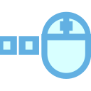マウス操作</h3>

            

            <table class="table-doc">
                <caption style="text-align: center">メインビューでのマウス操作</caption>
                <thead>
                    <tr>
                        <th style="text-align: center">マウス操作</th>
                        <th style="text-align: center">動作</th>
                    </tr>
                </thead>
                <tbody>
                    <tr>
                        <td>右ボタンクリック</td>
                        <td>右ボタンクリックメニューを開く</td>
                    </tr>
                    <tr>
                        <td>右ボタンプレスドラッグ</td>
                        <td>ビューの回転</td>
                    </tr>
                    <tr>
                        <td>Shift+右ボタンプレスドラッグ</td>
                        <td>ビューの平行移動</td>
                    </tr>
                    <tr>
                        <td>中ボタンプレスドラッグ</td>
                        <td>ビューの平行移動</td>
                    </tr>
                    <tr>
                        <td>左ボタンクリック</td>
                        <td>杭節点・一般節点・梁要素の選択（クリック位置に最も近いアイテムを選択）</td>
                    </tr>
                    <tr>
                        <td>Shift＋左ボタンクリック</td>
                        <td>選択の追加（既存の選択を維持したまま追加選択）</td>
                    </tr>
                    <tr>
                        <td>左ボタンプレスドラッグリリース</td>
                        <td>（※）選択窓による選択</td>
                    </tr>
                </tbody>
            </table>

            <p>
                マウスカーソルを節点や梁要素に近づけると、対象がハイライト表示されます。
                また、編集モードに応じてカーソル形状が変化します（杭配置追加モード：十字カーソル、一般節点追加モード：十字カーソル、梁要素追加モード：ペンカーソル、選択モード：矢印カーソル）。
            </p>
            <p />
            

            <p>
                右クリックの位置（節点上 / 梁要素上 / 一般節点上）に応じて、表示されるメニューが切り替わります。
                「コピー／移動」「削除」は選択中の <strong>杭配置・一般節点・梁要素のいずれの組合せ</strong> でも動作し、選択していた要素種別に応じて適切に処理されます。
            </p>

            <table class="table-doc">
                <caption style="text-align: center">節点（杭配置・一般節点）上での右クリックメニュー</caption>
                <thead>
                    <tr>
                        <th style="text-align: center">右クリックメニュー</th>
                        <th style="text-align: center">動作</th>
                    </tr>
                </thead>
                <tbody>
                    <tr>
                        <td>コピー／移動</td>
                        <td>選択中の杭配置・一般節点・梁要素を一括でコピー／移動するウィンドウを開きます。dX, dY, dZ の移動量を指定できます。</td>
                    </tr>
                    <tr>
                        <td>杭配置プロパティ変更／追加</td>
                        <td>選択した杭節点のプロパティを変更／追加するウィンドウを開きます。「接合節点Z (m)」「接合節点ΔZc (m)」「群杭係数」などをまとめて変更できます。</td>
                    </tr>
                    <tr>
                        <td>削除</td>
                        <td>選択中の杭配置・一般節点・梁要素をまとめて削除します。</td>
                    </tr>
                    <tr>
                        <td>一般節点⇔杭接合節点</td>
                        <td>選択した杭接合節点を一般節点に変換、または選択した一般節点を杭配置に変換します。杭の Z 座標は接合節点 Z を意味するため、変換は X/Y/Z をそのまま引き継ぎます。<br>
                        梁要素の接続は自動的に引き継がれます。</td>
                    </tr>
                    <tr>
                        <td>選択解除</td>
                        <td>選択を解除します。[ESC]と同じ。</td>
                    </tr>
                    <tr>
                        <td>画像コピー(x1.0)/(x2.0)</td>
                        <td>メインビューの表示内容をクリップボードにコピーします。x1.0 は等倍、x2.0 は 2 倍解像度です。</td>
                    </tr>
                    <tr>
                        <td>画像保存(x1.0)/(x2.0)</td>
                        <td>メインビューの表示内容を PNG 画像ファイルとして保存します。x1.0 は等倍、x2.0 は 2 倍解像度です。</td>
                    </tr>
                </tbody>
            </table>

            <table class="table-doc">
                <caption style="text-align: center">梁要素上での右クリックメニュー</caption>
                <thead>
                    <tr>
                        <th style="text-align: center">右クリックメニュー</th>
                        <th style="text-align: center">動作</th>
                    </tr>
                </thead>
                <tbody>
                    <tr>
                        <td>コピー／移動</td>
                        <td>選択中の杭配置・一般節点・梁要素を一括でコピー／移動するウィンドウを開きます。</td>
                    </tr>
                    <tr>
                        <td>梁要素プロパティの変更</td>
                        <td>選択した梁要素のプロパティ（材料・断面・β 角度等）を変更するウィンドウを開きます。</td>
                    </tr>
                    <tr>
                        <td>削除</td>
                        <td>選択中の梁要素を削除します（杭配置・一般節点が同時選択されていれば、それらもまとめて削除）。</td>
                    </tr>
                    <tr>
                        <td>選択解除</td>
                        <td>選択を解除します。[ESC]と同じ。</td>
                    </tr>
                    <tr>
                        <td>画像コピー／保存 (x1.0/x2.0)</td>
                        <td>メインビューの表示内容をクリップボードにコピー／PNG ファイルに保存します。</td>
                    </tr>
                </tbody>
            </table>

            <table class="table-doc">
                <caption style="text-align: center">一般節点 (入力データグリッド側) 上での右クリックメニュー</caption>
                <thead>
                    <tr>
                        <th style="text-align: center">右クリックメニュー</th>
                        <th style="text-align: center">動作</th>
                    </tr>
                </thead>
                <tbody>
                    <tr><td>コピー</td><td>対象の一般節点をコピーします。</td></tr>
                    <tr><td>削除</td><td>対象の一般節点を削除します。</td></tr>
                    <tr><td>一般節点⇔杭接合節点</td><td>節点種別を相互変換します。</td></tr>
                </tbody>
            </table>

            <section class="selection-window">
                <p><strong>（※）選択窓の動作</strong></p>
                <dl>
                    <dt>左から右へのドラッグ</dt>
                    <dd>窓に <strong>完全におさまる</strong> 節点・要素をすべて選択します。</dd>

                    <dt>右から左へのドラッグ</dt>
                    <dd>窓に <strong>完全におさまる</strong>、または <strong>交差する</strong> 節点・要素をすべて選択します。</dd>
                </dl>
            </section>

            <h3 id="file-open-methods" style="font-weight: bold;">ファイルを開く方法</h3>
            <p>プロジェクトファイル (推奨拡張子 <code>.pdj</code>、旧形式 <code>.json</code> も読み込み可) は以下のいずれの方法によっても開くことができます:</p>
            <ol>
                <li><strong>ファイルメニュー</strong> → 「開く (Ctrl+O)」または「最近使ったファイル」</li>
                <li><strong>ドラッグ&amp;ドロップ</strong>: エクスプローラから .pdj / .json ファイルをアプリ画面にドロップ</li>
                <li><strong>コマンドライン引数</strong>: ターミナルから次のように起動
                    <pre style="background:#f5f5f5; padding:8px; border-left:3px solid #62B0E2;">PileDesign.exe project.pdj
PileDesign.exe --open project.pdj  <em>(--open / -o オプションでも可)</em></pre>
                </li>
                <li><strong>ファイル関連付け (.pdj をダブルクリックで開く)</strong> — 任意設定:
                    <ul>
                        <li><strong>推奨</strong>: ファイル(F)メニュー → 「オプション」 → 「.pdj を PileDesign に関連付ける」をクリック (管理者権限不要)。
                            登録後に開く Windows 設定で .pdj に対して PileDesign を選択すると、ダブルクリックで開けるようになります</li>
                        <li>手動の場合: エクスプローラで .pdj ファイルを右クリック → 「プログラムから開く」 → 「別のプログラムを選択」 → PileDesign.exe を選択 → 「常にこのアプリを使う」にチェック</li>
                        <li>新規保存はデフォルトで <code>.pdj</code> (PileDesign Json) になります。旧 <code>.json</code> ファイルは引き続き開けます</li>
                        <li>関連付け後に PileDesign.exe を別のフォルダに移動 / 上書き更新した場合は、移動先の PileDesign を 1 回起動するだけで関連付けが新しいパスに自動追従します (再関連付け不要)</li>
                    </ul>
                </li>
            </ol>

            <h3 id="shortcuts" style="font-weight: bold;">キーボードショートカット</h3>
            <p>
                <strong>Ctrl + /</strong> キーを押すと、ショートカットキー一覧ウィンドウが表示されます。
                ファイル操作、入力ウィンドウの呼び出し、解析実行、ビュー切替、編集モード切替など、
                すべてのショートカットキーを確認できます。
            </p>
            <p>
                <strong>ステータスバー右側の <span style="font-size: 14pt;">⌨</span> 「ショートカット (Ctrl+/)」 ボタン</strong> をクリックしても
                同じウィンドウが表示されます。マウスユーザーは画面右下のヒントから即アクセス可能です。
            </p>
            <p>すべてのショートカットキー（カテゴリ別）：</p>
            <table class="table-doc">
                <thead>
                    <tr>
                        <th style="text-align: center">カテゴリ</th>
                        <th style="text-align: center">機能</th>
                        <th style="text-align: center">ショートカット</th>
                    </tr>
                </thead>
                <tbody>
                    <tr><td rowspan="4">ファイル</td><td>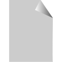新規作成</td><td>Ctrl+N</td></tr>
                    <tr><td>ファイルを開く</td><td>Ctrl+O</td></tr>
                    <tr><td>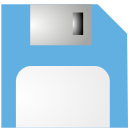上書き保存</td><td>Ctrl+S</td></tr>
                    <tr><td>名前を付けて保存</td><td>Ctrl+Shift+S</td></tr>
                    <tr><td>Docx 計算書出力</td><td>Ctrl+Shift+W</td></tr>

                    <tr><td rowspan="7">入力ウィンドウ</td><td>基本設定</td><td>Ctrl+E</td></tr>
                    <tr><td>荷重ケース編集</td><td>Ctrl+L</td></tr>
                    <tr><td>地盤編集</td><td>Ctrl+G</td></tr>
                    <tr><td>杭体編集</td><td>Ctrl+B</td></tr>
                    <tr><td>軸力確認</td><td>Ctrl+K</td></tr>
                    <tr><td>自動梁要素生成</td><td>Ctrl+Shift+B</td></tr>
                    <tr><td>杭要素分割</td><td>F4 / Ctrl+D</td></tr>

                    <tr><td rowspan="5">解析</td><td>水平解析</td><td>F5</td></tr>
                    <tr><td>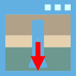単杭沈下解析</td><td>F6</td></tr>
                    <tr><td>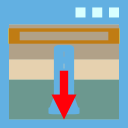単杭沈下解析（基礎梁考慮）</td><td>F7</td></tr>
                    <tr><td>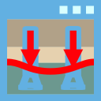群杭沈下解析（一般）</td><td>F8</td></tr>
                    <tr><td>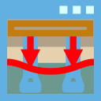群杭沈下解析（反復）</td><td>(リボン / サブタブから起動)</td></tr>

                    <tr><td rowspan="8">編集</td><td>元に戻す（Undo）</td><td>Ctrl+Z</td></tr>
                    <tr><td>やり直し（Redo）</td><td>Ctrl+Y</td></tr>
                    <tr><td>すべて選択（杭・一般節点・梁要素）</td><td>Ctrl+A</td></tr>
                    <tr><td>全選択解除</td><td>Esc</td></tr>
                    <tr><td>選択アイテムの削除（杭・一般節点・梁要素）</td><td>Delete</td></tr>
                    <tr><td>すべてアクティブ</td><td>Ctrl+Shift+A</td></tr>
                    <tr><td>選択のみアクティブ</td><td>F2</td></tr>
                    <tr><td>選択を非アクティブ</td><td>Shift+F2</td></tr>

                    <tr><td rowspan="3">編集モード</td><td>要素追加モード</td><td>Alt+1</td></tr>
                    <tr><td>選択モード（通常）</td><td>Alt+0</td></tr>
                    <tr><td>要素の節点分割</td><td>Alt+7</td></tr>

                    <tr><td rowspan="5">ビュー</td><td>ズームフィット</td><td>Ctrl+0</td></tr>
                    <tr><td>平面</td><td>Ctrl+Shift+T</td></tr>
                    <tr><td>正面</td><td>Ctrl+Shift+F</td></tr>
                    <tr><td>右面</td><td>Ctrl+Shift+R</td></tr>
                    <tr><td>アイソメ</td><td>Ctrl+Shift+I</td></tr>

                    <tr><td rowspan="2">ユーティリティ</td><td><a href="#section-utility-windows">コマンドパレット</a></td><td>Ctrl+Shift+P</td></tr>
                    <tr><td>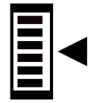INPUT 表示切替（説明用）</td><td>F12</td></tr>

                    <tr><td rowspan="3">ヘルプ</td><td>ヘルプ</td><td>F1</td></tr>
                    <tr><td>クイックヒント</td><td>Shift+F1</td></tr>
                    <tr><td>ショートカットキー一覧</td><td>Ctrl+/</td></tr>

                    <tr><td rowspan="6">ダイアログ共通</td><td>OK / 実行 / 保存 (規定ボタン)</td><td>Enter</td></tr>
                    <tr><td>キャンセル / 閉じる</td><td>Esc</td></tr>
                    <tr><td>編集ウィンドウの保存 (バックアップ)</td><td>Ctrl+Enter</td></tr>
                    <tr><td>ボタン名の下線文字でアクセス</td><td>Alt+(下線文字)</td></tr>
                    <tr><td>フォーカス移動</td><td>Tab / Shift+Tab</td></tr>
                    <tr><td>フォーカス中のボタン実行</td><td>Space</td></tr>
                </tbody>
            </table>

            
            <table class="table-doc">

                <caption style="text-align: center">ビューキューブにおけるマウス操作</caption>
                <thead>
                    <tr>
                        <th style="text-align: center">操作</th>
                        <th style="text-align: center">動作</th>
                    </tr>
                </thead>
                <tbody>
                    <tr>
                        <td>面クリック</td>
                        <td>選択した面が手前となるようにビュー回転</td>
                    </tr>
                    <tr>
                        <td>辺クリック</td>
                        <td>選択した辺が手前となるようにビュー回転</td>
                    </tr>
                    <tr>
                        <td>頂点クリック</td>
                        <td>選択した頂点が手前となるようにビュー回転</td>
                    </tr>
                    <tr>
                        <td>水平スクロールバー</td>
                        <td>水平ビュー回転</td>
                    </tr>
                    <tr>
                        <td>垂直スクロールバー</td>
                        <td>垂直ビュー回転</td>
                    </tr>
                </tbody>
            </table>
            <p>
                地震荷重ケースが選択されている場合、オレンジ色の矢印で地震慣性力方向を示します。
            </p>

            <h3 id="h-自動保存と復元" style="font-weight: bold;">自動保存と復元</h3>

            <h4>自動保存機能</h4>
            <p>
                本プログラムには、作業中のデータを定期的に自動保存する機能があります。
                予期しないクラッシュや停電などでデータが失われることを防ぎます。
            </p>
            <ul>
                <li>自動保存は、ファイルを開いた状態または保存済みの状態で、一定間隔（既定: 5分）で実行されます。</li>
                <li>自動保存ファイルは以下のフォルダに保存されます：
                    <pre style="background:#f5f5f5; padding:8px; border-radius:4px; font-size:0.9em;">%LocalAppData%\PileDesign\AutoSave\</pre>
                    （通常: <code>C:\Users\（ユーザー名）\AppData\Local\PileDesign\AutoSave\</code>）
                </li>
                <li>ファイル名は <code>（プロジェクト名）_autosave_（日時）.pdj</code> の形式です (旧形式は .json)。</li>
            </ul>

            <h4>起動時の復元ダイアログ</h4>
            <p>
                アプリケーション起動時に、24時間以内に作成された自動保存ファイルが検出されると、
                以下の復元確認ダイアログが表示されます。
            </p>
            <table class="table-doc">
                <thead>
                    <tr>
                        <th style="text-align: center">選択</th>
                        <th style="text-align: center">動作</th>
                    </tr>
                </thead>
                <tbody>
                    <tr>
                        <td><strong>はい</strong></td>
                        <td>自動保存ファイルからデータを復元します。復元後、通常通り「名前を付けて保存」で正式に保存してください。</td>
                    </tr>
                    <tr>
                        <td><strong>いいえ</strong></td>
                        <td>復元せず、空のプロジェクトで開始します。</td>
                    </tr>
                </tbody>
            </table>
            <p>
                どちらを選択した場合でも、該当の自動保存ファイルは確認済みとしてリネームされ、
                次回起動時には同じダイアログは表示されません。
            </p>

            <h4>手動での復元</h4>
            <p>
                ダイアログで「いいえ」を選択した後でも、自動保存フォルダ内のファイルは削除されずに残っています。
                手動で復元したい場合は、以下の手順で行えます：
            </p>
            <ol>
                <li>上記の自動保存フォルダをエクスプローラーで開きます。</li>
                <li>ファイル名に <code>_dismissed_</code> が含まれるファイルが、確認済みの自動保存ファイルです。</li>
                <li>ファイル名から <code>_dismissed</code> を削除してリネームすると、次回起動時に復元ダイアログが再度表示されます。</li>
                <li>または、「ファイルを開く」から直接自動保存ファイル（.pdj / .json）を開くこともできます。</li>
            </ol>

            <h3 id="h-データグリッド表操作" style="font-weight: bold;">データグリッド(表)操作</h3>

            <h4>クリップボード操作 (コピー・ペースト)</h4>
            <p>
                データグリッド上の編集可能なセルには、Microsoft Excel Worksheet上の値をコピーした状態で[Ctrl]+[V]を押すことでペーストすることができます。<br>
                このとき、選択範囲の左上のセルを起点とし、コピーしたセルの行数、列数の範囲にペーストされます。<br>
                ただし、貼り付け範囲の各セルで入力可能な値でなければエラーメッセージが表示されます。
            </p>
            <p>
                <strong>1×1 → 多セル塗り潰しペースト (Excel ライク)</strong>: クリップボードに 1 セル分しかなく、
                ペースト先で複数セルを選択している場合は、選択中の全セルへ同じ値を一括書き込みします。
                読み取り専用列はスキップし、型変換不可なら全体エラーとなります。
            </p>
            <p style="font-size: 0.92em; color: #555;">
                ここで「<strong>全体エラー</strong>」とは、選択範囲のいずれか 1 セルでも値の型変換に失敗する場合
                (例えば数値列に「abc」のような文字列を貼り付けようとした場合) に、
                <strong>書き込みを一切行わずに操作全体を中止し、エラーダイアログを表示する</strong>挙動を指します。
                これは事前検証フェーズで実施されるため、「先頭の数セルだけ書き込まれて途中で止まる」といった
                中途半端な状態にはなりません。書き込み可能なセルが選択範囲内にひとつもない場合にも
                「選択範囲に書き込み可能なセルがありません。」と通知して中止します。
            </p>
            <p>
                データグリッド上のデータは、セルを選択して[Ctrl]+[C]を押すことでコピーすることができます。
                コピー出力は TSV (タブ区切り) でクリップボードに格納されます。<br>
                列ヘッダーをクリックすると、その列を基準にデータを昇順・降順でソートできます。
                ソートはあくまで表示順序の変更であり、データ自体の並びには影響しません。
            </p>

            <h4>キーボードナビゲーション</h4>
            <p>
                データグリッド上でマウスを使わずにアクティブセルを移動・編集・操作するためのキー割り当てです。
                できるだけ Microsoft Excel Worksheet の挙動と揃えています。
            </p>
            <table class="table-doc">
                <thead>
                    <tr>
                        <th style="text-align: center; min-width: 130px">キー</th>
                        <th>動作</th>
                    </tr>
                </thead>
                <tbody>
                    <tr>
                        <td style="text-align: center;">[↑] [↓] [←] [→]</td>
                        <td>アクティブセルを 1 セル分、上 / 下 / 左 / 右に移動。編集中の場合は値を確定してから移動します
                            (バリデーションエラーが発生した場合は移動せず編集を継続)。</td>
                    </tr>
                    <tr>
                        <td style="text-align: center;">[Shift]+[↑] [↓] [←] [→]</td>
                        <td>アクティブセルを矢印方向に拡張し、範囲選択を作成します。</td>
                    </tr>
                    <tr>
                        <td style="text-align: center;">[Enter]</td>
                        <td>編集中なら値を確定して<strong>下のセル</strong>へ移動します。最下行に到達した場合は、
                            <strong>右隣の列の最上行</strong>へラップします。</td>
                    </tr>
                    <tr>
                        <td style="text-align: center;">[Shift]+[Enter]</td>
                        <td>[Enter] と逆方向 (上)。最上行に到達した場合は、左隣の列の最下行へラップします。</td>
                    </tr>
                    <tr>
                        <td style="text-align: center;">[Tab]</td>
                        <td>編集中なら値を確定して<strong>右のセル</strong>へ移動します。最右列に到達した場合は、
                            <strong>次行の左端</strong>へラップします。</td>
                    </tr>
                    <tr>
                        <td style="text-align: center;">[Shift]+[Tab]</td>
                        <td>[Tab] と逆方向 (左)。最左列に到達した場合は、前行の右端へラップします。</td>
                    </tr>
                    <tr>
                        <td style="text-align: center;">[F2] / 任意の文字キー</td>
                        <td>アクティブセルを編集モードにします (編集可能列のみ)。文字キーの場合はその文字も入力されます。</td>
                    </tr>
                    <tr>
                        <td style="text-align: center;">[Space]</td>
                        <td>アクティブセル内に
                            <strong>チェックボックス</strong>があればトグル、
                            <strong>ボタン</strong>があればクリック、
                            <strong>コンボボックス</strong>があればドロップダウンを開きます。
                            セルがテキスト編集中の場合は通常のスペース文字として入力されます。</td>
                    </tr>
                    <tr>
                        <td style="text-align: center;">[Esc]</td>
                        <td>編集中の値を破棄して編集モードを抜けます (WPF 既定動作)。</td>
                    </tr>
                    <tr>
                        <td style="text-align: center;">[Ctrl]+[C]</td>
                        <td>選択範囲を TSV 形式でコピー (前項参照)。</td>
                    </tr>
                    <tr>
                        <td style="text-align: center;">[Ctrl]+[V]</td>
                        <td>クリップボードの内容をアクティブセルを起点にペースト (前項参照)。</td>
                    </tr>
                    <tr>
                        <td style="text-align: center;">[Ctrl]+[A]</td>
                        <td>データグリッド上のすべてのセルを選択。</td>
                    </tr>
                </tbody>
            </table>
            <p style="font-size: 0.92em; color: #555;">
                バリデーションエラー時の挙動: 矢印 / [Enter] / [Tab] による「確定+移動」操作で、
                入力値がエラーとなる場合は<strong>移動せずに編集状態のまま留まります</strong>。
                エラーを修正するか、[Esc] で値を破棄してから移動してください。
            </p>

            <h4>列ヘッダーの色分け凡例</h4>
            <p>主要なデータグリッドでは、列の意味に応じて列ヘッダー文字色を以下のように使い分けています:</p>
            <table class="table-doc">
                <thead>
                    <tr>
                        <th style="text-align: center; min-width: 80px">色</th>
                        <th>使用例</th>
                    </tr>
                </thead>
                <tbody>
                    <tr>
                        <td style="text-align: center;"><span style="color:#238966; font-weight: bold;">■ 緑</span></td>
                        <td>レベル1 地震時軸力 1-1, 1-2, 1-3, 1-4 (kN) 等</td>
                    </tr>
                    <tr>
                        <td style="text-align: center;"><span style="color:#E95541; font-weight: bold;">■ 桃赤</span></td>
                        <td>レベル2 地震時軸力 2-1, 2-2, 2-3, 2-4 (kN) 等</td>
                    </tr>
                </tbody>
            </table>
            <p>
                セル内文字が <span style="color:#999999;">薄灰色</span> で表示されている列は<strong>読み取り専用</strong>（自動計算値）で、
                ユーザーによる直接編集はできません。値を変更するには、関連する入力項目を修正します。
                エラーや警告は <span style="color:#E53935; font-weight: bold;">赤</span> / <span style="color:#F57C00; font-weight: bold;">橙</span> でセル内強調されます。
            </p>

            <h3 id="h-AvalonDock-パネル操作">AvalonDock パネル操作</h3>
            <p>
                本プログラムでは、AvalonDock により <strong>左ペインのデータタブ・入力ウィンドウのサブペイン</strong> をフロート / ドッキング / 自動非表示 / 最大化 で柔軟に配置できます。
            </p>

            <h4>タブ操作 (フロート / ドッキング / 自動非表示)</h4>
            <p>
                各タブのヘッダ右クリックまたはタイトル領域のメニューから、以下の操作が可能です:
            </p>
            <ul>
                <li><strong>フロート</strong>: タブを独立したウィンドウに切り離します (複数モニタで作業時に便利)。</li>
                <li><strong>ドッキング</strong>: フロート中のタブを元の位置に戻します。</li>
                <li><strong>自動非表示</strong>: パネルを左端に折りたたみ、マウスオーバー時のみ展開。</li>
                <li><strong>閉じる</strong>: 標準タブは <code>CanClose="False"</code> で閉じる操作はブロックされます (誤って消える事故を防止)。</li>
            </ul>
            <p>
                左ペイン全体の表示/非表示は、リボン「ウィンドウ」タブの「<strong>データタブ</strong>」トグルで切替えます。
            </p>

            <h4>ペイン最大化 (アンドック・最大化)</h4>
            <p>
                AvalonDock 系の各入力ウィンドウ (杭体・杭頭・杭断面・杭要素分割・地盤・単杭沈下 など) では、
                最下段に <strong>「アンドック・最大化:」</strong> のラベルとペイン名ボタンが並んでいます。
                ボタンを押すと、対応するペインが浮動ウィンドウとしてアンドックされ、最大化された状態で別ウィンドウに表示されます。
                浮動ウィンドウのタイトルバーの <strong>最大化解除</strong> ボタンまたは <strong>×</strong> ボタンを押すと、
                自動的に元のドック位置に再ドックされます。元のボタンを再度押しても同じ動作になります。
            </p>
            <p>
                ウィンドウごとのボタン構成:
            </p>
            <ul>
                <li><strong>杭体</strong>: 杭体入力 / 杭姿図 / 地盤描画</li>
                <li><strong>杭頭</strong>: 入力 / 諸元 / 上面図 / MNインタラクション / θMインタラクション</li>
                <li><strong>杭断面</strong>: 入力 / 諸元 / 軸力制限（基礎部材の強度と変形性能）/ 断面図 / N-M関係 / M-φ関係 / M-θ関係 / N-Q関係</li>
                <li><strong>杭要素分割</strong>: 杭要素分割 / 杭姿図 / 水平地盤反力 / グラフ</li>
                <li><strong>地盤</strong>: 土層入力 / 土質点入力 (浮動最大化) ＋ 右ペイン (グラフ群 8 タブをまとめて拡張するトグル)</li>
            </ul>


            <h3 id="h-ツール">ツール</h3>
            <p>
                キャンバス右側の各アイコンは、それぞれリボンメニューの同じアイコンと同じはたらきをします。
            </p>

            <h3 id="h-ステータスバー">ステータスバー</h3>
            <p>
                画面下端のステータスバーには、以下の情報が表示されます。
            </p>
            <ul>
                <li><strong>マウス座標</strong>: メインビュー上のカーソル位置（X, Y, Z）</li>
                <li><strong>選択数</strong>: 現在選択されているアイテムの数</li>
                <li><strong>編集モード</strong>: 現在の編集モード（選択／杭配置追加／一般節点追加／梁要素追加）</li>
                <li><strong>ズーム率</strong>: 現在のビューのズーム倍率</li>
                <li>
                    <strong>解析実施状態</strong>: 完了した解析項目のみ「<strong>項目名 ✓</strong>」形式で並びます。
                    リボンの解析ボタンと同じ色分け:
                    <span style="color:#62B0E2; font-weight:bold;">スカイブルー</span> = 杭要素分割、
                    <span style="color:#2E7D32; font-weight:bold;">緑</span> = 水平解析、
                    <span style="color:#1565C0; font-weight:bold;">青</span> = 単杭沈下解析 / 単杭沈下解析（基礎梁考慮）、
                    <span style="color:#E65100; font-weight:bold;">橙</span> = 群杭沈下解析（一般 / 反復）。
                    未実施項目は表示されず、すべて未実施なら「未解析」と表示されます。
                </li>
            </ul>

            <h3 id="section-utility-windows">拡張機能パネル</h3>
            <p>
                解析結果ダッシュボード / コマンドパレット / 編集履歴 などの拡張機能パネルは、リボン「ツール」タブの「拡張機能」グループから起動します。
                <span class="xref">詳細は <a href="#section-tool-menu">ツールメニュー</a> 参照。</span>
            </p>


        <section>
            <h2 id="h-リボンメニュー">リボンメニュー</h2>
            <p>
                本プログラムのリボンメニューは、ファイルメニュー（アプリケーションメニュー）と
                6つのリボンタブで構成されています。以下に各メニューの全項目を一覧します。
            </p>
            <p>
                <strong>各メニューの概要</strong> — 各メニューの詳細は、これ以降の章で解説します。
            </p>
            <table class="table-doc">
                <thead>
                    <tr>
                        <th style="text-align:center">タブ</th>
                        <th style="text-align:center">KeyTip</th>
                        <th>主な役割</th>
                        <th>主なグループ</th>
                    </tr>
                </thead>
                <tbody>
                    <tr>
                        <td><strong>表示(V)</strong></td>
                        <td>V</td>
                        <td>メインビューの表示内容 (荷重ケース・通り心・形状・ラベル・選択操作・ビュー切替) を制御</td>
                        <td>荷重ケース / 目盛・通り心 / 形状関連 / 一般梁要素ラベル / 節点ラベル / 荷重 / 土層・土質点 / 地盤変位 / 群杭沈下 / 選択・表示 / ビュー切替 / テキスト・値表示 / ダイアグラムスケール</td>
                    </tr>
                    <tr>
                        <td><strong>解析条件/解析(S)</strong></td>
                        <td>S</td>
                        <td>解析条件 (基本設定・荷重・地盤・杭体・軸力確認) の入力 + 解析の実行</td>
                        <td>解析条件設定 / 水平解析 / 単杭沈下解析 / 群杭沈下解析</td>
                    </tr>
                    <tr>
                        <td><strong>解析結果(R)</strong></td>
                        <td>R</td>
                        <td>解析結果のダイアグラム表示 + グラフ・テーブル・ログの起動</td>
                        <td>解析結果表示 / バブル / 矢印 / 変形後 / グラフ・テーブル / ログ / テキスト・値表示 / ダイアグラムスケール</td>
                    </tr>
                    <tr>
                        <td><strong>ツール(T)</strong></td>
                        <td>T</td>
                        <td>計算書出力 / エクスポート (3dm / DXF / MGT) / 杭断面ライブラリ / 画像コピー・保存 / Chang サブプログラム</td>
                        <td>計算書 / エクスポート / ライブラリ / 画像 / サブプログラム</td>
                    </tr>
                    <tr>
                        <td><strong>ウィンドウ(W)</strong></td>
                        <td>W</td>
                        <td>パネル (データタブ・入力データ・プロパティ・ミニマップ) の表示制御 + 3D ビュー部品 + 結果ダッシュボード + プレゼン用 INPUT 表示</td>
                        <td>パネル / 3Dビュー / ダッシュボード / 説明用</td>
                    </tr>
                    <tr>
                        <td><strong>ヘルプ(H)</strong></td>
                        <td>H</td>
                        <td>ヘルプドキュメント (本書) / ヘルプチャット / クイックヒント / ショートカット一覧 / 設計例検証</td>
                        <td>ヘルプ</td>
                    </tr>
                </tbody>
            </table>
            <p style="font-size: 0.92em; color: #555;">
                ※ KeyTip は <kbd>Alt</kbd> 押下後に該当キー (V / S / R / T / W / H) を押すとそのタブに移動できる Fluent Ribbon の機能です。
            </p>

            <h3 id="h-ファイルメニュー">ファイルメニュー</h3>
            <p>
                リボン左端のアイコンをクリックすると開くメニューです。ファイルの新規作成・開く・保存・出力に関する操作を行います。
            </p>
            <table class="table-doc">
                <thead>
                    <tr><th style="text-align:center">項目</th><th style="text-align:center">ショートカット</th><th>説明</th></tr>
                </thead>
                <tbody>
                    <tr><td>新規作成</td><td>Ctrl+N</td><td>現在のデータを破棄し、新規プロジェクトを作成します</td></tr>
                    <tr><td>開く</td><td>Ctrl+O</td><td>JSONファイルを開きます。解析結果が含まれている場合は自動復元されます</td></tr>
                    <tr><td>最近使ったファイル</td><td>-</td><td>最近開いたファイルの一覧から選択して開きます</td></tr>
                    <tr><td>上書き保存</td><td>Ctrl+S</td><td>現在のファイルパスに上書き保存します（既定は解析結果込み。「オプション」で入力のみに切り替え可）</td></tr>
                    <tr><td>名前を付けて保存</td><td>Ctrl+Shift+S</td><td>新しいファイル名を指定して保存します</td></tr>
                    <tr><td>Docx 計算書出力</td><td>Ctrl+Shift+W</td><td>計算書出力ウィンドウを開き、含める項目を選択して Word (.docx) ファイルとして出力します</td></tr>
                    <tr><td>計算例</td><td>-</td><td>出典別 (建築基礎構造設計指針 2019 / 建築基礎構造設計例集 2024 / 基礎構造の設計 2023（関東支部）) のサンプルプロジェクト一覧から選択してロード</td></tr>
                    <tr><td>オプション</td><td>-</td><td>「保存オプション (手動保存・自動保存それぞれに解析結果を含めるか)」と「ファイル関連付け (.pdj を PileDesign に関連付ける)」を設定します</td></tr>
                </tbody>
            </table>
            <p style="font-size: 0.92em; color: #555;">
                ※ <strong>メインウィンドウを閉じるとき、開いている全てのサブウィンドウ</strong> (グラフ・テーブル・ログ・オプション 等)
                <strong>も同時に閉じます</strong>。アプリ終了時の取り残し防止のため、自動的に処理されます。
            </p>
            <h4>ファイル形式バージョン</h4>
            <p>
                JSON ファイルにはフォーマットバージョン (<code>FormatVersion</code>) が付与されています。現行の保存形式は <strong>v2</strong> です。
            </p>
            <ul>
                <li><strong>v1 → v2 マイグレーション</strong>: 旧形式 (v1) のファイルを開くと、杭配置の <code>Z</code> が「杭頭節点 Z」から「接合節点 Z」(基礎梁レベル) に自動的に再解釈されます。元ファイルは「上書き保存」または「名前を付けて保存」を実行するまで変更されません。</li>
                <li><strong>未来バージョン</strong>: より新しいバージョン (v3 以上) で保存されたファイルは、現行プログラムでは読み込めません。プログラムを更新してから開いてください。</li>
                <li>例題 (計算例) ファイルもロード時に自動マイグレーションされます。</li>
            </ul>

            <h4>ロード時の杭ライブラリ整合性チェック</h4>
            <p>
                ファイル / 計算例 / MRU など、いずれの経路でロードしても、既製コンクリート杭 (PHC / PRC / SC) の杭断面名が
                ライブラリ ([Models/PileLibrary/pile_library_PHC.csv] 等) に存在しないと警告ダイアログが表示されます。
                これは旧データやタイプミスによる「<strong>杭径がデフォルト 1200 mm のまま</strong>使われる」状態を防ぐためのチェックです。
                警告に該当した杭体は「杭体ウィンドウ」で杭断面を選び直してください。
            </p>
            <p style="font-size: 0.92em; color: #555;">
                ※ 杭ライブラリ本体の閲覧 (杭断面性能データベースの参照) は、リボン「ツール」タブの
                「<strong>杭断面ライブラリ</strong>」ボタンから行います <span class="xref">(<a href="#section-tool-menu">ツールメニュー</a> 参照)</span>。
                本節は <strong>ロード時の自動整合性チェック</strong> についての説明です。
            </p>

            <h4>計算例の読み込み</h4>
            <p>
                ファイルメニュー (Backstage) の「<strong>計算例</strong>」タブには、出典別 (建築基礎構造設計指針 2019 / 建築基礎構造設計例集 2024 / 基礎構造の設計 2023（関東支部）) に分類された
                サンプルプロジェクトの一覧があります。各ボタンをクリックすると、その例題 (杭・地盤・解析設定 一式) がロードされ動作を確認できます。
                ロードに成功すると、メインウィンドウのタイトルバーに出典の名称
                (例: 「基礎指針'19 計算例10」「設計例集3.1」「関東支部 計算例8」) が表示されます。
            </p>
            <p style="font-size: 0.92em; color: #555;">
                ※ 別途、<strong>地盤入力ウィンドウ</strong>の上部ツールバー右端にも「<strong>計算例 ▼</strong>」ドロップダウンがあります
                <span class="xref">(<a href="#section-ground-input">地盤入力</a> 参照)</span>。こちらは <strong>地盤データのみ</strong> を入れ替える機能で、目的が異なります (タイトルバーは更新しません)。
            </p>

            <h3 id="h-表示メニュー">表示メニュー</h3>
            <p>メインビューの表示内容を制御するタブです。表示項目が多いため、各ボタンはアイコンのみの小サイズで配置しています。各ボタン・グループ名にマウスを乗せるとツールチップで内容を確認できます（グループ名がウィンドウ幅に応じて省略表示「土...」「群...」となった場合も同様）。</p>

            <h4>荷重ケースグループ</h4>
            <p>表示する荷重ケースと荷重組合せを選択します。液状化/非液状化の切替もここで行います。</p>

            <h4>目盛・通り心グループ</h4>
            <table class="table-doc">
                <thead><tr><th style="text-align:center">アイコン</th><th style="text-align:center">ボタン</th><th>説明</th></tr></thead>
                <tbody>
                    <tr><td></td><td>目盛</td><td>5m間隔の目盛線の表示/非表示</td></tr>
                    <tr><td></td><td>通り心</td><td>定義した通り心の表示/非表示</td></tr>
                    <tr><td>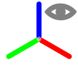</td><td>XYZ軸</td><td>XYZ座標軸の表示/非表示</td></tr>
                    <tr><td></td><td>軸中心</td><td>クリックすると参考軸中心 X0, Y0, Z0 を入力するポップアップが開きます。Z0 は通り心と XYZ 軸の描画高さに反映されます。</td></tr>
                </tbody>
            </table>

            <h4>形状関連グループ</h4>
            <table class="table-doc">
                <thead><tr><th style="text-align:center">アイコン</th><th style="text-align:center">ボタン</th><th>説明</th></tr></thead>
                <tbody>
                    <tr><td></td><td>慣性力作用点</td><td>慣性力作用点マーカーの表示/非表示</td></tr>
                    <tr><td></td><td>連結</td><td>剛体連結線の表示/非表示</td></tr>
                    <tr><td>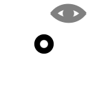</td><td>節点</td><td>節点の表示/非表示（▼: 接合節点の表示/非表示）</td></tr>
                    <tr><td>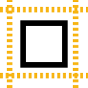</td><td>要素縮小表示</td><td>要素の端点を縮小して節点を見やすくします</td></tr>
                    <tr><td></td><td>根入部形状</td><td>根入部の形状表示/非表示</td></tr>
                    <tr><td></td><td>梁中心線</td><td>梁中心線の表示/非表示（▼: 杭中心線、要素軸の表示/非表示）</td></tr>
                    <tr><td></td><td>梁形状</td><td>梁断面形状の表示/非表示（▼: 杭体形状の表示/非表示）</td></tr>
                </tbody>
            </table>

            <h4>一般梁要素ラベルグループ</h4>
            <table class="table-doc">
                <thead><tr><th style="text-align:center">アイコン</th><th style="text-align:center">ボタン</th><th>説明</th></tr></thead>
                <tbody>
                    <tr><td></td><td>梁要素番号</td><td>梁要素の番号ラベル</td></tr>
                    <tr><td></td><td>材料No</td><td>梁要素の材料番号ラベル</td></tr>
                    <tr><td></td><td>材料名称</td><td>梁要素の材料名称ラベル</td></tr>
                    <tr><td></td><td>断面No</td><td>梁要素の断面番号ラベル</td></tr>
                    <tr><td></td><td>断面名称</td><td>梁要素の断面名称ラベル</td></tr>
                    <tr><td></td><td>β</td><td>梁要素のβ角度ラベル</td></tr>
                    <tr><td></td><td>一般Z</td><td>一般節点のZ座標ラベル</td></tr>
                </tbody>
            </table>

            <h4>節点ラベルグループ</h4>
            <table class="table-doc">
                <thead><tr><th style="text-align:center">アイコン</th><th style="text-align:center">ボタン</th><th>説明</th></tr></thead>
                <tbody>
                    <tr><td></td><td>節点番号</td><td>杭配置番号</td></tr>
                    <tr><td></td><td>一般Z</td><td>一般節点のZ座標</td></tr>
                    <tr><td></td><td>杭体番号</td><td>杭体参照番号</td></tr>
                    <tr><td></td><td>杭頭Z</td><td>杭頭のZ座標 (= 接合Z − ΔZc)</td></tr>
                    <tr><td></td><td>接合Z</td><td>接合節点 (基礎梁レベル) のZ座標</td></tr>
                    <tr><td></td><td>杭間隔比</td><td>杭間隔/杭径の比</td></tr>
                    <tr><td></td><td>前後方杭</td><td>前方杭/後方杭の区分</td></tr>
                    <tr><td></td><td>地盤番号</td><td>適用する地盤番号</td></tr>
                    <tr><td></td><td>群杭係数</td><td>群杭効果の補正係数</td></tr>
                </tbody>
            </table>

            <h4>荷重グループ</h4>
            <p>慣性力・杭軸力の矢印表示と、ダイアグラムスケール（スライダー）の設定です。</p>
            <table class="table-doc">
                <thead><tr><th style="text-align:center">アイコン</th><th style="text-align:center">ボタン</th><th>説明</th></tr></thead>
                <tbody>
                    <tr><td></td><td>慣性力</td><td>慣性力ベクトルの矢印表示/非表示</td></tr>
                    <tr><td></td><td>杭軸力</td><td>杭軸力 (鉛直力) の矢印表示/非表示</td></tr>
                </tbody>
            </table>

            <h4>土層・土質点グループ</h4>
            <p>杭周土層、土層パラメータ（密度・粘着力・Vs・Es・平均N値）、土質点パラメータ（N値・Vs0・Fc）、パラメータ値の表示を制御します。土層・土質点トグルの隣のドロップダウンで表示する具体的なパラメータ（粘着力／N値など）を切り替えます。</p>
            <table class="table-doc">
                <thead><tr><th style="text-align:center">アイコン</th><th style="text-align:center">ボタン</th><th>説明</th></tr></thead>
                <tbody>
                    <tr><td></td><td>杭周 土層</td><td>杭周りの土層断面表示/非表示</td></tr>
                    <tr><td>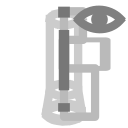</td><td>土層</td><td>土層パラメータ（密度・粘着力・Vs・Es・平均N値）の表示/非表示。隣のドロップダウンで具体的なパラメータを切替</td></tr>
                    <tr><td>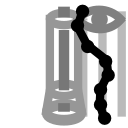</td><td>土質点</td><td>土質点パラメータ（N値・Vs0・Fc）の表示/非表示。隣のドロップダウンで具体的なパラメータを切替</td></tr>
                </tbody>
            </table>

            <h4>地盤変位グループ</h4>
            <p>液状化による地盤変位の矢印表示と変位ダイアグラムスケールの設定です。</p>
            <table class="table-doc">
                <thead><tr><th style="text-align:center">アイコン</th><th style="text-align:center">ボタン</th><th>説明</th></tr></thead>
                <tbody>
                    <tr><td>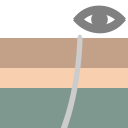</td><td>地盤 変位</td><td>液状化等による地盤変位ベクトルの矢印表示/非表示</td></tr>
                </tbody>
            </table>

            <h4>群杭沈下グループ</h4>
            <p>群杭沈下グリッド、群杭沈下用土層、群杭沈下荷重面の表示を制御します。</p>
            <table class="table-doc">
                <thead><tr><th style="text-align:center">アイコン</th><th style="text-align:center">ボタン</th><th>説明</th></tr></thead>
                <tbody>
                    <tr><td>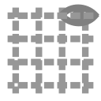</td><td>群杭沈下グリッド</td><td>群杭沈下グリッドの表示/非表示</td></tr>
                    <tr><td></td><td>群杭沈下土層</td><td>群杭沈下用土層 (水平視) の表示/非表示</td></tr>
                    <tr><td></td><td>群杭沈下荷重面</td><td>群杭沈下用荷重面の表示/非表示</td></tr>
                </tbody>
            </table>

            <h4>選択・表示グループ</h4>
            <p>杭・梁・節点の選択操作と、表示/非表示（アクティブ/非アクティブ）の一括操作を行います。</p>
            <table class="table-doc">
                <thead><tr><th style="text-align:center">アイコン</th><th style="text-align:center">ボタン</th><th>説明</th></tr></thead>
                <tbody>
                    <tr><td></td><td>すべて選択</td><td>全アイテムを選択状態にします（Ctrl+A）</td></tr>
                    <tr><td></td><td>全選択解除</td><td>全アイテムの選択を解除します（Esc）</td></tr>
                    <tr><td></td><td>すべてアクティブ</td><td>全アイテムを表示状態にします（Ctrl+Shift+A）</td></tr>
                    <tr><td></td><td>選択のみアクティブ</td><td>選択中のアイテムのみ表示し、他を非表示にします（F2）</td></tr>
                    <tr><td></td><td>選択を非アクティブ</td><td>選択中のアイテムを非表示にし、他を表示します（Shift+F2）</td></tr>
                    <tr><td>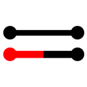</td><td>アクティブ反転</td><td>表示/非表示状態を反転します</td></tr>
                </tbody>
            </table>

            <h4>ビュー切替グループ</h4>
            <p>ズームフィット、平面 / 正面 / 右面 / アイソメ のビュー切替です。</p>
            <table class="table-doc">
                <thead><tr><th style="text-align:center">アイコン</th><th style="text-align:center">ボタン</th><th style="text-align:center">ショートカット</th><th>説明</th></tr></thead>
                <tbody>
                    <tr><td></td><td>ズームフィット</td><td>Ctrl+0</td><td>モデル全体が画面に収まるよう自動ズーム</td></tr>
                    <tr><td></td><td>平面</td><td>Ctrl+Shift+T</td><td>平面ビュー (XY 平面) に切替</td></tr>
                    <tr><td></td><td>正面</td><td>Ctrl+Shift+F</td><td>正面ビュー (XZ 平面) に切替</td></tr>
                    <tr><td></td><td>右面</td><td>Ctrl+Shift+R</td><td>右面ビュー (YZ 平面) に切替</td></tr>
                    <tr><td></td><td>アイソメ</td><td>Ctrl+Shift+I</td><td>アイソメトリックビューに切替</td></tr>
                </tbody>
            </table>

            <h4>テキストグループ</h4>
            <p>メインビュー上のラベルテキストのサイズや小数点以下桁数を変更します。解析結果タブにも同じコントロールがあります。</p>
            <table class="table-doc">
                <thead><tr><th style="text-align:center">アイコン</th><th style="text-align:center">コントロール</th><th>説明</th></tr></thead>
                <tbody>
                    <tr><td></td><td>サイズ</td><td>ラベル文字サイズの数値入力 (デフォルト 10)</td></tr>
                    <tr><td></td><td>位置</td><td>テキスト表示位置オフセットの調整スライダー (0〜20)</td></tr>
                    <tr><td>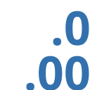</td><td>小数</td><td>小数点以下桁数 (0〜5) の調整スライダー</td></tr>
                </tbody>
            </table>

        </section>
        <section>
            <h2 id="section-ribbon-analysis">解析条件/解析メニュー ― 入力</h2>
            <p>
                リボンメニューの「解析条件/解析(S)」タブには、解析条件の設定と解析実行に関するボタンが配置されています。
                左側の「解析条件設定」グループと右側の「解析実行」グループに分かれています。
                本章では左側の<strong>解析条件設定</strong>グループを扱います。
                解析の実行は <a href="#h-解析条件-解析メニュー-解析の実行">「解析条件/解析メニュー ― 解析の実行」</a> を参照してください。
            </p>

            <h3 id="h-解析条件設定グループ" style="font-weight: bold;">解析条件設定グループ</h3>

            <h3 id="h-「基本設定」入力" style="font-weight: bold;">「基本設定」入力</h3>
            <p>「基本設定」ボタンをクリックして開くウィンドウで、
                性能グレードと、杭体の材料モデル化を選びます。</p>
            <ul>
                <li><strong>性能グレード</strong>: 耐震性能グレード（S / A）の選択。グレードにより検定に用いる限界状態が異なります</li>
            </ul>
            <p>
                プロジェクト番号・名称と標高の表記は
                <span class="xref"><a href="#h-「プロジェクト情報」入力">「プロジェクト情報」入力</a></span> に分けています。
            </p>
            <p>
                以降の項目は、変更したときに<strong>既存の解析結果が削除されるもの</strong>と、
                <strong>検定の耐力側だけに効いて解析結果が保持されるもの</strong>に分けて並べています。
                どちらに属するかは各グループの帯見出しに書いてあります。
            </p>

            <h3 id="h-「プロジェクト情報」入力" style="font-weight: bold;">「プロジェクト情報」入力</h3>
            <p>「プロジェクト 情報」ボタンをクリックして開くウィンドウで、
                計算書の表紙と標高表記に使う情報を入力します。最初に一度入れたら以後ほとんど触りません。</p>
            <ul>
                <li><strong>プロジェクト番号</strong>: 管理用のプロジェクト識別番号</li>
                <li><strong>プロジェクト名</strong>: プロジェクトの名称（計算書の表紙に使用されます）</li>
                <li><strong>標高記号</strong>: 標高体系の記号（例: TP、AP）。3 文字までで、docx 計算書の標高値表記に使用されます</li>
                <li><strong>Z=0 の標高 (m)</strong>: ローカル Z=0 が標高で何 m に相当するかを指定します。
                    これを変えると<strong>地盤の標高を保ったまま Z 座標が全体にずれます</strong>。
                    ジオメトリが動くため、既存の解析結果と杭要素分割は確認のうえ削除されます。</li>
            </ul>


            <h4 id="fund-options" style="font-weight: bold;">モデル化オプション（ラジオボタン選択）</h4>
            <p>
                基本設定のモデル化オプションは、項目ごとに<strong>既定（上側の選択肢）と代替オプションをラジオボタンで選択</strong>する形式です。
                各項目の既定は、日本建築学会<strong>「基礎部材の強度と変形性能」（第1版、2022年）</strong>に基づきます。
                同書は、杭体を使用限界・損傷限界・安全限界の 3 つの限界状態で評価するための耐力式（N-M 曲線・せん断耐力）、
                耐力の低減係数 $\beta_1$・$\beta_2$、解析用の M-&phi; 折線（$M_{cr}$-$M_y$-$\beta_1 M_{u0}$）や
                杭頭の M-&theta; 関係を与える文献で、本プログラムの杭体評価の基本としています。
                項目ごとに、告示1113(第8)・RC基礎構造部材の耐震設計指針(案)・ファイバーモデル等の代替を選択できます。
            </p>

            <h4 style="font-weight: bold;">コンクリートのモデル化</h4>
            <p>
                場所打ちコンクリート系杭（場所打ちRC杭・場所打ち鋼管コンクリート杭のRC部・鋼管杭の充填コンクリート部）の
                バイリニア型コンクリートの応力ひずみ関係に関する項目です。
                いずれも<strong>安全限界 NM 曲線と M-&phi; 関係（→ 非線形 FEM 解析）の両方</strong>に適用されます。
            </p>
            <ul>
                <li id="fund-opt-ec"><strong>ヤング係数 Ec の算定</strong>:
                    $$E_c = 3.35\times10^{4}\left(\frac{\gamma}{24}\right)^{2}\left(\frac{\sigma_B}{60}\right)^{1/3}$$
                    既定（「基礎部材の強度と変形性能」）は $\sigma_B=\xi F_c$（実際の施工品質管理係数 $\xi$ を使用）。
                    代替の<strong>「σB=Fc として Ec を算定する」</strong>を選ぶと $\sigma_B=F_c$ とし、$E_c$ は $\xi$ に影響を受けません（強度側 $\xi F_c$ 等には実際の $\xi$ を使用）。$E_c$ は M-&phi;・NM 曲線・EA/EI・諸元表示に影響します。</li>
                <li id="fund-opt-tension"><strong>引張側の扱い</strong>: 既定（基礎部材の強度と変形性能）はひび割れ強度（$0.56\sqrt{\xi F_c}$ 相当のひずみまで弾性）まで引張を負担します。
                    代替の<strong>「引張を無視する（σ=0）」</strong>を選ぶと、引張域では常に &sigma;=0 とします。</li>
                <li id="fund-opt-compression"><strong>圧縮側の折れ点応力度</strong>: 既定（基礎部材の強度と変形性能）は $\xi F_c$（Gsi&middot;Fc）です。
                    代替の<strong>「0.85&middot;Fc とする」</strong>を選ぶと $0.85\,F_c$ とします（$\xi$ は乗じません）。</li>
            </ul>
            <p>
                上記3項目は M-&phi; を変化させるため、変更すると既存の解析結果は確認のうえ削除されます（杭要素分割＝メッシュは保持）。
            </p>
            <h4 style="font-weight: bold;">許容耐力・終局強度の準拠</h4>
            <p>
                使用限界・損傷限界の許容耐力と安全限界の耐力を、既定（基礎部材の強度と変形性能）と
                告示1113(第8)／耐震設計指針(案) のどちらで算定するかを項目ごとに選択します。
                グループ先頭のチェック「2025年版 建築物の構造関係技術基準解説書 付録1-3 コンクリート系くい体の許容耐力に従う」で、
                <strong>許容圧縮・許容せん断の 2 項目</strong>を一括で告示1113(第8) 側に切替えることができます
                （個別に切替えると自動追随。安全限界＝終局強度の算定方式は含まないため「安全限界の耐力」で個別に選択します）。
                2025年版 解説書は許容応力度について告示1113(第8)によることとしているため、<strong>申請実務では本チェックを入れる想定</strong>です。
            </p>
            <ul>
                <li id="fund-opt-1113comp"><strong>場所打ち杭の許容圧縮応力度（使用限界・損傷限界）</strong>: 既定（基礎部材の強度と変形性能）は $\tfrac13\xi F_c$・$\tfrac23\xi F_c$。代替の<strong>「告示1113(第8)による」</strong>を選ぶと、告示 平13国交告第1113号(第8) の<strong>長期・短期許容圧縮応力度</strong>で算定します（使用限界=長期、損傷限界=短期）。長期の区分は $[1]\,F_c/4$ ／ $[2]\,\min(F_c/4.5,\ 6)$ から選択（短期はその2倍）。<br>この項目は<strong>使用限界・損傷限界の NM 曲線（検定の耐力側）のみ</strong>に効き、せん断・安全限界・M-&phi;・解析には影響しないため、<strong>解析結果は削除されず保持</strong>されます。<br>また告示1113 側を選択すると、<strong>杭断面／杭体／沈下ウィンドウの表・グラフの凡例・計算書</strong>における限界耐力の表示名を、許容応力度設計の用語に合わせて<strong>「使用限界」→「長期許容」、「損傷限界」→「短期許容」</strong>に切替えて表示します（安全限界・終局はそのまま。M-&phi;検定や杭頭接合部の損傷限界状態など、性能水準を表す表記は切替えの対象外）。</li>
                <li id="fund-opt-1113shear"><strong>場所打ちRC杭の許容せん断（使用限界・損傷限界）</strong>: 既定（基礎部材の強度と変形性能）は次のせん断耐力式（軸力・$M/(Q\!\cdot\! d)$ 依存）で算定します:
                    $$Q_d = \beta_1\,\frac{0.065\,k_c\,(49.0+\xi F_c)}{M/(Q\,d)+1.7}\left(1+\frac{\sigma_0}{14.7}\right)b\,j,\qquad Q_s = \frac{2}{3}\,Q_d$$
                    （$k_c$: 断面寸法による係数、$\sigma_0$: 平均軸応力度、$b\,j$: 断面幅×応力中心間距離）。<br>
                    代替の<strong>「告示1113(第8)の許容せん断応力度による」</strong>を選ぶと、告示の<strong>長期・短期許容せん断応力度</strong> $f_s$ で算定します。長期 $f_s=\min\!\left(\dfrac{F_c}{40}\ ［区分2 は \dfrac{F_c}{45}］,\ \dfrac34\!\left(0.49+\dfrac{F_c}{100}\right)\right)$、短期はその <strong>1.5 倍</strong>。使用限界=長期・損傷限界=短期。許容せん断力は $Q=f_s\,b\,j$ とし、<strong>軸力・$M/(Q\!\cdot\! d)$ に依存しません</strong>（Q-N 曲線は水平）。長期の区分は圧縮の項目と<strong>共通</strong>のセレクタで指定します。<br>この項目は<strong>使用限界・損傷限界の Q-N 曲線（検定の耐力側）のみ</strong>に効き、安全限界・M-&phi;・解析には影響しないため<strong>解析結果は保持</strong>されます。表示名の「使用限界／損傷限界」→「長期許容／短期許容」の切替も告示1113 側の選択時に適用されます。<br>※ 場所打ち鋼管コンクリート杭のせん断は鋼管が負担する（既に告示相当 $F/(1.5\sqrt3)$・$F/\sqrt3$）ため、本項目の対象外です。</li>
                <li id="fund-opt-ultimate"><strong>安全限界の耐力（場所打ちRC杭／場所打ち鋼管コンクリート杭）</strong>: 既定（基礎部材の強度と変形性能）はコンクリートのバイリニア近似
                    $\sigma=\min(E_c\varepsilon,\ \xi F_c)$（$\varepsilon_{cu}=0.003$）で、低減係数 $\beta_1$・$\beta_2$ と軸力適用範囲を課します。代替の<strong>「RC基礎構造部材の耐震設計指針(案) 5.4.1 による」</strong>を選ぶと、指針(案)に従い<strong>安全限界曲げ強度（安全限界 NM 曲線）</strong>等を算定します。
                    <ul>
                        <li><strong>場所打ちRC杭</strong>: コンクリートの応力ひずみ関係に e関数法
                            $$\frac{\sigma}{\xi F_c} = 6.75\left\{e^{-0.812\,\varepsilon/\varepsilon_M} - e^{-1.218\,\varepsilon/\varepsilon_M}\right\}$$
                            を用います（$\varepsilon_{cu}=0.003$・圧縮材料強度 $\xi F_c$）。</li>
                        <li><strong>場所打ち鋼管コンクリート杭</strong>: 鋼管内コンクリートを e関数法、鋼管を圧縮側 $0.85\times$引張強さ・引張側 引張強さで頭打ちのトリリニア、主筋をバイリニアとします。せん断終局は $Q_u=sQ_0\sqrt{1-\eta^2}\,(scM_u/sM_u)$（$scM_u$=合成断面終局曲げ、$sM_u$=鋼管単独終局曲げ）で算定します。</li>
                    </ul>
                    このオプション時、<strong>安全限界 NM 曲線は低減（$\beta$）・軸力制限を課さず、耐力（曲げ強度）そのものを 1 本の耐力包絡線として描きます</strong>（低減後＝低減前。基礎部材モードでの $\beta_1/\beta_1\beta_2$ 低減や軸力閾値による切り詰めは行いません）。なお指針(案)は鋼管巻き杭の適用範囲を平均軸応力度 $\sigma_0=-0.07\xi F_c\sim 0.15\xi F_c$（換算断面 $A_e$）としており、これは曲線を切り詰めるのではなく、<strong>実設計軸力がこの範囲に収まるかを確認する注記</strong>として扱ってください。<br>
                    この項目は<strong>安全限界の耐力側（NM 曲線・せん断 QN）のみ</strong>に効きます。<strong>解析用 M-φ／M-θ は収束のため常にバイリニアで算定</strong>します（e関数・鋼管上限の軟化域で終局モーメントが降伏モーメントを下回り M-φ が非単調＝負勾配ばねとなって FEM が収束不能になるのを避けるため）。したがって<strong>解析結果・使用/損傷限界には影響せず、解析結果は保持</strong>されます。</li>
            </ul>

            <h4 style="font-weight: bold;">鉄筋・鋼管のモデル化</h4>
            <p>
                鉄筋・鋼管の応力ひずみ関係に関する項目です。いずれも
                <strong>安全限界 NM 曲線と M-&phi; 関係（→ 非線形 FEM 解析）の両方</strong>に適用されます。
            </p>
            <ul>
                <li id="fund-opt-rebar11f"><strong>鉄筋の降伏応力度</strong>: 既定（基礎部材の強度と変形性能）は規格降伏点 $\sigma_y$ で降伏する完全バイリニア型（$\sigma=\pm\sigma_y$ 頭打ち、SD345→345・SD390→390 N/mm² 等）。代替の<strong>「1.1×F で降伏する完全バイリニア型とする」</strong>を選ぶと、場所打ちRC杭・場所打ち鋼管コンクリート杭の主筋について降伏応力度を $1.1\,\sigma_y$ に引き上げます（完全弾塑性）。RC基礎構造部材の耐震設計指針(案) に従い、<strong>SD490 は 1.1 倍の対象外</strong>（規格降伏点のまま）です。主筋（せん断補強以外）は圧縮・引張とも 1.1 倍の対象、安全限界にのみ適用（使用・損傷限界は $\sigma_y$）。</li>
                <li id="fund-opt-pipe11f"><strong>鋼管の降伏応力度</strong>: 既定（基礎部材の強度と変形性能）は材料強度 $\sigma_y=1.1F$ で降伏し、降伏後のひずみ硬化（第2勾配 $E/30$）と破断応力（$\pm$引張強さ $\sigma_u$ で頭打ち）を考慮します。代替の<strong>「±1.1×F 頭打ちの完全バイリニア型とする」</strong>を選ぶと、場所打ち鋼管コンクリート杭の鋼管についてひずみ硬化・破断を廃し $\pm 1.1F$ で頭打ちの完全弾塑性とします（鋼管杭は対象外）。</li>
            </ul>
            <p>
                これらも M-&phi; を変化させるため、変更すると既存の解析結果は確認のうえ削除されます（杭要素分割＝メッシュは保持）。
            </p>

            <h4 style="font-weight: bold;">M-φ関係の算定</h4>
            <ul>
                <li id="fund-opt-fiber-mphi"><strong>解析用 M-φ 関係（コンクリート系杭）</strong>: 既定（基礎部材の強度と変形性能）は杭種ごとの折線
                    （場所打ちRC の例:
                    $$(0,0)\rightarrow(\phi_{cr},\,M_{cr})\rightarrow(\phi_y,\,M_y)\rightarrow(\phi_c,\,\beta_1 M_{u0})$$
                    高軸力時 $N/A_g&gt;\tfrac13\xi F_c$ は $\beta_2=0.65$ を併用した 3 点折線）。
                    代替の<strong>「ファイバーモデルで算定する（断面分割積分）」</strong>を選ぶと、各曲率 $\phi$ で軸力つり合い
                    $$N=\int_A \sigma(\varepsilon_0-\phi z)\,dA = N_\text{target},\qquad M=-\int_A \sigma(\varepsilon_0-\phi z)\,z\,dA$$
                    を解いた断面応答の多点曲線（約 50 点、$\beta_1$・$\beta_2$ 低減なし）を解析に用います。
                    対象は場所打ちRC・場所打ち鋼管コンクリート・PHC/PRC/SC・コンクリート充填鋼管部（鋼管杭の鋼管部は対象外）
                    （詳細は<strong>「場所打ち鉄筋コンクリート杭の曲げモーメントと曲率の関係」</strong>の
                    <a href="#fiber-mphi-option">「解析用 M-φ をファイバーモデルで算定するオプション」</a>を参照）。
                    変更すると既存の解析結果は確認のうえ削除されます（杭要素分割は保持）。</li>
            </ul>

            <h4 style="font-weight: bold;">KCTB 場所打ち鋼管コンクリート杭（TB 工法）</h4>
            <ul>
                <li id="fund-opt-kctb"><strong>BCJ評定-FD0356-08 が定める設計法に従う</strong>:
                    評定が定めている項目を一括で設定するチェックです（個別に切替えると自動で追随します）。
                    束ねるのは次の 2 つだけです。
                    <ul>
                        <li>コンクリートの許容応力度を <strong>告示1113(第8) 打設方法(一)</strong> とする
                            （評定 5.(1)・表1.2、長期許容の区分 1）。</li>
                        <li>本体部の設計法を <strong>単純累加</strong> とする
                            （評定 5.(3)、日本建築学会「鉄骨鉄筋コンクリート構造計算規準・同解説」2014 4章2節）。</li>
                    </ul>
                    チェックを入れると、評定書の適用範囲（鋼管外径 $\phi700\sim2700$ mm・板厚 $9\sim25$ mm と
                    その組合せ、外径に応じた板厚の下限、$\phi2600$・$\phi2700$ は SKK490 のみ、腐食しろ 1 mm、
                    $F_c=18\sim45$ N/mm²、鋼管長の上限）を解析の実行前に検査し、
                    外れている項目を注意として表示します。範囲外でも計算は中断しません。<br>
                    <strong>評定書に終局（安全限界）の規定はありません。</strong>
                    評定申込事項は「コンクリートの許容応力度」「鋼管のコンクリートに対する許容支圧せん断応力度」
                    「本体部の設計法」「継手部の設計法」「鋼管の材質・形状・寸法等」
                    「掘削孔および鋼管の寸法範囲等」「鋼管の腐食しろ」の 7 項目です。
                    したがって下の 2 項目は評定範囲外として別に選びます。</li>

                <li id="fund-opt-kctb-nm"><strong>本体部の設計法（許容時 N-M の求め方）</strong>:
                    <strong>「単純累加で算定する」</strong>が評定書 5.(3) の方法です。
                    断面を積分せず、鋼管部の許容耐力と鉄筋コンクリート部の許容耐力を累加します。
                    $$_rN_t \le N \le {}_rN_c:\quad M \le {}_sM_0 + {}_rM,\qquad {}_sM_0 = {}_sZ\cdot{}_sf_t$$
                    $$N > {}_rN_c:\quad rac{{}_sN}{{}_sA}+rac{{}_sM}{{}_sZ}={}_sf_c,\qquad
                      N < {}_rN_t:\quad rac{{}_sN}{{}_sA}-rac{{}_sM}{{}_sZ}=-{}_sf_t$$
                    ここで $_rN_c=\min(A_e f_c,\; A_e\,{}_mf_c/n)$、$_rN_t=-{}_mA\cdot{}_mf_t$、
                    $A_e$ はコンクリート断面に主筋断面積を $n$ 倍して加算した換算断面積、$n$ はヤング係数比です。<br>
                    もう一方の<strong>「断面を分割して積分する」</strong>は評定書には無い方法で、
                    ジャパンパイル Technical Note Vol.1-5 によります。
                    断面を中立軸に平行な微小要素に分割し、平面保持のもとで
                    $$N=\sum_i \sigma_i A_i,\qquad M=\sum_i \sigma_i A_i L_i$$
                    を積分します（鉄筋は等価な断面を持つ薄肉鋼管に置換）。
                    本プログラムの他の杭種と同じ求め方で、<strong>こちらが既定</strong>です。<br>
                    この選択は<strong>使用限界・損傷限界の NM 曲線（検定の耐力側）のみ</strong>に効きます。
                    安全限界・M-&phi;・解析には影響しないため、解析結果は保持されます。</li>

                <li id="fund-opt-kctb-ecu"><strong>終局の圧縮縁ひずみ $arepsilon_{cu}$（場所打ち鋼管コンクリート杭）</strong>:
                    <strong>評定書の範囲外です。</strong>
                    既定は他の場所打ち系杭と同じ $3{,}000\mu$。
                    代替の<strong>「$5{,}000\mu$ とする」</strong>は鋼管によるコンクリートの拘束効果を踏まえた値で、
                    出典は建設省総合技術開発プロジェクト「新建築構造体系の開発」性能評価分科会
                    基礎WG 最終報告書（平成12年3月、建設省建築研究所）資料4-7 です。
                    $\phi800	imes t9$（SKK400）の内面リブ・突起付き鋼管に現場施工でコンクリートを充填した
                    実大試験体の正負交番繰り返し曲げ試験と断面解析の照合により、
                    $3{,}000\mu$ では限界曲率を過小評価し、$7{,}000\mu$ では実験値を上回るため、
                    $5{,}000\mu$ が安全側であると結論されています。
                    値そのものは Technical Note Vol.1-5 にも示されています。<br>
                    安全限界 NM 曲線と M-&phi; の終点 $(\phi_u,\ M_{u0})$ に効くため、
                    変更すると既存の解析結果は確認のうえ削除されます（杭要素分割は保持）。
                    解析用 M-&phi; の折れ点の取り方そのものは「基礎部材の強度と変形性能」のままです。
                    鋼管杭のコンクリート充填鋼管部は対象外です。</li>

                <li id="fund-opt-kctb-allowable"><strong>許容時（使用限界・損傷限界）の判定材料（場所打ち鋼管コンクリート杭）</strong>:
                    <strong>評定書の範囲外です。</strong>
                    既定は他の場所打ち系杭と同じく、コンクリート・鉄筋・鋼管の 3 材料のうち
                    最初に許容ひずみに達したもので限界状態を決めます。
                    代替の<strong>「コンクリートと鋼管のみで判定する」</strong>は
                    ジャパンパイル Technical Note Vol.1-5 (2022年11月) p.2 によるもので、
                    「圧縮側のコンクリートの応力度が許容圧縮応力度 $\sigma_{ca}$ に達した時、もしくは
                    圧縮側または引張側の鋼管の応力度が許容応力度 $\sigma_{sa}=F_s$（基準強度）に達した時」と定めます。
                    鉄筋は限界状態の判定には用いませんが、
                    <strong>耐力への寄与（断面積分）には従来どおり参入します</strong>。
                    鉄筋の応力度は判定と無関係に $\pm\sigma_{ry}$ 頭打ちで積分に入るため、
                    曲線が鉄筋の規格に依存しなくなるわけではありません。<br>
                    使用限界・損傷限界の NM 曲線のみに効き、安全限界・M-&phi;・解析には影響しません。</li>
            </ul>

            <h3 id="section-loadcase-input" style="font-weight: bold;">「荷重条件」入力</h3>
            <p>
                メニューバー直下の「荷重条件」ボタンをクリックして開く「荷重条件ウィンドウ」で、内容を入力します。<br>

                「荷重条件ウィンドウ」には「上部構造・基礎部、地盤の作用の重ね合わせ」タブと「荷重ケース」タブがあります。<br>

                「荷重ケース」タブでは、レベル1、レベル2地震荷重それぞれ4方向のについて、名称、慣性力方向、地盤非線形性、杭の非線形性、慣性力作用中心、上部構造慣性力、基礎部慣性力を定義します。<br>

                「地盤 非線形性」は<strong>「線形 (k<sub>h0</sub> 固定)」「k<sub>h</sub> 低減のみ」「k<sub>h</sub> 低減 + p<sub>y</sub> 頭打ち」の 3 段階</strong>から選択します
                (既定は基礎指針'19 準拠の「k<sub>h</sub> 低減 + p<sub>y</sub> 頭打ち」)。各段階の意味は
                <span class="xref"><a href="#soil-nonlinearity-mode">杭の水平抵抗「地盤非線形性の考慮段階」</a></span> を参照してください。<br>

                共通入力データグリッドで入力して適用ボタンをクリックすると、そのレベルのすべてのケースに入力が適用されます。
            </p>

            <h4>「上部構造・基礎部、地盤の作用の重ね合わせ」タブ</h4>
            <p>
                杭応力評価では、上部構造慣性力 ($P_s$)・基礎部慣性力 ($P_f$)・地盤変位 ($D$) の最大値が時間的に必ずしも同時に発生しないことを考慮し、
                それぞれに 1.0 以下の低減係数 $\alpha_L, \beta_U, \beta_L$ を乗じて重ね合わせます (基礎指針'19 6.6 節、2 杭基礎の応力評価法、d 杭応力の重ね合わせ)。
                建物固有周期 $T_b$ と地盤固有周期 $T_g$ の比 $T_b/T_g$ から、ユーザーが低減係数の値と必要な重ね合わせケース数を設定します。
            </p>

            <ul class="symbol-list">
                <li class="symbol-intro">記号</li>
                <li><span class="symbol-label">$\alpha_L$</span>杭曲げモーメント最大時の地盤変位 / 地盤変位の最大値</li>
                <li><span class="symbol-label">$D$</span>地盤変位の最大値</li>
                <li><span class="symbol-label">$\beta_U$</span>杭曲げモーメント最大時の上部構造慣性力 / 上部構造慣性力の最大値</li>
                <li><span class="symbol-label">$P_s$</span>上部構造慣性力の最大値</li>
                <li><span class="symbol-label">$\beta_L$</span>杭曲げモーメント最大時の基礎部慣性力 / 基礎部慣性力の最大値</li>
                <li><span class="symbol-label">$P_f$</span>基礎部慣性力の最大値</li>
            </ul>

            <p>
                低減係数と重ね合わせケース数の決定基準を以下に示します (基礎指針'19 表 6.6.2):
            </p>

            <table class="table-doc">
                <caption style="text-align: center">建物の固有周期 $T_b$ と地盤の固有周期 $T_g$ の比と低減係数</caption>
                <thead>
                    <tr>
                        <th style="text-align: center">$T_b / T_g$</th>
                        <th style="text-align: center">低減係数</th>
                        <th style="text-align: center">上部構造慣性力と地盤変位の位相</th>
                        <th style="text-align: center">重ね合わせケース数</th>
                    </tr>
                </thead>
                <tbody>
                    <tr>
                        <td style="text-align: center">$T_b/T_g < 1$</td>
                        <td>$\alpha_L = \beta_U = \beta_L = 1$</td>
                        <td style="text-align: center">同位相</td>
                        <td style="text-align: center">1</td>
                    </tr>
                    <tr>
                        <td rowspan="2" style="text-align: center">$T_b/T_g \approx 1$</td>
                        <td>地盤変位が卓越: $\alpha_L = \beta_L = 1,\;0.5 &lt; \beta_U &lt; 1$</td>
                        <td rowspan="2" style="text-align: center">同位相および逆位相</td>
                        <td rowspan="2" style="text-align: center">4</td>
                    </tr>
                    <tr>
                        <td>上部構造慣性力が卓越: $\beta_U = 1,\;0.5 &lt; \alpha_L = \beta_L &lt; 1$</td>
                    </tr>
                    <tr>
                        <td rowspan="2" style="text-align: center">$T_b/T_g > 1$</td>
                        <td>地盤変位が卓越: $\alpha_L = \beta_L = 1,\;\beta_U = 0.5$</td>
                        <td rowspan="2" style="text-align: center">同位相および逆位相</td>
                        <td rowspan="2" style="text-align: center">4</td>
                    </tr>
                    <tr>
                        <td>上部構造慣性力が卓越: $\beta_U = 1,\;\alpha_L = \beta_L = 0.5$</td>
                    </tr>
                </tbody>
            </table>

            <p>
                重ね合わせケース数は次の通り決定されます:
            </p>
            <ul>
                <li><strong>ケース数 1 (低減なし)</strong>: $T_b/T_g &lt; 1$ の場合。すべての低減係数が 1 のため、上部構造慣性力・基礎部慣性力・地盤変位の最大値を単純加算した 1 ケースのみで評価します。</li>
                <li>
                    <strong>ケース数 4</strong>: $T_b/T_g \approx 1$ または $T_b/T_g &gt; 1$ の場合。
                    低減係数が 1 未満になる組合せを評価する必要があるため、4 ケースを生成します。4 ケースは以下の組合せです:
                    <ol>
                        <li>上部構造慣性力卓越 × 逆位相</li>
                        <li>地盤変位卓越 × 逆位相</li>
                        <li>上部構造慣性力卓越 × 同位相</li>
                        <li>地盤変位卓越 × 同位相</li>
                    </ol>
                </li>
            </ul>

            <p>
                ウィンドウ下部のスライダーで $T_b/T_g$ の値を 0.5〜1.0 の範囲で調整すると、上記の係数値が連動して更新されます。
                $T_b/T_g \approx 1$ または $T_b/T_g &gt; 1$ で「卓越パターン × 同位相/逆位相」の 4 ケースが自動生成され、「荷重ケース」タブで各ケースの $\alpha_L, \beta_U, \beta_L$ の値を確認・編集できます。
            </p>

            <p style="font-size: 0.92em; color: #555;">
                ※ 現状の実装では、各杭に入力する軸方向力に上部構造変動成分・基礎部変動成分の区別がなく、これらに対し $\beta_U, \beta_L$ の乗算は行われません (杭軸力はすべての重ね合わせケースで同一値となります)。
            </p>

            <section>
                <h4>荷重・解析条件</h4>

                <ul>
                    <li>デフォルトの解析ケースに対する荷重組合せ（荷重係数）</li>
                </ul>

                <table style="border-collapse: collapse; width: 100%; background-color: #62B0E2; color: white; border: 1px solid white;">
                    <thead>
                        <tr>
                            <th rowspan="2" style="width: 10%; border-right: 1px solid white;">解析ケース</th>
                            <th colspan="12">解析荷重ケース</th>
                        </tr>
                        <tr>
                            <th style="width: 9%; text-align: center; border: 1px solid white;">VL<sub>0</sub></th>
                            <th style="width: 9%; text-align: center; border: 1px solid white;">VL<sub>add</sub></th>
                            <th style="width: 9%; text-align: center; border: 1px solid white;">1-1</th>
                            <th style="width: 9%; text-align: center; border: 1px solid white;">1-2</th>
                            <th style="width: 9%; text-align: center; border: 1px solid white;">1-3</th>
                            <th style="width: 9%; text-align: center; border: 1px solid white;">1-4</th>
                            <th style="width: 9%; text-align: center; border: 1px solid white;">2-1</th>
                            <th style="width: 9%; text-align: center; border: 1px solid white;">2-2</th>
                            <th style="width: 9%; text-align: center; border: 1px solid white;">2-3</th>
                            <th style="width: 9%; text-align: center; border: 1px solid white;">2-4</th>
                        </tr>
                    </thead>
                    <tbody>
                        <tr>
                            <td style="border: 1px solid white;">VL</td>
                            <td style="text-align: right; border: 1px solid white;">1.0</td>
                            <td style="text-align: right; border: 1px solid white;">1.0</td>
                            <td style="border: 1px solid white;"></td>
                            <td style="border: 1px solid white;"></td>
                            <td style="border: 1px solid white;"></td>
                            <td style="border: 1px solid white;"></td>
                            <td style="border: 1px solid white;"></td>
                            <td style="border: 1px solid white;"></td>
                            <td style="border: 1px solid white;"></td>
                            <td style="border: 1px solid white;"></td>
                        </tr>
                        <tr>
                            <td style="border: 1px solid white;">1-1</td>
                            <td style="border: 1px solid white;"></td>
                            <td style="border: 1px solid white;"></td>
                            <td style="text-align: right; border: 1px solid white;">1.0</td>
                            <td style="border: 1px solid white;"></td>
                            <td style="border: 1px solid white;"></td>
                            <td style="border: 1px solid white;"></td>
                            <td style="border: 1px solid white;"></td>
                            <td style="border: 1px solid white;"></td>
                            <td style="border: 1px solid white;"></td>
                            <td style="border: 1px solid white;"></td>
                        </tr>
                        <tr>
                            <td style="border: 1px solid white;">1-2</td>
                            <td style="border: 1px solid white;"></td>
                            <td style="border: 1px solid white;"></td>
                            <td style="border: 1px solid white;"></td>
                            <td style="text-align: right; border: 1px solid white;">1.0</td>
                            <td style="border: 1px solid white;"></td>
                            <td style="border: 1px solid white;"></td>
                            <td style="border: 1px solid white;"></td>
                            <td style="border: 1px solid white;"></td>
                            <td style="border: 1px solid white;"></td>
                            <td style="border: 1px solid white;"></td>
                        </tr>
                        <tr>
                            <td style="border: 1px solid white;">1-3</td>
                            <td style="border: 1px solid white;"></td>
                            <td style="border: 1px solid white;"></td>
                            <td style="border: 1px solid white;"></td>
                            <td style="border: 1px solid white;"></td>
                            <td style="text-align: right; border: 1px solid white;">1.0</td>
                            <td style="border: 1px solid white;"></td>
                            <td style="border: 1px solid white;"></td>
                            <td style="border: 1px solid white;"></td>
                            <td style="border: 1px solid white;"></td>
                            <td style="border: 1px solid white;"></td>
                        </tr>
                        <tr>
                            <td style="border: 1px solid white;">1-4</td>
                            <td style="border: 1px solid white;"></td>
                            <td style="border: 1px solid white;"></td>
                            <td style="border: 1px solid white;"></td>
                            <td style="border: 1px solid white;"></td>
                            <td style="border: 1px solid white;"></td>
                            <td style="text-align: right; border: 1px solid white;">1.0</td>
                            <td style="border: 1px solid white;"></td>
                            <td style="border: 1px solid white;"></td>
                            <td style="border: 1px solid white;"></td>
                            <td style="border: 1px solid white;"></td>
                        </tr>
                        <tr>
                            <td style="border: 1px solid white;">2-1</td>
                            <td style="border: 1px solid white;"></td>
                            <td style="border: 1px solid white;"></td>
                            <td style="border: 1px solid white;"></td>
                            <td style="border: 1px solid white;"></td>
                            <td style="border: 1px solid white;"></td>
                            <td style="border: 1px solid white;"></td>
                            <td style="text-align: right; border: 1px solid white;">1.0</td>
                            <td style="border: 1px solid white;"></td>
                            <td style="border: 1px solid white;"></td>
                            <td style="border: 1px solid white;"></td>
                        </tr>
                        <tr>
                            <td style="border: 1px solid white;">2-2</td>
                            <td style="border: 1px solid white;"></td>
                            <td style="border: 1px solid white;"></td>
                            <td style="border: 1px solid white;"></td>
                            <td style="border: 1px solid white;"></td>
                            <td style="border: 1px solid white;"></td>
                            <td style="border: 1px solid white;"></td>
                            <td style="border: 1px solid white;"></td>
                            <td style="text-align: right; border: 1px solid white;">1.0</td>
                            <td style="border: 1px solid white;"></td>
                            <td style="border: 1px solid white;"></td>
                        </tr>
                        <tr>
                            <td style="border: 1px solid white;">2-3</td>
                            <td style="border: 1px solid white;"></td>
                            <td style="border: 1px solid white;"></td>
                            <td style="border: 1px solid white;"></td>
                            <td style="border: 1px solid white;"></td>
                            <td style="border: 1px solid white;"></td>
                            <td style="border: 1px solid white;"></td>
                            <td style="border: 1px solid white;"></td>
                            <td style="border: 1px solid white;"></td>
                            <td style="text-align: right; border: 1px solid white;">1.0</td>
                            <td style="border: 1px solid white;"></td>
                        </tr>
                        <tr>
                            <td style="border: 1px solid white;">2-4</td>
                            <td style="border: 1px solid white;"></td>
                            <td style="border: 1px solid white;"></td>
                            <td style="border: 1px solid white;"></td>
                            <td style="border: 1px solid white;"></td>
                            <td style="border: 1px solid white;"></td>
                            <td style="border: 1px solid white;"></td>
                            <td style="border: 1px solid white;"></td>
                            <td style="border: 1px solid white;"></td>
                            <td style="border: 1px solid white;"></td>
                            <td style="text-align: right; border: 1px solid white;">1.0</td>
                        </tr>
                    </tbody>
                </table>
            </section>


            <!-- ========================================
                 「地盤」入力
                 ======================================== -->
            <h3 id="section-ground-input" style="font-weight: bold;">「地盤」入力</h3>
            <p>
                メニューバー直下の「地盤」ボタンをクリックして開く「地盤入力ウィンドウ」で、地盤条件を入力します。<br>
                本ウィンドウは、左側に入力用パネル（上部：基本パラメータ、中段：土層データ表・土質点データ表）、右側にグラフ表示パネルを配置した構成です。
            </p>

            <h4>ウィンドウ構造 (AvalonDock タブレイアウト)</h4>
            <p>
                地盤ウィンドウは AvalonDock のドッキング可能タブで構成されています。各タブは <b>ドラッグでドッキング解除/移動</b>、ダブルクリックで最大化、× ボタンが表示されているものは閉じて再表示も可能です。
            </p>
            <ul>
                <li><b>左側 (上段)</b>: 「土層入力」タブ — 土層の物性値・厚さ・粒度区分等を表形式で入力</li>
                <li><b>左側 (下段)</b>: 「土質点入力」タブ — 土質点の N 値・S 波速度・細粒分含有率・H/D-モデルパラメータ等を入力</li>
                <li><b>右側 (上段)</b>: 「N値」 / 「粘着力」 / 「S波速度」 / 「変形係数」 / 「任意地盤変位」タブ — 各物性値の深さ分布グラフ</li>
                <li><b>右側 (下段)</b>: 「地盤変位」 / 「液状化安全率」 / 「応答スペクトル」タブ — 解析結果プロファイル</li>
            </ul>
            <p>
                ウィンドウ最下段の「アンドック・最大化:」ラベル右の各ボタンで個別タブを操作できます:
                「<b>土層入力</b>」 / 「<b>土質点入力</b>」 ボタンは対象タブを浮動ウィンドウとしてアンドックし最大化表示します
                (浮動窓の最大化解除ボタンまたは × で元の位置に自動再ドック)。
                「<b>グラフ</b>」 ボタンは右側のグラフタブ群 (N値・粘着力・S波速度・変形係数・任意地盤変位・地盤変位・液状化安全率・応答スペクトル) を画面いっぱいに広げます (再度押下で元の表示に戻る)。
                詳細な入力テーブルを集中して編集する際や、グラフを大きく確認する際に便利です。
            </p>

            <h4>基本操作</h4>
            <ul>
                <li><b>地盤番号</b>：ウィンドウ上部のコンボボックスで対象の地盤番号を選択します。初期値は 1 です。「(New)」を選択すると新しい地盤データを作成できます。</li>
                <li><b>地盤符号</b>：地盤の参照名を任意に設定できます（例：「GR1」など）。</li>
                <li><b>計算例</b>：「計算例」ボタンのメニューから、あらかじめ用意された計算例データを読み込むことができます。</li>
                <li><b>保存 (Ctrl+Enter)</b>：入力内容を保存してウィンドウを閉じます。</li>
                <li><b>キャンセル (Esc)</b>：入力内容を破棄してウィンドウを閉じます。</li>
                <li><b>元に戻す / やり直し</b>：Ctrl+Z / Ctrl+Y で操作を取り消し・再実行できます。</li>
            </ul>

            <h4>「孔口レベル・地下水位」タブ</h4>
            <p>地盤の基準となる標高と深度を設定します。上段が標高（Z）入力、下段がGL深さ表示です。標高と深度は連動しています。</p>
            <table class="table-doc">
                <thead>
                    <tr>
                        <th>項目</th>
                        <th>説明</th>
                        <th style="text-align: center">編集可否</th>
                    </tr>
                </thead>
                <tbody>
                    <tr>
                        <td>孔口Z</td>
                        <td>地盤天端のローカル Z 値を入力します。画面上は常にローカル Z（基礎底付近を 0 とした小さな数値）で扱います。</td>
                        <td style="text-align: center">✓</td>
                    </tr>
                    <tr>
                        <td>地下水位Z</td>
                        <td>地下水位の標高を入力します。孔口標高より大きい値を入力するとエラー表示（赤背景）となります。</td>
                        <td style="text-align: center">✓</td>
                    </tr>
                    <tr>
                        <td>地中応力計算用Z</td>
                        <td>全応力・有効応力の計算基準となる標高です。通常は孔口標高と同じ値にします。</td>
                        <td style="text-align: center">✓</td>
                    </tr>
                    <tr>
                        <td>孔口深度</td>
                        <td>常に GL +0.000（表示のみ）。</td>
                        <td style="text-align: center">✗</td>
                    </tr>
                    <tr>
                        <td>地下水位深度</td>
                        <td>地下水位のGL深さです。標高と連動して自動計算されます。直接入力も可能です。</td>
                        <td style="text-align: center">✓</td>
                    </tr>
                    <tr>
                        <td>地中応力計算用深度</td>
                        <td>応力計算基準のGL深さです。標高と連動して自動計算されます。直接入力も可能です。</td>
                        <td style="text-align: center">✓</td>
                    </tr>
                </tbody>
            </table>

            <h4>「液状化」タブ</h4>
            <p>液状化判定に用いる設計用地表面加速度を設定します。各加速度の右隣に <strong>液状化指標 PL</strong>（自動算出、編集不可）が表示されます。</p>
            <table class="table-doc">
                <thead>
                    <tr>
                        <th>項目</th>
                        <th>説明</th>
                    </tr>
                </thead>
                <tbody>
                    <tr>
                        <td>レベル1荷重検討用地表面加速度 (m/s²)</td>
                        <td>レベル1地震動に対する設計用地表面加速度を入力します。</td>
                    </tr>
                    <tr>
                        <td>レベル2荷重検討用地表面加速度 (m/s²)</td>
                        <td>レベル2地震動に対する設計用地表面加速度を入力します。</td>
                    </tr>
                    <tr>
                        <td>液状化指標 PL（レベル1 / レベル2）</td>
                        <td>各レベルの FL 値から自動計算される<strong>液状化指標 PL</strong>。下記の定義参照。</td>
                    </tr>
                </tbody>
            </table>

            <h5>液状化指標 PL の定義（岩崎ら 1982）</h5>
            <p>
                液状化危険度を地盤全体で評価する指標で、深さ 0〜20 m 範囲の各土質点について
                液状化危険度 (1−FL) と深さ重み (10−0.5z) と土質点有効厚 H を積算して得ます。
            </p>
            <div class="formula-block">
                <div class="formula-left">
                    $$PL = \sum_i F_i \cdot W_i \cdot H_i$$
                </div>
                <div class="formula-right">(液状化指標)</div>
            </div>
            <ul class="symbol-list">
                <li class="symbol-intro">ここに、</li>
                <li><span class="symbol-label">$F_i$</span>液状化危険度の重み: $F_i = \max(0,\ 1 - FL_i)$（$FL_i \ge 1$ のとき 0）</li>
                <li><span class="symbol-label">$W_i$</span>深さの重み: $W_i = \max(0,\ 10 - 0.5\,z_i)$（$z_i$ は GL 深さ m、$z_i &gt; 20$ m は除外）</li>
                <li><span class="symbol-label">$H_i$</span>土質点 $i$ の有効厚 (m)</li>
                <li><span class="symbol-label">$FL_i$</span>液状化安全率（土質点 $i$、当該レベル）</li>
            </ul>
            <p><strong>判定目安</strong>:</p>
            <table class="table-doc" style="max-width:600px;">
                <thead>
                    <tr><th>PL の範囲</th><th>液状化危険度</th></tr>
                </thead>
                <tbody>
                    <tr><td>$PL = 0$</td><td>液状化危険度なし</td></tr>
                    <tr><td>$0 \lt PL \le 5$</td><td>軽微</td></tr>
                    <tr><td>$5 \lt PL \le 15$</td><td>中程度</td></tr>
                    <tr><td>$PL \gt 15$</td><td>大（要対策検討）</td></tr>
                </tbody>
            </table>
            <p>
                参考文献: 岩崎敏男・龍岡文夫・常田賢一・安田進「地震時地盤液状化の程度の予測について」<i>土と基礎</i>, 1982年。
            </p>

            <h4>「地盤変位」タブ</h4>
            <p>地盤の地震時水平変位の算定に関するパラメータを設定します。</p>
            <table class="table-doc">
                <thead>
                    <tr>
                        <th>項目</th>
                        <th>説明</th>
                    </tr>
                </thead>
                <tbody>
                    <tr>
                        <td>表層の土質</td>
                        <td>「粘性土」または「砂質土」から選択します。動的変形特性の定数 $C_\alpha$ の決定に使用されます。</td>
                    </tr>
                    <tr>
                        <td>地盤変位算定法</td>
                        <td>
                            「a1(b1)」「a2(b2)」「応答スペクトル法」から選択します。<br>
                            <strong>a1(b1) / a2(b2)</strong>: 基礎指針'19 表4.5.1に基づく液状化しない地盤における水平変位の算定法。
                            周期のび係数 α で 1 次モードを近似する閉形式の簡易手法。<br>
                            <strong>応答スペクトル法</strong>: 多層地盤を多質点系に離散化し、固有値解析で 1 次・2 次卓越周期 $T_1$, $T_2$ と
                            モード形 $\{U\}$ を求め、加速度応答スペクトル $S_{a0}(T)$ と減衰補正 $F_h(\xi)$ を介して各層変位 $u_i$ を算定する。
                            Hardin-Drnevich モデルで歪み依存性を表現し、等価線形化を反復収束させる。
                            出典: Inoue/Hayashi 他「表層地盤による地震動増幅率評価法に関する研究」(日本建築学会技術報告集 Vol.32 No.107, 2026)。
                            選択時は 土質点 グリッドで層ごとに 基準せん断ひずみ $\gamma_{0.5}$ と 履歴減衰の上限 $h_{max}$ を入力する。
                        </td>
                    </tr>
                    <tr>
                        <td>工学的基盤の単位体積重量 (kN/m³)</td>
                        <td>工学的基盤層の単位体積重量を入力します（初期値：19）。</td>
                    </tr>
                    <tr>
                        <td>工学的基盤のせん断波速度 (m/s)</td>
                        <td>工学的基盤層のせん断弾性波速度を入力します（初期値：400）。</td>
                    </tr>
                </tbody>
            </table>

            <h4>土層データ表</h4>
            <p>
                地盤の土層構成を定義します。「土層追加」ボタンで行を追加し、各行の右端の「×」ボタンで削除できます。<br>
                土層データは上位層から順に入力します。
            </p>
            <table class="table-doc">
                <thead>
                    <tr>
                        <th>列名</th>
                        <th>入力/自動</th>
                        <th>説明</th>
                    </tr>
                </thead>
                <tbody>
                    <tr>
                        <td>No.</td>
                        <td>自動</td>
                        <td>土層番号（自動採番）</td>
                    </tr>
                    <tr>
                        <td>層厚 (m)</td>
                        <td>入力</td>
                        <td>各土層の厚さ</td>
                    </tr>
                    <tr>
                        <td>下端深度 (m)</td>
                        <td>入力</td>
                        <td>各土層の下端GL深さ</td>
                    </tr>
                    <tr>
                        <td>下端Z (m)</td>
                        <td>自動</td>
                        <td>各土層の下端標高（孔口標高から自動計算）</td>
                    </tr>
                    <tr>
                        <td>土層名</td>
                        <td>入力</td>
                        <td>土層の名称（任意の文字列）</td>
                    </tr>
                    <tr>
                        <td>土層分類</td>
                        <td>入力</td>
                        <td>「粘性土」「砂質土」「礫質土」から選択</td>
                    </tr>
                    <tr>
                        <td>単位体積重量 (kN/m³)</td>
                        <td>入力</td>
                        <td>土層の単位体積重量</td>
                    </tr>
                    <tr>
                        <td>年代</td>
                        <td>入力</td>
                        <td>「沖積層」「洪積層」から選択。液状化判定に使用</td>
                    </tr>
                    <tr>
                        <td>N値</td>
                        <td>入力</td>
                        <td>標準貫入試験N値</td>
                    </tr>
                    <tr>
                        <td>粘着力 (kN/m²)</td>
                        <td>入力</td>
                        <td>土層の粘着力。杭の周面抵抗の算定に使用</td>
                    </tr>
                    <tr>
                        <td>S波速度 (m/s)</td>
                        <td>入力</td>
                        <td>せん断弾性波速度。地盤変位計算に使用</td>
                    </tr>
                    <tr>
                        <td>変形係数 (kN/m²)</td>
                        <td>入力</td>
                        <td>地盤の変形係数（Es）。水平地盤反力係数の算定に使用</td>
                    </tr>
                    <tr>
                        <td>ポアソン比 νs</td>
                        <td>入力</td>
                        <td>沈下解析・初期変形係数算定用のポアソン比。既定値は 0.3（粘性土の場合は 0.4 を推奨）</td>
                    </tr>
                    <tr>
                        <td>初期せん断剛性 Gs0 (kN/m²)</td>
                        <td>自動</td>
                        <td>$G_{s0} = \gamma \cdot V_s^2 / 9.80665$（γ: 単位体積重量, Vs: S波速度）</td>
                    </tr>
                    <tr>
                        <td>初期変形係数 Es0 (kN/m²)</td>
                        <td>自動</td>
                        <td>$E_{s0} = 2(1 + \nu_s) \cdot G_{s0}$。群杭沈下用の土層コピーで沈下層の Esk として代入されます</td>
                    </tr>
                    <tr>
                        <td>押込み周面抵抗</td>
                        <td>入力</td>
                        <td>チェックを入れると、この土層を押込み時の周面摩擦抵抗の算定に使用します</td>
                    </tr>
                    <tr>
                        <td>引抜き周面抵抗</td>
                        <td>入力</td>
                        <td>チェックを入れると、この土層を引抜き時の周面摩擦抵抗の算定に使用します</td>
                    </tr>
                    <tr>
                        <td>工学的基盤</td>
                        <td>自動</td>
                        <td>工学的基盤層であるかを示すチェックマーク（「地盤変位」タブの設定に連動）</td>
                    </tr>
                </tbody>
            </table>

            <h4>土質点データ表</h4>
            <p>
                液状化判定・地盤変位計算に用いる土質点（質量点）を定義します。
                「土質点追加」ボタンで行を追加できます。<br>
                GL深さで指定した地点ごとに、N値・S波速度・細粒分含有率などを入力します。
                土層データとの対応により、土層分類・単位体積重量・年代・工学的基盤フラグが自動設定されます。
            </p>
            <p>
                <strong>土層対応の決定方法（最大占有層方式）</strong>：<br>
                各土質点の担当範囲（上端 = 1 つ上の土質点 GL深さ、最上段は GL=0／下端 = 自身の GL深さ）と、
                各土層の範囲（上端 = 1 つ上の層下面、最上段は GL=0／下端 = 自身の層下面）の重複長を比較し、
                <strong>重複が最大となる土層</strong>のパラメータ（土層名・分類・単位体積重量・粒度区分・年代・工学的基盤フラグ）が割り当てられます。
                これにより、層境界をまたぐ土質点でも占有比率の高い層が反映されます。<br>
                範囲が縮退（上端 ≤ 下端）またはどの層とも重複しない場合は、土質点 GL深さを含む層に単点判定でフォールバックします。
            </p>

            <h5>ツールバーボタン</h5>
            <table class="table-doc">
                <thead>
                    <tr>
                        <th>ボタン</th>
                        <th>説明</th>
                    </tr>
                </thead>
                <tbody>
                    <tr>
                        <td>土質点追加</td>
                        <td>選択行の直下に新しい土質点を挿入します。未選択の場合は末尾に追加します。</td>
                    </tr>
                    <tr>
                        <td>全土質点削除</td>
                        <td>すべての土質点データを削除します。</td>
                    </tr>
                    <tr>
                        <td>以下1m間隔</td>
                        <td>選択した土質点より下の全土質点について、GL深さ・間隔・層厚Hを1m間隔に再配置します。工学的基盤層に到達した場合はそこで停止します。</td>
                    </tr>
                    <tr>
                        <td>土質点データ平均N値入力</td>
                        <td>各土層の範囲に含まれる土質点のN値の平均を、土層データのN値に代入します。</td>
                    </tr>
                    <tr>
                        <td>土質点データ平均S波速度入力</td>
                        <td>各土層の範囲に含まれる土質点のS波速度の平均を、土層データのVsに代入します。</td>
                    </tr>
                </tbody>
            </table>

            <h5>入力項目</h5>
            <table class="table-doc">
                <thead>
                    <tr>
                        <th>列名</th>
                        <th>説明</th>
                    </tr>
                </thead>
                <tbody>
                    <tr>
                        <td>層厚 H (m)</td>
                        <td>土質点の層厚。未入力の場合は「間隔」が既定値として使用されます。工学的基盤層では空欄となります。</td>
                    </tr>
                    <tr>
                        <td>間隔 (m)</td>
                        <td>隣接する土質点との間隔</td>
                    </tr>
                    <tr>
                        <td>GL深さ (m)</td>
                        <td>地表面からの深さ（負値）</td>
                    </tr>
                    <tr>
                        <td>N値</td>
                        <td>標準貫入試験N値</td>
                    </tr>
                    <tr>
                        <td>初期S波速度 (m/s)</td>
                        <td>初期せん断弾性波速度 $V_{S0}$。地盤変位計算に使用</td>
                    </tr>
                    <tr>
                        <td>基準せん断ひずみ $\gamma_{0.5}$</td>
                        <td>
                            Hardin-Drnevich モデルの基準せん断ひずみ。<br>
                            $G/G_0 = 1 / (1 + \gamma/\gamma_{0.5})$ で歪み依存の剛性低下を表現。<br>
                            砂質土の典型値 $7\times10^{-4}$、粘性土の典型値 $2\times10^{-3}$。<br>
                            <strong>応答スペクトル法選択時のみ参照される</strong>。
                        </td>
                    </tr>
                    <tr>
                        <td>減衰上限 $h_{max}$</td>
                        <td>
                            Hardin-Drnevich モデルの履歴減衰上限。<br>
                            $h(\gamma) = h_0 + (h_{max} - h_0)\cdot\gamma/(\gamma_{0.5} + \gamma)$、$h_0 = 5\%$ (材料減衰)。<br>
                            $\gamma\to\infty$ で $h\to h_{max}$ に漸近。典型値 0.17〜0.25。<br>
                            <strong>応答スペクトル法選択時のみ参照される</strong>。
                        </td>
                    </tr>
                    <tr>
                        <td>細粒分含有率 F<sub>c</sub> (%)</td>
                        <td>細粒分含有率。液状化判定に使用</td>
                    </tr>
                </tbody>
            </table>

            <h5>自動計算項目</h5>
            <table class="table-doc">
                <thead>
                    <tr>
                        <th>列名</th>
                        <th>説明</th>
                    </tr>
                </thead>
                <tbody>
                    <tr>
                        <td>No.</td>
                        <td>土質点番号（自動採番）</td>
                    </tr>
                    <tr>
                        <td>層下面Z (m)</td>
                        <td>層厚Hの累積から算出される層下面標高</td>
                    </tr>
                    <tr>
                        <td>土層番号</td>
                        <td>対応する土層データの番号（土層データから自動設定）</td>
                    </tr>
                    <tr>
                        <td>土層名</td>
                        <td>対応する土層の名称（土層データから自動設定）</td>
                    </tr>
                    <tr>
                        <td>土層分類</td>
                        <td>粘性土/砂質土/礫質土（土層データから自動設定）</td>
                    </tr>
                    <tr>
                        <td>単位体積重量 (kN/m³)</td>
                        <td>対応する土層の値（土層データから自動設定）</td>
                    </tr>
                    <tr>
                        <td>年代</td>
                        <td>沖積層/洪積層（土層データから自動設定）</td>
                    </tr>
                    <tr>
                        <td>標高深さ (m)</td>
                        <td>孔口標高とGL深さから算出される標高</td>
                    </tr>
                    <tr>
                        <td>質量 (t/m²)</td>
                        <td>各土質点の負担質量（隣接土質点との中間点から算出）</td>
                    </tr>
                    <tr>
                        <td>工学的基盤</td>
                        <td>工学的基盤層であるかのフラグ（土層データから自動設定）</td>
                    </tr>
                </tbody>
            </table>

            <h5>液状化判定結果（自動計算）</h5>
            <table class="table-doc">
                <thead>
                    <tr>
                        <th>列名</th>
                        <th>記号</th>
                        <th>説明</th>
                    </tr>
                </thead>
                <tbody>
                    <tr>
                        <td>全応力</td>
                        <td>$\sigma_z$</td>
                        <td>深さ方向の全応力</td>
                    </tr>
                    <tr>
                        <td>有効応力</td>
                        <td>$\sigma_z'$</td>
                        <td>深さ方向の有効応力</td>
                    </tr>
                    <tr>
                        <td>液状化対象層</td>
                        <td>—</td>
                        <td>液状化判定の対象となる層かどうか</td>
                    </tr>
                    <tr>
                        <td>低減係数</td>
                        <td>$r_d$</td>
                        <td>深さ方向の低減係数</td>
                    </tr>
                    <tr>
                        <td>換算N値</td>
                        <td>$N_1$</td>
                        <td>有効上載圧で補正したN値</td>
                    </tr>
                    <tr>
                        <td>N値増分</td>
                        <td>$\Delta N_f$</td>
                        <td>細粒分含有率によるN値の補正増分</td>
                    </tr>
                    <tr>
                        <td>補正N値</td>
                        <td>$N_a$</td>
                        <td>液状化判定用の補正N値 $(N_1 + \Delta N_f)$</td>
                    </tr>
                    <tr>
                        <td>液状化抵抗比</td>
                        <td>$\tau_L / \sigma_z'$</td>
                        <td>液状化に対する抵抗比</td>
                    </tr>
                </tbody>
            </table>

            <h5>レベル1・レベル2地震動の計算結果（自動計算）</h5>
            <p>基礎指針'19 4.5節　地盤の水平変位による荷重a1の計算方法の各値が表示されます。</p>
            <table class="table-doc">
                <thead>
                    <tr>
                        <th>列名</th>
                        <th>記号</th>
                        <th>説明</th>
                    </tr>
                </thead>
                <tbody>
                    <tr>
                        <td>繰り返しせん断応力比</td>
                        <td>$\tau_d / \sigma_z'$</td>
                        <td>地震時の繰り返しせん断応力比</td>
                    </tr>
                    <tr>
                        <td>液状化安全率</td>
                        <td>$F_L$</td>
                        <td>液状化に対する安全率</td>
                    </tr>
                    <tr>
                        <td>地盤反力係数低減率</td>
                        <td>$\beta_L$</td>
                        <td>液状化による地盤反力係数の低減率。<strong>$F_L \ge 1$（液状化に至らない）のときは $\beta_L = 1.0$ (低減なし)</strong>。$F_L &lt; 1$ のときに基礎指針'19 表4.5.1 ($N_a$ と深さの関数) から線形補間で求める</td>
                    </tr>
                    <tr>
                        <td>繰り返しせん断ひずみ</td>
                        <td>$\gamma_{cy}$</td>
                        <td>液状化に伴う繰り返しせん断ひずみ。<strong>$F_L \ge 1$ のときは $\gamma_{cy} = 0$</strong>。$F_L &lt; 1$ のときに基礎指針'19 図3.2.6 ($N_a$ と $\tau_d/\sigma_z'$ の関数) から階段状に決定</td>
                    </tr>
                    <tr>
                        <td>液状化水平変位</td>
                        <td>$\sum \gamma_{cy} H$</td>
                        <td>液状化による水平変位の累積値</td>
                    </tr>
                    <tr>
                        <td>等価S波速度</td>
                        <td>$V_{SE}$</td>
                        <td>ひずみレベルを考慮した等価せん断弾性波速度</td>
                    </tr>
                    <tr>
                        <td>等価せん断ばね剛性</td>
                        <td>$k$</td>
                        <td>各層の等価せん断ばね剛性</td>
                    </tr>
                    <tr>
                        <td>仮の無次元化水平変位</td>
                        <td>$u$</td>
                        <td>仮の変位分布</td>
                    </tr>
                    <tr>
                        <td>調整後無次元化水平変位</td>
                        <td>$u^*$</td>
                        <td>工学的基盤面を基準に正規化した変位分布</td>
                    </tr>
                    <tr>
                        <td>地盤の水平変位</td>
                        <td>$D_{max} \cdot u^*$</td>
                        <td>地表面最大変位に無次元化変位を乗じた値 (mm)</td>
                    </tr>
                    <tr>
                        <td>地盤の水平変位＋液状化変位</td>
                        <td>$D_{max} \cdot u^* + \sum \gamma_{cy} H$</td>
                        <td>地盤変位と液状化変位を合算した値 (mm)</td>
                    </tr>
                </tbody>
            </table>

            <h5>$F_L$ と $\beta_L$ / $\gamma_{cy}$ の関係</h5>
            <p>
                基礎指針'19 では液状化に伴う地盤反力低減率 $\beta_L$ および繰り返しせん断ひずみ $\gamma_{cy}$ は<strong>液状化が発生した層 ($F_L &lt; 1$)</strong> に対して規定されています。本プログラムでは以下のロジックで $\beta_L$ / $\gamma_{cy}$ を算定します。
            </p>
            <table class="table-doc" style="max-width:720px;">
                <thead>
                    <tr><th>条件</th><th>$\beta_L$</th><th>$\gamma_{cy}$</th></tr>
                </thead>
                <tbody>
                    <tr>
                        <td>液状化判定対象外（地下水位より浅い／GL-20m 以深／$F_c &gt; 35\%$）</td>
                        <td>—</td>
                        <td>—</td>
                    </tr>
                    <tr>
                        <td>液状化判定対象 かつ $F_L \ge 1$（液状化に至らない）</td>
                        <td>$1.0$（低減なし）</td>
                        <td>$0$</td>
                    </tr>
                    <tr>
                        <td>液状化判定対象 かつ $F_L &lt; 1$（液状化が発生）</td>
                        <td>基礎指針'19 表4.5.1（$N_a$ と深さ $z$ の関数）から線形補間</td>
                        <td>基礎指針'19 図3.2.6（$N_a$ と $\tau_d/\sigma_z'$ の関数）から階段状に決定</td>
                    </tr>
                </tbody>
            </table>
            <p>
                <strong>注意</strong>: $\beta_L$ / $\gamma_{cy}$ の元テーブル (基礎指針'19 表4.5.1・図3.2.6) 自体は $F_L$ を陽に含みませんが、適用範囲は「液状化発生時」と規定されているため、$F_L \ge 1$ の層では低減なしとして取り扱います。
            </p>

            <h4>グラフ表示（右側パネル）</h4>
            <p>右側パネルのタブで各種グラフを確認できます。グラフ上でマウスカーソルを動かすと、座標値が表示されます。</p>
            <table class="table-doc">
                <thead>
                    <tr>
                        <th>タブ名</th>
                        <th>内容</th>
                    </tr>
                </thead>
                <tbody>
                    <tr>
                        <td>N値</td>
                        <td>深度方向のN値分布図</td>
                    </tr>
                    <tr>
                        <td>粘着力</td>
                        <td>深度方向の粘着力分布図</td>
                    </tr>
                    <tr>
                        <td>S波速度</td>
                        <td>深度方向のせん断弾性波速度分布図</td>
                    </tr>
                    <tr>
                        <td>変形係数</td>
                        <td>深度方向の変形係数分布図</td>
                    </tr>
                    <tr>
                        <td>地盤変位</td>
                        <td>
                            深度方向の地盤変位分布図。「内容」コンボボックスで以下の表示を切り替えられます。<br>
                            $D_{max} u^*$（レベル1）、$D_{max} u^*$（レベル2）、$D_{max} u^*$（レベル1,2）、<br>
                            $D_{max} u^* + \sum \gamma_{cy} H$（レベル1）、同（レベル2）、同（レベル1,2）
                        </td>
                    </tr>
                    <tr>
                        <td>液状化安全率</td>
                        <td>
                            深度方向の $F_L$ 分布図。「内容」コンボボックスで以下の表示を切り替えられます。<br>
                            $F_L$（レベル1）、$F_L$（レベル2）、$F_L$（レベル1,2）
                        </td>
                    </tr>
                </tbody>
            </table>


            <!-- ========================================
                 「杭体」入力
                 ======================================== -->
            <h3 id="section-pile-body-input" style="font-weight: bold;">「杭体」入力</h3>
            <p>
                メニューバー直下の「杭体」ボタンをクリックして開く「杭体入力ウィンドウ」で、杭体の諸元を入力します。<br>
                本ウィンドウでは、杭頭・杭体区間（断面）・杭先端の各部位を定義します。
            </p>

            <h4>基本操作</h4>
            <ul>
                <li><b>杭体番号</b>：ウィンドウ上部のコンボボックスで対象の杭体番号を選択します。「(New)」を選択すると新しい杭体を作成できます。</li>
                <li><b>杭体符号</b>：杭体の参照名を任意に設定できます。</li>
                <li><b>削除</b>：現在表示中の杭体データを削除します。</li>
                <li><b>保存（Ctrl+Enter）</b>：入力内容を保存してウィンドウを閉じます。</li>
                <li><b>キャンセル（Esc）</b>：入力内容を破棄してウィンドウを閉じます。</li>
                <li><b>元に戻す / やり直し</b>：Ctrl+Z / Ctrl+Y で操作を取り消し・再実行できます。</li>
            </ul>

            <h4>杭体タイプ</h4>
            <p>以下の杭体タイプから選択します。選択した杭体タイプにより、入力可能な項目や杭断面の構成が異なります。</p>
            <table class="table-doc">
                <thead>
                    <tr>
                        <th>杭体タイプ</th>
                        <th>説明</th>
                    </tr>
                </thead>
                <tbody>
                    <tr>
                        <td>場所打ち鉄筋コンクリート杭</td>
                        <td>現場で鉄筋かごを挿入しコンクリートを打設する杭</td>
                    </tr>
                    <tr>
                        <td>場所打ち鋼管コンクリート杭</td>
                        <td>鋼管コンクリート部と鉄筋コンクリート部の2種類の区間を持ちます</td>
                    </tr>
                    <tr>
                        <td>既製コンクリート杭</td>
                        <td>工場で製作されたコンクリート杭（PHC杭・PRC杭・SC杭）</td>
                    </tr>
                    <tr>
                        <td>鋼管杭</td>
                        <td>鋼管を使用した杭。</td>
                    </tr>
                </tbody>
            </table>

            <h4>杭頭</h4>
            <p>
                杭頭接合タイプをコンボボックスから選択します。選択可能なタイプは杭体タイプにより以下のように異なります。<br>
                「杭頭編集」ボタンをクリックすると、杭頭の詳細設定ウィンドウが開きます。
            </p>
            <table class="table-doc">
                <thead>
                    <tr>
                        <th>杭体タイプ</th>
                        <th>選択可能な杭頭タイプ</th>
                    </tr>
                </thead>
                <tbody>
                    <tr>
                        <td>場所打ち鉄筋コンクリート杭</td>
                        <td>鉄筋定着工法 / キャプテンパイル工法</td>
                    </tr>
                    <tr>
                        <td>場所打ち鋼管コンクリート杭</td>
                        <td>鉄筋定着工法</td>
                    </tr>
                    <tr>
                        <td>既製コンクリート杭</td>
                        <td>鉄筋定着工法 / 定着筋方式 / 埋込み方式 / FT-Pile構法 / キャプリングパイル工法</td>
                    </tr>
                    <tr>
                        <td>鋼管杭</td>
                        <td>鉄筋定着工法 / キャプリングパイル工法</td>
                    </tr>
                </tbody>
            </table>

            <p>
                「杭頭編集」ボタンで開く杭頭編集ウィンドウの詳細は
                <a href="#section-pile-top-input">「杭頭」入力</a> 節を参照してください。
            </p>

            <h4>杭体区間</h4>
            <p>
                杭体の中間区間を定義します。「区間追加」ボタンで区間を追加できます。<br>
                各区間について以下の項目を設定します。
            </p>
            <table class="table-doc">
                <thead>
                    <tr>
                        <th>列名</th>
                        <th>説明</th>
                    </tr>
                </thead>
                <tbody>
                    <tr>
                        <td>区間長 (m)</td>
                        <td>区間の長さ</td>
                    </tr>
                    <tr>
                        <td>下端深さ (m)</td>
                        <td>区間下端の深さ（自動計算）</td>
                    </tr>
                    <tr>
                        <td>杭断面編集</td>
                        <td>ボタンをクリックすると杭断面編集ウィンドウが開きます</td>
                    </tr>
                    <tr>
                        <td>杭断面タイプ</td>
                        <td>設定されている断面タイプの表示（自動）</td>
                    </tr>
                    <tr>
                        <td>杭断面概要</td>
                        <td>断面の概要情報の表示（自動）</td>
                    </tr>
                </tbody>
            </table>

            <p>
                各区間の「杭断面編集」ボタンで開く杭断面編集ウィンドウの詳細は
                <a href="#section-pile-section-input">「杭断面」入力</a> 節を参照してください。
            </p>

            <h4>杭先端</h4>
            <p>杭先端の施工条件を設定します。</p>
            <table class="table-doc">
                <thead>
                    <tr>
                        <th>項目</th>
                        <th>説明</th>
                    </tr>
                </thead>
                <tbody>
                    <tr>
                        <td>杭工法</td>
                        <td>
                            以下から選択します。<br>
                            「場所打ちコンクリート杭」「埋込み杭（プレボーリング）」「埋込み杭（中掘り）」「打込み杭」「回転貫入杭」<br>
                            「埋込み杭（Smart-MAGNUM）」（ジャパンパイルの既製コンクリート杭のみ。<a href="#section-smart-magnum">専用節</a>を参照）、
                            「埋込み杭（Hybridニーディング）」（三谷セキサンの既製コンクリート杭のみ。<a href="#section-hybrid-kneading">専用節</a>を参照）
                        </td>
                    </tr>
                    <tr>
                        <td>杭先端径 d (mm)</td>
                        <td>杭先端の直径（300〜100,000 mm）</td>
                    </tr>
                </tbody>
            </table>

            <p><b>場所打ちコンクリート杭の場合の追加項目</b></p>
            <table class="table-doc">
                <thead>
                    <tr>
                        <th>項目</th>
                        <th>説明</th>
                    </tr>
                </thead>
                <tbody>
                    <tr>
                        <td>拡底杭先端立ち上がり (mm)</td>
                        <td>拡底部の立ち上がり高さ</td>
                    </tr>
                    <tr>
                        <td>拡底杭先端角度 (°)</td>
                        <td>拡底部の広がり角度（0〜60°）</td>
                    </tr>
                </tbody>
            </table>

            <p><b>既製コンクリート杭の場合の追加項目</b></p>
            <table class="table-doc">
                <thead>
                    <tr>
                        <th>項目</th>
                        <th>説明</th>
                    </tr>
                </thead>
                <tbody>
                    <tr>
                        <td>根固め高さ径比</td>
                        <td>根固め部の高さと杭径の比（1〜5）</td>
                    </tr>
                    <tr>
                        <td>杭先端形状</td>
                        <td>「開端杭」「閉端杭」から選択（杭工法が「打込み杭」の場合のみ表示）</td>
                    </tr>
                    <tr>
                        <td>支持層への根入れ深さ $L_B$ (m)</td>
                        <td>開端杭の場合に入力。杭先端閉塞効率の算定に使用</td>
                    </tr>
                    <tr>
                        <td>杭の内径 $d_I$ (m)</td>
                        <td>開端杭の場合に入力。杭先端閉塞効率の算定に使用</td>
                    </tr>
                    <tr>
                        <td>杭先端閉塞効率</td>
                        <td>$L_B$ と $d_I$ から自動計算される値（表示のみ）</td>
                    </tr>
                </tbody>
            </table>


            <h3 id="section-pile-top-input" style="font-weight: bold;">「杭頭」入力</h3>
            <p>
                「杭体」入力ウィンドウの<strong>杭頭編集</strong>ボタンから開く専用ウィンドウで、杭頭接合部の詳細を設定します。
                入力項目は選択した杭頭接合タイプ (鉄筋定着工法 / キャプテンパイル / FT-Pile / キャプリング 等) によって動的に変わります。
            </p>

            <p><b>パイルキャップ</b></p>
            <table class="table-doc">
                <thead>
                    <tr>
                        <th>項目</th>
                        <th>説明</th>
                    </tr>
                </thead>
                <tbody>
                    <tr>
                        <td>F<sub>c</sub> (N/mm²)</td>
                        <td>パイルキャップの設計基準強度</td>
                    </tr>
                    <tr>
                        <td>γ (kN/m³)</td>
                        <td>パイルキャップコンクリートの単位体積重量</td>
                    </tr>
                    <tr>
                        <td>E<sub>c</sub> (N/mm²)</td>
                        <td>パイルキャップのヤング係数（自動計算）</td>
                    </tr>
                </tbody>
            </table>

            <p><b>定着筋</b></p>
            <p>杭頭接合タイプに応じて、以下の工法別の入力が表示されます。</p>
            <ul>
                <li><b>キャプテンパイル工法</b>：PCリング、絞り率ν、引張定着筋の有無と配置（正方形/円形配置、配筋径・規格・配置辺長/直径）</li>
                <li><b>FT-Pile構法</b>：FTキャップの選択、引張定着筋の有無と配置（本数・規格）</li>
                <li><b>キャプリングパイル工法</b>：PCリング (N / S1 / S2 タイプ × 12 径)、引張定着筋の有無と標準配筋 (3-D19〜5-D38) 選択、鋼種 (SD345 / SD390)。鋼管杭の場合は杭頭部をコンクリート充填鋼管部として合成 EI で評価</li>
                <li><b>鉄筋（定着筋）</b>：主筋の本数・呼び径、規格（SD295/SD345/SD390/SD490）、重心かぶり厚</li>
            </ul>

            <p><b>表示タブ</b></p>
            <ul>
                <li><b>諸元</b>：杭頭断面の算定された諸元（断面積・断面二次モーメント等）を表形式で確認できます</li>
                <li><b>上面図</b>：杭頭断面の配筋状況を平面図で確認できます。右クリックで画像コピー・保存が可能です</li>
                <li><b>MNインタラクション</b>：曲げモーメント-軸力の相互作用図</li>
                <li><b>θMインタラクション</b>：回転角-曲げモーメントの相互作用図</li>
            </ul>

            <h3 id="section-pile-section-input" style="font-weight: bold;">「杭断面」入力</h3>
            <p>
                「杭体」入力ウィンドウの各杭体区間にある<strong>杭断面編集</strong>ボタンから開く専用ウィンドウで、区間の断面詳細を設定します。
                入力項目は杭体タイプにより異なります。
            </p>

            <p><b>場所打ち鉄筋コンクリート杭</b></p>
            <table class="table-doc">
                <thead>
                    <tr>
                        <th>項目</th>
                        <th>説明</th>
                    </tr>
                </thead>
                <tbody>
                    <tr>
                        <td>杭径 (mm)</td>
                        <td>コンクリート外径</td>
                    </tr>
                    <tr>
                        <td>設計基準強度 F<sub>c</sub> (N/mm²)</td>
                        <td>コンクリートの設計基準強度</td>
                    </tr>
                    <tr>
                        <td>単位体積重量 γ (kN/m³)</td>
                        <td>コンクリートの単位体積重量</td>
                    </tr>
                    <tr>
                        <td>施工品質管理係数 ξ</td>
                        <td>施工品質管理に関する係数</td>
                    </tr>
                    <tr>
                        <td>縦弾性係数 (N/mm²)</td>
                        <td>コンクリートのヤング係数（自動計算）</td>
                    </tr>
                    <tr>
                        <td>主筋</td>
                        <td>本数・呼び径（D10〜D41）・規格（SD295/SD345/SD390/SD490）・重心かぶり厚</td>
                    </tr>
                    <tr>
                        <td>せん断補強筋</td>
                        <td>補強筋径・間隔・規格・重心かぶり厚</td>
                    </tr>
                </tbody>
            </table>

            <p><b>場所打ち鋼管コンクリート杭</b></p>
            <p>
                「部位」コンボボックスで「鋼管コンクリート部」と「鉄筋コンクリート部」を切り替えて入力します。<br>
                鋼管コンクリート部では、鋼管の外径・管厚・規格・腐食深さに加え、コンクリートおよび主筋の情報を入力します。<br>
                鉄筋コンクリート部では、場所打ちRC杭と同様の入力を行います。
            </p>
            <p style="font-style: italic; color: #666;">
                ※ 鋼管系断面（鋼管コンクリート部・鋼管杭）の解析では、断面性能に腐食深さを控除した有効径
                （鋼管外径 &minus; 2&times;腐食深さ）を用います。一方、計算書の「杭体区間」表に表示される「杭径」は、
                腐食代を見込まない<strong>公称外径（鋼管外径）</strong>です。SC杭・PHC・PRC・場所打ちRC杭の杭径は元々公称外径です。
            </p>

            <p><b>既製コンクリート杭</b></p>
            <p>断面タイプを以下から選択します。</p>
            <ul>
                <li><b>PHC杭</b>：プレストレストコンクリート杭。規格リストから選択します</li>
                <li><b>PRC杭</b>：プレテンション式遠心力高強度コンクリート杭。規格リストから選択します</li>
                <li><b>SC杭</b>：外殻鋼管付きコンクリート杭。規格リストから選択し、腐食深さを入力します</li>
            </ul>

            <p><b>インタラクション図（表示タブ）</b></p>
            <p>杭断面編集ウィンドウでは以下のインタラクション図を確認できます。</p>
            <ul>
                <li><b>N-Qインタラクション</b>：軸力-せん断力の相互作用図</li>
                <li><b>M-φインタラクション</b>：曲げモーメント-曲率の相互作用図</li>
                <li><b>M-θインタラクション</b>：曲げモーメント-回転角の相互作用図</li>
                <li><b>N-Mインタラクション</b>：軸力-曲げモーメントの相互作用図</li>
            </ul>

            <h4>諸元テーブルのコピー・エクスポート</h4>
            <p>
                杭断面編集ウィンドウおよび杭頭編集ウィンドウの諸元テーブル上で右クリックすると、以下の操作が可能です。
            </p>
            <ul>
                <li><strong>クリップボードにコピー</strong>：テーブル全体をタブ区切りテキストとしてクリップボードにコピーします。Excelに直接貼り付けられます。</li>
                <li><strong>CSVエクスポート</strong>：テーブルデータをCSVファイルとして保存します。</li>
            </ul>

            <h3 id="h-「軸力確認」" style="font-weight: bold;">「軸力確認」</h3>
            <p>
                各杭配置について、入力された軸力が杭体の適用範囲に収まっているかを確認するウィンドウを開きます。
                杭体の軸力適用範囲は「基礎部材の強度と変形性能」の規定に基づいて定義されています。
            </p>
            <p>
                適用範囲を超える軸力が入力されている杭がある場合、該当箇所が警告表示されます。
                解析前にこのチェックを行うことで、不適切な入力による解析エラーを防止できます。
            </p>

        </section>
        <section id="left-pane-reference">
            <h2 id="h-データタブ">データタブ</h2>
            <p>
                メイン画面の左側には、入力データを編集するタブパネルがあります。
                AvalonDock ベースの可動パネルで、各タブは <strong>独立したドキュメントとしてフロート / ドッキング / 自動非表示</strong> が可能です。
            </p>
            <p>
                標準で表示されるタブは以下の 6 つです。「ウィンドウ」タブから「データタブ」パネルの表示/非表示を切替えられます。
            </p>
            <table class="table-doc">
                <thead>
                    <tr>
                        <th style="text-align:center">タブ</th>
                        <th>役割 (主な編集対象)</th>
                    </tr>
                </thead>
                <tbody>
                    <tr><td><strong>一般節点</strong></td><td>杭・梁要素以外の節点 (基礎梁の中間点・任意位置の自由節点) を入力</td></tr>
                    <tr><td><strong>梁要素</strong></td><td>基礎梁の材料・断面・梁要素 (節点 I/J 接続) を入力</td></tr>
                    <tr><td><strong>杭</strong></td><td>杭配置 (X/Y/Z/杭体参照)、軸力、前後方杭、杭間隔比等を入力</td></tr>
                    <tr><td><strong>根入部</strong></td><td>地下躯体 (根入部) の形状・支圧抵抗・摩擦抵抗を入力</td></tr>
                    <tr><td><strong>通り心</strong></td><td>X/Y 通り心の追加・編集</td></tr>
                    <tr><td><strong>群杭沈下</strong></td><td>群杭沈下解析 (一般 / 反復) の入力 (土層・グリッド・荷重・解析実行)</td></tr>
                </tbody>
            </table>

            <h3 id="data-pile-tab" style="font-weight: bold;">「杭」</h3>
            <p>
                データタブの「杭」タブをクリックして開くタブパネルで、内容を入力します。
                「杭」タブの直下には、「配置」、「軸力」、「前後方杭」タブがあります。
            </p>
            <h4>「配置」</h4>
            <p>「杭配置追加」ボタンをクリックすると、最も大きな杭配置番号の杭位置からX正方向7.2mの位置に新たな杭を配置します。</p>
            <p>「慣性力作用点を接合節点図心へ移動」ボタンをクリックすると、すべての地震荷重ケースに対して、慣性力作用点をすべての杭配置点の図心（杭による重みづけ無し）に移動します。</p>
            <p>「群杭係数グラフ確認」ボタンをクリックすると、基礎指針'19 に基づく群杭係数 / 杭間隔比のグラフを参照ウィンドウで表示します。前後方杭の選別や群杭係数の入力時に参考にできます。</p>
            <p>「X優先整列」ボタンをクリックすると、杭配置を X 座標昇順、X 同値の場合は Y 昇順、で並べ替えて杭配置番号を再採番します。</p>
            <p>「Y優先整列」ボタンをクリックすると、杭配置を Y 座標昇順、Y 同値の場合は X 昇順、で並べ替えて杭配置番号を再採番します。</p>
            <p>「杭配置追加」ボタン下のデータグリッドには、すべての杭配置のリストが表示されます。</p>

            <table class="table-doc">
                <caption style="text-align: center">杭配置入力データグリッド</caption>
                <thead>
                    <tr>
                        <th style="text-align: center">項目</th>
                        <th style="text-align: center">説明</th>
                        <th style="text-align: center">編集可否</th>
                    </tr>
                </thead>
                <tbody>
                    <tr>
                        <td>X(m)</td>
                        <td>杭中心のX座標</td>
                        <th style="text-align: center">✓</th>
                    </tr>
                    <tr>
                        <td>Y(m)</td>
                        <td>杭中心のY座標</td>
                        <th style="text-align: center">✓</th>
                    </tr>
                    <tr>
                        <td>接合Z(m)</td>
                        <td>接合節点 (基礎梁レベル) のZ座標</td>
                        <th style="text-align: center">✓</th>
                    </tr>
                    <tr>
                        <td>接合-杭頭ΔZc(m)</td>
                        <td>接合節点と杭頭節点の高さ差 (= 接合Z − 杭頭Z)</td>
                        <th style="text-align: center">✓</th>
                    </tr>
                    <tr>
                        <td>杭頭Z(m)</td>
                        <td>杭頭のZ座標 (= 接合Z − ΔZc) を自動計算して灰色で表示。読み取り専用。</td>
                        <th style="text-align: center">―</th>
                    </tr>
                    <tr>
                        <td>杭体番号</td>
                        <td>適用する杭体の杭体番号</td>
                        <th style="text-align: center">✓</th>
                    </tr>
                    <tr>
                        <td>地盤番号</td>
                        <td>適用する地盤の地盤番号</td>
                        <th style="text-align: center">✓</th>
                    </tr>
                    <tr>
                        <td>群杭係数</td>
                        <td>群杭効果の補正係数（デフォルト1.0）</td>
                        <th style="text-align: center">✓</th>
                    </tr>
                    <tr>
                        <td>杭間隔比</td>
                        <td>R/Bを入力します</td>
                        <th style="text-align: center">✓</th>
                    </tr>
                </tbody>
            </table>

            <h4>「軸力」</h4>
            <p>データグリッドで、配置済みの杭配置に、軸力を入力します。</p>
            <p>「転倒モーメント簡易入力」ボタンをクリックすると、上部構造の建物質量・重心位置・慣性力を入力することで、転倒モーメント（OTM）を計算し、平面保持を仮定して各杭の軸力 $VL_{\text{add}}$ として自動配分します。詳細な構造設計値が無い段階での予備検討に有効です。</p>
            <p>「慣性力作用点のVL重心への移動」ボタンをクリックすると、すべての地震荷重ケースの慣性力作用点を、VL で重みづけした杭配置点の重心 (VL 重心) に移動します。</p>

            <table class="table-doc">
                <caption style="text-align: center">杭軸力入力データグリッド</caption>
                <thead>
                    <tr>
                        <th style="text-align: center">項目</th>
                        <th style="text-align: center">説明</th>
                        <th style="text-align: center">編集可否</th>
                    </tr>
                </thead>
                <tbody>
                    <tr>
                        <td>X(m)</td>
                        <td>杭中心のX座標</td>
                        <td style="text-align: center">✗</td>
                    </tr>
                    <tr>
                        <td>Y(m)</td>
                        <td>杭中心のY座標</td>
                        <td style="text-align: center">✗</td>
                    </tr>
                    <tr>
                        <td>VL<sub>0</sub>(kN)</td>
                        <td>常時軸力1（建物解析モデルの反力等）</td>
                        <th style="text-align: center">✓</th>
                    </tr>
                    <tr>
                        <td>VL<sub>add</sub>(kN)</td>
                        <td>常時軸力2（常時軸力1の調整軸力）</td>
                        <th style="text-align: center">✓</th>
                    </tr>
                    <tr>
                        <td>VL(kN)</td>
                        <td>常時軸力（VL<sub>0</sub> + VL<sub>add</sub>）</td>
                        <td style="text-align: center">✗</td>
                    </tr>
                    <tr>
                        <td>1-1(kN)～1-4(kN)</td>
                        <td>各レベル1地震ケース時の軸力（常時荷重を含む合計軸力）</td>
                        <th style="text-align: center">✓</th>
                    </tr>
                    <tr>
                        <td>2-1(kN)～2-4(kN)</td>
                        <td>各レベル2地震ケース時の軸力（常時荷重を含む合計軸力）</td>
                        <th style="text-align: center">✓</th>
                    </tr>
                    <tr>
                        <td>R_SLS(kN)</td>
                        <td>押込み側使用限界支持力</td>
                        <td style="text-align: center">✗</td>
                    </tr>
                    <tr>
                        <td>Rt_SLS(kN)</td>
                        <td>引抜き側使用限界軸力</td>
                        <td style="text-align: center">✗</td>
                    </tr>
                    <tr>
                        <td>R_DLS(kN)</td>
                        <td>押込み側損傷限界支持力</td>
                        <td style="text-align: center">✗</td>
                    </tr>
                    <tr>
                        <td>Rt_DLS(kN)</td>
                        <td>引抜き側損傷限界軸力</td>
                        <td style="text-align: center">✗</td>
                    </tr>
                    <tr>
                        <td>R_ULS(kN)</td>
                        <td>押込み側安全限界支持力</td>
                        <td style="text-align: center">✗</td>
                    </tr>
                    <tr>
                        <td>Rt_ULS(kN)</td>
                        <td>引抜き側安全限界軸力</td>
                        <td style="text-align: center">✗</td>
                    </tr>

                </tbody>
            </table>

            <h4>前後方杭</h4>
            <p>
                データグリッドで、配置済みの杭配置の方向別の前方杭/後方杭を指定します。<br>
                「方向1」は荷重ケース「1-1」、「2-1]に
                、「方向2」は荷重ケース「1-2」、「2-2」に、以下同様に対応します。
            </p>
            <p>
                「自動選別」ボタンをクリックすると、方向別にそれぞれの杭について指定した角度の範囲にほかの杭の有無を調べ、自動的に前方杭、後方杭を選別します。
            </p>

            <table class="table-doc">
                <caption style="text-align: center">前後方杭入力データグリッド</caption>
                <thead>
                    <tr>
                        <th style="text-align: center">項目</th>
                        <th style="text-align: center">説明</th>
                        <th style="text-align: center">編集可否</th>
                    </tr>
                </thead>
                <tbody>
                    <tr>
                        <td>X(m)</td>
                        <td>杭中心のX座標</td>
                        <td style="text-align: center">✗</td>
                    </tr>
                    <tr>
                        <td>Y(m)</td>
                        <td>杭中心のY座標</td>
                        <td style="text-align: center">✗</td>
                    </tr>
                    <tr>
                        <td>方向1</td>
                        <td>荷重ケースL1-1、L2-1の場合</td>
                        <th style="text-align: center">✓</th>
                    </tr>
                    <tr>
                        <td>方向2</td>
                        <td>荷重ケースL1-2、L2-2の場合</td>
                        <th style="text-align: center">✓</th>
                    </tr>
                    <tr>
                        <td>方向3</td>
                        <td>荷重ケースL1-3、L2-3の場合</td>
                        <th style="text-align: center">✓</th>
                    </tr>
                    <tr>
                        <td>方向4</td>
                        <td>荷重ケースL1-4、L2-4の場合</td>
                        <th style="text-align: center">✓</th>
                    </tr>

                </tbody>
            </table>

            <h3 id="data-embedment-tab" style="font-weight: bold;">「根入部」</h3>

            <p>
                地下室の土圧合力ばねを作成するための情報を入力します。<br>
                根入部の形状は、X軸、Y軸に平行な直方体として入力します。<br>
                区分数コンボボックスから0～5を指定することで、最大5段階の平面形状の変化を表現できます。<br>
                なお、土圧合力ばねは、荷重方向の前面と背面の土圧で定義され、側面摩擦抵抗などは考慮されません。<br>
            </p>

            <p>
                データグリッドの上部に、根入部全体に対する以下の項目を入力します。
            </p>
            <ul>
                <li>
                    <strong>地盤番号</strong>:
                    根入部の側面に作用する土圧の算定に用いる地盤を、コンボボックスから選択します。
                </li>
                <li>
                    <strong>下端Z(m)</strong>:
                    根入部 (地下躯体) の最下端の Z 座標を絶対値で入力します。
                    各区間の厚さは、この下端 Z から積み上げて自動算定されるため、
                    上端 Z は「下端 Z + 全区間厚さの合計」となります。
                </li>
                <li>
                    <strong>区分数</strong>:
                    根入部を Z 方向に何層に分割するかを 0〜5 から選択します。
                    平面形状の異なる地下階を表現したい場合に区分を増やします。0 を選ぶと根入部なしとして扱われます。
                </li>
            </ul>

            <table class="table-doc">
                <caption style="text-align: center">根入部区間入力データグリッド</caption>
                <thead>
                    <tr>
                        <th style="text-align: center">項目</th>
                        <th style="text-align: center">説明</th>
                        <th style="text-align: center">編集可否</th>
                    </tr>
                </thead>
                <tbody>
                    <tr>
                        <td>厚さ(m)</td>
                        <td>根入れ区間の厚さ</td>
                        <th style="text-align: center">✓</th>
                    </tr>
                    <tr>
                        <td>上端Z(m)</td>
                        <td>根入れ区間上端のZ座標</td>
                        <td style="text-align: center">✗</td>
                    </tr>
                    <tr>
                        <td>下端Z(m)</td>
                        <td>根入れ区間下端のZ座標</td>
                        <td style="text-align: center">✗</td>
                    </tr>
                    <tr>
                        <td>X1(m)</td>
                        <td>根入れ区間X方向最小値の座標</td>
                        <th style="text-align: center">✓</th>
                    </tr>
                    <tr>
                        <td>X2(m)</td>
                        <td>根入れ区間X方向最大値の座標</td>
                        <th style="text-align: center">✓</th>
                    </tr>
                    <tr>
                        <td>Y1(m)</td>
                        <td>根入れ区間Y方向最小値の座標</td>
                        <th style="text-align: center">✓</th>
                    </tr>
                    <tr>
                        <td>Y2(m)</td>
                        <td>根入れ区間Y方向最大値の座標</td>
                        <th style="text-align: center">✓</th>
                    </tr>
                    <tr>
                        <td>dx(m)</td>
                        <td>根入れ区間X方向寸法。|X2-X1|</td>
                        <td style="text-align: center">✗</td>
                    </tr>
                    <tr>
                        <td>dY(m)</td>
                        <td>根入れ区間Y方向寸法。|Y2-Y1|</td>
                        <td style="text-align: center">✗</td>
                    </tr>
                </tbody>
            </table>

            <h3 id="data-general-node-tab" style="font-weight: bold;">「一般節点」</h3>
            <p>
                データタブの「一般節点」タブをクリックして開くタブパネルで、一般節点を管理します。<br>
                一般節点は、杭頭節点以外の位置に梁要素の端点を定義するために使用します。2本の基礎梁の交差点を作るためにもつかわれます。
            </p>
            <p>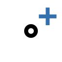「一般節点追加」ボタンをクリックすると、新しい一般節点が追加されます。</p>
            <p>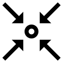「重複節点削除」ボタンをクリックすると、同一座標に重複する一般節点を 1 点に統合します。重複節点を参照していた梁要素は、統合後の節点を参照するよう自動的に付け替えられます。</p>
            <p>「X優先配列」ボタンをクリックすると、一般節点を X 座標昇順、X 同値の場合は Y 昇順、で並べ替えて節点番号を再採番します。</p>
            <p>「Y優先配列」ボタンをクリックすると、一般節点を Y 座標昇順、Y 同値の場合は X 昇順、で並べ替えて節点番号を再採番します。</p>

            <table class="table-doc">
                <caption style="text-align: center">一般節点入力データグリッド</caption>
                <thead>
                    <tr>
                        <th style="text-align: center">項目</th>
                        <th style="text-align: center">説明</th>
                        <th style="text-align: center">編集可否</th>
                    </tr>
                </thead>
                <tbody>
                    <tr>
                        <td>X(m)</td>
                        <td>節点のX座標</td>
                        <th style="text-align: center">✓</th>
                    </tr>
                    <tr>
                        <td>Y(m)</td>
                        <td>節点のY座標</td>
                        <th style="text-align: center">✓</th>
                    </tr>
                    <tr>
                        <td>Z(m)</td>
                        <td>節点のZ座標</td>
                        <th style="text-align: center">✓</th>
                    </tr>
                    <tr>
                        <td>タイプ</td>
                        <td>節点タイプ（General等）</td>
                        <td style="text-align: center">✗</td>
                    </tr>
                    <tr>
                        <td>選択</td>
                        <td>選択状態チェックボックス</td>
                        <th style="text-align: center">✓</th>
                    </tr>
                    <tr>
                        <td>削除</td>
                        <td>当該節点を削除するボタン</td>
                        <td style="text-align: center">-</td>
                    </tr>
                </tbody>
            </table>

            <p>
                一般節点は、メインビュー上でも選択可能です。<br>
                右クリックメニューの「一般節点⇔杭接合節点」により、選択した一般節点を杭配置に変換（Z座標からΔZcを減算）、
                または選択した杭配置を一般節点に変換（Z座標にΔZcを加算）できます。
            </p>

            <h3 id="data-beam-element-tab" style="font-weight: bold;">「一般梁要素」</h3>
            <p>
                データタブの「一般梁要素」タブをクリックして開くタブパネルで、梁要素を管理します。<br>
                「一般梁要素」タブの直下には、「材料」、「断面」、「梁要素」タブがあります。
            </p>

            <h4>「材料」</h4>
            <p>
                梁要素に適用する材料を定義します。<br>
                「材料ウィザード」ボタンをクリックすると、コンクリート強度から材料特性を自動計算できます。
            </p>

            <table class="table-doc">
                <caption style="text-align: center">材料入力データグリッド</caption>
                <thead>
                    <tr>
                        <th style="text-align: center">項目</th>
                        <th style="text-align: center">説明</th>
                        <th style="text-align: center">編集可否</th>
                    </tr>
                </thead>
                <tbody>
                    <tr>
                        <td>No</td>
                        <td>材料番号</td>
                        <td style="text-align: center">✗</td>
                    </tr>
                    <tr>
                        <td>名称</td>
                        <td>材料名</td>
                        <th style="text-align: center">✓</th>
                    </tr>
                    <tr>
                        <td>ヤング係数(N/mm²)</td>
                        <td>材料のヤング係数</td>
                        <th style="text-align: center">✓</th>
                    </tr>
                    <tr>
                        <td>せん断弾性係数(N/mm²)</td>
                        <td>材料のせん断弾性係数</td>
                        <th style="text-align: center">✓</th>
                    </tr>
                    <tr>
                        <td>ポアソン比</td>
                        <td>材料のポアソン比</td>
                        <th style="text-align: center">✓</th>
                    </tr>
                </tbody>
            </table>

            <h4>「断面」</h4>
            <p>
                梁要素に適用する断面を定義します。<br>
                「断面ウィザード」ボタンをクリックすると、断面寸法から断面性能を自動計算できます。ウィンドウは横長 2 列レイアウト (断面寸法 / 増減係数 / 計算結果) で、対象は「新規追加」または既存の断面 No から選択できます。<br>
                「全断面ねじれ剛性無視」ボタンをクリックすると、すべての断面のIxx係数を0.0に設定し、ねじれ剛性を無視します。
            </p>

            <table class="table-doc">
                <caption style="text-align: center">断面入力データグリッド</caption>
                <thead>
                    <tr>
                        <th style="text-align: center">項目</th>
                        <th style="text-align: center">説明</th>
                        <th style="text-align: center">編集可否</th>
                    </tr>
                </thead>
                <tbody>
                    <tr>
                        <td>No</td>
                        <td>断面番号</td>
                        <td style="text-align: center">✗</td>
                    </tr>
                    <tr>
                        <td>名称</td>
                        <td>断面名</td>
                        <th style="text-align: center">✓</th>
                    </tr>
                    <tr>
                        <td>幅(m)</td>
                        <td>断面の幅</td>
                        <th style="text-align: center">✓</th>
                    </tr>
                    <tr>
                        <td>高さ(m)</td>
                        <td>断面の高さ</td>
                        <th style="text-align: center">✓</th>
                    </tr>
                    <tr>
                        <td>係数A, Ay, Az, Ixx, Iyy, Izz</td>
                        <td>各断面性能の増減係数（デフォルト1.0）</td>
                        <th style="text-align: center">✓</th>
                    </tr>
                    <tr>
                        <td>A(m²), Ay(m²), Az(m²)</td>
                        <td>断面積、せん断面積Y、せん断面積Z</td>
                        <td style="text-align: center">✗</td>
                    </tr>
                    <tr>
                        <td>Ixx(m⁴), Iyy(m⁴), Izz(m⁴)</td>
                        <td>ねじり剛性、断面二次モーメントYY、断面二次モーメントZZ</td>
                        <td style="text-align: center">✗</td>
                    </tr>
                </tbody>
            </table>

            <h4>「梁要素」</h4>
            <p>
                梁要素を定義します。梁要素は2つの節点（節点I、節点J）を接続する線材要素です。<br>
                節点には、接合節点、一般節点のいずれかを指定できます。
            </p>

            <table class="table-doc">
                <caption style="text-align: center">梁要素入力データグリッド</caption>
                <thead>
                    <tr>
                        <th style="text-align: center">項目</th>
                        <th style="text-align: center">説明</th>
                        <th style="text-align: center">編集可否</th>
                    </tr>
                </thead>
                <tbody>
                    <tr>
                        <td>No</td>
                        <td>要素番号 (行位置 = 1-based ID, 自動採番)</td>
                        <td style="text-align: center">―</td>
                    </tr>
                    <tr>
                        <td>節点I</td>
                        <td>始端節点（接合節点／一般節点／基礎梁節点）。読み取り専用。メイン画面の編集ビューで節点をクリックして変更します。</td>
                        <td style="text-align: center">―</td>
                    </tr>
                    <tr>
                        <td>節点J</td>
                        <td>終端節点（接合節点／一般節点／基礎梁節点）。読み取り専用。</td>
                        <td style="text-align: center">―</td>
                    </tr>
                    <tr>
                        <td>材料No</td>
                        <td>適用する材料の番号。ドロップダウンから登録済み材料 No のみ選択できます。</td>
                        <th style="text-align: center">✓</th>
                    </tr>
                    <tr>
                        <td>断面No</td>
                        <td>適用する断面の番号。ドロップダウンから登録済み断面 No のみ選択できます。</td>
                        <th style="text-align: center">✓</th>
                    </tr>
                    <tr>
                        <td>β(°)</td>
                        <td>要素座標系の回転角度</td>
                        <th style="text-align: center">✓</th>
                    </tr>
                    <tr>
                        <td>選択</td>
                        <td>選択状態チェックボックス</td>
                        <th style="text-align: center">✓</th>
                    </tr>
                </tbody>
            </table>
            <p>メイン画面の編集ビューで梁要素を削除すると、データグリッドは即座に再描画され行番号が振り直されます。</p>

            <p>
                「梁要素」タブパネルには以下の操作ボタンがあります。
            </p>
            <ul>
                <li><strong>要素の節点分割</strong>：選択した要素を、重なる節点位置で分割します。「分割距離(m)」で判定距離を設定できます。</li>
                <li><strong>交差点で杭要素分割</strong>：選択した要素同士の交差点に一般節点を自動生成し、それぞれの要素を交差点で分割します。</li>
                <li><strong>重複要素の削除</strong>：同一の2節点を持つ重複した梁要素を削除します。</li>
                <li><strong>等分割</strong>：選択した要素を指定した分割数で等間隔に分割します。</li>
            </ul>

            <p>
                また、メインビューのツールバーで以下の操作が可能です。
            </p>
            <ul>
                <li><strong>選択／要素追加モード</strong>：「選択」モードと「要素追加」モードを切り替えます。「要素追加」モードでは、メインビュー上の2つの節点をクリックして梁要素を追加できます。</li>
                <li><strong>自動梁要素生成</strong>（Ctrl+Shift+B）：選択中の杭配置について、X座標またはY座標が同一の杭配置同士を梁要素（材料No.1、断面No.1）で自動連結します。</li>
                <li><strong>デフォルトΔZc</strong>：梁要素の節点高さのオフセット値を設定します。</li>
            </ul>

            <h3 id="data-grid-line-tab" style="font-weight: bold;">「通り心」</h3>
            <p>
                Ｘ軸、Ｙ軸に平行な通り心を定義します。<br>

                通り心断面は、沈下解析結果で沈下形状を確認することができます。
            </p>
            <p>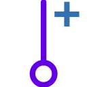「Y軸平行通り心追加」ボタンをクリックすると、Y 軸に平行な通り心 (X 座標で位置を指定する縦方向の通り心) が追加されます。</p>
            <p>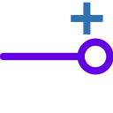「X軸平行通り心追加」ボタンをクリックすると、X 軸に平行な通り心 (Y 座標で位置を指定する横方向の通り心) が追加されます。</p>

            <p>
                タブパネル上部の「選択対象距離」テキストボックスで、通り心選択ボタン使用時に対象とするオブジェクトまでの距離(m)を設定できます。
                「選択」ボタンを押したのち、「F2」キーを押すことで、その通り上の節点、要素のみを表示することができます。
            </p>

            <table class="table-doc">
                <caption style="text-align: center">通り心入力データグリッド</caption>
                <thead>
                    <tr>
                        <th style="text-align: center">項目</th>
                        <th style="text-align: center">説明</th>
                        <th style="text-align: center">編集可否</th>
                    </tr>
                </thead>
                <tbody>
                    <tr>
                        <td>通り名</td>
                        <td>通り名</td>
                        <td style="text-align: center">✓</td>
                    </tr>
                    <tr>
                        <td>dX(m)</td>
                        <td>間隔</td>
                        <td style="text-align: center">✗</td>
                    </tr>
                    <tr>
                        <td>X(m)</td>
                        <td>座標</td>
                        <th style="text-align: center">✗</th>
                    </tr>
                    <tr>
                        <td>選択</td>
                        <td>当該通り心付近（選択対象距離以内）の杭配置・一般節点を選択します</td>
                        <td style="text-align: center">-</td>
                    </tr>
                    <tr>
                        <td>削除</td>
                        <td>当該通り心を削除します</td>
                        <td style="text-align: center">-</td>
                    </tr>

                </tbody>
            </table>

            <h3 id="data-group-settlement-tab" style="font-weight: bold;">「群杭沈下」</h3>
            <p>
                基礎指針'19、5.3節　沈下、1.沈下量の検討、(3)即時沈下量の算定、(ⅲ)多層地盤の場合　に従い、<br>
                スタインブレナー近似式による沈下計算のための条件を入力します。
            </p>
            <p>
                「群杭沈下」タブは、以下のサブタブから構成されます:
            </p>
            <ul>
                <li><strong>土層</strong>: 沈下計算用の成層地盤を入力</li>
                <li><strong>グリッド</strong>: 沈下量を計算するグリッド点の範囲・間隔を設定</li>
                <li><strong>解析（一般）</strong>: 通常 Steinbrenner による群杭沈下解析の入力 + 「<strong>一般解析実行</strong>」ボタン</li>
                <li><strong>解析（反復）</strong>: 基礎梁を考慮した反復 Steinbrenner 解析 + 「<strong>反復解析実行</strong>」ボタン (基礎梁が必要)</li>
            </ul>
            <p>
                <strong>荷重面 Z はサブタブごとに独立</strong>に設定可能です (一般 / 反復で別々の値を保持)。
                標高 (m) 表示は基本設定の Z=0 標高との和として自動計算されます。
            </p>
            <p>
                リボンとパネル右側の「<strong>群杭沈下 ▼</strong>」コンボボックスで「一般 / 反復」を切替えると、
                該当する CaseRecord (解析結果) が表示されます。
                該当ケースが無ければコンタは消去されます。
            </p>

            <h4>土層</h4>
            <p>
                沈下検討用の成層地盤を定義します。群杭検討では、深い範囲の土層データが必要です。<br>

                基礎指針'19、5.3節　沈下、2.沈下計算の対象となる地盤の範囲では、「深部に軟弱な地層がなければ、
                沈下計算の対象深度は、採荷面から下方に概ね$\sqrt{A}$の2倍の範囲とすればよい」とあります。
            </p>

            <h5>土層上端 Z（ボーリング孔口レベル）と荷重面 Z の関係</h5>
            <p>
                土層タブの先頭で <strong>土層上端 Z</strong>(ボーリング孔口レベル相当) を、解析（一般）/ 解析（反復）の各サブタブで <strong>荷重面 Z</strong> を、それぞれ独立に入力します。
                データグリッドの各層厚さは「土層上端 Z 基準」で自動算出されます (第 1 層厚さ = 土層上端 Z − 第 1 層下端 Z、以降は前層下端からの差)。
            </p>
            <p>
                各テキストボックスの右側には <strong>標高 (m)</strong>（= Z + 基本設定の Z=0 標高）が編集不可で表示されます。
                土層データグリッドにも「下端標高」列があります。
            </p>
            <p>
                <strong>解析実行条件</strong>
            </p>
            <ul>
                <li>土層が 1 層以上必要</li>
                <li>荷重面 Z &gt; 土層上端 Z の場合、エラーメッセージを表示して解析をキャンセル</li>
                <li>荷重面 Z &lt; 最下層下端 Z の場合、エラーメッセージを表示して解析をキャンセル</li>
                <li>荷重面 Z が土層上端と最下層下端の間にある場合、荷重面が属する層を荷重面で切り詰めた仮想最上層を作り、その下の層と合わせて多層地盤として解析を実行します（元の土層データは変更されません）</li>
            </ul>
            <p>
                土層下端 Z は降順（深くなる方向）に並ぶ必要があります。下端 Z を編集して上の層と等しいまたは大きい値にした場合、入力エラーで戻されます。
            </p>

            <h5>登録済み土層のコピー</h5>
            <p>
                既に「地盤」入力ウィンドウで登録済みの地盤データから、沈下計算用の土層仮値を一括取り込みできます。
                コンボボックスで対象の地盤番号を選び、「コピー実行」ボタンをクリックします。
            </p>
            <p>
                取り込まれる項目は以下の通りです:
            </p>
            <ul>
                <li>各層の <strong>下端 Z</strong>（地盤の土層境界 Z をそのまま使用）</li>
                <li><strong>変形係数 $E_{sk}$</strong>: 地盤層の <em>$E_{s0}$</em>（初期変形係数）の値が代入されます</li>
                <li>
                    <strong>ポアソン比 $\nu_{sk}$</strong>: 地盤層の土質分類に応じた仮値が代入されます
                    <ul>
                        <li>粘性土: 0.4</li>
                        <li>砂質土: 0.3</li>
                        <li>礫質土: 0.3</li>
                    </ul>
                </li>
                <li><strong>備考</strong> 列に「$E_{s0}=\cdots$ / $\nu_s=\cdots$」形式で元値が自動記入されます</li>
            </ul>
            <p style="font-size: 0.92em; color: #555;">
                ※ コピーされる値はあくまで仮値です。沈下計算用の変形係数・ポアソン比は基礎指針'19 p146〜149 等を参照してご確認ください。また、沈下計算に必要な深さまで土層を追加してください。
            </p>

            <h5>土層の追加・削除</h5>
            <p>「土層追加」ボタンをクリックすると、データグリッド末尾に新しい土層が 1 行追加されます。下端 Z は前層 (最下層) からデフォルト深さ分だけ深い値で初期化されるため、必要に応じて編集してください。</p>
            <p>「全土層削除」ボタンをクリックすると、登録済みの土層をすべて一括削除します。地盤データから再度コピーし直したい場合や、土層構成を最初からやり直したい場合に使用します。</p>

            <table class="table-doc">
                <caption style="text-align: center">群杭沈下用土層入力データグリッド</caption>
                <thead>
                    <tr>
                        <th style="text-align: center">項目</th>
                        <th style="text-align: center">説明</th>
                        <th style="text-align: center">編集可否</th>
                    </tr>
                </thead>
                <tbody>
                    <tr>
                        <td>下端 Z (m)</td>
                        <td>土層下端のローカル Z 座標</td>
                        <th style="text-align: center">✓</th>
                    </tr>
                    <tr>
                        <td>下端標高 (m)</td>
                        <td>下端 Z + Z=0 標高（基本設定）の絶対標高表示</td>
                        <td style="text-align: center">✗</td>
                    </tr>
                    <tr>
                        <td>厚さ (m)</td>
                        <td>土層厚さ（土層上端 Z 基準で自動算出）</td>
                        <td style="text-align: center">✗</td>
                    </tr>
                    <tr>
                        <td>変形係数 Esk (kN/m<sup>2</sup>)</td>
                        <td>沈下計算用の変形係数。地盤コピー実行時は地盤層の <em>Es0</em>（初期変形係数）が代入されます</td>
                        <th style="text-align: center">✓</th>
                    </tr>
                    <tr>
                        <td>ポアソン比 ν<sub>sk</sub></td>
                        <td>土層のポアソン比。地盤コピー実行時は地盤層の <em>νs</em> が代入されます</td>
                        <th style="text-align: center">✓</th>
                    </tr>
                    <tr>
                        <td>分類</td>
                        <td>粒度区分 (粘性土 / 砂質土 / 礫質土)。メイン画面の「群杭沈下用土層」(水平視) の塗りつぶし色を決めます。地盤コピー実行時は地盤層の分類が引き継がれます</td>
                        <th style="text-align: center">✓</th>
                    </tr>
                    <tr>
                        <td>備考</td>
                        <td>地盤コピー実行時、元地盤層の <em>Es0</em> と <em>νs</em> が「Es0=… / νs=…」形式で自動記入される自由記入欄</td>
                        <th style="text-align: center">✓</th>
                    </tr>
                </tbody>
            </table>

            <p>「分類」列の値はメイン画面ビューでの塗りつぶし色に反映されます (粘性土=ベージュ、砂質土=オレンジ、礫質土=緑、未指定=薄青/紫/黄を順番に巡回)。</p>

            <h4>グリッド</h4>
            <p>
                グリッドの各交点で、沈下量を計算します。<br>

                杭配置のうち最小、最大のX座標およびY座標で囲まれる長方形範囲を、それぞれX方向、Y方向に外側に指定した距離オフセットした範囲を対象とし、
                およそ指定した間隔でグリッドを作成します。<br>
                間隔は、通り心がある場合は、自動的に通り心を含むように調整されます。
            </p>

            <h4>解析（一般）</h4>
            <p>
                基礎梁を考慮しない通常の Steinbrenner 近似式による群杭沈下解析です。
                サブタブ上部で <strong>荷重面 Z</strong> と <strong>矩形荷重</strong> を入力し、下部の「<strong>一般解析実行</strong>」ボタン (= リボンの「群杭沈下解析（一般）」F8 と同等) で実行します。
                解析完了後、コンタ凡例は「<strong>沈下量 (一般)</strong>」と表示されます。詳細手順は <a href="#section-settlement-group">「群杭沈下解析（一般）」</a> を参照。
            </p>

            <h5>荷重定義</h5>
            <p>矩形荷重を定義します。</p>
            <p>荷重タイプコンボボックスで、「任意矩形」、「個別十字」、「個別十字（基礎梁反力）」のいずれかを選択します。</p>
            <p>
                「個別十字（基礎梁反力）」は、<strong>単杭沈下解析（基礎梁考慮）</strong>（F7）が実行済みの場合にのみ選択肢に表示されます。
            </p>
            <p>「矩形荷重面追加」ボタンをクリックすると、矩形荷重面を 1 件追加します。荷重タイプが「任意矩形」のときに使用し、追加された行に X1, Y1, X2, Y2 と荷重強度を入力します。荷重タイプが「個別十字」「個別十字（基礎梁反力）」のときは杭配置から自動生成される矩形が使用されるため、手動追加は通常不要です。</p>
            <p>「建物下面全体矩形荷重自動生成」ボタンをクリックすると、すべての杭配置点を内包する最小外接矩形からマージンを取った矩形荷重面を自動生成し、荷重タイプを「任意矩形」に切り替えて 1 件のみのデータグリッドに置き換えます。基礎指針'19 6.3 節「等価荷重面法」による即時沈下計算で建物範囲全体に分布荷重を与えたい場合の初期入力に便利です。</p>
            <h5>任意矩形</h5>
            <p>「任意矩形」タイプでは、任意の矩形荷重を定義できます。
            <p>
                基礎指針'19、6.3節　沈下、2　群杭の沈下、a)群杭の即時沈下、(ⅰ)等価荷重面法に従い、<br>

                建物範囲に矩形分布荷重を適用する場合は、「任意矩形」として、入力します。
            </p>

            <table class="table-doc">
                <caption style="text-align: center">矩形荷重面入力データグリッド</caption>
                <thead>
                    <tr>
                        <th style="text-align: center">項目</th>
                        <th style="text-align: center">説明</th>
                        <th style="text-align: center">編集可否</th>
                    </tr>
                </thead>
                <tbody>
                    <tr>
                        <td>X1(m)</td>
                        <td>X座標</td>
                        <th style="text-align: center">✓</th>
                    </tr>
                    <tr>
                        <td>Y1(m)</td>
                        <td>Y座標</td>
                        <th style="text-align: center">✓</th>
                    </tr>
                    <tr>
                        <td>X2(m)</td>
                        <td>座標</td>
                        <th style="text-align: center">✓</th>
                    </tr>
                    <tr>
                        <td>Y2(m)</td>
                        <td>座標</td>
                        <th style="text-align: center">✓</th>
                    </tr>
                    <tr>
                        <td>荷重(kN)</td>
                        <td>矩形荷重</td>
                        <th style="text-align: center">✓</th>
                    </tr>
                    <tr>
                        <td>DX(m)</td>
                        <td>矩形荷重X方向寸法</td>
                        <td style="text-align: center">✗</td>
                    </tr>
                    <tr>
                        <td>DY(m)</td>
                        <td>矩形荷重Y方向寸法</td>
                        <td style="text-align: center">✗</td>
                    </tr>
                    <tr>
                        <td>面積(m<sup>2</sup>)</td>
                        <td>矩形荷重面面積</td>
                        <td style="text-align: center">✗</td>
                    </tr>
                    <tr>
                        <td>単位面積荷重(kN/m<sup>2</sup>)</td>
                        <td>矩形荷重単位面積荷重</td>
                        <td style="text-align: center">✗</td>
                    </tr>
                </tbody>
            </table>


            <h5>個別十字</h5>
            <p>
                「個別十字」タイプでは、杭ごとに円形の等分布荷重面を想定し、<br>
                面積が等価な5つの矩形荷重として自動生成します。<br>
                荷重の大きさは、<strong>VL（VL<sub>0</sub>+VL<sub>add</sub>）</strong>を使用します。
            </p>
            <p>
                選択時の挙動:
            </p>
            <ul>
                <li>荷重タイプを「個別十字」に切り替えた時点で、<strong>矩形荷重データグリッドが自動生成値で置き換わります</strong>。</li>
                <li>下段の補助テーブル（地盤・杭・レベルセット毎）で <strong>荷重面等価径</strong>（GroupPileLoadDia）を編集すると、その瞬間に矩形荷重が再生成されます。</li>
                <li>生成される矩形数は <em>杭本数 × 5</em> です（中央 a×a 1枚＋上下左右 b×c 4枚）。ただし <strong>荷重面等価径が 0 の杭はスキップ</strong>されるため、初期状態では空のグリッドとなります。径を入力すると即座に対応する 5 矩形が現れます。</li>
                <li>各矩形の単位面積荷重は、全体の和が杭軸力と一致するよう面積比例配分されます。</li>
                <li>ユーザが矩形荷重データグリッドを編集・追加・削除すると、自動的に荷重タイプが「任意矩形」に切り替わります。以降はユーザ編集値が保持されます。</li>
            </ul>
            <p>
                下段の補助テーブルには、杭ごとの <strong>荷重面等価径</strong>（ = <em>GroupPileLoadDia</em> ）が表示されます。</p>

            <table class="table-doc">
                <caption style="text-align: center">個別十字荷重面入力データグリッド</caption>
                <thead>
                    <tr>
                        <th style="text-align: center">項目</th>
                        <th style="text-align: center">説明</th>
                        <th style="text-align: center">編集可否</th>
                    </tr>
                </thead>
                <tbody>
                    <tr>
                        <td>地盤・杭・レベルセット番号</td>
                        <td>X座標</td>
                        <td style="text-align: center">✗</td>
                    </tr>
                    <tr>
                        <td>地盤番号</td>
                        <td>Y座標</td>
                        <td style="text-align: center">✗</td>
                    </tr>
                    <tr>
                        <td>杭体番号</td>
                        <td>座標</td>
                        <td style="text-align: center">✗</td>
                    </tr>
                    <tr>
                        <td>杭頭Z(m)</td>
                        <td>座標</td>
                        <td style="text-align: center">✗</td>
                    </tr>
                    <tr>
                        <td>杭先端Z(m)</td>
                        <td>矩形荷重</td>
                        <td style="text-align: center">✗</td>
                    </tr>
                    <tr>
                        <td>荷重面等価径</td>
                        <td>円形荷重面の等価直径</td>
                        <th style="text-align: center">✓</th>
                    </tr>
                </tbody>
            </table>

            <div class="tip" style="border:1px solid #B0BEC5; background:#ECEFF1; padding:8px 12px; margin:8px 0;">
                <strong>💡 使い方のコツ — 個別十字 → 任意矩形 への切替えで自由編集</strong><br>
                個別十字 (または 個別十字（基礎梁反力）) で大まかな十字形荷重を <strong>初期値として自動生成</strong> させた後、
                荷重タイプを <strong>「任意矩形」に切り替える</strong> ことで、生成された矩形荷重をそのまま自由に変更・追加・削除できます。
                <ul>
                    <li>「個別十字」のまま矩形荷重データグリッドを直接編集すると、自動的に「任意矩形」に切替わるため、
                        切替えを意識せず編集を始めれば結果として同じ状態になります。</li>
                    <li>建物形状に合わせて細かく荷重面を調整したい場合や、特定の杭まわりだけ径を変更して再生成したい場合に有効です。</li>
                    <li>切替え後は元の十字形配置を残したままユーザ編集が反映されるので、ゼロから矩形荷重を入力するより手早く所望の配置を作成できます。</li>
                </ul>
            </div>


            <h5>個別十字（基礎梁反力）</h5>
            <p>
                「個別十字（基礎梁反力）」タイプは、<strong>単杭沈下解析（基礎梁考慮）が実行済み</strong>の場合にのみ利用可能な荷重タイプです。<br>
                「個別十字」と同様に杭ごとに 5 矩形を自動生成しますが、<strong>荷重の値には単杭沈下解析（基礎梁考慮）の VL ケース杭反力（Reaction_kN）を使用</strong>します。<br>
                基礎梁との連成によって再分配された杭反力を沈下計算に反映できます。
            </p>
            <p>動作上の注意:</p>
            <ul>
                <li>VL ケースは LoadCaseName が <code>VL</code> で始まる結果（例: "VL", "VL (常時+追加)" 等）の先頭を使用します。</li>
                <li>「個別十字」と同様、矩形荷重データグリッドを編集すると自動的に「任意矩形」に切り替わります。</li>
                <li>単杭沈下解析（基礎梁考慮）の結果をクリアしたり未実行に戻すと、この選択肢は自動的にコンボボックスから消え、選択中だった場合は「個別十字」にフォールバックします。</li>
            </ul>

            <h5>一般解析実行と結果表示</h5>
            <p>
                「<strong>一般解析実行</strong>」ボタン (リボンの 「群杭沈下解析（一般）」F8 と同等) で解析を実行します。
                完了後、コンタ凡例は「<strong>沈下量 (一般)</strong>」と表示され、各杭位置での沈下量はグリッド計算結果テーブルに表示されます。
            </p>

            <h4>解析（反復）</h4>
            <div class="warning" style="background:#FFFAEB; border:1px solid #E0A030; padding:8px 12px; margin:8px 0; color:#8A4500;">
                ⚠ <strong>解析（反復）</strong>は、基礎指針'19 図5.3.2 連続梁・格子梁モデルによる沈下量の算定例の方法です。
                <strong>杭基礎の計算では使いません。</strong>
            </div>
            <p>
                基礎梁の剛性を考慮した <strong>反復 Steinbrenner 解析</strong>です。
                Picard 反復で杭頭ばね剛性 $k_i$ と杭頭反力 $P_i$ を交互に更新し、Steinbrenner 沈下 $S_1$ と基礎梁モデル沈下 $S_2$ が一致する状態に収束させます。
                基礎梁が 1 件以上定義されているときのみ利用可能です。
            </p>
            <p>
                サブタブ上部で <strong>荷重面 Z</strong> を入力し、下部の「<strong>反復解析実行</strong>」ボタンで起動します
                (リボンの 「群杭沈下解析（反復）」と同等)。
                解析完了後、コンタ凡例は「<strong>沈下量 (反復)</strong>」と表示されます。
            </p>
            <p>
                アルゴリズムの詳細 (Picard 反復のフローチャート、各ステップ $P_i \to S_1 \to k_i \to S_2 \to P_i$、収束判定式、$k_i$ のクランプ、結果ダイアログの構成、一般入力の独立保持と解析条件変更時の警告) は
                <a href="#section-settlement-group-beam">「群杭沈下解析（基礎梁考慮・反復）」</a> を参照してください。
            </p>
        </section>
        <section>
            <h2 id="h-解析条件-解析メニュー-解析の実行">解析条件/解析メニュー ― 解析の実行</h2>
            <p>
                「解析条件/解析(S)」タブ右側の<strong>解析実行</strong>グループを扱います。
                入力側は <a href="#section-ribbon-analysis">「解析条件/解析メニュー ― 入力」</a> を参照してください。
            </p>
            <h3 id="section-element-division" style="font-weight: bold;">「杭要素分割」（F4）</h3>
            <p>杭要素分割ウィンドウを開きます。ショートカットキー F4 でも開くことができます。</p>
            <p>杭要素分割ウィンドウを開くには、以下の条件を満たす必要があります:</p>
            <ul>
                <li>すべての杭配置について、杭下端（杭頭Z − 杭長 = 接合Z − ΔZc − 杭長）が適用する地盤の土層最下層・土質点最下点よりも高いこと</li>
                <li>すべての杭配置について、杭上端（杭頭Z = 接合Z − ΔZc）が適用する地盤の土層最上層・土質点最上点よりも低いこと</li>
            </ul>
            <p>ボタンの表示は分割状態に応じて変化します:</p>
            <ul>
                <li><strong>杭要素分割(未)</strong>: まだ杭要素分割が実行されていない状態</li>
                <li><strong>杭要素分割(済)</strong>: 杭要素分割が完了している状態</li>
            </ul>

            <h4>要素分割実行ボタン (一覧)</h4>
            <p>
                ウィンドウ上部のツールバーおよび各タブ内に、用途別の自動分割実行ボタンが配置されています。
                共通パラメータ「<strong>杭頭～第二節点(m)</strong>」(デフォルト 0.10) と「<strong>最大節点間(m)</strong>」(デフォルト 1.00) は
                ツールバー上部のテキストボックスで指定し、全ボタンに反映されます。
            </p>
            <table class="table-doc">
                <thead><tr><th style="text-align:center">アイコン</th><th style="text-align:center">機能</th><th style="text-align:center">配置</th><th>説明</th></tr></thead>
                <tbody>
                    <tr>
                        <td></td>
                        <td><strong>全杭セット自動分割</strong> (Ctrl+A)</td>
                        <td>ウィンドウ上部ツールバー</td>
                        <td>すべての土層-杭セットに対して、現在のパラメータで一括自動杭要素分割を実行します。<strong>最も推奨される実行方法</strong>。</td>
                    </tr>
                    <tr>
                        <td></td>
                        <td><strong>この杭セットを自動分割</strong></td>
                        <td>「土層-杭セット」タブ内</td>
                        <td>選択中の土層-杭セット 1 件のみを自動分割します。個別に細かい調整をしたい場合に使用。</td>
                    </tr>
                    <tr>
                        <td></td>
                        <td><strong>根入部 自動分割</strong></td>
                        <td>「土層-根入部セット」タブ内</td>
                        <td>根入れ部が定義されている場合のみ表示。「最大節点間距離(m)」(デフォルト 5.00) に従って自動分割を実行します。</td>
                    </tr>
                </tbody>
            </table>
            <p style="font-size: 0.92em; color: #555;">
                ※ <strong>初期状態</strong>では杭区間境界レベルと土層境界レベルに分割節点が自動設定されます (変更不可)。
                自動分割実行ボタンを押すと、これらの境界節点を維持しつつパラメータに従って中間節点が追加されます。
                赤ランプ付きの杭セットがある場合、ツールバー上部に <span style="color:red; font-weight:bold;">警告メッセージ</span> が表示され、「<strong>保存</strong>」ボタンが無効化されます。すべてのランプを緑にすると保存できます。
            </p>

            <h4>「土層-杭セット」タブ</h4>
            <p>「土層-杭セットNo.」コンボボックスで対象の土層-杭セットを選択し、分割節点リスト・杭姿図・水平地盤反力グラフを確認できます。
            タブ内には「自動分割」ボタン (上記)、「初期化」「選択行下への行追加」ボタンがあります。</p>

            <h4>「土層-根入部セット」タブ</h4>
            <p>根入れ部が定義されている場合に表示されます。「根入部 自動分割」ボタン (上記) で実行します。</p>

            <p>
                杭要素分割が完了しないと、水平解析・単杭沈下解析を実行することができません。
            </p>

            <h4 style="font-weight: bold;">解析実行グループ</h4>
            <p>
                解析は以下の順序で実行します。各解析ボタンは前提条件が満たされていない場合は無効（グレーアウト）になります。
                解析完了後、ボタンラベルに完了マークが表示されます。
            </p>

            <h3 id="section-lateral-analysis" style="font-weight: bold;">「水平解析」（F5）</h3>
            <p>
                杭要素分割済みの場合に有効になります。水平解析ウィンドウを開き、
                荷重増分法＋ニュートン・ラフソン法による非線形水平解析を実行します。
            </p>
            <p>
                水平解析ウィンドウの左ペインは <strong>2 つのタブ</strong>（「荷重」「収束・並列」）に分かれており、
                各タブ内は機能ごとにセクション分けされています。各セクションでは以下の設定を行います。
            </p>

            <h4>「荷重」タブ</h4>
            <ul>
                <li><strong>モデル情報</strong>: 節点数、要素数（read-only）</li>
                <li><strong>設計条件</strong>:
                    <ul>
                        <li><strong>接続方式</strong>: 剛体連結／剛床連結</li>
                        <li><strong>杭軸力</strong>: 入力値 / 入力値＋応力解析結果 (後述「鉛直方向境界条件」が「P-S 非線形ばね」のときは後者強制)</li>
                        <li><strong>鉛直方向境界条件</strong>: 杭先端支持 / P-S 非線形ばね (後述)</li>
                        <li><strong>VL 単独ケースも解析</strong>: P-S 非線形ばね ON のときに有効化されるオプション (後述)</li>
                    </ul>
                </li>
                <li><strong>解析対象</strong>: 液状化の有無、レベル1／レベル2 の解析対象荷重ケースの選択、荷重組合せ（上部構造慣性力 × 基礎部慣性力）。各ケース行の「済」列に既に解析済の場合 ✓ が表示されます</li>
                <li><strong>荷重ステップ</strong>: レベル1／レベル2 の荷重ステップ数（既定 L1: 2, L2: 8）と、設定された全解析ステップ数 (荷重ケース × 組合せ × 液状化 × ステップ数) の表示</li>
            </ul>

            <h5>鉛直方向境界条件</h5>
            <p>
                水平解析モデルで杭先端 (および杭体軸方向) の鉛直拘束をどう扱うかを切り替えます。
                建物の鉛直荷重に対する杭の沈下挙動を水平解析にも反映したい場合に <strong>P-S 非線形ばね</strong> モードを使用します。
            </p>
            <table class="table-doc">
                <thead><tr><th style="text-align:center">モード</th><th>挙動</th><th>用途</th></tr></thead>
                <tbody>
                    <tr>
                        <td><strong>杭先端支持 (既定)</strong></td>
                        <td>杭先端節点の Uz を固定 (Boundary)。杭周面・先端の鉛直抵抗は考慮しない。鉛直荷重 N₀ は M-φ 評価のための軸力情報としてのみ使用。</td>
                        <td>従来挙動。簡易・短時間。水平挙動が主目的のケース。</td>
                    </tr>
                    <tr>
                        <td><strong>P-S 非線形ばね</strong></td>
                        <td>沈下解析の物理関数 (τ-s 双線形 + R-S 曲線) を各杭節点の Z ばねに直接適用。杭軸力 N₀ は各杭の接合節点 (CapNode / ConnectionNode) に Fz 外力として段階適用。杭体自重も各節点に分布外力として注入。</td>
                        <td>鉛直方向の沈下挙動と水平挙動を同時に評価したい場合。沈下解析の事前実行が必要。</td>
                    </tr>
                </tbody>
            </table>
            <p>
                <strong>制約・注意:</strong>
            </p>
            <ul>
                <li>P-S 非線形ばね モードでは、杭軸力モードは <strong>「入力値＋応力解析結果」</strong> に強制されます (入力値のみは選択不可)。
                    軸力をすべて外力として与えるため、応力解析結果の Fxi を反映しないと残差が解消されないためです。</li>
                <li>沈下解析 (F6 単杭沈下) を事前に実行しておく必要があります。沈下解析の節点別 (相対変位, 反力) 履歴が無い場合は自動的に「杭先端支持」にフォールバックします。</li>
                <li>各杭が同一 SoilPile を参照していれば全杭で同じ P-S ばねが構築されます。複数の SoilPile を使用する場合は、それぞれ沈下解析が必要です。</li>
            </ul>

            <h5>VL 単独ケースも解析</h5>
            <p>
                「鉛直方向境界条件」が <strong>P-S 非線形ばね</strong> のときに有効化されるチェックボックスです。
                チェックを入れると、通常の地震時ケース (L1/L2) に加えて <strong>「常時 (VL) のみ」</strong> の擬似ケースを 1 件追加実行します。
            </p>
            <ul>
                <li><strong>水平荷重 0、各杭の常時軸力 (AxialForceVL) のみ</strong> を各杭の接合節点に Fz として与える</li>
                <li>結果は <code>LoadName="VL"</code> として解析結果テーブル / グラフ / 計算書に表示</li>
                <li>VL は組合せ係数 (α₁/β₁/β₂) や液状化変位に依存しないため、組合せ・液状化ループは 1 回のみ実行 (重複回避)</li>
                <li>地震時の地盤強制変位 (液状化変位等) は VL ケースには適用されません (常時状態を表すため)</li>
                <li>沈下解析と同じ N₀ 分布で杭体応力分布を確認したい、あるいは「地震時 (N₀+ΔN) − 常時 (N₀)」の差分を取り出したい場合に使用</li>
            </ul>

            <h4>「収束・並列」タブ</h4>
            <ul>
                <li><strong>収束計算</strong>: NR 法（Full NR / Full→Modified NR）、安定化（固定ω / 適応的ω / ラインサーチ）、反復なしオプション</li>
                <li><strong>並列処理</strong>: 同時実行ケース数（後述）</li>
                <li><strong>解析条件</strong>: 変位閾値で解析中止（杭頭変位が閾値を超えたら打ち切り）</li>
            </ul>

            <h4>実行 (タブ外、ウィンドウ下部に常時表示)</h4>
            <table class="table-doc">
                <thead><tr><th style="text-align:center">ボタン</th><th style="text-align:center">ショートカット</th><th>説明</th></tr></thead>
                <tbody>
                    <tr><td><strong>水平解析実行</strong></td><td>F5</td><td>選択された全ケースに対して水平解析を実行 (新規実行)</td></tr>
                    <tr><td><strong>追加実行</strong></td><td>Ctrl+F5</td><td>既存の解析結果を保持したまま、新たに選択したケースのみを追加計算 (詳細は次節)</td></tr>
                    <tr><td><strong>水平解析キャンセル</strong></td><td>Esc</td><td>実行中の解析を中止</td></tr>
                    <tr><td><strong>サマリーコピー / CSV 出力</strong></td><td>—</td><td>解析サマリー (収束状況・最終残差・最大変位等) をクリップボードコピー、または CSV ファイルへ保存</td></tr>
                </tbody>
            </table>
            <p>解析完了後: ボタンラベルに「<span style="color:#2E7D32; font-weight:bold;">✓</span>」（緑色）が表示されます。</p>

            <h4>追加実行 (段階的なケース追加再解析)</h4>
            <p>
                既存の解析結果を保持したまま、新たに選択したケース（まだ解析されていないもの）のみを追加で計算する機能です。
                試行錯誤中に「あとで別のケースも確認したい」となった際、最初から全ケースを再計算する必要がなくなります。
            </p>
            <p><strong>使い方:</strong></p>
            <ol>
                <li>通常通り「水平解析実行 (F5)」で初回の解析を実行（例: L2-1 のみ選択して計算）</li>
                <li>追加で確認したいケース（例: L2-2）にチェックを入れる</li>
                <li>「追加実行 (Ctrl+F5)」を押す → 既存の L2-1 はスキップされ L2-2 のみが計算される</li>
            </ol>
            <p><strong>制約:</strong></p>
            <ul>
                <li>前回実行時と <strong>解析パラメータ</strong>（ステップ数、NR モード、Full NR 反復数、緩和係数、ラインサーチ、杭軸力モード、接続方式）が一致している必要があります。差異があるとダイアログで通知され、「新規実行に切替」または「キャンセル」を選びます</li>
                <li>液状化選択は <strong>スーパーセット</strong> なら可（前回 Yes / 今回 Both は OK、前回 Both / 今回 Yes は不可）</li>
                <li>進捗バーは「未計算分のみ」を分母として表示します。例: 既存 8 ステップ済 + 新規 8 ステップ追加なら 0/8 → 8/8 となります</li>
            </ul>

            <h4>同時実行ケース数（ケース並列）</h4>
            <p>
                「並列処理」セクションの <strong>同時実行ケース数</strong> は、複数の解析ケース（L1×4 ケース、L2×4 ケース等）を CPU の複数コアで同時に走らせる並列実行の幅を指定します。
            </p>
            <ul>
                <li><strong>1</strong>: 1 ケースずつ順番に実行 (低スペック環境や問題切り分け向け)。</li>
                <li><strong>2（既定値）</strong>: 2 ケースを同時実行。実機検証済みで安定し、約 2 倍の速度。メモリ負荷が小さく推奨。</li>
                <li><strong>3 以上</strong>: より多くの CPU コアを利用するが、メモリ負荷が増加。CPU のコア数を超える設定は意味がありません。</li>
            </ul>
            <p>
                並列実行は <strong>ケース単位</strong>（同じケースの中での要素並列ではない）で行われるため、ケース数 ≥ 同時実行ケース数の構成で効果を発揮します。
            </p>

            <h4>偏心率の事前チェック</h4>
            <p>
                水平解析実行時に、慣性力中心と杭群中心の偏心が大きい場合は確認ダイアログを表示します。
                偏心が大きいモデルではねじれモーメントが発生し、収束計算が困難で時間がかかったり局所的に未収束となる場合があります。
                想定外の偏心 (慣性力作用点の入力ミス等) を事前に検知する目的です。
            </p>
            <p>2 種類の杭群中心と慣性力中心の関係をチェック:</p>
            <ul>
                <li><strong>VL 軸力分布重心</strong>: 各杭の常時軸力 (圧縮を正) で重み付けした重心。建物自重が杭群に「実効的に乗っている位置」。<br>
                    $\boldsymbol{r}_{VL} = \dfrac{\sum_i N_{VL,i} \, \boldsymbol{r}_i}{\sum_i N_{VL,i}}$</li>
                <li><strong>剛心 ($k_{h0}$ 重み付け)</strong>: 各杭の杭頭直下層の基準水平地盤反力係数 $k_{h0}$ で重み付けした重心。水平力に対する杭群の弾性回転中心。<br>
                    $\boldsymbol{r}_{rg} = \dfrac{\sum_i k_{h0,i} \, \boldsymbol{r}_i}{\sum_i k_{h0,i}}$</li>
            </ul>
            <p><strong>偏心率 Re</strong>: 剛心からの偏心距離を弾性半径 $r_e$ で正規化:</p>
            <p>$r_e = \sqrt{\dfrac{\sum_i k_{h0,i} \, r_i^2}{\sum_i k_{h0,i}}}$（剛心まわりの $k_{h0}$ 重み付け二乗平均半径）</p>
            <p>
                $\text{Re}_x = |y_{ap} - y_{rg}| / r_e$ ：X 加力時 (Y 方向偏心がねじれを生む)<br>
                $\text{Re}_y = |x_{ap} - x_{rg}| / r_e$ ：Y 加力時 (X 方向偏心がねじれを生む)
            </p>
            <p>$\max(\text{Re}_x, \text{Re}_y) \ge 0.15$ で警告ダイアログを表示:</p>
            <ul>
                <li><strong>中程度</strong> ($0.15 \le \text{Re} &lt; 0.30$): 情報レベル</li>
                <li><strong>大</strong> ($0.30 \le \text{Re} &lt; 0.45$): 警告レベル</li>
                <li><strong>極大</strong> ($\text{Re} \ge 0.45$): 警告レベル</li>
            </ul>
            <p>
                ダイアログには両重心の座標 (慣性力中心、剛心、VL 重心) と $\text{Re}_x$ / $\text{Re}_y$ の値が表示されます。
                「OK」で続行、「キャンセル」でモデル (杭配置 / 慣性力作用点) を見直します。
            </p>

            <h4 style="font-weight: bold;">解析ログの読み方</h4>
            <p>
                水平解析の進行中、計算ログ画面に詳細な反復履歴・収束状況・診断情報が出力されます。
                ここではログの各行・記号の意味を解説します。
            </p>

            <h5>共通プレフィックス</h5>
            <p>各ログ行は以下のプレフィックスで始まります:</p>
            <pre style="font-family: 'MS Gothic', monospace; background: #F5F5F5; padding: 8px; font-size: 12px;">
[2026/04/27 21:12:58] [L2-1.C1.Liq] iter  1  ω=0.50  ‖R‖²=2.73E-006>1.0E-005  ...
└────────────────┬───┘ └─────┬───┘ └──────────────────┬──────────────────────
   タイムスタンプ      ケースタグ          反復行 (詳細は次節)
            </pre>
            <ul>
                <li><strong>タイムスタンプ</strong>: <code>[YYYY/MM/DD HH:MM:SS]</code> 形式。並列実行時に時刻順で混在することがあります。</li>
                <li><strong>ケースタグ</strong>: <code>[L{level}-{loadCaseNo}.C{comboNo}.{Liq|NoLq}]</code> 形式。例: <code>[L2-1.C1.Liq]</code> = レベル2 荷重ケース1 組合せC1 液状化考慮。<code>NoLq</code> は液状化非考慮。タブ「[L2-1.C1.Liq]」を選ぶと該当ケースのログのみ表示できます。</li>
            </ul>

            <h5>反復ログ (1 行形式)</h5>
            <p>各 Newton-Raphson 反復で 1 行出力されます。</p>
            <pre style="font-family: 'MS Gothic', monospace; background: #F5F5F5; padding: 8px; font-size: 12px;">
iter  3 [NR]  ω=0.50  ‖R‖²=1.06E+003>1.0E-05  max|δu|=4.44E-04  K=[1.0E+06,1.4E+15]  k=[2.2E+03,2.6E+05]  ▶CapNode-8:Uy=+4.44E-04
iter  4 [MNR] ω=0.50  ‖R‖²=3.41E+002>1.0E-05  max|δu|=2.12E-04  K=[1.0E+06,1.4E+15]  k=[2.1E+03,2.6E+05]
            </pre>
            <table class="table-doc">
                <thead>
                    <tr><th style="text-align: center">項目</th><th>意味</th></tr>
                </thead>
                <tbody>
                    <tr><td><code>iter N</code></td><td>反復回数 (1 から開始)</td></tr>
                    <tr><td><code>[NR]</code> / <code>[MNR]</code></td><td>本反復で剛性マトリクス K を <strong>再構築</strong> した反復は <code>[NR]</code> (Full Newton-Raphson)、<strong>前反復のものを再利用</strong> した反復は <code>[MNR]</code> (Modified NR)。Cholesky 因子も <code>[MNR]</code> 反復では再利用され Solve が高速化される</td></tr>
                    <tr><td><code>ω=0.50</code></td><td>緩和係数 (固定ω モード時)。$d_{new} = d_{old} + \omega \cdot \Delta d$</td></tr>
                    <tr><td><code>α=0.27</code></td><td>ラインサーチによる最適ステップ長 (ラインサーチモード時、`ω` の代わりに表示)</td></tr>
                    <tr><td><code>‖R‖²=X.XXE±NN</code></td><td>残差ノルム比 $\|R\|^2 / \|F_{int}\|^2$。値が小さいほど収束に近い</td></tr>
                    <tr><td><code>&gt;1.0E-05</code></td><td>許容値との比較。<code>≦</code> なら収束、<code>&gt;</code> なら未収束で次反復へ</td></tr>
                    <tr><td><code>✓Converged</code></td><td>このステップが収束した (残差 ≦ 許容値)</td></tr>
                    <tr><td><code>max|δu|=X.XXE±NN</code></td><td>本反復での最大変位増分 (m / rad)。0 に近づくほど収束</td></tr>
                    <tr><td><code>K=[min,max]</code></td><td>剛性マトリクス対角の最小値・最大値。極端に小さい min は不安定の兆候</td></tr>
                    <tr><td><code>k=[min,max]</code></td><td>地盤ばね剛性の最小値・最大値。降伏で min が小さくなる</td></tr>
                    <tr><td><code>▶ノード名:DOF=値</code></td><td>本反復で最大変位を示した自由度 (DOF)。収束停滞時の原因 DOF 特定に使用</td></tr>
                    <tr><td><code>⚠flip#N</code></td><td>支配 DOF の符号反転を N 回連続検出。リミットサイクル (周期発散) の兆候</td></tr>
                </tbody>
            </table>

            <h5>状態変化ログ (反復間)</h5>
            <p>非線形要素の状態が変化したときに出力される情報行です。</p>
            <pre style="font-family: 'MS Gothic', monospace; background: #F5F5F5; padding: 8px; font-size: 12px;">
▼ M-φ セグメント変化 924 件 (進行:924, 戻り:0): [beam[0]:0→1, beam[1]:0→1, ... 他 919 件] / 分布 [seg0:2688本, seg1:924本]
▼ 土ばね p-y 降伏状態変化: 新規降伏 154 件 [1-1-btm, 1-1-top, ...], 降伏解除 0 件 [-] / 現時点降伏 154 件
📌 杭頭 Mcr 到達 → クラック判定 84 本 (|M|=[1.096E+003, 1.096E+003] ≥ Mcr=3.485E+002 kNm)、以降 post-crack curve 使用
            </pre>
            <ul>
                <li><strong>M-φ セグメント変化</strong>: 杭体の M-φ 曲線でセグメント (弾性 / 弾塑性 / 降伏) が変化した beam の数。<code>進行</code> = 高位セグメントへ移行、<code>戻り</code> = 低位へ戻り (除荷)。多数の同時変化は K 行列を急変させ、次反復で残差スパイクが起きやすい</li>
                <li><strong>p-y 降伏状態変化</strong>: 杭周地盤水平ばねの塑性降伏。<code>新規降伏</code> / <code>降伏解除</code> の件数で進行を把握</li>
                <li><strong>杭頭 Mcr 到達</strong>: 杭頭曲げモーメントがひび割れモーメント Mcr に到達 → 以降はひび割れ後の曲線 (剛性低下) を使用</li>
            </ul>

            <h5>ステップ収束ログ</h5>
            <p>1 つの荷重ステップが収束または未収束で打ち切られた時に出力されます。</p>
            <pre style="font-family: 'MS Gothic', monospace; background: #F5F5F5; padding: 8px; font-size: 12px;">
→ Converged in 20 iterations. Residual norm=8.185E-006, max|d|=8.384E-008m
⏱ total 45.4s ┃ K組立 2226ms×6 ┃ Solve 905ms [Cholesky] (CSC=309 分解=273 代入=55 re=41) ┃ LS 591ms×19 (avg 2.4, max 3) ┃ Plateau-K×2
            </pre>
            <ul>
                <li><code>Converged in N iterations</code>: 収束まで N 反復要した</li>
                <li><strong>プロファイル行</strong> ⏱:
                    <ul>
                        <li><code>total X.Xs</code>: ステップ全体の所要時間</li>
                        <li><code>K組立 Xms×N</code>: 剛性マトリクス再構築 N 回の合計時間</li>
                        <li><code>Solve [Cholesky]</code>: 連立方程式求解 (Cholesky / LDL / LU / QR の順にフォールバック)</li>
                        <li><code>CSC / 分解 / 代入</code>: CSC 構築 / Cholesky 分解 / 後退代入の累積時間 (ms)</li>
                        <li><code>re=N</code>: Cholesky 因子の再利用回数 (Modified NR の K 不変期間で発動。値が大きいほど高速化効果あり)</li>
                        <li><code>LS Xms×N (avg M, max P)</code>: ラインサーチ N 回、平均 M 回のα試行 / 1 反復での最大試行数 P</li>
                        <li><code>Plateau-K×N</code>: <strong>周期的 K 再構築</strong>がプラトー検知で N 回発動 (発動時のみ表示)。
                            Modified NR フェーズで残差低下が一定基準を下回る場合に、K 行列が陳腐化していると判定して強制的に NR 再構築をトリガする機構。
                            状態変化検知では捕捉できない緩慢な収束を改善する</li>
                    </ul>
                </li>
            </ul>

            <h5>未収束・再試行ログ</h5>
            <pre style="font-family: 'MS Gothic', monospace; background: #F5F5F5; padding: 8px; font-size: 12px;">
→ 未収束: 最大反復回数 50 に到達。残差ノルム=2.341E-002 (許容値=1.000E-005), max|d|=1.234E-005m
♻ ケース再試行 (1/3): ステップ数を 8 → 16 に増やして再計算
⛔ 物理的未収束として確定（耐力超過の可能性）。このケースは再試行せず次へ進みます
            </pre>
            <ul>
                <li><code>未収束</code>: 最大反復数到達。再試行ロジックで自動的にステップ数を倍増して再計算</li>
                <li><code>♻ ケース再試行 (N/M)</code>: ステップ細分化による N 回目 / 最大 M 回までの再試行</li>
                <li><code>⛔ 物理的未収束</code>: 緩和基準が極端 (>10) かつ再試行 1 回以上で改善なし → 耐力超過の可能性ありと判定し再試行を打ち切る</li>
            </ul>

            <h5>診断・警告ログ</h5>
            <pre style="font-family: 'MS Gothic', monospace; background: #F5F5F5; padding: 8px; font-size: 12px;">
🔄 Aitken 平均化 #1/2 発動: 直近 3 反復の CumulativeDisp 平均で書換 → 残差=1.23E-002
⚠ 長期未改善検出: 30反復で最小残差 1.5E-03 が更新されません。収束基準を緩和します (1.00E-05→1.50E-03)
⚠ 緩やかな発散検出: 5回連続で残差が増加しています (最小:2.5E-04 → 現在:8.7E-04)
⚠ 停滞検出: 7回連続で残差が改善しません。収束基準を緩和します (1.00E-05→2.34E-04)
⛔ リミットサイクル検知: iter=42, flip#15, max|δu|=8.34E-08m, 残差=2.41E-05 → 早期諦めて retry へ移行
            </pre>
            <ul>
                <li><strong>🔄 Aitken 平均化</strong>: 支配 DOF が周期反転 (リミットサイクル) を続けた場合、直近反復の累積変位を平均化して周期の中心に「ジャンプ」させる収束加速手法。最大 2 回まで発動</li>
                <li><strong>⚠ 長期未改善 / 停滞</strong>: 最小残差が更新されない反復数が一定値を超えた → 収束基準を現在の残差水準に合わせて自動緩和 (それでも未収束なら再試行へ)</li>
                <li><strong>⚠ 緩やかな発散</strong>: 残差が連続的に増加 → ライン探索の自動切替を行う</li>
                <li><strong>⛔ リミットサイクル検知</strong>: Aitken 平均化を 2 回消費しても収束せず、最大変位増分 max|δu| が極めて小さい (動かない) のに flip 反復が続く場合に発動。
                    100 反復まで粘らずに早期諦めて retry (ステップ細分化) へ送ることで時短する。
                    本物理的に解けない問題ではなく、step 幅が大きすぎてMcr境界を行き来する numerical な問題に効く</li>
            </ul>

            <h5>解析サマリーレポート (解析終了時)</h5>
            <p>すべてのケース・ステップが完了すると、テキスト表形式のサマリーレポートが出力されます。</p>
            <pre style="font-family: 'MS Gothic', monospace; background: #F5F5F5; padding: 8px; font-size: 12px;">
━━━━━━━━━━━━━━━━━━━━  解析サマリーレポート  ━━━━━━━━━━━━━━━━━━━━
ステップ総数 32 (再試行含む)  ┃  合計時間 501.6s
  ✓ 収束 32 件

  Case               | Step  | Try  | Iter | NR/MNR    | Resid     | a_tol    | max|du|   | Status         | Time
  -------------------+-------+------+------+-----------+-----------+----------+-----------+----------------+-------
  [L2-1.C1.Liq]      |  1/8  |   -  |   18 |     2/16  | 6.61E-006 | 1.0E-005 | 5.92E-08  | OK Converged   |  20.6s
  [L2-1.C1.Liq]      |  2/8  |   -  |   12 |     1/11  | 6.94E-006 | 1.0E-005 | 1.29E-06  | OK Converged   |  17.0s
  ...
━━━━━━━━━━━━━━━━━━━━━━━━━━━━━━━━━━━━━━━━━━━━━━━━━━━━
            </pre>
            <ul>
                <li>列: <code>Case</code> / <code>Step</code> (現在/総数) / <code>Try</code> (再試行番号、初回は <code>-</code>) / <code>Iter</code> (反復回数) /
                    <code>NR/MNR</code> (Full NR で K 再構築した反復数 / Modified NR で K を再利用した反復数) /
                    <code>Resid</code> (最終残差) / <code>a_tol</code> (有効収束許容値、緩和適用後) /
                    <code>max|du|</code> (最終反復の最大変位増分) / <code>Status</code> / <code>Time</code></li>
                <li>Status: <code>OK Converged</code> / <code>NG Unconverged</code> / <code>!! Phys.Unconv</code></li>
                <li>未収束件数があれば、表の後に「未収束 / 物理的未収束のステップ一覧」が再掲されます</li>
                <li>ヘッダ行は MS Gothic / Consolas など複数フォント環境での列幅崩れを避けるため ASCII で統一しています</li>
            </ul>
            <p>
                サマリーは画面下部の「<strong>サマリーをコピー</strong>」(TSV / Excel 貼付可)・「<strong>サマリーを CSV 出力</strong>」(UTF-8 BOM 付き) ボタンで外部出力できます。
            </p>

            <h5>進捗バー (解析実行中)</h5>
            <p>
                水平解析実行中は、解析ウィンドウ下部に <strong>進捗バー</strong> と「<strong>{完了} / {総数}</strong>」のテキストが表示されます。
                進捗の粒度は <strong>解析ケース単位</strong> (L1×4 ケース、L2×4 ケース、液状化考慮の有無を加味した総数) で更新され、
                並列実行 (後述) と組合せると複数ケースが同時に進むため、進捗値は単調増加でスキップする場合があります。
                経過時間と推定残り時間 (ETA) も併記されます (1 秒粒度で更新)。
            </p>
            <p>
                <strong>追加実行モード</strong>では、分母から既存の済みケース分を除外し「未計算分のみ」を表示します。
                例: 既存 8 ステップ + 追加 8 ステップなら 0/8 → 8/8 で進行。新規実行モードは従来通り「全予定ケース総数」を分母とします。
            </p>
            <p>
                解析中にウィンドウ下部の「<strong>水平解析キャンセル (Esc)</strong>」ボタンで解析を安全に中断できます。
                ウィンドウを閉じる際にも実行中の解析は自動的に終了処理されます。
            </p>
            <p>
                <strong>キャンセル時の挙動</strong>: 水平解析が既に完了している状態でウィンドウを開き、何も操作せずキャンセルした場合は、
                既存の解析結果はそのまま保持されます。確認ダイアログは表示されません。
                ウィンドウ内で<strong>新規解析または追加実行を行ったあと</strong>キャンセルした場合のみ「結果を破棄しますか？」の確認が出ます。
            </p>

            <h5>ケース並列化 — 実機パフォーマンス</h5>
            <p>
                並列度を 8 に設定した実機検証では、L2 × 8 ケース + L1 × 8 ケース = <strong>16 ケース</strong> を約 6 秒で完走 (代表モデル、対比逐次実行 ~38 秒)。
                約 <strong>6.3 倍</strong> の高速化が確認されています。
                並列度の上限は CPU 物理コア数程度を目安にしてください。それを超える設定はオーバーヘッドのみ増加し、効果は得られません。
            </p>

            <h4 style="font-weight: bold;" id="why-hard">非線形解析の困難さ — 一般的な荷重増分解析との比較</h4>
            <p>
                本プログラムの水平解析は、建築・土木の他の非線形 FEM (建物 pushover、フレーム断面解析等) と比べて
                <strong>収束しにくい部類</strong>に入ります。一般的な解析では数十反復以内で収束するケースが、
                本解析では 100 反復に達したり再試行が必要になることがあります。
                これは <strong>3 つの構造的要因が同時に絡む</strong>ためで、設計者がログを読み取って判断する際の
                参考として、それぞれの要因と対処を以下にまとめます。
            </p>

            <h5 id="why-hard-1">要因 ① 強制変形と力載荷の同時作用</h5>
            <p>
                建物 pushover などの一般的な荷重増分解析は、外部から <strong>力 (荷重)</strong> を増分的に与え、
                それに対する <strong>変位</strong> を出力として得る単方向の問題です。Newton-Raphson (NR) は
                力載荷経路に沿って素直に動作します。
            </p>
            <p>
                一方、本解析では <strong>地盤変位</strong> を
                <strong>強制変位 (forced displacement)</strong> として地盤ばねの一端に作用しつつ、
                同時に上部構造からの <strong>慣性力</strong> も杭頭に作用させます。
                この「変位制御 + 力制御の混在 (mixed boundary condition)」が、純粋な力増分問題よりも
                釣合いが取りにくくする最大の要因です:
            </p>
            <ul>
                <li>地盤ばねが降伏すると、強制変位は作用されたままなのに反力が <strong>頭打ち</strong>になる
                    → 杭側が受ける反力 $p$ が急変、杭体に伝わる曲げモーメントが不連続的に変化</li>
                <li>液状化考慮時は地盤ばね $k_h$ が 1〜2 桁低下しても変位は作用され続けるため、
                    $F = k_h \cdot \Delta u$ で <strong>「$k_h$ 小・$\Delta u$ 大」の不安定領域</strong>に踏み込みやすい</li>
                <li>力制御だけなら荷重を半分にして再試行 (ステップ細分化) すれば必ず救済できるが、
                    強制変位は半分にしても残りを次ステップで作用する必要があり、最終的な変形目標は不変。
                    細分化の効果が薄いケースが存在</li>
            </ul>

            <h5 id="why-hard-2">要因 ② 桁違いの剛性比 (Stiffness contrast)</h5>
            <p>
                FEM の収束性は剛性マトリクス $K$ の <strong>条件数 (condition number)</strong> に強く依存し、
                条件数が大きいほど数値誤差が増幅されて収束が乱れます。
                本解析では構成要素間の剛性が桁違いに離れているため、$K$ の条件数が一般的な
                骨組解析より <strong>2〜3 桁悪化</strong>しています:
            </p>
            <table class="table-doc">
                <caption style="text-align: center">構成要素の典型的な剛性レンジ</caption>
                <thead>
                    <tr><th>要素</th><th>剛性</th><th>典型値</th></tr>
                </thead>
                <tbody>
                    <tr><td>杭体</td><td>曲げ剛性 $EI$</td><td>$10^6$〜$10^7$ kN·m²</td></tr>
                    <tr><td>地盤水平ばね (健全土)</td><td>$k_h \cdot D \cdot \Delta z$</td><td>$10^4$〜$10^5$ kN/m</td></tr>
                    <tr><td>地盤水平ばね (液状化土)</td><td>$k_h$ 1/100 低減</td><td>$10^2$〜$10^3$ kN/m</td></tr>
                    <tr><td>杭頭半剛接合</td><td>$K_\theta$</td><td>$10^4$〜$10^5$ kN·m/rad</td></tr>
                    <tr><td>剛体連結 (ペナルティばね)</td><td>$K_{bigT}$ (並進) / $K_{bigR}$ (回転)</td><td>$10^7$ kN/m / $10^8$ kN·m/rad</td></tr>
                </tbody>
            </table>
            <p>
                剛性比が大きい K 行列では:
            </p>
            <ul>
                <li><strong>スケーリング誤差</strong>: Cholesky 分解時に小剛性側の数値が丸め誤差に埋もれやすい</li>
                <li><strong>NR 更新の暴走</strong>: 高剛性側の DOF が支配的になって低剛性側の収束を阻害</li>
                <li><strong>降伏時の急変</strong>: 地盤ばねが降伏すると剛性が 1/100 になり、$K$ の構成が一気に変化 → 接線剛性が信用できなくなる</li>
            </ul>

            <h5 id="why-hard-3">要因 ③ 多重非線形の同時切替</h5>
            <p>
                建物 pushover では非線形要素は通常 1〜2 系統 (柱梁ヒンジまたは材料弾塑性) ですが、
                本解析では <strong>3 系統の非線形</strong>が同じ反復内で次々と分岐点を超えます:
            </p>
            <ul>
                <li><strong>杭体 M-φ</strong>: 弾性 → ひび割れ ($M_{cr}$ 到達 → ひび割れ後の曲線へ切替) → 降伏 ($M_y$) → 終局 ($M_u$)。
                    多区間ポリリニアで接線剛性が段階的に変化</li>
                <li><strong>地盤 p-y</strong>: 弾性 → 降伏 (バイリニア)。各深度で別個にバイリニア管理</li>
                <li><strong>杭頭半剛接合 M-θ</strong>: 弾性 → 引張定着筋降伏 → 終局。キャプテンパイル等の半剛接合工法のみ</li>
            </ul>
            <p>
                同じ反復で複数の杭・複数の深度・複数の節点が <strong>一斉に分岐点を跨ぐ</strong>ため:
            </p>
            <ul>
                <li>分岐点の前後で接線剛性が <strong>不連続</strong> → NR が新しい K で再線形化しても古い変位での残差は信用できない</li>
                <li>多数の要素が同じ反復でまとめて分岐点を跨ぐと、K 行列が <strong>急変</strong>して次の反復で残差が跳ねる</li>
                <li>セグメントが行ったり来たり (進行/戻り) すると <strong>リミットサイクル</strong>に陥りやすい</li>
            </ul>

            <h5 id="why-hard-4">要因の重畳 — 例題 9 + 基礎梁モデル</h5>
            <p>
                上記 3 要因に加え、<strong>基礎梁を導入</strong>すると:
            </p>
            <ul>
                <li>基礎梁節点 (FoundationNode) と杭頭 (CapNode) と一般節点 (InputNode) の <strong>回転自由度 Ry</strong> が
                    全て連成 → 「どの節点が支配的か」が反復ごとに切り替わる</li>
                <li>複数の Ry が交互にリミットサイクルを起こすと、単一 DOF の振動より検出が遅れる</li>
                <li>基礎梁の M-Q-N 連成と杭頭 M-θ の連成が重なって、節点でのモーメント釣合いが不安定化</li>
            </ul>
            <p>
                結果として、基礎梁を含むモデルは含まないモデルより 2〜5 倍の反復数を要することが
                珍しくありません (収束はする)。
            </p>

            <h5 id="why-hard-comparison">比較サマリー — 一般 pushover vs. 本解析</h5>
            <table class="table-doc">
                <caption style="text-align: center">難しさの構造的比較</caption>
                <thead>
                    <tr>
                        <th>項目</th>
                        <th>一般的な pushover (建物等)</th>
                        <th>本プログラム (杭基礎)</th>
                    </tr>
                </thead>
                <tbody>
                    <tr>
                        <td>載荷形態</td>
                        <td>力増分のみ</td>
                        <td><strong>力 + 強制変位</strong></td>
                    </tr>
                    <tr>
                        <td>剛性比 (max/min)</td>
                        <td>$10^1$〜$10^2$</td>
                        <td><strong>$10^3$〜$10^4$</strong></td>
                    </tr>
                    <tr>
                        <td>非線形系統数</td>
                        <td>1〜2 (材料 or ヒンジ)</td>
                        <td><strong>3 (M-φ + p-y + M-θ)</strong></td>
                    </tr>
                    <tr>
                        <td>不連続切替</td>
                        <td>緩やか・順次</td>
                        <td><strong>Mcr / 降伏が同時多発</strong></td>
                    </tr>
                    <tr>
                        <td>液状化考慮</td>
                        <td>—</td>
                        <td><strong>$k_h$ 1/100 低減</strong></td>
                    </tr>
                    <tr>
                        <td>典型反復数 / ステップ</td>
                        <td>5〜30</td>
                        <td>15〜80 (難ケース 100 上限)</td>
                    </tr>
                    <tr>
                        <td>典型ステップ数</td>
                        <td>20〜100</td>
                        <td>8〜64 (細分化で増)</td>
                    </tr>
                    <tr>
                        <td>典型再試行</td>
                        <td>稀</td>
                        <td>1〜2 ケース / 解析でありえる</td>
                    </tr>
                </tbody>
            </table>

            <h5 id="why-hard-insights">設計者向けの実用的読み解き</h5>
            <p>
                上記の困難さを踏まえ、ログを読み解く際の実用的指針:
            </p>
            <ul>
                <li><strong>反復数 30〜50 は正常範囲</strong>: ω/α が 0.1〜0.5 で残差が単調減少していれば問題なし。
                    一般 pushover の感覚で「反復が多い = 何か悪い」と判断しないこと</li>
                <li><strong>地盤変位の絶対値が大きいケースほど反復が増える</strong>: レベル 2 + 液状化考慮は
                    特に厳しい。応答変位 (a 法・b 法) の入力値が大きいケースを優先的に確認</li>
                <li><strong>flip# が出始めたら注意</strong>: リミットサイクル兆候。Aitken 平均化が発火するまで観察</li>
                <li><strong>緩和基準 (緩和α=...) で収束したケース</strong>: 残差が 1.0E-5〜1.0E-3 範囲なら設計上問題なし。
                    ただし 1.0E-2 を超える緩和は耐力超過の兆候として報告書に明記推奨</li>
                <li><strong>未収束ステップが残ったケース</strong>: そのケースの結果は採用しない。
                    入力 (地盤変位、軸力、断面性能) を見直すか、設計を変更する</li>
            </ul>
            <p>
                以下に、本プログラムが上記の困難さに対してどのような収束対策を講じているか、その仕組みを順に解説します。
            </p>

            <h4 style="font-weight: bold;" id="convergence-mechanisms">収束対策の仕組み (詳細)</h4>
            <p>
                杭基礎の水平解析は、杭体 M-φ 関係・地盤 p-y 関係・杭頭半剛接合 M-θ 関係といった
                <strong>複数の非線形要素が連成</strong>するため、Newton-Raphson (NR) 法が単純には収束しないケースがあります。
                本プログラムは多段階の収束対策を組合せて、できる限り多くのケースを収束させるように設計されています。
                ここでは各機構の役割・トリガ条件・透明性 (どこで何が起きているかをユーザーがログから確認できるか) を解説します。
            </p>

            <h5 id="convergence-flow">1. 全体の流れ — 増分荷重 + 反復 + 再試行</h5>
            <p>1 ケースの解析は次の階層構造になっています:</p>
            <pre style="font-family: 'MS Gothic', monospace; background: #F5F5F5; padding: 8px; font-size: 12px;">
ケース (荷重ケース×組合せ×液状化)
  └─ 試行 (attempt) #0,#1,#2,#3 — ステップ数を 8→16→32→64 と倍増
     └─ ステップ (荷重増分 1/8 〜 1/64)
        └─ NR 反復 (iter 1, 2, ... 最大 100 回)
           └─ 線形ソルバ (Cholesky) → δu → ω/α で更新</pre>
            <p>
                各ステップで残差 $\|R\|^2 / \|F_{int}\|^2$ が許容値 (既定 1.0E-6) 未満になれば収束。
                100 反復で収束しなければ未収束として記録され、ケース全体で 1 つでも未収束ステップが
                あれば <strong>そのケースを破棄して試行 #1 (16 ステップ) で再計算</strong>します。
                試行 #3 (64 ステップ) でも未収束なら諦めて完了 (緩和基準で許容することはあるが、別途明示)。
            </p>

            <h5 id="convergence-relaxation">2. 緩和係数 ω と ライン探索 α</h5>
            <p>
                NR の純粋な更新 $d_{new} = d_{old} + \Delta d$ は強い非線形では発散することがあるため、
                更新量を抑制する係数を掛けます:
            </p>
            <ul>
                <li><strong>固定 ω (緩和係数, 既定 0.5)</strong>: $d_{new} = d_{old} + \omega \cdot \Delta d$。1.0 未満で安定するが収束は遅い</li>
                <li><strong>ラインサーチ α</strong>: 残差が最小になる $\alpha \in [0.05, 1.0]$ を 2 点 quadratic fit で自動探索。既定の安定化方式。ログでは <code>α=0.27</code> 等と表示</li>
            </ul>
            <p>
                ω/α が極端に小さく (例 0.05) 何反復続いても残差が減らないとき、その DOF (自由度)
                付近に何か問題が起きている兆候です。続く 3, 4, 5 番の検出器が働きます。
            </p>

            <h5 id="convergence-limit-cycle">3. リミットサイクルと Aitken 平均化</h5>
            <p>
                <strong>リミットサイクル</strong>とは、解が「点 A → 点 B → 点 A → 点 B → …」と振動して
                どれだけ反復しても残差が減らない現象です。NR の純粋な更新は局所的に最も急峻な方向へ進むため、
                非線形性が強い領域で <strong>真の解が A・B の中点付近にある</strong>と、各点で勾配の符号が逆向きとなって、
                単純な反復では永久に振動を続けてしまいます。
            </p>
            <pre style="font-family: 'MS Gothic', monospace; background: #F5F5F5; padding: 8px; font-size: 12px;">
真の解 ⊙
       ↑
       │     × A  ←── iter k (sign +)
       │   ⊙
       │ × B  ←── iter k+1 (sign −)
       │     × A  ←── iter k+2 (sign + 戻る)
       │   ⊙
       │ × B  ←── iter k+3 (永久ループ)
       └─────────────────────────────</pre>
            <p>
                <strong>Aitken 平均化</strong>は、直近 3 反復の累積変位を単純平均し、サイクルの中心点 (= 真の解付近)
                に <strong>ジャンプ</strong>させる収束加速手法です:
            </p>
            <pre style="font-family: 'MS Gothic', monospace; background: #F5F5F5; padding: 8px; font-size: 12px;">
[Before]                       [After Aitken]
× A   ⊙           →           ⊙ ★(平均位置)
  × B
（永久振動）                    （真の解近傍に到達 → NR が再開）</pre>
            <p>
                平均化後は通常の NR を継続し、<strong>収束判定基準 (1.0E-6) は変更しません</strong>。
                もしジャンプ先でも残差が下がらなければ、引き続き反復を続け、必要に応じて再試行に進みます。
                すなわち <strong>解析結果をごまかすものではなく、収束への経路を変えるだけ</strong>です。
            </p>

            <p style="font-weight: bold; margin-top: 10px;">Aitken のトリガ条件</p>
            <p>本プログラムは以下の条件で自動発火します:</p>
            <ul>
                <li><strong>支配 DOF の符号反転 (flip) を 3 回連続検出</strong>: 各反復で「最大変位を示した DOF」を支配 DOF として記録し、
                    符号が逆向きに反転するたびに flip# をカウント。3 連続で発火</li>
                <li><strong>DOF 種別単位での集計 (2026-05-06)</strong>: 「InputNode-3:Ry」と「InputNode-6:Ry」のように、
                    支配ノードが切り替わっても同じ <strong>DOF 種別 (Ry, Ux 等)</strong> なら連続 flip としてカウント。
                    基礎梁が絡む構造で複数の Ry が交互に支配的になるパターンに対応</li>
                <li><strong>1 ステップで最大 2 回まで</strong>: Aitken も発散することがあるため、3 回目以降は発火せず通常 NR を継続</li>
            </ul>
            <p>
                ログでは <code>🔄 Aitken 平均化 #1/2 発動: 直近 3 反復の CumulativeDisp 平均で書換 → 残差=...</code> と
                明示出力されるため、Aitken が働いたかどうかは事後に確認できます。
            </p>

            <h5 id="convergence-trend">4. 退化トレンド検出</h5>
            <p>
                個々のステップは収束していても、<strong>反復数がステップを追うごとに増え続ける</strong>場合は、
                解析全体の収束性が悪化しています。早めにステップ数を細分化して再試行した方が
                結果的に速いため、自動検出で再試行に乗せる仕組みです。
            </p>
            <p><strong>判定条件 (両方を同時に満たす)</strong>:</p>
            <ul>
                <li>直近 3 ステップの反復数が <strong>厳密に単調増加</strong> ($n_{i-2} &lt; n_{i-1} &lt; n_i$)</li>
                <li>最新ステップの反復数が <strong>60 以上</strong></li>
            </ul>
            <p>
                単に反復数が多いだけ (非線形性が強いだけ) のケースは触らず、本物の劣化トレンドだけを検出します。
                発火時はログに <code>🚨 退化トレンド検出: 反復数 [30→50→80] 単調増加 かつ 最新 ≥ 60 → ステップ分割を増やして再試行</code>と出力されます。
            </p>
            <p>
                <strong>改善ゲート</strong>: 再試行後も同じトレンドが続き、平均反復数が前試行から 10% 以上改善していなければ
                細分化が無効と判断して以降の再試行を抑制 (現ステップ数で完遂)。無限の細分化を防ぎます。
            </p>

            <h5 id="convergence-relaxed-criterion">5. 緩和基準 (relaxed criterion) — 妥協のしくみ (透明性あり)</h5>
            <p>
                100 反復に到達しても残差が許容値 (1.0E-6) を切らない場合、ある条件下では
                <strong>許容値を緩和して収束扱いとする</strong>場合があります。
                これは妥協を含む処理ですが、構造設計の実用上は十分な精度であり、
                <strong>ログに明示</strong>される (=どのステップが緩和適用されたか後追い可能) ため、
                ユーザーが事後判断できます。
            </p>
            <p><strong>緩和の条件</strong>:</p>
            <ul>
                <li>停滞検出 (連続 N 反復で残差最小値が更新されない) または長時間反復 (30 反復超で改善頭打ち)</li>
                <li>緩和水準は現在の残差レベルに合わせる (例: 残差 1.5E-3 で停滞 → 許容を 1.5E-3 に変更)</li>
                <li><strong>絶対上限</strong>: 緩和許容値が 1.0E-1 を超えたら緩和せず未収束扱い (耐力超過の可能性として再試行打ち切り)</li>
            </ul>
            <p>
                ログでは <code>→ Converged in 100 iterations. Residual norm=3.020E-004 (緩和基準α=3.32E-004) ...</code>
                と <strong>「緩和基準α=...」が併記</strong>されるため、純粋に 1.0E-6 で収束したのか、緩和適用なのか
                が即座に区別できます。サマリーレポートの「α許容」列にも反映されます。
            </p>

            <h5 id="convergence-physical">6. 物理的未収束 (耐力超過判定)</h5>
            <p>
                緩和基準の絶対上限 (1.0E-1) を超え、なおかつ前試行に対し改善がない場合、
                <strong>そもそも荷重に対する耐力が不足しており、解が存在しない</strong>可能性があります。
                この状態では、ステップを細分化しても収束しないため、本プログラムは
                試行を打ち切って <strong>「⛔ 物理的未収束」</strong>として記録します。
            </p>
            <p>
                ログ例:
            </p>
            <pre style="font-family: 'MS Gothic', monospace; background: #F5F5F5; padding: 8px; font-size: 12px;">
⛔ 緩和基準 1.50E-01 が物理的未収束閾値 1.00E-01 を超過。耐力超過の可能性があり、これ以上の倍増は無効と判断
⛔ 物理的未収束として確定（耐力超過の可能性）。このケースは再試行せず次へ進みます</pre>
            <p>
                サマリーレポートでは状態列が <code>⛔ Phys.Unconv</code> となります。
                該当ケースは <strong>解析結果として保存されない</strong>ため、設計上はそのケースを
                対象外とする (荷重低減・断面増等を検討) 必要があります。
            </p>

            <h5 id="convergence-summary-table">7. 収束対策のまとめ表</h5>
            <table class="table-doc">
                <caption style="text-align: center">収束対策の階層と影響範囲</caption>
                <thead>
                    <tr>
                        <th>対策</th>
                        <th>トリガ</th>
                        <th>効果</th>
                        <th>解析結果への影響</th>
                    </tr>
                </thead>
                <tbody>
                    <tr>
                        <td>緩和係数 ω / ラインサーチ α</td>
                        <td>各反復ごと自動</td>
                        <td>更新量を抑制し発散を防ぐ</td>
                        <td>なし (収束まで反復継続)</td>
                    </tr>
                    <tr>
                        <td>Aitken 平均化</td>
                        <td>支配 DOF 種別の連続 flip 3 回</td>
                        <td>リミットサイクル中心へジャンプ</td>
                        <td>なし (収束判定 1.0E-6 維持)</td>
                    </tr>
                    <tr>
                        <td>ステップ細分化 (再試行)</td>
                        <td>未収束ステップ発生 / 退化トレンド</td>
                        <td>nStep を 8→16→32→64 に倍増</td>
                        <td>なし (細かい増分で再計算)</td>
                    </tr>
                    <tr>
                        <td>収束基準の自動緩和</td>
                        <td>停滞 / 長期未改善</td>
                        <td>許容残差を引き上げる</td>
                        <td><strong>あり</strong> (ログで明示「緩和基準α=...」)</td>
                    </tr>
                    <tr>
                        <td>物理的未収束判定</td>
                        <td>緩和許容 &gt; 1.0E-1 + 改善なし</td>
                        <td>試行打ち切り</td>
                        <td>該当ケースは結果なし (保存されない)</td>
                    </tr>
                </tbody>
            </table>

            <h4 style="font-weight: bold;" id="commercial-fea-comparison">汎用 FEA プログラムとの比較</h4>
            <p>
                本プログラムが採用している収束対策は、その大半が <strong>商用汎用 FEA (ABAQUS, NASTRAN, ANSYS, LS-DYNA 等)
                でも標準的に使われている手法</strong>です。設計者が「特殊・独自の処理だから信頼性が低いのでは」と懸念する必要は
                ありません。ここでは各機構を商用 FEA の対応機能と並べて整理します。
            </p>

            <h5 id="cf-mapping">機構別の対応表</h5>
            <p>
                以下は各社の主要オプションを示すもので、細部の動作や既定値は版・ライセンスにより異なります。
                呼び方や入力カードが異なっても、<strong>基本的なアルゴリズムは共通</strong>です。
            </p>
            <table class="table-doc">
                <caption style="text-align: center">本プログラム / 商用 FEA の機能対応</caption>
                <thead>
                    <tr>
                        <th>本プログラム</th>
                        <th>ABAQUS Standard</th>
                        <th>NASTRAN (SOL 106 / 400)</th>
                        <th>ANSYS Mechanical (APDL)</th>
                    </tr>
                </thead>
                <tbody>
                    <tr>
                        <td>Newton-Raphson (Full)</td>
                        <td>既定 (Full Newton)</td>
                        <td>NLPARM <code>KMETHOD=ITER</code></td>
                        <td><code>NROPT,FULL</code></td>
                    </tr>
                    <tr>
                        <td>Modified NR (Full→Modified 切替)</td>
                        <td><code>*CONTROLS</code> で制御</td>
                        <td>NLPARM <code>KMETHOD=AUTO</code> / <code>PFNT</code></td>
                        <td><code>NROPT,MODI</code> / <code>NROPT,INIT</code></td>
                    </tr>
                    <tr>
                        <td>緩和係数 ω (under-relaxation)</td>
                        <td>(直接相当なし。<code>*STATIC,STABILIZE</code> は粘性減衰付加で別概念)</td>
                        <td>NLPARM <code>MAXR</code> で残差比による制限あり</td>
                        <td><code>STABILIZE</code> オプション</td>
                    </tr>
                    <tr>
                        <td>ライン探索 α</td>
                        <td><code>*CONTROLS, ANALYSIS=DISCONTINUOUS</code> 経由</td>
                        <td>NLPARM <code>LSTOL</code></td>
                        <td><code>LNSRCH,ON</code></td>
                    </tr>
                    <tr>
                        <td>ステップ細分化 (cut-back / 自動 dt)</td>
                        <td>自動 (automatic increment cut-back, 既定 5 回)</td>
                        <td>NLPARM <code>MAXBIS</code> (既定 5 回)</td>
                        <td><code>AUTOTS,ON</code> + <code>NSUBST</code></td>
                    </tr>
                    <tr>
                        <td>収束許容値の指定</td>
                        <td><code>*CONTROLS, FIELD=...</code></td>
                        <td>NLPARM <code>EPSU/EPSP/EPSW</code></td>
                        <td><code>CNVTOL</code></td>
                    </tr>
                    <tr>
                        <td>反復上限</td>
                        <td><code>*STEP, INC=...</code></td>
                        <td>NLPARM <code>MAXITER</code></td>
                        <td><code>NEQIT</code></td>
                    </tr>
                    <tr>
                        <td>強制変位 + 力載荷の混在</td>
                        <td><code>*BOUNDARY</code> + <code>*CLOAD</code> 同時指定</td>
                        <td><code>SPCD</code> + <code>FORCE</code></td>
                        <td><code>D</code> + <code>F</code></td>
                    </tr>
                    <tr>
                        <td>Aitken 平均化</td>
                        <td>標準オプションなし (FSI co-simulation 等で一部採用)</td>
                        <td>標準オプションなし</td>
                        <td>標準オプションなし</td>
                    </tr>
                    <tr>
                        <td>退化トレンド検出 (反復数増加トレンドで自動 cut-back)</td>
                        <td>内部ヒューリスティック (非公開)</td>
                        <td>内部判定 + <code>MAXBIS</code></td>
                        <td>内部判定 + <code>AUTOTS</code></td>
                    </tr>
                    <tr>
                        <td>(本プログラム未実装)</td>
                        <td><code>*STATIC, RIKS</code> (弧長法、snap-through 追跡)</td>
                        <td>NLPARM 経由で arc-length</td>
                        <td><code>ARCLEN,ON</code></td>
                    </tr>
                    <tr>
                        <td>(本プログラム未実装)</td>
                        <td>BFGS / 準ニュートンは標準メニュー外 (Modified NR で代替)</td>
                        <td>NLPARM <code>MAXQN</code> で QN ベクトル数制御 (PFNT 内部で使用)</td>
                        <td>標準メニュー外 (ADINA/MARC 等は標準採用)</td>
                    </tr>
                </tbody>
            </table>

            <h5 id="cf-standard">共通する標準テクニック</h5>
            <p>商用 FEA でも教科書 FEM でも標準的に採用されている手法:</p>
            <ul>
                <li><strong>Newton-Raphson 法 + 緩和 / ライン探索</strong>: 非線形 FEM の根本的な解法。本プログラムの ω/α
                    は ABAQUS の <code>*CONTROLS</code> や ANSYS の <code>LNSRCH</code> と同思想</li>
                <li><strong>ステップ細分化 (cut-back)</strong>: 未収束時に増分荷重を細かくして再試行する手法。
                    ABAQUS の automatic increment cut-back (既定 5 回まで) と本プログラムの「試行 #0/1/2/3」は
                    実装方向が逆 (倍増 vs 半減) ですが効果は同じです</li>
                <li><strong>強制変位 + 力載荷の混在</strong>: 当然どの汎用 FEA でも標準入力で扱えます。
                    ただし「収束しにくくなる」効果は <strong>どの FEA でも同じ</strong>で、
                    ABAQUS や PLAXIS で杭+液状化解析を組んでも収束対策のチューニングが必要になります</li>
            </ul>

            <h5 id="cf-aitken">Aitken 平均化について — やや特殊な手法</h5>
            <p>
                Aitken 加速 (Aitken Δ² 法) は単独 NR 法では商用 FEA に標準実装されておらず、
                主に以下の領域で使われています:
            </p>
            <ul>
                <li><strong>FSI (流体構造連成)</strong>: 流体側と構造側の交互反復に Aitken 緩和を適用 (Küttler 2008 等)。
                    OpenFOAM / preCICE / ANSYS Workbench Coupling 等で採用</li>
                <li><strong>領域分割反復解法</strong>: Schwartz alternating method の収束加速</li>
                <li><strong>論文・研究コード</strong>: 学術的には十分に確立された収束加速法</li>
            </ul>
            <p>
                本プログラムが NR 反復に Aitken を組み込んだのは、<strong>杭基礎特有のリミットサイクル
                (杭頭 Ry 塑性ヒンジでの方向反転)</strong> に対するドメイン適応です。理論的に正当な手法
                (発散しないことが保証される条件下で適用) であり、解析結果の信頼性を損なうものではありません。
            </p>
            <p>
                厳密には、本プログラムが行うのは Aitken Δ² の理論式そのものではなく
                <strong>「直近 3 反復の累積変位を単純平均」</strong>する簡易版です。
                サイクル中心へのジャンプという目的は同じで、暴走を抑えるため <strong>1 ステップ最大 2 回</strong>
                までに制限しています。
            </p>

            <h5 id="cf-not-implemented">商用 FEA で使えるが本プログラムが未採用の手法</h5>
            <p>
                以下は商用 FEA に存在するが、本プログラムでは杭基礎の用途上不要と判断して未実装の手法です。
                必要になった場合に検討する候補としてリストします:
            </p>
            <ul>
                <li><strong>Arc-length / Riks 法</strong>: 軟化挙動 (post-peak) や snap-through の追跡用。
                    ABAQUS <code>*STATIC, RIKS</code>、ANSYS <code>ARCLEN,ON</code>。
                    杭基礎では通常、終局耐力到達後の追跡は不要 (耐力超過 = 物理的未収束として打ち切る方針) のため未採用</li>
                <li><strong>BFGS / 準ニュートン</strong>: 接線剛性を陽に再構築せず履歴から K を更新する手法。
                    ADINA / MARC 等で標準採用、ABAQUS / ANSYS の標準メニュー外。
                    本プログラムは Modified NR + Cholesky 因子再利用で計算量を削減しているため、
                    BFGS の追加効果は限定的と判断して未採用</li>
                <li><strong>Anderson 加速</strong>: Aitken の一般化で、より長い反復履歴を用いる収束加速法。
                    Aitken (3 反復履歴) で対応できないリミットサイクル (周期 4 以上) が頻発する場合に有効</li>
                <li><strong>Adaptive load step (continuous step adjustment)</strong>: 本プログラムは「8→16→32→64」と
                    倍増型の離散切替だが、ABAQUS の cut-back は連続調整が可能 (典型 1/4 倍)</li>
            </ul>

            <h5 id="cf-domain-specific">ジオメカ FEA との比較 — 杭基礎特有の困難は普遍的</h5>
            <p>
                PLAXIS / FLAC / Z_SOIL 等のジオメカ専用 FEA でも、杭+液状化+地震時応答を扱う際には
                <strong>本プログラムと同種の収束対策をチューニング</strong>する必要があります:
            </p>
            <ul>
                <li>細分化 (sub-stepping) の上限引き上げ</li>
                <li>降伏判定の許容歪み拡大</li>
                <li>ばね要素への粘性付加 (artificial damping)</li>
                <li>収束許容値の段階的緩和</li>
            </ul>
            <p>
                本プログラムは「杭基礎+地震応答」という特定問題に最適化された対策セットを <strong>設計者が意識せずに使える
                よう自動化</strong>している点が、汎用 FEA に対する実用的な利点といえます。
                逆に汎用性 (任意形状・任意材料・任意境界条件) では商用汎用 FEA に及びません。
            </p>

            <h5 id="cf-reliability">解析結果の信頼性についての結論</h5>
            <p>本プログラムが採用している収束対策は:</p>
            <ul>
                <li><strong>大半が商用 FEA でも標準</strong>: NR 法、緩和係数、ライン探索、ステップ細分化、収束許容調整</li>
                <li><strong>一部はやや特殊だが理論的に正当</strong>: Aitken 平均化 (FSI 分野で確立)、退化トレンド検出</li>
                <li><strong>解析結果をごまかすものはない</strong>: 緩和基準で収束したケースはログに必ず明示され、ユーザーが事後判断可能</li>
                <li><strong>商用 FEA より優れる点</strong>: 杭基礎ドメインに最適化された自動チューニング</li>
                <li><strong>商用 FEA より劣る点</strong>: 弧長法等の汎用ロバスト手法は未採用 (杭基礎用途では不要と判断)</li>
            </ul>
            <p>
                解析結果の信頼性は <strong>商用汎用 FEA で同じ問題を解いた場合と同等</strong>と考えて差し支えありません。
                どの FEA でも同じ問題は同様に難しく、収束対策の組合せ方が違うだけです。
            </p>

            <h3 id="section-settlement-single" style="font-weight: bold;">「単杭沈下解析」（F6）</h3>
            <p>
                杭要素分割済みの場合に有効になります。単杭沈下解析ウィンドウ（単杭沈下）を開きます。
            </p>
            <p>
                各杭（土層-杭セット）について、荷重伝達法による荷重-沈下関係を計算します。
                杭先端沈下曲線パラメータ（α, n）や杭周面抵抗を設定し、
                杭頭荷重に対する杭頭沈下量・杭先端沈下量の関係を求めます。
            </p>
            <p>沈下解析ウィンドウには以下のタブがあります:</p>
            <ul>
                <li><strong>杭先端沈下・杭周面抵抗力</strong>: 杭先端沈下曲線パラメータと周面抵抗の確認</li>
                <li><strong>杭の荷重沈下解析結果</strong>: 荷重-杭頭沈下曲線、荷重-杭先端沈下曲線の表示</li>
                <li><strong>沈下曲線</strong>: 荷重-沈下関係のグラフ（凡例表示の切替が可能）</li>
            </ul>
            <p>
                中央の杭姿図には、左側に <strong>N 値分布</strong> が重ね描きされます。
                灰色の折れ線が <strong>土質点 N 値</strong> (土質点データに基づく連続分布)、濃灰の階段ラインが <strong>土層 N 値</strong> (各 GroundLayer の代表 N 値、層ごとに階段状) を表します。
                右側には <strong>一軸圧縮強度 $q_u = 2 C_u$</strong> の階段図 (粘性土層の $C_u$ から自動算出) が表示されます。粘性土層がない場合は qu 表示は省略されます。
                各点・階段ラインにマウスを合わせると、N値 / Cu / qu の数値がツールチップ表示されます。
            </p>
            <p>
                <strong>プリセット沈下パラメータの自動適用</strong>: ウィンドウを初めて開いたとき、
                各 SoilPile（杭地盤セット）の杭工法と杭先端土質に応じて以下のプリセットが自動選択されます。
                一度設定されるか、ユーザーが手動で &alpha;/n を変更した場合は以降自動適用されません（保存ファイルにも保持されます）。
            </p>
            <table class="table-doc">
                <thead>
                    <tr>
                        <th style="text-align: center">杭工法</th>
                        <th style="text-align: center">砂質土</th>
                        <th style="text-align: center">礫質土</th>
                        <th style="text-align: center">粘性土</th>
                    </tr>
                </thead>
                <tbody>
                    <tr>
                        <td>場所打ち鉄筋コンクリート杭</td>
                        <td>(2019)場所打ちコンクリート杭</td>
                        <td>(2019)場所打ちコンクリート杭</td>
                        <td>(2001)場所打ちコンクリート杭</td>
                    </tr>
                    <tr>
                        <td>場所打ち鋼管コンクリート杭</td>
                        <td>(2019)場所打ちコンクリート杭</td>
                        <td>(2019)場所打ちコンクリート杭</td>
                        <td>(2001)場所打ちコンクリート杭</td>
                    </tr>
                    <tr>
                        <td>埋込み杭（プレボーリング）</td>
                        <td>(2019)既製コンクリート杭</td>
                        <td>(2019)既製コンクリート杭</td>
                        <td>(2019)既製コンクリート杭</td>
                    </tr>
                </tbody>
            </table>
            <p>解析完了後: ボタンラベルに「<span style="color:#1565C0; font-weight:bold;">✓</span>」（青色）が表示されます。</p>

            <h3 id="section-settlement-single-beam" style="font-weight: bold;">「単杭沈下解析（基礎梁考慮）」（F7）</h3>
            <p>
                単杭沈下解析済みかつ基礎梁が定義されている場合に有効になります。
                単杭沈下解析（基礎梁考慮）ウィンドウを開きます。
            </p>
            <p>
                基礎梁の曲げ剛性と各杭の非線形鉛直ばね（単杭沈下解析の荷重-沈下関係）を連成させた
                Newton-Raphson法による増分解析を行います。
                基礎梁の剛性による荷重再分配効果を考慮した杭の沈下量と反力を求めます。
            </p>
            <p>以下の最大9ケースの解析が実行可能です:</p>
            <ul>
                <li><strong>VL（常時+追加）</strong>: ゼロ状態からの増分解析（ベースケース）</li>
                <li><strong>レベル1地震時（1-1～1-4）</strong>: VL収束状態からの差分増分解析</li>
                <li><strong>レベル2地震時（2-1～2-4）</strong>: VL収束状態からの差分増分解析</li>
            </ul>
            <p>解析完了後: ボタンラベルに「<span style="color:#1565C0; font-weight:bold;">✓</span>」（青色）が表示されます。</p>

            <h3 id="section-settlement-group" style="font-weight: bold;">「群杭沈下解析（一般）」（F8）</h3>
            <p>
                左ペインの「群杭沈下」タブ → <strong>解析（一般）</strong> サブタブで定義した矩形荷重・土層データに基づき、
                Steinbrennerの近似解による群杭沈下量を計算します。
            </p>
            <p>
                事前に「群杭沈下」タブの「土層」「グリッド」「解析（一般）」を設定しておく必要があります。
                「建物下面全体矩形荷重自動生成」ボタンを使うと、杭配置の外周から指定距離のマージンをとった矩形荷重面が自動生成され、
                全杭のVL軸力合計が荷重値として設定されます。
            </p>
            <p>
                <strong>実行前チェック</strong>:
            </p>
            <ul>
                <li>荷重タイプが「個別十字」「個別十字（基礎梁反力）」の場合は杭配置と軸力が必須。「任意矩形」では矩形荷重 1 件以上＋荷重値非ゼロが必須</li>
                <li>土層 1 層以上が必須</li>
                <li>荷重面 Z &gt; 土層上端 Z または 荷重面 Z &lt; 最下層下端 Z の場合はエラーで中断</li>
                <li>荷重面 Z が土層内にある場合は、その層を荷重面で切り詰めた仮想最上層を作って多層地盤として解析</li>
            </ul>
            <p>
                <strong>変位コンタの表示スケール</strong>:
                沈下コンタ図の鉛直方向誇張は他の変位（杭・地盤・梁要素変位）と同じ正規化方式
                <code>表示量 = 沈下値 × dispRatio × ModelExtent / 最大沈下</code> を使用します。
            </p>
            <p>解析完了後: ボタンラベルに「<span style="color:#E65100; font-weight:bold;">✓</span>」（オレンジ色）が表示されます。コンタ凡例も「<strong>沈下量 (一般)</strong>」と表示されます。</p>
            <p>
                <strong>荷重ケースとの連動</strong>: 一般解析は VL ケース 1 件のみを保存します。
                荷重ケースを L1-1 などに切替えた場合、コンタ図と杭沈下量は自動的に消去されます (該当 CaseRecord が無いため)。
                VL に戻すと再表示されます。
            </p>

            <h3 id="section-settlement-group-beam" style="font-weight: bold;">「群杭沈下解析（基礎梁考慮・反復）」</h3>
            <div class="warning" style="background:#FFFAEB; border:1px solid #E0A030; padding:8px 12px; margin:8px 0; color:#8A4500;">
                ⚠ <strong>解析（反復）</strong>は、基礎指針'19 図5.3.2 連続梁・格子梁モデルによる沈下量の算定例の方法です。
                <strong>杭基礎の計算では使いません。</strong>
            </div>
            <p>
                左ペインの「群杭沈下」タブ → <strong>解析（反復）</strong> サブタブから「<strong>反復解析実行</strong>」ボタンで起動します。
                基礎梁定義が 1 件以上あるときに有効化されます (リボンのアイコンも同じコマンドを起動)。
            </p>

            <h4 style="font-weight: bold;">アルゴリズム概要</h4>
            <p>
                <strong>Picard 反復 (固定点反復)</strong> による「Steinbrenner 半無限地盤」と「線形ばね基礎梁モデル」の連成解析です。
                各杭頭ばねの剛性 $k_i$ と杭頭反力 $P_i$ を交互に更新して整合させます。
            </p>

            <h4 style="font-weight: bold;">収束計算のフロー</h4>
            <p>下図はメインループの反復構造です。1 反復で Steinbrenner と基礎梁 FEM をそれぞれ 1 回ずつ実行します。</p>
            <div style="text-align:center; margin:12px 0;">
                <svg xmlns="http://www.w3.org/2000/svg" viewBox="0 0 720 940" style="max-width:100%; height:auto; font-family: 'MS Gothic', 'Meiryo', sans-serif; font-size:13px;">
                    <defs>
                        <marker id="arrowhead" markerWidth="10" markerHeight="10" refX="9" refY="3" orient="auto">
                            <polygon points="0 0, 10 3, 0 6" fill="#444"/>
                        </marker>
                    </defs>
                    <!-- Start -->
                    <ellipse cx="360" cy="40" rx="120" ry="26" fill="#E3F2FD" stroke="#1565C0" stroke-width="2"/>
                    <text x="360" y="46" text-anchor="middle" fill="#1565C0" font-weight="bold">開始</text>
                    <line x1="360" y1="66" x2="360" y2="96" stroke="#444" stroke-width="2" marker-end="url(#arrowhead)"/>

                    <!-- Step 0: Initial Pi -->
                    <rect x="180" y="100" width="360" height="56" rx="6" fill="#FFFFFF" stroke="#555" stroke-width="1.5"/>
                    <text x="360" y="125" text-anchor="middle" font-weight="bold">[0] 初期化</text>
                    <text x="360" y="146" text-anchor="middle">$P_i^{(0)}$ ← 各杭の柱軸力 $P_{p_i}$、$\text{iter} = 1$</text>
                    <line x1="360" y1="156" x2="360" y2="186" stroke="#444" stroke-width="2" marker-end="url(#arrowhead)"/>

                    <!-- Step 1: Rect loads -->
                    <rect x="180" y="190" width="360" height="68" rx="6" fill="#FFFFFF" stroke="#555" stroke-width="1.5"/>
                    <text x="360" y="215" text-anchor="middle" font-weight="bold">[1] 矩形荷重を生成</text>
                    <text x="360" y="235" text-anchor="middle">各杭中心に等価正方形 (一辺=$\sqrt{\pi}\,r$)</text>
                    <text x="360" y="252" text-anchor="middle">荷重密度 $Q_{A,i} = P_i / A_i$、$\text{LinkedPileNo}_i$ 付与</text>
                    <line x1="360" y1="258" x2="360" y2="288" stroke="#444" stroke-width="2" marker-end="url(#arrowhead)"/>

                    <!-- Step 2: Steinbrenner S1 -->
                    <rect x="180" y="292" width="360" height="56" rx="6" fill="#FFF8E1" stroke="#F57F17" stroke-width="1.5"/>
                    <text x="360" y="317" text-anchor="middle" font-weight="bold">[2] Steinbrenner で杭位置の沈下 $S_{1,i}$</text>
                    <text x="360" y="338" text-anchor="middle">群杭沈下用土層を多層適用 (杭ごとに独立評価)</text>
                    <line x1="360" y1="348" x2="360" y2="378" stroke="#444" stroke-width="2" marker-end="url(#arrowhead)"/>

                    <!-- Step 3: spring -->
                    <rect x="180" y="382" width="360" height="56" rx="6" fill="#FFFFFF" stroke="#555" stroke-width="1.5"/>
                    <text x="360" y="407" text-anchor="middle" font-weight="bold">[3] 杭頭ばね剛性 $k_i$ を更新</text>
                    <text x="360" y="428" text-anchor="middle">$k_i = P_i / S_{1,i}$、$[k_{\min}, k_{\max}]$ にクランプ</text>
                    <line x1="360" y1="438" x2="360" y2="468" stroke="#444" stroke-width="2" marker-end="url(#arrowhead)"/>

                    <!-- Step 4: beam model -->
                    <rect x="180" y="472" width="360" height="72" rx="6" fill="#E8F5E9" stroke="#2E7D32" stroke-width="1.5"/>
                    <text x="360" y="497" text-anchor="middle" font-weight="bold">[4] 線形ばね基礎梁モデルで $S_{2,i}$</text>
                    <text x="360" y="518" text-anchor="middle">各杭頭ばねを $k_i$ で書き換え (SetKe)</text>
                    <text x="360" y="536" text-anchor="middle">杭頭節点に下向き荷重 $P_{p_i}$ → 線形ソルブ → $S_{2,i}$</text>
                    <line x1="360" y1="544" x2="360" y2="574" stroke="#444" stroke-width="2" marker-end="url(#arrowhead)"/>

                    <!-- Step 5: residual -->
                    <rect x="180" y="578" width="360" height="56" rx="6" fill="#FFFFFF" stroke="#555" stroke-width="1.5"/>
                    <text x="360" y="603" text-anchor="middle" font-weight="bold">[5] 収束判定: 残差</text>
                    <text x="360" y="624" text-anchor="middle">$\text{residual} = \max_i |S_{2,i} - S_{1,i}| / \max(\max|S_1|, \max|S_2|)$</text>
                    <line x1="360" y1="634" x2="360" y2="664" stroke="#444" stroke-width="2" marker-end="url(#arrowhead)"/>

                    <!-- Diamond decision -->
                    <polygon points="360,668 540,742 360,816 180,742" fill="#FFEBEE" stroke="#C62828" stroke-width="2"/>
                    <text x="360" y="730" text-anchor="middle" font-weight="bold">$\text{residual} &lt; \text{tol}$?</text>
                    <text x="360" y="754" text-anchor="middle">(tol = 既定 $1.0\times10^{-6}$)</text>

                    <!-- Yes -> converged (right) -->
                    <line x1="540" y1="742" x2="600" y2="742" stroke="#444" stroke-width="2"/>
                    <text x="570" y="734" text-anchor="middle" fill="#2E7D32" font-weight="bold">Yes</text>
                    <line x1="600" y1="742" x2="600" y2="870" stroke="#444" stroke-width="2" marker-end="url(#arrowhead)"/>

                    <!-- No -> update Pi (left, loop back) -->
                    <line x1="180" y1="742" x2="80" y2="742" stroke="#444" stroke-width="2"/>
                    <text x="130" y="734" text-anchor="middle" fill="#C62828" font-weight="bold">No</text>
                    <rect x="20" y="430" width="120" height="68" rx="6" fill="#FFFFFF" stroke="#555" stroke-width="1.5"/>
                    <text x="80" y="455" text-anchor="middle" font-weight="bold">[6] 次反復</text>
                    <text x="80" y="475" text-anchor="middle">$P_i \leftarrow k_i \cdot S_{2,i}$</text>
                    <text x="80" y="492" text-anchor="middle">$\text{iter}\!+\!+$</text>
                    <line x1="80" y1="742" x2="80" y2="498" stroke="#444" stroke-width="2"/>
                    <line x1="80" y1="430" x2="80" y2="220" stroke="#444" stroke-width="2"/>
                    <line x1="80" y1="220" x2="180" y2="220" stroke="#444" stroke-width="2" marker-end="url(#arrowhead)"/>

                    <!-- End (converged) -->
                    <ellipse cx="600" cy="892" rx="110" ry="26" fill="#E8F5E9" stroke="#2E7D32" stroke-width="2"/>
                    <text x="600" y="898" text-anchor="middle" fill="#2E7D32" font-weight="bold">収束 (結果保存)</text>

                    <!-- Note: max iter exit -->
                    <line x1="360" y1="816" x2="360" y2="870" stroke="#888" stroke-width="2" stroke-dasharray="6,4" marker-end="url(#arrowhead)"/>
                    <text x="380" y="850" text-anchor="start" fill="#888" font-size="11">iter &gt; maxIter で打ち切り</text>
                    <ellipse cx="360" cy="892" rx="100" ry="22" fill="#F5F5F5" stroke="#888" stroke-width="1.5"/>
                    <text x="360" y="898" text-anchor="middle" fill="#666">未収束 (警告)</text>
                </svg>
            </div>

            <h4 style="font-weight: bold;">各ステップの詳細</h4>
            <ol>
                <li>
                    <strong>[0] 初期化</strong>: 各杭の杭頭反力 $P_i^{(0)}$ を、その杭が支える柱軸力 $P_{p_i}$ (引数 <code>initialPpi</code>) で初期化します。
                    荷重ケースが <em>VL</em> なら常時軸力、<em>L1-1</em> 等なら該当ケースの杭反力。
                </li>
                <li>
                    <strong>[1] 矩形荷重の生成</strong>: 各杭中心に荷重密度 $Q_{A,i} = P_i / A_i$ の正方形矩形を生成します。
                    寸法 (一辺の長さ) の決定順:
                    <ol type="a">
                        <li>既存 <code>RectLoad</code> に <code>LinkedPileNo</code> が一致するエントリがあれば、その <code>DX</code> / <code>DY</code> を採用 (ユーザー編集の尊重)</li>
                        <li>なければ <code>SoilPile.GroupPileLoadDia</code> の半径 $r$ から、円と等価面積の正方形 一辺 $= \sqrt{\pi}\,r$ を生成</li>
                    </ol>
                </li>
                <li>
                    <strong>[2] Steinbrenner で $S_1$</strong>: 群杭沈下用土層 (<code>pgs.SettlementSoilLayers</code>) に対して、
                    全杭の矩形荷重重ね合わせから各杭中心位置の沈下 $S_{1,i}$ を算出します。多層 Steinbrenner の閉形式解を使用。
                </li>
                <li>
                    <strong>[3] ばね剛性 $k_i = P_i / S_{1,i}$</strong>: 杭頭ばねの実効剛性。
                    分母 $S_{1,i}$ が極小 (1E-9 未満) の場合や $P_i \le 0$ の場合は $k_{\max}$ に fallback。
                    最後に $[k_{\min}, k_{\max}]$ にクランプ。既定 $k_{\min} = 1.0\!\times\!10^{3}$, $k_{\max} = 1.0\!\times\!10^{10}$ kN/m。
                </li>
                <li>
                    <strong>[4] 線形ばね基礎梁モデルで $S_2$</strong>:
                    <code>VerticalBeamModelling</code> を流用し (単杭沈下解析と同じ FEM)、
                    各杭頭ばねの $K_e$ を <code>SetKe(0, 0, k_i, 0, 0, 0)</code> で直接書き換え。
                    その上で各杭頭節点に下向き集中荷重 $P_{p_i}$ を作用させて線形連立方程式を 1 回解き、節点変位から $S_{2,i}$ を取得。
                </li>
                <li>
                    <strong>[5] 収束判定</strong>:
                    $\displaystyle \text{residual} = \frac{\max_i |S_{2,i} - S_{1,i}|}{\max(\max_i |S_{1,i}|,\,\max_i |S_{2,i}|)}$
                    (沈下スケールで正規化した無限大ノルム)。
                    既定 $\text{tol} = 1.0\times10^{-6}$、最大反復 100。
                </li>
                <li>
                    <strong>[6] 次反復への更新</strong>: $P_i^{(\text{new})} = k_i \cdot S_{2,i}$ で杭頭反力を更新。
                    これは「現在の弾性ばねでの基礎梁解析結果と整合する杭反力」を意味し、収束時に $P_i \cdot S_{1} \approx P_i \cdot S_{2}$ が成立。
                </li>
            </ol>

            <h4 style="font-weight: bold;">収束時の物理的意味</h4>
            <p>
                反復が収束した時点で、各杭頭において以下が同時に成立します:
            </p>
            <ul>
                <li>Steinbrenner 沈下 $S_{1,i}$ = 基礎梁モデル沈下 $S_{2,i}$ (これが収束条件)</li>
                <li>杭頭反力 $P_i$ = 基礎梁から受け取る反力 = 矩形荷重として地盤に作用する荷重</li>
                <li>$P_i / S_i = k_i$ (弾性ばね定義と整合)</li>
            </ul>
            <p>
                つまり、半無限地盤の沈下挙動 (Steinbrenner) と基礎梁の曲げ剛性 (FEM) が整合する杭頭反力 $P_i$ を求めたことになります。
                単純な弾性床上の梁モデル ($k$ を経験式で与える) と異なり、$k_i$ も自洽的に決定されます。
            </p>

            <h4 style="font-weight: bold;">結果のコンタ</h4>
            <p>
                反復計算は<strong>各杭頭でのみ収束判定</strong>するため、グリッド全体の沈下分布は別途計算します。
                収束後に最終段階の収束矩形荷重 $P_i$ を入力に再度 Steinbrenner で土層グリッド全体を計算してコンタを描画します。
                コンタ凡例は「<strong>沈下量 (反復)</strong>」と表示されます。
            </p>

            <h4 style="font-weight: bold;">反復ダイアログの表示</h4>
            <ul>
                <li><strong>杭結果テーブル</strong>: 杭No / X / Y / 荷重 $P_{p_i}$ [kN] / 基礎反力 $P_i$ [kN] / ばね $k_i$ [kN/m] / <strong>沈下量 $S_{2,i}$ [mm]</strong></li>
                <li><strong>合計（平衡確認）</strong>: 荷重合計 $\Sigma P_p$ / 反力合計 $\Sigma P_i$ / 差 ($\Sigma P_i - \Sigma P_p$)、最大沈下・最小沈下も併記</li>
                <li><strong>計算ログ</strong>: 各反復の <code>avg S1</code> / <code>avg S2</code> / <code>max ΔS</code> / <code>residual</code> を表示</li>
            </ul>

            <h4 style="font-weight: bold;">一般入力の独立保持</h4>
            <p>
                反復解析が成功すると、<code>pgs.RectLoads</code> は収束反力 $P_i$ で書き換えられます。
                ただし、解析（一般）モードのユーザー入力は内部スナップショットに保存されているため、
                群杭沈下 ▼ を「反復」→「一般」に戻すと <strong>原入力が自動復元</strong> されます。
                その後「一般解析実行」を押せば、原入力 (例: 計算例5 では 500 / 816 / 1280 kN) で Steinbrenner が回り、反復とは異なる結果が得られます。
            </p>

            <h4 style="font-weight: bold;">解析条件変更時の警告</h4>
            <p>
                群杭沈下解析の結果が保存されている状態で、関連する前提条件 (荷重面 Z、矩形荷重、土層、グリッド X/Y オフセット・間隔) を変更しようとすると、
                以下の確認ダイアログが表示されます:
            </p>
            <pre style="background:#F5F5F5; padding:8px; border:1px solid #CCC;">土層解析結果が保存されています。
「&lt;変更項目&gt;」を変更するには、解析結果を削除する必要があります。

続けますか？</pre>
            <p>
                OK で結果を破棄して変更を反映、キャンセルで巻き戻し。
                杭配置・杭軸力・基礎梁の編集 (β / 寸法 / 節点参照 など) は、頻繁に発火するためダイアログではなく
                <strong>トースト通知 + 反復結果の自動破棄</strong> として扱います (「基礎梁の変更により、群杭沈下解析（反復）の結果を破棄しました。」)。
            </p>

            <h4 style="font-weight: bold;">ステータスバーの解析状態表示</h4>
            <p>
                画面下部のステータスバーには、<strong>完了した解析項目のみ</strong>「<strong>項目名 ✓</strong>」形式で並びます。
                未実施項目は表示されず、すべて未実施の場合は「未解析」と表示されます。
                各項目の色はリボンの ✓ 表示と同じ色分けです。
            </p>
            <ul>
                <li><span style="color:#62B0E2; font-weight:bold;">「杭要素分割 ✓」</span>: 杭要素分割が完了 (スカイブルー / NikkenSkyBlue)</li>
                <li>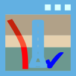<span style="color:#2E7D32; font-weight:bold;">「水平解析 ✓」</span>: 水平解析が完了 (緑)</li>
                <li>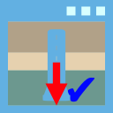<span style="color:#1565C0; font-weight:bold;">「単杭沈下解析 ✓」</span>: 単杭沈下 (荷重-沈下関係) 解析が完了 (青)</li>
                <li><span style="color:#1565C0; font-weight:bold;">「単杭沈下解析（基礎梁考慮） ✓」</span>: 単杭沈下解析（基礎梁考慮）が完了 (青)</li>
                <li>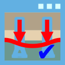<span style="color:#E65100; font-weight:bold;">「群杭沈下解析（一般） ✓」</span>: 群杭沈下解析（一般 = 通常 Steinbrenner）に該当ケースが保存済み (橙)</li>
                <li>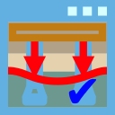<span style="color:#E65100; font-weight:bold;">「群杭沈下解析（反復） ✓」</span>: 群杭沈下解析（反復 = 基礎梁考慮反復 Steinbrenner）に該当ケースが保存済み (橙)</li>
            </ul>
            <p>
                同じリボンボタンの大アイコン上のラベルも完了時に「<strong>... ✓</strong>」表記＋同色に切替わります（杭要素分割を含め全 6 項目で統一）。
            </p>

            <h4>解析実行ボタンの前提条件チェック（自動灰色化）</h4>
            <p>
                解析実行系のボタンは、必要な入力や前段の解析が揃っていない場合に自動的に灰色化（非活性化）されます。
                マウスを重ねると ToolTip で不足項目や前提が表示されるため、何が足りないかを確認できます。
            </p>
            <ul>
                <li><strong>水平解析の解析実行</strong>（水平解析ウィンドウ内、F9）：杭配置・解析対象荷重ケース・適用される荷重組合せのいずれかが未設定／0 件の場合は灰色化。</li>
                <li><strong>単杭沈下解析</strong>（F6）：杭要素分割が完了しているときのみ活性化。</li>
                <li><strong>単杭沈下解析（基礎梁考慮）</strong>（F7）：杭配置 ＋ 基礎梁定義 ＋ 単杭沈下解析の完了をすべて満たした場合のみ活性化。</li>
            </ul>
            <p>
                なお、リボンの「水平解析（F5）」「群杭沈下解析（一般）（F8）」ボタン自体には事前条件による灰色化は設けていません。
                「群杭沈下解析（反復）」は <strong>基礎梁が 1 件以上定義されているとき</strong> のみ活性化されます。
                ウィンドウを開いた後の解析実行ボタン側、または解析実行時のバリデーションメッセージで不足項目が示されます。
            </p>

        </section>
        <section>
            <h2 id="h-解析結果メニュー">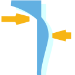解析結果メニュー</h2>
            <p>解析結果の表示と出力を制御するタブです。各ボタンは解析結果ダイアグラムの表示切替、グラフ・テーブル・ログの起動、テキスト・ダイアグラムスケール調整に分かれます。</p>
            <p style="background:#FFF8E1; border-left:4px solid #FFB300; padding:6px 10px; margin:8px 0;">
                ※ <strong>本タブの各表示項目（ダイアグラム種別・コンタ・バブル・矢印・変形後形状・カラーバー・凡例 等）の意味と読み方は、本章の各節 (解析結果の見方/結果グラフの読み方/限界状態設計/検定 等) で詳しく説明します。</strong>
                以下の表は各ボタン・コントロールの「位置と機能」のサマリーです。
            </p>
            <table class="table-doc">
                <thead><tr><th style="text-align:center">グループ</th><th style="text-align:center">アイコン</th><th style="text-align:center">項目</th><th>説明</th></tr></thead>
                <tbody>
                    <tr><td rowspan="3">解析結果表示</td><td></td><td>杭・梁要素</td><td>解析結果ダイアグラムの表示/非表示</td></tr>
                    <tr><td></td><td>内容</td><td>梁応力/節点変位/地盤反力/杭頭M・Qマップ/沈下量等の切替</td></tr>
                    <tr><td></td><td>群杭グリッド変位</td><td>群杭沈下グリッドの変形表示。<strong>群杭沈下解析（一般 または 反復）が完了している場合のみ有効</strong></td></tr>
                    <tr><td rowspan="5">値表示</td><td>—</td><td>値表示</td><td>ダイアグラム上の数値の表示/非表示</td></tr>
                    <tr><td>—</td><td>要素中間</td><td>要素中間位置のみ値を表示</td></tr>
                    <tr><td>—</td><td>杭頭</td><td>杭頭位置のみ値を表示</td></tr>
                    <tr><td></td><td>位置</td><td>テキスト表示位置の調整スライダー</td></tr>
                    <tr><td></td><td>小数</td><td>小数点以下桁数（0〜5）の調整スライダー</td></tr>
                    <tr><td>ダイアグラムスケール</td><td>—</td><td>応力/変位</td><td>ダイアグラム表示サイズの調整スライダー</td></tr>
                    <tr><td>バブル</td><td>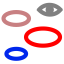</td><td>バブル表示</td><td>沈下量のバブルチャート表示と直径調整。<strong>単杭沈下／単杭沈下（基礎梁考慮）／群杭沈下のいずれかの解析が完了している場合のみ有効</strong></td></tr>
                    <tr><td>矢印</td><td>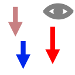</td><td>矢印表示</td><td>沈下量の矢印表示とサイズ調整。<strong>単杭沈下／単杭沈下（基礎梁考慮）／群杭沈下のいずれかの解析が完了している場合のみ有効</strong></td></tr>
                    <tr><td>変形後</td><td></td><td>変形後形状</td><td>水平解析結果の変形後形状を描画。<strong>水平解析／単杭沈下／群杭沈下のいずれかの解析が完了している場合のみ有効</strong></td></tr>
                    <tr><td rowspan="2">グラフ・テーブル</td><td></td><td>グラフ出力</td><td>グラフウィンドウを開く (反復解析だけが完了している状態でも有効)</td></tr>
                    <tr><td></td><td>テーブル出力</td><td>テーブルウィンドウを開く (反復解析だけが完了している状態でも有効)</td></tr>
                    <tr><td>ログ</td><td></td><td>ログ表示</td><td>解析ログウィンドウを開く</td></tr>
                    <tr><td>テキスト</td><td></td><td>サイズ</td><td>テキストサイズの変更（表示タブと共通）</td></tr>
                </tbody>
            </table>

            <h3 id="h-ダイアグラムスケール・テキスト・値表示">ダイアグラムスケール・テキスト・値表示</h3>
            <p>
                リボンメニュー「表示(V)」/「解析結果(R)」タブの右端「ダイアグラムスケール・テキスト・値表示」グループに、
                ダイアグラム表示と値ラベルの全設定がまとまっています。3 列構成です。
            </p>

            <h4>列 1: テキストサイズ・スケール</h4>
            <ul>
                <li><strong>テキストサイズ</strong>（最上段、🔤 アイコン）: メインビュー上のラベル/値ラベルのフォントサイズを変更。両タブ共通で反映されます。</li>
                <li><strong>応力ダイアグラムスケール</strong>: 応力・地盤反力・杭頭マップ・慣性力/杭軸力の矢印など力に関するダイアグラム長を 0.00〜1.00 で調整。</li>
                <li><strong>変位ダイアグラムスケール</strong>: 節点変位のダイアグラム長を調整（節点変位表示時のみ表示）。</li>
            </ul>
            <p>
                <strong>矢印長の意味</strong>: スケール値 $r$ に対して、最大値ケースの矢印は 3D ワールド単位で
                $r \times \text{ModelExtent}$ の長さになります（ModelExtent = 杭配置の X 範囲・Y 範囲の最大値）。
                例えば $r = 0.3$、ModelExtent = 36 m なら最大矢印は 10.8 m 相当。
                視点角に応じて 2D 投影が短縮されるため、真上から見た鉛直矢印（杭軸力）はほぼ消え、
                真横から見た時にフル長で見える挙動になります。
            </p>

            <h4>列 2: 値表示・上面図モード</h4>
            <ul>
                <li><strong>値表示</strong>チェックボックス: ダイアグラム上の数値の表示/非表示を切り替えます。
                    沈下量のバブル/矢印テキストもこのチェックボックスで制御されます。</li>
                <li><strong>要素中間</strong>チェックボックス: 梁要素の中間位置のみ値を表示します。</li>
                <li><strong>杭頭</strong>チェックボックス: 杭頭位置のみ値を表示します。</li>
                <li><strong>基礎梁応力 水平表示</strong>チェックボックス: 基礎梁の鉛直方向成分 (My/Qz など) を梁軸まわりに 90° 回転して水平面に表示します。
                    上面図 (+Z 視点) で確認しやすくなります。</li>
                <li><strong>杭応力 非表示</strong>チェックボックス: 杭体・RigidLink の応力ダイアグラムを非表示にします。
                    「基礎梁応力 水平表示」と併用すると上面図で基礎梁応力ダイアグラムだけが見える状態になります。</li>
            </ul>

            <h4>列 3: 値表示位置・小数桁</h4>
            <ul>
                <li><strong>位置</strong>スライダー: テキストの表示位置（ダイアグラムからの離れ）を調整します。</li>
                <li><strong>小数</strong>スライダー: 表示する小数点以下の桁数を 0〜5 の範囲で指定します。
                    すべてのダイアグラム値（梁応力、節点変位、地盤反力、沈下量、部材角等）に共通で適用されます。</li>
            </ul>

            <h4>カラーバーの色構成</h4>
            <p>
                値の大小を表すカラーバーは Turbo に類似した 6 色（鮮青→シアン青→緑→黄→橙→赤）で構成されており、
                低値域の判別性が高くなっています。値スケールは 0 軸の有無を自動判定し、
                正負両方の値があれば赤/青の Diverging スケール（中央=グレー）、片側のみなら 6 色 Rainbow スケールで描画します。
            </p>

            <h3 id="h-計算書出力">計算書出力</h3>
            <p>
                リボン「ツール」タブ→「計算書」グループ→「Docx 出力」ボタンで、解析結果を Word 形式の計算書として出力できます。
                出力ダイアログ「計算書出力設定」で各項目を個別に ON/OFF 選択でき、
                未解析の項目は <strong>未チェック+灰色</strong> 表示で自動的に出力対象外になります（「チェック付き+灰色」状態は発生しません）。
            </p>

            <h4>計算書出力ダイアログの構成</h4>
            <p>
                ダイアログは左ペイン（ケース設定）と右ペイン（出力項目選択）の 2 列構成です。
            </p>

            <h5>左ペイン: 解析ケース設定</h5>
            <ul>
                <li><strong>荷重ケース レベル1 / レベル2</strong>: 解析済の荷重ケースから出力対象を選択。
                    未解析ケースは「未チェック+灰色」で表示され、解析後に元の意図が復活します。</li>
                <li><strong>荷重組合せ</strong>: 同上 (α/β組合せ)。</li>
                <li><strong>液状化</strong>: 「液状化あり」「液状化なし」を個別に ON/OFF (該当解析がない場合は灰色)。</li>
                <li><strong>計算書レベル</strong>: 「簡易（数式説明なし）」/「詳細（数式説明あり）」をラジオで選択。</li>
            </ul>

            <h5>右ペイン: 出力項目選択</h5>
            <p>項目は以下のグループに分かれており、すべて個別に ON/OFF 可能です。</p>
            <ul>
                <li><strong>入力データ</strong>:
                    基本設定 /
                    荷重条件 /
                    杭体 /
                    杭配置 /
                    杭軸力 /
                    前後方杭 /
                    検討方針 /
                    地盤情報 /
                    液状化検討 /
                    杭配置・杭軸力・前後方杭マップ。</li>
                <li><strong>地盤グラフ</strong>:
                    N値分布 /
                    粘着力 Cu /
                    S波速度 Vs /
                    変形係数 Es /
                    液状化安全率 FL /
                    任意地盤変位 /
                    応答スペクトル
                    の 7 種を地盤ごとに出力。</li>
                <li><strong>杭の図・諸元</strong>:
                    杭姿図 (杭体ごと) /
                    杭断面図 (配筋詳細) /
                    杭頭上面図 /
                    杭頭諸元テーブル /
                    軸力制限テーブル。
                    杭頭諸元テーブルは半剛接合 3 工法 (キャプテンパイル / F.T.Pile / キャプリング) で
                    PCリング (or FTキャップ) の諸元に加え、引張定着筋を有する場合は配置径・帯筋外径・定着長さ・規格などの引張定着筋諸元も併記されます。</li>
                <li><strong>支持力</strong>:
                    支持力検討 (沈下解析完了で有効)。</li>
                <li><strong>水平検討</strong> (親 OFF で全水平項目スキップ):
                    <ul>
                        <li>
                            M-&phi; 関係 /
                            M-&theta; 関係 /
                            N-M 関係 /
                            N-Q 関係
                        </li>
                        <li><strong>杭の変位・応力ダイアグラム</strong> (3 連グラフ: 変位/せん断力/曲げモーメント):
                            <ul>
                                <li>「曲げモーメント列を含める」「せん断力列を含める」: 各列の有無を切替 (変位列は常に出力)。</li>
                                <li><strong>限界状態線を重ねて描画</strong> (既定 ON): せん断/曲げパネルに、各杭要素の軸力に対応する限界値ステップラインを破線で重ね描き。
                                    限界状態は <code>FundamentalInput.SeismicGrade</code> と <code>LoadCase.Level</code> から自動選択:
                                    レベル1→損傷限界、レベル2+グレード S→損傷限界、レベル2+グレード A→安全限界 (いずれも低減後値)。</li>
                                <li><strong>まとめ方</strong>:
                                    <ul>
                                        <li><strong>杭ごとに個別</strong>（既定）: 全杭 &times; 荷重ケース &times; 組合せ &times; 液状化 の組合せごとに 1 図を出力。</li>
                                        <li><strong>杭地盤セットごとにまとめる</strong>: <code>ElementDivision.SoilPiles</code> 単位（同一 PileBody &times; 同一 Ground &times; 同一杭頭 Z）でグループ化し、
                                            グループ内の杭を 1 図にオーバーレイ表示。図数が大幅に削減され、同一条件の杭を比較しやすくなります。</li>
                                    </ul>
                                </li>
                            </ul>
                        </li>
                        <li>
                            杭頭M マップ /
                            杭頭Q マップ
                        </li>
                        <li>解析サマリーレポート (テキスト形式の解析サマリー)</li>
                        <li>検定結果（NGのみ） (NG項目のみのテキストレポート)</li>
                    </ul>
                </li>
                <li><strong>沈下検討</strong>:
                    沈下検討 /
                    荷重沈下曲線 /
                    群杭沈下マップ /
                    単杭沈下解析（基礎梁考慮）結果。</li>
            </ul>
            <p>
                <strong>M-&phi;／M-&theta; 曲線の凡例</strong>: 同一 (荷重ケース, 組合せ, 液状化, 軸力[10 kN 丸め])
                の曲線は 1 本に集約して重複を抑制します（マーカーは各杭ごと）。凡例表記は
                <code>L2-1|Comb1|液状化|N&asymp;2452 kN</code> 形式。
            </p>
            <p>
                <strong>M-&theta; 曲線</strong>: 計算書の M-&theta; 曲線は、入力データから各杭頭工法 (キャプテン / F.T.Pile / キャプリング) の
                バイリニア・トリリニア曲線を直接取得して描画します。
            </p>
            <p>
                <strong>鋼管杭区間の M-&phi; 曲線</strong>: 鋼管杭の鋼管部 (杭体中間・下部) は基礎部材の強度と変形性能 2022 に基づく
                4 点トリリニア M-&phi; を出力します。
            </p>

            <h4>計算書 (docx) の図表番号と目次の挙動</h4>
            <p>
                出力された計算書では、図表番号はアプリ側でカウンタを持ち、各図表キャプションに直接書き込まれます。
                Word の SEQ フィールド自動更新に依存しないため、出力直後から正しい連番（図 1, 図 2, …）が表示されます。
                目次・図目次・表目次の見出しは Bold + 中央寄せ + 14pt で統一されています。
                Word で開いた際にページ番号や図番号一覧が空欄の場合は <strong>目次の上をクリック → F9</strong>
                (または右クリック → 「フィールド更新」) で更新してください。
                <em>注意:</em> 日本語 IME 環境では F9 は「全角英数字変換」のため、
                Ctrl+A で全選択した状態だとフィールド更新の代わりに先頭段落の再変換が起きます。
                必ず目次の上にカーソルを置いた状態で F9 を押してください。
            </p>

            <h3 id="h-メインビューでの解析結果表示">メインビューでの解析結果表示</h3>
            <p>
                水平解析完了後、リボンメニュー「解析結果(R)」タブの各コントロールで、
                メインビュー上に解析結果を表示できます。
            </p>

            <h3 id="h-解析結果の種類">解析結果の種類</h3>
            <p>左上のドロップダウンとツールの「杭・梁要素 解析結果」ドロップダウンで表示内容を切り替えます。</p>
            <ul>
                <li><strong>梁応力</strong>: 杭・梁要素のせん断力・曲げモーメント等のダイアグラム表示</li>
                <li><strong>節点変位</strong>: 杭・地盤節点の変位ダイアグラム表示</li>
                <li><strong>地盤反力（水平）</strong>: 各節点の水平地盤ばねが負担する反力 (kN) を矢印で表示（カラーバー付き）</li>
                <li><strong>地盤反力（分布）</strong>: 節点反力を分担長で除した「単位長さ当たり反力」 (kN/m) を、グラフウィンドウと同様の分布形状で表示（カラーバー付き、並進反力のみ対応）</li>
                <li><strong>杭頭Mマップ</strong>: 各杭の杭頭曲げモーメントを矢印で表示（カラーバー付き）</li>
                <li><strong>杭頭Qマップ</strong>: 各杭の杭頭せん断力を矢印で表示（カラーバー付き）</li>
                <li><strong>接合点Mマップ</strong>: 基礎梁接合点の曲げモーメントを矢印で表示</li>
                <li><strong>接合点Qマップ</strong>: 基礎梁接合点のせん断力を矢印で表示</li>
                <li><strong>沈下量</strong>: 単杭沈下・群杭沈下・基礎梁考慮沈下の沈下量をバブル/矢印/値で表示（カラーバー付き）。<br>
                    「群杭」モードの結果は長期荷重（VL）でのみ算定されるため、他の荷重ケース（L1-1, L2-1 等）を選択した場合は表示されません。</li>
                <li><strong>沈下部材角</strong>: 基礎梁の沈下による部材角を表示</li>
                <li><strong>沈下反力</strong>: 単杭沈下解析（基礎梁考慮）による杭反力を表示</li>
                <li><strong>沈下応力</strong>: 単杭沈下解析（基礎梁考慮）による梁応力を表示</li>
            </ul>
            <p>
                杭頭Mマップ・杭頭Qマップを選択すると、応力ダイアグラムスケールが自動的に0.1に設定され、
                値表示が自動的にONになります。
                沈下量・沈下部材角・沈下反力・沈下応力を選択した場合も、値表示が自動的にONになります。
            </p>
            <p>
                <strong>杭頭Mマップ・杭頭Qマップ・接合点Mマップ・接合点Qマップ</strong>のいずれかを選択すると、
                平面分布が見やすいよう<strong>ビューが自動的にトップビュー（XY平面）に切り替わります</strong>。
                必要に応じて、ビュー切替ボタンから 3D（等角）等へ戻せます。
            </p>

            <h3 id="symbol-reference">解析結果の記号 (凡例)</h3>
            <p>
                本プログラムの梁応力・節点変位ダイアグラム、グラフ、テーブル出力で使われる記号の一覧です。
                <strong>梁要素応力は部材座標系</strong>(各要素のローカル軸)、
                <strong>節点変位は全体座標系</strong>(モデル全体の固定軸 X-Y-Z) で表記します。
                水平合成値 ($F_h$, $M_h$, $U_H$, $\theta_H$) は対応する 2 成分のユークリッドノルム
                $\sqrt{a^2 + b^2}$ で定義され、向きを問わない最大成分の評価に使います。
            </p>

            <h4>梁要素の応力（部材座標系）</h4>
            <p>
                各梁要素のローカル座標系は、$x$ が部材軸方向、$y$/$z$ がそれに直交する 2 軸です。
                杭体の場合は通常 $x$ が杭軸（鉛直方向）、$y$/$z$ が水平 2 軸に対応します。
            </p>
            <table class="table-doc">
                <caption style="text-align: center">梁要素応力の記号</caption>
                <thead>
                    <tr><th>記号</th><th>意味</th><th>定義</th><th>単位</th></tr>
                </thead>
                <tbody>
                    <tr><td>$F_h$</td><td>水平合成せん断力</td><td>$\sqrt{F_y^2 + F_z^2}$</td><td>kN</td></tr>
                    <tr><td>$M_h$</td><td>水平合成曲げモーメント</td><td>$\sqrt{M_y^2 + M_z^2}$</td><td>kN·m</td></tr>
                    <tr><td>$F_x$</td><td>軸力</td><td>部材座標系 $x$ 軸方向力</td><td>kN</td></tr>
                    <tr><td>$F_y$</td><td>せん断力 $y$</td><td>部材座標系 $y$ 軸方向力</td><td>kN</td></tr>
                    <tr><td>$F_z$</td><td>せん断力 $z$</td><td>部材座標系 $z$ 軸方向力</td><td>kN</td></tr>
                    <tr><td>$M_x$</td><td>ねじりモーメント</td><td>部材座標系 $x$ 軸まわりのトルク</td><td>kN·m</td></tr>
                    <tr><td>$M_y$</td><td>曲げモーメント $y$</td><td>部材座標系 $y$ 軸まわりのモーメント</td><td>kN·m</td></tr>
                    <tr><td>$M_z$</td><td>曲げモーメント $z$</td><td>部材座標系 $z$ 軸まわりのモーメント</td><td>kN·m</td></tr>
                </tbody>
            </table>

            <h4>節点変位（全体座標系）</h4>
            <p>
                全体座標系は鉛直 $Z$ 軸を上向き、水平を $X$-$Y$ 平面とします。
                $U_*$ が併進、$\theta_*$ が回転です。
            </p>
            <table class="table-doc">
                <caption style="text-align: center">節点変位の記号</caption>
                <thead>
                    <tr><th>記号</th><th>意味</th><th>定義</th><th>単位</th></tr>
                </thead>
                <tbody>
                    <tr><td>$U_H$</td><td>水平合成併進</td><td>$\sqrt{U_X^2 + U_Y^2}$</td><td>mm</td></tr>
                    <tr><td>$\theta_H$</td><td>水平軸まわり合成回転</td><td>$\sqrt{\theta_X^2 + \theta_Y^2}$</td><td>rad</td></tr>
                    <tr><td>$U_X$</td><td>$X$ 方向併進</td><td>全体座標系 $X$ 軸方向の併進</td><td>mm</td></tr>
                    <tr><td>$U_Y$</td><td>$Y$ 方向併進</td><td>全体座標系 $Y$ 軸方向の併進</td><td>mm</td></tr>
                    <tr><td>$U_Z$</td><td>$Z$ 方向併進</td><td>全体座標系 $Z$ 軸方向の併進（鉛直）</td><td>mm</td></tr>
                    <tr><td>$\theta_X$</td><td>$X$ 軸まわり回転</td><td>全体座標系 $X$ 軸まわりの回転</td><td>rad</td></tr>
                    <tr><td>$\theta_Y$</td><td>$Y$ 軸まわり回転</td><td>全体座標系 $Y$ 軸まわりの回転</td><td>rad</td></tr>
                    <tr><td>$\theta_Z$</td><td>$Z$ 軸まわり回転</td><td>全体座標系 $Z$ 軸まわりの回転</td><td>rad</td></tr>
                </tbody>
            </table>

            <h4>地盤反力（水平）</h4>
            <p>
                解析結果の地盤反力ダイアグラム表示で選択できる成分です。各杭節点の水平地盤ばねが
                負担する反力 (= 地盤側→杭側の力) を全体座標系で表示します。
                解析結果(R) タブ → 「地盤反力」ドロップダウンで切替えできます。
            </p>
            <table class="table-doc">
                <caption style="text-align: center">地盤反力 (水平地盤ばね) 表示成分</caption>
                <thead>
                    <tr><th>記号</th><th>意味</th><th>定義</th><th>単位</th></tr>
                </thead>
                <tbody>
                    <tr><td>$R_H$</td><td>水平合反力 (絶対値)</td><td>$R_H = \sqrt{R_X^2 + R_Y^2}$</td><td>kN</td></tr>
                    <tr><td>$M_H$</td><td>水平モーメント (絶対値)</td><td>$M_H = \sqrt{M_X^2 + M_Y^2}$</td><td>kN·m</td></tr>
                    <tr><td>$R_X$</td><td>$X$ 方向地盤反力</td><td>全体座標系 $X$ 軸方向の節点反力</td><td>kN</td></tr>
                    <tr><td>$R_Y$</td><td>$Y$ 方向地盤反力</td><td>全体座標系 $Y$ 軸方向の節点反力</td><td>kN</td></tr>
                    <tr><td>$R_Z$</td><td>$Z$ 方向地盤反力 (鉛直)</td><td>全体座標系 $Z$ 軸方向の節点反力</td><td>kN</td></tr>
                    <tr><td>$M_X$</td><td>$X$ 軸まわりモーメント反力</td><td>全体座標系 $X$ 軸まわり</td><td>kN·m</td></tr>
                    <tr><td>$M_Y$</td><td>$Y$ 軸まわりモーメント反力</td><td>全体座標系 $Y$ 軸まわり</td><td>kN·m</td></tr>
                    <tr><td>$M_Z$</td><td>$Z$ 軸まわりモーメント反力</td><td>全体座標系 $Z$ 軸まわり (鉛直軸)</td><td>kN·m</td></tr>
                </tbody>
            </table>
            <p style="font-size: 0.95em; color: #555;">
                注: 通常の p-y ばね (水平 2 方向のみの剛性) では $M_X, M_Y, M_Z$ は基本的にゼロです。
                鉛直 ($R_Z$) や回転モーメント反力 ($M_X, M_Y, M_Z$) が非ゼロとなるのは、回転剛性を持つ
                ばね (土圧合力ばね・根入部ばね等) の節点に限られます。
            </p>

            <h4>地盤反力（分布）</h4>
            <p>
                節点反力を各節点の<strong>分担長 (m)</strong> で除した「単位長さ当たり反力」 (kN/m) を、
                グラフウィンドウの「水平地盤反力グラフ」と同様の分布形状でメインビュー上に描画します。
                解析結果(R) タブ → 「内容」ドロップダウンで <strong>「地盤反力（分布）」</strong> を選択すると有効になります。
                並進反力 ($R_H$ / $R_X$ / $R_Y$ / $R_Z$) のみ対応し、モーメント成分 ($M_H$ 等) は $R_H$ にフォールバックします。
            </p>
            <table class="table-doc">
                <caption style="text-align: center">分布反力 (kN/m) の計算</caption>
                <thead>
                    <tr><th>項目</th><th>計算式</th><th>備考</th></tr>
                </thead>
                <tbody>
                    <tr>
                        <td>分担長 $L_t$</td>
                        <td>$L_t = \displaystyle\sum_{\text{接続 FEM 梁}} \dfrac{L_\text{beam}}{2}$</td>
                        <td>当該節点に接続する全 FEM 梁要素 (要素分割後の細分メッシュ) の物理長 $L_\text{beam} = \|\boldsymbol{r}_J - \boldsymbol{r}_I\|$ の半分を合計。
                            $\text{HorizontalSoilReactionItem}$ が設定された梁のみを対象とし、根入部 RigidLink 等は除外。</td>
                    </tr>
                    <tr>
                        <td>単位長さ反力 $r$</td>
                        <td>$r = R / L_t$</td>
                        <td>$R$ は当該節点の反力 ($R_X$ / $R_Y$ / $R_Z$ / $R_H$)。単位 = kN/m</td>
                    </tr>
                </tbody>
            </table>
            <p style="font-size: 0.95em; color: #555;">
                <strong>分担長の取り方について</strong>:
                旧実装 (および <code>MgtExporter</code>) は単一の <code>HorizontalSoilReactionItem.ZTop − ZBtm</code> の半分のみを採用していたため、
                内部節点で上下 2 本の梁からの寄与が片方しか反映されないという問題がありました。
                本実装 (<code>Common/SoilReactionUtil.GetNodeTributaryLength</code>) は、節点に接続するすべての FEM 梁要素の物理長を集計して
                $(L_\text{上} + L_\text{下}) / 2$ を計算しているため、<strong>要素分割実施後も正確</strong>です。
                Canvas (本機能)・テーブル出力 (<code>SoilSpringForceRow</code> の <code>$F_x$/$L_t$</code> 等)・グラフウィンドウ (水平地盤反力グラフ) の 3 箇所で
                同じ考え方で整合させています (グラフは要素分割後の水平地盤反力を上から順に走査するため、
                個々のセグメント長は実梁長と等価)。
            </p>
            <p style="font-size: 0.95em; color: #555;">
                描画は、各節点位置で杭軸から外側方向に $r$ に比例した長さの梯子線を引き、
                同一杭上で隣接ばねの先端を線で結んで分布の外輪を形成します。
                カラーバーは kN/m 単位で最大/最小を表示します。
                MGT 出力 (Midas Gen) や p-y 曲線の単位 (kN/m²) とは異なり、ここでは
                <strong>分担長で除した kN/m 表示</strong> です (杭径 $B$ ではない)。
            </p>

            <h4>軸力・荷重</h4>
            <p>
                軸力タブ・プロパティパネルで扱われる軸力関連の記号です。
                絶対モードと変動モードでラベルが切り替わります。
            </p>
            <table class="table-doc">
                <caption style="text-align: center">軸力・荷重の記号</caption>
                <thead>
                    <tr><th>記号</th><th>意味</th><th>単位</th></tr>
                </thead>
                <tbody>
                    <tr><td>$VL_0$</td><td>常時軸力（基礎自重等の固定値）</td><td>kN</td></tr>
                    <tr><td>$VL_\text{add}$</td><td>追加常時軸力（上部構造による加算分）</td><td>kN</td></tr>
                    <tr><td>$VL$</td><td>常時軸力合計（$VL = VL_0 + VL_\text{add}$）</td><td>kN</td></tr>
                    <tr><td>1-1, 1-2, 1-3, 1-4</td><td>レベル 1 地震時軸力（絶対モード時）</td><td>kN</td></tr>
                    <tr><td>2-1, 2-2, 2-3, 2-4</td><td>レベル 2 地震時軸力（絶対モード時）</td><td>kN</td></tr>
                    <tr><td>$\Delta N$</td><td>変動軸力（変動モード時）<br>$\Delta N = (\text{絶対値}) - VL$</td><td>kN</td></tr>
                    <tr><td>OTM ($M_\text{OTM}$)</td><td>転倒モーメント (Overturning Moment)</td><td>MN·m</td></tr>
                    <tr><td>$\Sigma$</td><td>全杭の合計値（軸力等の集計）</td><td>kN</td></tr>
                </tbody>
            </table>

            <h4>杭頭・接合部</h4>
            <p>
                杭頭ばね・基礎梁接合部の剛性に関する記号です。
                半剛接合（キャプテンパイル・F.T.Pile・キャプリング工法等）では杭頭回転ばね $K_\theta$ を介して
                上部基礎梁と接続されます。
            </p>
            <table class="table-doc">
                <caption style="text-align: center">杭頭・接合部の記号</caption>
                <thead>
                    <tr><th>記号</th><th>意味</th><th>単位</th></tr>
                </thead>
                <tbody>
                    <tr><td>$K_0$</td><td>杭頭軸方向ばね定数</td><td>kN/m</td></tr>
                    <tr><td>$K_1$</td><td>杭頭水平方向ばね定数</td><td>kN/m</td></tr>
                    <tr><td>$K_2$</td><td>杭頭回転ばね定数</td><td>kN·m/rad</td></tr>
                    <tr><td>$K_\theta$</td><td>杭頭半剛接合の回転剛性（M-θ 関係の弾性勾配）</td><td>kN·m/rad</td></tr>
                    <tr><td>$\Delta Z_c$</td><td>基礎梁芯から杭頭までの偏心量（鉛直方向）</td><td>m</td></tr>
                    <tr><td>$\xi$</td><td>群杭係数（杭間相互作用による単杭支持力低減）</td><td>—</td></tr>
                    <tr><td>$R/B$</td><td>杭間隔比（杭中心間隔 / 杭径）</td><td>—</td></tr>
                </tbody>
            </table>

            <h4>限界状態・断面性能</h4>
            <p>
                杭体の M-φ 関係と限界状態判定に用いる記号です。
                損傷限界はクラック発生（$M_{cr}$）、安全限界は終局状態（$M_u$）に対応します。
            </p>
            <table class="table-doc">
                <caption style="text-align: center">限界状態・断面性能の記号</caption>
                <thead>
                    <tr><th>記号</th><th>意味</th><th>単位</th></tr>
                </thead>
                <tbody>
                    <tr><td>$M_c$</td><td>使用限界モーメント（弾性範囲上限）</td><td>kN·m</td></tr>
                    <tr><td>$M_{cr}$</td><td>ひび割れモーメント（損傷限界相当、ひび割れ後の曲線への切替点）</td><td>kN·m</td></tr>
                    <tr><td>$M_y$</td><td>降伏モーメント</td><td>kN·m</td></tr>
                    <tr><td>$M_u$</td><td>終局モーメント（安全限界相当）</td><td>kN·m</td></tr>
                    <tr><td>$\phi$</td><td>曲率</td><td>1/m</td></tr>
                    <tr><td>$\theta$</td><td>部材回転角</td><td>rad</td></tr>
                    <tr><td>$N$</td><td>軸力（$M$-$N$ 相関図の縦軸）</td><td>kN</td></tr>
                    <tr><td>$\sigma_0$</td><td>軸応力度（$\sigma_0 = N / A$、$A$ は杭断面積）</td><td>N/mm²</td></tr>
                    <tr><td>$F_c$</td><td>コンクリート設計基準強度</td><td>N/mm²</td></tr>
                    <tr><td>$F_t$</td><td>コンクリート引張強度</td><td>N/mm²</td></tr>
                    <tr><td>$EI$</td><td>曲げ剛性（$EI_\text{tan}$:接線、$EI_\text{sec}$:割線、$EI_\text{eff}$:有効）</td><td>kN·m²</td></tr>
                    <tr><td>$N_{st}$, $N_{sc}$</td><td>使用限界の引張側・圧縮側軸力制限値</td><td>kN</td></tr>
                    <tr><td>$N_{dt}$, $N_{dc}$</td><td>損傷限界の引張側・圧縮側軸力制限値</td><td>kN</td></tr>
                    <tr><td>$N_{ut}$, $N_{uc}$</td><td>安全限界の引張側・圧縮側軸力制限値</td><td>kN</td></tr>
                </tbody>
            </table>

            <h4>沈下解析</h4>
            <table class="table-doc">
                <caption style="text-align: center">沈下解析の記号</caption>
                <thead>
                    <tr><th>記号</th><th>意味</th><th>単位</th></tr>
                </thead>
                <tbody>
                    <tr><td>$D_0$</td><td>杭頭沈下量</td><td>mm</td></tr>
                    <tr><td>$D_n$</td><td>杭先端沈下量（$n$ は分割数）</td><td>mm</td></tr>
                    <tr><td>$\delta$</td><td>地盤沈下量</td><td>mm</td></tr>
                    <tr><td>$W$</td><td>杭頭鉛直荷重（沈下解析の入力）</td><td>kN</td></tr>
                </tbody>
            </table>

            <h4>液状化判定</h4>
            <table class="table-doc">
                <caption style="text-align: center">液状化判定の記号</caption>
                <thead>
                    <tr><th>記号</th><th>意味</th><th>単位</th></tr>
                </thead>
                <tbody>
                    <tr><td>$F_L$</td><td>液状化抵抗率（$F_L < 1$ で液状化判定）</td><td>—</td></tr>
                    <tr><td>$P_L$</td><td>液状化指数（深度方向の累積指標）</td><td>—</td></tr>
                    <tr><td>$D_{CY}$</td><td>累積損傷度</td><td>—</td></tr>
                    <tr><td>$R$</td><td>液状化抵抗比</td><td>—</td></tr>
                    <tr><td>$L$</td><td>地震時せん断応力比</td><td>—</td></tr>
                </tbody>
            </table>

            <h3 id="h-荷重ケース・荷重組合せ・液状化の選択">荷重ケース・荷重組合せ・液状化の選択</h3>
            <p>
                ツールのドロップダウンで荷重ケース（L1-1, L2-1 等）と荷重組合せを選択します。
                液状化考慮の有無はトグルボタンで切り替えます。
                荷重ケースを切り替えると、解析結果に応じて液状化の状態が自動検出されます。
            </p>

            <h3 id="h-結果グラフの読み方">結果グラフの読み方</h3>
            <p>
                「解析結果(R)」→「グラフ出力」で開くグラフウィンドウでは、右上の「グラフの種類」ドロップダウンから
                各種グラフを選択できます。以下に主なグラフ種類を示します。
            </p>

            <h4>杭変位応力</h4>
            <p>3パネル表示で、杭の深さ方向の変位・せん断力・曲げモーメントを一覧表示します。</p>
            <table class="table-doc">
                <thead>
                    <tr>
                        <th style="text-align: center">位置</th>
                        <th style="text-align: center">グラフ</th>
                        <th style="text-align: center">内容</th>
                        <th style="text-align: center">確認ポイント</th>
                    </tr>
                </thead>
                <tbody>
                    <tr>
                        <td>左</td>
                        <td>変位・地盤変位</td>
                        <td>杭体の水平変位（実線）と地盤変位（破線）</td>
                        <td>杭頭変位が許容値以内か確認</td>
                    </tr>
                    <tr>
                        <td>中</td>
                        <td>せん断力</td>
                        <td>杭体の深さ方向のせん断力分布</td>
                        <td>許容せん断力との比較</td>
                    </tr>
                    <tr>
                        <td>右</td>
                        <td>曲げモーメント</td>
                        <td>杭体の深さ方向の曲げモーメント分布</td>
                        <td>使用限界/損傷限界/安全限界との比較</td>
                    </tr>
                </tbody>
            </table>
            <p>「限界状態」ドロップダウンで使用限界・損傷限界・安全限界を選択すると、
                各要素の軸力に応じた限界値が破線で重ね描きされます。</p>

            <h4>杭周地盤変位反力</h4>
            <p>3パネル表示で、杭周地盤の相対変位・水平地盤反力・ばね割線剛性を深さ方向に表示します。</p>

            <h4>杭体M-&phi;・EI-&phi;</h4>
            <p>
                杭体のM-&phi;（曲げモーメント-曲率）関係を表示します。EI-&phi;モードでは各M-&phi;区間を
                細分化して正確なEI曲線を描画します（100分割で折線近似誤差をほぼ視認不能まで縮小）。
                解析最終ステップの曲率位置がマーカーで表示されます。
                ツールの「杭区間番号」は入力杭体区間（上杭/中杭/下杭）を指します。
            </p>

            <h4>杭頭M-&theta;</h4>
            <p>
                回転ばねのM-&theta;関係（モード: CombinedXY / Rx / Ry / Rz）を表示します。
                各杭の杭頭回転角と杭頭モーメントの関係、および最終ステップマーカーを確認できます。
            </p>
            <p>
                <strong>剛結 (Rigid) ケースの表示</strong>: 杭頭が剛結扱い (例: 場所打ち鋼管コンクリート杭・既製コンクリート杭、
                および鋼管杭で鉄筋定着工法の入力が無い場合) では、FEM 内で K=10<sup>10</sup> kN&middot;m/rad の数値的剛体相当値を使うため
                K&middot;&theta; を 0.02 rad まで外挿すると非物理的な直線 (M&approx;2&times;10<sup>8</sup> kN&middot;m) が描かれていました。
                現在は K &geq; 10<sup>9</sup> を「剛体相当」と判定して曲線を描かず、凡例に <strong>「剛結 (M-&theta; 関係なし)」</strong>とだけ表示します。
            </p>

            <h4>その他のグラフ</h4>
            <ul>
                <li><strong>慣性力作用点荷重変形関係</strong>: 荷重増分ステップごとの慣性力作用点変位と水平力の関係</li>
                <li><strong>杭応力F/M</strong>: 単パネルで個別の応力成分（Fy/Fz/F/My/Mz/M）を表示</li>
                <li><strong>杭変位UX/UY/UH</strong>: 単パネルで個別の変位成分を表示</li>
                <li><strong>NMINT/QNINT</strong>: 軸力-曲げモーメント/軸力-せん断力インタラクション図</li>
                <li><strong>水平地盤反力度p-y</strong>: 各要素の理論p-y曲線と最終ステップマーカー。
                    ツールの「杭要素番号」は<strong>杭要素分割後</strong>の要素番号（他グラフの「杭区間番号」とは意味が異なります）。
                    選択要素番号に対応する地盤層名・土質・標高・杭径・N値の詳細が下部に表示されます。</li>
                <li><strong>単杭沈下/群杭沈下</strong>: 通り心方向の沈下分布。Y軸は mm 単位、傾斜角レジェンドは "rad×1/1000" 表示。</li>
            </ul>
            <p>各グラフで右クリック→「CSVとして保存...」でデータをエクスポートできます。</p>

            <h4>ホバーポップアップ（詳細表示）</h4>
            <p>
                以下のグラフでは、マウスカーソルを曲線やマーカーに近づけると近傍データの詳細がポップアップ表示されます。
                複数杭選択時でもマウス直近データの詳細（杭番号、断面、軸力、最終値など）を確認できます。
            </p>
            <ul>
                <li><strong>水平地盤反力度p-y</strong>: 杭番号/要素番号、地盤層名、土質、標高、杭径、N値。マーカー時は LC/Comb/液状化と相対変位・反力度。</li>
                <li><strong>杭体M-&phi;・EI-&phi;</strong>: 杭番号、要素番号、入力杭区間、杭断面、LC/Comb/液状化、軸力、曲線出典、最終 &phi;/M/EI。</li>
                <li><strong>杭頭M-&theta;</strong>: 杭番号、杭位置、杭頭 Z、杭頭断面、回転ばね情報、LC/Comb/液状化、軸力、最終 &theta;/M。</li>
                <li><strong>NMINT/QNINT</strong>: NM/QN 限界曲線上で杭体名、入力杭区間、杭種、断面種別、杭径 D、杭断面詳細（QNINT は M/(Q&middot;d) 値も）。</li>
            </ul>
            <p>
                さらに <strong>NMINT</strong> グラフでは、曲線上をクリックするとその点の<strong>断面ひずみ度・応力度プロファイル</strong>を
                別ウィンドウで表示できます（詳細は「場所打ち鉄筋コンクリート杭の強度と変形性能」の
                <em>断面のひずみ度・応力度プロファイル</em> を参照）。
            </p>

            <h4>ツールの幅調整</h4>
            <p>
                グラフウィンドウの右ペイン（グラフ種類・荷重ケース等の選択部）とプロット領域の境界は、
                マウスドラッグで幅を調整できます。凡例が長いときは広げる、プロット面積を優先したいときは縮める、
                といった運用が可能です。解析結果テーブルウィンドウの左ペインも同様に可変です。
            </p>

            <h3 id="h-沈下曲線">沈下曲線</h3>
            <p>
                単杭沈下解析ウィンドウの「沈下曲線」タブでは、荷重-杭頭沈下曲線と荷重-杭先端沈下曲線を表示します。
                グラフ右上の「凡例表示」チェックボックスで凡例の表示/非表示を切り替えることができます。
            </p>

            <h3 id="h-沈下解析結果">沈下解析結果</h3>
            <p>「解析」→「即時沈下」で開くウィンドウでは、群杭としての沈下量を確認できます。</p>
            <table class="table-doc">
                <thead>
                    <tr>
                        <th style="text-align: center">項目</th>
                        <th style="text-align: center">内容</th>
                        <th style="text-align: center">判定基準例</th>
                    </tr>
                </thead>
                <tbody>
                    <tr>
                        <td>杭頭沈下量</td>
                        <td>荷重-沈下関係から求まる杭頭沈下量</td>
                        <td>一般建物: 25mm以下（基礎指針'19）</td>
                    </tr>
                    <tr>
                        <td>群杭沈下量</td>
                        <td>Steinbrennerの近似解による群杭沈下</td>
                        <td>絶対沈下量と不同沈下量を確認</td>
                    </tr>
                    <tr>
                        <td>不同沈下傾斜角</td>
                        <td>通り心間の不同沈下傾斜角</td>
                        <td>1/1000以下（建築学会基準）</td>
                    </tr>
                </tbody>
            </table>

            <h3 id="h-判定結果の表示">判定結果の表示</h3>
            <p>
                検定の結果は、解析結果テーブルの<strong>判定</strong>列と、計算書のテキストで以下のように表されます。
            </p>
            <table class="table-doc">
                <thead>
                    <tr>
                        <th style="text-align: center">表示</th>
                        <th style="text-align: center">判定</th>
                        <th style="text-align: center">内容</th>
                    </tr>
                </thead>
                <tbody>
                    <tr>
                        <td style="text-align: center;">[OK]</td>
                        <td>合格</td>
                        <td>解析結果が限界状態の判定基準を満足しています</td>
                    </tr>
                    <tr>
                        <td style="text-align: center;">[NG]</td>
                        <td>不合格</td>
                        <td>解析結果が限界状態の判定基準を超過しています。該当する梁要素名・杭配置番号・要素番号が表示されます</td>
                    </tr>
                </tbody>
            </table>
            <p>
                表は<strong>検定比の降順</strong>に並ぶため、先頭の行が支配ケースです。
                「あと何割で NG か」は検定比の列で読み取れます。
            </p>

            <h3 id="h-限界状態設計の考え方">限界状態設計の考え方</h3>
            <p>
                本プログラムでは、基礎指針'19に準拠した限界状態設計法による検討を行います。
                杭基礎の検討は <strong>「杭支持力に関する限界状態」</strong> と <strong>「杭体に関する限界状態」</strong>
                の二系統に分けて行います。
            </p>

            <h4>杭支持力に関する限界状態</h4>
            <p>
                地盤の支持機構（先端支持力・周面摩擦力）に対して、極限支持力 $R_u$ に
                抵抗係数 $\phi_R$ を乗じた値を許容値とします。
            </p>

            <h5 id="section-sls">使用限界状態 (SLS: Serviceability Limit State)</h5>
            <p>
                鉛直荷重に対しては $\phi_R = 1/3$、水平荷重に対しては弾性範囲内であることを確認します。
            </p>

            <h5 id="section-dls">損傷限界状態 (DLS: Damage Limit State)</h5>
            <p>
                鉛直荷重に対しては $\phi_R = 1/1.5$ を適用します。
            </p>

            <h5 id="section-uls">終局限界状態 (ULS: Ultimate Limit State)</h5>
            <p>
                鉛直荷重に対しては $\phi_R = 1/1$（極限支持力）を適用します。
            </p>

            <h4>杭体に関する限界状態</h4>
            <p>
                杭体（杭体断面・杭頭接合部）の応力・変形に対して、各杭種・部位ごとの式
                （場所打ち RC・場所打ち鋼管コンクリート・PHC・PRC・SC・鋼管杭の各「強度と変形性能」式）に基づき、
                曲げモーメント $M$・せん断力 $Q$・軸力 $N$ がそれぞれの耐力以下であることを確認します。
            </p>

            <h5>使用限界状態 (SLS)</h5>
            <p>
                曲げ ($M_s$)・せん断 ($Q_s$)・軸力 ($N_{sc}, N_{st}$)
                の使用限界耐力に対して断面力が下回ることを確認します。$\beta_1 = 1.0$ を採用。
            </p>

            <h5>損傷限界状態 (DLS)</h5>
            <p>
                曲げ ($M_d$)・せん断 ($Q_d$)・軸力 ($N_{dc}, N_{dt}$)
                の損傷限界耐力に対して断面力が下回ることを確認します。$\beta_1 = 1.0$ を採用 (杭種により異なる)。
            </p>

            <h5>安全限界状態 (ULS)</h5>
            <p>
                曲げ ($M_u$)・せん断 ($Q_u$)・軸力 ($N_{uc}, N_{ut}$)
                の安全限界耐力に対して断面力が下回ることを確認します。$\beta_1, \beta_2$ は杭種・条件に応じた低減係数を採用。
            </p>

            <h3 id="h-検定ウィンドウ">検定</h3>
            <p>
                検定結果は<strong>解析結果テーブル</strong>（リボン「解析結果(R)」タブ →「テーブル」）から見られます。
                種別フィルタで<strong>「検定結果」</strong>を選ぶと、検定の表だけが表示されます。
                以前は専用の「検定ウィンドウ」を開く必要がありましたが、結果を確認しに来て最初に開くのが
                解析結果テーブルであるため、そちらに統合しました。
            </p>

            <h4>検定の表</h4>
            <table class="table-doc">
                <thead>
                    <tr>
                        <th style="text-align: center">表</th>
                        <th style="text-align: center">内容</th>
                    </tr>
                </thead>
                <tbody>
                    <tr>
                        <td>検定結果（低減前水平解析）</td>
                        <td>低減前（Unfactored）の N-M 相関曲線を用いた杭体曲げ・杭頭回転角・基礎梁傾斜角の検定</td>
                    </tr>
                    <tr>
                        <td>検定結果（低減後水平解析）</td>
                        <td>低減後（Factored）の N-M 相関曲線を用いた同上の検定</td>
                    </tr>
                    <tr>
                        <td>検定結果（杭の鉛直支持力）</td>
                        <td>押込み支持力・引抜き抵抗の検定。<strong>水平解析を行わなくても</strong>（杭要素分割まで済んでいれば）表示されます</td>
                    </tr>
                </tbody>
            </table>
            <p>
                検定の表は<strong>荷重ケース・荷重組合せ・液状化をまたぐ 1 枚もの</strong>です。
                支配ケースを探すには全条件を通して並べたものが要るためで、条件は<strong>行ごとの列</strong>
                （荷重ケース／荷重組合せ／液状化）で分かります。テーブルウィンドウの条件フィルタは行に対して効きます。
            </p>

            <h4>検定比</h4>
            <p>
                各行には<strong>検定比 = 応答値 ÷ 限界値</strong>が付き、表は既定で検定比の降順に並びます。
                先頭の行がその検定における<strong>支配ケース</strong>です。
                OK / NG だけでは「あと 3% で NG」なのか「まだ半分」なのかが分からないため、
                余裕度を数値で示しています。応答値・限界値の小数桁は量に応じて変わります
                （モーメント・支持力は 1 桁、回転角は 3 桁、傾斜角は 5 桁）。
            </p>
            <p>
                同じ内容のテキスト（従来の <code>[OK]</code> / <code>[NG]</code> 形式）は<strong>計算書</strong>に出力されます。
            </p>

            <h4>判定基準 — 杭体曲げ・杭頭回転角</h4>
            <h5>レベル1地震動</h5>
            <ul>
                <li><strong>M-φ関係（損傷限界）</strong>:
                    各杭要素のi端またはj端の曲げモーメントが、損傷限界状態のN-M相関曲線による許容モーメントを超える場合にNG</li>
                <li><strong>杭頭回転角θ</strong>:
                    場所打ち鉄筋コンクリート杭において、杭頭の回転角$\theta$が$1/100$ radを超える場合にNG</li>
            </ul>

            <h5>レベル2地震動</h5>
            <p>耐震グレードにより判定基準が異なります。</p>
            <table class="table-doc">
                <thead>
                    <tr>
                        <th style="text-align: center">耐震グレード</th>
                        <th style="text-align: center">M-φ関係の判定基準</th>
                        <th style="text-align: center">θの判定基準</th>
                    </tr>
                </thead>
                <tbody>
                    <tr>
                        <td style="text-align: center">A</td>
                        <td>i端またはj端が<strong>終局限界状態</strong>を超える場合にNG</td>
                        <td>場所打ちRC杭で$\theta > 1/100$ radの場合にNG</td>
                    </tr>
                    <tr>
                        <td style="text-align: center">S</td>
                        <td>i端またはj端が<strong>損傷限界状態</strong>を超える場合にNG</td>
                        <td>場所打ちRC杭で$\theta > 1/100$ radの場合にNG</td>
                    </tr>
                </tbody>
            </table>

            <h4>判定基準 — 杭の鉛直支持力</h4>
            <p>
                応答値は<strong>入力した杭軸力</strong>、限界値は地盤と杭体から決まる支持力・引抜き抵抗です。
                荷重との対応は杭体断面の検定と同じく<strong>限界状態</strong>で取ります。
            </p>
            <table class="table-doc">
                <thead>
                    <tr>
                        <th style="text-align: center">荷重</th>
                        <th style="text-align: center">限界状態</th>
                        <th style="text-align: center">押込み支持力</th>
                        <th style="text-align: center">引抜き抵抗</th>
                    </tr>
                </thead>
                <tbody>
                    <tr>
                        <td style="text-align: center">長期（$V_L$）</td>
                        <td style="text-align: center">使用限界</td>
                        <td style="text-align: center">$R_u/3$</td>
                        <td style="text-align: center">$R_{tu}/3$</td>
                    </tr>
                    <tr>
                        <td style="text-align: center">レベル1地震動</td>
                        <td style="text-align: center">損傷限界</td>
                        <td style="text-align: center">$R_u/1.5$</td>
                        <td style="text-align: center">$R_{ty}$（降伏引抜き抵抗力）</td>
                    </tr>
                    <tr>
                        <td style="text-align: center">レベル2地震動</td>
                        <td style="text-align: center">終局限界<br>※耐震グレード S では損傷限界</td>
                        <td style="text-align: center">$R_u$</td>
                        <td style="text-align: center">$R_{tr}$（残留引抜き抵抗力）</td>
                    </tr>
                </tbody>
            </table>
            <ul>
                <li>軸力の向きに応じて、押込みか引抜きの<strong>どちらか一方</strong>だけを検定します
                    （圧縮の杭に「引抜きは OK」という行は出しません）。</li>
                <li>引抜き抵抗を求めていない杭（限界値が 0）は検定できないため、行を出しません。</li>
                <li>支持力には液状化の別が無いため、液状化フィルタで絞ると表示されません。</li>
            </ul>

            <h4>軸力の取り扱い</h4>
            <p>
                N-M相関曲線による許容モーメントの算定に用いる軸力は、ユーザーが入力した荷重ケースごとの軸力値を使用します。
                具体的には、レベル1荷重ケースに対してはレベル1地震時軸力、レベル2荷重ケースに対してはレベル2地震時軸力が適用されます。
                ケース別の軸力が未入力（0）の場合は常時軸力 $V_L$ を用います。
            </p>

            <h4>低減前と低減後の違い</h4>
            <p>
                N-M相関曲線には低減前（Unfactored）と低減後（Factored）の2種類があります。
                低減後の曲線は、軸力レベルに応じた低減係数βを乗じたもので、安全側の評価となります。
                鉛直支持力は低減の有無で変わらないため、表を分けています。
            </p>
            <h3 id="h-沈下コンター表示">沈下コンター表示</h3>
            <p>
                群杭沈下解析（一般 / 反復）後、メインビューの「グリッド変位表示」チェックボックスをONにすると、
                沈下量のコンター図が表示されます。
                マウスカーソル位置の沈下量がツールチップで表示されます。
            </p>
            <p>
                <strong>カラーバーの凡例</strong>: 表示中の結果が一般か反復かを「<strong>沈下量 (一般)</strong>」/「<strong>沈下量 (反復)</strong>」で表示します。
                群杭沈下 ▼ コンボボックスで切替えるとラベルとコンタが同時に切替わります。
            </p>

            <h3 id="h-解析結果テーブル--群杭沈下系のカテゴリ">解析結果テーブル — 群杭沈下系のカテゴリ</h3>
            <p>
                テーブル出力ウィンドウのテーブル一覧には、群杭沈下解析の結果が以下のカテゴリで表示されます:
            </p>
            <ul>
                <li><strong>群杭沈下解析（反復）</strong> (旧名「基礎梁考慮スタインブレナー」)
                    <ul>
                        <li>杭結果 — 杭No / X / Y / 基礎反力 / 沈下量 / ばね</li>
                        <li>節点変位 — 全節点の X / Y / Z / Uz / Rx / Ry</li>
                        <li>梁応力 — 梁名と Ni〜Mzj (i 端 / j 端 の 6 成分)</li>
                        <li>土層グリッド変位 — グリッド点 X / Y / 沈下量 (mm)</li>
                    </ul>
                </li>
                <li><strong>群杭沈下解析（一般）</strong>
                    <ul>
                        <li>杭結果 — 杭No / X / Y / 荷重 / 沈下量</li>
                        <li>節点変位 — 杭頭節点 (Pile-N) の X / Y / Z / Uz (一般は梁解析を行わないため簡易表)</li>
                        <li>土層グリッド変位 — グリッド点 X / Y / 沈下量 (mm)</li>
                    </ul>
                </li>
            </ul>
            <p>
                各テーブルは <code>[液状化] / カテゴリ 種別 / LoadCaseName</code> の形式で表示されます (例: <code>[無] / 群杭沈下解析（反復） 杭結果 / 矩形荷重 (VL)</code>)。
                <strong>テーブル出力 / グラフ出力ボタン</strong>は、反復解析だけが完了している状態でも有効化されます。
            </p>

        </section>
        <section>
            <h2 id="h-ツール-ウィンドウ-ヘルプ-メニュー">ツール / ウィンドウ / ヘルプ メニュー</h2>
            <p>リボンの「ツール(T)」「ウィンドウ(W)」「ヘルプ(H)」の 3 タブをまとめて扱います。</p>
            <h3 id="section-tool-menu">ツールメニュー</h3>
            <p>計算書出力、補助ツール、ライブラリ、画像操作、エクスポート機能を提供するタブです。</p>
            <table class="table-doc">
                <thead><tr><th style="text-align:center">グループ</th><th style="text-align:center">アイコン</th><th style="text-align:center">ボタン</th><th>説明</th></tr></thead>
                <tbody>
                    <tr><td>計算書</td><td></td><td>Docx 出力</td><td>計算書出力設定ウィンドウを開き、Word 形式 (.docx) の計算書を生成します</td></tr>
                    <tr><td>サブプログラム</td><td>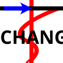</td><td>Chang</td><td>一様地盤中の杭の横抵抗計算（Chang 式）を実行するサブプログラム</td></tr>
                    <tr><td>ライブラリ</td><td>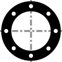</td><td>杭断面ライブラリ</td><td>既製杭の断面性能データベースを閲覧します</td></tr>
                    <tr><td rowspan="4">画像</td><td></td><td>画像コピー(x1.0)</td><td>メインビューを等倍解像度でクリップボードにコピー</td></tr>
                    <tr><td>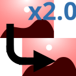</td><td>画像コピー(x2.0)</td><td>メインビューを 2 倍解像度でクリップボードにコピー</td></tr>
                    <tr><td></td><td>画像保存(x1.0)</td><td>メインビューを等倍解像度で PNG ファイルに保存</td></tr>
                    <tr><td></td><td>画像保存(x2.0)</td><td>メインビューを 2 倍解像度で PNG ファイルに保存</td></tr>
                    <tr><td rowspan="4">エクスポート</td><td></td><td>3dm 出力</td><td>杭・根入部・基礎梁の 3D モデルを Rhinoceros (.3dm) 形式でエクスポート</td></tr>
                    <tr><td>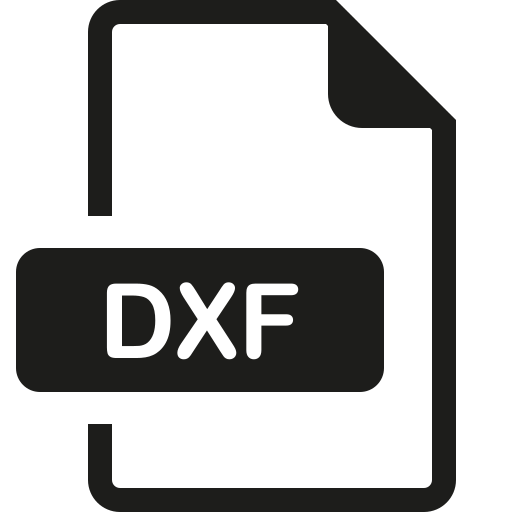</td><td>DXF (3D)</td><td>3D モデルを DXF 形式でエクスポート</td></tr>
                    <tr><td></td><td>DXF (伏図)</td><td>杭伏図（通り心・寸法・杭位置・基礎梁）を 2D DXF 形式でエクスポート</td></tr>
                    <tr><td></td><td>MGT 出力</td><td>FEM 解析モデルを midas iGen / Gen MGT テキスト形式でエクスポート（非線形地盤ばね・慣性力・強制変位・荷重組合せを含む）</td></tr>
                    <tr><td rowspan="3">拡張機能</td><td></td><td>解析結果ダッシュボード</td><td>解析規模・統計・状態を 1 画面のカード形式に集約表示するパネルを開きます</td></tr>
                    <tr><td></td><td>コマンド パレット</td><td>登録済みコマンドを AND 部分一致で検索・実行する小ウィンドウを開きます (Ctrl+Shift+P)</td></tr>
                    <tr><td></td><td>編集履歴</td><td>Undo/Redo 履歴を一覧表示し、任意時点へジャンプできるパネルを開きます</td></tr>
                </tbody>
            </table>

            <h4>計算書出力 (Docx 出力)</h4>
            <p>
                リボン「ツール」タブ→「計算書」グループ→「<strong>Docx 出力</strong>」ボタンで、
                計算書出力設定ウィンドウを開き、検討内容を Microsoft Word 形式 (.docx) のレポートとして出力します。
                解析未完了の項目（水平解析が未実行など）に依存するチェックボックスは自動的に無効化されるため、現状で出力可能なものだけが選択候補となります。
            </p>

            <h5>ウィンドウ構成</h5>
            <p>設定ウィンドウは左右 2 カラム構成で、左側で出力対象の荷重ケース・組合せを、右側で出力する章節と図表を選択します。</p>

            <h6>左カラム — 荷重ケース／組合せの絞り込み</h6>
            <ul>
                <li><strong>荷重ケース レベル1 / レベル2</strong>:
                    現在のモデルに登録されている荷重ケースが一覧表示されます。チェックされたケースのみが計算書中の入力データ表・解析結果表に含まれます。</li>
                <li><strong>荷重組合せ</strong>:
                    定義済みの荷重組合せから、計算書に含めるものを選択します。</li>
                <li><strong>液状化</strong>:
                    「液状化あり」「液状化なし」のいずれを計算書に出力するかを選びます (両方 ON も可)。</li>
                <li><strong>計算書レベル</strong>:
                    詳細レベルを選択します。例: 簡易出力にすると要素ごとの応力テーブルは省略し、サマリのみ出力します。</li>
            </ul>

            <h6>右カラム — 章節・図表の選択</h6>
            <p>以下のグループ単位で出力項目を ON/OFF できます。チェックすると対応する章 (および図・表) が計算書に追加されます。</p>
            <ul>
                <li><strong>入力データ</strong>:
                    基本設定、荷重条件、杭体諸元、杭配置テーブル、杭軸力、前後方杭設定、検討方針、地盤情報、液状化検討、杭配置図、杭軸力図、前方／後方杭設定図</li>
                <li><strong>地盤グラフ</strong>:
                    N 値分布、粘着力 C<sub>u</sub>、S 波速度 V<sub>s</sub>、変形係数 E<sub>s</sub>、液状化安全率 F<sub>L</sub>、任意地盤変位、応答スペクトル</li>
                <li><strong>杭の図・諸元</strong>:
                    杭姿図 (杭体ごと、地盤オーバーレイ付き)、杭断面図 (配筋詳細)、杭頭上面図、杭頭諸元テーブル、軸力制限テーブル (N<sub>st</sub>/N<sub>sc</sub>/N<sub>dt</sub>/N<sub>dc</sub>/N<sub>ut</sub>/N<sub>uc</sub>)</li>
                <li><strong>支持力</strong>: 鉛直支持力検討</li>
                <li><strong>水平検討</strong>:
                    水平検討、M-φ／M-θ／N-M／N-Q 関係 (限界状態線重ね描画オプション付き)、応力テーブル (曲げモーメント列／せん断力列／限界状態線)、杭頭 M／杭頭 Q マップ、解析サマリーレポート (収束結果)、検定 NG ケース一覧</li>
                <li><strong>沈下検討</strong>:
                    沈下検討、荷重沈下曲線、群杭沈下マップ、単杭沈下解析（基礎梁考慮）結果</li>
            </ul>

            <h5>操作手順</h5>
            <ol>
                <li>リボン「ツール」→「Docx 出力」を選択し、設定ウィンドウを開きます。</li>
                <li>左カラムで対象とする荷重ケース・組合せ・液状化条件を絞り込みます。</li>
                <li>右カラムで出力したい章節 (チェックボックス) を選択します。前回の出力設定はファイルに保持されません (アプリ起動時にデフォルト値で開きます)。</li>
                <li>下端の「<strong>計算書作成</strong>」ボタンで保存ダイアログを開き、出力先の .docx ファイル名を指定します。</li>
                <li>処理進捗ウィンドウが表示され、完了後にメッセージが出ます。</li>
            </ol>

            <h5>留意事項</h5>
            <ul>
                <li>水平解析が完了していない場合は「水平検討」グループの大半が自動で無効化されます。沈下解析未完了時も同様 (「沈下検討」グループ)。</li>
                <li>画像 (グラフ・配筋図など) は <strong>HiResScale = 2.0</strong> 相当の解像度で埋め込まれており、Word 上で拡大表示しても潰れにくい設定です。</li>
                <li>キャプション (「図 X-Y」「表 X-Y」) は章・節単位で自動採番されます。</li>
                <li>多数の杭体・荷重ケース・組合せを ON にすると、生成時間と docx ファイルサイズが急増します。確認用には荷重ケースを 1〜2 個に絞ると高速です。</li>
            </ul>

            <h4>Chang 計算 (一様地盤中の長い杭の状態計算)</h4>
            <p>
                リボン「ツール」タブ→「サブプログラム」グループ→「<strong>Chang</strong>」ボタンで、
                Chang の式による一様地盤中の長い杭の横抵抗計算を行うサブプログラムウィンドウを開きます。
                杭の非線形性は非考慮、地盤は変位 1&nbsp;mm 以上で非線形性 H を考慮します (塑性地盤反力 p<sub>y</sub> は非考慮)。
                計算式の詳細は <span class="xref"><a href="#chang-uniform-ground">一様地盤中の杭の横抵抗計算</a></span> を参照してください。
            </p>

            <h5>ウィンドウ構成</h5>
            <p>ウィンドウは上部の入力ヘッダ部 (2 セクション) と、下部のドッキング可能な作業領域 (3 タブ + グラフペイン) から成ります。</p>

            <h6>上部ヘッダ</h6>
            <ul>
                <li><strong>全体水平力による解析</strong>:
                    全体水平力 (kN) を入力し「解析実行」ボタンで一括解析します。
                    複数の杭地盤セット配置がある場合、全体水平力を後述の「分担係数 α<sub>r</sub>」で配分して各杭の解析を行います。</li>
                <li><strong>全体モデルからの読み込み</strong>:
                    本体側の解析モデルから荷重条件・上部基礎組合せを選択し、「読み込み」ボタンで Chang 入力に転送します。
                    「液状化あり」チェックで液状化考慮の地盤定数を読み込みます。
                    また保存 (📁) / 読込 (📂) ボタンで Chang 入力単独を JSON ファイルに退避・復元できます。</li>
            </ul>

            <h6>「杭地盤セット定義」タブ</h6>
            <p>EI と K<sub>H0</sub> の計算式が左側に表示され、右側のテーブルで杭ごとに入力します。</p>
            <ul>
                <li><strong>EI</strong>: 鋼板部の <em>E<sub>s</sub> (B<sup>4</sup>-(B-2t<sub>s</sub>)<sup>4</sup>)</em> とコンクリート部の <em>E<sub>c</sub> ((B-2t<sub>s</sub>)<sup>4</sup>-(B-2t)<sup>4</sup>) × π/64</em> の合計</li>
                <li><strong>E<sub>c</sub></strong>: F<sub>c</sub> ≧ 85 のとき 40,000、それ未満で 33,500&times;(γ<sub>c</sub>/24)<sup>2</sup>&times;(F<sub>c</sub>/60)<sup>−1/3</sup></li>
                <li><strong>k<sub>h0</sub></strong>: α &middot; ξ &middot; E<sub>0</sub> &middot; (B/B<sub>0</sub>)<sup>−3/4</sup></li>
                <li>列項目: 外径 B (mm)、中空部チェック、総肉厚 t (mm)、鋼板厚 t<sub>s</sub> (mm)、鋼板ヤング率 E<sub>s</sub> (N/mm<sup>2</sup>、既定 205,000)、コンクリート基準強度 F<sub>c</sub>、コンクリート密度 γ<sub>c</sub>、コンクリートヤング率 E<sub>c</sub>、曲げ剛性 EI (kNm<sup>2</sup>、自動計算または手動上書き)</li>
            </ul>

            <h6>「杭地盤セット配置」タブ</h6>
            <p>定義した杭地盤セットを実際の配置 (1 ケース＝1 杭) に展開します。「杭地盤セット配置追加」ボタンで行を追加し、各行で以下を設定します。</p>
            <ul>
                <li><strong>使用する杭地盤セット</strong> (定義タブの行への参照)</li>
                <li><strong>杭頭境界条件</strong>: 自由 / 固定 / 半固定 (α<sub>r</sub>)</li>
                <li><strong>地盤定数</strong>: 水平地盤反力係数 k<sub>h</sub> (kN/m<sup>3</sup>)、地盤変形係数 E<sub>0</sub>、係数 α・ξ</li>
                <li><strong>分担水平力</strong>: 各杭が受け持つ水平力 (全体水平力 ÷ 杭本数で配分)</li>
            </ul>

            <h6>結果表示 — グラフペイン (右側)</h6>
            <p>解析後、右側ペインに以下のタブが表示されます。横軸が値、縦軸が GL 基準深さ (m、下向き正)。</p>
            <ul>
                <li><strong>曲げモーメント</strong> (kNm)</li>
                <li><strong>せん断力</strong> (kN)</li>
                <li><strong>変位</strong> (mm)</li>
            </ul>

            <h5>操作手順</h5>
            <ol>
                <li>リボン「ツール」→「Chang」でサブプログラムを起動します。</li>
                <li>本体側で水平解析を行っている場合: 上部「全体モデルからの読み込み」で荷重条件・組合せを選び「読み込み」をクリックすると、杭地盤セットと配置が自動構成されます。</li>
                <li>個別入力の場合: 「杭地盤セット定義」タブで杭種を追加し、「杭地盤セット配置」タブで杭ごとの配置・境界条件を設定します。</li>
                <li>上部「全体水平力 (kN)」に値を入力し、「解析実行」ボタンで計算を実行します。</li>
                <li>右側のグラフタブで曲げモーメント・せん断力・変位を確認します。</li>
                <li>必要に応じて 📁 (保存) ボタンで Chang 入力を JSON ファイルに退避できます。</li>
            </ol>

            <h5>留意事項</h5>
            <ul>
                <li>Chang サブプログラムは本体モデルとは独立したスタンドアロン計算で、結果は本体側に書き戻されません。本体側の正式な水平解析は別途実行する必要があります (リボン「解析」タブ)。</li>
                <li>長い杭の仮定 (βL &geq; 3) が成立しない短い杭では結果が大きく誤差を含みます。短い杭の場合は本体側の FEM 解析を使用してください。</li>
                <li>地盤は均質 (1 層) と仮定するため、多層地盤を扱う場合は代表値で平均化するか、本体側の解析を使用してください。</li>
            </ul>

            <h4>杭断面ライブラリ</h4>
            <p>
                リボン「ツール」タブ→「ライブラリ」グループ→「<strong>杭断面ライブラリ</strong>」ボタンで、
                既製杭の断面性能データベースを参照する読み取り専用ウィンドウを開きます。
                杭設計時に PHC / PRC / SC / 鋼管杭の標準寸法・許容応力度などを確認する用途に使用します。
            </p>

            <h5>ウィンドウ構成</h5>
            <p>ウィンドウ上部にタブが並び、各タブが 1 つの杭種データベース (CSV ファイル) に対応します。</p>
            <ul>
                <li><strong>pile_library_PHC.csv</strong>: プレストレストコンクリート (PHC) 杭。径 &times; 厚 &times; 仕様 (A/B/C) ごとの諸元</li>
                <li><strong>pile_library_PRC.csv</strong>: プレキャスト鉄筋コンクリート (PRC) 杭</li>
                <li><strong>pile_library_SC.csv</strong>: 鋼管コンクリート (SC) 杭</li>
                <li><strong>pile_library_SteelPile.csv</strong>: 鋼管杭 (JIS G 3444 など)</li>
            </ul>
            <p>
                データソースは <code>Graphics_r1/Models/PileLibrary/</code> 配下の CSV ファイルです。
                各タブには CSV のヘッダがそのまま列名として表示され、数値列は右揃えで表示されます。
            </p>

            <h5>操作</h5>
            <ul>
                <li><strong>セル/行の選択</strong>: 通常の DataGrid と同様に、クリック/Ctrl+クリック/Shift+クリックで選択範囲を変えられます。</li>
                <li><strong>クリップボードへのコピー</strong>: <strong>Ctrl+C</strong> で選択範囲をヘッダ付きでコピーできます (Excel 等に貼り付け可能)。</li>
                <li><strong>編集不可</strong>: ライブラリは読み取り専用で、編集はできません。仕様変更が必要な場合は CSV ファイルを直接編集してください (アプリ再起動で反映)。</li>
            </ul>

            <h5>留意事項</h5>
            <ul>
                <li>このウィンドウは閲覧専用です。杭体ウィンドウや杭断面ウィンドウなど、実際にモデルへ反映する入力は別途行ってください。</li>
                <li>ライブラリ CSV は標準的な JIS 製品データを収録していますが、すべてのメーカ製品を網羅しているわけではありません。特殊製品や工法独自の仕様は、メーカ資料を別途参照のうえ手入力してください。</li>
                <li>ライブラリにない径・仕様の杭を扱う場合、杭体ウィンドウで直接諸元を入力できます。</li>
            </ul>

            <h4>3Dモデルエクスポート</h4>
            <p>
                リボン「ツール」タブ→「エクスポート」グループから、杭基礎モデルを各種3Dファイル形式でエクスポートできます。
            </p>

            <h5>DXF（3Dモデル）エクスポート</h5>
            <p>
                リボン「ツール」タブ→「エクスポート」グループ→「DXF (3D)」ボタンで、杭・基礎梁・通り心・寸法線を含む 3D DXF ファイルを出力します。
            </p>
            <ul>
                <li><strong>杭</strong>: 杭体形状（円筒）、拡底部・拡大根固め部</li>
                <li><strong>根入れ部</strong>: 根入れ部形状</li>
                <li><strong>基礎梁</strong>: 梁断面形状</li>
                <li><strong>通り心</strong>: 通り心線・通り心シンボル（○＋名称）</li>
                <li><strong>寸法</strong>: 通り心間の寸法線</li>
            </ul>

            <h5>DXF（伏図）エクスポート</h5>
            <p>
                リボン「ツール」タブ→「エクスポート」グループ→「DXF (伏図)」ボタンで、XY 平面の杭伏図を 2D DXF ファイルとして出力します。
            </p>
            <ul>
                <li>杭位置（円＋杭番号テキスト）</li>
                <li>拡底部・拡大根固め部の外径円</li>
                <li>基礎梁（平面投影線）</li>
                <li>通り心線・通り心シンボル・通り心間寸法</li>
            </ul>

            <h5>3dm（Rhinoceros）エクスポート</h5>
            <p>
                リボン「ツール」タブ→「エクスポート」グループ→「3dm 出力」ボタンで、Rhinoceros 形式の 3D モデルファイルを出力します。
                Rhinoceros、Grasshopperなどで開くことができます。
                出力内容はDXF（3D）と同等です。
            </p>

            <h5>MGT（midas iGen / Gen）エクスポート</h5>
            <p>
                リボン「ツール」タブ→「エクスポート」グループ→「MGT 出力」ボタンで、midas iGen / Gen v9.4.5 互換の MGT テキスト形式で FEM 解析モデルを出力します。
                水平解析の実行後にエクスポート可能です（解析済みの荷重ケースのみが荷重条件として出力されます）。
            </p>

            <h6>出力内容</h6>
            <ul>
                <li><strong>節点・要素</strong>：杭の梁要素と、杭頭の接合節点・地盤境界の節点を出力します。Y 方向解析を行っている場合は、Y 方向用の地盤側節点も追加されます。</li>
                <li><strong>断面</strong>：杭体の断面積から代表直径を推定し、円形断面としてユーザー定義タイプで出力します。</li>
                <li><strong>材料</strong>：杭体のヤング率とポアソン比をユーザー定義の弾性特性として出力します。</li>
                <li><strong>境界条件</strong>：地盤境界節点は 6 自由度すべて固定。入力した杭先端の鉛直拘束など、その他の境界条件も反映されます。</li>
                <li><strong>剛体連結</strong>：代表節点（荷重作用点）から各杭頭への剛体連結を出力します。アプリ内部での多段マスター-スレーブ関係は最上位節点への直接連結に展開されます。</li>
                <li><strong>弾性連結</strong>：
                    <ul>
                        <li>水平地盤ばね：各層の p-y 関係を持つ非線形ばねとして出力します（X 方向。Y 方向解析済みなら Y 方向も）。</li>
                        <li>杭頭接合ペナルティばね：同位置節点を強剛接続するための剛体的な弾性連結として出力します。</li>
                    </ul>
                </li>
                <li><strong>力-変位関数（p-y 曲線）</strong>：各水平地盤ばねごとに、入力した水平地盤反力係数 <em>k<sub>h0</sub></em>・極限値 <em>p<sub>y</sub></em>・杭径・分担長から非線形 p-y 曲線を 11 点でサンプリングして出力します（正側のみ、負側は対称ミラーで自動生成）。</li>
                <li><strong>荷重ケース</strong>：解析済みの各荷重ケースを以下の 3 種類に分解して出力します。
                    <ul>
                        <li>上部構造慣性力ケース（名前：<code>UF_L&lt;level&gt;_&lt;no&gt;</code>）</li>
                        <li>基礎構造慣性力ケース（名前：<code>FF_L&lt;level&gt;_&lt;no&gt;</code>）</li>
                        <li>地盤強制変位ケース（名前：<code>GD_L&lt;level&gt;_&lt;no&gt;</code>。末尾に <code>_L</code> が付くものは液状化考慮）</li>
                    </ul>
                </li>
                <li><strong>慣性力</strong>：代表節点に水平方向の節点荷重として作用させます（荷重角度に応じた X/Y 成分に分解）。</li>
                <li><strong>強制変位</strong>：地盤境界節点に水平方向の強制変位として作用させます（入力した地盤変位プロファイルに従う）。</li>
                <li><strong>荷重組合せ</strong>：解析済みの組合せごとに、係数 <em>β<sub>1</sub></em>・<em>β<sub>2</sub></em>・<em>α<sub>1</sub></em> で上記 3 ケースを線形重ね合わせした組合せを定義します。</li>
            </ul>

            <h6>留意事項</h6>
            <ul>
                <li>地盤境界節点は、弾性連結のゼロ長を避けるため X 方向に +1 m だけ離して配置します。強制変位の値は midas 側で元位置と同等になるよう調整されます。</li>
                <li>Y 方向解析が完了しているモデルのみ、Y 方向用の地盤節点と Y 方向地盤ばねが追加されます。</li>
                <li>荷重ケース名・組合せ名にはアンダースコア（<code>_</code>）を使用しています。ハイフン（<code>-</code>）は midas 側で減算記号と誤認されるため使えません。</li>
                <li>断面は円形近似で出力されるため、実際のモデルが鋼管・角形など円形でない場合は慣性モーメントが厳密値と異なる可能性があります。精密に合わせたい場合は midas 側で断面を「個別値」入力モードに置き換えてください。</li>
                <li>材料密度はゼロで出力するため、midas 側で自重は考慮されません。慣性力は節点荷重として明示的に与えています。</li>
                <li>非線形 p-y 曲線のサンプリング点は 0, 0.001, 0.002, 0.005, 0.01, 0.02, 0.05, 0.1, 0.2, 0.5, 1.0 m の 11 点です。</li>
            </ul>

            <h4>拡張機能</h4>
            <p>補助ウィンドウを開く 3 つのユーティリティです。</p>

            <h5>解析結果ダッシュボード</h5>
            <p>
                解析規模・統計・状態を 1 画面でカード形式に集約表示するパネルです。
                杭本数・ステップ数・反復回数・代表変位などを一覧でき、解析全体の俯瞰に使えます。
                リボン「ツール」タブの「<strong>解析結果ダッシュボード</strong>」ボタンから開きます。
            </p>

            <h5>コマンドパレット (Ctrl+Shift+P)</h5>
            <p>
                <strong>Ctrl+Shift+P</strong> でコマンドパレットを起動します。
                登録されたコマンドをキーワードの AND 部分一致で検索でき、↑↓ で候補を選び Enter で実行、Esc で閉じます。
                IME 変換中でも矢印キー・Enter・Esc が動作します。
                リボン「ツール」タブの「コマンド パレット」ボタンからも起動できます。
            </p>

            <h5>編集履歴</h5>
            <p>
                Undo/Redo 履歴を可視化するパネルです。各エントリには操作名 (CallerMemberName ＋既知メソッド辞書による日本語ラベル) と時刻が表示され、
                行をクリックすると当該時点の状態にジャンプして復元します。Redo 可能な未来側エントリは灰色で表示されます。
                データグリッドのセル編集や、根入部の地盤番号・区分数・下端 Z 切替なども履歴対象です。
                リボン「ツール」タブの「編集履歴」ボタンから開きます。
            </p>

            <h3 id="section-window-menu">ウィンドウメニュー</h3>
            <p>
                リボンメニューの「ウィンドウ(W)」タブから、画面構成要素の表示/非表示を切り替えることができます。
                各ボタンはトグル式で、ON（押下状態）で表示、OFFで非表示になります。
            </p>
            <table class="table-doc">
                <thead><tr><th style="text-align:center">グループ</th><th style="text-align:center">アイコン</th><th style="text-align:center">ボタン</th><th>説明</th></tr></thead>
                <tbody>
                    <tr><td rowspan="3">パネル</td><td></td><td>データタブ</td><td>左側データタブパネルの表示/非表示</td></tr>
                    <tr><td>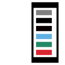</td><td>プロパティ</td><td>右上プロパティパネルの表示/非表示</td></tr>
                    <tr><td>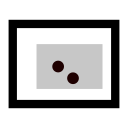</td><td>ミニマップ</td><td>右下ミニマップパネルの表示/非表示</td></tr>
                    <tr><td rowspan="2">3Dビュー</td><td></td><td>ビューキューブ</td><td>ビューキューブの表示/非表示</td></tr>
                    <tr><td>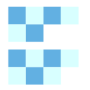</td><td>ツール</td><td>右側ツールボタン群の表示/非表示</td></tr>
                    <tr><td>説明用</td><td></td><td>INPUT 表示</td><td>マウス・キーボード入力状態のリアルタイム表示。半透明グラスフィルムのフローティング小ウィンドウとして常時前面に表示され、ドラッグで移動可・本体はクリックスルー（下のキャンバスにクリックが伝わる）。アプリ内のすべてのウィンドウ (水平解析・沈下解析・ダイアログ等) からの入力を自動キャプチャ。プレゼン・操作説明用</td></tr>
                </tbody>
            </table>

            <h4>パネルグループ</h4>
            <p>画面左側・右側のパネル群の表示/非表示を個別に切り替えます。</p>
            <ul>
                <li><strong>データタブ</strong>: 画面左側のデータタブパネル（一般節点・梁要素・杭・根入部・通り心・群杭沈下）の表示/非表示を切り替えます。
                    非表示にすると、メインビューの描画領域が広がります。</li>
                <li><strong>プロパティ</strong>: 画面右上のプロパティパネルの表示/非表示を切り替えます。
                    杭や梁要素を選択すると、そのアイテムの詳細情報（座標、材料、断面、解析結果など）が表示されます。</li>
                <li><strong>ミニマップ</strong>: 画面右下のミニマップパネルの表示/非表示を切り替えます。
                    モデル全体の中で現在のビューポート位置を確認できます。</li>
            </ul>
            <p>
                パネルはドッキング解除（フローティング）や自動非表示（Auto Hide）にすることもできます。
                パネルのタイトルバーを右クリックするとコンテキストメニューが表示され、
                「フローティング」「自動非表示」「閉じる」を選択できます。
                閉じたパネルはこのメニューから再表示できます。
            </p>

            <h4>3Dビューグループ</h4>
            <p>メインビュー上の3D操作用UIの表示/非表示を切り替えます。</p>
            <ul>
                <li><strong>ビューキューブ</strong>: 画面右上のビューキューブ（3D方向表示・回転操作用の立方体UI）の表示/非表示を切り替えます。
                    ビューキューブの面・辺・頂点をクリックすると、対応する視点に自動回転します。</li>
                <li><strong>ツール</strong>: 画面右側のツールボタン群（ビュー切替ボタン、解析ショートカットボタン、荷重ケース選択など）の表示/非表示を切り替えます。</li>
            </ul>

            <h4>説明用グループ</h4>
            <ul>
                <li><strong>INPUT 表示</strong>: 画面右下にマウス・キーボードの入力状態をリアルタイム表示します。
                    操作説明やプレゼンテーション時に使用します。通常の作業時は非表示で構いません。</li>
            </ul>

            <h3 id="h-ヘルプメニュー">ヘルプメニュー</h3>
            <p>ヘルプとプログラム検証に関するタブです。</p>
            <table class="table-doc">
                <thead><tr><th style="text-align:center">アイコン</th><th style="text-align:center">ボタン</th><th style="text-align:center">ショートカット</th><th>説明</th></tr></thead>
                <tbody>
                    <tr><td></td><td>ヘルプ</td><td>F1</td><td>このヘルプドキュメントを開きます</td></tr>
                    <tr><td></td><td>ヘルプ チャット</td><td>-</td><td>質問テキストを入力してヘルプ全文を検索する簡易チャットウィンドウを開きます (詳細は本節の「ヘルプ チャット (オフライン全文検索)」参照)</td></tr>
                    <tr><td></td><td>クイックヒント</td><td>Shift+F1</td><td>ON にすると、画面の各所に手順の吹き出しが出ます。番号は本書「クイックスタートガイド」の Step と対応します</td></tr>
                    <tr><td></td><td>ショートカット</td><td>Ctrl+/</td><td>全ショートカットキーの一覧ウィンドウを開きます</td></tr>
                    <tr><td></td><td>検証</td><td>-</td><td>基礎指針等の設計例によるプログラム計算結果の検証ウィンドウを開きます</td></tr>
                </tbody>
            </table>

            <h4>ヘルプ チャット (オフライン全文検索)</h4>
            <p>
                リボン「ヘルプ」タブの「<strong>ヘルプ チャット</strong>」ボタンから、本ヘルプ文書 (help.html) を対象とした
                簡易チャット形式の検索ウィンドウを開きます。下端のテキストボックスに知りたい用語や機能名を入力して
                <strong>Enter</strong> または「送信」ボタンで検索すると、関連する見出し (h2/h3/h4) が最大 6 件表示されます。
                各候補の見出し名 (青字リンク) をクリックすると、ヘルプウィンドウ側で該当箇所へジャンプし、
                見出しが黄色くハイライトされます。
            </p>
            <p>
                検索方式はオフライン専用 (ネットワーク不要) の <strong>キーワード一致</strong> です。
                日本語は文字 bigram (例: 「杭頭」「頭の」) で索引付けし、英数字 (例: 「M-θ」) は単語単位で扱います。
                「して」「です」「とは」など共通語は重み付けから除外、見出しに含まれるキーワードはタイトル本文より高スコア化されます。
                LLM (大規模言語モデル) 連携はないため、自然な会話による解説生成は行われません。
                マニュアル全体を読まずに目的の章節を素早く見つけたい初心者ユーザー向けの機能です。
            </p>

            <h4 style="font-weight: bold;">「設計例によるプログラムの検証」ウィンドウでの図表操作</h4>
            <p>
                検証ウィンドウ内の各図・表はクリックすると拡大ポップアップ（複数同時表示可）で表示されます。<br>
                ポップアップ上では以下の操作が可能です:
            </p>
            <ul>
                <li><strong>マウスホイール</strong>: カーソル位置を基準に画像を拡大・縮小（上=拡大 ×1.15、下=縮小 ÷1.15）</li>
                <li><strong>左ドラッグ（画像上）</strong>: 画像を掴んでパン（拡大時にスクロールバーが出る領域を任意の方向にずらせます）</li>
                <li><strong>ヘッダドラッグ</strong>: ポップアップウィンドウ自体を移動</li>
                <li><strong>ポップアップ右上 ×</strong> / <strong>Esc キー</strong>: 最前面のポップアップを閉じる</li>
                <li><strong>右下角ドラッグ</strong>: ポップアップウィンドウのサイズ変更</li>
            </ul>

        </section>
        <section id="new-features">
            <h2 id="h-便利な機能">便利な機能</h2>

            <h3 id="h-プロパティパネル">プロパティパネル</h3>
            <p>
                画面右側のドッキングパネルに「プロパティ」パネルが表示されます。
                メインビューで杭節点・一般節点・梁要素を選択すると、選択したアイテムのプロパティが一覧表示されます。
            </p>
            <h4>杭を選択した場合</h4>
            <p>座標、杭体No、地盤No、杭長、群杭係数、杭間隔比、ΔZc、軸力が表示されます。</p>
            <ul>
                <li><strong>杭長</strong>: 杭体セグメントの合計長さ</li>
                <li><strong>軸力 VL</strong>: 常時合計軸力</li>
                <li><strong>軸力 L1-1 ～ L1-4</strong>: レベル1地震時の各ケース軸力</li>
                <li><strong>軸力 L2-1 ～ L2-4</strong>: レベル2地震時の各ケース軸力</li>
            </ul>
            <p>複数の杭を選択した場合、杭長（合計）および軸力（合計）が表示されます。</p>

            <h4>梁要素を選択した場合</h4>
            <p>要素No、節点No、材料No、断面No、幅、高さ、ヤング率、横弾性係数、角度β、部材長が表示されます。</p>
            <ul>
                <li><strong>ヤング率・横弾性係数</strong>: N/mm²単位（桁区切りカンマ付き）で表示</li>
                <li><strong>部材長</strong>: I端・J端の節点座標から算出した3D距離</li>
            </ul>
            <p>複数の梁要素を選択した場合、部材長（合計）が表示されます。共通するプロパティ値は表示され、異なる値は「(various)」と表示されます。</p>

            <p>
                選択中のアイテムのプロパティ値を左ペインのデータグリッドで変更すると、プロパティパネルの表示もリアルタイムに更新されます。
            </p>
            <p>
                プロパティパネルの項目が多い場合は、スクロールバーが自動表示されます。
                パネルは閉じる・ドッキング解除・自動非表示が可能です。閉じた場合は「ウィンドウ」メニューから再表示できます。
            </p>

            <h3 id="h-ミニマップ">ミニマップ</h3>
            <p>
                プロパティパネルの下部に「ミニマップ」パネルが表示されます。
                モデル全体の鳥瞰図が描画され、杭節点・一般節点・梁要素の位置関係を俯瞰的に確認できます。
            </p>
            <ul>
                <li>選択中の節点は赤色で強調表示されます</li>
                <li>現在のビュー範囲が灰色の矩形で表示されます</li>
                <li>ビューの回転・ズーム操作に連動してリアルタイムに更新されます</li>
            </ul>
            <p>
                ミニマップはドッキング解除・閉じる・自動非表示が可能です。閉じた場合は「ウィンドウ」メニューから再表示できます。
            </p>

            <h3 id="h-ホバーハイライト">ホバーハイライト</h3>
            <p>
                メインビュー上でマウスカーソルを杭節点・一般節点・梁要素に近づけると、
                対象がハイライト表示（色変化）されます。
                これにより、クリック前に選択対象を視覚的に確認できます。
            </p>

            <h3 id="h-グラフ上のマーカー近傍ポップアップ">グラフ上のマーカー近傍ポップアップ</h3>
            <p>
                地盤ウィンドウや解析結果グラフウィンドウのプロット上でマウスカーソルをマーカーに近づけると、
                <strong>最も近いマーカーの詳細</strong>がカーソル右下の小さなポップアップに表示されます。
            </p>
            <ul>
                <li>地盤ウィンドウ: 凡例 (例「L2 液状化」) + X 軸値 (例「地盤変位(mm) = 175.00」) + Y 軸値 (例「GL基準深さ(m) = -10.50」)</li>
                <li>解析結果グラフ: 荷重ケース・組合せ・液状化・杭番号など詳細属性も表示</li>
                <li>プロット領域外にカーソルが出ると自動的に閉じます</li>
            </ul>

            <h3 id="h-トースト通知">トースト通知</h3>
            <p>
                ファイル保存、解析完了、エラー発生など、主要な操作の結果がトースト通知（画面右下のポップアップ）で表示されます。
                通知は数秒後に自動的に消えます。
            </p>

            <h3 id="h-データのエクスポート機能">データのエクスポート機能</h3>
            <h4>CSVエクスポート</h4>
            <p>
                グラフウィンドウ上で右クリックし、「CSVとして保存...」を選択すると、
                グラフに表示されているデータをCSV形式でエクスポートできます。
                「CSVコピー」を選択すると、タブ区切りテキストとしてクリップボードにコピーされ、Excelに直接貼り付けられます。
            </p>
            <p>
                エクスポートしたCSVファイルは、Excelなどの表計算ソフトで開き、
                独自のグラフ作成や詳細な分析に活用できます。
            </p>

            <h3 id="h-画像コピー・画像保存">画像コピー・画像保存</h3>
            <p>
                メインビューおよびグラフウィンドウで右クリックすると、以下の操作が可能です。
            </p>
            <ul>
                <li><strong>画像コピー(x1.0)/(x2.0)</strong>：メインビューの表示内容をクリップボードにコピーします。そのままWordやPowerPointに貼り付けられます。</li>
                <li><strong>画像保存(x1.0)/(x2.0)</strong>：メインビューの表示内容をPNG画像ファイルとして保存します。</li>
                <li><strong>画像をコピー</strong>：グラフ（ScottPlot）の表示内容を2倍解像度でクリップボードにコピーします。</li>
                <li><strong>画像を保存...</strong>：グラフ（ScottPlot）の表示内容をPNG画像ファイルとして保存します。</li>
            </ul>
            <p>
                x2.0を選択すると2倍解像度で出力されます。
            </p>

            <h3 id="h-諸元テーブルのコピー・エクスポート">諸元テーブルのコピー・エクスポート</h3>
            <p>
                杭断面編集ウィンドウおよび杭頭編集ウィンドウの諸元テーブル上で右クリックすると、以下の操作が可能です。
            </p>
            <ul>
                <li><strong>クリップボードにコピー</strong>：テーブル全体をタブ区切りテキストとしてクリップボードにコピーします。Excelに直接貼り付けられます。</li>
                <li><strong>CSVエクスポート</strong>：テーブルデータをCSVファイルとして保存します。</li>
            </ul>

            <h3 id="h-3Dビュー操作">3Dビュー操作</h3>
            <h3 id="h-ビューキューブ">ビューキューブ</h3>
            <p>
                画面右上のビューキューブを使用すると、素早くビューを切り替えられます。
            </p>
            <ul>
                <li><strong>面クリック</strong>: 正面、上面、右側面など定義済みビューに切替</li>
                <li><strong>辺クリック</strong>: 対角方向からのビューに切替</li>
                <li><strong>頂点クリック</strong>: アイソメトリックビューに切替</li>
                <li><strong>右ボタンドラッグ</strong>: ビューキューブ上で右ボタンをドラッグすると、自由にビューを回転できます。
                    メインビュー上での右ボタンドラッグと同じ操作ですが、ビューキューブ上で操作すると
                    現在の視点方向を立方体の向きで直感的に把握しながら回転できます。</li>
            </ul>

            <h3 id="h-Excelとの連携">Excelとの連携</h3>
            <p>
                データグリッドでは、Excelとの相互コピー＆ペーストが可能です。
            </p>
            <ul>
                <li><strong>貼り付け</strong>: Excelで範囲選択→コピー→データグリッドでセル選択→Ctrl+V</li>
                <li><strong>コピー</strong>: データグリッドで範囲選択→Ctrl+C→Excelでペースト</li>
            </ul>


            <h3 id="h-解析結果の保存と復元">解析結果の保存と復元</h3>
            <p>
                手動保存では、<strong>既定で解析結果も含めて</strong>保存します。ファイルを開き直したときに
                再計算なしで前回の結果を確認できるようにするためです。
                解析結果を含めるかどうかは、ファイル(F)メニュー →「オプション」タブの
                <strong>保存オプション</strong>で、<strong>手動保存</strong>と<strong>自動保存</strong>それぞれ独立に切り替えられます。
            </p>
            <table class="table-doc">
                <thead>
                    <tr>
                        <th>チェックボックス</th>
                        <th>対象</th>
                        <th>ON にしたときの動作</th>
                    </tr>
                </thead>
                <tbody>
                    <tr>
                        <td><strong>手動保存に解析結果も含める</strong></td>
                        <td>Ctrl+S / 名前を付けて保存 (Ctrl+Shift+S)</td>
                        <td>手動保存時に入力データ + 解析結果を保存します</td>
                    </tr>
                    <tr>
                        <td><strong>自動保存に解析結果も含める</strong></td>
                        <td>定期的に実行される自動保存</td>
                        <td>自動保存時に入力データ + 解析結果を保存します</td>
                    </tr>
                </tbody>
            </table>
            <p>
                <strong>手動保存は既定 ON、自動保存は既定 OFF</strong> です。
                自動保存は定期的に繰り返し実行されるため、結果込みにすると数十 MB の書込が何度も発生することから
                既定を分けています。
                OFF にすると入力データのみ（軽量高速、数百 KB 程度）になります。結果を含めると規模により
                <strong>数十 MB 級</strong>まで肥大し、読み書きに時間がかかる場合があります。
                手動・自動は完全に独立しているため、「配布用の手動保存は軽量に・作業中の自動保存だけ結果込みで保険をかける」
                といった使い分けも可能です。
            </p>
            <div class="note">
                <p>
                    このチェックの状態は<strong>アプリの設定として保存され、次回起動時にも引き継がれます</strong>
                    （保存先は <code>LocalAppData</code> の <code>PileDesign\user_settings.json</code>）。
                    プロジェクトファイルではなく、この PC のこのユーザーに紐づく設定です。
                </p>
                <p>
                    なお<strong>単杭沈下・群杭沈下の結果は入力データの一部</strong>として保持されるため、
                    このチェックに関わらず常に保存されます。チェックで切り替わるのは
                    <strong>杭要素分割データ・水平解析結果・単杭沈下解析（基礎梁考慮）結果</strong>です。
                </p>
            </div>
            <p>解析結果を含めて保存したとき、以下の解析結果が保存されます。</p>
            <ul>
                <li><strong>杭要素分割データ</strong>: FEMモデルの節点・梁要素・地盤ばね等</li>
                <li><strong>水平解析結果</strong>: 各荷重ケースの梁応力・節点変位・地盤反力等</li>
                <li><strong>単杭沈下解析結果</strong>: 各杭の荷重-沈下関係</li>
                <li><strong>群杭沈下解析結果（一般 / 反復）</strong>: 群杭沈下グリッドデータ + 各杭頭沈下量 + 反復のとき梁節点変位/梁応力 (CaseRecord として複数ケース保存)</li>
                <li><strong>単杭沈下解析（基礎梁考慮）結果</strong>: 杭反力・節点変位・梁応力等</li>
            </ul>
            <p>
                解析結果を含むファイルを再度開くと、解析結果が自動的に復元され、解析実行済みの状態
                (テーブル出力・グラフ・ログボタンが有効) に復帰します。再解析なしに結果の確認・
                グラフ表示・検定を行えます。
            </p>
            <p style="color:#555; font-size:0.9em;">
                ※ <strong>自動保存</strong>は定期的に繰り返し実行されます。「自動保存に解析結果も含める」を ON にすると、
                その都度大容量の書込が発生し、ディスク負荷・遅延が大きくなる場合があります。
                通常は既定どおり手動保存側のみ ON にして、節目で明示的に解析結果込みの保存を行う運用を推奨します。<br>
                ※ 解析結果を含む大容量ファイルは、書込中にアプリが異常終了するとファイルが破損するリスク窓が広がります。
                重要なデータは入力のみの軽量ファイルとしても別途保存しておくことを推奨します。
            </p>

            <h3 id="h-解析結果の保護">解析結果の保護</h3>
            <p>
                水平解析・単杭沈下解析・群杭沈下解析（一般 / 反復）・単杭沈下解析（基礎梁考慮）の実行後にモデルを変更する操作（杭の追加・削除、梁要素の生成・分割、節点の追加・変換、群杭係数の再計算など）を行うと、
                「解析結果が削除されます。続けますか？」という確認ダイアログが表示されます。
            </p>
            <ul>
                <li>「はい」を選択すると、解析結果がリセットされ操作が実行されます</li>
                <li>「いいえ」を選択すると、操作がキャンセルされ解析結果が保持されます</li>
            </ul>
            <p>
                これにより、意図しない解析結果の消失を防ぐことができます。
            </p>
        </section>
        <section id="faq">
            <h2 id="h-よくある質問-FAQ">よくある質問 (FAQ)</h2>

            <h3 id="h-入力に関する質問">入力に関する質問</h3>

            <h4>Q: 複数種類の杭を混在させることはできますか？</h4>
            <p>
                <strong>A:</strong> はい、可能です。「杭体」タブで複数の杭体を定義し、
                「杭」→「配置」タブで各杭に適用する杭体番号を指定してください。
            </p>

            <h4>Q: 地盤条件が杭ごとに異なる場合はどうすればよいですか？</h4>
            <p>
                <strong>A:</strong> 「地盤」タブで複数の地盤モデルを定義し、
                各杭に適用する地盤番号を指定してください。建物範囲内で地盤条件が変化する場合に対応できます。
            </p>

            <h4>Q: 既製コンクリート杭（PHC杭など）の断面性能はどのように入力しますか？</h4>
            <p>
                <strong>A:</strong> 「杭体」→「既製コンクリート杭」を選択すると、
                標準的な杭断面のデータベースから選択できます。
                カスタム断面は、現状対応しておりません。
            </p>

            <h3 id="h-解析に関する質問">解析に関する質問</h3>

            <h4>Q: 非線形解析が収束しない場合はどうすればよいですか？</h4>
            <p>
                <strong>A:</strong> 以下を確認してください。
            </p>
            <ul>
                <li>荷重が極端に大きくないか（杭の支持力を大幅に超過していないか）</li>
                <li>地盤条件（特にE₀値）が適切か</li>
                <li>杭頭拘束条件が適切に設定されているか</li>
            </ul>

            <h4>Q: 液状化地盤の検討はどのように行いますか？</h4>
            <p>
                <strong>A:</strong> 「地盤」ウィンドウでFL法による液状化判定を行い、
                低減係数（α、β）を計算します。これらの値は自動的に解析に反映されます。
                応答変位法による地盤変位も考慮できます。
            </p>

            <h4>Q: 群杭効果はどのように考慮されますか？</h4>
            <p>
                <strong>A:</strong> 水平解析では、基礎指針'19に基づき
                杭間隔比(R/B)と杭本数から自動計算値を 「群杭係数グラフ確認」 で確認できますが、適用するには手動での設定が必要です。
            </p>

            <h4>Q: 杭の極限先端支持力度 \(q_p\) が想定より小さくなります</h4>
            <p>
                <strong>A:</strong> \(q_p\) は杭工法と杭先端が属する地層の土質分類によって式が変わります。
                場所打ちコンクリート杭で先端層が <strong>粘性土</strong> の場合は \(q_p = 6 C_u\) となり、N 値ではなく <strong>粘着力 \(C_u\)</strong> で決まります。
                N 値が大きくても \(C_u\) が小さければ \(q_p\) も小さくなります。<br>
                算定式の一覧と確認ポイントは <span class="xref"><a href="#ultimate-toe-bearing">「極限先端支持力」</a>の項を参照してください</span>。
            </p>

            <h3 id="h-出力に関する質問">出力に関する質問</h3>

            <h4>Q: グラフのデータを取得するにはどうすればよいですか？</h4>
            <p>
                <strong>A:</strong> グラフ上で右クリック→「CSVとして保存...」を選択してください。
                グラフに表示されている全てのデータ系列がCSV形式でエクスポートされます。
            </p>

            <h4>Q: 計算書（レポート）のフォーマットをカスタマイズできますか？</h4>
            <p>
                <strong>A:</strong> 現時点では、レポートフォーマットのカスタマイズ機能は限定的です。
                出力されたWord文書を編集して調整してください。
            </p>

            <h3 id="h-トラブルシューティング">トラブルシューティング</h3>

            <h4>Q: 「杭下端が地盤の最下層より下にあります」と表示されます</h4>
            <p>
                <strong>A:</strong> 杭の長さ（杭体の全区間長の合計）が地盤の深さを超えています。
                地盤の最下層の下端標高を杭先端より深く設定するか、杭の長さを短くしてください。
            </p>

            <h4>Q: 杭要素分割ウィンドウで「保存」が押せません</h4>
            <p>
                <strong>A:</strong> すべての杭体-地盤の組合せについて杭要素分割状態を確認（表示）する必要があります。
                左側のランプが全て緑色になっていることを確認してください。
            </p>

            <h4>Q: 水平解析で「荷重がゼロ」と警告されます</h4>
            <p>
                <strong>A:</strong> 荷重ケースウィンドウで上部構造慣性力または基礎部慣性力を入力してください。
                荷重がゼロのケースは解析をスキップします。
            </p>

            <h4>Q: 解析が収束しない場合の対処法は？</h4>
            <p>
                <strong>A:</strong> 以下を段階的に試してください。
            </p>
            <ol>
                <li><strong>解析ステップ数を増やす</strong>：レベル2で16～32程度に設定します。荷重を小さく分けて段階的に載荷することで安定します。</li>
                <li><strong>安定化手法を変更する</strong>：「ラインサーチ」を選択すると、発散やリミットサイクルを防ぐ効果があります。</li>
                <li><strong>「反復なし」を有効にする</strong>：各ステップ1回のみ解析する最も安定な方法です。ステップ数を32～64に増やしてください。</li>
                <li><strong>入力値を確認する</strong>：荷重が杭の支持力を大幅に超えていないか、地盤のN値が極端でないか確認してください。</li>
            </ol>

            <h4>Q: 地盤変位を与えずに水平解析を行うことができますか？</h4>
            <p>
                <strong>A:</strong> できます。「地盤」ウィンドウ →「地盤変位」タブ上部の「地盤変位:」で
                <strong>「考慮しない」</strong>を選択してください。この場合、水平解析では杭周地盤の強制変位を
                全層 0 として扱い、<strong>杭頭水平力のみ</strong>で解析します。
            </p>
            <ul>
                <li>地盤変位の影響を切り分けて確認したいスタディに有用です（例: 杭頭水平力の寄与のみを把握する）。</li>
                <li>「考慮しない」を選ぶと、地盤ウィンドウの地盤変位グラフは空 (土層背景のみ) となり、メイン画面の地盤変位表示・docx 計算書の地盤変位グラフも出力されません。</li>
                <li>地盤変位の与え方は <strong>「基礎指針'19 4.5自動計算」/「任意入力」/「考慮しない」</strong>の 3 モードから選べます。詳細は
                    <span class="xref"><a href="#section-ground-disp-modes">クイックスタートガイド「地盤変位タブの 3 モード」</a></span> を参照してください。</li>
            </ul>

            <h4>Q: 入力を変更したら解析結果が消えてしまいました</h4>
            <p>
                <strong>A:</strong> 杭配置、地盤条件、杭体仕様など構造モデルに影響する変更を行うと、
                既存の杭要素分割と解析結果はリセットされます。これは古い条件の結果が新しい条件と整合しないためです。
                変更前に Ctrl+Z（元に戻す）で復帰できます。
                なお、<strong>「オプション」タブの保存オプション（手動／自動保存に解析結果も含める）を ON にして</strong>変更前にファイル保存していた場合は、
                そのファイルを再度開くことで解析結果を含む状態に復帰できます (OFF で保存した場合は入力のみが復帰し、再解析が必要です)。
            </p>

            <h4>Q: ファイルを開くとエラーが発生します</h4>
            <p>
                <strong>A:</strong> ファイルが破損している可能性があります。
                自動保存ファイル（_autosave_付きのファイル）が自動保存フォルダに残っている場合は、
                そちらを開いてみてください。
            </p>
            <p>
                自動保存ファイルの保存先: <code>%LocalAppData%\PileDesign\AutoSave\</code><br>
                （通常は <code>C:\Users\（ユーザー名）\AppData\Local\PileDesign\AutoSave\</code>）<br>
                エクスプローラーのアドレスバーに <code>%LocalAppData%\PileDesign\AutoSave</code> と入力すると直接開けます。
            </p>
        </section>
        </section>

        <section id="design-practice-section">
            <h2 id="design-practice">設計実務上の扱いについて</h2>

            <div class="warning" style="background:#FFFAEB; border:1px solid #E0A030; padding:8px 12px; margin:8px 0; color:#8A4500;">
                ⚠ <strong>注意</strong>：本プログラムが参照する文献（特に日本建築学会「基礎部材の強度と変形性能」2022 など）には、
                現行の法令（<strong>平13国交告第1113号 第8</strong>）や大臣認定製品の扱いと<strong>そぐわない部分</strong>があります。
                実務では、以下の差異を理解したうえで、設計者の判断で運用してください。
            </div>

            <h3 id="h-場所打ち杭のコンクリート強度について">場所打ち杭のコンクリート強度について</h3>

            <h4>告示 平13国交告第1113号(第8) の許容応力度</h4>
            <p>告示では、場所打ちコンクリート杭のコンクリートの許容応力度を次のように規定しています（$F_c$ はコンクリートの設計基準強度）。</p>
            <div class="formula-block">
                <div class="formula-left">
                    <p>長期許容<strong>圧縮</strong>応力度：[1] $\dfrac{F_c}{4}$、[2] $\min\!\left(\dfrac{F_c}{4.5},\ 6\right)$ のうち該当区分の値 &emsp;（短期はその <strong>2 倍</strong>）</p>
                    <p>長期許容<strong>せん断</strong>応力度：[1] $\min\!\left(\dfrac{F_c}{40},\ \dfrac{3}{4}\!\left(0.49+\dfrac{F_c}{100}\right)\right)$、[2] $\min\!\left(\dfrac{F_c}{45},\ \dfrac{3}{4}\!\left(0.49+\dfrac{F_c}{100}\right)\right)$ &emsp;（短期はその <strong>1.5 倍</strong>）</p>
                </div>
                <div class="formula-right">平13国交告第1113号 第8</div>
            </div>
            <p style="font-style: italic; color: #666;">
                ※ [1]／[2] は品質管理の程度による区分。せん断は $F_c \geq 21$ の範囲では実質 $\tfrac{3}{4}(0.49+F_c/100)$ が支配します。
            </p>

            <h4>「基礎部材の強度と変形性能」の圧縮応力度と告示との差</h4>
            <p>
                「基礎部材の強度と変形性能」では、場所打ち杭コンクリートの圧縮応力度を
                使用限界 $\tfrac13\,\xi F_c$、損傷限界 $\tfrac23\,\xi F_c$ としています（$\xi$ は施工品質管理係数）。
            </p>
            <div id="xi075" class="warning" style="background:#FFFAEB; border:1px solid #E0A030; padding:8px 12px; margin:8px 0; color:#8A4500;">
                ⚠ <strong>$\xi \leq 0.75$ としなければ、現行の告示1113号(第8) を満たしたことになりません。</strong><br>
                （損傷限界圧縮応力度 $\tfrac23\,\xi F_c$ を、告示の短期許容圧縮応力度 $2\times F_c/4$ 以下に収めるには $\tfrac23\,\xi \leq \tfrac12$、すなわち $\xi \leq 0.75$ が必要。）
            </div>

            <h4 id="shear-comp">せん断応力度の大小関係（告示 vs 基礎部材の強度と変形性能）</h4>
            <p>
                「基礎部材の強度と変形性能」のせん断は、許容せん断“応力度”ではなく<strong>せん断耐力式</strong>（RC 規準 2018 系）で与えられます
                （「場所打ち鉄筋コンクリート杭の使用限界／損傷限界せん断力」の項を参照）。応力度に換算するには $\tau = Q/(b\,j)$ とします。
            </p>
            <div class="formula-block">
                <div class="formula-left">
                    <p>使用限界 $Q_s = \beta_1 \cdot \dfrac{2}{3} \cdot \dfrac{0.065\,k_c(49.0+\xi F_c)}{M/(Qd)+1.7}\left(1+\dfrac{\sigma_0}{14.7}\right) b\,j$ &emsp;($\beta_1=0.9$)</p>
                    <p>損傷限界 $Q_d = \beta \cdot \dfrac{0.065\,k_c(49.0+\xi F_c)}{M/(Qd)+1.7}\left(1+\dfrac{\sigma_0}{14.7}\right) b\,j$</p>
                </div>
                <div class="formula-right">強度と変形性能 3.3 / 3.5</div>
            </div>
            <p>
                基礎部材の使用限界・損傷限界せん断（応力度換算）は、告示1113号(第8) の長期・短期許容せん断応力度より
                <strong>概ね大きく（＝告示より緩く）</strong>なります。差は、せん断スパン比 $M/(Qd)$ が小さいほど、
                軸応力度 $\sigma_0$ が大きいほど拡大し、$\xi$ を下げるほど縮小します。
                <strong>圧縮側で $\xi \leq 0.75$ に整合させても、せん断はなお基礎部材の方が緩くなり得ます</strong>
                （特に $M/(Qd)$ が小さい・軸力が大きい領域）。
            </p>
            <p>
                基本設定の「場所打ちRC杭の許容せん断」で「<strong>告示1113(第8)の許容せん断応力度による</strong>」を選択すると、
                場所打ちRC杭の使用限界・損傷限界せん断を告示の $Q=f_s\,b\,j$
                （長期 $f_s=\min(F_c/40\,［区分2 は F_c/45］,\ (3/4)(0.49+F_c/100))$・短期はその1.5倍）に切替えられます
                （Q-N は軸力・$M/(Qd)$ 非依存で水平。使用/損傷限界の Q-N のみ変更、解析は保持）。
            </p>
            <table class="table-doc">
                <caption>せん断許容応力度の試算比較（$F_c=27$, $k_c=1.0$, $\sigma_0=0$、単位 N/mm²）</caption>
                <thead>
                    <tr><th></th><th>$M/(Qd)=1$</th><th>$M/(Qd)=3$</th></tr>
                </thead>
                <tbody>
                    <tr><td>告示 長期 $f_s$</td><td>0.570</td><td>0.570</td></tr>
                    <tr><td>基礎部材 使用限界 $\tau_s$（$\xi=1.0$）</td><td>≈1.10</td><td>≈0.63</td></tr>
                    <tr><td>基礎部材 使用限界 $\tau_s$（$\xi=0.75$）</td><td>≈1.00</td><td>≈0.57</td></tr>
                    <tr><td>告示 短期（=1.5×長期）</td><td>0.855</td><td>0.855</td></tr>
                    <tr><td>基礎部材 損傷限界 $\tau_d$（$\xi=1.0$, $\beta=1$）</td><td>≈1.83</td><td>≈1.05</td></tr>
                    <tr><td>基礎部材 損傷限界 $\tau_d$（$\xi=0.75$, $\beta=1$）</td><td>≈1.67</td><td>≈0.96</td></tr>
                </tbody>
            </table>
            <p style="font-style: italic; color: #666;">
                ※ 数値は代表値です。実際の値は $M/(Qd)$・$\sigma_0$・$k_c$・$\xi$・$F_c$ に依存します。
            </p>

            <h3 id="h-各杭種：告示1113号第8-許容応力度と-本プログラムの使用限界・損傷限界の比較">各杭種：告示1113号(第8) 許容応力度と 本プログラムの使用限界・損傷限界の比較</h3>
            <p>
                告示は許容“応力度”、本プログラム（基礎部材の強度と変形性能）は“耐力”で与えられるため、
                本プログラム側は<strong>応力度に換算</strong>して比較します（曲げは各材料の縁応力度、せん断は $\tau=Q/(b\,j)$ 等）。
                $F$ は鋼材の設計基準強度、$F_c$ はコンクリートの設計基準強度、$\xi$ は施工品質管理係数。
            </p>
            <p style="font-style: italic; color: #666;">
                ※ 曲げの検定は、断面の各材料が下表①②の使用限界・損傷限界応力度に達する状態として算定されます（曲げ応力度の独立表は設けていません）。
            </p>
            <div class="warning" style="background:#FFFAEB; border:1px solid #E0A030; padding:8px 12px; margin:8px 0; color:#8A4500;">
                ⚠ 告示側の値は、特に既製杭（PHC/PRC/SC）・鋼管杭では
                <strong>大臣認定・JIS/規格・製品ごと</strong>に依存する場合があります。実際の告示条文・認定内容でご確認ください。
                本プログラム側（使用限界・損傷限界）はコード実装どおりの値です。
            </div>

            <h4>① コンクリートの許容圧縮応力度（N/mm²）</h4>
            <table class="table-doc">
                <thead>
                    <tr><th>杭種（コンクリート）</th><th>告示 長期</th><th>告示 短期</th><th>本プログラム 使用限界</th><th>本プログラム 損傷限界</th></tr>
                </thead>
                <tbody>
                    <tr><td>場所打ち（RC杭／鋼管コンクリート杭RC部／鋼管杭充填部）</td><td>[1] $F_c/4$、[2] $\min(F_c/4.5,\ 6)$</td><td>長期の 2 倍</td><td>$\tfrac13\,\xi F_c$</td><td>$\tfrac23\,\xi F_c$</td></tr>
                    <tr><td>PHC杭</td><td>$F_c/3.5$</td><td>長期の 2 倍（$2F_c/3.5$）</td><td>$F_c/3.5$</td><td>$2F_c/3.5$</td></tr>
                    <tr><td>PRC杭</td><td>$F_c/3.5$</td><td>長期の 2 倍（$2F_c/3.5$）</td><td>$F_c/3.5$</td><td>$2F_c/3.5$</td></tr>
                    <tr><td>SC杭</td><td>$F_c/3.5$</td><td>長期の 2 倍（$2F_c/3.5$）</td><td>$F_c/3.5$</td><td>$2F_c/3.5$</td></tr>
                </tbody>
            </table>
            <p style="font-style: italic; color: #666;">
                ※ 場所打ちは $\xi \leq 0.75$ のとき損傷限界 $\tfrac23\xi F_c$ が告示短期（$2\times F_c/4$）以下となり整合します
                （<a href="#xi075">前掲</a>）。基本設定の「場所打ち杭の許容圧縮応力度」で「<strong>告示1113(第8)による</strong>」を選択すると、
                場所打ちの使用/損傷限界圧縮を告示（$[1]\,F_c/4$ ／ $[2]\,\min(F_c/4.5,6)$・短期2倍）に切替えられます（使用/損傷限界NMのみ変更、解析は保持）。
                <strong>PHC・PRC・SC 杭は 使用限界＝告示長期（$F_c/3.5$）・損傷限界＝告示短期（$2F_c/3.5$）で一致</strong>します。
                既製杭コンクリートの引張は、使用限界 $-0.56\sqrt{F_c}/2$（PHC・PRC）、
                損傷限界 $-0.56\sqrt{F_c}$（PHC）／無視（PRC・SC）で、告示の扱いと別途要照合。
            </p>

            <h4>② 鋼材（鋼管・鉄筋・PC鋼材）の許容応力度（N/mm²）</h4>
            <table class="table-doc">
                <thead>
                    <tr><th>材料（杭種）</th><th>告示 長期</th><th>告示 短期</th><th>本プログラム 使用限界</th><th>本プログラム 損傷限界</th></tr>
                </thead>
                <tbody>
                    <tr><td>鋼管 圧縮・引張（場所打ち鋼管コンクリート杭／SC杭／鋼管杭）</td><td>$F/1.5$</td><td>$F$</td><td>$\pm F/1.5$</td><td>$\pm F$</td></tr>
                    <tr><td>鉄筋 引張・圧縮（場所打ちRC／場所打ち鋼管コンクリート杭RC部／PRC）</td><td>$\min(\sigma_y/1.5,\ 215\,[D\le25]\text{／}195\,[D>25])$</td><td>$\sigma_y\ (=F)$</td><td>$\min(\sigma_y/1.5,\ 215\,[D\le25]\text{／}195\,[D>25])$</td><td>$\sigma_y$</td></tr>
                    <tr><td>PC鋼材（PHC／PRC）</td><td>-</td><td>-</td><td>-</td><td>-</td></tr>
                </tbody>
            </table>
            <p style="font-style: italic; color: #666;">
                ※ <strong>鋼管（鋼材）は告示と一致</strong>：長期 $F/1.5$＝使用限界、短期 $F$＝損傷限界。
                <strong>鉄筋の使用限界は RC 規準の長期許容引張応力度</strong> $\min(\sigma_y/1.5,\ 215[D\le25]/195[D>25])$
                <strong>に整合させており、告示長期と一致</strong>します（従来の一律 195 から変更）。
                損傷限界は $\sigma_y$（＝告示短期）。なお、鉄筋の許容応力度は告示1113号 第8 ではなく RC規準／告示の鉄筋の許容応力度規定によります。
                PC鋼材は本比較では対象外（—）としています。
            </p>

            <h4>③ せん断の許容応力度（N/mm²）</h4>
            <table class="table-doc">
                <thead>
                    <tr><th>杭種（せん断）</th><th>告示 長期</th><th>告示 短期</th><th>本プログラム 使用限界（応力度換算）</th><th>本プログラム 損傷限界（応力度換算）</th></tr>
                </thead>
                <tbody>
                    <tr><td>場所打ち鉄筋コンクリート杭（コンクリート）</td><td>$\min\!\big(\tfrac{F_c}{40}\ \text{or}\ \tfrac{F_c}{45},\ \tfrac34(0.49+\tfrac{F_c}{100})\big)$</td><td>長期の 1.5 倍</td><td>$Q_s/(b\,j)$（式3.3）</td><td>$Q_d/(b\,j)$（式3.5）</td></tr>
                    <tr><td>鋼管 せん断（場所打ち鋼管コンクリート杭／SC杭／鋼管杭）</td><td>$F/(1.5\sqrt3)$</td><td>$F/\sqrt3$</td><td>$F/(1.5\sqrt3)$</td><td>$F/\sqrt3$</td></tr>
                    <tr><td>PHC杭／PRC杭（コンクリート、斜め引張り）</td><td>1.2</td><td>1.8</td><td>-</td><td>-</td></tr>
                </tbody>
            </table>
            <p style="font-style: italic; color: #666;">
                ※ <strong>鋼管のせん断も告示と一致</strong>：長期 $F/(1.5\sqrt3)$＝使用限界、短期 $F/\sqrt3$＝損傷限界。
                一方、場所打ち・既製のコンクリートせん断は本プログラム（せん断耐力式）の方が告示より緩くなり得ます
                （<a href="#shear-comp">前掲のせん断比較表</a>参照）。
                なお、場所打ち鋼管コンクリート杭・鋼管杭のせん断は鋼管が負担し、RC部・充填コンクリートのせん断は評価しません。
            </p>

            <h3 id="h-「建築物の構造関係技術基準解説書」付録1-31-鉄筋コンクリート造部材の力学モデルに関する技術資料-8-コンクリート系くい体">「建築物の構造関係技術基準解説書」付録1-3.1　鉄筋コンクリート造部材の力学モデルに関する技術資料　(8) コンクリート系くい体</h3>
            <p>
                「建築物の構造関係技術基準解説書」の付録1-3には、鉄筋コンクリート造に関する技術資料は、鉄筋コンクリート造部材のモデル化を行う際の取り扱いの一例が示されています。
                くいに関する記述は、2015年版までは、「そのほかの鉄筋コンクリート造部材の終局強度等」として、「鉄筋コンクリート造の柱の終局強度式に準じて」とされていましたが、2020年版から「コンクリート系くい体」というセクションが作られています。
            </p>
            <p>
                2025年版「建築物の構造関係技術基準解説書」では、杭の種類に応じて、以下の文献が例示されています。「基礎部材の強度と変形性能」は、2022年に発刊されましたが、参照されている杭の種類は、学会の文献ではじめて示されたSC杭のみとなっています。なお、許容応力度については、告示　平13国交告第1113号(第8)を使うようにとされています。
            </p>
            <ul>
                <li>23) 日本建築学会「鉄筋コンクリート基礎構造部材の耐震設計指針（案）・同解説」2017</li>
                <li>24) 日本建築学会「基礎部材の強度と変形性能」2022</li>
                <li>25) 日本建築センター「地震力に対する建築物の基礎の設計指針　付・設計例題」1989</li>
            </ul>
            <table class="table-doc">
                <caption>コンクリート系くい体　2025年版解説書で杭種ごとに例示される参考文献（数字は上記 23／24／25 の文献番号）</caption>
                <thead>
                    <tr>
                        <th>杭の種類</th><th>弾性剛性</th><th>許容耐力（曲げ）</th><th>許容耐力（せん断）</th>
                        <th>ひび割れ強度</th><th>剛性低下率</th><th>終局強度（曲げ）</th><th>終局強度（せん断）</th>
                    </tr>
                </thead>
                <tbody>
                    <tr><td>場所打ちコンクリートぐい</td><td>23</td><td>25</td><td>23</td><td>23</td><td>23</td><td>23</td><td>23</td></tr>
                    <tr><td>鋼管巻き場所打ちコンクリートぐい</td><td>23</td><td>23</td><td>-</td><td>23</td><td>23</td><td>23</td><td>23</td></tr>
                    <tr><td>SCくい</td><td>24</td><td>24</td><td>24</td><td>24</td><td>24</td><td>24</td><td>24</td></tr>
                    <tr><td>PHCくい</td><td>23</td><td>25</td><td>23</td><td>23</td><td>23</td><td>23</td><td>23</td></tr>
                    <tr><td>PRCくい</td><td>23</td><td>25</td><td>23</td><td>23</td><td>23</td><td>23</td><td>23</td></tr>
                </tbody>
            </table>
        </section>


        <section id="release-notes">
            <h2 id="h-プログラム更新履歴概要">プログラム更新履歴概要</h2>
            <p>
                お使いのバージョンは、リボンの「ヘルプ」タブ →
                「バージョン情報」で確認できます。
                本書の右上にも表示されています。
            </p>

            <h3 id="h-バージョン番号の読み方">バージョン番号の読み方</h3>
            <p>
                <code>1.0.22-beta</code> のように表記します。
            </p>
            <table class="table-doc">
                <thead>
                    <tr><th>部分</th><th>意味</th></tr>
                </thead>
                <tbody>
                    <tr><td><code>1</code></td><td>大きな作り替えがあったときに上がります。</td></tr>
                    <tr><td><code>0</code></td><td>機能の追加があったときに上がります。</td></tr>
                    <tr><td><code>22</code></td><td>修正・改善のたびに上がります。</td></tr>
                    <tr><td><code>-beta</code></td>
                        <td><strong>試用段階</strong>であることを表します。
                            計算内容・画面ともに変わる可能性があるため、
                            重要な計算書としての使用は想定していません。</td></tr>
                </tbody>
            </table>
            <p>
                <strong>計算結果に影響する変更</strong>には
                <span style="background:#FFF3E0; border:1px solid #FFB300; padding:0 4px;">結果が変わります</span>
                の印を付けています。その版に上げたあと、既存のモデルは再解析して値を確認してください。
            </p>

            <h3 id="h-最近の更新">最近の更新</h3>

            <h4 id="h-1-0-27-beta">1.0.27-beta（2026-08-31）</h4>
            <ul>
                <li><span style="background:#FFF3E0; border:1px solid #FFB300; padding:0 4px;">結果が変わります</span>
                    <strong>杭体の曲げ検定で、安全限界の耐力がまれに小さく評価されることがありました。</strong>
                    断面の N-M 曲線は初回に計算して覚える作りですが、検定は杭要素ごとに並列で回るため、
                    同じ断面の曲線が同時に計算されることがありました。
                    曲線の算出は途中でその断面の軸力の適用範囲を書き換えてから、その値で曲線を切り取ります。
                    同時に走ると互いの途中の値を掴んでしまい、切り取りが狂った曲線ができていました。
                    <br>実測では、安全限界 M が 710.3 kN·m と出るべきところ 664.8 kN·m になる例が
                    19,200 回中 17 回発生しました。<strong>解析結果そのものは正しく、耐力側だけがずれる</strong>ため
                    気づきにくい不具合です。検定結果を確認してください。</li>
                <li><strong>解析結果の表示で、杭を一部だけ表示しても M 図・F 図が全杭ぶん残っていました。</strong>
                    杭の絵は 1 本になるのに応力図が残る、という状態です。
                    解析したあとの結果表示が、解析時点の表示状態を見続けていたためです。
                    表示中の杭・要素・節点のものだけを描くようにしました。
                    変形図・軸力図・沈下・地盤ばね・ツールチップも同じです。</li>
                <li><strong>計算書のモデル図が読めるようになりました。</strong>
                    図の中の文字だけが倍率に追従しておらず、紙面では実質 3.7pt になっていました。
                    図を 150×190mm に広げ、左に土層の諸元（層番号・土層名・層厚・下端深度・
                    単位体積重量・N値・粘着力 Cu）、中央に杭とばね、右に N 値柱状図を並べています。
                    <br>地表面線・地下水位線・深度目盛・凡例を追加しました。
                    N 値柱状図の目盛は最大 N 値に合わせて自動で伸びます（従来は 60 で固定で、
                    それを超える支持層は図の外にはみ出していました）。</li>
                <li><strong>計算書の主要な表に、表番号と表題を付けました。</strong>
                    表目次に載るのが 9 件だけで、地盤・荷重・杭体・杭配置・根入部といった
                    入力データの表には番号がありませんでした。</li>
                <li><strong>計算書の検定結果を、罫線を並べた文字列から表に置き換えました。</strong>
                    検定比の大きい順に並べ、最大検定比と支配ケースを冒頭に示します。</li>
                <li><strong>計算書の杭のモデル図を、杭ごとに出力するようにしました。</strong>
                    支持力の表は全杭を出すのに図は先頭の 1 本だけで、
                    杭体や地盤が複数あるモデルで表と図が食い違っていました。</li>
                <li><strong>計算書で、群杭の沈下を検討していないのに群杭の算定方針と式が載っていました。</strong>
                    出力する結果に対応する式だけを載せます。</li>
                <li><strong>計算書の表の 1 行が、ページ境界で上下に割れていました。</strong>
                    前のページに空のセルだけが残ることがありました。</li>
                <li><strong>計算書の土層表に「N値」と「粘着力 Cu」の列を追加しました。</strong></li>
                <li><strong>解析の実行後に条件を変えて計算書を出した場合に、注意書きを出すようにしました。</strong>
                    基礎のねじれ拘束と杭頭の接続仮定は、切り替えても解析結果が破棄されないため、
                    解析に使った条件と計算書の記載がずれることがありました。</li>
            </ul>

            <h4 id="h-1-0-26-beta">1.0.26-beta（2026-08-28）</h4>
            <ul>
                <li><strong>「基礎のねじれを拘束」と剛床連結を組み合わせると、解析が異常終了していました。</strong>
                    杭軸力を「入力値＋応力解析結果」または鉛直方向境界条件を「P-S 非線形ばね」に
                    していた場合に起きます。剛体連結や、杭軸力が「入力値」のままなら起きません。</li>

                <li><strong>解析結果を含むファイルを開くと、何も編集していないのに
                    「解析のあとに入力が編集されています」と言われていました。</strong>
                    計算書を出そうとするたびに確認が出ていた原因です。
                    <br>これまでに保存したファイルには記録が無いため、初めて開いたときは
                    従来どおり確認が出ます。このバージョンで一度保存し直すと出なくなります。</li>

                <li><strong>計算書の沈下コンタ図が縞状になり、カラーバーの文字が読めませんでした。</strong>
                    塗り分けが粗く段差が出ていたのを、なめらかな分布に変えました。
                    カラーバーの文字と大きさも読める寸法に直しています。
                    <br>あわせて、コンタ図が画面と違うケースの図になることがあったのも直しました。</li>

                <li><span style="background:#FFF3E0; border:1px solid #FFB300; padding:0 4px;">結果が変わります</span>
                    <strong>N-M 図・Q-N 図の点が、別々の要素の応力と軸力からできていました。</strong>
                    杭区間に複数の要素があるとき、曲げ（せん断）は区間内の最大値を取るのに、
                    軸力は無関係な要素の値を使っていました。
                    最大を出した要素の軸力と組にします。
                    <br>杭区間が 1 要素のモデル、および杭軸力が「入力値」のモデルでは図は変わりません。</li>

                <li><strong>群杭沈下のコンタが、保存ファイルに二重に入らなくなりました。</strong>
                    ファイルが小さくなります。これまでに保存したファイルは今までどおり開けます。
                    <br>※ このバージョンで保存したファイルを<strong>旧いバージョンで開くと、
                    沈下コンタが表示されません</strong>（杭ごとの沈下量は残ります）。
                    このバージョンで開き直せば元どおりです。
                    <br>あわせて、旧いファイルを開くと杭ごとの群杭沈下量が 0 になっていたのを直しました。</li>

                <li><strong>杭要素分割（F4）を保存するとき、何も知らせずに閉じることがありました。</strong>
                    水平解析だけを行ったモデルでは、分割を変えて保存しても
                    再解析が必要になることを伝えていませんでした。</li>

                <li><strong>回転角（θX・θY・θZ）が全節点でゼロのとき、画面が白紙になっていました。</strong>
                    「θZ はすべて 0 です」と表示します。基礎のねじれを拘束すると
                    θZ はゼロになるので、これは正常な結果です。</li>
            </ul>

            <h4 id="h-1-0-25-beta">1.0.25-beta（2026-08-28）</h4>
            <ul>
                <li><strong>基礎のねじれを拘束した解析を選べるようになりました。</strong>
                    水平解析ウィンドウの「設計条件」にあります。
                    慣性力作用点（基礎の代表節点）の鉛直軸まわりの回転を止めるため、
                    基礎はねじれず、<strong>杭頭の水平変位が全杭で揃います</strong>。
                    <br>既定は入（チェックなし）で従来どおりです。切り替えると結果が変わるので、
                    再解析が必要です（追加実行では引き継げません）。
                    杭が 1 列に並んだ配置では元から拘束されるため、切り替えても結果は変わりません。
                    <br>入にした場合は、計算書の「解析の仮定一覧」にも記載されます。</li>

                <li><strong>杭要素分割ウィンドウ（F4）が、解析に使った分割のまま開くようになりました。</strong>
                    これまでは開くたびに分割を作り直していたため、
                    各要素の水平地盤反力係数などを確認しようとしても別の分割が表示されていました。
                    <br>あわせて、開くときに「解析結果が削除されます」と聞かれなくなりました。
                    見るだけなら何も失われないためです。この確認は<strong>保存ボタンを押したとき</strong>に出ます。
                    保存せずに閉じれば、編集した扱いにもなりません。
                    <br>「変更可否」の列が常に False になり、自動分割で足した節点を
                    削除も編集もできなくなっていたのも直しました。</li>

                <li><span style="background:#FFF3E0; border:1px solid #FFB300; padding:0 4px;">結果が変わります</span>
                    <strong>計算書の N-M 図・Q-N 図に、見出しと違う杭体の点が載っていました。</strong>
                    図の見出しは「杭体符号 | 杭区間番号」で 1 つの断面を指しているのに、
                    地震時の点だけ杭体で絞られておらず、区間番号が同じなら別の杭体の杭の点も
                    同じ図に乗っていました。杭体が 1 種類のモデルでは図は変わりません。
                    <br>また、これらの図の軸力が「解析軸力を使う」の設定を反映していませんでした。
                    画面のグラフと同じ扱いに揃えています（N-M 図は計算書のみ、Q-N 図は画面と計算書の両方）。
                    この設定を使っていないモデルでは図は変わりません。</li>

                <li><strong>杭を一部だけ表示すると、水平解析の結果が出ないことがありました。</strong>
                    表示中の杭と解析結果の対応が付かないとき、表示中の杭のぶんまで消えていました。
                    対応が付かないときは絞り込みをやめて全体を表示します。
                    杭をすべて非表示にしたときは、これまでどおり消えます。</li>

                <li><strong>NMINT / QNINT グラフで「杭体」を選び直しても描き変わりませんでした。</strong>
                    杭体を選び直すたびに杭区間が「すべて」へ戻り、これらのグラフは
                    「すべて」では描く断面が決まらないため、軸だけの空グラフになっていました。
                    <br>これらのグラフの「杭区間番号」からは「すべて」を外しました。
                    選んでも何も描けないためです。p-y・M-φ・EI-φ は従来どおりです。</li>
            </ul>

            <h4 id="h-1-0-24-beta">1.0.24-beta（2026-08-28）</h4>
            <ul>
                <li><strong>杭の鉛直支持力を検定に加えました。</strong>
                    解析結果テーブルに「検定結果（杭の鉛直支持力）」が出ます。
                    押込み・引抜きのどちらか、軸力の向きに応じた方を検定します。
                    <br>水平解析を行っていなくても、杭要素分割まで済んでいれば表示されます。
                    判定に用いる支持力は<a href="#h-検定ウィンドウ">検定</a>の節をご覧ください。</li>

                <li><span style="background:#FFF3E0; border:1px solid #FFB300; padding:0 4px;">結果が変わります</span>
                    <strong>杭断面のねじり剛性と自重の式を修正しました。</strong>
                    ねじり剛性は曲げの断面二次モーメントを使っており 2 倍小さく、
                    自重は鋼材の断面積を二重に差し引いていました
                    （PHC で 0.5〜1.1%、PRC で 1.4〜5.5% 小さい）。
                    <br>公表された計算例では検定の値に表示上の変化はありませんでしたが、
                    引抜き抵抗と自重荷重には効きます。既存のモデルは再解析して値をご確認ください。</li>

                <li><strong>計算書（Word）が画面と違う入力で作られていました。</strong>
                    解析のあとに入力を編集すると、画面は解析時の入力で表示するのに、
                    計算書は編集後の入力で作られていました。計算書も解析時の入力で作ります。
                    <br>編集したあとに出力しようとすると、その旨を先にお知らせします。</li>

                <li><strong>表示を消した節点が解析から抜け落ちていました。</strong>
                    一般節点を非表示にすると、その節点が解析モデルからも消えていました。
                    表示の設定で計算結果が変わらないよう修正しました。</li>

                <li><strong>地盤ウィンドウで <code>y</code> を打つと、文字が入らず編集が巻き戻っていました。</strong>
                    Ctrl を押していなくても「やり直し」が動いていたためです。</li>

                <li><strong>杭・節点の削除が元に戻せるようになりました。</strong>
                    メイン画面の Ctrl+Z で戻せなかったうえ、杭頭バネのウィンドウで
                    Ctrl+Z を押すとメイン画面の編集が巻き戻ることがありました。</li>

                <li><strong>新規作成で「保存しますか？」に「はい」と答えたとき、
                    空のファイルで上書きされることがありました。</strong>
                    保存の完了を待たずに初期化していたためです。</li>

                <li><strong>群杭沈下解析が「押す前に分かる」ようになりました。</strong>
                    実行してから理由を伝えていたのを、ボタンが灰色になり、
                    その理由がツールチップに出る形にしました。</li>

                <li><strong>反復解析（基礎梁考慮）を実行すると、入力した矩形荷重が
                    収束後の荷重に書き換わっていました。</strong>
                    入力はそのまま残るようにしました。収束後の荷重は 3D 表示でご確認いただけます。</li>

                <li><strong>解析結果を消したはずが、保存して開き直すと「解析済み」に戻ることがありました。</strong>
                    沈下解析の結果を消しきれていない経路があったためです。
                    新規作成や計算例の読み込みで前のモデルの結果が残る問題も併せて直しました。</li>

                <li><strong>エラーの詳細がログに残るようになりました。</strong>
                    これまでは画面に出すだけで記録していない箇所が多く、
                    お知らせいただいても手掛かりが残りませんでした。
                    ログの場所は「ヘルプ」タブ →「バージョン 情報」→「ログフォルダを開く」です。</li>

                <li><strong>同じ解析に 3 つの呼び名が混在していたのを揃えました。</strong>
                    「単杭沈下解析（基礎梁考慮）」が、ショートカット一覧・リボンの説明・
                    計算書の章題でそれぞれ別の呼び名になっていました。
                    F6 の「単杭沈下解析」も一覧では旧い呼び名のままでした。</li>

                <li>変位制御法（単杭沈下解析）で、剛性の取り方に食い違いがあったのを修正しました。
                    既定の荷重制御法は影響を受けません。</li>
            </ul>
            <h4 id="h-1-0-23-beta">1.0.23-beta（2026-08-24）</h4>
            <ul>
                <li><strong>検定結果を数値で見られるようにしました。</strong>
                    これまでは「OK / NG」だけで、OK でも「あと 3%」なのか「半分」なのかが
                    分かりませんでした。<strong>検定比</strong>（応答値 ÷ 限界値）を出すようにしています。
                    <br>解析結果テーブルの一覧に「検定結果（低減前／低減後水平解析）」が加わりました。
                    検定比の大きい順に並ぶので、<strong>一番厳しいところが先頭</strong>に来ます。
                    どの杭のどこか、どの荷重条件かも列で分かります。
                    並べ替え・コピー・CSV 出力ができます。</li>
                <li>これに伴い、リボンの「検定」ボタンと検定ウィンドウを<strong>廃止</strong>しました。
                    検定は解析結果テーブルからご覧ください。
                    <br>計算書（Word）に載る検定の内容は<strong>変わりません</strong>。</li>
                <li><strong>確認のダイアログを、失うものがあるときだけ出すようにしました。</strong>
                    起動してすぐ計算例を読み込むだけ、何もせず閉じるだけ、といった場面で
                    「現状の入力内容は削除されます」「現在のデータを保存しますか？」が
                    出なくなります。入力を編集したあとや解析を実行したあとは従来どおり確認します。</li>
                <li>群杭沈下解析を実行しても、ステータスバーの「最終解析」の時刻が
                    更新されていなかったのを修正しました。</li>
            </ul>

            <h4 id="h-1-0-22-beta">1.0.22-beta（2026-08-22）</h4>
            <ul>
                <li><strong>ヘルプと画面をわかりやすくしました。</strong>
                    入門（クイックスタートガイド）を先頭近くに移し、ヘルプの章立てを作業の順に並べ替えました。
                    主要なウィンドウから、その画面の説明へ直接飛べる「ヘルプ」リンクを付けています。</li>
                <li><strong>沈下解析の呼び名を統一しました。</strong>
                    同じ解析がリボン・ウィンドウ名・ヘルプで別の名前になっていたのを、
                    「単杭沈下解析」「群杭沈下解析」に揃えました。</li>
                <li><strong>解析結果テーブルの列に説明を付けました。</strong>
                    列見出しにマウスを合わせると、その量の意味と符号の向きが出ます。</li>
                <li><strong>押せないボタンの理由が読めるようになりました。</strong>
                    灰色のボタンにマウスを合わせると、何が足りないかが表示されます。</li>
                <li><strong>入力欄の入力できる範囲</strong>をツールチップに表示するようにしました。</li>
                <li><strong>バージョンと更新履歴を確認できるようにしました。</strong>
                    リボンの「ヘルプ」タブ →「バージョン 情報」から、
                    お使いの版・ビルド日・ログの保存先と、本章（更新履歴）を開けます。</li>
                <li>単位表記の誤りを修正しました（変形係数 Es、地表面加速度、質点質量）。</li>
                <li>計算書を出力したあとの「Word で開き、目次上をクリック → F9 で更新」の案内が
                    数秒で消えていたのを、ステータスバーに残すようにしました。</li>
            </ul>

            <h4 id="h-1-0-21-beta">1.0.21-beta（2026-08-22）</h4>
            <ul>
                <li><strong>解析結果を見ながら入力を変更できるようになりました。</strong>
                    水平解析の結果は「解析したときの入力」ごと保持されるため、
                    断面や軸力を変えても結果が消えません。
                    入力を変更するとステータスバーに「入力が変更されています」と表示されます。
                    <br>ただし<strong>沈下解析の結果</strong>は入力データの一部として保存される仕組みのため、
                    従来どおり入力変更時に破棄の確認が出ます。</li>
                <li>保存したファイルが「Reference が見つかりません」というエラーで開けなくなることがあったのを修正しました。</li>
                <li>保存したファイルを開き直すと、杭・根入れ部が分割後の色で描かれる問題を修正しました。</li>
                <li>MGT エクスポートが、解析したときではなく<strong>現在の入力</strong>から
                    モデルを組み直すようにしました。</li>
            </ul>

            <h4 id="h-1-0-20-beta">1.0.20-beta（2026-08-21）
                <span style="background:#FFF3E0; border:1px solid #FFB300; padding:0 4px; font-size:0.8em;">結果が変わります</span>
            </h4>
            <ul>
                <li><strong>軸力モードが「入力値」のとき、入力した地震時軸力が
                    M-φ 関係に反映されていなかったのを修正しました。</strong>
                    杭体の曲げ剛性と耐力が変わるため、既存のモデルは再解析してください。</li>
                <li><strong>同じ入力でも水平非線形解析の結果が実行のたびに変わる問題を修正しました。</strong>
                    並列計算での足し合わせの順序が実行ごとに変わっていたことが原因です。
                    同じ入力なら常に同じ結果になります。</li>
                <li>SC 杭ライブラリの重複していた製品 5 組を削除しました。</li>
            </ul>

            <h4 id="h-1-0-19-beta">1.0.19-beta（2026-08-19）</h4>
            <ul>
                <li><strong>Smart-MAGNUM 工法（ジャパンパイル）に対応しました。</strong>
                    支持力・沈下曲線・掘削形状の描画・計算書の算定根拠表まで一通り対応しています。</li>
                <li>解析結果をファイルに含めて保存する設定を既定 ON にし、次回起動時も保たれるようにしました。</li>
            </ul>

            <h4 id="h-1-0-18-beta">1.0.18-beta（2026-08-11）
                <span style="background:#FFF3E0; border:1px solid #FFB300; padding:0 4px; font-size:0.8em;">結果が変わります</span>
            </h4>
            <ul>
                <li><strong>2025 年版 構造関係技術基準解説書 付録1-3 に準拠するオプションを追加しました。</strong>
                    「基本設定」で選べます。選ぶと材料のモデル化が変わるため、結果も変わります。</li>
                <li><strong>解析用の M-φ 関係をファイバーモデル（断面分割積分）で求めるオプション</strong>を追加しました。</li>
                <li>計算書に、計算の前提と仮定の一覧を出すようにしました。</li>
                <li>計算が既定値で代替された箇所を画面で確認できるようにしました。</li>
            </ul>

            <h3 id="h-これまでの版">これまでの版</h3>
            <table class="table-doc">
                <thead>
                    <tr><th>版</th><th>日付</th><th>主な内容</th></tr>
                </thead>
                <tbody>
                    <tr><td>1.0.17-beta</td><td>2026-07-06</td>
                        <td>コンクリートのヤング係数 Ec の算定で ξ=1.0 とするオプションを追加</td></tr>
                    <tr><td>1.0.16-beta</td><td>2026-07-03</td>
                        <td>鉄筋の 1.1F 完全バイリニア型オプションを安全限界のみに限定</td></tr>
                    <tr><td>1.0.15-beta</td><td>2026-07-03</td>
                        <td>基本設定に材料モデル化オプションを追加。杭要素分割で基準水平地盤反力係数 kh0 を土層ごとに手入力可能に。
                            杭断面諸元に腐食考慮・非考慮の 2 行表示を追加</td></tr>
                    <tr><td>1.0.14-beta</td><td>2026-06-12</td>
                        <td>解析前の確認画面に入力の注意点（ΔZc≤0、Es=0/Cu=0/N=0 など）を表示。
                            予期しないエラーのときに作業中データを退避するようにした</td></tr>
                    <tr><td>1.0.13-beta</td><td>2026-06-12</td>
                        <td>地盤ウィンドウの N 値分布グラフに表示切替を追加。「平均N値」の 3D 表示</td></tr>
                    <tr><td>1.0.12-beta</td><td>2026-06-02</td>
                        <td>杭姿図の右クリック「画像コピー」。解析後に見たいケースへ自動で切り替わるように</td></tr>
                    <tr><td>1.0.11-beta</td><td>2026-05-29</td>
                        <td>キーボード操作を全ウィンドウで統一。ファイルをダブルクリック／ドラッグ＆ドロップで開けるように。
                            解析結果を保存に含めるかを手動保存・自動保存で個別に選択可能に</td></tr>
                    <tr><td>1.0.8-beta</td><td>2026-05-13</td>
                        <td>キャプリングパイル工法、鋼管杭 + 鉄筋定着工法に対応。画面デザインを刷新</td></tr>
                    <tr><td>1.0.5-beta</td><td>2026-05-01</td>
                        <td>水平解析の収束性を大幅に改善し、荷重ケースを並列に計算するようにした。
                            地盤水平変位の算定法に「応答スペクトル法」を追加</td></tr>
                    <tr><td>1.0.4-beta</td><td>2026-04-21</td>
                        <td>解析結果の画面表示を拡充（値表示など）。文献検証ページを拡充</td></tr>
                    <tr><td>1.0.3-beta</td><td>2026-04-18</td>
                        <td>グラフ・表のコピーまわりの不具合修正</td></tr>
                    <tr><td>1.0.2-beta</td><td>2026-04-13</td>
                        <td>解析結果を含むファイルの保存／復元に対応。沈下量の値表示・沈下曲線の凡例切替</td></tr>
                    <tr><td>1.0.1-beta</td><td>2026-04-09</td>
                        <td>解析中に画面が固まらないようにした。DXF・3dm・MGT エクスポートを追加。
                            Word 計算書を大幅に拡充</td></tr>
                    <tr><td>1.0.0-beta</td><td>2026-04-06</td>
                        <td>杭断面計算（N-M 曲線・M-φ・既製杭定着部・軸力制限）を広く改善。
                            p-y グラフ、土圧合力ばねグラフを追加</td></tr>
                    <tr><td>1.0.0</td><td>2026-03-18</td>
                        <td>最初の版。杭配置・杭断面・地盤・荷重ケースの入力、2D/3D 表示、
                            鉛直・水平 FEM 解析、基礎梁のモデル化</td></tr>
                </tbody>
            </table>

            <h3 id="h-この一覧について">この一覧について</h3>
            <p>
                ここには利用に関わる変更の<strong>概要</strong>を載せています。
                内部の作り替えや、画面・計算に影響しない修正は省いています。
            </p>
        </section>

        <section>
            <h1 id="h-設計式・計算理論編">設計式・計算理論編</h1>

            <h2 id="h-地盤の液状化">地盤の液状化</h2>


            <p>
                基礎指針'19では、地盤の液状化に対する設計上の留意事項として、図6.1.6が示されています。<br>

                本プログラムでは、(a)の地盤の水平抵抗力の低下は基礎指針'19、3.2節の$\alpha_L$、$\beta_L$を自動的に考慮します。<br>

                (b)の浮力の増大、根入れ部の側圧の増大は、それに応じた杭軸力を指定すれば考慮することができます。<br>

                ただし、現状は液状化の有無により杭軸力を変化させることはできないため、液状化なしに対しても同じ値を使います。<br>

                (c)の側方流動のような現象は考慮できません。
            </p>
            <figure>
                
                <figcaption>基礎指針'19　図6.1.6</figcaption>
            </figure>

            <div class="formula-block">
                <div class="formula-left">
                    $$\frac{\tau_d}{\sigma_z'} = r_n\frac{a_{max}}{g}\frac{\sigma_z}{\sigma_z'}r_d$$
                </div>
                <div class="formula-right">基礎指針'19(3.2.1)</div>
            </div>

            <div class="formula-block">
                <div class="formula-left">
                    $$r_n = 0.1(M-1)$$
                </div>
                <div class="formula-right">基礎指針'19(3.2.2)</div>
            </div>

            <div class="formula-block">
                <div class="formula-left">
                    $$r_d = 1-0.015z$$
                </div>
                <div class="formula-right">基礎指針'19(3.2.3)</div>
            </div>

            <ul class="symbol-list">
                <li class="symbol-intro">ここに、</li>
                <li><span class="symbol-label">$\tau_d$</span>水平面に生じる等価な一定繰返しせん断応力振幅</li>
                <li><span class="symbol-label">$\sigma_z'$</span>検討深さにおける有効土被り圧（鉛直有効応力）</li>
                <li><span class="symbol-label">$r_n$</span>等価な繰返し回数に関する補正係数</li>
                <li><span class="symbol-label">$M$</span>地震のマグニチュードで通常は7.5</li>
                <li><span class="symbol-label">$a_{max}$</span>地表面における設計用水平加速度</li>
                <li><span class="symbol-label">$g$</span>重力加速度</li>
                <li><span class="symbol-label">$\sigma_z$</span>検討深さにおける全土被り圧（鉛直全応力）</li>
                <li><span class="symbol-label">$r_d$</span>地盤が剛体でないことによる低減係数</li>
                <li><span class="symbol-label">$z$</span>地表面からの検討深さ</li>
            </ul>

            <div class="formula-block">
                <div class="formula-left">
                    $$N_a = N_1+\Delta N_f$$
                </div>
                <div class="formula-right">基礎指針'19(3.2.4)</div>
            </div>

            <div class="formula-block">
                <div class="formula-left">
                    $$N_1 = C_NN$$
                </div>
                <div class="formula-right">基礎指針'19(3.2.5)</div>
            </div>

            <div class="formula-block">
                <div class="formula-left">
                    $$C_N = \sqrt{\frac{100}{\sigma_z'}}$$
                </div>
                <div class="formula-right">基礎指針'19(3.2.6)</div>
            </div>

            <ul class="symbol-list">
                <li class="symbol-intro">ここに、</li>
                <li><span class="symbol-label">$N_1$</span>換算N値</li>
                <li><span class="symbol-label">$C_N'$</span>拘束圧に関する換算係数</li>
                <li><span class="symbol-label">$\Delta N_f$</span>細粒分含有率$F_L$に応じた補正N値増分で、図3.2.2による</li>
                <li><span class="symbol-label">$N$</span>自動落下法による実測N値</li>
            </ul>

            <div class="formula-block">
                <div class="formula-left">
                    $$R = \frac{\tau_L}{\sigma_z'}$$
                </div>
                <div class="formula-right">基礎指針'19(3.2.7)</div>
            </div>

            <ul class="symbol-list">
                <li class="symbol-intro">ここに、</li>
                <li><span class="symbol-label">$\tau_L$</span>水平面における液状化抵抗</li>
            </ul>


            <div class="formula-block">
                <div class="formula-left">
                    $$F_L = \frac{\tau_L/\sigma_z'}{\tau_d/\sigma_z'}$$
                </div>
                <div class="formula-right">基礎指針'19(3.2.8)</div>
            </div>

            <div class="formula-block">
                <div class="formula-left">
                    $$D_{cy} = \sum{\frac{\gamma_{cy}H_i}{100}}$$
                </div>
                <div class="formula-right">基礎指針'19(3.2.13)</div>
            </div>

            <ul class="symbol-list">
                <li class="symbol-intro">ここに、</li>
                <li><span class="symbol-label">$\gamma_{cy}$</span>i層の繰返しせん断ひずみ</li>
                <li><span class="symbol-label">$H_i$</span>i層の層厚</li>
            </ul>

            <p>
                繰り返しせん断ひずみは、図3.2.6から読み取る必要があります。<br>
                図中の繰り返しせん断ひずみ
                $0.5\%$、$1\%$、$2\%$、$4\%$、$8\%$のうち、およそもっとも近い曲線のひずみを採用しています。
            </p>

            <p>
                土中の有効応力は、調査時地表以下の任意の高さに対して算定可能としています。
            </p>

            <h2 id="h-杭の水平抵抗">杭の水平抵抗</h2>
            <h3 id="h-地盤の変位" style="font-weight: bold;">地盤の変位</h3>


            <div class="formula-block">
                <div class="formula-left">
                    $$D_{max} = C_1(\alpha^2-1)f_A\sum{H_i}$$
                </div>
                <div class="formula-right">基礎指針'19(4.5.1)</div>
            </div>

            <div class="formula-block">
                <div class="formula-left">
                    $$D_{max} =
                    C_1(\alpha^2-1)f_A\sum{H_i}\left(C_2(1-\frac{1}{\alpha^2})+\frac{2R_{Z0}}{\alpha}\right)$$
                </div>
                <div class="formula-right">基礎指針'19(4.5.2)</div>
            </div>

            <ul class="symbol-list">
                <li class="symbol-intro">ここに、</li>
                <li><span class="symbol-label">$C_1$</span>表層の$G-\gamma_1$関係から決まる定数(粘性土で0.0028,砂質土で0.0015)</li>
                <li><span class="symbol-label">$C_2$</span>表層の土質の減衰特性から決まる定数(粘性土で0.53,砂質土で0.66)</li>
                <li><span class="symbol-label">$\alpha$</span>地盤の地震時の固有周期の延び</li>
                <li><span class="symbol-label">$f_A$</span>地震荷重の加速度一定領域の影響を考慮する補正係数</li>
                <li><span class="symbol-label">$R_{Z0}$</span>地盤の表層と工学的基盤の初期インピーダンス比</li>
            </ul>

            <div class="formula-block">
                <div class="formula-left">
                    $$\alpha = \min(1+\frac{LZC_\alpha T_0}{\sum{H_i}},4)$$
                </div>
                <div class="formula-right">基礎指針'19(4.5.3)</div>
            </div>

            <div class="formula-block">
                <div class="formula-left">
                    $$f_A = \min (1.6\alpha T_0,1)$$
                </div>
                <div class="formula-right">基礎指針'19(4.5.4)</div>
            </div>

            <div class="formula-block">
                <div class="formula-left">
                    $$R_{Z0} = \frac{\sum{\gamma_i V_{S0} H_i}}{\gamma_B V_{SB}\sum{H_i}}$$
                </div>
                <div class="formula-right">基礎指針'19(4.5.5)</div>
            </div>

            <ul class="symbol-list">
                <li class="symbol-intro">ここに、</li>
                <li><span class="symbol-label">$L$</span>地震荷重レベルにより決まる定数(レベル1で0.2,レベル2で1.0)</li>
                <li><span class="symbol-label">$Z$</span>地域係数</li>
                <li><span class="symbol-label">$C_\alpha$</span>表層の土質の動的変形特性から決まる定数(粘性土で25,砂質土で40)</li>
                <li><span class="symbol-label">$T_0$</span>地盤の初期固有周期</li>
            </ul>

            <div class="formula-block">
                <div class="formula-left">
                    $$T_0 = 4\sum{\frac{H_i}{V_{S0i}}}$$
                </div>
                <div class="formula-right">基礎指針'19(4.5.6)</div>
            </div>

            <div class="formula-block">
                <div class="formula-left">
                    $$u_{i+1} = u_i - \frac{40}{k_i (\alpha T_0)^2} \sum_{j=1}^{i} m_j u_j$$
                </div>
                <div class="formula-right">基礎指針'19(4.5.7)</div>
            </div>

            <ul class="symbol-list">
                <li class="symbol-intro">ここに、</li>
                <li><span class="symbol-label">$\alpha$</span>地盤の地震時の固有周期の延び</li>
                <li><span class="symbol-label">$T_0$</span>地盤の初期固有周期</li>
                <li><span class="symbol-label">$k_i$</span>地表から第i番目の等価せん断ばね剛性</li>
            </ul>

            <div class="formula-block">
                <div class="formula-left">
                    $$V_{SEi} = \left( \frac{\gamma_{i} V_{S0i}}{\gamma_{B} V_{SB}} \right)^\beta V_{S0i}$$
                </div>
                <div class="formula-right">基礎指針'19(4.5.8)</div>
            </div>

            <div class="formula-block">
                <div class="formula-left">
                    $$\beta = \frac{3}{4} \left( 1 - \frac{1}{2^{\alpha - 1}}\right) \frac{1}{1 - R_{Z0}}$$

                </div>
                <div class="formula-right">基礎指針'19(4.5.9)</div>
            </div>


            <div class="formula-block">
                <div class="formula-left">
                    $$u_i^* = \frac{u_i-u_{N+1}}{1-u_{N+1}}$$
                </div>
                <div class="formula-right">基礎指針'19(4.5.10)</div>
            </div>

            <h3 id="h-応答スペクトル法-MDOF--等価線形化" style="font-weight: bold;">応答スペクトル法 (MDOF + 等価線形化)</h3>
            <p>
                出典: Inoue/Hayashi 他「表層地盤による地震動増幅率評価法に関する研究」(日本建築学会技術報告集 Vol.32 No.107, 2026)。
                a1/a2 の閉形式に対し、固有値解析を直接実行して 1次・2次卓越周期 $T_1$, $T_2$ と
                モード形 $\{U\}$ を厳密に求め、応答スペクトル $S_{a0}(T)$ を介して各層変位を算定する。
            </p>

            <h4>加速度応答スペクトル (告示 1457 / 論文式 2)</h4>
            <div class="formula-block">
                <div class="formula-left">
                    $$S_{a0}(T,\,h{=}0.05) = \begin{cases}
                        3.2 + 30 T & (0 < T \le 0.16) \\
                        8.0 & (0.16 < T \le 0.64) \\
                        5.12 / T & (0.64 < T)
                    \end{cases} \quad [\text{m/s}^2]$$
                </div>
                <div class="formula-right">論文(2)</div>
            </div>
            <p>
                $T$ は周期 [秒]、$h$ は減衰定数 (基準値 0.05)。境界 $T = 0.16, 0.64$ では各区分の値が一致するため、不等号の向きは結果に影響しません。
            </p>

            <h4>減衰補正係数 (論文式 4)</h4>
            <div class="formula-block">
                <div class="formula-left">
                    $$F_h(\xi) = \frac{1.5}{1 + 10\xi}$$
                </div>
                <div class="formula-right">論文(4)</div>
            </div>

            <h4>各層変位 (論文式 1)</h4>
            <div class="formula-block">
                <div class="formula-left">
                    $$u_i = \left(\frac{T_1}{2\pi}\right)^2 S_{a0}(T_1) F_h(\xi_e) \beta U_i$$
                </div>
                <div class="formula-right">論文(1)</div>
            </div>
            <ul class="symbol-list">
                <li class="symbol-intro">ここに、</li>
                <li><span class="symbol-label">$T_1$</span>1 次卓越周期 (固有値解析の最小固有値より)</li>
                <li><span class="symbol-label">$\beta$</span>1 次モード参加係数 $= \{U\}^T[M]\{1\} / \{U\}^T[M]\{U\}$ (論文式 3)</li>
                <li><span class="symbol-label">$U_i$</span>1 次モード形の質点 $i$ における値</li>
                <li><span class="symbol-label">$\xi_e$</span>等価減衰定数 (論文式 10、ひずみエネルギー重み付き平均)</li>
            </ul>

            <h4>地盤増幅率 (論文式 9)</h4>
            <div class="formula-block">
                <div class="formula-left">
                    $$Gs_1 = \frac{1}{\alpha_E + 1.57\xi_e}, \quad Gs_2 = \frac{1}{\alpha_E + 4.71\xi_e}$$
                </div>
                <div class="formula-right">論文(9)</div>
            </div>
            <ul class="symbol-list">
                <li class="symbol-intro">ここに、</li>
                <li><span class="symbol-label">$\alpha_E$</span>表層代表/基盤インピーダンス比 $= \rho_E V_{sE} / (\rho_N V_{sN})$</li>
                <li><span class="symbol-label">$\rho_E$</span>表層代表密度 $= \sum(\rho_i h_i)/\sum H$ (深さ重み平均)</li>
                <li><span class="symbol-label">$V_{sE}$</span>表層代表 S 波速度 $= \sum H / \sum(h_i/V_{si})$ (走時平均、収束後)</li>
            </ul>

            <h4>周期依存増幅率 Gs(T) (論文式 8) - 4 区分</h4>
            <div class="formula-block">
                <div class="formula-left">
                    $$Gs(T) = \begin{cases}
                        Gs_2 \cdot \dfrac{T}{0.8 T_2} & (0 < T \le 0.8 T_2) \\[6pt]
                        Gs_2 + (Gs_1 - Gs_2) \cdot \dfrac{T - 0.8 T_2}{0.8 T_1 - 0.8 T_2} & (0.8 T_2 < T \le 0.8 T_1) \\[6pt]
                        Gs_1 & (0.8 T_1 < T \le 1.2 T_1) \\[6pt]
                        Gs_1 + \dfrac{Gs_1 - 1}{\dfrac{1}{1.2 T_1} - \dfrac{1}{10}} \left( \dfrac{1}{T} - \dfrac{1}{1.2 T_1} \right) & (1.2 T_1 < T,\; 1.2 T_1 < 10\,\text{s})
                    \end{cases}$$
                </div>
                <div class="formula-right">論文(8)</div>
            </div>

            <p>各区分の挙動:</p>
            <ul>
                <li><strong>短周期側 ($T \le 0.8 T_2$)</strong>: 原点 (0, 0) から $(0.8 T_2,\; Gs_2)$ を $T$ について線形に増加</li>
                <li><strong>中周期側 ($0.8 T_2 < T \le 0.8 T_1$)</strong>: $(0.8 T_2,\; Gs_2)$ から $(0.8 T_1,\; Gs_1)$ を $T$ について線形に変化</li>
                <li><strong>ピーク域 ($0.8 T_1 < T \le 1.2 T_1$)</strong>: $Gs(T) = Gs_1$ で一定 (表層卓越周期 $T_1$ 近傍の最大増幅)</li>
                <li><strong>長周期側 ($1.2 T_1 < T$)</strong>: $1/T$ について線形に減衰。次の 2 点を通る:
                    <ul>
                        <li>$T = 1.2 T_1$ で $Gs = Gs_1$</li>
                        <li>$T = 10$ 秒 で $Gs = 1$</li>
                    </ul>
                    $T > 10$ 秒では同じ傾きで延長され、$Gs(T)$ は 1 を下回って漸近的に $Gs_1 - \dfrac{Gs_1 - 1}{1 - 0.12 T_1}$ (常に < 1) に近づく
                </li>
            </ul>
            <p>
                <strong>特異点回避</strong>: $1.2 T_1 \ge 10$ 秒 ($T_1 \ge 8.33$ 秒、極めて軟弱な深い堆積層) では分母が 0 以下となるため、
                実装は単純な双曲線 $Gs(T) = 1 + (Gs_1 - 1) \cdot \dfrac{1.2 T_1}{T}$ にフォールバックします
                (この場合は $T = 1.2 T_1$ で $Gs_1$、$T \to \infty$ で正確に 1)。
            </p>

            <p>地表応答スペクトル: $S_a(T) = Gs(T) \cdot S_{a0}(T)$</p>

            <h4>Hardin-Drnevich モデル (歪み依存性)</h4>
            <div class="formula-block">
                <div class="formula-left">
                    $$\frac{G(\gamma)}{G_0} = \frac{1}{1 + \gamma/\gamma_{0.5}}, \quad h(\gamma) = h_0 + (h_{max} - h_0)\frac{\gamma}{\gamma_{0.5} + \gamma}$$
                </div>
            </div>
            <ul class="symbol-list">
                <li class="symbol-intro">ここに、</li>
                <li><span class="symbol-label">$\gamma_{0.5}$</span>基準せん断ひずみ ($G/G_0 = 0.5$ となる $\gamma$ の値)。土質点ごとに入力</li>
                <li><span class="symbol-label">$h_{max}$</span>履歴減衰係数の極限値 ($\gamma \to \infty$ で $h \to h_{max}$)</li>
                <li><span class="symbol-label">$h_0$</span>材料減衰係数 (= 0.05 固定。$\gamma = 0$ で $h = h_0$)</li>
                <li><span class="symbol-label">$\gamma$</span>各層の有効せん断ひずみ $= 0.65 \cdot |u_i - u_{i+1}| / H_i$ ($u_i$: 第 $i$ 層上面変位、$H_i$: 第 $i$ 層厚)</li>
            </ul>

            <p>
                等価線形化反復: 最大反復 20 回 / 相対許容誤差 $10^{-3}$。$G/G_0$ は下限 0.05 でクランプ。
                反復収束後の $T_1$, $T_2$, $\beta$, $\xi_e$, $\alpha_E$, $Gs_1$, $Gs_2$ は
                応答スペクトル タブのヘッダーに表示されます。
            </p>

            <h4>UI からの選択方法</h4>
            <p>
                地盤ウィンドウの「<strong>地盤水平変位算定法</strong>」コンボボックスで「<strong>応答スペクトル法</strong>」を選択すると、
                レベル1 (L=0.2)・レベル2 (L=1.0) それぞれについて固有値解析＋等価線形化反復が自動実行されます。
                計算結果は 右ペイン「<strong>応答スペクトル</strong>」タブに $Gs(T)$ 増幅率カーブとして、
                「<strong>地盤変位</strong>」タブに $u_i$ 各層変位プロファイルとして描画されます。
                同時に既存の a1/a2 と同じく $D_{maxU^*}$ / $\sum\gamma_{cyH}$ がレベル1/2 別に算出されます。
            </p>

            <h4>フォールバック挙動</h4>
            <p>
                以下のような状況では応答スペクトル法の計算が失敗・発散することがあります:
            </p>
            <ul>
                <li>アクティブ質点数が 0 または 1 (実質的に固有値問題が解けない)</li>
                <li>固有値解 (EVD) が NaN/負の固有値を返す (病的入力 / 数値破綻)</li>
                <li>$T_1$ が NaN になる、収束反復が振動して 20 回以内に収まらない</li>
            </ul>
            <p>
                これらの場合、自動的に <strong>a2(b2) 法へ切替</strong>えて処理を継続します。
                画面上の地盤変位プロファイルは a2 由来の値で表示され、ユーザー操作はそのまま継続できます。
            </p>

            <h3 id="h-土圧合力ばね" style="font-weight: bold;">土圧合力ばね</h3>

            <div class="formula-block">
                <div class="formula-left">
                    $$P_{Et} = \frac{(P_p-P_0)(\Delta_p-y_sp)y}{2\Delta_py_sp+(\Delta_p-3y_sp)|y|}$$
                </div>
                <div class="formula-right">基礎指針'19(4.3.16)</div>
            </div>

            <div class="formula-block">
                <div class="formula-left">
                    $$P_{Et} = P_p-P_0$$
                </div>
                <div class="formula-right">基礎指針'19(4.3.17)</div>
            </div>

            <div class="formula-block">
                <div class="formula-left">
                    $$P_0 = \frac{1}{2}\gamma Bz^2K_0$$
                </div>
                <div class="formula-right">基礎指針'19(4.3.18)</div>
            </div>

            <div class="formula-block">
                <div class="formula-left">
                    $$P_p = 2czB\sqrt{K_p}+\frac{1}{2}\gamma Bz^2K_p$$
                </div>
                <div class="formula-right">基礎指針'19(4.3.19)</div>
            </div>


            <ul class="symbol-list">
                <li class="symbol-intro">ここに、</li>
                <li><span class="symbol-label">$y$</span>地下外壁と地盤の相対変位（地盤変位-地下外壁変位）</li>
                <li><span class="symbol-label">$\Delta_p$</span>受働土圧に至る相対変位</li>
                <li><span class="symbol-label">$y_{sp}$</span>基準相対変位</li>
                <li><span class="symbol-label">$P_0$</span>静止土圧合力</li>
                <li><span class="symbol-label">$P_p$</span>受働土圧合力</li>
                <li><span class="symbol-label">$B$</span>基礎幅</li>
            </ul>


            <div class="formula-block">
                <div class="formula-left">
                    $$K_0 = 0.5$$
                </div>
                <div class="formula-right">基礎指針'19</div>
            </div>

            <div class="formula-block">
                <div class="formula-left">
                    $$K_p = \tan^2(45\deg +\frac{\phi}{2})$$
                </div>
                <div class="formula-right">基礎指針'19(4.3.20)</div>
            </div>

            <div class="formula-block">
                <div class="formula-left">
                    $$P_0 = \frac{1}{2}\gamma B(z_b^2-z_a^2)K_0$$
                </div>
                <div class="formula-right">基礎指針'19(4.3.21)</div>
            </div>

            <div class="formula-block">
                <div class="formula-left">
                    $$P_p = 2c(z_b-z_a)B\sqrt{K_p}+\frac{1}{2}\gamma B(z_b^2-z_a^2)K_p$$
                </div>
                <div class="formula-right">基礎指針'19(4.3.22)</div>
            </div>

            <h3 id="h-杭の水平地盤反力係数">杭の水平地盤反力係数</h3>

            <h4>地盤ばね剛性ゼロ時の代用処理</h4>
            <p>
                杭の各深さには地盤ばねが配置されており、杭に対して水平方向の支持を与えています。
                ただし、特定の条件下では地盤ばねが完全に効かなくなることがあります。典型例として、
                <strong>杭頭が地表近くまたは地表より上にある砂質土のケース</strong>では、有効上載圧 $\sigma_v' = 0$ のため
                極限水平地盤反力 $p_y = 0$ となり、その深さの地盤ばね剛性 $k_h$ もゼロになります。
            </p>
            <p>
                単一の深さで $k_h = 0$ となるだけなら、杭は他の深さの地盤ばねで支えられているため
                解析の安定性に問題はありません。
                しかし、<strong>杭全体が地表より上にある</strong>ような極端な配置では、すべての深さで $k_h = 0$ となり
                杭が水平方向に何も支えがない状態になります。
                この場合 Newton 法の連立方程式が解けなくなり、解析が異常停止します。
                この事態を防ぐため、以下の代用処理を設けています。
            </p>
            <ul>
                <li>
                    <strong>杭先端 (最下端)</strong>:
                    最下端の要素の下側で $k_h = 0$ となった場合、一段上の要素の下側の値で代用します。
                </li>
                <li>
                    <strong>杭頭 (最上端)</strong>:
                    最上端の要素の上側で $k_h = 0$ となった場合、まず同じ要素の下側を試し、
                    それでもゼロなら、次の要素以降を順に走査して最初に得られた非ゼロ値を採用します。
                    すべての要素でゼロの場合（杭全体が地表より上にある等）は、
                    $1 \times 10^{-3}$ kN/m の極小値で代用して解析の異常停止を回避します。
                </li>
            </ul>
            <p>
                極小値での代用が発動した場合、その杭は水平方向にほとんど支えがない状態で計算されているため、
                計算結果（特に杭頭の水平変位・モーメント）が現実的な値かどうか、結果画面でご確認ください。
            </p>


            <section>
                <!--                 <h2 id="h-杭の水平抵抗-2" style="font-weight: bold; font-size: 1.5em;">杭の水平抵抗</h2> -->


                <div class="formula-block">
                    <div class="formula-left">
                        $$p = k_h y$$
                    </div>
                    <div class="formula-right">基礎指針'19(6.6.13)</div>
                </div>

                <ul class="symbol-list">
                    <li class="symbol-intro">ここに、</li>
                    <li><span class="symbol-label">$k_h$</span>杭水平変位$y$時の水平地盤反力係数</li>
                </ul>


                <div class="formula-block">
                    <div class="formula-left">
                        $$k_h = 3.16 k_{h0}$$
                    </div>
                    <div class="formula-right">基礎指針'19(6.6.10)</div>
                </div>

                <div class="formula-block">
                    <div class="formula-left">
                        $$k_h = \frac{k_{h0}}{\sqrt{\overline{y}}}
                        = \frac{k_{h0}}{\sqrt{\frac{y}{y_0}}}
                        = \frac{k_{h0}}{\sqrt{\frac{y}{0.01}}}$$
                    </div>
                    <div class="formula-right">基礎指針'19(6.6.11)</div>
                </div>

                <ul class="symbol-list">
                    <li class="symbol-intro">ここに、</li>
                    <li><span class="symbol-label">$k_{h0}$</span>基準水平地盤反力係数</li>
                    <li><span class="symbol-label">$y_{0}$</span>基準水平変位</li>
                </ul>

                <div class="formula-block">
                    <div class="formula-left">
                        $$k_{h0} = \alpha \xi E_0 \overline{B}^{-3/4}
                        = \alpha \xi E_0 \left( \frac{B}{B_0} \right)^{-3/4}$$
                    </div>
                    <div class="formula-right">基礎指針'19(6.6.12)</div>
                </div>

                <ul class="symbol-list">
                    <li class="symbol-intro">ここに、</li>
                    <li><span class="symbol-label">$\alpha$</span>80</li>
                    <li><span class="symbol-label">$\xi$</span>水平地盤反力に群杭の影響を考慮する係数</li>
                    <li><span class="symbol-label">$B$</span>杭径</li>
                    <li><span class="symbol-label">$\overline{B}$</span>無次元化杭径(=$B/B_0$)</li>
                    <li><span class="symbol-label">$B_0$</span>杭径の基準値(=0.01)</li>
                    <li><span class="symbol-label">$E_0$</span>基準水平地盤反力係数を評価するために用いる地盤の変形係数</li>
                </ul>


                <div class="formula-block">
                    <div class="formula-left">
                        $$p = k_h y \leq p_y$$
                    </div>
                    <div class="formula-right">基礎指針'19(6.6.9)</div>
                </div>

                <ul class="symbol-list">
                    <li class="symbol-intro">ここに、</li>
                    <li><span class="symbol-label">$p_y$</span>塑性水平地盤反力度</li>
                </ul>

                <h4 id="soil-nonlinearity-mode">地盤非線形性の考慮段階 (3 段階)</h4>

                <h5>2 つの非線形要因</h5>
                <p>
                    上記の p-y 関係には、性質の異なる非線形要因が 2 つ含まれています。
                </p>
                <ol>
                    <li>
                        <strong>$k_h$ の相対変位依存低減</strong> (式(6.6.10)(6.6.11))
                        — 地盤のひずみが大きくなるほど見かけの剛性が下がる効果。
                        $k_h \propto y^{-1/2}$ で連続的に軟化し、<em>反力の上限は与えません</em>。
                    </li>
                    <li>
                        <strong>塑性水平地盤反力度 $p_y$ による頭打ち</strong> (式(6.6.9))
                        — 地盤が受働破壊に達して、それ以上の反力を負担できなくなる効果。
                        反力に<em>上限を与える</em>非線形性です。
                    </li>
                </ol>
                <p>
                    この 2 つは独立に ON/OFF できるため、本プログラムでは<strong>荷重ケースごと</strong>に
                    「どこまで考慮するか」を 3 段階から選択します。設定箇所は
                    「荷重条件」ウィンドウ →「荷重ケース」タブの<strong>「地盤 非線形性」</strong>列です
                    (共通入力行で選んで「適用」を押すと、そのレベルの全ケースに一括反映されます)。
                </p>

                <h5>各段階の定義</h5>
                <table>
                    <caption style="text-align: center">地盤非線形性の 3 段階</caption>
                    <tr>
                        <th style="width:22%;">選択</th>
                        <th style="width:14%;">$k_h$ 低減</th>
                        <th style="width:14%;">$p_y$ 頭打ち</th>
                        <th>$p$–$y$ 関係</th>
                    </tr>
                    <tr>
                        <td><strong>線形 (k<sub>h0</sub> 固定)</strong></td>
                        <td>なし</td>
                        <td>なし</td>
                        <td>$p = k_{h0}\,y$ (原点を通る直線)</td>
                    </tr>
                    <tr>
                        <td><strong>k<sub>h</sub> 低減のみ</strong></td>
                        <td>あり</td>
                        <td>なし</td>
                        <td>
                            $p = 3.16\,k_{h0}\,y \quad (|y| \le 0.1 y_0)$<br>
                            $p = k_{h0}\sqrt{y_0\,|y|} \quad (|y| &gt; 0.1 y_0)$
                        </td>
                    </tr>
                    <tr>
                        <td><strong>k<sub>h</sub> 低減 + p<sub>y</sub> 頭打ち</strong><br>(既定)</td>
                        <td>あり</td>
                        <td>あり</td>
                        <td>上記に $p \le p_y$ を課したもの</td>
                    </tr>
                </table>
                <p>
                    ここで $y_0 = 1\,\mathrm{cm}$ は基準水平変位です。
                    $|y| \le 0.1 y_0 = 1\,\mathrm{mm}$ の微小変位域で $k_h = 3.16 k_{h0}$ 一定となるのは、
                    式(6.6.11) の $k_{h0}/\sqrt{y/y_0}$ が $y \to 0$ で発散するのを避けるための
                    基礎指針'19 の規定 (式(6.6.10)) によるもので、
                    「$k_h$ 低減」を選んだ 2 つのモードに共通して適用されます
                    ($3.16 \fallingdotseq 0.1^{-1/2}$)。
                </p>

                <h5>3 段階の p-y 曲線の比較</h5>
                <p>
                    下図は $k_{h0} = 3{,}000\ \mathrm{kN/m^3}$、$p_y = 60\ \mathrm{kN/m^2}$ の例です
                    (このとき降伏変位 $y_y = (p_y/k_{h0})^2/y_0 = 40\ \mathrm{mm}$)。
                </p>
                <div style="text-align:center; margin:12px 0;">
                    <svg xmlns="http://www.w3.org/2000/svg" viewBox="0 0 640 420" style="max-width:100%; height:auto; font-family: 'MS Gothic', 'Meiryo', sans-serif; font-size:12px;">
                        <!-- グリッド -->
                        <line x1="70" y1="240" x2="600" y2="240" stroke="#E0E0E0" stroke-width="1"/>
                        <line x1="70" y1="140" x2="600" y2="140" stroke="#E0E0E0" stroke-width="1"/>
                        <line x1="70" y1="40"  x2="600" y2="40"  stroke="#E0E0E0" stroke-width="1"/>

                        <!-- 降伏変位 yy = 40mm / 基準変位 y0 = 10mm -->
                        <line x1="123" y1="40" x2="123" y2="340" stroke="#9E9E9E" stroke-width="1" stroke-dasharray="3,3"/>
                        <text x="126" y="54" fill="#616161">y<tspan dy="3" font-size="9">0</tspan><tspan dy="-3"> = 10 mm (基準変位)</tspan></text>
                        <line x1="282" y1="40" x2="282" y2="340" stroke="#9E9E9E" stroke-width="1" stroke-dasharray="3,3"/>
                        <text x="285" y="76" fill="#616161">y<tspan dy="3" font-size="9">y</tspan><tspan dy="-3"> = 40 mm (降伏変位)</tspan></text>
                        <!-- py 水平線 -->
                        <line x1="70" y1="220" x2="600" y2="220" stroke="#9E9E9E" stroke-width="1" stroke-dasharray="3,3"/>
                        <text x="604" y="224" fill="#616161">p<tspan dy="3" font-size="9">y</tspan></text>

                        <!-- 軸 -->
                        <line x1="70" y1="340" x2="610" y2="340" stroke="#444" stroke-width="1.5"/>
                        <line x1="70" y1="340" x2="70"  y2="30"  stroke="#444" stroke-width="1.5"/>
                        <!-- x 目盛 -->
                        <text x="70"  y="358" text-anchor="middle" fill="#444">0</text>
                        <text x="176" y="358" text-anchor="middle" fill="#444">20</text>
                        <text x="282" y="358" text-anchor="middle" fill="#444">40</text>
                        <text x="388" y="358" text-anchor="middle" fill="#444">60</text>
                        <text x="494" y="358" text-anchor="middle" fill="#444">80</text>
                        <text x="600" y="358" text-anchor="middle" fill="#444">100</text>
                        <text x="340" y="378" text-anchor="middle" fill="#444">相対変位 y (mm)</text>
                        <!-- y 目盛 -->
                        <text x="62" y="344" text-anchor="end" fill="#444">0</text>
                        <text x="62" y="244" text-anchor="end" fill="#444">50</text>
                        <text x="62" y="144" text-anchor="end" fill="#444">100</text>
                        <text x="62" y="44"  text-anchor="end" fill="#444">150</text>
                        <text x="20" y="190" text-anchor="middle" fill="#444" transform="rotate(-90 20 190)">地盤反力度 p (kN/m²)</text>

                        <!-- 線形 (kh0 固定) -->
                        <line x1="70" y1="340" x2="335" y2="40" stroke="#C62828" stroke-width="2.5"/>
                        <!-- kh 低減のみ -->
                        <polyline fill="none" stroke="#1565C0" stroke-width="2.5"
                            points="70,340 75.3,321 80.6,313 96.5,298 123,280 176,255 229,236 282,220 335,206 388,193 441,181 494,170 547,160 600,150"/>
                        <!-- kh 低減 + py 頭打ち -->
                        <polyline fill="none" stroke="#2E7D32" stroke-width="3.5" stroke-dasharray="8,4"
                            points="70,340 75.3,321 80.6,313 96.5,298 123,280 176,255 229,236 282,220 600,220"/>

                        <!-- 一致点マーカー (y = y0) -->
                        <circle cx="123" cy="280" r="4" fill="#FFFFFF" stroke="#444" stroke-width="1.5"/>

                        <!-- 凡例 (曲線と重ならない右下の余白に配置) -->
                        <rect x="352" y="252" width="240" height="76" rx="4" fill="#FFFFFF" fill-opacity="0.9" stroke="#BDBDBD" stroke-width="1"/>
                        <line x1="362" y1="272" x2="394" y2="272" stroke="#C62828" stroke-width="2.5"/>
                        <text x="402" y="276" fill="#333">線形 (k<tspan dy="3" font-size="9">h0</tspan><tspan dy="-3"> 固定)</tspan></text>
                        <line x1="362" y1="294" x2="394" y2="294" stroke="#1565C0" stroke-width="2.5"/>
                        <text x="402" y="298" fill="#333">k<tspan dy="3" font-size="9">h</tspan><tspan dy="-3"> 低減のみ</tspan></text>
                        <line x1="362" y1="316" x2="394" y2="316" stroke="#2E7D32" stroke-width="3.5" stroke-dasharray="8,4"/>
                        <text x="402" y="320" fill="#333">k<tspan dy="3" font-size="9">h</tspan><tspan dy="-3"> 低減 + p</tspan><tspan dy="3" font-size="9">y</tspan><tspan dy="-3"> 頭打ち</tspan></text>
                    </svg>
                </div>
                <p>
                    図から読み取れる関係は次のとおりです。
                </p>
                <ul>
                    <li>
                        <strong>「線形」と「$k_h$ 低減のみ」は $y = y_0 = 1\,\mathrm{cm}$ で交わります</strong> (図の白丸)。
                        $k_{h0}$ が「$y = y_0$ における水平地盤反力係数」として定義されているためです。
                        $y &lt; 1\,\mathrm{cm}$ では「$k_h$ 低減のみ」の方が硬く (最大 $3.16$ 倍)、
                        $y &gt; 1\,\mathrm{cm}$ では「線形」の方が硬くなります。
                    </li>
                    <li>
                        <strong>「$k_h$ 低減のみ」と「$k_h$ 低減 + $p_y$ 頭打ち」は $y &lt; y_y$ で完全に一致します。</strong>
                        両者の差は降伏変位 $y_y$ を超えてから初めて現れます。
                        逆にいえば、解析結果の相対変位が全深さで $y_y$ 未満に収まっていれば、
                        この 2 つのモードは同じ結果になります。
                    </li>
                    <li>
                        3 モードの反力の大小関係は変位域によって入れ替わるため、
                        「線形が常に安全側/危険側」とは言えません。
                    </li>
                </ul>

                <h5>どの段階を選ぶか</h5>
                <table>
                    <caption style="text-align: center">選択の目安</caption>
                    <tr>
                        <th style="width:26%;">選択</th>
                        <th>想定する使い方</th>
                    </tr>
                    <tr>
                        <td><strong>線形 (k<sub>h0</sub> 固定)</strong></td>
                        <td>
                            弾性解として杭の応力分布・剛性分担を確認したい場合。
                            手計算 (Chang の式など) や他ソフトの弾性解との照合、
                            非線形解析が収束しないときの切り分け (モデル自体の妥当性確認) に有効です。
                        </td>
                    </tr>
                    <tr>
                        <td><strong>k<sub>h</sub> 低減のみ</strong></td>
                        <td>
                            変位依存の剛性低下だけを評価したい場合。
                            地盤反力に上限を設けないため、$p_y$ の設定 ($\kappa$, $K_P$, $\sigma_z'$ 等) が
                            結果に与える影響を分離して確認したいときに使います。
                            <span class="xref"><a href="#chang-uniform-ground">Chang 計算 (一様地盤中の杭)</a></span>
                            のサブプログラムもこの段階に相当します。
                        </td>
                    </tr>
                    <tr>
                        <td><strong>k<sub>h</sub> 低減 + p<sub>y</sub> 頭打ち</strong></td>
                        <td>
                            <strong>基礎指針'19 に準拠した通常の設計計算</strong>。既定値であり、
                            特段の理由がない限りこれを使用してください。
                        </td>
                    </tr>
                </table>

                <h5>解析の進め方への影響</h5>
                <p>
                    選択した段階は、地盤ばね剛性の評価式だけでなく、解析の進め方にも影響します。
                </p>
                <ul>
                    <li>
                        <strong>「線形」かつ杭非線形性も考慮しない</strong>荷重ケースは、
                        荷重を <strong>1 ステップ</strong>で全載荷します (増分解析が不要なため)。
                    </li>
                    <li>
                        <strong>「$k_h$ 低減のみ」「$k_h$ 低減 + $p_y$ 頭打ち」</strong>のケースは、
                        「解析条件」で設定した<strong>レベル1/レベル2 の計算ステップ数</strong>に従って
                        段階的に載荷し、各ステップで Newton-Raphson 反復を行います。
                        逆方向組合せ (counter-loading) が検出された場合はステップ数が自動的に増やされます。
                    </li>
                    <li>
                        いずれの段階でも、地盤ばねの剛性は<strong>相対変位 (杭節点変位 − 地盤節点変位)</strong> の
                        大きさ $|y| = \sqrt{y_x^2 + y_y^2}$ に対して評価され、反力は変位方向に働きます。
                    </li>
                </ul>

                <h5>p<sub>y</sub> = 0 となる深さの扱い</h5>
                <p>
                    有効上載圧 $\sigma_z' = 0$ 等により $p_y = 0$ となる深さ (地表付近の砂質土など) は、
                    「その深さには水平抵抗が存在しない」というモデル上の判定として扱い、
                    <strong>3 つの段階すべてで地盤反力・地盤ばね剛性をゼロ</strong>とします。
                    「線形」を選んだ場合でも、この深さに剛性が現れることはありません
                    (段階を変えると抵抗の有無が変わってしまうのを避けるためです)。
                    杭全体でゼロになる極端な配置に対する代用処理は、前節
                    「地盤ばね剛性ゼロ時の代用処理」を参照してください。
                </p>

                <h5>降伏後の微小勾配について</h5>
                <p>
                    「$p_y$ 頭打ち」を数値解析上で厳密な水平線 ($dp/dy = 0$) にすると、
                    降伏した地盤ばねが接線剛性マトリクスに何も寄与しなくなり、
                    多数のばねが同時に降伏した際に連立方程式が解けなくなることがあります。
                    このため降伏後の接線には、<strong>降伏境界における接線の $0.2\%$</strong> という
                    微小な正勾配を残しています。$p$ が $p_y$ を上回る量は次式で表されます。
                </p>
                <div class="formula-block">
                    <div class="formula-left">
                        $$p = p_y + 0.002\,k_t\,(|y| - y_y), \qquad
                          k_t = \left.\frac{dp}{d|y|}\right|_{|y|=y_y} = \frac{k_{h0}^{\,2}\,y_0}{2\,p_y}$$
                    </div>
                </div>
                <div class="formula-block">
                    <div class="formula-left">
                        $$\frac{\Delta p}{p_y} = 0.002 \times \frac{|y|/y_y - 1}{2}$$
                    </div>
                </div>
                <table>
                    <caption style="text-align: center">降伏後の $p_y$ 超過量</caption>
                    <tr>
                        <th>相対変位</th>
                        <th>$y_y$</th>
                        <th>$2 y_y$</th>
                        <th>$5 y_y$</th>
                        <th>$10 y_y$</th>
                    </tr>
                    <tr>
                        <td>$p_y$ 超過量 $\Delta p / p_y$</td>
                        <td>0.0%</td>
                        <td>0.1%</td>
                        <td>0.4%</td>
                        <td>0.9%</td>
                    </tr>
                </table>
                <p>
                    実務上は「$p_y$ で頭打ち」とみなして差し支えない大きさです。
                    上図の緑破線が水平に見えるのも、この勾配が図示できないほど小さいためです。
                </p>
                <p>
                    さらに、降伏境界の前後 ($|y|/y_y \in [1,\ 1.5]$) では接線剛性を
                    smoothstep 関数で滑らかに接続しています。
                    これがないと、降伏点を行き来するばねの接線剛性が反復のたびに数百倍変動し、
                    Newton-Raphson 法のライン探索が停滞する原因になります
                    (詳細は
                    <span class="xref"><a href="#convergence-mechanisms">収束対策の仕組み (詳細)</a></span>
                    を参照)。
                    なお、この接線の平滑化は Newton 方向 (収束経路) にのみ影響し、
                    つり合いの判定に使う内力 $F_{int} = K_{sec}\,y$ は上式どおり厳密に評価されるため、
                    <strong>収束後の解に近似は入りません</strong>。
                </p>

                <h5>表示・出力との一致</h5>
                <p>
                    上記の p-y 関係は、以下のすべてで<strong>同一の式</strong>から計算しています。
                    グラフ上の曲線と解析に使われた p-y 関係は厳密に一致します。
                </p>
                <ul>
                    <li><strong>解析</strong> (地盤ばねの割線剛性・接線剛性)</li>
                    <li><strong>「水平地盤反力度 p-y」グラフ</strong> — 選択した荷重ケースの段階で理論曲線を描画します。
                        段階の異なるケースを同時に選択した場合は、段階ごとに曲線を描き分け、凡例に段階名を付記します。</li>
                    <li><strong>杭要素分割ウィンドウの p-y グラフ</strong>・<strong>MGT (Midas Gen) 出力</strong> —
                        荷重ケースに紐づかない表示・出力のため、常に「$k_h$ 低減 + $p_y$ 頭打ち」の曲線を用います。</li>
                    <li><strong>計算書 (docx)</strong> — 荷重条件表の「地盤 非線形性」列に段階名を出力し、表下に凡例を付記します。</li>
                </ul>


                <div class="formula-block">
                    <div class="formula-left">
                        $$e = \frac{1.2}{N_p^{0.65(B/R)}}$$
                    </div>
                    <div class="formula-right">基礎指針'19(6.6.16)</div>
                </div>

                <ul class="symbol-list">
                    <li class="symbol-intro">ここに、</li>
                    <li><span class="symbol-label">$B$</span>杭径</li>
                    <li><span class="symbol-label">$R$</span>杭の中心間隔</li>
                    <li><span class="symbol-label">$N_p$</span>杭本数</li>

                </ul>

                <div class="formula-block">
                    <div class="formula-left">
                        $$\xi = e^{4/3}$$
                    </div>
                    <div class="formula-right">基礎指針'19(6.6.17)</div>
                </div>

                <div class="formula-block">
                    <div class="formula-left">
                        $$p_y = \kappa K_P \sigma_z'$$
                    </div>
                    <div class="formula-right">基礎指針'19(6.6.18)</div>
                </div>

                <ul class="symbol-list">
                    <li class="symbol-intro">ここに、</li>
                    <li><span class="symbol-label">$K_P$</span>受働土圧係数$= \frac{1 + \sin\phi}{1 - \sin\phi}$</li>
                    <li><span class="symbol-label">$\phi$</span>内部摩擦角</li>
                    <li><span class="symbol-label">$\sigma'_z$</span>深さ$z$における地盤の有効上載圧</li>
                    <li><span class="symbol-label">$\kappa$</span>砂質土の塑性水平地盤反力度に群杭の影響を考慮する係数</li>
                </ul>

                <p><strong>単杭および前方杭の場合</strong></p>

                <div class="formula-block">
                    <div class="formula-left">
                        $$\kappa = 3$$
                    </div>
                    <div class="formula-right">基礎指針'19 表6.6.3</div>
                </div>

                <p><strong>後方杭の場合</strong></p>

                <div class="formula-block">
                    <div class="formula-left">
                        $$\kappa = (0.55 - 0.007\phi)\left( \frac{R}{B} - 1.0 \right) + 0.4$$
                    </div>
                    <div class="formula-right">基礎指針'19 表6.6.3</div>
                </div>

                <p><strong>単杭および前方杭の場合</strong></p>
                <div class="formula-block">
                    <div class="formula-left">
                        <p>$$\mu = 1.4$$</p>
                        <p>$$\lambda = 9.0$$</p>
                    </div>
                    <div class="formula-right">基礎指針'19 表6.6.4</div>
                </div>

                <p><strong>後方杭で \( R/B \geq 3 \) の場合</strong></p>
                <div class="formula-block">
                    <div class="formula-left">
                        <p>$$\mu = 1.4$$</p>
                        <p>$$\lambda = 9.0$$</p>
                    </div>
                    <div class="formula-right">基礎指針'19 表6.6.4</div>
                </div>

                <p><strong>後方杭で \( R/B &lt; 3 \) の場合</strong></p>
                <div class="formula-block">
                    <div class="formula-left">
                        <p>$$\mu = 0.6(R/B) - 0.4$$</p>
                        <p>$$\lambda = 3.0(R/B)$$</p>
                    </div>
                </div>

                <ul class="symbol-list">
                    <li class="symbol-intro">ここに、</li>
                    <li><span class="symbol-label">$c_u$</span>非排水せん断強度</li>
                    <li><span class="symbol-label">$\lambda$</span>粘性土地盤の塑性水平地盤反力度に群杭の影響を考慮する係数</li>
                    <li><span class="symbol-label">$\mu$</span>粘性土地盤の塑性水平地盤反力度に群杭の影響を考慮する係数</li>
                </ul>

                <p><strong>\( \frac{z}{B} \leq 2.5 \) の場合</strong></p>
                <div class="formula-block">
                    <div class="formula-left">
                        <p>$$p_y = 2\left[1 + \mu \frac{z}{B} \right] c_u$$</p>
                    </div>
                    <div class="formula-right">基礎指針'19 6.6.19</div>
                </div>

                <p><strong>\( \frac{z}{B} &gt; 2.5 \) の場合</strong></p>
                <div class="formula-block">
                    <div class="formula-left">
                        <p>$$p_y = \lambda c_u$$</p>
                    </div>
                    <div class="formula-right">基礎指針'19 6.6.20</div>
                </div>


                <section>
                    <h3 id="h-杭体応力検討における低減係数-\beta_1-\beta_2">杭体応力検討における低減係数 $\beta_1$, $\beta_2$</h3>

                    <p>
                        各杭種の限界状態（使用限界・損傷限界・安全限界）における曲げモーメント・せん断力の低減係数を、
                        「基礎部材の強度と変形性能」解説表 2.6 / 2.7 に従って適用する。
                    </p>

                    <p>
                        <strong>レベル別の基本ルール:</strong><br>
                        レベル1地震時の損傷限界検定では $\beta_2$ を乗じない（$\beta_2 = 1.0$ と扱う）。<br>
                        レベル2地震時の損傷限界検定では $\beta_2$ を乗じる。<br>
                        使用限界・安全限界は $\beta_1 \times \beta_2$ を用いる（レベル差なし）。
                    </p>

                    <h4>低減係数 $\beta_1$ 一覧（解説表 2.6）</h4>
                    <table class="table-doc">
                        <thead>
                            <tr>
                                <th>杭種別</th>
                                <th>応力</th>
                                <th>使用限界状態</th>
                                <th>損傷限界状態</th>
                                <th>安全限界状態</th>
                            </tr>
                        </thead>
                        <tbody>
                            <tr>
                                <td>場所打ち鉄筋コンクリート杭</td>
                                <td>曲げモーメント</td>
                                <td>1.0</td>
                                <td>1.0</td>
                                <td>σ<sub>0</sub> ≤ (1/3)ξF<sub>c</sub> のとき 0.95、σ<sub>0</sub> > (1/3)ξF<sub>c</sub> のとき 0.8</td>
                            </tr>
                            <tr>
                                <td>場所打ち鉄筋コンクリート杭</td>
                                <td>せん断力</td>
                                <td>0.9</td>
                                <td>0.9</td>
                                <td>0.8</td>
                            </tr>
                            <tr>
                                <td>場所打ち鋼管コンクリート杭</td>
                                <td>曲げモーメント</td>
                                <td>1.0</td>
                                <td>1.0</td>
                                <td>1.0</td>
                            </tr>
                            <tr>
                                <td>場所打ち鋼管コンクリート杭</td>
                                <td>せん断力</td>
                                <td>1.0</td>
                                <td>1.0</td>
                                <td>1.0</td>
                            </tr>
                            <tr>
                                <td>PHC杭</td>
                                <td>曲げモーメント</td>
                                <td>0.9</td>
                                <td>1.0</td>
                                <td>0.8</td>
                            </tr>
                            <tr>
                                <td>PHC杭</td>
                                <td>せん断力</td>
                                <td>1.0</td>
                                <td>1.0</td>
                                <td>1.0</td>
                            </tr>
                            <tr>
                                <td>PRC杭</td>
                                <td>曲げモーメント</td>
                                <td>0.8</td>
                                <td>0.8</td>
                                <td>0.8</td>
                            </tr>
                            <tr>
                                <td>PRC杭</td>
                                <td>せん断力</td>
                                <td>1.0</td>
                                <td>1.0</td>
                                <td>1.0</td>
                            </tr>
                            <tr>
                                <td>SC杭</td>
                                <td>曲げモーメント</td>
                                <td>1.0</td>
                                <td>1.0</td>
                                <td>1.0</td>
                            </tr>
                            <tr>
                                <td>SC杭</td>
                                <td>せん断力</td>
                                <td>1.0</td>
                                <td>1.0</td>
                                <td>1.0</td>
                            </tr>
                        </tbody>
                    </table>

                    <h4>低減係数 $\beta_2$ 一覧（解説表 2.7）</h4>
                    <table class="table-doc">
                        <thead>
                            <tr>
                                <th>杭種別</th>
                                <th>応力</th>
                                <th>β<sub>2</sub></th>
                            </tr>
                        </thead>
                        <tbody>
                            <tr>
                                <td>場所打ち鉄筋コンクリート杭</td>
                                <td>曲げモーメント</td>
                                <td>σ<sub>0</sub> ≤ (1/3)ξF<sub>c</sub> のとき 1.0、σ<sub>0</sub> > (1/3)ξF<sub>c</sub> のとき 0.65</td>
                            </tr>
                            <tr>
                                <td>場所打ち鉄筋コンクリート杭</td>
                                <td>せん断力</td>
                                <td>σ<sub>0</sub> ≤ (1/3)ξF<sub>c</sub> のとき 0.75、σ<sub>0</sub> > (1/3)ξF<sub>c</sub> のとき 0.65</td>
                            </tr>
                            <tr>
                                <td>場所打ち鋼管コンクリート杭</td>
                                <td>曲げモーメント</td>
                                <td>1.0</td>
                            </tr>
                            <tr>
                                <td>場所打ち鋼管コンクリート杭</td>
                                <td>せん断力</td>
                                <td>1.0</td>
                            </tr>
                            <tr>
                                <td>PHC杭</td>
                                <td>曲げモーメント</td>
                                <td>σ<sub>e</sub>+σ<sub>0e</sub> ≤ 10 N/mm² のとき 0.75、σ<sub>e</sub>+σ<sub>0e</sub> > 10 N/mm² のとき 0.65</td>
                            </tr>
                            <tr>
                                <td>PHC杭</td>
                                <td>せん断力</td>
                                <td>0.65</td>
                            </tr>
                            <tr>
                                <td>PRC杭</td>
                                <td>曲げモーメント</td>
                                <td>σ<sub>e</sub>+σ<sub>0e</sub> ≤ 10 N/mm² のとき 0.75、σ<sub>e</sub>+σ<sub>0e</sub> > 10 N/mm² のとき 0.65</td>
                            </tr>
                            <tr>
                                <td>PRC杭</td>
                                <td>せん断力</td>
                                <td>0.65</td>
                            </tr>
                            <tr>
                                <td>SC杭</td>
                                <td>曲げモーメント</td>
                                <td>1.0</td>
                            </tr>
                            <tr>
                                <td>SC杭</td>
                                <td>せん断力</td>
                                <td>1.0</td>
                            </tr>
                        </tbody>
                    </table>

                    <p style="font-style: italic; color: #666;">
                        注: 本表は「基礎部材の強度と変形性能」（日本建築学会、第1版、2022年）の解説表 2.6 および 2.7 に基づく。
                    </p>
                </section>

                <section>
                    <h2 id="h-場所打ち鉄筋コンクリート杭の強度と変形性能">場所打ち鉄筋コンクリート杭の強度と変形性能</h2>

                    <h4>場所打ち鉄筋コンクリート杭のコンクリートのヤング係数</h4>
                    <div class="formula-block">
                        <div class="formula-left">
                            <p>
                                $$E_c = 3.35 \times 10^4 \times (\frac{\gamma}{24})^2 \times (\frac{\xi
                                F_c}{60})^{\frac{1}{3}}$$
                            </p>
                        </div>
                        <div class="formula-right">強度と変形性能 3.1</div>
                    </div>

                    <h4>場所打ち鉄筋コンクリート杭の使用限界曲げモーメント</h4>
                    <div class="formula-block">
                        <div class="formula-left">
                            <p>$$M_s = \beta_1 \cdot \min(M_{s1},M_{s2},M_{s3})$$</p>
                        </div>
                        <div class="formula-right">強度と変形性能 3.2</div>
                    </div>

                    <ul class="symbol-list">
                        <li class="symbol-intro">記号</li>
                        <li><span class="symbol-label">$\beta_1$</span>設計式の信頼性に基づく低減係数で1.0とする。</li>
                        <li>
                            <span class="symbol-label">$M_{s1}$</span>断面の圧縮縁がコンクリートの使用限界圧縮強度($(1/3) \xi \cdot
                            F_c$)に達したときの曲げモーメント
                        </li>
                        <li><span class="symbol-label">$M_{s2}$</span>圧縮鉄筋が長期許容圧縮応力度に達したときの曲げモーメント</li>
                        <li><span class="symbol-label">$M_{s3}$</span>引張鉄筋が長期許容引張応力度に達したときの曲げモーメント</li>
                    </ul>

                    <h4>場所打ち鉄筋コンクリート杭の使用限界せん断力</h4>
                    <div class="formula-block">
                        <div class="formula-left">
                            <p>
                                $$Q_s = \beta_1 \cdot \frac{2}{3} \cdot \frac{0.065 k_c \cdot (49.0+\xi \cdot F_c)}{M/(Q
                                \cdot d)+1.7} (1+\frac{\sigma_0}{14.7}) \cdot b \cdot j$$
                            </p>
                        </div>
                        <div class="formula-right">強度と変形性能 3.3</div>
                    </div>

                    <ul class="symbol-list">
                        <li class="symbol-intro">記号</li>
                        <li><span class="symbol-label">$\beta_1$</span>設計式の信頼性に基づく低減係数で0.9とする。</li>
                        <li><span class="symbol-label">$k_c$</span>断面寸法による補正係数でRC基準2018による</li>
                        <li><span class="symbol-label">$\sigma_0$</span>軸応力度で軸力を杭の断面積で除した値。</li>
                        <li><span class="symbol-label">$M/(Q\cdot d)$</span>せん断スパン比で1.0以下のときは1.0、3.0以上のときは3.0とする。</li>
                        <li><span class="symbol-label">$M$</span>杭に発生する最大曲げモーメント</li>
                        <li><span class="symbol-label">$Q$</span>杭に発生する最大せん断力</li>
                        <li><span class="symbol-label">$d$</span>せいが$D$の等価長方形断面に置換した場合の有効せいで、$d=0.9D$とする。</li>
                        <li><span class="symbol-label">$D$</span>杭の直径</li>
                        <li><span class="symbol-label">$b$</span>せいが$D$の等価長方形断面に置換した場合の幅で、$b=\pi D/4$とする。</li>
                        <li><span class="symbol-label">$j$</span>せいが$D$の等価長方形断面に置換した場合の応力中心間距離で、$j=(7/8)d$とする。</li>
                    </ul>

                    <h4>場所打ち鉄筋コンクリート杭の損傷限界曲げモーメント</h4>
                    <div class="formula-block">
                        <div class="formula-left">
                            <p>$$M_d = \beta \cdot \min(M_{d1},M_{d2},M_{d3})$$</p>
                        </div>
                        <div class="formula-right">強度と変形性能 3.4</div>
                    </div>

                    <ul class="symbol-list">
                        <li class="symbol-intro">記号</li>
                        <li><span class="symbol-label">$\beta$</span>設計式の信頼性に基づく低減係数で、レベル1では $\beta_1 = 1.0$、レベル2では $\beta_1 = 1.0$ と軸応力度に応じた $\beta_2$（$\sigma_0 \leq (1/3)\,\xi F_c$ のとき 1.0、それ以外のとき 0.65）の積とする。</li>
                        <li>
                            <span class="symbol-label">$M_{d1}$</span>断面の圧縮縁がコンクリートの損傷限界圧縮強度($(2/3) \xi \cdot F_c$)に達したときの曲げモーメント
                        </li>
                        <li><span class="symbol-label">$M_{d2}$</span>圧縮鉄筋が短期許容圧縮応力度に達したときの曲げモーメント</li>
                        <li><span class="symbol-label">$M_{d3}$</span>引張鉄筋が短期許容引張応力度に達したときの曲げモーメント</li>
                    </ul>

                    <h4>場所打ち鉄筋コンクリート杭の損傷限界せん断力</h4>
                    <div class="formula-block">
                        <div class="formula-left">
                            <p>
                                $$Q_d = \beta \cdot \frac{0.065 k_c \cdot (49.0+\xi \cdot F_c)}{M/(Q \cdot d)+1.7}
                                (1+\frac{\sigma_0}{14.7}) \cdot b \cdot j$$
                            </p>
                        </div>
                        <div class="formula-right">強度と変形性能 3.5</div>
                    </div>


                    <h4>場所打ち鉄筋コンクリート杭の安全限界曲げモーメント</h4>
                    <div class="formula-block">
                        <div class="formula-left">
                            <p>$$M_u = \beta_1 \cdot \beta_2 \cdot M_{u0}$$</p>
                        </div>
                        <div class="formula-right">強度と変形性能 3.6</div>
                    </div>

                    <ul class="symbol-list">
                        <li class="symbol-intro">記号</li>
                        <li><span class="symbol-label">$M_{u0}$</span>低減前の安全限界曲げモーメント。圧縮縁ひずみ度 $\varepsilon_{cu}$ をパラメータとし、コンクリートをバイリニア（弾完全塑性、圧縮応力度を $\xi \cdot F_c$ で上限クランプ）、主筋をバイリニアでモデル化した断面解析により、目標軸力 $N$ に対応する曲げモーメントを Newton-Raphson 法で算定する。（<strong>既定では</strong> e 関数法は $\varepsilon \approx \varepsilon_M$ 以降の軟化枝で収束が不安定となるため採用しないが、基本設定で安全限界の耐力を「耐震設計指針(案)による」とした場合は安全限界 NM 曲線のみ e 関数法で算定する。解析用 M-φ は収束のため常にバイリニア。）</li>
                        <li><span class="symbol-label">$\beta_1$</span>変形性能に基づく低減係数で、$\sigma_0 \leq (1/3)\,\xi F_c$ のときは 0.95、それ以外のときは 0.80 とする（解説表2.6）。</li>
                        <li>
                            <span class="symbol-label">$\beta_2$</span>軸応力度に応じた低減係数で、
                            $\sigma_0 \leq (1/3)\,\xi F_c$ のときは 1.0、それ以外のときは 0.65 とする（解説表2.7 曲げ）。
                        </li>
                    </ul>


                    <h4>場所打ち鉄筋コンクリート杭の安全限界せん断力</h4>
                    <div class="formula-block">
                        <div class="formula-left">
                            <p>
                                $$Q_u = \beta_1 \cdot \beta_2 \cdot \{ \frac{0.053 p_{t}^{0.23} (18+\xi \cdot F_c)}{M/(Q
                                \cdot d)+0.12} + 0.85 \sqrt{p_w \cdot \sigma_{wy}} + 0.1 \sigma_0 \} \cdot b \cdot j$$
                            </p>
                        </div>
                        <div class="formula-right">強度と変形性能 3.7</div>
                    </div>


                    <h4>場所打ち鉄筋コンクリート杭の解析モデル</h4>
                    <h4>場所打ち鉄筋コンクリート杭の軸力と軸ひずみの関係</h4>
                    <div class="formula-block">
                        <div class="formula-left">
                            <p>$$N = E \cdot A_e \cdot \epsilon $$</p>
                        </div>
                        <div class="formula-right">強度と変形性能 3.8</div>
                    </div>

                    <ul class="symbol-list">
                        <li class="symbol-intro">記号</li>
                        <li><span class="symbol-label">$N$</span>場所打ち鉄筋コンクリート杭の軸力</li>
                        <li><span class="symbol-label">$E_c$</span>コンクリートのヤング係数で3.1式による。</li>
                        <li><span class="symbol-label">$A_e$</span>コンクリート換算断面積$=A_c + (n-1) \cdot A_g$</li>
                        <li><span class="symbol-label">$A_c$</span>杭の断面積</li>
                        <li><span class="symbol-label">$n$</span>ヤング係数比$=E_s / E_c$</li>
                        <li><span class="symbol-label">$E_s$</span>鉄筋のヤング係数で$2.05 \times 10^5$とする。</li>
                        <li><span class="symbol-label">$A_g$</span>主筋全断面積</li>
                        <li><span class="symbol-label">$\epsilon$</span>杭の軸ひずみ</li>
                        <li><span class="symbol-label">$F_c$</span>コンクリートの設計基準強度</li>
                        <li>
                            <span class="symbol-label">$\xi$</span>施工の品質管理にかかわる係数。通常の施工品質管理を行う場合には0.75以下、高品質な施工管理を行う場合には1.0以下とする。
                        </li>
                    </ul>


                    <h3 id="h-場所打ち鉄筋コンクリート杭の曲げモーメントと曲率の関係">場所打ち鉄筋コンクリート杭の曲げモーメントと曲率の関係</h3>
                    <p>
                        断面の平面保持を仮定し、断面解析によりM-φ関係を計算します。<br>

                        鉄筋の応力度-ひずみ度関係は規格降伏点を用いたバイリニアとします。<br>

                        コンクリートの応力度-ひずみ度関係はバイリニア（弾完全塑性、圧縮応力度を $\xi \cdot F_c$ で上限クランプ）によります。e 関数法はひずみ $\varepsilon \approx \varepsilon_M$（約 0.002）以降で応力が低下する軟化枝をもち、断面解析の収束が不安定となるため、本プログラムでは単調なバイリニアを用います。

                        <div class="formula-block">
                            <div class="formula-left">
                                <p>$$M_{cr} = Z_e (f_t + \sigma_{0e}) $$</p>
                            </div>
                            <div class="formula-right">強度と変形性能 3.10</div>
                        </div>

                        <div class="formula-block">
                            <div class="formula-left">
                                <p>$$\phi_{cr} = \frac{M_{cr}}{E_c \cdot I_e} $$</p>
                            </div>
                            <div class="formula-right">強度と変形性能 3.11</div>
                        </div>

                        <ul class="symbol-list">
                            <li class="symbol-intro">記号</li>
                            <li><span class="symbol-label">$Z_e$</span>換算断面係数$Z_e = I_e / r$</li>
                            <li>
                                <span class="symbol-label">$I_e$</span>杭主筋を考慮した換算断面２次モーメント$I_e = I+\frac{1}{2} \cdot (n-1)
                                \cdot A_g \cdot r_s^2$
                            </li>
                            <li><span class="symbol-label">$I$</span>杭の断面２次モーメント$I = \pi \cdot r^4 / 4$</li>
                            <li><span class="symbol-label">$r$</span>杭の半径</li>
                            <li><span class="symbol-label">$r_s$</span>杭中心から杭主筋までの距離</li>
                            <li><span class="symbol-label">$f_t$</span>コンクリート曲げ引張強度$f_t=0.56 \sqrt{\xi \cdot F_c}$</li>
                            <li>
                                <span class="symbol-label">$\sigma_{0e}$</span>軸力を換算断面積で除した軸応力度$\sigma_{0e}= \frac{N}{A_e}$
                            </li>
                            <li><span class="symbol-label">$N$</span>軸力（圧縮力を正、引張力を負とする）</li>
                        </ul>

                        <div class="formula-block">
                            <div class="formula-left">
                                <p>
                                    $$\phi_c = \phi_{cr} +(\phi_y - \phi_{cr}) \frac {\beta_1 \cdot M_{u0} - M_{cr}}{M_y -
                                    M_{cr}} $$
                                </p>
                            </div>
                            <div class="formula-right">強度と変形性能 3.12</div>
                        </div>

                        <ul class="symbol-list">
                            <li class="symbol-intro">記号</li>
                            <li><span class="symbol-label">$\phi_{cr}$</span>曲げひび割れ発生時の曲率で(3.11)式による</li>
                            <li><span class="symbol-label">$\phi_y$</span>主筋降伏発生時の曲率</li>
                            <li><span class="symbol-label">$M_{cr}$</span>曲げひび割れモーメントで(3.11)式による</li>
                            <li><span class="symbol-label">$M_y$</span>主筋降伏発生時の曲げモーメント</li>
                            <li><span class="symbol-label">$\beta_1$</span>(3.6)式の記号説明による</li>
                            <li><span class="symbol-label">$M_{u0}$</span>安全限界曲げモーメントで(3.6)式の記号説明による</li>
                        </ul>

                        <h4>ファイバーモデル M-φ の比較表示（コンクリート系断面）</h4>
                        <p>
                            杭断面ウィンドウの「M-φ関係」タブ下部の<strong>「ファイバーモデル比較（破線）」</strong>チェックボックスを ON にすると、
                            上記のポリリニア（$M_{cr}$-$M_y$-$\beta_1 M_{u0}$ 等の折線）に加えて、<strong>ファイバーモデル（断面分割積分）による
                            M-φ 曲線</strong>を同色の破線で重ね描きします。各曲率 $\phi$ に対して軸力つり合い
                            $N(\varepsilon_c, \phi) = N_\text{target}$ を満たす断面ひずみ状態を解き、そのときの曲げモーメント $M$ を
                            断面積分で直接求めた「素の」断面応答です。掃引の終点は各杭種の終局状態（場所打ち系: 圧縮縁ひずみ
                            $\varepsilon_c = 0.003$、PHC/PRC: コンクリート圧壊 $\varepsilon_{cu}$）で、材料構成則は解析用 M-φ と同じバイリニアです。
                            対象は場所打ちRC杭・場所打ち鋼管コンクリート杭・PHC/PRC/SC杭・コンクリート充填鋼管部（鋼管杭の鋼管部を除く）です。
                        </p>
                        <p class="note">
                            注意: ファイバーモデル曲線には指針の低減係数 $\beta_1$・$\beta_2$ を乗じていないため、
                            終局側の曲げモーメントはポリリニアの終点より大きく（$\approx M_{u0}$）表示されます。
                            また、ひび割れ直後はコンクリート引張負担の脱落により曲げモーメントがわずかに低下する区間が生じることがあります
                            （テンションスティフニングは考慮していません）。本表示は「基礎部材の強度と変形性能」に基づくポリリニアとの
                            乖離を確認するための<strong>参考表示</strong>です（生曲線をそのまま描きます）。
                        </p>

                        <h4 id="fiber-mphi-option">解析用 M-φ をファイバーモデルで算定するオプション（コンクリート系杭）</h4>
                        <p>
                            基本設定の「M-φ関係の算定」グループで<strong>「ファイバーモデルで算定する（断面分割積分）」</strong>を
                            選択すると、非線形 FEM 解析・解析結果グラフ・計算書出力に用いる M-φ 関係が、各杭種のポリリニアに代えて
                            ファイバーモデルによる多点曲線（約 50 点）になります。
                        </p>
                        <ul>
                            <li>対象は<strong>場所打ち鉄筋コンクリート杭・場所打ち鋼管コンクリート杭（鉄筋コンクリート部・鋼管コンクリート部）・
                                PHC/PRC/SC杭・コンクリート充填鋼管部</strong>です。鋼管杭の鋼管部は SteelPipeSection による厳密な折線のため対象外です。
                                掃引の終点は各杭種の終局状態（場所打ち系: 圧縮縁ひずみ 0.003、PHC/PRC: コンクリート圧壊 $\varepsilon_{cu}$、
                                SC: 圧縮縁ひずみ 0.003）です。場所打ち鋼管コンクリート杭の杭中間部 M-φ（ひび割れ後勾配の延長による
                                終局曲率補正）はポリリニア固有の補正のため、ファイバー選択時は杭頭部と同じファイバー曲線を用います。</li>
                            <li>FEM で負勾配・零勾配ばね（Newton 法の収束不能要因）とならないよう、生のファイバー曲線を
                                <strong>単調非減少化</strong>して用います。ひび割れ直後の局所的な M 低下や終局近傍のプラトーには、
                                最大 M 点の割線剛性の 1% を下限とする最小勾配床を与えます（post-yield 外挿の下限勾配と同方針）。</li>
                            <li>指針の低減係数 $\beta_1$・$\beta_2$ は乗じないため、終局側の曲げ耐力は指針ポリリニアより
                                大きくなります（特に高軸力域 $N/A_g &gt; \xi F_c/3$ では $\beta_1 \beta_2 = 0.52$ の低減が
                                かからない分、差が大きくなります）。設計上の位置づけは「設計実務上の扱いについて」の節も参照してください。</li>
                            <li>M-θ（杭頭回転ばね）・N-M 曲線（検定の耐力側）・せん断は本オプションの対象外で、従来どおりです。</li>
                            <li>変更すると M-φ が変わるため、既存の解析結果は確認のうえ削除されます（杭要素分割は保持）。</li>
                        </ul>

                        <h3 id="h-場所打ち鉄筋コンクリート杭のM-θ関係">場所打ち鉄筋コンクリート杭のM-θ関係</h3>
<p>
                        杭応力度$\sigma_{0}$が$(1/4)\xi \cdot F_c$以下の場合には、杭頭接合面にM-θ回転ばねを用います。


                        <div class="formula-block">
                            <div class="formula-left">
                                <p>$$\theta_y = \frac {1}{2} \alpha \cdot d_b \cdot \phi_y $$</p>
                            </div>
                            <div class="formula-right">強度と変形性能 3.13</div>
                        </div>

                        <ul class="symbol-list">
                            <li class="symbol-intro">記号</li>
                            <li><span class="symbol-label">$\alpha$</span>杭主筋比、パイルキャップの形状、軸力などによる係数で32。</li>
                            <li><span class="symbol-label">$d_b$</span>異形鉄筋の呼び径</li>
                            <li><span class="symbol-label">$\phi_y$</span>杭頭の主筋降伏時の曲率</li>
                        </ul>

                    <h3 id="h-断面の数値積分（円形断面の面積・一次モーメント補正）">断面の数値積分（円形断面の面積・一次モーメント補正）</h3>
                    <p>
                        M-φ 関係・N-M 相互作用曲線の各折れ点は、断面のひずみ分布（平面保持: $\varepsilon(z)=\varepsilon_0-\phi\,z$）から
                        材料の応力度を断面方向に数値積分（ファイバー法）して軸力 $N$ と曲げモーメント $M$ を求め、
                        目標軸力に対応する中立軸位置を Newton-Raphson 法で解いて得ます。本数値積分はすべての円形断面
                        （場所打ち鉄筋コンクリート・場所打ち鋼管コンクリート・PHC・PRC・SC）に共通です。
                    </p>
                    <p>
                        円形断面を高さ方向に短冊分割すると、各短冊の幅（弦長）は $w(z)=2\sqrt{R^2-z^2}$ となりますが、
                        この関数は縁 $z=\pm R$ で接線が垂直（$\sqrt{\;}$ 特異性）となるため、
                        「幅(中点)$\times$高さ」で面積を近似する単純な中点則では、分割数を増やしても面積が真円 $\pi R^2$ に
                        収束しにくく（誤差は $O(n^{-1.5})$、両端の短冊が誤差を支配）、系統的に過大評価する性質があります。
                    </p>
                    <p>
                        本プログラムでは、各短冊 $[z_1,z_2]$ の面積と断面一次モーメントを次の閉形式で<strong>厳密に</strong>評価することで補正しています。
                    </p>
                    <div class="formula-block">
                        <div class="formula-left">
                            <p>
                                $$A_i=\int_{z_1}^{z_2} 2\sqrt{R^2-z^2}\,dz
                                =\Big[\,z\sqrt{R^2-z^2}+R^2\arcsin\tfrac{z}{R}\,\Big]_{z_1}^{z_2}$$
                                $$Q_i=\int_{z_1}^{z_2} 2z\sqrt{R^2-z^2}\,dz
                                =\Big[-\tfrac{2}{3}\,(R^2-z^2)^{3/2}\Big]_{z_1}^{z_2}$$
                            </p>
                        </div>
                        <div class="formula-right"></div>
                    </div>
                    <p>
                        応力度は各短冊の図心 $\bar z_i=Q_i/A_i$ のひずみで評価し、短冊の寄与を
                        $\;N \mathrel{+}= \sigma(\bar z_i)\,A_i$、$\;M \mathrel{+}= -\,\sigma(\bar z_i)\,Q_i\;$ として加算します。
                        これにより面積の総和 $\sum A_i$ は分割数によらず厳密に $\pi R^2$ となり、対称断面の一次モーメント
                        $\sum Q_i$ も厳密に 0 となります（モーメントの幾何重み付けも厳密）。残る近似は「短冊内で応力一定」のみで、
                        縁の特異性を含まないため速やかに収束します。中空断面は外円と内円の差分として同式で評価します。
                    </p>

                    <h3 id="h-断面のひずみ度・応力度プロファイル（N-M-曲線クリック表示）">断面のひずみ度・応力度プロファイル（N-M 曲線クリック表示）</h3>
                    <p>
                        N-M 相互作用曲線上の任意の点における断面の状態を、<strong>ひずみ度分布・応力度分布のグラフ</strong>として
                        ポップアップ表示できます。断面のどの部分が圧縮・引張になり、どの材料が降伏・圧壊・ひび割れ状態にあるかを
                        視覚的に確認するための機能です。
                    </p>
                    <dl class="term-list">
                        <dt>開き方</dt>
                        <dd>
                            <strong>杭断面ウィンドウ</strong>の「N-M関係」タブ、または<strong>解析結果グラフ</strong>の「NMINT」表示で、
                            描かれている曲線（低減前/後の使用・損傷・安全限界、ひび割れ開始、引張鉄筋降伏開始など）上をクリックします。
                            クリック位置に最も近い曲線上の点が選ばれ、別ウィンドウ「断面 ひずみ度・応力度分布」が開きます。
                            続けて別の点をクリックすると同じウィンドウが更新されます。
                        </dd>
                        <dt>グラフの見方</dt>
                        <dd>
                            左が<strong>ひずみ度分布</strong>、右が<strong>応力度分布</strong>。縦軸は断面高さ $z$（mm）で<strong>上が圧縮側</strong>
                            （圧縮縁 $z=-R$ を上端に表示）、横軸はそれぞれひずみ度 $\varepsilon$・応力度 $\sigma$（N/mm²）です。
                            杭断面の範囲（圧縮縁〜引張縁）は薄いグレーの帯で示します。各材料は色分けしたラインで表示します
                            （コンクリート＝青、主筋＝赤、PC鋼材＝緑、鋼管＝灰）。プロット上にマウスを重ねるとカーソル位置の座標が
                            ポップアップ表示されます。
                        </dd>
                        <dt>対応杭種</dt>
                        <dd>場所打ち鉄筋コンクリート杭・場所打ち鋼管コンクリート杭・PHC 杭・PRC 杭・SC 杭。各杭種の構成材料
                            （コンクリート／主筋／PC 鋼材／鋼管）をそれぞれラインで描きます。</dd>
                    </dl>
                    <p>
                        分布は平面保持（断面が平面を保つ）を仮定し、選択した点の圧縮縁ひずみ $\varepsilon_c$ と曲率 $\phi$ から
                        断面高さ $z$ の関数として求めます。
                    </p>
                    <div class="formula-block">
                        <div class="formula-left">
                            <p>$$\varepsilon(z) = \varepsilon_0 - \phi\,z,\qquad \varepsilon_0 = \varepsilon_c - \phi R$$</p>
                            <p>$$\sigma_\text{材料}(z) = f_\text{材料}\big(\varepsilon(z) + \varepsilon_\text{prestrain}\big)$$</p>
                        </div>
                        <div class="formula-right"></div>
                    </div>
                    <ul class="symbol-list">
                        <li class="symbol-intro">記号</li>
                        <li><span class="symbol-label">$\varepsilon(z)$</span>断面高さ $z$ における平面保持ひずみ度（グラフのひずみ度分布）</li>
                        <li><span class="symbol-label">$\varepsilon_c,\ \phi$</span>クリックした曲線上の点に対応する圧縮縁ひずみ度・曲率</li>
                        <li><span class="symbol-label">$f_\text{材料}$</span>各材料の応力度-ひずみ度関係。コンクリートは安全限界系でバイリニア（弾完全塑性, $\xi F_c$ 上限）、
                            使用・損傷限界系で線形（SC 杭は全状態で線形）。主筋・PC 鋼材・鋼管はバイリニア。</li>
                        <li><span class="symbol-label">$\varepsilon_\text{prestrain}$</span>各材料のプレストレスひずみ度（PHC/PRC 等）。応力度の算定にのみ加味する。</li>
                    </ul>
                    <p>
                        既製コンクリート杭（PHC/PRC/SC）の<strong>使用限界・損傷限界</strong>曲線は許容応力度式で算定されており、
                        断面解析による $\varepsilon_c,\ \phi$ を保持しません。この場合はクリック点 $(N, M)$ から弾性換算断面で
                        線形のひずみ状態を復元して描画します（$\phi = M/(E_c I_e)$、軸ひずみ $\varepsilon_0 = N/(E_c A_e)$）。
                        安全限界曲線は断面解析ベースのため、そのままの $\varepsilon_c,\ \phi$ を用います。
                    </p>

                </section>


                <section>
                    <h2 id="h-場所打ち鋼管コンクリート杭の強度と変形性能">場所打ち鋼管コンクリート杭の強度と変形性能</h2>

                    <h4>場所打ち鋼管コンクリート杭の使用限界曲げモーメント</h4>
                    <div class="formula-block">
                        <div class="formula-left">
                            <p>$$M_s = \beta_1 \cdot \min(M_{s1},M_{s2},M_{s3},M_{s4},M_{s5})$$</p>
                        </div>
                        <div class="formula-right">強度と変形性能 4.1</div>
                    </div>
                    <ul class="symbol-list">
                        <li class="symbol-intro">記号 (各 $M_{si}$ は当該縁ひずみが使用限界に達するときの曲げモーメント)</li>
                        <li><span class="symbol-label">$M_{s1}$</span>鋼管の引張縁ひずみ ${}_s\varepsilon_{t,s}$ が使用限界に達するときの $M$</li>
                        <li><span class="symbol-label">$M_{s2}$</span>鋼管の圧縮縁ひずみ ${}_s\varepsilon_{c,s}$ が使用限界に達するときの $M$</li>
                        <li><span class="symbol-label">$M_{s3}$</span>主鉄筋の引張縁ひずみ ${}_r\varepsilon_{t,s}$ が使用限界に達するときの $M$</li>
                        <li><span class="symbol-label">$M_{s4}$</span>主鉄筋の圧縮縁ひずみ ${}_r\varepsilon_{c,s}$ が使用限界に達するときの $M$</li>
                        <li><span class="symbol-label">$M_{s5}$</span>コンクリートの圧縮縁ひずみ ${}_c\varepsilon_{c,s}$ が使用限界に達するときの $M$</li>
                    </ul>
                    <p style="font-style: italic; color: #666;">
                        実装は離散的な $M_{si}$ を直接算定せず、断面ファイバー積分で各材料のひずみを同時にチェックし、
                        最初に使用限界ひずみに達した縁の $M$ が結果として $M_s$ となる ($\min$ と等価)。
                    </p>

                    <h4>場所打ち鋼管コンクリート杭の使用限界せん断力</h4>
                    <div class="formula-block">
                        <div class="formula-left">
                            <p>$$Q_s = \beta_1 \frac {A_s}{\kappa} {}_sf_{ss}$$</p>
                        </div>
                        <div class="formula-right">強度と変形性能 4.2</div>
                    </div>

                    <ul class="symbol-list">
                        <li class="symbol-intro">記号</li>
                        <li><span class="symbol-label">$\beta_1$</span>設計式の信頼性に基づく低減係数で 1.0 とする。</li>
                        <li><span class="symbol-label">$A_s$</span>鋼管の有効断面積（腐食代を控除した外径・板厚で算定）。</li>
                        <li><span class="symbol-label">$\kappa$</span>せん断形状係数で、円管断面では $\kappa = 2.0$ とする。</li>
                        <li><span class="symbol-label">${}_sf_{ss}$</span>鋼材の長期許容せん断応力度 $= F/(1.5\sqrt{3})$ ($F$ は鋼管の設計基準強度)。</li>
                    </ul>


                    <h4>場所打ち鋼管コンクリート杭の損傷限界曲げモーメント</h4>
                    <div class="formula-block">
                        <div class="formula-left">
                            <p>$$M_d = \beta \cdot \min(M_{d1},M_{d2},M_{d3},M_{d4},M_{d5})$$</p>
                        </div>
                        <div class="formula-right">強度と変形性能 4.3</div>
                    </div>
                    <ul class="symbol-list">
                        <li class="symbol-intro">記号 (各 $M_{di}$ は当該縁ひずみが損傷限界に達するときの曲げモーメント)</li>
                        <li><span class="symbol-label">$M_{d1}$</span>鋼管の引張縁ひずみ ${}_s\varepsilon_{t,d}$ が損傷限界に達するときの $M$</li>
                        <li><span class="symbol-label">$M_{d2}$</span>鋼管の圧縮縁ひずみ ${}_s\varepsilon_{c,d}$ が損傷限界に達するときの $M$</li>
                        <li><span class="symbol-label">$M_{d3}$</span>主鉄筋の引張縁ひずみ ${}_r\varepsilon_{t,d}$ が損傷限界に達するときの $M$</li>
                        <li><span class="symbol-label">$M_{d4}$</span>主鉄筋の圧縮縁ひずみ ${}_r\varepsilon_{c,d}$ が損傷限界に達するときの $M$</li>
                        <li><span class="symbol-label">$M_{d5}$</span>コンクリートの圧縮縁ひずみ ${}_c\varepsilon_{c,d}$ が損傷限界に達するときの $M$</li>
                    </ul>
                    <p style="font-style: italic; color: #666;">
                        実装は離散的な $M_{di}$ を直接算定せず、断面ファイバー積分で各材料のひずみを同時にチェックし、
                        最初に損傷限界ひずみに達した縁の $M$ が結果として $M_d$ となる ($\min$ と等価)。
                    </p>

                    <h4>場所打ち鋼管コンクリート杭の損傷限界せん断力</h4>
                    <div class="formula-block">
                        <div class="formula-left">
                            <p>$$Q_d = \beta \frac {A_s}{\kappa} {}_sf_{sd}$$</p>
                        </div>
                        <div class="formula-right">強度と変形性能 4.4</div>
                    </div>

                    <ul class="symbol-list">
                        <li class="symbol-intro">記号</li>
                        <li><span class="symbol-label">$\beta$</span>低減係数 $\beta_1\beta_2$。$\beta_1=\beta_2=1.0$ のため、レベル 1・レベル 2 とも同値となる。</li>
                        <li><span class="symbol-label">${}_sf_{sd}$</span>鋼材の短期許容せん断応力度 $= F/\sqrt{3}$。</li>
                        <li><span class="symbol-label">$\kappa$</span>せん断形状係数で、円管断面では $\kappa = 2.0$ とする。</li>
                    </ul>


                    <h4>場所打ち鋼管コンクリート杭の安全限界曲げモーメント</h4>
                    <div class="formula-block">
                        <div class="formula-left">
                            <p>$$M_u = \beta_1 \cdot \beta_2 \cdot M_{u0}$$</p>
                        </div>
                        <div class="formula-right">強度と変形性能 4.5</div>
                    </div>

                    <ul class="symbol-list">
                        <li class="symbol-intro">記号</li>
                        <li>
                            <span class="symbol-label">$M_{u0}$</span>コンクリートの圧縮縁が圧縮限界ひずみ $\varepsilon_{cu} = 0.003$ に達したときの曲げモーメント。
                            鋼管・鉄筋・コンクリートをそれぞれ非線形応力-ひずみ関係（<strong>既定では</strong>コンクリートはバイリニア＝弾完全塑性で圧縮応力度に上限を設ける）でモデル化し、
                            目標軸力 $N$ に対応する曲げモーメントを Newton-Raphson 法で算定する。
                            基本設定で安全限界の耐力を「耐震設計指針(案)による」とした場合は、安全限界 NM 曲線のみ、鋼管内コンクリートを e 関数法、鋼管を圧縮側 0.85×引張強さ・引張側 引張強さで頭打ちのトリリニアとして算定する（解析用 M-φ は常にバイリニア）。
                        </li>
                        <li><span class="symbol-label">$\beta_1, \beta_2$</span>SC 系断面に対し $\beta_1=\beta_2=1.0$ とする (レベル 1・レベル 2 同値)。</li>
                    </ul>


                    <h4>場所打ち鋼管コンクリート杭の安全限界せん断力</h4>
                    <div class="formula-block">
                        <div class="formula-left">
                            <p>
                                $$Q_u = \beta_1 \cdot \beta_2 \cdot \frac{2}{3} \pi \cdot t_s (D-t_s)
                                \frac{f_{cy}}{\sqrt{3}} \sqrt{1-p^2}$$
                            </p>
                        </div>
                        <div class="formula-right">強度と変形性能 4.6</div>
                    </div>

                    <ul class="symbol-list">
                        <li class="symbol-intro">記号</li>
                        <li><span class="symbol-label">$\beta_1, \beta_2$</span>低減係数で、$\beta_1=\beta_2=1.0$ とする。</li>
                        <li><span class="symbol-label">$t_s, D$</span>鋼管の腐食代控除後の板厚と外径。</li>
                        <li>
                            <span class="symbol-label">$f_{cy}$</span>安全限界における鋼管の設計降伏応力度 $= 1.1\,F$ ($F$ は鋼管の規格降伏応力度。
                            安全限界は降伏応力の上昇を考慮して 1.1 倍とする)。
                        </li>
                        <li>
                            <span class="symbol-label">$p$</span>軸力比 $= N/(\,f_{cy} A_s)$。
                        </li>
                    </ul>

                    <h4>場所打ち鋼管コンクリート杭の解析モデル</h4>
                    <h4>場所打ち鋼管コンクリート杭の軸力-軸ひずみ関係</h4>

                    <div class="formula-block">
                        <div class="formula-left">
                            <div class="formula-row">
                                <p class="formula">$$N = (E_c \cdot A_c+ E_s \cdot A_s + E_r \cdot A_r) \epsilon$$</p>
                                <span class="annotation">$\epsilon \ge 0$</span>
                            </div>
                            <div class="formula-row">
                                <p class="formula">$$N = (E_s \cdot A_s + E_r \cdot A_r) \epsilon$$</p>
                                <span class="annotation">$\epsilon ＜ 0$</span>
                            </div>
                        </div>

                        <div class="formula-right">強度と変形性能 4.10</div>
                    </div>

                    <ul class="symbol-list">
                        <li class="symbol-intro">記号</li>
                        <li><span class="symbol-label">$N$</span>杭の軸力</li>
                        <li><span class="symbol-label">$\epsilon$</span>杭の軸ひずみ</li>
                        <li><span class="symbol-label">$E_s$</span>鋼管のヤング率</li>
                        <li><span class="symbol-label">$E_r$</span>鉄筋のヤング率</li>
                        <li><span class="symbol-label">$E_c$</span>コンクリートのヤング率</li>
                    </ul>


                    <figure>
                        
                        <figcaption>基礎地盤の強度と変形性能　解説図1.1</figcaption>
                    </figure>

                    <figure>
                        
                        <figcaption>基礎地盤の強度と変形性能　解説図1.1r1</figcaption>
                    </figure>

                    <figure>
                        
                        <figcaption>基礎地盤の強度と変形性能　解説図2.1</figcaption>
                    </figure>

                    <figure>
                        
                        <figcaption>基礎地盤の強度と変形性能　解説図2.1</figcaption>
                    </figure>

                    <!--             <figure>
                                    
                                    <figcaption>基礎地盤の強度と変形性能　解説図2.2a</figcaption>
                                </figure>	 -->

                    <figure>
                        
                        <figcaption>基礎地盤の強度と変形性能　解説図2.3a</figcaption>
                    </figure>

                    <figure>
                        
                        <figcaption>基礎地盤の強度と変形性能　解説図2.3b</figcaption>
                    </figure>

                    <figure>
                        
                        <figcaption>基礎地盤の強度と変形性能　解説図2.4</figcaption>
                    </figure>

                    <figure>
                        
                        <figcaption>基礎地盤の強度と変形性能　解説図2.5</figcaption>
                    </figure>

                    <figure>
                        
                        <figcaption>基礎地盤の強度と変形性能　解説図3.21</figcaption>
                    </figure>

                    <figure>
                        
                        <figcaption>基礎地盤の強度と変形性能　解説図4.2</figcaption>
                    </figure>


                    <figure>
                        
                        <figcaption>基礎地盤の強度と変形性能　解説図4.8</figcaption>
                    </figure>


                    <figure>
                        
                        <figcaption>基礎地盤の強度と変形性能　解説図4.12</figcaption>
                    </figure>


                    <figure>
                        
                        <figcaption>基礎地盤の強度と変形性能　図2.1</figcaption>
                    </figure>


                    <figure>
                        
                        <figcaption>基礎地盤の強度と変形性能　図3.1</figcaption>
                    </figure>

                    <figure>
                        
                        <figcaption>基礎地盤の強度と変形性能　図3.2</figcaption>
                    </figure>
                </section>

                <!-- ============================================== -->
                <!-- 既製コンクリート杭 (PHC / PRC / SC) -->
                <!-- ============================================== -->

                <section>
                    <h2 id="h-PHC-杭の強度と変形性能">PHC 杭の強度と変形性能</h2>
                    <p>
                        プレストレストコンクリート (PHC) 杭は、PC 鋼材によりプレストレスを導入した
                        既製コンクリート杭。本節は基礎部材の強度と変形性能 (日本建築学会、2022年) 5 章に基づく。
                    </p>

                    <h4>PHC 杭の換算断面性能</h4>
                    <p>
                        中空円形断面に PC 鋼材を配置する。コンクリート断面に対し弾性係数比 $n=5$ で換算する。
                    </p>
                    <p>
                        $$
                        I = \frac{\pi (r_o^4 - r_i^4)}{4}, \quad
                        I_e = I + \tfrac{1}{2}(n-1)\,A_p r_p^2, \quad
                        Z_e = \frac{I_e}{r_o}
                        $$
                        $$
                        A_c = \pi (r_o^2 - r_i^2), \quad
                        A_e = A_c + (n-1)\,A_p
                        $$
                    </p>
                    <ul class="symbol-list">
                        <li class="symbol-intro">ここに、</li>
                        <li><span class="symbol-label">$r_o, r_i$</span>杭外半径・内半径</li>
                        <li><span class="symbol-label">$A_p, r_p$</span>PC 鋼材の総断面積・配置半径</li>
                        <li><span class="symbol-label">$n$</span>弾性係数比 (本実装では $n=5$ 固定)</li>
                    </ul>

                    <h4>PHC 杭の使用限界曲げモーメント $M_s$</h4>
                    <p>
                        コンクリート縁応力度がひび割れ強度・許容圧縮応力度に達するときの曲げモーメントの小さい方をとる。
                    </p>
                    <div class="formula-block">
                        <div class="formula-left">
                            <p>$$M_s = \beta_1 \cdot \min(M_{s1},\;M_{s2})$$</p>
                        </div>
                        <div class="formula-right">基礎部材の強度と変形性能 (5.1)</div>
                    </div>
                    <div class="formula-block">
                        <div class="formula-left">
                            <p>$$M_{s1} = Z_e\,(F_{ts} + \sigma_e + \sigma_{0e})$$</p>
                        </div>
                        <div class="formula-right">基礎部材の強度と変形性能 (5.2)</div>
                    </div>
                    <div class="formula-block">
                        <div class="formula-left">
                            <p>$$M_{s2} = Z_e\,(F_{cs} - \sigma_e - \sigma_{0e})$$</p>
                        </div>
                        <div class="formula-right">基礎部材の強度と変形性能 (5.3)</div>
                    </div>
                    <ul class="symbol-list">
                        <li class="symbol-intro">記号</li>
                        <li><span class="symbol-label">$M_{s1}$</span>引張縁の応力度が使用限界引張応力度 $F_{ts}$ に達するときの曲げモーメント</li>
                        <li><span class="symbol-label">$M_{s2}$</span>圧縮縁の応力度が使用限界圧縮応力度 $F_{cs}$ に達するときの曲げモーメント</li>
                        <li><span class="symbol-label">$F_{ts}$</span>使用限界引張応力度 $= 0.56\sqrt{F_c}/2$ [N/mm$^2$]</li>
                        <li><span class="symbol-label">$F_{cs}$</span>使用限界圧縮応力度 $= F_c/3.5$ [N/mm$^2$]</li>
                        <li><span class="symbol-label">$\sigma_e$</span>有効プレストレス応力度</li>
                        <li><span class="symbol-label">$\sigma_{0e}$</span>軸力による応力度 $= N/A_e$</li>
                        <li><span class="symbol-label">$\beta_1$</span>低減係数 ($\beta_1 = 1.0$)</li>
                    </ul>

                    <h4>PHC 杭の損傷限界曲げモーメント $M_d$</h4>
                    <p>
                        $M_s$ と同形式。引張縁・圧縮縁の応力度限界を損傷限界値に置き換える。
                    </p>
                    <div class="formula-block">
                        <div class="formula-left">
                            <p>$$M_d = \beta \cdot \min(M_{d1},\;M_{d2})$$</p>
                        </div>
                        <div class="formula-right">基礎部材の強度と変形性能 (5.7)</div>
                    </div>
                    <div class="formula-block">
                        <div class="formula-left">
                            <p>$$M_{d1} = Z_e\,(F_{td} + \sigma_e + \sigma_{0e})$$</p>
                        </div>
                        <div class="formula-right">基礎部材の強度と変形性能 (5.8)</div>
                    </div>
                    <div class="formula-block">
                        <div class="formula-left">
                            <p>$$M_{d2} = Z_e\,(F_{cd} - \sigma_e - \sigma_{0e})$$</p>
                        </div>
                        <div class="formula-right">基礎部材の強度と変形性能 (5.9)</div>
                    </div>
                    <ul class="symbol-list">
                        <li class="symbol-intro">記号</li>
                        <li><span class="symbol-label">$M_{d1}$</span>引張縁の応力度が損傷限界引張応力度 $F_{td}$ に達するときの曲げモーメント</li>
                        <li><span class="symbol-label">$M_{d2}$</span>圧縮縁の応力度が損傷限界圧縮応力度 $F_{cd}$ に達するときの曲げモーメント</li>
                        <li><span class="symbol-label">$F_{td}$</span>損傷限界引張応力度 $= 0.56\sqrt{F_c}$ [N/mm$^2$]</li>
                        <li><span class="symbol-label">$F_{cd}$</span>損傷限界圧縮応力度 $= 2F_c/3.5$ [N/mm$^2$]</li>
                        <li><span class="symbol-label">$\beta$</span>L1: $\beta_1=1.0$、L2: $\beta_1\beta_2=1.0\times0.65$</li>
                    </ul>

                    <h4>PHC 杭の安全限界曲げモーメント $M_u$</h4>
                    <div class="formula-block">
                        <div class="formula-left">
                            <p>$$M_u = \beta_1 \cdot \beta_2 \cdot M_{u0}$$</p>
                        </div>
                        <div class="formula-right">基礎部材の強度と変形性能 (5.13)</div>
                    </div>
                    <div class="formula-block">
                        <div class="formula-left">
                            <p>$$M_{u0} = \min(M_{u1},\;M_{u2})$$</p>
                        </div>
                        <div class="formula-right"></div>
                    </div>
                    <ul class="symbol-list">
                        <li class="symbol-intro">記号</li>
                        <li>
                            <span class="symbol-label">$M_{u0}$</span>断面の曲げ解析による計算値 ($M_{u1}$ と $M_{u2}$ の小さい方)。
                            中空円形断面のひずみ分布から PC 鋼材・コンクリートの応力度を非線形に積分し、
                            指定軸力 $N$ に対応するモーメントを Newton-Raphson 法で求める。
                        </li>
                        <li><span class="symbol-label">$M_{u1}$</span>圧縮側最外縁のコンクリートのひずみが圧縮限界ひずみ $\varepsilon_{cu}$ に達するときの曲げモーメント</li>
                        <li><span class="symbol-label">$M_{u2}$</span>PC 鋼材のひずみが引張限界ひずみ $\varepsilon_{pu} = -0.02$ に達するときの曲げモーメント</li>
                        <li><span class="symbol-label">$\beta_1$</span>$= 0.8$ (PHC 杭、設計式の信頼性に基づく低減係数)</li>
                        <li><span class="symbol-label">$\beta_2$</span>$= 1.0$ (軸力比依存の低減係数、PHC 杭は 1.0 固定)</li>
                    </ul>

                    <h4>PHC 杭のせん断耐力 $Q_s, Q_d, Q_u$</h4>
                    <p>
                        いずれも斜め引張り破壊式とウェブ破壊式の最小値をとる。共通の中間量を以下に定義する。
                    </p>
                    <p>
                        $$
                        t = \frac{r_o - r_i}{2}, \quad
                        S_0 = \frac{2(r_o^3 - r_i^3)}{3}, \quad
                        \alpha = \min\!\left[\max\!\left(\frac{4}{M/(Q\,d) + 1},\,1.0\right),\,2.0\right]
                        $$
                        $$
                        \sigma_g = \sigma_e + \sigma_{0e}, \quad
                        \tau_x = \frac{1}{2}\sqrt{(\sigma_g + 2\sigma_x)^2 - \sigma_g^2}, \quad
                        \tau_V = 1.9\,F_c^{0.323}, \quad
                        \eta_1 = \frac{t - d_{pc}}{t}
                        $$
                    </p>
                    <ul class="symbol-list">
                        <li class="symbol-intro">ここに、</li>
                        <li><span class="symbol-label">$\sigma_x$</span>使用限界 $\sigma_s=1.2$、損傷・安全限界 $\sigma_d=1.8$ [N/mm$^2$]</li>
                        <li><span class="symbol-label">$\sigma_e$</span>有効プレストレス応力度</li>
                        <li><span class="symbol-label">$\sigma_{0e}$</span>軸力による応力度 $= N/A_e$</li>
                        <li><span class="symbol-label">$d_{pc}$</span>PC 鋼線径 $= 15$ mm (固定値)</li>
                        <li><span class="symbol-label">$M/Q$</span>せん断スパン比 (=モーメント/せん断力比)</li>
                    </ul>
                    <p>
                        各限界状態の式:
                    </p>
                    <div class="formula-block">
                        <div class="formula-left">
                            <p>$$Q_s = \beta_1 \cdot \min\!\left[
                                0.6\,\alpha\,(2t)\,\frac{I}{S_0}\,\tau_s,\;\;
                                0.6\,\alpha\,\eta_1\,(2t)\,\frac{I}{S_0}\cdot\tfrac{2}{3}\tau_V
                            \right]$$</p>
                        </div>
                        <div class="formula-right">強度と変形性能 (5.4)</div>
                    </div>
                    <div class="formula-block">
                        <div class="formula-left">
                            <p>$$Q_d = \beta \cdot \min\!\left[
                                0.6\,\alpha\,(2t)\,\frac{I}{S_0}\,\tau_d,\;\;
                                0.6\,\alpha\,\eta_1\,(2t)\,\frac{I}{S_0}\,\tau_V
                            \right]$$</p>
                        </div>
                        <div class="formula-right">強度と変形性能 (5.10)</div>
                    </div>
                    <div class="formula-block">
                        <div class="formula-left">
                            <p>$$Q_u = \beta_1\beta_2 \cdot \min\!\left[
                                0.75\,\alpha\,(2t)\,\frac{I}{S_0}\,\tau_d,\;\;
                                0.75\,\alpha\,\eta_1\,(2t)\,\frac{I}{S_0}\,\tau_V
                            \right]$$</p>
                        </div>
                        <div class="formula-right">強度と変形性能 (5.14)</div>
                    </div>
                    <p>
                        低減係数: $\beta_1 = 1.0$、$\beta_2 = 0.65$ (L2 のみ適用、L1 は $\beta_2 = 1.0$ と扱う)。
                    </p>

                    <h4>PHC 杭の M-φ 関係</h4>
                    <p>
                        4 点折れ線 (原点・ひび割れ点・降伏点・終局点) で構築する。<br>
                        コンクリートはバイリニア（弾完全塑性、圧縮応力度に上限を設ける）、PC 鋼材はバイリニアでモデル化する。<br>
                        各折れ点の曲率は、目標軸力 $N$ に対応する中立軸位置を Newton-Raphson 法で逐次解いて求める。
                        終局曲率 $\phi_u$ は数値的な発散を避けるために上限値で打ち切る。
                        終局耐力には $\beta_1\beta_2 = 0.65$ を乗じる。
                    </p>
                </section>

                <section>
                    <h2 id="h-PRC-杭の強度と変形性能">PRC 杭の強度と変形性能</h2>
                    <p>
                        プレテンション式遠心力高強度コンクリート (PRC) 杭は、PHC 杭に異形主筋による
                        補強を加えた既製杭。本節は基礎部材の強度と変形性能 6 章に基づき、
                        実装コードに対応する式を示す。
                    </p>

                    <h4>PRC 杭の換算断面性能</h4>
                    <p>
                        PHC 杭の PC 鋼材断面積 $A_p$ に加えて主筋断面積 $A_g$ を考慮する。$n=5$ で換算する。
                    </p>
                    <p>
                        $$
                        I = \frac{\pi (r_o^4 - r_i^4)}{4}, \quad
                        I_e = I + \tfrac{1}{2}(n-1)\,(A_p r_p^2 + A_g r_g^2), \quad
                        Z_e = \frac{I_e}{r_o}
                        $$
                        $$
                        A_e = A_c + (n-1)(A_p + A_g)
                        $$
                    </p>
                    <ul class="symbol-list">
                        <li class="symbol-intro">ここに、</li>
                        <li><span class="symbol-label">$A_g, r_g$</span>主筋の総断面積・配置半径</li>
                        <li><span class="symbol-label">$A_p, r_p$</span>PC 鋼材の総断面積・配置半径</li>
                    </ul>

                    <h4>PRC 杭の使用限界曲げモーメント $M_s$</h4>
                    <p>
                        式形式は PHC と同一。換算断面係数 $Z_e$ に主筋寄与が含まれる点のみ異なる。
                    </p>
                    <div class="formula-block">
                        <div class="formula-left">
                            <p>$$M_s = \beta_1 \cdot \min(M_{s1},\;M_{s2})$$</p>
                        </div>
                        <div class="formula-right">強度と変形性能 (6.1)</div>
                    </div>
                    <div class="formula-block">
                        <div class="formula-left">
                            <p>$$M_{s1} = Z_e\,(F_{ts} + \sigma_e + \sigma_{0e})$$</p>
                        </div>
                        <div class="formula-right">強度と変形性能 (6.2)</div>
                    </div>
                    <div class="formula-block">
                        <div class="formula-left">
                            <p>$$M_{s2} = Z_e\,(F_{cs} - \sigma_e - \sigma_{0e})$$</p>
                        </div>
                        <div class="formula-right">強度と変形性能 (6.3)</div>
                    </div>
                    <ul class="symbol-list">
                        <li class="symbol-intro">記号</li>
                        <li><span class="symbol-label">$M_{s1}$</span>引張縁の応力度が使用限界引張応力度 $F_{ts}$ に達するときの曲げモーメント</li>
                        <li><span class="symbol-label">$M_{s2}$</span>圧縮縁の応力度が使用限界圧縮応力度 $F_{cs}$ に達するときの曲げモーメント</li>
                        <li><span class="symbol-label">$F_{ts}$</span>使用限界引張応力度 $= 0.56\sqrt{F_c}/2$ [N/mm$^2$]</li>
                        <li><span class="symbol-label">$F_{cs}$</span>使用限界圧縮応力度 $= F_c/3.5$ [N/mm$^2$]</li>
                        <li><span class="symbol-label">$\sigma_e$</span>有効プレストレス応力度</li>
                        <li><span class="symbol-label">$\sigma_{0e}$</span>軸力による応力度 $= N/A_e$</li>
                        <li><span class="symbol-label">$\beta_1$</span>低減係数 ($\beta_1 = 1.0$)</li>
                    </ul>

                    <h4>PRC 杭の損傷限界曲げモーメント $M_d$</h4>
                    <p>
                        PRC 杭は主筋を含むため、断面の曲げ解析により最外縁鉄筋・コンクリートの 3 ケースの中から最小値を採る。
                    </p>
                    <div class="formula-block">
                        <div class="formula-left">
                            <p>$$M_d = \beta \cdot M_{d0}$$</p>
                        </div>
                        <div class="formula-right">強度と変形性能 (6.7)</div>
                    </div>
                    <div class="formula-block">
                        <div class="formula-left">
                            <p>$$M_{d0} = \min(M_{d1},\;M_{d2},\;M_{d3})$$</p>
                        </div>
                        <div class="formula-right"></div>
                    </div>
                    <ul class="symbol-list">
                        <li class="symbol-intro">記号</li>
                        <li><span class="symbol-label">$M_{d0}$</span>断面の曲げ解析によって得られる損傷限界曲げモーメントの計算値</li>
                        <li><span class="symbol-label">$M_{d1}$</span>最外縁の軸方向鉄筋が短期許容引張応力度に達するときの曲げモーメント</li>
                        <li><span class="symbol-label">$M_{d2}$</span>最外縁の軸方向鉄筋が短期許容圧縮応力度に達するときの曲げモーメント</li>
                        <li><span class="symbol-label">$M_{d3}$</span>最外縁のコンクリートが短期許容圧縮応力度に達するときの曲げモーメント</li>
                        <li><span class="symbol-label">$\beta$</span>$\beta_1=0.8$、$\beta_2$ は軸応力レベルにより 0.65 〜 0.75</li>
                    </ul>

                    <h4>PRC 杭の安全限界曲げモーメント $M_u$</h4>
                    <div class="formula-block">
                        <div class="formula-left">
                            <p>$$M_u = \beta_1 \cdot \beta_2 \cdot M_{u0}$$</p>
                        </div>
                        <div class="formula-right">強度と変形性能 (6.11)</div>
                    </div>
                    <div class="formula-block">
                        <div class="formula-left">
                            <p>$$M_{u0} = \min(M_{u1},\;M_{u2})$$</p>
                        </div>
                        <div class="formula-right"></div>
                    </div>
                    <ul class="symbol-list">
                        <li class="symbol-intro">記号</li>
                        <li>
                            <span class="symbol-label">$M_{u0}$</span>断面の曲げ解析による計算値 ($M_{u1}$ と $M_{u2}$ の小さい方)。
                            中空円形断面に対し、PC 鋼材と主筋の両方の応力-ひずみ関係を考慮した非線形断面解析を行う（コンクリートはバイリニア＝弾完全塑性で圧縮応力度に上限を設ける）。
                            曲げ降伏パターンとして (a) 主筋の引張降伏が先行、(b) 主筋の圧縮降伏が先行、
                            (c) コンクリート圧縮縁の圧壊が先行、(d) 軸力のみで主筋が降伏 (曲げ耐力なし) を判定する。
                        </li>
                        <li><span class="symbol-label">$M_{u1}$</span>圧縮側最外縁のコンクリートのひずみが圧縮限界ひずみ $\varepsilon_{cu}$ に達するときの曲げモーメント</li>
                        <li><span class="symbol-label">$M_{u2}$</span>PC 鋼材のひずみが引張限界ひずみに達するときの曲げモーメント</li>
                        <li><span class="symbol-label">$\beta_1$</span>$= 0.8$ (PRC 杭、設計式の信頼性に基づく低減係数)</li>
                        <li><span class="symbol-label">$\beta_2$</span>軸応力レベルにより 0.65 〜 0.75</li>
                    </ul>

                    <h4>PRC 杭のせん断耐力 $Q_s, Q_d, Q_u$</h4>
                    <p>
                        式形式は PHC と同一。
                        コンクリート断面寸法 $t, S_0, I$ と $\alpha, \tau_s, \tau_d, \tau_V, \eta_1$ の定義は PHC を参照。
                    </p>
                    <div class="formula-block">
                        <div class="formula-left">
                            <p>$$Q_s = \beta_1 \cdot \min\!\left[
                                0.6\,\alpha\,(2t)\,\frac{I}{S_0}\,\tau_s,\;\;
                                0.6\,\alpha\,\eta_1\,(2t)\,\frac{I}{S_0}\cdot\tfrac{2}{3}\tau_V
                            \right]$$</p>
                        </div>
                        <div class="formula-right">強度と変形性能 (6.4)</div>
                    </div>
                    <div class="formula-block">
                        <div class="formula-left">
                            <p>$$Q_d = \beta \cdot \min\!\left[
                                0.6\,\alpha\,(2t)\,\frac{I}{S_0}\,\tau_d,\;\;
                                0.6\,\alpha\,\eta_1\,(2t)\,\frac{I}{S_0}\,\tau_V
                            \right]$$</p>
                        </div>
                        <div class="formula-right">強度と変形性能 (6.8)</div>
                    </div>
                    <div class="formula-block">
                        <div class="formula-left">
                            <p>$$Q_u = \beta_1 \cdot \beta_2 \cdot \min\!\left[
                                0.75\,\alpha\,(2t)\,\frac{I}{S_0}\,\tau_d,\;\;
                                0.75\,\alpha\,\eta_1\,(2t)\,\frac{I}{S_0}\,\tau_V
                            \right]$$</p>
                        </div>
                        <div class="formula-right">強度と変形性能 (6.12)</div>
                    </div>

                    <h4>PRC 杭の M-φ 関係</h4>
                    <p>
                        PHC と同様 4 点折れ線で構築する。曲げ降伏パターン (a〜d) に応じて分岐し、
                        終局点には $\beta_1\beta_2$ を乗じる。
                    </p>
                </section>

                <section>
                    <h2 id="h-SC-杭の強度と変形性能">SC 杭の強度と変形性能</h2>
                    <p>
                        外殻鋼管付きコンクリート (SC) 杭は、外殻鋼管とその内側のコンクリートで構成される複合断面の既製杭。
                        本節は基礎部材の強度と変形性能 7 章に基づき、
                        実装コードに対応する式を示す。
                    </p>

                    <h4>SC 杭の換算断面性能</h4>
                    <p>
                        鋼管をコンクリートに対し $n=5$ で換算する。
                    </p>
                    <p>
                        $$
                        I = \frac{\pi (r_o^4 - r_i^4)}{4}, \quad
                        I_e = I + \tfrac{1}{2}(n-1)\,A_p r_p^2, \quad
                        Z_e = \frac{I_e}{r_o}
                        $$
                    </p>
                    <ul class="symbol-list">
                        <li class="symbol-intro">ここに、</li>
                        <li><span class="symbol-label">$A_p, r_p$</span>鋼管の換算断面積・配置半径 ($A_p = A_{s,\text{pipe}}$、$r_p = D/2 - t/2$)</li>
                        <li><span class="symbol-label">$D, t$</span>鋼管外径・肉厚</li>
                    </ul>

                    <h4>SC 杭の使用限界曲げモーメント $M_s$</h4>
                    <p>
                        鋼管とコンクリートそれぞれの応力-ひずみ関係から断面合力を非線形に積分し、
                        指定軸力 $N$ に対応する曲げモーメントを 3 ケースの中から最小値で求める。
                    </p>
                    <div class="formula-block">
                        <div class="formula-left">
                            <p>$$M_s = \beta_1 \cdot \min(M_{s1},\;M_{s2},\;M_{s3})$$</p>
                        </div>
                        <div class="formula-right">強度と変形性能 (7.1)</div>
                    </div>
                    <ul class="symbol-list">
                        <li class="symbol-intro">記号</li>
                        <li><span class="symbol-label">$M_{s1}$</span>コンクリートの圧縮縁が使用限界引張応力度 $f_{t,sp}$ に達するときの曲げモーメント</li>
                        <li><span class="symbol-label">$M_{s2}$</span>鋼管の引張縁が使用限界引張応力度 $f_{t,sp}$ に達するときの曲げモーメント</li>
                        <li><span class="symbol-label">$M_{s3}$</span>鋼管の圧縮縁が使用限界圧縮応力度 $f_{c,sp}$ に達するときの曲げモーメント</li>
                        <li><span class="symbol-label">$\beta_1$</span>$= 1.0$ (SC 杭、設計式の信頼性に基づく低減係数)</li>
                    </ul>

                    <h4>SC 杭の損傷限界曲げモーメント $M_d$</h4>
                    <p>
                        $M_s$ と同形式で、各縁の応力度限界を損傷限界値に置き換える。
                        SC 杭は $\beta_1 = \beta_2 = 1.0$ のためレベル 1・レベル 2 で同一値となる。
                    </p>
                    <div class="formula-block">
                        <div class="formula-left">
                            <p>$$M_d = \beta \cdot \min(M_{d1},\;M_{d2},\;M_{d3})$$</p>
                        </div>
                        <div class="formula-right">強度と変形性能 (7.3)</div>
                    </div>
                    <ul class="symbol-list">
                        <li class="symbol-intro">記号</li>
                        <li><span class="symbol-label">$M_{d1}$</span>コンクリートの圧縮縁が損傷限界引張応力度 $f_{t,sp}$ に達するときの曲げモーメント</li>
                        <li><span class="symbol-label">$M_{d2}$</span>鋼管の引張縁が損傷限界引張応力度 $f_{t,sp}$ に達するときの曲げモーメント</li>
                        <li><span class="symbol-label">$M_{d3}$</span>鋼管の圧縮縁が損傷限界圧縮応力度 $f_{c,sp}$ に達するときの曲げモーメント</li>
                        <li><span class="symbol-label">$\beta$</span>$\beta_1 \cdot \beta_2 = 1.0 \times 1.0 = 1.0$</li>
                    </ul>

                    <h4>SC 杭の安全限界曲げモーメント $M_u$</h4>
                    <div class="formula-block">
                        <div class="formula-left">
                            <p>$$M_u = \beta \cdot M_{u0}$$</p>
                        </div>
                        <div class="formula-right">強度と変形性能 (7.5)</div>
                    </div>
                    <ul class="symbol-list">
                        <li class="symbol-intro">記号</li>
                        <li>
                            <span class="symbol-label">$M_{u0}$</span>断面の曲げ解析によって得られる安全限界時の曲げモーメントで、低減係数 $\beta$ を乗じる前の値。
                            鋼管とコンクリートの応力-ひずみ関係（コンクリートは線形弾性＝引張無視・圧縮応力度に上限を設ける）から断面合力を積分し、
                            圧縮縁ひずみ度 $\varepsilon_{cu}$ と曲率を反復することで指定軸力 $N$ に対応する曲げモーメントを求める。
                            $\varepsilon_{cu}$ は $(D - 2t_s)/t_c \leq 6$ (高靱性、コンクリート肉厚に対し中空内径が小さい)
                            を満たす場合 $\varepsilon_{cu} = 0.004$、それ以外は $\varepsilon_{cu} = 0.003$ に設定する。
                        </li>
                        <li><span class="symbol-label">$\beta$</span>$\beta_1 \cdot \beta_2 = 1.0$ (SC 杭、N-M 曲線そのものは <code>UltimateLimitBeta = [0, 1, 0]</code> の構成で軸力制限値外を 0 にクリップ)</li>
                    </ul>
                    <p>
                        曲げ降伏パターンは:
                    </p>
                    <ul>
                        <li>(a) 鋼管の引張降伏が先行</li>
                        <li>(b) 鋼管の圧縮降伏が先行</li>
                        <li>(c) コンクリート圧縮縁の圧壊が先行</li>
                        <li>(d) 軸力のみで鋼管が降伏 (曲げ耐力なし)</li>
                    </ul>
                    <p>
                        曲げ軸力制限値 $[-0.4\,F\cdot 1.1\,A_s,\;0.5\,(F\cdot 1.1\,A_s + A_c F_c)]$ の外で $M = 0$ にクリップする。
                        M-φ 関係を構築する際は別途 $\beta_1 = 0.9$ を乗じてモーメント値を低減する。
                    </p>

                    <h4>SC 杭の使用限界せん断力 $Q_s$</h4>
                    <p>
                        鋼管断面の許容せん断応力度に基づく単純式。
                    </p>
                    <div class="formula-block">
                        <div class="formula-left">
                            <p>$$Q_s = \frac{\beta_1}{\kappa_S} \cdot f_s \cdot A_{s,\text{pipe}},\qquad f_s = \frac{F}{1.5\sqrt{3}}$$</p>
                        </div>
                        <div class="formula-right">強度と変形性能 (7.2)</div>
                    </div>
                    <ul class="symbol-list">
                        <li class="symbol-intro">ここに、</li>
                        <li><span class="symbol-label">$F$</span>鋼管の設計基準強度 [N/mm$^2$]</li>
                        <li><span class="symbol-label">$A_{s,\text{pipe}}$</span>鋼管の断面積</li>
                        <li><span class="symbol-label">$\beta_1$</span>$=1.0$</li>
                        <li><span class="symbol-label">$\kappa_S$</span>形状係数 $=2.0$</li>
                    </ul>

                    <h4>SC 杭の損傷限界せん断力 $Q_d$</h4>
                    <p>
                        $Q_s$ の応力度を損傷限界値 $f_d = F/\sqrt{3}$ に置き換えた式。
                    </p>
                    <div class="formula-block">
                        <div class="formula-left">
                            <p>$$Q_d = \frac{\beta_1}{\kappa_S} \cdot f_d \cdot A_{s,\text{pipe}},\qquad f_d = \frac{F}{\sqrt{3}}$$</p>
                        </div>
                        <div class="formula-right">強度と変形性能 (7.4)</div>
                    </div>

                    <h4>SC 杭の安全限界せん断力 $Q_u$</h4>
                    <p>
                        鋼管杭と同形式。軸力相互作用を考慮した相関式。
                    </p>
                    <div class="formula-block">
                        <div class="formula-left">
                            <p>$$Q_u = \beta \cdot {}_sQ_{un}$$</p>
                        </div>
                        <div class="formula-right">強度と変形性能 (7.8)</div>
                    </div>
                    <div class="formula-block">
                        <div class="formula-left">
                            <p>$${}_sQ_{un} = {}_sQ_0 \sqrt{\,1 - \eta^2\,},\qquad \eta = \frac{N}{N_y}$$</p>
                            <p>$${}_sQ_0 = \frac{2\,t\,(D - t)\,\sigma_y}{\sqrt{3}},\qquad N_y = \sigma_y \cdot A_{s,\text{pipe}}$$</p>
                        </div>
                        <div class="formula-right"></div>
                    </div>
                    <ul class="symbol-list">
                        <li class="symbol-intro">記号</li>
                        <li><span class="symbol-label">${}_sQ_{un}$</span>低減前の SC 杭安全限界せん断力 (軸力相互作用 $\sqrt{1-\eta^2}$ を考慮した鋼管断面のせん断耐力)。<strong>鋼管杭と同式</strong>とする。</li>
                        <li><span class="symbol-label">${}_sQ_0$</span>軸力がないときの鋼管断面の安全限界せん断力</li>
                        <li><span class="symbol-label">$\eta$</span>軸力比 $= N/N_y$</li>
                        <li><span class="symbol-label">$\sigma_y$</span>鋼管の設計基準強度 ($=F$)</li>
                        <li><span class="symbol-label">$N_y$</span>鋼管降伏軸力 (コンクリート寄与なし)</li>
                        <li><span class="symbol-label">$\beta$</span>$\beta_1 \cdot \beta_2 = 1.0$ (SC 杭は両者とも $1.0$)</li>
                    </ul>
                    <p style="font-size: 0.92em; color: #555;">
                        ※ $|\eta| \geq 1$ のとき、すなわち軸力が降伏軸力以上のときは $Q_u = 0$ とする。
                    </p>

                    <h4>SC 杭の M-φ 関係</h4>
                    <p>
                        4 点折れ線で構築する ($\beta_1 = 0.9$ を乗じる)。<br>
                        鋼管とコンクリートの応力-ひずみ関係（コンクリートは線形弾性＝引張無視・圧縮応力度に上限を設ける）を断面積分し、目標軸力に対応する曲率を Newton-Raphson で求める。
                        ひび割れ点を含む場合は 4 点以上の折れ線となる。
                        軸力のみで降伏する場合 (case d) は曲げ耐力なしと判定する。
                    </p>
                </section>

                <section>
                    <h2 id="h-鋼管杭の強度と変形性能">鋼管杭の強度と変形性能</h2>

                    <p>
                        鋼管杭の杭体は <strong>「鋼管部」</strong>(杭中間部・杭下部、鋼管内にコンクリート充填なし)
                        と <strong>「コンクリート充填鋼管部」</strong>(杭頭部、鉄筋定着工法用) の 2 サブタイプを区間ごとに選択する。
                        本節の N-M 包絡線では、<strong>鋼管部は β<sub>1</sub> = β<sub>2</sub> = 1.0</strong>、
                        <strong>コンクリート充填鋼管部の安全限界 M-φ は β<sub>1</sub> = 0.9 固定</strong>
                        （その他の限界状態は β<sub>1</sub> = β<sub>2</sub> = 1.0）として、
                        使用限界・損傷限界・安全限界の N-M 包絡線の式を示す。
                    </p>

                    <h3 id="h-許容圧縮応力度">許容圧縮応力度</h3>

                    <h4>局部座屈を考慮した鋼管杭の長期許容圧縮応力度 sfc1</h4>
                    <p>径厚比 D/t に応じて次の式で局部座屈低減を行う。D/t = 25 で連続。</p>
                    <div class="formula-block">
                        <div class="formula-left">
                            <p>$$_sf_{c1} = \dfrac{F}{1.5} \quad (D/t \leq 25)$$</p>
                        </div>
                        <div class="formula-right">強度と変形性能 (8.2)</div>
                    </div>
                    <div class="formula-block">
                        <div class="formula-left">
                            <p>$$_sf_{c1} = \dfrac{F}{1.5}\left(0.8 + \dfrac{5}{D/t}\right) \quad (D/t > 25)$$</p>
                        </div>
                        <div class="formula-right">強度と変形性能 (8.3)</div>
                    </div>

                    <h4>鋼管杭の長期許容曲げ座屈応力度 sfc2</h4>
                    <p>
                        柱座屈による低減は Johnson 放物線 + Euler 双曲線で表す。
                        可変安全率 $\nu$ と規準化細長比 $\lambda_c$ を用いる:
                    </p>
                    <div class="formula-block">
                        <div class="formula-left">
                            <p>$$_sf_{c2} = \left(1 - 0.4\,\dfrac{\lambda_c^{\,2}}{e\lambda_c^{\,2}}\right)\dfrac{F}{\nu} \quad (\lambda_c \leq e\lambda_c)$$</p>
                        </div>
                        <div class="formula-right">強度と変形性能 (8.10)</div>
                    </div>
                    <div class="formula-block">
                        <div class="formula-left">
                            <p>$$_sf_{c2} = \dfrac{F}{\nu \cdot \lambda_c^{\,2}} \quad (\lambda_c > e\lambda_c)$$</p>
                        </div>
                        <div class="formula-right">強度と変形性能 (8.11)</div>
                    </div>
                    <div class="formula-block">
                        <div class="formula-left">
                            <p>$$\lambda_c = \sqrt{N_y / N_c},\quad e\lambda_c = \dfrac{1}{\sqrt{0.6}},\quad \nu = \dfrac{3}{2} + \dfrac{2}{3}\left(\dfrac{\lambda_c}{e\lambda_c}\right)^2$$</p>
                        </div>
                        <div class="formula-right">強度と変形性能 (8.12)</div>
                    </div>
                    <ul class="symbol-list">
                        <li class="symbol-intro">記号</li>
                        <li><span class="symbol-label">$\nu$</span>座屈安全率</li>
                        <li><span class="symbol-label">$\lambda_c$</span>液状化による地盤剛性の低下を考慮した鋼管杭の曲げ座屈細長比</li>
                        <li><span class="symbol-label">$e\lambda_c$</span>弾性限界細長比</li>
                        <li><span class="symbol-label">$N_y$</span>鋼管杭の降伏軸力</li>
                        <li><span class="symbol-label">$N_c$</span>液状化による地盤剛性の低減を考慮した鋼管杭の弾性曲げ座屈荷重 (将来実装)</li>
                    </ul>
                    <p style="font-style: italic; color: #666;">
                        注: $N_c$ (弾性曲げ座屈荷重) の本格実装は将来対応。地盤に支持される杭では $N_c$ が十分大きく
                        $\lambda_c \to 0$、$_sf_{c2} \approx _sf_{c1}$ となるため、現状の暫定実装では <strong>$_sf_{c2} = _sf_{c1}$</strong>
                        (柱座屈低減なし) として扱う。これにより安全限界軸力 $N_{uc} = \beta_1\beta_2 \min(_sN_{uc1},\,_sN_{uc2})$
                        は常に $_sN_{uc1}$ と一致する。
                    </p>

                    <h3 id="h-使用限界状態">使用限界状態</h3>
                    <p>鋼管部・コンクリート充填鋼管部 共通。$\beta_1 = 1.0$。</p>

                    <h4>使用限界軸力</h4>
                    <div class="formula-block">
                        <div class="formula-left">
                            <p>$$N_{sc} = \beta_1 \cdot _sN_{sc1}$$</p>
                            <p>$$N_{st} = \beta_1 \cdot _sN_{st}$$</p>
                        </div>
                        <div class="formula-right">強度と変形性能 (8.1)</div>
                    </div>
                    <div class="formula-block">
                        <div class="formula-left">
                            <p>$$_sN_{sc1} = _sf_{c1} \cdot _sA_p,\quad _sN_{st} = _sf_t \cdot _sA_p$$</p>
                        </div>
                        <div class="formula-right"></div>
                    </div>
                    <ul class="symbol-list">
                        <li class="symbol-intro">記号</li>
                        <li><span class="symbol-label">$N_{sc}$</span>鋼管杭の使用限界軸圧縮力</li>
                        <li><span class="symbol-label">$N_{st}$</span>鋼管杭の使用限界軸引張力</li>
                        <li><span class="symbol-label">${}_sN_{sc1}$</span>使用限界状態における鋼管杭の局部座屈荷重</li>
                        <li><span class="symbol-label">${}_sN_{st}$</span>使用限界状態における鋼管杭の引張降伏荷重</li>
                    </ul>

                    <h4>使用限界曲げモーメント $M_s$</h4>
                    <p>軸力依存の線形相互作用。圧縮側と引張側で許容応力度を切替える:</p>
                    <div class="formula-block">
                        <div class="formula-left">
                            <p>$$M_s = \beta_1 \left(_sf - \dfrac{|N_{sd}|}{_sA_p}\right) _sZ_e$$</p>
                        </div>
                        <div class="formula-right">強度と変形性能 (8.4)</div>
                    </div>
                    <div class="formula-block">
                        <div class="formula-left">
                            <p>$$_sf = \begin{cases} _sf_{c1} & (0 \leq N_{sd}) \\[4pt] _sf_t & (N_{sd} < 0) \end{cases}$$</p>
                            <p>$$_sZ_e = \dfrac{\pi (D^4 - (D - 2t)^4)}{32 D}$$</p>
                        </div>
                        <div class="formula-right"></div>
                    </div>
                    <ul class="symbol-list">
                        <li class="symbol-intro">記号</li>
                        <li><span class="symbol-label">$M_s$</span>鋼管杭の使用限界曲げモーメント (強度と変形性能 8.4)</li>
                        <li><span class="symbol-label">${}_sf$</span>鋼管杭の長期許容応力度</li>
                        <li><span class="symbol-label">${}_sZ_e$</span>腐食代を考慮した鋼管杭の有効断面係数</li>
                        <li><span class="symbol-label">$N_{sd}$</span>設計用軸力 (圧縮 $\geq 0$ / 引張 $&lt; 0$)</li>
                    </ul>

                    <h3 id="h-損傷限界状態">損傷限界状態</h3>
                    <p>鋼管部・コンクリート充填鋼管部 共通。$\beta_1 = 1.0$。</p>

                    <h4>損傷限界軸力</h4>
                    <div class="formula-block">
                        <div class="formula-left">
                            <p>$$N_{dc} = \beta_1 \cdot \min(_sN_{dc1},\;_sN_{dc2})$$</p>
                            <p>$$N_{dt} = \beta_1 \cdot _sN_{dt}$$</p>
                        </div>
                        <div class="formula-right">強度と変形性能 (8.8)</div>
                    </div>

                    <h4>損傷限界圧縮軸力 $N_{dc}$</h4>
                    <p>局部座屈系 (${}_sN_{dc1}$) と柱座屈系 (${}_sN_{dc2}$) のうち厳しい方を採用する:</p>
                    <div class="formula-block">
                        <div class="formula-left">
                            <p>$$_sN_{dc1} = 1.5 \cdot _sf_{c1} \cdot _sA_p$$</p>
                        </div>
                        <div class="formula-right">強度と変形性能 (8.7)</div>
                    </div>
                    <div class="formula-block">
                        <div class="formula-left">
                            <p>$$_sN_{dc2} = 1.5 \cdot _sf_{c2} \cdot _sA_p$$</p>
                        </div>
                        <div class="formula-right">強度と変形性能 (8.9)</div>
                    </div>

                    <h4>損傷限界曲げモーメント — 杭中間部・杭下部 (鋼管のみ、コンクリート充填なし)</h4>
                    <div class="formula-block">
                        <div class="formula-left">
                            <p>$$M_d = \beta_1 \left(1.5 \cdot _sf_{c1} - \dfrac{|N_{dd}|}{_sA_p}\right) _sZ_e$$</p>
                        </div>
                        <div class="formula-right"></div>
                    </div>

                    <h4>損傷限界曲げモーメント — 杭頭部 (鋼管 + 充填コンクリート)</h4>
                    <p>
                        杭頭部は鋼管内にコンクリートを充填している。鋼管部 ${}_sM_d$ と
                        コンクリート部 ${}_cM_d$ を軸力 $N_{dd}$ に応じて加算する。
                    </p>
                    <p>
                        現実装の <strong>杭頭部の長さは杭径 D</strong> と仮定 (将来は入力可能化予定)。
                    </p>
                    <div class="formula-block">
                        <div class="formula-left">
                            <p>$$M_d = \begin{cases} \beta_1 \cdot _sM_d & (N_{dd} < 0) \\[6pt] \beta_1 (_sM_d + _cM_d) & (0 \leq N_{dd} \leq _cN_{dc}) \\[6pt] \beta_1 \cdot _sM_d & (_cN_{dc} < N_{dd}) \end{cases}$$</p>
                        </div>
                        <div class="formula-right">強度と変形性能 (8.16)</div>
                    </div>
                    <ul class="symbol-list">
                        <li class="symbol-intro">記号</li>
                        <li><span class="symbol-label">${}_sM_d$</span>鋼管部の損傷限界曲げモーメント</li>
                        <li><span class="symbol-label">${}_cM_d$</span>充填コンクリート部の損傷限界曲げモーメント</li>
                    </ul>

                    <h4>鋼管部寄与 ${}_sM_d$ (5 ケース)</h4>
                    <div class="formula-block">
                        <div class="formula-left">
                            <p>$$_sM_d = \begin{cases} 0 & (N_{dd} \leq _sN_{dt}) \\[6pt] (_s\sigma_d - |N_{dd}|/_sA_p) \cdot _sZ_e & (_sN_{dt} < N_{dd} < 0) \\[6pt] _sM_{d0} = _s\sigma_{d0} \cdot _sZ_e & (0 \leq N_{dd} \leq _cN_{dc}) \\[6pt] (_s\sigma_d - |N_{dd}-_cN_{dc}|/_sA_p) \cdot _sZ_e & (_cN_{dc} < N_{dd} \leq _sN_{dc1}+_cN_{dc}) \\[6pt] 0 & (_sN_{dc1}+_cN_{dc} < N_{dd}) \end{cases}$$</p>
                            <p>$$_s\sigma_d = \dfrac{1.5\,((\pi - {}_s\theta_o) \cdot {}_sf_t + {}_s\theta_o \cdot {}_sf_{c1})}{\pi}$$</p>
                            <p>$$_s\sigma_{d0} = \dfrac{1.5\,({}_sf_t + {}_sf_{c1})}{2}$$</p>
                        </div>
                        <div class="formula-right"></div>
                    </div>
                    <ul class="symbol-list">
                        <li class="symbol-intro">記号</li>
                        <li><span class="symbol-label">${}_s\sigma_d$</span>鋼管部断面内の圧縮領域と引張領域の比率を考慮して加重平均した見かけ上の鋼管部の損傷限界応力度</li>
                        <li><span class="symbol-label">${}_s\sigma_{d0}$</span>軸力がないときの鋼管部の損傷限界応力度</li>
                        <li><span class="symbol-label">${}_sM_{d0}$</span>軸力がないときの鋼管部の損傷限界曲げモーメント</li>
                        <li><span class="symbol-label">${}_s\theta_o$</span>中立軸と腐食代を考慮した鋼管部の外半径とのなす角度 $\;{}_s\theta_o = \arccos(({}_sr_o - X_n)/{}_sr_o)$ <span style="color:#a00;">(確認)</span></li>
                    </ul>

                    <h4>コンクリート部寄与 ${}_cM_d$ (3 ケース、$X_n$ = 中立軸〜圧縮側鋼管外面距離)</h4>
                    <div class="formula-block">
                        <div class="formula-left">
                            <p>$$_cM_d = \begin{cases} 0 & (X_n \leq t) \\[6pt] \dfrac{_c\sigma_{ck}}{4(X_n - t)} \left[{}_cr_o^4 \cdot g(_c\theta_o) - {}_cr_i^4 \cdot g(_c\theta_i)\right] & (t < X_n \leq _sr_o + _cr_i) \\[6pt] \dfrac{_c\sigma_{ck}}{4(X_n - t)} \cdot \pi ({}_cr_o^4 - {}_cr_i^4) & (_sr_o + _cr_i < X_n) \end{cases}$$</p>
                            <p>$$g(\theta) = \theta + \tfrac{1}{3}(\cos^2\theta - \tfrac{5}{2}) \sin(2\theta)$$</p>
                        </div>
                        <div class="formula-right"></div>
                    </div>

                    <h4>中立軸との角度 ${}_c\theta_o$, ${}_c\theta_i$ (上限 $\pi$ でクリップ)</h4>
                    <div class="formula-block">
                        <div class="formula-left">
                            <p>$$_c\theta_o = \begin{cases} 0 & (X_n \leq t) \\[6pt] \arccos(({}_sr_o - X_n)/{}_cr_o) & (t < X_n < {}_sr_o + {}_cr_o) \\[6pt] \pi & ({}_sr_o + {}_cr_o \leq X_n) \end{cases}$$</p>
                            <p>$$_c\theta_i = \begin{cases} 0 & (X_n \leq t + z_h) \\[6pt] \arccos(({}_sr_o - X_n)/{}_cr_i) & (t + z_h < X_n < {}_sr_o + {}_cr_i) \\[6pt] \pi & ({}_sr_o + {}_cr_i \leq X_n) \end{cases}$$</p>
                        </div>
                        <div class="formula-right"></div>
                    </div>

                    <h4>$X_n = t$ 近傍の数値特異性対策</h4>
                    <p>
                        ${}_cM_d$ 第 2 ケース式は $X_n = t$ で分母 $(X_n - t) \to 0$ となり数値的に不安定。
                        本実装では <strong>$t &lt; X_n \leq t \times (1 + 5\%)$</strong> の領域で 0 ($X_n = t$ 値) と通常式 ($X_n = t \times 1.05$ 値) との
                        <strong>線形補間</strong> を行い、滑らかに連続させる。
                    </p>

                    <h4>充填コンクリートのずれ止めパラメータ</h4>
                    <div class="formula-block">
                        <div class="formula-left">
                            <p>$$\alpha = \max(5.05 - 0.053\,D/t,\,1.0)$$</p>
                        </div>
                        <div class="formula-right">強度と変形性能 (8.14)</div>
                    </div>
                    <ul class="symbol-list">
                        <li class="symbol-intro">記号</li>
                        <li><span class="symbol-label">$\alpha$</span>拘束効果による強度上昇率</li>
                        <li><span class="symbol-label">${}_sA_{pf}$</span>鋼管部閉塞面積 $= \pi\, {}_cr_o^{\,2}$</li>
                        <li><span class="symbol-label">$A_{ir}$</span>ずれ止め支圧面積 $= \pi ({}_cr_o^{\,2} - {}_cr_i^{\,2})$</li>
                        <li><span class="symbol-label">$z_n$</span>ずれ止め段数 ($= 2$)</li>
                        <li><span class="symbol-label">$z_h$</span>ずれ止め板厚 ($D &lt; 800 \to 9$、$D &lt; 1200 \to 12$、それ以外 $\to 16$ mm)</li>
                        <li><span class="symbol-label">${}_c\sigma_{ck}$</span>ずれ止め部コンクリートの短期許容支圧応力度 $= \dfrac{2}{3}\,\alpha \sqrt{\dfrac{{}_sA_{pf}}{z_n\,A_{ir}}}\,F_c$</li>
                        <li><span class="symbol-label">${}_cN_{dc}$</span>充填コンクリート部の損傷限界圧縮軸力 $= {}_c\sigma_{ck} \cdot A_{ir}$</li>
                    </ul>

                    <h4>幾何パラメータ</h4>
                    <ul class="symbol-list">
                        <li class="symbol-intro">記号</li>
                        <li><span class="symbol-label">${}_sr_o$</span>鋼管部外半径 (腐食代考慮後) $= D/2$</li>
                        <li><span class="symbol-label">${}_sr_i$</span>鋼管部内半径 $= {}_sr_o - t$</li>
                        <li><span class="symbol-label">${}_cr_o$</span>ずれ止め部コンクリートの外半径 $= {}_sr_i$</li>
                        <li><span class="symbol-label">${}_cr_i$</span>ずれ止め部コンクリートの内半径 (ずれ止め内縁) $= {}_cr_o - z_h$</li>
                    </ul>

                    <h4>$X_n$ 求解 (case B)</h4>
                    <p>
                        case B ($0 \leq N_{dd} \leq {}_cN_{dc}$) では、
                        充填コンクリートの圧縮領域が負担する軸力 ${}_cN(X_n)$ が外部軸力 $N_{dd}$ と釣り合う条件
                        ${}_cN(X_n) = N_{dd}$ を <strong>二分法</strong> (中点反復) で解いて中立軸位置 $X_n$ を求める。
                        二分法は探索範囲 $[X_{n,\min},\,X_{n,\max}] = [t,\,{}_sr_o + {}_cr_i]$ を毎反復で半分に絞り、
                        ${}_cN(X_n) - N_{dd}$ の符号で次の半区間を選ぶ手順 (許容差 $|\Delta N| \leq 1\,\mathrm{N}$ または最大 60 反復で収束)。
                    </p>
                    <p>
                        圧縮領域の軸力 ${}_cN(X_n)$ は、ずれ止め部コンクリートの圧縮環状領域の面積 $A_{cmp}(X_n)$ に支圧応力度 ${}_c\sigma_{ck}$ を掛けて求める。
                        この圧縮環状領域は、外円 (半径 ${}_cr_o$) の中立軸より圧縮側にある弓形 (セクター) から、
                        内円 (半径 ${}_cr_i$、ずれ止め内縁) の同様の弓形を抜いた形をしている。
                        弓形面積は、半径 $r$ と中立軸〜外周中心点間角度 $\theta$ で
                        $r^2(\theta - \sin\theta\cos\theta)$ と表せるので:
                    </p>
                    <div class="formula-block">
                        <div class="formula-left">
                            <p>$$ {}_cN(X_n) = {}_c\sigma_{ck} \cdot A_{cmp}(X_n) $$</p>
                            <p>$$ A_{cmp}(X_n) = \underbrace{{}_cr_o^{\,2}({}_c\theta_o - \sin {}_c\theta_o \cos {}_c\theta_o)}_{外円弓形面積} - \underbrace{{}_cr_i^{\,2}({}_c\theta_i - \sin {}_c\theta_i \cos {}_c\theta_i)}_{内円弓形面積} $$</p>
                        </div>
                        <div class="formula-right"></div>
                    </div>
                    <p>
                        ここで ${}_c\theta_o$、${}_c\theta_i$ は前述 (8.3.7) のとおり $X_n$ から求める中立軸との角度。
                        $X_n$ が大きくなる (中立軸が引張側へ進む) ほど圧縮領域が広がり、${}_cN(X_n)$ は単調増加する性質を利用する。
                    </p>

                    <h3 id="h-安全限界状態">安全限界状態</h3>

                    <h4>安全限界用降伏応力度</h4>
                    <div class="formula-block">
                        <div class="formula-left">
                            <p>$$_s\sigma_{cy1} = 1.1 \times 1.5 \cdot _sf_{c1},\quad _s\sigma_{cy2} = 1.1 \times 1.5 \cdot _sf_{c2},\quad _s\sigma_{ty} = 1.1 \times 1.5 \cdot _sf_t$$</p>
                        </div>
                        <div class="formula-right"></div>
                    </div>
                    <ul class="symbol-list">
                        <li class="symbol-intro">記号</li>
                        <li><span class="symbol-label">${}_s\sigma_{cy1}$</span>局部座屈を考慮した鋼管杭の材料強度</li>
                        <li><span class="symbol-label">${}_s\sigma_{cy2}$</span>柱座屈 (曲げ座屈) を考慮した鋼管杭の材料強度</li>
                        <li><span class="symbol-label">${}_s\sigma_{ty}$</span>鋼管杭の材料強度</li>
                    </ul>

                    <h4>安全限界軸力 — 杭中間部・下部 (鋼管のみ、$\beta_1 = \beta_2 = 1.0$)</h4>
                    <div class="formula-block">
                        <div class="formula-left">
                            <p>$$N_{uc} = \beta_1 \beta_2 \min(_sN_{uc1},\; _sN_{uc2})$$</p>
                            <p>$$N_{ut} = \beta_1 \beta_2 \cdot _sN_{ut}$$</p>
                        </div>
                        <div class="formula-right">強度と変形性能 (8.20)</div>
                    </div>
                    <div class="formula-block">
                        <div class="formula-left">
                            <p>$$_sN_{uc1} = _s\sigma_{cy1} \cdot _sA_p$$</p>
                        </div>
                        <div class="formula-right">強度と変形性能 (8.19)</div>
                    </div>
                    <div class="formula-block">
                        <div class="formula-left">
                            <p>$$_sN_{uc2} = _s\sigma_{cy2} \cdot _sA_p$$</p>
                        </div>
                        <div class="formula-right">強度と変形性能 (8.21)</div>
                    </div>
                    <div class="formula-block">
                        <div class="formula-left">
                            <p>$$_sN_{ut} = _s\sigma_{ty} \cdot _sA_p$$</p>
                        </div>
                        <div class="formula-right"></div>
                    </div>

                    <h4>安全限界軸力 — 杭頭部 (コンクリート充填鋼管部、引張強さ ベース)</h4>
                    <p>
                        引張側は <strong>鋼の引張強さ ${}_s\sigma_B$</strong> を使用する (中間部の降伏ベースとは異なる)。
                        圧縮側は鋼管の局部座屈系 ${}_sN_{uc1}$ に充填コンクリートの寄与 ${}_cN_{uc}$ を加算する。
                    </p>
                    <div class="formula-block">
                        <div class="formula-left">
                            <p>$$N_{uc} = \beta_1 \beta_2 ({}_sN_{uc1} + {}_cN_{uc})$$</p>
                            <p>$$N_{ut} = \beta_1 \beta_2 \cdot {}_sN_{ut1}$$</p>
                        </div>
                        <div class="formula-right">強度と変形性能 (8.22)</div>
                    </div>
                    <div class="formula-block">
                        <div class="formula-left">
                            <p>$$_sN_{ut1} = {}_s\sigma_B \cdot {}_sA_p,\quad {}_cN_{uc} = {}_c\sigma_{ir} \cdot A_{ir},\quad A_{ir} = \pi({}_cr_o^{\,2} - {}_cr_i^{\,2})$$</p>
                            <p>$$_c\sigma_{ir} = \alpha \sqrt{\dfrac{{}_sA_{pf}}{z_n\,A_{ir}}}\,F_c \quad (= 1.5 \times {}_c\sigma_{ck})$$</p>
                        </div>
                        <div class="formula-right"></div>
                    </div>
                    <p style="font-style: italic; color: #666;">
                        注: <strong>${}_c\sigma_{ir}$</strong> は損傷限界の ${}_c\sigma_{ck}$ から $2/3$ 係数を取り除いた形 ($= 1.5 \times {}_c\sigma_{ck}$)。
                        安全限界では安全率を撤去し材料の支圧強度そのものを使う。
                    </p>

                    <h4>安全限界曲げモーメント — 杭中間部・下部 (0.2 軸力比で式分岐)</h4>
                    <div class="formula-block">
                        <div class="formula-left">
                            <p>$$M_u = \begin{cases} \beta_1 \beta_2 \cdot {}_s\sigma_{cy1} \cdot {}_sZ_p & (|N_{ud}|/{}_sN_{uc} \leq 0.2) \\[6pt] \beta_1 \beta_2 \cdot 1.25 \cdot {}_s\sigma_{cy1} \left(1 - \dfrac{|N_{ud}|}{{}_sN_{uc}}\right) {}_sZ_p & (|N_{ud}|/{}_sN_{uc} > 0.2) \end{cases}$$</p>
                        </div>
                        <div class="formula-right">強度と変形性能 (8.23)</div>
                    </div>
                    <div class="formula-block">
                        <div class="formula-left">
                            <p>$${}_sN_{uc} = \min({}_sN_{uc1},\;{}_sN_{uc2})$$</p>
                            <p>$${}_sZ_p = \dfrac{4}{3}\,{}_sr_o^{\,3} \left(1 - \left(1 - \dfrac{t}{{}_sr_o}\right)^3\right)$$</p>
                        </div>
                        <div class="formula-right"></div>
                    </div>
                    <p style="font-style: italic; color: #666;">
                        注: 0.2 軸力比の境界で連続。低軸力では塑性係数 ${}_sZ_p$ で全塑性曲げ耐力 (${}_s\sigma_{cy1}\cdot{}_sZ_p$)、
                        高軸力では同じ ${}_sZ_p$ を用いた線形相互作用で耐力が低下する。
                    </p>

                    <h4>安全限界曲げモーメント — 杭頭部 (コンクリート充填部)</h4>
                    <p>
                        鋼管 ${}_sM_u$ と充填コンクリート ${}_cM_u$ を加算。両者とも中立軸位置 $X_n$ に依存し、
                        全断面軸力釣合 $N_s(X_n) + N_c(X_n) = N_{ud}$ を <strong>二分法</strong> で解いて求める (approach b)。
                    </p>
                    <div class="formula-block">
                        <div class="formula-left">
                            <p>$$M_u = \beta_1 \beta_2 ({}_sM_u + {}_cM_u)$$</p>
                        </div>
                        <div class="formula-right">強度と変形性能 (8.24)</div>
                    </div>
                    <div class="formula-block">
                        <div class="formula-left">
                            <p>$$_sM_u = 4 \cdot {}_sr_m^{\,2} \cdot t \cdot \sin({}_s\theta_o) \cdot {}_s\sigma_u$$</p>
                            <p>$${}_s\sigma_u = \dfrac{(\pi - {}_s\theta_o)\,{}_s\sigma_{ty} + {}_s\theta_o \cdot {}_s\sigma_{cy1}}{\pi}$$</p>
                            <p>$$_cM_u = \dfrac{2}{3}\,{}_c\sigma_{ir} \left({}_cr_o^{\,3} \sin^3({}_c\theta_o) - {}_cr_i^{\,3} \sin^3({}_c\theta_i)\right)$$</p>
                        </div>
                        <div class="formula-right"></div>
                    </div>
                    <p>
                        ここに $_sr_m = _sr_o - t/2$ は鋼管平均半径、${}_s\theta_o$, ${}_c\theta_o$, ${}_c\theta_i$ は $X_n$ から
                        前述の損傷限界と同形 (上限 $\pi$ クリップあり) で求める。
                        $N_s(X_n)$ は鋼管断面の塑性応力分布 (圧縮 $+{}_s\sigma_{cy1}$, 引張 $-{}_s\sigma_{ty}$) で計算し、
                        $N_c(X_n)$ は ${}_c\sigma_{ir} \times$ (圧縮環セクター面積)、${}_cN_{uc}$ でクリップする。
                    </p>

                    <h3 id="h-せん断耐力">せん断耐力</h3>

                    <h4>使用限界・損傷限界せん断力</h4>
                    <p>
                        円管のせん断形状係数 κ = 2.0 を用いた塑性せん断耐力ベース。軸力依存なし。
                    </p>
                    <div class="formula-block">
                        <div class="formula-left">
                            <p>$$Q_s = \beta_1 \cdot \dfrac{{}_sf_s \cdot {}_sA_p}{\kappa}$$</p>
                        </div>
                        <div class="formula-right">強度と変形性能 (8.5)</div>
                    </div>
                    <div class="formula-block">
                        <div class="formula-left">
                            <p>$$Q_d = \beta_1 \cdot \dfrac{1.5 \cdot {}_sf_s \cdot {}_sA_p}{\kappa}$$</p>
                        </div>
                        <div class="formula-right">強度と変形性能 (8.17)</div>
                    </div>
                    <div class="formula-block">
                        <div class="formula-left">
                            <p>$$_sf_s = \dfrac{F}{1.5 \sqrt{3}},\quad \kappa = 2.0$$</p>
                        </div>
                        <div class="formula-right"></div>
                    </div>
                    <ul class="symbol-list">
                        <li class="symbol-intro">記号</li>
                        <li><span class="symbol-label">${}_sf_s$</span>鋼管杭の長期許容せん断応力度</li>
                        <li><span class="symbol-label">$\kappa$</span>せん断応力度の分布に関する形状係数</li>
                    </ul>
                    <p style="font-style: italic; color: #666;">
                        $Q_d = 1.5 \times Q_s$ (損傷限界は安全率 1.5 を撤去)。
                    </p>

                    <h4>安全限界せん断力 — 杭中間部・杭下部</h4>
                    <p>塑性せん断耐力 ${}_sQ_0$ に Mises 軸力相互作用 $\sqrt{1 - \eta^2}$ を乗じる。降伏応力度は ${}_s\sigma_{ty}\;(= 1.1 F)$ を使用:</p>
                    <div class="formula-block">
                        <div class="formula-left">
                            <p>$$Q_u = \beta_1 \beta_2 \cdot {}_sQ_0 \sqrt{1 - \eta^2}$$</p>
                        </div>
                        <div class="formula-right">強度と変形性能 (8.26)</div>
                    </div>
                    <div class="formula-block">
                        <div class="formula-left">
                            <p>$$_sQ_0 = \dfrac{2\,t\,(D - t)\,{}_s\sigma_{ty}}{\sqrt{3}}$$</p>
                            <p>$$\eta = \dfrac{N_{ud}}{{}_sN_y}$$</p>
                            <p>$$_sN_y = {}_s\sigma_{ty} \cdot {}_sA_p$$</p>
                        </div>
                        <div class="formula-right"></div>
                    </div>
                    <ul class="symbol-list">
                        <li class="symbol-intro">記号</li>
                        <li><span class="symbol-label">${}_sQ_0$</span>軸力がないときの鋼管杭の安全限界せん断力</li>
                        <li><span class="symbol-label">$\eta$</span>軸力比</li>
                        <li><span class="symbol-label">${}_sN_y$</span>鋼管杭の安全限界降伏軸力</li>
                    </ul>

                    <h4>安全限界せん断力 — 杭頭部 (コンクリート充填部)</h4>
                    <p>
                        中間部式に <strong>充填コンクリートによる曲げ寄与比 $M_u / {}_sM_u$</strong> を乗じて拡大。
                        軸力比 $\eta$ は圧縮側で $N_{uc}$、引張側で $N_{ut}$ で正規化:
                    </p>
                    <div class="formula-block">
                        <div class="formula-left">
                            <p>$$Q_u = \beta_1 \beta_2 \cdot {}_sQ_0 \sqrt{1 - \eta^2} \cdot \dfrac{M_u}{{}_sM_u}$$</p>
                        </div>
                        <div class="formula-right">強度と変形性能 (8.27)</div>
                    </div>
                    <div class="formula-block">
                        <div class="formula-left">
                            <p>$$\eta = \begin{cases} N_{ud} / N_{uc} & (N_{ud} \geq 0) \\[4pt] N_{ud} / N_{ut} & (N_{ud} < 0) \end{cases}$$</p>
                        </div>
                        <div class="formula-right"></div>
                    </div>
                    <p style="font-style: italic; color: #666;">
                        ${}_sM_u$ は鋼管部のみの安全限界曲げ、$M_u$ は鋼管 + コンクリート合計。両者は前述の $M_u$ 式から同時に求める。
                        ${}_sM_u \approx 0$ (高軸力域) では $Q_u = 0$ を返す (数値ガード)。
                    </p>

                    <h3 id="h-M-φ・M-θ-関係">M-φ・M-θ 関係</h3>

                    <h4>M-φ 関係 (4 点トリリニア)</h4>
                    <p>
                        非線形 FEM の構成則として用いる M-φ 関係を 4 点トリリニアで返す:
                    </p>
                    <div class="formula-block">
                        <div class="formula-left">
                            <p>$$\varphi = [0,\;\varphi_{Md},\;\varphi'_{Mu},\;\varphi_u],\quad M = [0,\;M_d,\;M_u,\;M_u]$$</p>
                        </div>
                    </div>
                    <p>
                        曲率は回転角 $\theta$ から $\varphi = 2\theta / D$ で換算。$M_d$, $M_u$ は前述の損傷限界・安全限界曲げ式の値、$\varphi_{Md} = M_d / EI$ (中間部は $EI = sE \times I_{\text{steel}}$、杭頭部は $EI = EI_{eq}$)。
                    </p>

                    <h4>$\theta_{Mu}$ (基本回転角、軸力 2 次効果込み)</h4>
                    <p>等価長 $L = 4D$ を用いて、軸圧縮時は座屈解、引張・無軸力時は弾性式で計算する。</p>
                    <div class="formula-block">
                        <div class="formula-left">
                            <p>$$\theta_{Mu} = \begin{cases} \dfrac{M_u (1 - \alpha_{Pt} L / \tan(\alpha_{Pt} L))}{N_{ud} \cdot L} & (N_{ud} > 0) \\[10pt] \dfrac{M_u L}{3 EI} & (N_{ud} \leq 0) \end{cases},\quad \alpha_{Pt} = \sqrt{|N_{ud}| / EI}$$</p>
                        </div>
                        <div class="formula-right"></div>
                    </div>
                    <p style="font-style: italic; color: #666;">
                        $\alpha L \geq \pi/2$ (片持柱座屈到達) では弾性式に自動フォールバック (発散ガード)。
                    </p>

                    <h4>杭中間部・下部の $\theta'_{Mu}$, $\theta_u$</h4>
                    <div class="formula-block">
                        <div class="formula-left">
                            <p>$$\theta'_{Mu} = \beta_3 \, (\beta'_3 \, \rho_{Mu'} + 1) \, \theta_{Mu},\quad \theta_u = \beta_3 \, \theta_{95},\quad \theta_{95} = (\beta'_3 \, \rho_{95} + 1) \, \theta_{Mu}$$</p>
                            <p>$$\rho_{Mu'} = 0.01 \big[(1 - n_{ud}/(_{pm}N_y \beta))^2 + 0.246 (1 - n_{ud}/(_{pm}N_y \beta))\big]$$</p>
                            <p>$$\rho_{95} = 0.021 \big[(1 - n_{ud}/(_{pm}N_y \beta))^2 + 0.289 (1 - n_{ud}/(_{pm}N_y \beta))\big]$$</p>
                            <p>$$\beta = \dfrac{D}{t} \cdot \dfrac{_s\sigma_{ty}}{sE},\quad _{pm}N_y = _s\sigma_{ty} \cdot _sA_p,\quad n_{ud} = \max(N_{ud}, 0)$$</p>
                        </div>
                        <div class="formula-right"></div>
                    </div>
                    <p>
                        $\beta_3 = 1.0$、$\beta'_3 = 0.45$ (中間部)。<br>
                        $1 - n_{ud}/(_{pm}N_y \beta) \leq 0$ の高軸力域では $\rho_{Mu'} = \rho_{95} = 0$ にクランプ → $\varphi_{Mu'} = \varphi_u$ (実質バイリニア化)。
                    </p>

                    <h4>杭頭部 (充填コンクリート部) の $\theta'_{Mu}$, $\theta_u$ と $EI_{eq}$</h4>
                    <p>
                        杭頭部では <strong>合成 $EI_{eq}$</strong> を 3 セグメント直列で計算する:
                    </p>
                    <div class="formula-block">
                        <div class="formula-left">
                            <p>$$\dfrac{L^3}{EI_{eq}} = \dfrac{L^3 - (l_2 + l_3)^3}{EI_1} + \dfrac{(l_2 + l_3)^3 - l_3^3}{EI_2} + \dfrac{l_3^3}{EI_3}$$</p>
                        </div>
                        <div class="formula-right"></div>
                    </div>
                    <ul>
                        <li>$l_1$: パイルキャップ下面〜コンクリート充填部下端 (コンクリート充填鋼管部、既定 $= D$)</li>
                        <li>$l_2$: コンクリート充填部下端〜鋼管断面変化部 (鋼管厚部、既定 $= 0$)</li>
                        <li>$l_3$: 鋼管断面変化部〜$L = 4D$ 位置 (鋼管薄部、既定 $= 3D$)</li>
                        <li>$EI_1 = sE \times I_{\text{steel}} + E_c \times I_{\text{conc}}$ (鋼管+充填コンクリート 合成)、$EI_2 = EI_3 = sE \times I_{\text{steel}}$ (既定で同一)</li>
                        <li>$E_c = 33500 \times (F_c/60)^{1/3}$、$I_{\text{conc}} = \pi/4 \times {}_cr_o^4$ (鋼管内全断面)</li>
                    </ul>
                    <div class="formula-block">
                        <div class="formula-left">
                            <p>$$\theta'_{Mu} = 0.172 (1 - n_{ud}/(_{pm}N_y \beta)) \cdot cL' / D$$</p>
                            <p>$$cL' = \zeta \cdot cL_c,\quad cL_c = \dfrac{z_n ({}_cr_o^2 - {}_cr_i^2) \cdot _c\sigma_{ir}}{c\tau \cdot D_i},\quad c\tau = 0.5,\quad D_i = D - 2t$$</p>
                            <p>$$\zeta = \dfrac{2}{3} (1 - _{pt}A_c / _{pt}A),\quad _{pt}A = _sA_p + A_{ir},\quad _{pt}A_c = A_{steel-comp}(X_n) + A_{conc-comp}(X_n)$$</p>
                            <p>$$\rho_{95} = 0.003 \big[(1 - n_{ud} cL'/(_{pt}N_u \beta D))^2 + 0.289 (1 - n_{ud} cL'/(_{pt}N_u \beta D))\big]$$</p>
                            <p>$$_{pt}N_u = 2 \pi \cdot _sr_m \cdot t \cdot _s\sigma_{cy1} + \pi ({}_cr_o^2 - {}_cr_i^2) \cdot _c\sigma_{ir}$$</p>
                            <p>$$\theta_u = \beta_3 \, \theta_{95},\quad \theta_{95} = (\beta'_3 \, \rho_{95} + 1) \, \theta_{Mu}$$</p>
                        </div>
                        <div class="formula-right"></div>
                    </div>
                    <p>
                        $\beta_3 = 1.0$、$\beta'_3 = 0.75$ (杭頭部)。${}_{pt}A_c$ は $X_n$ 依存量で、安全限界軸力釣合から求めた中立軸位置に基づく。
                    </p>

                    <h3 id="h-未対応項目-将来対応">この検討式で扱っていない項目</h3>
                    <ul>
                        <li>非線形 FEM 解析への組込み</li>
                        <li>Word 出力テーブル</li>
                        <li>$N_c$ (オイラー座屈荷重) 本格式</li>
                        <li>$l_2$ (鋼管厚部) 入力対応 (現状 $l_2 = 0$ 固定)</li>
                    </ul>
                </section>

                <section>
                    <h2 id="h-鉛直支持力と沈下">鉛直支持力と沈下</h2>


                    <p>
                        本プログラムでは、ブロック破壊により沈下性状が決まる杭には対応していません。
                    </p>
                    <figure>
                        
                        <figcaption>基礎指針'19　図6.2.20</figcaption>
                    </figure>
                    <p>
                        単杭の即時沈下量は、荷重伝達解析（既往の載荷試験で得られた杭の先端抵抗-先端変位量関係と周面抵抗-変位量関係に基づいて単杭の荷重-沈下量関係を解析的に求める方法）によって求めます。
                    </p>
                    <figure>
                        
                        <figcaption>基礎指針'19　図6.3.2</figcaption>
                    </figure>
                    <p>
                        杭周面抵抗は基礎指針'19　表6.3.2の土層の種類と計算された極限周面抵抗力によるトリリニアモデルでモデル化します。

                        <figure>
                            
                            <figcaption>基礎指針'19　図6.3.3</figcaption>
                        </figure>

                    </p>杭先端抵抗は、基礎指針'19の6.3.1式によります。沈下曲線のパラメータである$\alpha$と$n$は任意の値とすることができます。
                    <figure>
                        
                        <figcaption>基礎指針'19　図6.3.4</figcaption>
                    </figure>

                    <h3 id="h-荷重伝達法" style="font-weight: bold; font-size: 1.2em;">荷重伝達法</h3>

                    <p>
                        本プログラムでは、単杭の鉛直方向荷重-沈下関係を <strong>荷重伝達法</strong>（Load Transfer Method）で求めます。
                        杭軸方向に複数の節点を配置し、各節点に対し地盤の非線形鉛直ばね（杭周面抵抗）を、杭先端節点に先端抵抗ばねを接続したモデルを増分解析します。
                    </p>

                    <h4>モデル構成</h4>
                    <ul>
                        <li><strong>杭節点</strong>: 杭断面・土層の切り替わりで自動分割</li>
                        <li><strong>杭要素</strong>: 節点間の弾性軸剛性 $EA/L$</li>
                        <li><strong>周面抵抗ばね</strong>: 各節点に接続される非線形ばね（基礎指針'19 表6.3.2 のトリリニアモデル）</li>
                        <li><strong>先端抵抗ばね</strong>: 最下節点に接続される非線形ばね（基礎指針'19 6.3.1式の $\alpha$, $n$ パラメータによる曲線）</li>
                        <li><strong>杭自重</strong>: 各節点に tributary 重量 $W_i$ を下向き集中力として分配。総和 $W = \sum W_i$ は全杭自重</li>
                    </ul>

                    <h4>釣り合い関係</h4>
                    <p>
                        杭頭外力 $P$（ユーザ入力）、全周面抵抗の合計 $R_f$、先端反力 $R_p$、杭自重 $W$ の間には次の釣り合いが常に成立します:
                    </p>
                    <div class="formula-block">
                        <div class="formula-left">
                            <p>$$P + W = R_f + R_p$$</p>
                        </div>
                    </div>
                    <p>
                        これを杭頭荷重について解くと:
                    </p>
                    <div class="formula-block">
                        <div class="formula-left">
                            <p>$$P = R_f + R_p - W$$</p>
                        </div>
                    </div>
                    <p>
                        すなわち、地盤側の抵抗の合計 $R_f + R_p$ から、杭自重 $W$ を差し引いた値が杭頭で支えられる荷重になります。
                    </p>

                    <h4>圧縮側（押込み）</h4>
                    <ul>
                        <li>杭頭変位を下向きに段階的に増分させる変位制御解析で、各ステップで内部力 $P$ を算定します。</li>
                        <li>$R_f$ は上から順に周面抵抗の累積、$R_p$ は先端節点の反力です。</li>
                        <li>同じ地盤条件でも、<em>杭頭で支えられる極限荷重</em> は地盤支持力の和 $R_u = R_p + R_f$ より杭自重 $W$ だけ小さくなります。</li>
                    </ul>

                    <h4>引張側（引抜き）</h4>
                    <ul>
                        <li>杭頭変位を上向きに増分させて引抜き荷重-変位関係を算定します。</li>
                        <li>杭自重は引抜きに対する<strong>抵抗側</strong>に作用するため、引抜き側の最大引抜き荷重は $R_{fmax} - W$ のような関係となります（$R_{fmax}$: 引抜き時周面抵抗の最大値、符号は上向き）。</li>
                        <li>実装上は $p_{min} = R_{fmax} - W$ を引抜き側ステップ決定に用います。</li>
                    </ul>

                    <h4>解析結果として記録する量</h4>
                    <p>各ステップ $i$ に対し、単杭荷重-変位曲線のデータとして以下を保存します:</p>
                    <table class="table-doc">
                        <thead>
                            <tr>
                                <th>項目</th><th>意味</th><th>算定式</th>
                            </tr>
                        </thead>
                        <tbody>
                            <tr>
                                <td><code>PileTopLoad</code></td>
                                <td>杭頭外力（ユーザ入力に相当）</td>
                                <td>$P = F_0 - W_0$</td>
                            </tr>
                            <tr>
                                <td><code>RzToe</code></td>
                                <td>杭先端反力</td>
                                <td>$R_p$（先端ばね反力）</td>
                            </tr>
                            <tr>
                                <td><code>RzCircum</code></td>
                                <td>杭周面抵抗合計</td>
                                <td>$R_f = P + W - R_p$</td>
                            </tr>
                            <tr>
                                <td><code>Weight</code></td>
                                <td>杭自重</td>
                                <td>$W = \sum W_i$</td>
                            </tr>
                            <tr>
                                <td><code>D0</code> / <code>Dn</code></td>
                                <td>杭頭変位 / 杭先端変位（mm）</td>
                                <td>-</td>
                            </tr>
                        </tbody>
                    </table>
                    <p>
                        ここで $F_0$ は杭頭節点の内部力、$W_0$ は杭頭節点に割り当てられる tributary 自重で、$P = F_0 - W_0$ は外力としての杭頭荷重に相当します。
                    </p>

                    <h4>群杭沈下検討への反映</h4>
                    <p>
                        群杭沈下検討で荷重タイプを <strong>「個別十字」</strong> とした場合、各杭の荷重には VL を用います。
                        <strong>「個別十字（基礎梁反力）」</strong> の場合は、単杭沈下解析（基礎梁考慮）（F7）で再分配された杭反力（<code>Reaction_kN</code>）を用います。
                    </p>

                    <h3 id="h-水平解析モードでの鉛直ばね統合-P-S-非線形ばね" style="font-weight: bold; font-size: 1.2em;">水平解析モードでの鉛直ばね統合 (P-S 非線形ばね)</h3>
                    <p>
                        水平解析ウィンドウで「鉛直方向境界条件 = P-S 非線形ばね」を選択した場合、
                        各杭節点の鉛直ばねは <strong>沈下解析と同じ物理関数</strong> を使って評価します。
                        従来の (相対変位, 反力) 履歴の線形補間ではなく、現在の相対変位 $s = u_{z,\text{soil}} - u_{z,\text{pile}}$ から直接 $K$ と内力 $F$ を計算します。
                    </p>

                    <h4>剛性評価関数の共有</h4>
                    <p>
                        水平解析の各反復で、杭節点ごとに以下の沈下解析関数を直接呼び出します:
                    </p>
                    <table class="table-doc">
                        <thead><tr><th>用途</th><th>関数 (<code>VerticalLoadTransferMethod</code> の静的メソッド)</th><th>引数</th></tr></thead>
                        <tbody>
                            <tr>
                                <td>杭周面 接線剛性</td>
                                <td><code>GetTangentStiffnessPilePerimeter</code></td>
                                <td>$s$, state ("positive" / "negative"), $\tau_1, \tau_2, S_1, S_2, \psi L/2$</td>
                            </tr>
                            <tr>
                                <td>杭周面 割線剛性</td>
                                <td><code>GetSecantStiffnessPilePerimeter</code></td>
                                <td>同上</td>
                            </tr>
                            <tr>
                                <td>杭先端 接線剛性</td>
                                <td><code>GetTangentStiffnessPileToeFromSettlement</code></td>
                                <td>$s$, $D_p$, $R_{pu}$, $\alpha$, $n$</td>
                            </tr>
                            <tr>
                                <td>杭先端 割線剛性</td>
                                <td><code>GetSecantStiffnessPileToeFromSettlement</code></td>
                                <td>同上</td>
                            </tr>
                        </tbody>
                    </table>
                    <p>
                        節点 $i$ の合計 $K_z$ は、沈下解析と同じインデックス規約 ($j = i-1, i$ で杭周面要素、$i = $ 先端なら先端寄与を加算) で合算します。
                        state は相対変位 $s$ の符号で自動切替 ($s \ge 0$ → "positive", $s &lt; 0$ → "negative")。
                    </p>

                    <h4>杭体自重の注入</h4>
                    <p>
                        沈下解析と物理的に等価にするため、各杭節点に自重 $W_i$ を Fz 外力として注入します。
                        $W_i$ は沈下解析 <code>SetWeights()</code> と全く同じ計算式 (tributary 重量) で求めます:
                    </p>
                    <div class="formula-block">
                        <div class="formula-left">
                            <p>$$W_0 = w_0 \cdot L_0 / 2$$</p>
                            <p>$$W_i = w_{i-1} \cdot L_{i-1} / 2 + w_i \cdot L_i / 2 \quad (1 \le i &lt; n)$$</p>
                            <p>$$W_n = w_{n-1} \cdot L_{n-1} / 2$$</p>
                        </div>
                        <div class="formula-right">$w_i$: 杭単位長重量 [kN/m]、$L_i$: 要素長 [m]</div>
                    </div>
                    <p>
                        ステップ毎に $W_i / n_{\text{step}}$ を増分加算し、外力 N₀ と同じ段階適用手順に揃えます。
                        杭頭節点 (node 0) は Uz が CapNode の slave なので、$W_0$ は CapNode に集約して与えます (剛体連結により物理的に等価)。
                    </p>

                    <h4>杭軸力 N₀ の与え方</h4>
                    <p>
                        ユーザ入力の杭軸力 N₀ は、各杭の <strong>接合節点</strong> (基礎梁設定時は <code>FoundationNode-P{No}</code>、未設定時は <code>CapNode-{No}</code>) に Fz 外力として段階適用します。
                        これらは RigidBody[0] の直接 slave のため、MapOnGlobalLoad で AP に荷重 + モーメント (arm × Fz の Mx / My) を正しく伝達できます。
                    </p>
                    <p>
                        各杭ごとに独立した N₀ᵢ を与えることで、AP が並進+回転して各杭が arm に応じた異なる Z 変位を持ち、
                        杭ごとに異なる軸力が FEM Fxᵢ に現れます (前後方杭による軸力差を再現)。
                    </p>

                    <h4>VL 単独ケースの位置付け</h4>
                    <p>
                        「VL 単独ケースも解析」を有効にすると、地震時ケースに加えて常時 (VL) の擬似ケースを 1 件追加実行します。
                        VL ケースの条件は次の通り:
                    </p>
                    <ul>
                        <li>水平荷重 (上部 / 基礎慣性力) = 0、LoadAngle = 0</li>
                        <li>各杭頭に AxialForceVL (常時軸力) を Fz として段階適用</li>
                        <li>杭体自重も常時通り注入</li>
                        <li>地盤強制変位 (液状化変位等) は <strong>適用しない</strong> (常時状態を表すため)</li>
                        <li>組合せ係数 (α₁/β₁/β₂) には依存しないため、組合せ・液状化ループは 1 回のみ</li>
                        <li>非線形設定は <code>IsPileNonLinear = true</code>、地盤は「$k_h$ 低減 + $p_y$ 頭打ち」として、$n_{\text{step}}$ ベースの段階適用を有効化 (1 ステップでの全 N₀ 適用は発散しやすいため)</li>
                    </ul>
                    <p>
                        対称な杭配置 + 対称な作用点では、VL ケースの水平方向反力は理論上 0 になります。
                        実際の検証 (計算例9) では杭周地盤反力合計と土圧合力ばね反力合計の X/Y 成分がそれぞれ 0.0 kN となり、
                        Fz 合計は N₀ + 杭体自重 = $44{,}136 + 8{,}618 \approx 52{,}754$ kN として記録されました。
                    </p>

                    <h4>従来の荷重-沈下 補間曲線 (予備の扱い)</h4>
                    <p>
                        沈下解析で得た (相対変位, 反力) の履歴を区分線形で補間する近似モデルも、並行して保持しています。
                        物理モデルを構成できなかった節点では、自動的にこの補間曲線に切り替わります。
                        既定では物理モデルが優先使用されるため、誤差源 (補間打切り誤差、$K_{\min}$ floor による plateau 補正、履歴外挿の不確実性) は解消されています。
                    </p>

                    <h3 id="h-鉛直支持力" style="font-weight: bold; font-size: 1.2em;">鉛直支持力</h3>

                    <h4>極限鉛直支持力</h4>
                    <div class="formula-block">
                        <div class="formula-left">
                            <p>$$R_u = R_p + R_f$$</p>
                        </div>
                        <div class="formula-right">基礎指針'19 6.6.2</div>
                    </div>


                    <h5 id="ultimate-toe-bearing">極限先端支持力</h5>

                    <div class="formula-block">
                        <div class="formula-left">
                            <p>$$R_p = q_p A$$</p>
                        </div>
                        <div class="formula-right">基礎指針'19 6.3</div>
                    </div>

                    <p>
                        極限先端支持力度 $q_p$ は、杭工法と先端層の土質分類によって算定式が異なります。<br>
                        本プログラムでは杭先端が属する地層 (杭体最下端の区間が含まれる土層) の <strong>土質分類</strong>・<strong>平均N値 $\bar{N}$</strong>・<strong>粘着力 $C_u$</strong> を読み取り、下表の式で自動計算します
                        (粘性土の式は $\bar{N}$ ではなく $C_u$ を用いる点に注意。$\bar{N}$ は杭先端 $\pm D$ の範囲の平均値、$N \le 60$ にクランプ)。
                    </p>
                    <table class="table-doc" style="margin: 0.5em 0;">
                        <thead>
                            <tr>
                                <th>杭工法</th>
                                <th>砂質土・礫質土</th>
                                <th>粘性土</th>
                                <th>上限</th>
                            </tr>
                        </thead>
                        <tbody>
                            <tr><td>場所打ちコンクリート杭</td><td>$120 \bar{N}$</td><td>$6 C_u$</td><td>7,500 kN/m²</td></tr>
                            <tr><td>埋込み杭 (プレボーリング杭)</td><td>$150 \bar{N}$</td><td>$150 \bar{N}$</td><td>9,000 kN/m²</td></tr>
                            <tr><td>埋込み杭 (中掘り杭)</td><td>$150 \bar{N}$</td><td>$6 C_u$</td><td>9,000 kN/m²</td></tr>
                            <tr><td>回転貫入杭</td><td>$150 \eta \bar{N}$</td><td>$150 \eta \bar{N}$</td><td>$9{,}000 \eta$ kN/m²</td></tr>
                            <tr><td>打込み杭</td><td>$3 \eta \bar{N}$ ※</td><td>$3 \eta \bar{N}$ ※</td><td>18,000 kN/m²</td></tr>
                            <tr><td>埋込み杭 (Smart-MAGNUM)</td><td colspan="2">$\alpha \bar{N}$ （<a href="#section-smart-magnum">専用節</a>を参照）</td><td>—</td></tr>
                            <tr><td>埋込み杭 (Hybridニーディング)</td><td colspan="2">$\alpha \bar{N}$ （<a href="#section-hybrid-kneading">専用節</a>を参照）</td><td>—</td></tr>
                        </tbody>
                    </table>
                    <p style="font-size: 0.95em;">
                        $\eta$: 杭先端閉塞率 (鋼管杭等で先端が開放の場合に1未満)。打込み杭の係数 $3$ は係数の単位系上の表記で、原典の式を踏襲しています (詳細は基礎指針'19 表6.3.1)。
                    </p>
                    <p>
                        <strong>支持力が想定より小さい場合のチェックポイント</strong>:
                    </p>
                    <ul>
                        <li>杭先端が属する <strong>地層が想定どおりか</strong> (浅い粘性土に止まっていないか) — 杭体区間長と杭頭レベルから杭先端深度を確認します。</li>
                        <li>場所打ち杭で先端層が <strong>粘性土の場合は $C_u$ で決まる</strong> ため、N値が大きくても $C_u$ が小さければ $q_p$ は小さくなります。</li>
                        <li>地層境界付近に杭先端がある場合、想定と異なる層で計算されている可能性があります。地盤データの「層下端深度」と杭の「杭先端深度」を比べて確認します。</li>
                    </ul>


                    <h5>極限周面抵抗力</h5>

                    <div class="formula-block">
                        <div class="formula-left">
                            <p>$$R_f = R_{fs} + R_{fc}$$</p>
                        </div>
                        <div class="formula-right">基礎指針'19 6.4</div>
                    </div>


                    <h5>砂質土部分の極限周面抵抗力</h5>

                    <div class="formula-block">
                        <div class="formula-left">
                            <p>$$R_{fs} = \tau_s L_s \psi$$</p>
                        </div>
                        <div class="formula-right">基礎指針'19 6.5</div>
                    </div>


                    <h5>粘性土部分の極限周面抵抗力</h5>

                    <div class="formula-block">
                        <div class="formula-left">
                            <p>$$R_{fc} = \tau_c L_c \psi$$</p>
                        </div>
                        <div class="formula-right">基礎指針'19 6.6</div>
                    </div>

                </section>


                    <h3 id="fund-opt-steel-e" style="font-weight: bold; font-size: 1.2em;">鋼材のヤング係数と換算断面二次モーメント</h3>
                    <p>
                        杭材のヤング係数は<strong>出所によって値が違います</strong>。曲げ剛性 $EI$・軸剛性 $EA$ に直接効き、
                        $EI$ は水平解析の梁要素剛性になるため、どちらを使うかで変位・断面力が変わります。
                        基本設定の「既製コンクリート杭の PC鋼材・鉄筋・鋼管のヤング係数」で切り替えられます。
                    </p>
                    <p>
                        この選択が効くのは<strong>既製コンクリート杭だけ</strong>です。
                        場所打ち系の鉄筋・鋼管はカタログ・指針とも $E = 205{,}000$ N/mm² のため変わりません。
                    </p>
                    <table>
                        <tr><th>杭種</th><th>製品カタログの値（既定）</th><th>「基礎部材の強度と変形性能」の計算式</th></tr>
                        <tr><td>PHC杭・PHC節杭</td>
                            <td>$E_p = 200{,}000$</td>
                            <td>$n = 5$ 固定 → $E_p = 5E_c$</td></tr>
                        <tr><td>PRC杭・PRC節杭</td>
                            <td>$E_p = 200{,}000$、$E_r = 200{,}000$（JIS・三谷セキサン）/ $205{,}000$（ジャパンパイル）</td>
                            <td>$n = 5$ 固定 → $E_p = E_r = 5E_c$</td></tr>
                        <tr><td>SC杭</td>
                            <td>$E_s = 200{,}000$（JIS）/ $205{,}000$（三谷 Hi-SC105）</td>
                            <td>$E_s = 205{,}000$</td></tr>
                    </table>
                    <p>
                        指針は既製杭について $E$ ではなく<strong>ヤング係数比 $n = 5$ そのもの</strong>を規定しています。
                        下の $I_e$ の式は $(n-1)$ を含むので、$n$ を $E_p/E_c$ から計算するか 5 に固定するかで結果が変わります。
                        カタログ品の多くは $E_c = 40{,}000$ で $5E_c = 200{,}000$ となりカタログ値と一致するため、
                        差が出るのは $E_c$ が $40{,}000$ 以外の製品（Fc 105 級など）と、
                        $E_r = 205{,}000$ のジャパンパイル JP-NPRC です。
                    </p>

                    <h4>換算断面二次モーメント</h4>
                    <div class="formula-block">
                        <div class="formula-left">
                            <p>$$I_e = I + \frac{1}{2}(n_p - 1) A_p \left(\frac{D_p}{2}\right)^2
                                        + \frac{1}{2}(n_r - 1) A_g \left(\frac{D_r}{2}\right)^2$$</p>
                        </div>
                        <div class="formula-right">$n_p = E_p/E_c$、$n_r = E_r/E_c$</div>
                    </div>
                    <p>
                        $A_p$・$D_p$ は PC鋼材の断面積と配置円直径、$A_g$・$D_r$ は異形棒鋼のそれです。
                        <strong>鋼材ごとに配置円も換算比も分けています</strong>。ジャパンパイル JP-NPRC の PRC節杭は
                        232 行すべてで PC鋼材と異形棒鋼の配置円が異なり、分離するとカタログの $I_e$ と最大 0.046% で一致するのに対し、
                        PC鋼材の配置円で一括すると 1.41% ずれます。
                        「基礎部材の強度と変形性能」の $(A_p + A_g)\,r_p^2$ は、配置円が近いことを前提にした簡略式です。
                    </p>
                    <div class="note">
                        <p>
                            2026-08-20 の修正前は $EI$ に <strong>PC鋼材の換算項が入っていませんでした</strong>
                            （$EA$ には $E_p A_p$ が入っていました）。このため $EI$ がカタログの $I_e$ より小さく、
                            PHC系で最大 5.9%、PRC節杭で最大 29.5% 過小でした。SC杭と場所打ち系は PC鋼材が無いため影響ありません。
                        </p>
                    </div>

                    <h4>製品カタログの値（既定）</h4>
                    <p>選択した製品の値をそのまま使います。メーカーで食い違いがあります。</p>
                    <table class="table-doc">
                        <thead>
                            <tr><th>出所</th><th>$E_c$</th><th>$E_p$（PC鋼材）</th><th>$E_r$（異形棒鋼）</th><th>$E_s$（鋼管）</th></tr>
                        </thead>
                        <tbody>
                            <tr><td>JIS 汎用 PHC</td><td>40,000 / 42,000</td><td>200,000</td><td>—</td><td>—</td></tr>
                            <tr><td>JIS 汎用 PRC</td><td>40,000</td><td>200,000</td><td>200,000</td><td>—</td></tr>
                            <tr><td>JIS 汎用 SC</td><td>40,000</td><td>—</td><td>—</td><td>200,000</td></tr>
                            <tr><td>ジャパンパイル JP-NPH</td><td>40,000</td><td>200,000</td><td>—</td><td>—</td></tr>
                            <tr><td>ジャパンパイル JP-NPRC</td><td>40,000</td><td>200,000</td><td><strong>205,000</strong></td><td>—</td></tr>
                            <tr><td>三谷セキサン MS-hi105 / DAM105</td><td>40,000</td><td>200,000</td><td>200,000</td><td>—</td></tr>
                            <tr><td>三谷セキサン Hi-SC105</td><td>40,000</td><td>—</td><td>—</td><td><strong>205,000</strong></td></tr>
                            <tr><td>三谷セキサン BF.S</td><td>40,000</td><td>200,000</td><td>—</td><td>—</td></tr>
                        </tbody>
                    </table>

                    <h4>基礎部材の強度と変形性能の値</h4>
                    <p>カタログに拠らず指針の値で統一します。</p>
                    <table class="table-doc">
                        <thead>
                            <tr><th>対象</th><th>規定</th></tr>
                        </thead>
                        <tbody>
                            <tr><td>PHC杭の PC鋼材</td><td>ヤング係数比 $n = 5$ 固定（$E_c = 40{,}000$）</td></tr>
                            <tr><td>PRC杭の PC鋼材</td><td>ヤング係数比 $n = 5$ 固定（$E_c = 40{,}000$）</td></tr>
                            <tr><td>PRC杭の鉄筋</td><td>ヤング係数比 $n = 5$ 固定（$E_c = 40{,}000$）</td></tr>
                            <tr><td>SC杭の鋼管</td><td>$E = 205{,}000$ N/mm²</td></tr>
                            <tr><td>場所打ち鉄筋コンクリート杭の鉄筋</td><td>$E = 205{,}000$ N/mm²</td></tr>
                            <tr><td>場所打ち鋼管コンクリート杭の鉄筋</td><td>$E = 205{,}000$ N/mm²</td></tr>
                            <tr><td>場所打ち鋼管コンクリート杭の鋼管</td><td>$E = 205{,}000$ N/mm²</td></tr>
                        </tbody>
                    </table>
                    <div class="note">
                        <p>
                            既製杭は指針が $E$ ではなく<strong>ヤング係数比 $n$ そのもの</strong>を規定しています。
                            本プログラムでは $E = n \cdot E_c$ として与えるため、$E_c$ が 40,000 以外（Fc 105 級など）でも
                            $n$ は 5 に保たれます。$I_e$ の式は $(n-1)$ を使うので、
                            $n$ を $E_p/E_c$ で計算するか 5 に固定するかで結果が変わります。
                        </p>
                        <p>
                            差し替えは製品を断面に反映する時点で行うため、$EA$・$EI$ だけでなく
                            <strong>N-M 曲線・M-φ にも一貫して効きます</strong>。切り替えると解析結果が変わるので、
                            変更後は再解析してください。
                        </p>
                    </div>

                    <h3 id="section-smart-magnum" style="font-weight: bold; font-size: 1.2em;">Smart-MAGNUM 工法（プレボーリング拡大根固め工法）</h3>
                    <p>
                        ジャパンパイルの Smart-MAGNUM 工法です。大臣認定 TACP-0625（砂質地盤）/ 0626（礫質地盤）/ 0627（粘土質地盤）、
                        引抜き抵抗は GBRC 性能証明第 20-21 号に基づきます。
                        算定式・記号の定義・適用範囲・計算例は
                        <a href="https://www.japanpile.co.jp/method/pdf/smart-magnum.pdf" target="_blank" rel="noopener">工法カタログ (PDF)</a> を参照してください。杭工法で「埋込み杭（Smart-MAGNUM）」を選択すると、
                        支持力の算定が基礎指針'19 の一般式から本工法の評定式に切り替わります。
                    </p>

                    <h4>選択の方法と適用対象</h4>
                    <p>
                        リボンの「解析条件/解析(S)」タブ →「解析条件設定」グループ →「杭体」ボタンで<strong>杭体ウィンドウ</strong>を開き、
                        「杭先端」グループの<strong>「杭工法」</strong>で <code>埋込み杭（Smart-MAGNUM）</code> を選びます。
                        続けて同じグループの「拡大根固め部径Den」「杭下拡大根固め部長さLL」「杭周面部の掘削径Des」
                        「拡翼掘削部長さ」「周面強化型」を入力します。杭工法は<strong>杭体ごと</strong>の設定です。
                    </p>
                    <div class="note">
                        <p>
                            <strong>適用はジャパンパイルの既製コンクリート杭に限ります。</strong>
                            本工法はジャパンパイルの工法のため、杭体タイプが「既製コンクリート杭」のときだけ
                            杭工法の選択肢に現れます（カタログの適用杭種には鋼管杭も含まれますが、本プログラムでは対象外としています）。
                            杭区間に他メーカーの製品（三谷セキサンの BF.S / MS-hi105 / Hi-SC105 / DAM105）が使われている場合は、
                            解析前の警告で通知します。メーカーを問わない JIS 規格品（PHC- / CPRC- / SC-）は適用対象として扱います。
                        </p>
                    </div>

                    <h4>算定式</h4>
                    <p>押込み支持力（長期）:</p>
                    $$R_a = \frac{1}{3}\left\{ \alpha N A_p + (\beta N_s L_s + \gamma q_u L_c)\psi \right\}, \qquad R_a' = 2 R_a$$
                    <p>引抜き抵抗力:</p>
                    $${}_t R_u = (0.8\,\beta N_s L_s + 0.9\,\gamma q_u L_c)\,\psi, \qquad {}_t R_a = \frac{{}_t R_u}{3}, \qquad {}_t R_a' = \frac{2\,{}_t R_u}{3}$$
                    <p>
                        長期 $R_u/3$・短期 $2R_u/3$ は本プログラムの使用限界 $R_u/3$・損傷限界 $R_u/1.5$ と一致するため、
                        限界状態の扱いは他工法と共通です。引抜き側は他工法と同じく杭自重を控除しています（カタログは自重に言及していないため安全側）。
                    </p>

                    <h4>先端支持力係数 $\alpha$</h4>
                    $$\alpha_{\text{砂質・礫質}} = 240\,\omega_p^{1.5} + 45(2 + LL')\,\omega_p, \qquad
                      \alpha_{\text{粘土質}} = 210\,\omega_p^{1.25} + 45(2 + LL')\,\omega_p$$
                    <ul>
                        <li>$\omega_p = D_{en}/D_{sn}$: 根固め部の拡大比（適用範囲 $1.00 \le \omega_p \le 2.00$）</li>
                        <li>$D_{en}$: 拡大根固め部径。入力の「拡大根固め部径Den」欄です</li>
                        <li>$D_{sn} = D_{on} + 0.05$: 根固め部の基準掘削径。ただし $D_{on} = 0.44$ m のときは $D_{sn} = 0.50$ m</li>
                        <li>$D_{on}$: 根固め部に位置する節杭の節部径。<strong>杭体最下段区間の断面から自動導出</strong>します（節杭なら節部径、ストレート杭なら公称外径）</li>
                        <li>$LL$: 杭下拡大根固め部長さ（適用範囲 0〜2 m）。$LL' = 0\,(LL \le 0.5)$、$LL' = LL\,(0.5 &lt; LL \le 2)$</li>
                        <li>$A_p = \pi D_{on}^2/4$: <strong>節部径基準</strong>の先端面積。姿図やN値範囲に使う根固め部径 $D_{en}$ 基準の面積とは別物です</li>
                    </ul>

                    <h4>杭先端平均N値</h4>
                    $$N_{\text{砂質・礫質}} = \frac{N_U + 3N_L}{4}, \qquad N_{\text{粘土質}} = \frac{N_U + 2N_L}{3}$$
                    <p>
                        $N_U$ は杭先端から<strong>上方 2 m</strong>、$N_L$ は杭先端から<strong>下方 $LL + D_{en} + D_{on}$</strong> の平均N値です
                        （他工法の「杭先端 ± D の単純平均」とは範囲・重みとも異なります）。個々のN値は 100 で頭打ちにし、平均は 60 でクランプします。
                    </p>

                    <h4>周面摩擦力係数 $\beta$・$\gamma$</h4>
                    <table>
                        <thead>
                            <tr><th>地盤</th><th>杭形状</th><th>標準型</th><th>周面強化型</th></tr>
                        </thead>
                        <tbody>
                            <tr><td rowspan="2">砂質・礫質</td><td>ストレート杭</td><td>$\beta = 5.0$</td><td>$\beta = 8.0$</td></tr>
                            <tr><td>節杭</td><td>$\beta N_s = (30 + 5.5 N_s)\,\omega_s$</td><td>$\beta = 9.5\,\omega_s$</td></tr>
                            <tr><td rowspan="2">粘土質</td><td>ストレート杭</td><td>$\gamma = 0.7$</td><td>$\gamma = 0.9$</td></tr>
                            <tr><td>節杭</td><td>$\gamma q_u = (20 + 0.5 q_u)\,\omega_s$</td><td>$\gamma = 1.0\,\omega_s$</td></tr>
                        </tbody>
                    </table>
                    <ul>
                        <li>$\omega_s = D_{es}/D_{ss}$: 杭周面部の拡大比。$D_{ss} = D_{os} + 0.05$（$D_{os} = 0.44$ m のときは 0.50 m）</li>
                        <li>$\omega_s$ は<strong>節杭の区間にのみ</strong>適用されます（拡大比が節部径 $D_{os}$ を基準に定義されているため）。
                            さらに「拡翼掘削部長さ」で指定した範囲に掛かる区間だけが対象で、範囲外は $\omega_s = 1.00$ とします</li>
                        <li>周長は $\psi = \pi D$ で、<strong>節杭では節部径</strong>、ストレート杭では軸部径を用います
                            （他工法は節を考慮せず軸部径固定＝安全側）</li>
                    </ul>

                    <div class="note">
                        <p>
                            <strong>一軸圧縮強度 $q_u$ の扱い</strong>: 本プログラムの地盤入力は粘着力 $C_u$ を保持しているため、
                            $q_u = 2 C_u$ として換算しています。個々の値はカタログの規定に従い 16 未満を 0、535 超を 535 に丸めます。
                        </p>
                    </div>

                    <h4>形状と算定範囲</h4>
                    <ul>
                        <li>根固め部の上端は<strong>杭先端より 2 m 上</strong>、杭下拡大根固め部は<strong>杭先端より $LL$ 下</strong>まで</li>
                        <li>周面摩擦の算定範囲の下端（先端支持力評価位置）は<strong>杭先端より 0.4 m 上</strong>で、
                            これより下の区間長は周面抵抗から除外します（区間をまたぐ場合は長さで按分）</li>
                        <li>杭姿図・3D 表示・DXF/3dm 出力・計算書の姿図は、いずれもこの形状で描画されます</li>
                    </ul>

                    <h4>沈下曲線での扱い</h4>
                    <p>
                        カタログには荷重-沈下関係の規定がありません（大臣認定は支持力のみで、載荷試験の実施記録はあるものの設計用の曲線は非掲載）。
                        そのため曲線形状 $S_p = 0.1 D_p \{\alpha (R_p/R_{pu}) + (1-\alpha)(R_p/R_{pu})^n\}$ と
                        パラメータ $\alpha$・$n$ は基礎指針の値をそのまま用い、
                        <strong>極限先端支持力 $R_{pu}$ には Smart-MAGNUM の極限先端支持力そのもの</strong>を使います。
                        曲線の変位スケール $0.1 D_p$ の $D_p$ には、球根が地盤を支える実態に合わせて拡大根固め部径 $D_{en}$ を用います。
                        周面側の $\tau$-$s$ ばねは支持力と同じ $\tau_2$・$\tau_T$・$\psi$ を共有するため、
                        0.4 m の除外・節部径周長・引抜き係数がそのまま沈下解析と水平解析の鉛直ばねにも反映されます。
                    </p>

                    <h4>適用範囲</h4>
                    <p>次の範囲を外れると解析前の警告に表示されます（計算はクランプ後の値で続行します）。</p>
                    <ul>
                        <li>拡大比 $\omega_s$・$\omega_p$: 1.00〜2.00 / 杭下拡大根固め部長さ $LL$: 0〜2 m、かつ $LL \le 3.1 D_{en}$</li>
                        <li>掘削径 $D_{en}$・$D_{es}$: 2.5 m 以下 / 節部径: φ400〜φ1300、ストレート杭径: φ300〜φ1200</li>
                        <li>杭先端平均N値: 砂質・礫質 2〜60、粘土質 0〜60 / 周面の $N_s$: 1〜30 / $q_u$: 10〜200</li>
                        <li>液状化のおそれのある地盤は周面摩擦の対象外です（該当層は周面抵抗のチェックを外してください）</li>
                    </ul>

                    <h3 id="section-hybrid-kneading" style="font-weight: bold; font-size: 1.2em;">Hybrid ニーディング工法（プレボーリング拡大根固め工法）</h3>
                    <p>
                        三谷セキサンの Hybrid ニーディング工法です。大臣認定 TACP-0586（砂）/ 0587（礫）/ 0588（粘土）、
                        引抜き抵抗は（一財）日本建築センター評定 BCJ評定-FD0421-03（砂）/ FD0422-03（礫）に基づきます。
                        算定式・記号の定義・適用範囲は
                        <a href="https://www.m-sekisan.co.jp/download/pdf/cat_HybridKneading.pdf" target="_blank" rel="noopener">工法カタログ (PDF)</a>
                        を参照してください。
                    </p>

                    <h4>選択の方法と適用対象</h4>
                    <p>
                        リボンの「解析条件/解析(S)」タブ →「解析条件設定」グループ →「杭体」ボタンで<strong>杭体ウィンドウ</strong>を開き、
                        「杭先端」グループの<strong>「杭工法」</strong>で <code>埋込み杭（Hybridニーディング）</code> を選びます。
                        続けて「設計拡径比 e」「設計掘削径比 es」「杭下長 Lu」「摩擦強化型」を入力します。
                    </p>
                    <div class="note">
                        <p>
                            <strong>適用は三谷セキサンの既製コンクリート杭に限ります。</strong>
                            杭体タイプが「既製コンクリート杭」のときだけ杭工法の選択肢に現れ、
                            杭区間にジャパンパイルの製品（JP-NPH / JP-NPRC）が使われている場合は解析前の警告で通知します。
                            メーカーを問わない JIS 規格品（PHC- / CPRC- / SC-）は適用対象として扱います。
                        </p>
                        <p>
                            <strong>根固め部径 D3 は入力しません。</strong>設計拡径比 e と節部径 D1 から
                            $D_3 = e \cdot D_1$ として自動的に決まり、杭先端径の欄に導出値が表示されます。
                        </p>
                    </div>

                    <h4>押込み方向</h4>
                    <div class="formula-block">
                        <div class="formula-left">
                            <p>$$R_a = \frac{1}{3} \left\{ \alpha N A_p + (\beta N_s L_s + \gamma q_u L_c) \psi \right\}$$</p>
                        </div>
                        <div class="formula-right">短期は長期の 2 倍</div>
                    </div>
                    <ul>
                        <li>$\alpha = 200 e (e + 0.2)$（砂質・礫質地盤）、$\alpha = 200 e^2$（粘土質地盤）</li>
                        <li>$A_p = \pi D_1^2 / 4$（$D_1$ は<strong>節杭の節部径</strong>。根固め部径 $D_3$ ではありません）</li>
                        <li>$N$: 先端支持力算定位置より下方 $1 D_1$、上方は根固め部上端（$e \le 1.6$ で 2 m、$e \ge 1.7$ で 3 m）までの平均N値。
                            $5 \le N \le 60$（個々のN値は 100 以下）で、$N &lt; 5$ のときは $\alpha = 0$</li>
                        <li>$\psi = \pi D$（ストレート形状の範囲は軸部径 $D_0$、節付き形状の範囲は節部径 $D_1$）</li>
                    </ul>
                    <table class="table-doc">
                        <thead>
                            <tr><th>地盤</th><th>形状</th><th>標準型</th><th>摩擦強化型</th></tr>
                        </thead>
                        <tbody>
                            <tr><td rowspan="2">砂質</td><td>ストレート</td><td colspan="2">$\beta = 4.4$</td></tr>
                            <tr><td>節付き</td><td>$\beta N_s = 5.0 N_s + 20$</td><td>$\beta N_s = (5.0 N_s + 30) e_s$</td></tr>
                            <tr><td rowspan="2">粘土質</td><td>ストレート</td><td colspan="2">$\gamma = 0.7$</td></tr>
                            <tr><td>節付き</td><td>$\gamma q_u = 0.7 q_u + 20$</td><td>$\gamma q_u = (0.7 q_u + 20) e_s$</td></tr>
                        </tbody>
                    </table>

                    <h4>引抜き方向</h4>
                    <div class="formula-block">
                        <div class="formula-left">
                            <p>$$tR_a = \frac{2}{3} \left\{ \kappa N A_p + (\lambda N_s L_s + \mu q_u L_c) \psi \right\} + W_s$$</p>
                        </div>
                        <div class="formula-right">短期許容</div>
                    </div>
                    <ul>
                        <li>$\kappa = 157$。ただし<strong>設計拡径比 $e$ が 1.3 以下</strong>、または<strong>軸部を拡大掘削する場合</strong>は $\kappa = 0$。
                            後者は設計掘削径比 $e_s &gt; 1.0$（軸部を基準掘削径より大きく掘る）を指します</li>
                        <li>引抜き用の $N$ は先端支持力算定位置から上方 $4 D_1$ の区間の平均</li>
                        <li>$\lambda$: ストレート 3.74 / 節付き $\lambda N_s = 4.25 N_s + 17$</li>
                        <li>$\mu$: ストレート 0.59 / 節付き $\mu q_u = 0.63 q_u + 18$（引抜きは標準型・摩擦強化型を区別しません）</li>
                    </ul>
                    <p>
                        <strong>他工法との違い</strong>: 本工法の引抜き抵抗には先端項 $\kappa N A_p$ があります。
                        基礎指針の一般式や Smart-MAGNUM は周面抵抗のみで、先端項を持ちません。
                    </p>

                    <h4>形状と算定範囲</h4>
                    <ul>
                        <li>根固め部: 径 $D_3 = e D_1$、先端支持力算定位置の 2 m（$e \ge 1.7$ なら 3 m）上から杭先端まで</li>
                        <li>杭周固定部: 径 $e_s D_1$、杭全長</li>
                        <li>先端支持力算定位置は杭先端より<strong>杭下長 $L_u$</strong> だけ上で、それより下は杭周面摩擦の対象外です。
                            $L_u$ はカタログが「節部径・拡径比によって異なります」として値を公表していないため<strong>入力</strong>としています</li>
                    </ul>

                    <h4>沈下曲線での扱い</h4>
                    <p>
                        Smart-MAGNUM と同じく、荷重-沈下関係はカタログに規定が無いため、曲線形状と $\alpha$・$n$ は基礎指針の値を据え置き、
                        <strong>極限先端支持力に本工法の値をそのまま使います</strong>。変位スケール $0.1 D_p$ の $D_p$ には根固め部径 $D_3$ を用います。
                    </p>

                    <h4>適用範囲</h4>
                    <p>次の範囲を外れると解析前の警告に表示されます（計算はクランプ後の値で続行します）。</p>
                    <ul>
                        <li>設計拡径比 $e = D_3 / D_1$（根固め部径の節部径に対する比）: 1.0〜2.0（0.1 刻み）</li>
                        <li>設計掘削径比 $e_s$ =（掘削径）/ $D_1$（掘削径の節部径に対する比）: 1.0〜2.0（$e \ge 1.7$ のときは 1.0〜1.6）、かつ $e_s \le e$</li>
                        <li>節部径 $D_1$: φ450〜φ1300（粘土質地盤は φ450〜φ1200）</li>
                        <li>杭先端平均N値: 5〜60（$N &lt; 5$ で $\alpha = 0$）/ 周面の $N_s$: 30 以下 / $q_u$: 40〜200</li>
                        <li>最大施工深さ: 砂質 70 m、礫質 76 m、粘土質 61 m / 最小施工深さ（引抜き）: 6 m かつ $10 D_1$</li>
                    </ul>

                <h4>使用限界状態</h4>

                <div class="formula-block">
                    <div class="formula-left">
                        <p>$$R_d = \phi_R R_u = \frac{1}{3} R_u$$</p>
                    </div>
                    <div class="formula-right">基礎指針'19 表6.1.2</div>
                </div>


                <h4>損傷限界状態</h4>

                <div class="formula-block">
                    <div class="formula-left">
                        <p>$$R_d = \phi_R R_u = \frac{1}{1.5} R_u$$</p>
                    </div>
                    <div class="formula-right">基礎指針'19 表6.1.2</div>
                </div>

                <h4>終局限界状態</h4>

                <div class="formula-block">
                    <div class="formula-left">
                        <p>$$R_d = \phi_R R_u = \frac{1}{1} R_u$$</p>
                    </div>
                    <div class="formula-right">基礎指針'19 表6.1.2</div>
                </div>

                <h3 id="h-引抜抵抗力" style="font-weight: bold; font-size: 1.2em;">引抜抵抗力</h3>

                <h4>最大引抜き抵抗力</h4>

                <div class="formula-block">
                    <div class="formula-left">
                        <p>$$R_{TU} = \left( \sum \tau_{sti} L_{si} + \tau_{cti} L_{ci} \right) \psi + W$$</p>
                    </div>
                    <div class="formula-right">基礎指針'19 6.5.1</div>
                </div>


                <h4>残留引抜き抵抗力</h4>

                <div class="formula-block">
                    <div class="formula-left">
                        <p>
                            $$R_{TR} = \frac{1}{1.2} \left( \sum \tau_{sti} L_{si} + \tau_{cti} L_{ci} \right) \psi + W$$
                        </p>
                    </div>
                    <div class="formula-right">基礎指針'19 6.5.2</div>
                </div>


                <h4>降伏引抜き抵抗力</h4>
                <div class="formula-block">
                    <div class="formula-left">
                        <p>
                            $$R_{TY} = \frac{2}{3} \left( \sum \tau_{sti} L_{si} + \tau_{cti} L_{ci} \right) \psi + W$$
                        </p>
                    </div>
                    <div class="formula-right">基礎指針'19 6.5.3</div>
                </div>


                <h5>砂質土部分の杭引抜き時の最大周面抵抗力度</h5>
                <div class="formula-block">
                    <div class="formula-left">
                        <p>$$\tau_{sti} = \frac{2}{3} \tau_{si}$$</p>
                    </div>
                    <div class="formula-right">基礎指針'19 6.5節</div>
                </div>


                <h5>粘性土部分の杭引抜き時の最大周面抵抗力度</h5>
                <div class="formula-block">
                    <div class="formula-left">
                        <p>$$\tau_{cti} = \frac{4}{5} \tau_{ci}$$</p>
                    </div>
                    <div class="formula-right">基礎指針'19 6.5節</div>
                </div>


                <h4>使用限界状態</h4>
                <div class="formula-block">
                    <div class="formula-left">
                        <p>$$R_d = \phi_R R_{TU} = \frac{1}{3} R_{TU}$$</p>
                    </div>
                    <div class="formula-right">基礎指針'19 表6.1.2</div>
                </div>


                <h4>損傷限界状態</h4>
                <div class="formula-block">
                    <div class="formula-left">
                        <p>$$R_d = \phi_R R_{TY} = \frac{1}{1} R_{TY}$$</p>
                    </div>
                    <div class="formula-right">基礎指針'19 表6.1.2</div>
                </div>


                <h4>終局限界状態</h4>
                <div class="formula-block">
                    <div class="formula-left">
                        <p>$$R_d = \phi_R R_{TR} = \frac{1}{1} R_{TR}$$</p>
                    </div>
                    <div class="formula-right">基礎指針'19 表6.1.2</div>
                </div>
            </section>

            <section>
                <h3 id="h-単杭の沈下" style="font-weight: bold; font-size: 1.5em;">単杭の沈下</h3>

                <div class="formula-block">
                    <div class="formula-left">
                        $$\frac{S_p / d_p}{0.1} = \alpha \frac{R_p / A_p}{(R_p / A_p)_u} + (1 - \alpha) \left\{
                        \frac{R_p / A_p}{(R_p / A_p)_u} \right\}^n$$
                    </div>
                    <div class="formula-right">基礎指針'19(6.3.1)</div>
                </div>

                <ul class="symbol-list">
                    <li class="symbol-intro">ここに、</li>
                    <li><span class="symbol-label">$S_p$</span>杭先端沈下量</li>
                    <li><span class="symbol-label">$d_p$</span>杭先端直径</li>
                    <li><span class="symbol-label">$R_p$</span>杭先端荷重</li>
                    <li><span class="symbol-label">$A_p$</span>杭先端断面積</li>
                    <li><span class="symbol-label">$(R_p/A_p)_u$</span>極限先端支持力度</li>
                    <li><span class="symbol-label">$\alpha$</span>曲線の初期接線勾配</li>
                    <li><span class="symbol-label">$n$</span>曲線形状を決定する次数</li>
                </ul>


                <p>
                    引抜き荷重に対する荷重-沈下量関係は、押込み側と同様に荷重伝達法によります。<br>
                    ただし、杭先端の抵抗力は0とし、引抜き側杭周面抵抗力は基礎指針'19　p247に従い砂質土は押込み側の2/3倍、粘性土は押込み側の4/5倍とします。
                </p>
                <figure>
                    
                    <figcaption>基礎指針'19　図6.5.10</figcaption>
                </figure>
                <figure>
                    
                    <figcaption>基礎指針'19　図6.5.11</figcaption>
                </figure>
            </section>


            <section>
                <h3 id="h-土層の沈下" style="font-weight: bold;">土層の沈下</h3>

                <p>
                    建物の杭は、杭間の相互作用（群杭効果）を無視できない場合が多く、即時沈下量の検討においてその効果を考慮する必要があります。<br>

                    本プログラムでは、基礎指針'19の簡易算定法として分類される等価荷重面法（基礎指針'19　図6.3.11）を考慮できます。<br>

                    等価荷重面はその形状、数は任意のものとすることができますが、任意の一つのレベルに設定する必要があります。<br>

                    また、地盤モデルは一つの成層多層地盤とする必要があります。<br>

                    なお、地震時の沈下量に対する群杭効果は基礎指針'19(p231)に「1本の柱を複数の杭で支持することによる群杭効果を除き、地震時に増減する鉛直荷重に対しては、群杭効果を考慮せずに単杭として扱ってよい」と示されており、本プログラムでもこれに従います。
                </p>
                <p>
                    検討にあたっては、以下 3 項目を入力します。
                </p>
                <ol>
                    <li>荷重面 Z</li>
                    <li>荷重面の平面形状および荷重</li>
                    <li>群杭即時沈下検討用土層</li>
                </ol>
                <p>
                    基礎指針 2019 では、杭周面抵抗に対する等価荷重面の例として杭下端から杭長の 1/3 上方のレベルに荷重面を設ける場合、杭先端荷重に対する等価荷重面の例として杭先端レベルに荷重面を設ける場合が例示されています。
                </p>
                <figure>
                    
                    <figcaption>基礎指針'19　図6.3.7</figcaption>
                </figure>

                <figure>
                    
                    <figcaption>基礎指針'19　図6.3.10</figcaption>
                </figure>

                <figure>
                    
                    <figcaption>基礎指針'19　図6.3.11</figcaption>
                </figure>
                <p>
                    地震時の荷重沈下関係は、基礎指針'19(p232)によると、即時沈下における荷重-沈下関係を用いることができます。<br>
                    本プログラムでもこれに従います。
                </p>

                <div class="formula-block">
                    <div class="formula-left">
                        $$\Delta S_E = S_E - S_E' = q \frac{B}{E_S} I_S$$
                    </div>
                    <div class="formula-right">基礎指針'19(5.3.3)</div>
                </div>

                <ul class="symbol-list">
                    <li class="symbol-intro">ここに、</li>
                    <li><span class="symbol-label">$\Delta S_E$</span>ある層の載荷面隅角部の即時沈下量</li>
                    <li><span class="symbol-label">$S_E$</span>ある層上端の隅角部の弾性沈下量</li>
                    <li><span class="symbol-label">$S_E'$</span>ある層下端の隅角部の弾性沈下量</li>
                    <li><span class="symbol-label">$q$</span>単位面積あたりの荷重</li>
                    <li><span class="symbol-label">$B$</span>基礎の短辺長さ</li>
                    <li><span class="symbol-label">$E_S$</span>地盤の変形係数</li>
                    <li><span class="symbol-label">$I_S$</span>沈下影響係数</li>
                </ul>

                <div class="formula-block">
                    <div class="formula-left">
                        $$I_s = (1 - \nu_s^2) F_1 + (1 - \nu_s - 2 \nu_s^2) F_2$$
                    </div>
                    <div class="formula-right">基礎指針'19(5.3.4)</div>
                </div>

                <div class="formula-block">
                    <div class="formula-left">
                        $$F_1 = \frac{1}{\pi} \left[ l \log_e \frac{(1 + \sqrt{l^2 + 1}) \sqrt{l^2 + d^2}}{l (1 +
                        \sqrt{l^2 + d^2 + 1})} + \log_e \frac{l + \sqrt{l^2 + 1} \sqrt{1^2 + d^2}}{l + \sqrt{l^2 + d^2 +
                        1}} \right]$$
                    </div>
                    <div class="formula-right">基礎指針'19(5.3.5)</div>
                </div>

                <div class="formula-block">
                    <div class="formula-left">
                        $$F_2 = \frac{d}{2\pi} \tan^{-1} \left( \frac{l}{d \sqrt{l^2 + d^2 + 1}} \right)$$
                    </div>
                    <div class="formula-right">基礎指針'19(5.3.6)</div>
                </div>

                <ul class="symbol-list">
                    <li class="symbol-intro">ここに、</li>
                    <li><span class="symbol-label">$L$</span>基礎の長辺長さ</li>
                    <li><span class="symbol-label">$B$</span>基礎の短辺長さ</li>
                    <li><span class="symbol-label">$l$</span>$L/B$</li>
                    <li><span class="symbol-label">$H$</span>地盤の厚さ</li>
                    <li><span class="symbol-label">$d$</span>$H/B$</li>
                    <li><span class="symbol-label">$q$</span>基礎に作用する荷重度</li>
                    <li><span class="symbol-label">$E_s$</span>地盤の変形係数</li>
                    <li><span class="symbol-label">$\nu_s$</span>地盤のポアソン比</li>
                </ul>

                <div class="formula-block">
                    <div class="formula-left">
                        $$S_E = \frac{I_S(H_1, \nu_{s1})}{E_{s1}} + \sum_{k=2}^{n} \left\{ \frac{I_s(H_k, \nu_{sk}) -
                        I_s(H_{k-1}, \nu_{sk})}{E_{sk}} qB \right\}$$
                    </div>
                    <div class="formula-right">基礎指針'19(5.3.9)</div>
                </div>

                <ul class="symbol-list">
                    <li class="symbol-intro">ここに、</li>
                    <li><span class="symbol-label">$I_S(H_1, \nu_{s1})$</span>層厚$H_k$、ポアソン比$\nu_{sk}$の地盤における沈下係数</li>
                    <li><span class="symbol-label">$H_k$</span>地表面から$k$層下端迄の距離</li>
                </ul>
            </section>
        </section>

        <h3 id="chang-uniform-ground">一様地盤中の杭の横抵抗計算</h3>
        <p>
            Changの式により杭の横抵抗を解析的に求めることができます。<br>

            日本コンクリート工業会「TECHNICAL NOTE」杭の横抵抗に関する一般式を参照しています。
        </p>

        <table class="table-doc">
            <caption style="text-align: center">杭の横抵抗に関する一般式</caption>
            <thead>
                <tr>
                    <th style="text-align: center">項目</th>
                    <th style="text-align: center">数式</th>
                </tr>
            </thead>
            <tbody>
                <tr>
                    <td>たわみ曲線</td>
                    <td>
                        $$
                        y = \frac{H}{4 E I \beta} e^{-\beta x}\left((2-\alpha_r)\cos(\beta x) + \alpha_r\sin(\beta
                        x)\right)
                        $$
                    </td>
                </tr>
                <tr>
                    <td>杭頭変位</td>
                    <td>
                        $$
                        \delta = \frac{H}{4EI\beta^3} (2-\alpha_r)
                        $$
                    </td>
                </tr>
                <tr>
                    <td>杭頭拘束モーメント</td>
                    <td>
                        $$
                        M_0=\frac{H}{2\beta}\alpha_r
                        $$
                    </td>
                </tr>
                <tr>
                    <td>杭各部の曲げモーメント</td>
                    <td>
                        $$
                        M_m=-\frac{H}{2\beta}\sqrt{(1-\alpha_r)^2+1}\,exp(-tan^{-1}(\frac{1}{1-\alpha_r}))
                        $$
                    </td>
                </tr>
                <tr>
                    <td>地中部最大曲げモーメント</td>
                    <td>
                        $$
                        l_m=-\frac{1}{\beta}tan^{-1}(\frac{1}{1-\alpha_r})
                        $$
                    </td>
                </tr>
                <tr>
                    <td>地中部最大曲げモーメント発生深さ</td>
                    <td>
                        $$
                        M=-\frac{H}{2\beta}e^{-\beta x} ((2-\alpha_r)sin\beta x - \alpha_r cos\beta x)
                        $$
                    </td>
                </tr>
                <tr>
                    <td>杭各部のせん断力</td>
                    <td>
                        $$
                        S=-He^{-\beta x}(cos\beta x - (1-\alpha_r)sin\beta x)
                        $$
                    </td>
                </tr>
            </tbody>
        </table>

        <table class="table-doc">
            <caption style="text-align: center">杭体の曲げ剛性および地盤の基準水平地盤反力係数</caption>
            <thead>
                <tr>
                    <th style="text-align: center">項目</th>
                    <th style="text-align: center">数式</th>
                </tr>
            </thead>
            <tbody>
                <tr>
                    <td>杭体の曲げ剛性</td>
                    <td>
                        $$
                        EI = [E_s (B^4-(B-2t_s)^4)+E_c((B-2t_s)^4-(B-2t)^4]\pi/64
                        $$
                    </td>
                </tr>
                <tr>
                    <td>地盤の基準水平地盤反力係数</td>
                    <td>
                        $$
                        k_{h0} = \alpha \xi E_0 (\frac{B}{B_0})^{-3/4}
                        $$
                    </td>
                </tr>
            </tbody>
        </table>

        <ol class="symbol-intro">ここに、</ol>
        <p>
            $$
            E_c = \begin{cases}
            40{,}000 & (F_c \geq 85 \,\text{N/mm}^2) \\
            33{,}500 \left(\dfrac{\gamma_c}{24}\right)^2 \left(\dfrac{F_c}{60}\right)^{1/3} & (F_c < 85 \,\text{N/mm}^2)
            \end{cases}
            $$
        </p>


        <h2 id="h-杭頭工法の検討式">杭頭工法の検討式</h2>
        <p>
            場所打ち鉄筋コンクリート杭ではキャプテンパイル工法、既製コンクリート杭では F.T.Pile 構法 または キャプリングパイル工法を、
            鋼管杭ではキャプリングパイル工法を、杭頭半固定工法として適用できます。各工法の計算式を以下に示します。
        </p>

        <h3 id="section-ft-pile">F.T. Pile構法</h3>
        <p>
            F.T.Pile 構法は、<strong>既製コンクリート杭</strong>の杭頭部に
            <strong>FT キャップ</strong>(鋼板製の円筒キャップ) を被せて杭体とパイルキャップを接合する杭頭半剛接合工法です。
            杭頭タブで FT キャップの杭径区分 ($\Phi$) を選択すると、対応する標準寸法 (キャップ内径 $D_1$、外径 $D_2$、鉄板厚さ $T$、高さ $H$、重量 $W$) が
            自動的に設定されます。
        </p>

        <h4>許容回転角の設定方法</h4>
        <p>
            許容回転角の設定方法
        </p>
        <p>
            $$
            \theta_a = min(\theta_{ac}, \theta_{as})
            $$
        </p>
        <p>
            $$
            \theta_{ac} = 0.03-0.05\frac{\sigma_{nc}}{\phi_{c} \cdot F_{c}}
            $$
        </p>
        <p>
            $$
            \theta_{as} = \frac{\delta_a}{D_s}
            $$
        </p>

        <ul class="symbol-list">
            <li class="symbol-intro">ここに、</li>
            <li><span class="symbol-label">$\theta_a$</span>許容回転角(rad)</li>
            <li><span class="symbol-label">$\theta_{ac}$</span>パイルキャップのひび割れで決まる許容回転角(rad)</li>
            <li><span class="symbol-label">$\theta_{as}$</span>引抜き抵抗用鋼棒の短期許容応力で決まる許容回転角(rad)</li>
            <li><span class="symbol-label">$\sigma_{nc}$</span>圧縮合力によるｙ軸応力度(N/mm<sup>2</sup>)</li>
            <li><span class="symbol-label">$A_p$</span>支圧面積（杭頭面積）(m<sup>2</sup>)</li>
            <li><span class="symbol-label">$\phi_c$</span>支圧係数</li>
            <li><span class="symbol-label">$A_c$</span>支承面積（パイルキャップ面積）(m<sup>2</sup>)</li>
            <li><span class="symbol-label">$F_c$</span>パイルキャップのコンクリートの設計基準強度(N/mm<sup>2</sup>)</li>
            <li><span class="symbol-label">$\delta_a$</span>鋼棒の許容伸び（$\delta_a=\epsilon_a \times L_s$）(m)</li>
            <li><span class="symbol-label">$\epsilon_a$</span>鋼棒の許容ひずみ（$\epsilon_a=f_t/E_S$）</li>
            <li><span class="symbol-label">$f_t$</span>鋼棒の短期許容応力度(N/mm<sup>2</sup>)</li>
            <li><span class="symbol-label">$E_s$</span>鋼棒の弾性係数(N/mm<sup>2</sup>)</li>
            <li><span class="symbol-label">$L_s$</span>鋼棒の有効長さ(m)</li>
        </ul>

        <h4>杭頭接合部の回転剛性の設定</h4>
        <p>
            杭頭接合部の回転剛性は、杭頭の曲げモーメントMと回転角θの関係（以後、M-θ関係
            と略します）を（4.8）式と（4.9）式でモデル化して用います。<br>
            図4-4-2にM-θ関係のモデル化の概要を示します。
        </p>

        <p>
            （$0 \le \theta \le \theta_c$のとき）
        </p>
        <p>
            $$M=K_0 \cdot \theta$$
        </p>

        <p>
            （$\theta > \theta_c$のとき）
        </p>
        <p>
            $$M=\frac{\theta}{ \theta + \theta_f}\cdot M_{max}$$
        </p>

        <ul class="symbol-list">
            <li class="symbol-intro">ここに、</li>
            <li><span class="symbol-label">$M$</span>杭頭接合部の曲げモーメント(kNm)</li>
            <li><span class="symbol-label">$\theta$</span>杭頭接合部の回転角(rad)</li>
            <li><span class="symbol-label">$\theta_{c}$</span>浮き上がり回転角(rad)</li>
            <li><span class="symbol-label">$\sigma_{f}$</span>基準回転角(rad)</li>
            <li><span class="symbol-label">$K_0$</span>初期回転剛性(kNm/rad)</li>
            <li><span class="symbol-label">$M_{max}$</span>最大抵抗モーメント(kNm)</li>
        </ul>

        <p>
            $$\theta_c=\frac{M_c}{K_0}$$
        </p>

        <p>
            $$M_c=max(\frac{D_1^2 + D_2^2}{8D_1}\cdot N, 0)$$
        </p>
        <p>
            $$\theta_f=\frac{M_{max}-M_c}{K_0}$$
        </p>

        <p>
            $$K_0=\frac{\pi \cdot E}{32(1-\nu^2)}(D_1^3-D_2^3)$$
        </p>
        <ul class="symbol-list">
            <li class="symbol-intro">ここに、</li>
            <li><span class="symbol-label">$E$</span>[N/mm<sup>2</sup>]</li>
            <li><span class="symbol-label">$D_1, D_2$</span>[mm]</li>
            <li><span class="symbol-label">$K_0$</span>[N·mm/rad]</li>
        </ul>

        <figure>
            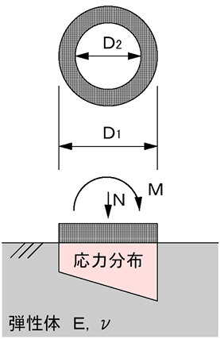
            <figcaption>F.T.Pile 構法　初期回転剛性を求める際の仮定</figcaption>
        </figure>

        <p>
            $$K_0=\frac{M_a}{\theta_a}$$
        </p>

        <p>
            $$M_a=3.75 \times 10^{-4} \times a_g \cdot f_t \cdot D_s + 0.5N \cdot D_s$$
        </p>

        <p>
            $$\theta_a = \frac{\delta_a}{D_s}$$
        </p>

        <p>
            $$M_{max}=\eta \cdot M_e$$
        </p>

        <p>
            $$\eta=-0.16 \frac{\sigma_n}{F_c}+1.0$$
        </p>

        <p>
            $$M_e=0.5N\cdot D_1$$
        </p>

        <p>
            $$M_e=5\times 10^{-4} \times a_g \cdot f_u \cdot D_s + 0.5N \cdot D_S$$
        </p>

        <figure>
            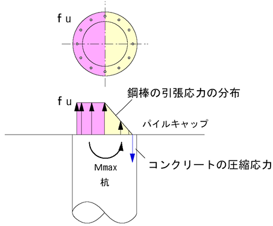
            <figcaption>F.T.Pile 構法　引抜き対応タイプにおける $M_e$ 算定時の鋼棒の応力分布</figcaption>
        </figure>

        <h4>FT キャップ標準仕様</h4>
        <ul class="symbol-list">
            <li class="symbol-intro">記号:</li>
            <li><span class="symbol-label">$\Phi$</span>杭径</li>
            <li><span class="symbol-label">$T$</span>FT キャップ鉄板厚さ</li>
            <li><span class="symbol-label">$D_1$</span>FT キャップ内径</li>
            <li><span class="symbol-label">$D_2$</span>FT キャップ外径</li>
            <li><span class="symbol-label">$H$</span>FT キャップ高さ</li>
            <li><span class="symbol-label">$W$</span>FT キャップ重量</li>
        </ul>
        <table class="table-doc">
            <thead><tr>
                <th>$\Phi$ (mm)</th><th>$T$ (mm)</th><th>$D_1$ (mm)</th><th>$D_2$ (mm)</th>
                <th>$H$ (mm)</th><th>$W$ (kg)</th>
            </tr></thead>
            <tbody>
                <tr><td>300</td><td>1.2</td><td>301</td><td>345</td><td>201</td><td>1.8</td></tr>
                <tr><td>350</td><td>1.2</td><td>351</td><td>395</td><td>201</td><td>2.3</td></tr>
                <tr><td>400</td><td>1.2</td><td>401</td><td>445</td><td>201</td><td>2.7</td></tr>
                <tr><td>450</td><td>1.2</td><td>451</td><td>495</td><td>201</td><td>3.2</td></tr>
                <tr><td>500</td><td>1.2</td><td>501</td><td>545</td><td>201</td><td>3.8</td></tr>
                <tr><td>600</td><td>1.6</td><td>601</td><td>645</td><td>201</td><td>7.2</td></tr>
                <tr><td>700</td><td>1.6</td><td>701</td><td>745</td><td>201</td><td>9.0</td></tr>
                <tr><td>800</td><td>2.0</td><td>801</td><td>845</td><td>201</td><td>13.8</td></tr>
                <tr><td>900</td><td>2.0</td><td>901</td><td>945</td><td>201</td><td>17.4</td></tr>
                <tr><td>1,000</td><td>2.3</td><td>1,001</td><td>1,045</td><td>201</td><td>23.9</td></tr>
                <tr><td>1,100</td><td>3.2</td><td>1,101</td><td>1,145</td><td>201</td><td>38.6</td></tr>
                <tr><td>1,200</td><td>3.2</td><td>1,201</td><td>1,245</td><td>201</td><td>44.3</td></tr>
            </tbody>
        </table>

        <h4>参考</h4>
        <p>
            出典: F.T.Pile 構法既製杭協会「F.T.Pile 構法既製コンクリート杭 設計・施工指針【暫定版】」(BCJ 評定-FD0141-05、2018 年 12 月)。
        </p>

        <h3 id="h-キャプテンパイル工法">キャプテンパイル工法</h3>
        <p>
            キャプテンパイル工法<br>

            (BCJ評定-FD0230-01)<br>

            杭頭接合部の曲げモーメント-回転角関係の評価<br>

            杭頭接合部構造性能モデル化<br>

            杭頭回転特性は、杭頭曲げモーメント$M_p$と回転角$\theta_p$の関係により評価します。
        </p>

        <figure>
            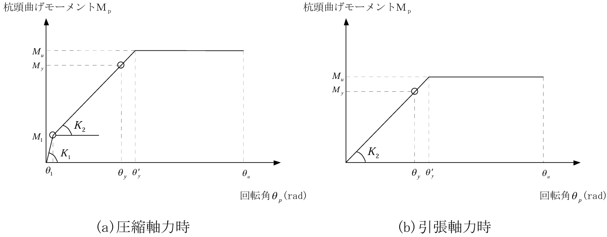
            <figcaption>キャプテンパイル工法　杭頭曲げモーメント$M_p$と回転角$\theta_p$の関係</figcaption>
        </figure>

        <ul class="symbol-list">
            <li class="symbol-intro">ここに、</li>
            <li><span class="symbol-label">$K_1$</span>杭頭接合部の等価初期回転剛性</li>
            <li><span class="symbol-label">$K_2$</span>杭頭接合部の圧縮軸力時における2次回転剛性$K_2=\frac{M_y-M_1}{\theta_y-\theta_1}$</li>
            <li><span class="symbol-label"></span>あるいは、引張軸力時における初期回転剛性$K_2=\frac{M_y}{\theta_y}$</li>
            <li><span class="symbol-label">$M_1$</span>離間時曲げモーメント</li>
            <li><span class="symbol-label">$M_y$</span>降伏時曲げモーメント</li>
            <li><span class="symbol-label">$M_u$</span>終局時曲げモーメント</li>
            <li><span class="symbol-label">$\theta_1$</span>離間時回転角</li>
            <li><span class="symbol-label">$\theta_y$</span>降伏時回転角</li>
            <li><span class="symbol-label">$\theta_y'$</span>終局時回転角</li>
            <li><span class="symbol-label">$\theta_u$</span>限界回転角(=0.04rad)</li>
        </ul>

        <p>
            設定値の算出法<br>

            杭頭接合部の等価初期回転剛性<br>

            杭頭接合部の圧縮軸力時における等価初期回転剛性$K_1$は下式により算定します。
        </p>

        <p>
            $$K_1=K_e=\frac{1}{\frac{1}{K_p}+\frac{1}{K_c}+\frac{1}{K_b}}$$
        </p>

        <ul class="symbol-list">
            <li class="symbol-intro">ここに、</li>
            <li><span class="symbol-label">$K_e$</span>初期回転剛性(kNm/rad)</li>
            <li><span class="symbol-label">$K_p$</span>杭体部分の回転剛性(kNm/rad)</li>
            <li><span class="symbol-label">$E_p$</span>杭体のヤング係数（kN/m<sup>2</sup>）</li>
            <li><span class="symbol-label">$I_p$</span>杭体の断面二次モーメント、絞り部ありの場合は絞り部径を杭径とみなす(m<sup>4</sup>)</li>
            <li><span class="symbol-label">$H_p$</span>杭体とPCリングの重なり長さ(m)</li>
            <li><span class="symbol-label">$K_c$</span>PCリング内コンクリート回転剛性(kNm/rad)$K_c=\frac{E_c \cdot I_c}{H_c}$</li>
            <li><span class="symbol-label">$E_c$</span>杭体のヤング係数(kN/m<sup>2</sup>)</li>
            <li><span class="symbol-label">$I_c$</span>PCリング内側コンクリートの断面二次モーメント、絞り部有無によらない(m<sup>4</sup>)</li>
            <li><span class="symbol-label">$H_c$</span>杭頭接合面からPCリング上端までの長さ(m)</li>
            <li><span class="symbol-label">$K_b$</span>パイルキャップ部分の回転剛性(kNm/rad)$K_b=\frac{E_b \cdot I_b}{H_b}$</li>
            <li><span class="symbol-label">$E_b$</span>パイルキャップコンクリートのヤング係数(kN/m<sup>2</sup>)</li>
            <li><span class="symbol-label">$I_b$</span>仮想円柱のコンクリートの断面二次モーメント、絞り部有無によらない(m<sup>4</sup>)</li>
            <li><span class="symbol-label">$H_b$</span>仮想円柱の高さ($=D/2$)(m)</li>
        </ul>

        <figure>
            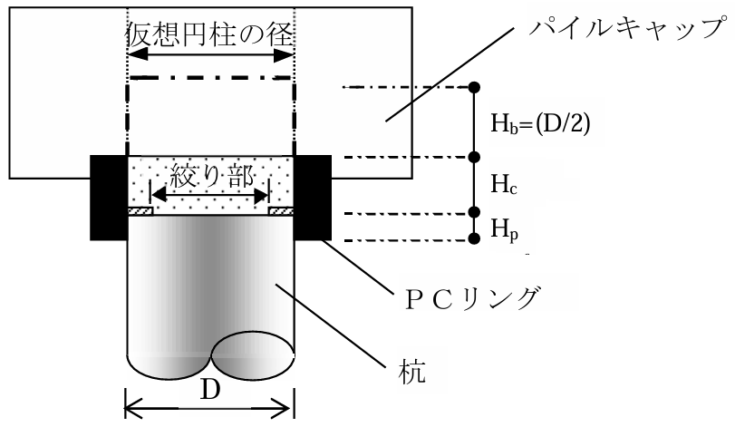
            <figcaption>キャプテンパイル工法　高さ等に関する符合</figcaption>
        </figure>

        <p>
            離間時モーメント
        </p>

        <p>
            引張応力が発生しない離間時曲げモーメントM_1は下式により算定します。
        </p>

        <p>
            $$M_1=\sigma_0 \cdot Z$$
        </p>

        <ul class="symbol-list">
            <li class="symbol-intro">ここに、</li>
            <li><span class="symbol-label">$\sigma_0$</span>杭頭部接合部の軸方向応力度(kN/m<sup>2</sup>)$\sigma_0=\frac{N}{A_e}$</li>
            <li><span class="symbol-label">$A_e$</span>杭頭接合部の断面積(m<sup>2</sup>)$A_e=\frac{\pi}{4}D^2$</li>
            <li><span class="symbol-label">$Z$</span>杭頭接合部の断面係数(m<sup>3</sup>)$Z=\frac{\pi}{32}D^3$</li>
            <li><span class="symbol-label">$D$</span>杭径(m)。ただし絞り部ありの場合は絞り部径を杭径とみなす。</li>
        </ul>

        <p>
            降伏曲げモーメントおよび終局曲げモーメント
        </p>

        <p>
            降伏曲げモーメント$M_y$および終局曲げモーメント$M_u$については、以下の仮定に基づいて算定します。
        </p>

        <ol>① 断面力の釣合いとひずみ度の適合条件を考慮した塑性曲げ理論に基づいて算定する。</ol>
        <ol>② 解析における断面形状は、杭径を直径とする円形断面とする。ただし、絞り部がある場合は絞り部径を直径とする。</ol>
        <ol>③ 引張定着筋降伏時の曲げモーメントは、最外縁の引張定着筋が降伏するときの値とする。</ol>
        <ol>④ 圧縮降伏時の曲げモーメントは、圧縮縁コンクリートが$0.85\sigma_{max}$に達したときの値とする。</ol>
        <ol>⑤ 降伏時の曲げモーメント$M_y$は、引張定着筋降伏時と圧縮降伏時の曲げモーメントのうち小さい方の値とする。ただし、引張定着筋を配置しない場合の降伏時曲げモーメントは、上記④に達したときの値とする。</ol>
        <ol>⑥ 終局時の曲げモーメント$M_u$は、最大曲げモーメントとする。</ol>
        <ol>⑦ コンクリートの応力度$\sigma$とひずみ度$\epsilon$の関係は下式とする。</ol>
        <ul>
            <li>$\epsilon \le 0: \sigma = 0$</li>
            <li>$0 \lt \epsilon \le \epsilon_B: \sigma = 6.75(e^{-0.812 \frac{\epsilon}{\epsilon_0}} - e^{-1.218 \frac{\epsilon}{\epsilon_0}}), \sigma_{max}$</li>
            <li>$\epsilon_B \lt \epsilon: \sigma = \sigma_{max}$</li>
        </ul>

        <ul class="symbol-list">
            <li class="symbol-intro">ここに、</li>
            <li><span class="symbol-label">$\epsilon_B$</span>コンクリート最大強度時のひずみ度で$\epsilon_B=0.003$とする。</li>
            <li><span class="symbol-label">$\sigma_{max}$</span>コンクリートの最大強度で$\sigma_{max}=\frac{F_c}{\nu^2}$とする。</li>
            <li><span class="symbol-label">$F_c$</span>コンクリートの設計基準強度で杭体、パイルキャップの設計基準強度のうち、最小の値とする。</li>
            <li><span class="symbol-label">$\nu$</span>絞り係数。</li>
        </ul>

        <ol>⑧ 引張定着筋の応力度$\sigma$とひずみ度$\epsilon$の関係は下式とする。</ol>
        <ul>
            <li>$\epsilon \le -\epsilon_y: \sigma = -\sigma_y$</li>
            <li>$-\epsilon_y \lt \epsilon \le \epsilon_y: \sigma = E_s \epsilon$</li>
            <li>$\epsilon_y \lt \epsilon: \sigma = \sigma_y$</li>
        </ul>

        <ul class="symbol-list">
            <li class="symbol-intro">ここに、</li>
            <li><span class="symbol-label">$\epsilon_y$</span>引張定着筋降伏時ひずみ度（$\epsilon_y= \sigma_y/E_s$ ）</li>
        </ul>

        <p>
            降伏時回転角
        </p>

        <p>
            断面解析における曲率から降伏時回転角$\theta_u$への換算は、杭体のヒンジ領域を杭径部とし、ヒンジ領域では一定の曲率であると仮定した下式で評価します。
        </p>
        <p>
            $$
            \theta_y = \int_{0}^{D} \phi_y \, dx = \phi_y D
            $$

        </p>
        <ul class="symbol-list">
            <li class="symbol-intro">ここに、</li>
            <li><span class="symbol-label">$\phi_y$</span>前項c.で算定される$M_y$時曲率</li>
            <li><span class="symbol-label">$D$</span>杭径 ただし、杭頭接合部に絞り部がある場合には杭径を絞り部径とみなす。</li>
        </ul>

        <p>
            杭頭接合部の曲げ耐力の算定法
        </p>

        <p>
        <p>
            短期許容曲げモーメント$M_a$は、降伏時曲げモーメント$M_y$算定に用いたモーメント-曲率関係において、以下の条件に達した時点の曲げモーメント①、②のうち、小さいほうの値とします。<br>

            ただし、引張鉄筋を配置しない場合は、以下の②の条件に達したときの値とします。
        </p>
            <p>①最外縁の引張定着筋が降伏するとき</p>
            <p>②圧縮縁コンクリートが短期許容圧縮応力度($\frac {2}{3} \cdot \frac{F_c}{\nu^2}$($\nu$: 絞り係数))に達するとき</p>

        <h4>実装上の補正</h4>
        <p>
            上記のマニュアル準拠の数式は理論上の定義式です。本プログラムでは、
            <strong>数値安定性の確保</strong>と <strong>M-θ 曲線の単調増加性 (履歴解析時の収束性) の保証</strong>のため、
            以下の補正を加えて M-θ 関係点列を構築しています。
            通常の入力範囲では補正は発動せずマニュアル式と一致しますが、
            極端な軸力・絞り率・PC リング寸法の組合せにおいて点列が物理的に妥当となるよう作用します。
        </p>

        <ol>
            <li>
                <b>① コンクリート最大強度 $\sigma_{max}$ の上限</b><br>
                $\nu$ が極めて小さい場合に $F_c/\nu^2$ が発散することを防ぐため、上限を $2F_c$ で抑えます。
                <p>$$\sigma_{max} = \min\!\left(\frac{F_c}{\nu^2},\ 2F_c\right)$$</p>
                通常入力範囲 ($\nu \ge 0.7$) では $F_c/\nu^2 \le 2.04F_c$ となり、ほぼ理論式どおり。
            </li>

            <li>
                <b>② 圧縮側で離間時モーメント $M_1$ を $M_u$ でクランプ</b><br>
                高軸力時に算定式 $M_1 = \sigma_0 \cdot Z$ が $M_u$ を上回るケースで、M-θ 点列の M を $M_u$ に丸めます。
                <p>$$M_{plot}(\theta_1) = \min(M_1,\ M_u)$$</p>
                M-θ が降伏点で逆戻りするのを防止します。
            </li>

            <li>
                <b>③ 2 次回転剛性 $K_2$ の上限を初期剛性 $K_e$ で抑える</b><br>
                理論式 $K_2 = (M_y - M_1)/(\theta_y - \theta_1)$ が、数値誤差等で $K_e$ を上回るケースを補正します。
                <p>$$K_2 = \min\!\left(\left|\frac{M_y - M_1}{\theta_y - \theta_1}\right|,\ K_e\right)$$</p>
                「2 次剛性は初期剛性を超えない」という物理的妥当性を強制。
            </li>

            <li>
                <b>④ 終局時回転角 $\theta_{y}'$ を限界回転角 $\theta_u = 0.04$ rad でクランプ</b><br>
                <p>$$\theta_{y}' = \min\!\left(\theta_1 + \frac{M_u - M_1}{K_2},\ \theta_u\right)$$</p>
                低剛性ケースで終局回転角が $0.04$ rad を超える場合、(0.04, $M_u$) との重複点となり、降伏前に既に限界回転角に到達するモデルとなります。
            </li>

            <li>
                <b>⑤ 退化ケース ($\theta_y \le \theta_1$) の中間点省略</b><br>
                理論上 $\theta_1 \lt \theta_y$ ですが、数値誤差等で $\theta_y \le \theta_1$ となる退化ケースでは、
                中間点 ($\theta_{y}'$, $M_u$) を <strong>スキップ</strong>し、(0, 0) — ($\theta_1$, $\min(M_1, M_u)$) — ($\theta_u$, $M_u$) の <strong>3 点折線</strong>として M-θ を構築します。
            </li>

            <li>
                <b>⑥ 引張側 ($N \lt 0$) の M-θ モデル</b><br>
                引張側では離間時モーメント $M_1$ が定義されないため、$M_1 = 0$ かつ $\theta_1 = 0$ として扱い、
                さらに <strong>$M_y = M_u$ (降伏即終局)</strong> と仮定して、初期回転剛性 $K_2 = M_y / \theta_y$ から
                $\theta_{y}' = M_u / K_2$ を求めます。M-θ 点列は次の 3 点折線:
                <p>$$(0,\ 0) \;\to\; (\theta_{y}',\ M_u) \;\to\; (\theta_u,\ M_u)$$</p>
                ただし $\theta_{y}' \le \theta_u = 0.04$ rad でクランプ (補正④と同様)。
                引張定着筋を配置しない場合は M-θ 上記の引張側分岐は使用されず、$M_u = 0$ で扱われます。
            </li>
        </ol>

        <p style="margin-top:8px;">
            <b>備考</b>:
            これらの補正は、マニュアル本体の規定 (例: 補正① の上限 $2F_c$、補正⑥ の引張側 3 点折線) を
            プログラム実装にあわせて明文化したものと、純粋に数値安定性のために設けたもの (補正②③⑤) が混在します。
            設計者が手計算で M-θ 関係を再現するとき、上記補正によりプログラム出力と差が生じる可能性がある点に留意してください。
        </p>

        <h4>PC リング標準仕様</h4>
        <p>
            PC リングは杭径 $D$ と要求せん断耐力に応じて、N タイプ (標準) / S1 タイプ (高せん断耐力 1) / S2 タイプ (高せん断耐力 2) の 3 種類が用意されています。
            場所打ち杭用は $D = 800\text{〜}3000$ mm に対応します。
        </p>
        <p>
            記号: $r_{D1}$ PC リング内径、$t_c$ コンクリート厚、$h_r$ PC リング高さ、$L_1$ 定着筋定着長さ、$L_2$ 定着筋全長、$t_s$ 鋼管厚。
        </p>

        <p><b>① 場所打ち杭用標準タイプ (N タイプ)</b></p>
        <table class="table-doc">
            <thead><tr>
                <th>$D$ (mm)</th><th>$r_{D1}$ (mm)</th><th>$t_c$ (mm)</th><th>$h_r$ (mm)</th>
                <th>定着筋</th><th>$L_1$ (mm)</th><th>$L_2$ (mm)</th><th>タイプ</th>
                <th>$t_s$ (mm)</th><th>鋼種</th><th>スパイラル筋</th>
            </tr></thead>
            <tbody>
                <tr><td>800</td><td>900</td><td>120</td><td>200</td><td>10-D16</td><td>350</td><td>515</td><td>800-N</td><td>6.0</td><td>SS400</td><td>U9.0 (8 巻)</td></tr>
                <tr><td>900</td><td>1,000</td><td>120</td><td>200</td><td>10-D16</td><td>350</td><td>515</td><td>900-N</td><td>6.0</td><td>SS400</td><td>U9.0 (8 巻)</td></tr>
                <tr><td>1,000</td><td>1,100</td><td>120</td><td>200</td><td>12-D16</td><td>350</td><td>515</td><td>1000-N</td><td>6.0</td><td>SS400</td><td>U9.0 (8 巻)</td></tr>
                <tr><td>1,100</td><td>1,200</td><td>120</td><td>200</td><td>12-D16</td><td>350</td><td>515</td><td>1100-N</td><td>6.0</td><td>SS400</td><td>U9.0 (8 巻)</td></tr>
                <tr><td>1,200</td><td>1,300</td><td>120</td><td>200</td><td>12-D16</td><td>350</td><td>515</td><td>1200-N</td><td>6.0</td><td>SS400</td><td>U9.0 (8 巻)</td></tr>
                <tr><td>1,300</td><td>1,400</td><td>120</td><td>200</td><td>14-D16</td><td>350</td><td>515</td><td>1300-N</td><td>6.0</td><td>SS400</td><td>U9.0 (8 巻)</td></tr>
                <tr><td>1,400</td><td>1,500</td><td>120</td><td>200</td><td>14-D16</td><td>350</td><td>515</td><td>1400-N</td><td>6.0</td><td>SS400</td><td>U10.7 (8 巻)</td></tr>
                <tr><td>1,500</td><td>1,600</td><td>120</td><td>200</td><td>16-D16</td><td>350</td><td>515</td><td>1500-N</td><td>6.0</td><td>SS400</td><td>U10.7 (8 巻)</td></tr>
                <tr><td>1,600</td><td>1,700</td><td>120</td><td>200</td><td>16-D19</td><td>400</td><td>565</td><td>1600-N</td><td>9.0</td><td>SM490A</td><td>U10.7 (8 巻)</td></tr>
                <tr><td>1,700</td><td>1,800</td><td>120</td><td>200</td><td>18-D19</td><td>400</td><td>565</td><td>1700-N</td><td>9.0</td><td>SM490A</td><td>U10.7 (8 巻)</td></tr>
                <tr><td>1,800</td><td>1,900</td><td>120</td><td>200</td><td>18-D19</td><td>400</td><td>565</td><td>1800-N</td><td>9.0</td><td>SM490A</td><td>U10.7 (8 巻)</td></tr>
                <tr><td>1,900</td><td>2,000</td><td>120</td><td>200</td><td>20-D19</td><td>400</td><td>565</td><td>1900-N</td><td>9.0</td><td>SM490A</td><td>U10.7 (8 巻)</td></tr>
                <tr><td>2,000</td><td>2,100</td><td>120</td><td>200</td><td>20-D19</td><td>400</td><td>565</td><td>2000-N</td><td>9.0</td><td>SM490A</td><td>U10.7 (8 巻)</td></tr>
                <tr><td>2,100</td><td>2,200</td><td>150</td><td>250</td><td>22-D19</td><td>400</td><td>615</td><td>2100-N</td><td>9.0</td><td>SM490A</td><td>U10.7 (10 巻)</td></tr>
                <tr><td>2,200</td><td>2,300</td><td>150</td><td>250</td><td>22-D19</td><td>400</td><td>615</td><td>2200-N</td><td>9.0</td><td>SM490A</td><td>U10.7 (10 巻)</td></tr>
                <tr><td>2,300</td><td>2,400</td><td>150</td><td>250</td><td>24-D19</td><td>400</td><td>615</td><td>2300-N</td><td>9.0</td><td>SM490A</td><td>U10.7 (10 巻)</td></tr>
                <tr><td>2,400</td><td>2,500</td><td>150</td><td>250</td><td>24-D19</td><td>400</td><td>615</td><td>2400-N</td><td>12.0</td><td>SM490A</td><td>U10.7 (10 巻)</td></tr>
                <tr><td>2,500</td><td>2,600</td><td>150</td><td>250</td><td>26-D19</td><td>400</td><td>615</td><td>2500-N</td><td>12.0</td><td>SM490A</td><td>U10.7 (10 巻)</td></tr>
                <tr><td>2,600</td><td>2,700</td><td>150</td><td>250</td><td>26-D19</td><td>400</td><td>615</td><td>2600-N</td><td>12.0</td><td>SM490A</td><td>U10.7 (10 巻)</td></tr>
                <tr><td>2,700</td><td>2,800</td><td>150</td><td>250</td><td>28-D19</td><td>400</td><td>615</td><td>2700-N</td><td>16.0</td><td>SM490A</td><td>U12.6 (10 巻)</td></tr>
                <tr><td>2,800</td><td>2,900</td><td>150</td><td>250</td><td>28-D19</td><td>400</td><td>615</td><td>2800-N</td><td>16.0</td><td>SM490A</td><td>U12.6 (10 巻)</td></tr>
                <tr><td>2,900</td><td>3,000</td><td>150</td><td>250</td><td>30-D19</td><td>400</td><td>615</td><td>2900-N</td><td>16.0</td><td>SM490A</td><td>U12.6 (10 巻)</td></tr>
                <tr><td>3,000</td><td>3,100</td><td>150</td><td>250</td><td>30-D19</td><td>400</td><td>615</td><td>3000-N</td><td>16.0</td><td>SM490A</td><td>U12.6 (10 巻)</td></tr>
            </tbody>
        </table>

        <p><b>② 場所打ち杭用高せん断耐力タイプ 1 (S1 タイプ)</b></p>
        <table class="table-doc">
            <thead><tr>
                <th>$D$ (mm)</th><th>$r_{D1}$ (mm)</th><th>$t_c$ (mm)</th><th>$h_r$ (mm)</th>
                <th>定着筋</th><th>$L_1$ (mm)</th><th>$L_2$ (mm)</th><th>タイプ</th>
                <th>$t_s$ (mm)</th><th>鋼種</th><th>スパイラル筋</th>
            </tr></thead>
            <tbody>
                <tr><td>800</td><td>900</td><td>120</td><td>200</td><td>10-D16</td><td>350</td><td>515</td><td>800-S1</td><td>6.0</td><td>SS400</td><td>U12.6 (8 巻)</td></tr>
                <tr><td>900</td><td>1,000</td><td>120</td><td>200</td><td>10-D16</td><td>350</td><td>515</td><td>900-S1</td><td>6.0</td><td>SS400</td><td>U12.6 (8 巻)</td></tr>
                <tr><td>1,000</td><td>1,100</td><td>120</td><td>200</td><td>12-D16</td><td>350</td><td>515</td><td>1000-S1</td><td>6.0</td><td>SS400</td><td>U12.6 (8 巻)</td></tr>
                <tr><td>1,100</td><td>1,200</td><td>120</td><td>200</td><td>12-D16</td><td>350</td><td>515</td><td>1100-S1</td><td>9.0</td><td>SM490A</td><td>U12.6 (8 巻)</td></tr>
                <tr><td>1,200</td><td>1,300</td><td>120</td><td>200</td><td>12-D16</td><td>350</td><td>515</td><td>1200-S1</td><td>9.0</td><td>SM490A</td><td>U12.6 (8 巻)</td></tr>
                <tr><td>1,300</td><td>1,400</td><td>120</td><td>200</td><td>14-D16</td><td>350</td><td>515</td><td>1300-S1</td><td>9.0</td><td>SM490A</td><td>U12.6 (8 巻)</td></tr>
                <tr><td>1,400</td><td>1,500</td><td>120</td><td>200</td><td>14-D16</td><td>350</td><td>515</td><td>1400-S1</td><td>9.0</td><td>SM490A</td><td>U12.6 (8 巻)</td></tr>
                <tr><td>1,500</td><td>1,600</td><td>120</td><td>200</td><td>16-D16</td><td>350</td><td>515</td><td>1500-S1</td><td>9.0</td><td>SM490A</td><td>U12.6 (8 巻)</td></tr>
                <tr><td>1,600</td><td>1,700</td><td>120</td><td>200</td><td>16-D19</td><td>400</td><td>565</td><td>1600-S1</td><td>12.0</td><td>SM490A</td><td>U12.6 (8 巻)</td></tr>
                <tr><td>1,700</td><td>1,800</td><td>120</td><td>200</td><td>18-D19</td><td>400</td><td>565</td><td>1700-S1</td><td>12.0</td><td>SM490A</td><td>U12.6 (8 巻)</td></tr>
                <tr><td>1,800</td><td>1,900</td><td>120</td><td>200</td><td>18-D19</td><td>400</td><td>565</td><td>1800-S1</td><td>12.0</td><td>SM490A</td><td>U12.6 (8 巻)</td></tr>
                <tr><td>1,900</td><td>2,000</td><td>120</td><td>200</td><td>20-D19</td><td>400</td><td>565</td><td>1900-S1</td><td>12.0</td><td>SM490A</td><td>U12.6 (8 巻)</td></tr>
                <tr><td>2,000</td><td>2,100</td><td>120</td><td>200</td><td>20-D19</td><td>400</td><td>565</td><td>2000-S1</td><td>12.0</td><td>SM490A</td><td>U12.6 (8 巻)</td></tr>
                <tr><td>2,100</td><td>2,200</td><td>150</td><td>250</td><td>22-D19</td><td>400</td><td>615</td><td>2100-S1</td><td>12.0</td><td>SM490A</td><td>U12.6 (10 巻)</td></tr>
                <tr><td>2,200</td><td>2,300</td><td>150</td><td>250</td><td>22-D19</td><td>400</td><td>615</td><td>2200-S1</td><td>12.0</td><td>SM490A</td><td>U12.6 (10 巻)</td></tr>
                <tr><td>2,300</td><td>2,400</td><td>150</td><td>250</td><td>24-D19</td><td>400</td><td>615</td><td>2300-S1</td><td>12.0</td><td>SM490A</td><td>U12.6 (10 巻)</td></tr>
                <tr><td>2,400</td><td>2,500</td><td>150</td><td>250</td><td>24-D19</td><td>400</td><td>615</td><td>2400-S1</td><td>19.0</td><td>SM490A</td><td>U12.6 (10 巻)</td></tr>
                <tr><td>2,500</td><td>2,600</td><td>150</td><td>250</td><td>26-D19</td><td>400</td><td>615</td><td>2500-S1</td><td>19.0</td><td>SM490A</td><td>U12.6 (10 巻)</td></tr>
                <tr><td>2,600</td><td>2,700</td><td>150</td><td>250</td><td>26-D19</td><td>400</td><td>615</td><td>2600-S1</td><td>19.0</td><td>SM490A</td><td>U12.6 (10 巻)</td></tr>
                <tr><td>2,700</td><td>2,800</td><td>150</td><td>250</td><td>28-D19</td><td>400</td><td>615</td><td>2700-S1</td><td>22.0</td><td>SM490A</td><td>U12.6 (10 巻)</td></tr>
                <tr><td>2,800</td><td>2,900</td><td>150</td><td>250</td><td>28-D19</td><td>400</td><td>615</td><td>2800-S1</td><td>22.0</td><td>SM490A</td><td>U12.6 (10 巻)</td></tr>
                <tr><td>2,900</td><td>3,000</td><td>150</td><td>250</td><td>30-D19</td><td>400</td><td>615</td><td>2900-S1</td><td>22.0</td><td>SM490A</td><td>U12.6 (10 巻)</td></tr>
                <tr><td>3,000</td><td>3,100</td><td>150</td><td>250</td><td>30-D19</td><td>400</td><td>615</td><td>3000-S1</td><td>22.0</td><td>SM490A</td><td>U12.6 (10 巻)</td></tr>
            </tbody>
        </table>

        <p><b>③ 場所打ち杭用高せん断耐力タイプ 2 (S2 タイプ)</b></p>
        <table class="table-doc">
            <thead><tr>
                <th>$D$ (mm)</th><th>$r_{D1}$ (mm)</th><th>$t_c$ (mm)</th><th>$h_r$ (mm)</th>
                <th>定着筋</th><th>$L_1$ (mm)</th><th>$L_2$ (mm)</th><th>タイプ</th>
                <th>$t_s$ (mm)</th><th>鋼種</th><th>スパイラル筋</th>
            </tr></thead>
            <tbody>
                <tr><td>800</td><td>900</td><td>120</td><td>200</td><td>10-D16</td><td>350</td><td>515</td><td>800-S2</td><td>9.0</td><td>SM490A</td><td>U12.6 (8 巻)</td></tr>
                <tr><td>900</td><td>1,000</td><td>120</td><td>200</td><td>10-D16</td><td>350</td><td>515</td><td>900-S2</td><td>9.0</td><td>SM490A</td><td>U12.6 (8 巻)</td></tr>
                <tr><td>1,000</td><td>1,100</td><td>120</td><td>200</td><td>12-D16</td><td>350</td><td>515</td><td>1000-S2</td><td>9.0</td><td>SM490A</td><td>U12.6 (8 巻)</td></tr>
                <tr><td>1,100</td><td>1,200</td><td>120</td><td>200</td><td>12-D16</td><td>350</td><td>515</td><td>1100-S2</td><td>12.0</td><td>SM490A</td><td>U12.6 (8 巻)</td></tr>
                <tr><td>1,200</td><td>1,300</td><td>120</td><td>200</td><td>12-D16</td><td>350</td><td>515</td><td>1200-S2</td><td>12.0</td><td>SM490A</td><td>U12.6 (8 巻)</td></tr>
                <tr><td>1,300</td><td>1,400</td><td>120</td><td>200</td><td>14-D16</td><td>350</td><td>515</td><td>1300-S2</td><td>12.0</td><td>SM490A</td><td>U12.6 (8 巻)</td></tr>
                <tr><td>1,400</td><td>1,500</td><td>120</td><td>200</td><td>14-D16</td><td>350</td><td>515</td><td>1400-S2</td><td>12.0</td><td>SM490A</td><td>U12.6 (8 巻)</td></tr>
                <tr><td>1,500</td><td>1,600</td><td>120</td><td>200</td><td>16-D16</td><td>350</td><td>515</td><td>1500-S2</td><td>12.0</td><td>SM490A</td><td>U12.6 (8 巻)</td></tr>
                <tr><td>1,600</td><td>1,700</td><td>120</td><td>200</td><td>16-D19</td><td>400</td><td>565</td><td>1600-S2</td><td>16.0</td><td>SM490A</td><td>U12.6 (8 巻)</td></tr>
                <tr><td>1,700</td><td>1,800</td><td>120</td><td>200</td><td>18-D19</td><td>400</td><td>565</td><td>1700-S2</td><td>16.0</td><td>SM490A</td><td>U12.6 (8 巻)</td></tr>
                <tr><td>1,800</td><td>1,900</td><td>120</td><td>200</td><td>18-D19</td><td>400</td><td>565</td><td>1800-S2</td><td>16.0</td><td>SM490A</td><td>U12.6 (8 巻)</td></tr>
                <tr><td>1,900</td><td>2,000</td><td>120</td><td>200</td><td>20-D19</td><td>400</td><td>565</td><td>1900-S2</td><td>16.0</td><td>SM490A</td><td>U12.6 (8 巻)</td></tr>
                <tr><td>2,000</td><td>2,100</td><td>120</td><td>200</td><td>20-D19</td><td>400</td><td>565</td><td>2000-S2</td><td>16.0</td><td>SM490A</td><td>U12.6 (8 巻)</td></tr>
                <tr><td>2,100</td><td>2,200</td><td>150</td><td>250</td><td>22-D19</td><td>400</td><td>615</td><td>2100-S2</td><td>19.0</td><td>SM490A</td><td>U12.6 (10 巻)</td></tr>
                <tr><td>2,200</td><td>2,300</td><td>150</td><td>250</td><td>22-D19</td><td>400</td><td>615</td><td>2200-S2</td><td>19.0</td><td>SM490A</td><td>U12.6 (10 巻)</td></tr>
                <tr><td>2,300</td><td>2,400</td><td>150</td><td>250</td><td>24-D19</td><td>400</td><td>615</td><td>2300-S2</td><td>19.0</td><td>SM490A</td><td>U12.6 (10 巻)</td></tr>
                <tr><td>2,400</td><td>2,500</td><td>150</td><td>250</td><td>24-D19</td><td>400</td><td>615</td><td>2400-S2</td><td>22.0</td><td>SM490A</td><td>U12.6 (10 巻)</td></tr>
                <tr><td>2,500</td><td>2,600</td><td>150</td><td>250</td><td>26-D19</td><td>400</td><td>615</td><td>2500-S2</td><td>22.0</td><td>SM490A</td><td>U12.6 (10 巻)</td></tr>
                <tr><td>2,600</td><td>2,700</td><td>150</td><td>250</td><td>26-D19</td><td>400</td><td>615</td><td>2600-S2</td><td>22.0</td><td>SM490A</td><td>U12.6 (10 巻)</td></tr>
                <tr><td>2,700</td><td>2,800</td><td>150</td><td>250</td><td>28-D19</td><td>400</td><td>615</td><td>2700-S2</td><td>22.0</td><td>SM490A</td><td>U12.6 (10 巻)</td></tr>
                <tr><td>2,800</td><td>2,900</td><td>150</td><td>250</td><td>28-D19</td><td>400</td><td>615</td><td>2800-S2</td><td>22.0</td><td>SM490A</td><td>U12.6 (10 巻)</td></tr>
                <tr><td>2,900</td><td>3,000</td><td>150</td><td>250</td><td>30-D19</td><td>400</td><td>615</td><td>2900-S2</td><td>22.0</td><td>SM490A</td><td>U12.6 (10 巻)</td></tr>
                <tr><td>3,000</td><td>3,100</td><td>150</td><td>250</td><td>30-D19</td><td>400</td><td>615</td><td>3000-S2</td><td>22.0</td><td>SM490A</td><td>U12.6 (10 巻)</td></tr>
            </tbody>
        </table>

        <h4>引張定着筋配置径 (絞り率 ν 別)</h4>
        <p>
            キャプテンパイル工法では、杭頭近傍に <strong>絞り部</strong> (絞り率 $\nu$ = 絞り部径 / 杭径) を設けることができます。
            絞り率に応じて、配置可能な引張定着筋の最大配置径 (円形配置 $t_D$) または最大配置辺長 (正方形配置 $t_B$) が
            以下のとおり標準として定められています。
        </p>

        <p><b>① 円形配置 (最大配置径 $t_D$)</b></p>
        <table class="table-doc">
            <thead><tr>
                <th>$D$ (mm)</th>
                <th>$\nu = 1.00$<br>$t_D$ (mm)</th>
                <th>$\nu = 0.85$<br>$t_D$ (mm)</th>
                <th>$\nu = 0.70$<br>$t_D$ (mm)</th>
            </tr></thead>
            <tbody>
                <tr><td>800</td><td>420</td><td>420</td><td>420</td></tr>
                <tr><td>900</td><td>490</td><td>490</td><td>490</td></tr>
                <tr><td>1,000</td><td>560</td><td>560</td><td>560</td></tr>
                <tr><td>1,100</td><td>630</td><td>630</td><td>630</td></tr>
                <tr><td>1,200</td><td>730</td><td>730</td><td>700</td></tr>
                <tr><td>1,300</td><td>830</td><td>830</td><td>770</td></tr>
                <tr><td>1,400</td><td>930</td><td>930</td><td>840</td></tr>
                <tr><td>1,500</td><td>1,030</td><td>1,030</td><td>910</td></tr>
                <tr><td>1,600</td><td>1,130</td><td>1,130</td><td>980</td></tr>
                <tr><td>1,700</td><td>1,230</td><td>1,230</td><td>1,050</td></tr>
                <tr><td>1,800</td><td>1,330</td><td>1,330</td><td>1,120</td></tr>
                <tr><td>1,900</td><td>1,430</td><td>1,430</td><td>1,190</td></tr>
                <tr><td>2,000</td><td>1,530</td><td>1,530</td><td>1,260</td></tr>
                <tr><td>2,100</td><td>1,630</td><td>1,630</td><td>1,330</td></tr>
                <tr><td>2,200</td><td>1,730</td><td>1,730</td><td>1,400</td></tr>
                <tr><td>2,300</td><td>1,830</td><td>1,810</td><td>1,470</td></tr>
                <tr><td>2,400</td><td>1,930</td><td>1,900</td><td>1,540</td></tr>
                <tr><td>2,500</td><td>2,030</td><td>1,980</td><td>1,610</td></tr>
                <tr><td>2,600</td><td>2,130</td><td>2,070</td><td>1,680</td></tr>
                <tr><td>2,700</td><td>2,230</td><td>2,150</td><td>1,750</td></tr>
                <tr><td>2,800</td><td>2,330</td><td>2,240</td><td>1,820</td></tr>
                <tr><td>2,900</td><td>2,430</td><td>2,320</td><td>1,890</td></tr>
                <tr><td>3,000</td><td>2,520</td><td>2,410</td><td>1,960</td></tr>
            </tbody>
        </table>

        <p><b>② 正方形配置 (最大配置辺長 $t_B$、$D \ge 1100$ mm)</b></p>
        <table class="table-doc">
            <thead><tr>
                <th>$D$ (mm)</th>
                <th>$\nu = 1.00$<br>$t_B$ (mm)</th>
                <th>$\nu = 0.85$<br>$t_B$ (mm)</th>
                <th>$\nu = 0.70$<br>$t_B$ (mm)</th>
            </tr></thead>
            <tbody>
                <tr><td>1,100</td><td>440</td><td>440</td><td>440</td></tr>
                <tr><td>1,200</td><td>510</td><td>510</td><td>490</td></tr>
                <tr><td>1,300</td><td>580</td><td>580</td><td>540</td></tr>
                <tr><td>1,400</td><td>650</td><td>650</td><td>590</td></tr>
                <tr><td>1,500</td><td>720</td><td>720</td><td>640</td></tr>
                <tr><td>1,600</td><td>790</td><td>790</td><td>690</td></tr>
                <tr><td>1,700</td><td>860</td><td>860</td><td>740</td></tr>
                <tr><td>1,800</td><td>940</td><td>940</td><td>790</td></tr>
                <tr><td>1,900</td><td>1,010</td><td>1,010</td><td>840</td></tr>
                <tr><td>2,000</td><td>1,080</td><td>1,080</td><td>890</td></tr>
                <tr><td>2,100</td><td>1,150</td><td>1,150</td><td>940</td></tr>
                <tr><td>2,200</td><td>1,220</td><td>1,220</td><td>990</td></tr>
                <tr><td>2,300</td><td>1,290</td><td>1,280</td><td>1,030</td></tr>
                <tr><td>2,400</td><td>1,360</td><td>1,340</td><td>1,080</td></tr>
                <tr><td>2,500</td><td>1,430</td><td>1,400</td><td>1,130</td></tr>
                <tr><td>2,600</td><td>1,500</td><td>1,460</td><td>1,180</td></tr>
                <tr><td>2,700</td><td>1,570</td><td>1,520</td><td>1,230</td></tr>
                <tr><td>2,800</td><td>1,640</td><td>1,580</td><td>1,280</td></tr>
                <tr><td>2,900</td><td>1,710</td><td>1,640</td><td>1,330</td></tr>
                <tr><td>3,000</td><td>1,780</td><td>1,700</td><td>1,380</td></tr>
            </tbody>
        </table>

        <h4>参考</h4>
        <p>
            出典: 一般社団法人キャプテンパイル工法協会 (CEPIA)「キャプテンパイル工法 (場所打ち杭用杭頭半固定工法) 設計・施工マニュアル」(第 5 版、2021 年 4 月改定、BCJ 評定-FD0230-01)。
            本プログラムでの実装は同マニュアルに準拠します。
        </p>

        <!--</p>-->

        <h3 id="section-capring-pile">キャプリングパイル工法</h3>
        <p>
            キャプリングパイル工法は、<strong>既製コンクリート杭 (PHC / PRC / SC)</strong> に適用可能な杭頭半剛接合工法です。
            キャプテンパイル工法と同様に PC リングおよびパイルキャップにより杭頭部の回転を拘束しますが、
            杭体が既製杭であることに対応した M-θ モデルおよび適用範囲が定められています。
        </p>

        <h4>適用範囲</h4>
        <ul>
            <li>適用杭種: PHC 杭、PRC 杭、SC 杭、鋼管杭</li>
            <li>杭径: $D = 300\text{〜}1200$ mm</li>
            <li>杭体コンクリート設計基準強度: $\sigma_{ck} \ge 80$ N/mm²</li>
            <li>限界回転角: $\theta_u = 0.03$ rad (実験結果及び設計許容範囲を考慮)</li>
        </ul>

        <h4>力学モデル (M-θ 完全バイリニア)</h4>
        <p>
            キャプリングパイル工法による杭頭接合部の回転ばねは、杭頭曲げモーメント $M_0$ と杭頭回転角 $\theta_0$ の関係 ($M_0\text{-}\theta_0$ 関係) で表します。
            $M_0\text{-}\theta_0$ 関係は、初期回転剛性 $K_i$、最大抵抗モーメント $M_u$、限界回転角 $\theta_u$ で定義される
            <strong>完全バイリニア</strong> でモデル化します。
        </p>
        <div class="formula-block">
            <div class="formula-left">
                $$M_0(\theta_0) = \begin{cases} K_i \cdot \theta_0 & (0 \le \theta_0 \le \theta_y) \\ M_u & (\theta_y \lt \theta_0 \le \theta_u) \end{cases}, \quad \theta_y = M_u / K_i$$
            </div>
        </div>
        <ul class="symbol-list">
            <li class="symbol-intro">ここに、</li>
            <li><span class="symbol-label">$K_i$</span>初期回転剛性 (kN·m/rad)</li>
            <li><span class="symbol-label">$M_u$</span>最大抵抗モーメント (kN·m)</li>
            <li><span class="symbol-label">$\theta_y$</span>降伏時回転角 ($= M_u / K_i$) (rad)</li>
            <li><span class="symbol-label">$\theta_u$</span>限界回転角 (= 0.03 rad)</li>
        </ul>

        <figure>
            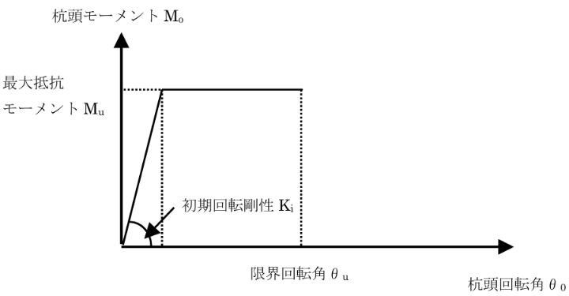
            <figcaption>キャプリングパイル工法　杭頭回転ばねモデル</figcaption>
        </figure>

        <p>
            $K_i$ および $M_u$ は、引張定着筋の有無、軸力の方向（圧縮 / 引張）に応じて以下の 3 ケースに場合分けされます。
            なお、軸力 $N$ は <strong>圧縮を正</strong>とします。
        </p>

        <h4>ケース① 引張定着筋なし × 軸力圧縮</h4>
        <p>
            引張定着筋を配置しない場合は、軸力 $N$ による圧着のみで回転を抵抗します。
        </p>
        <div class="formula-block">
            <div class="formula-left">
                $$K_i = K_e = \dfrac{1}{\dfrac{1}{K_p} + \dfrac{1}{K_c} + \dfrac{1}{K_b}}, \qquad M_u = \dfrac{D}{2} \cdot N$$
            </div>
        </div>

        <h4>ケース①′ 引張定着筋なし × 軸力引張 (NG ケース)</h4>
        <p>
            引張定着筋を配置せず、かつ軸力 $N$ が引張側 ($N \lt 0$) の場合、杭頭は引張力に抵抗できません。
            このとき M-θ 関係は $M_u = 0$ となり、$\theta$ によらず $M = 0$ に縮退します
            (曲げ剛性 0)。さらに、解析中は当該杭頭の <strong>軸方向 (Uz) 並進拘束も解放</strong> します
            (軸剛性 0)。<span class="xref">FEM レベルでの実装の詳細は <a href="#tension-axial-release">「引張軸力時の杭頭軸剛性解放」</a> を参照してください</span>。
        </p>
        <div class="formula-block">
            <div class="formula-left">
                $$K_i = K_e,\qquad M_u = 0$$
            </div>
        </div>

        <h4>ケース② 引張定着筋あり × 軸力圧縮</h4>
        <p>
            軸力 $N$ による圧着に加え、引張定着筋による曲げ抵抗 $M_r$ が加算されます。
        </p>
        <div class="formula-block">
            <div class="formula-left">
                $$K_i = K_e = \dfrac{1}{\dfrac{1}{K_p} + \dfrac{1}{K_c} + \dfrac{1}{K_b}}, \qquad M_u = \dfrac{D}{2} \cdot N + M_r$$
            </div>
        </div>

        <h4>ケース③ 引張定着筋あり × 軸力引張</h4>
        <p>
            軸力 $N$ が引張側 ($N \lt 0$) の場合、引張軸力レベルに応じて初期回転剛性 $K_i$ が低減されます。
            引張軸力が定着筋降伏軸力相当 $N_{ty}$ 以下の領域では、$K_e$ から $K_{ty}$ への遷移を下式で評価します。
        </p>
        <div class="formula-block">
            <div class="formula-left">
                $$\begin{cases} \left( \dfrac{|N| - N_{ty}}{N_{ty}} \right)^2 + \left( \dfrac{K_e - K_i}{K_e - K_{ty}} \right)^2 = 1 & (0 \le |N| \le N_{ty}) \\ K_i = K_{ty} & (|N| \gt N_{ty}) \end{cases}$$
            </div>
        </div>
        <p>
            最大抵抗モーメントは、定着筋の引張降伏軸力 $N_y$ に対する比率に応じて低減されます。
        </p>
        <div class="formula-block">
            <div class="formula-left">
                $$M_u = M_r \left( 1 - \dfrac{|N|}{N_y} \right)$$
            </div>
        </div>

        <h4>直列ばね $K_p$ / $K_c$ / $K_b$ の定義</h4>
        <p>
            初期回転剛性 $K_e$ は、杭体部分・PC リング内コンクリート部分・パイルキャップ仮想円柱の 3 ばねの直列合成で評価します。
        </p>
        <div class="formula-block">
            <div class="formula-left">
                $$K_p = \dfrac{E_p \cdot I_p}{H_p}, \qquad K_c = \dfrac{E_c \cdot I_c}{H_c}, \qquad K_b = \dfrac{E_b \cdot I_b}{H_b}$$
            </div>
        </div>
        <ul class="symbol-list">
            <li class="symbol-intro">ここに、</li>
            <li><span class="symbol-label">$K_p$</span>杭体部分の回転剛性 (kN·m/rad)</li>
            <li><span class="symbol-label">$E_p$</span>杭体のヤング係数 (kN/m²)</li>
            <li><span class="symbol-label">$I_p$</span>杭体の断面二次モーメント (m⁴)</li>
            <li><span class="symbol-label">$H_p$</span>杭体と PC リングとの重なり長さ (m)</li>
            <li><span class="symbol-label">$K_c$</span>PC リング内コンクリート部分の回転剛性 (kN·m/rad)</li>
            <li><span class="symbol-label">$E_c$</span>PC リングに囲まれたパイルキャップコンクリートのヤング係数 (kN/m²)</li>
            <li><span class="symbol-label">$I_c$</span>PC リング内側コンクリートの断面二次モーメント (m⁴)</li>
            <li><span class="symbol-label">$H_c$</span>杭頭接合面から PC リング上端までの長さ (m)</li>
            <li><span class="symbol-label">$K_b$</span>パイルキャップ部分で杭頭回転に寄与する仮想円柱の回転剛性 (kN·m/rad)</li>
            <li><span class="symbol-label">$E_b$</span>パイルキャップコンクリートのヤング係数 (kN/m²)、$E_b = E_c$ とします。</li>
            <li><span class="symbol-label">$I_b$</span>仮想円柱の断面二次モーメント (m⁴)、$I_b = I_c$ とします。</li>
            <li><span class="symbol-label">$H_b$</span>仮想円柱の高さ (m)、$H_b = D/2$ とします。</li>
            <li><span class="symbol-label">$D$</span>杭径 (m)</li>
        </ul>

        <figure>
            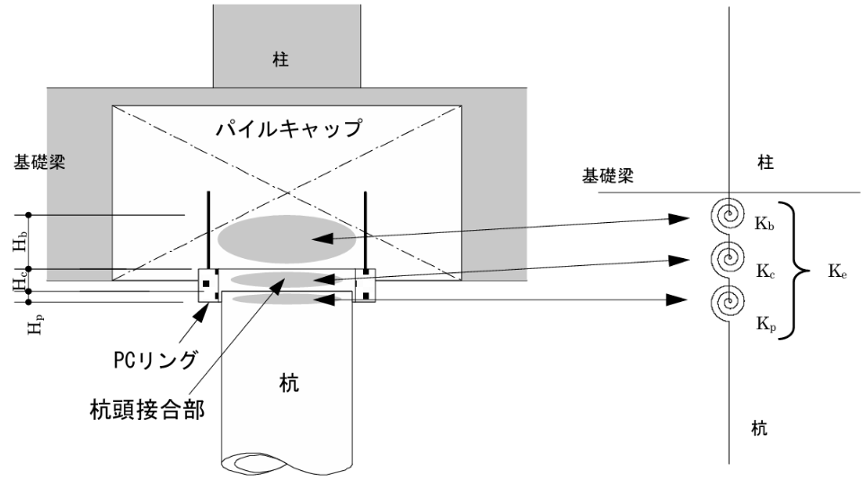
            <figcaption>キャプリングパイル工法　初期回転剛性モデル</figcaption>
        </figure>

        <h4>引張定着筋関連量</h4>
        <p>
            引張定着筋を <strong>等価な円環配置</strong> と仮定し、配置径 $D_c$、本数 $n_s$、1 本あたり断面積 $a_s$ により以下の量を算定します。
            鋼種は SD345 または SD390 とします。
        </p>
        <div class="formula-block">
            <div class="formula-left">
                $$Z = \dfrac{\pi}{32} \cdot \dfrac{D_c^4 - \left(D_c^2 - \dfrac{4 \cdot n_s \cdot a_s}{\pi}\right)^2}{D_c}$$
            </div>
        </div>
        <div class="formula-block">
            <div class="formula-left">
                $$N_y = n_s \cdot a_s \cdot \sigma_y, \qquad N_{ty} = N_y \cdot \dfrac{D}{D + D_c}$$
            </div>
        </div>
        <div class="formula-block">
            <div class="formula-left">
                $$K_{ty} = \dfrac{D_c \cdot Z \cdot E_s}{2D}$$
            </div>
        </div>
        <div class="formula-block">
            <div class="formula-left">
                $$\phi_{ty} = \dfrac{2 \sigma_y}{E_s (D + D_c)}, \qquad \theta_{ty} = \phi_{ty} \cdot D, \qquad M_{ty} = \dfrac{\sigma_y \cdot D_c \cdot Z}{D + D_c}$$
            </div>
        </div>
        <div class="formula-block">
            <div class="formula-left">
                $$M_r = n_s \cdot a_s \cdot \sigma_y \cdot \dfrac{7}{8} \cdot \dfrac{D}{2}$$
            </div>
        </div>
        <ul class="symbol-list">
            <li class="symbol-intro">ここに、</li>
            <li><span class="symbol-label">$Z$</span>引張定着筋を等価な円環配置と仮定した場合の断面係数 (m³)</li>
            <li><span class="symbol-label">$D_c$</span>引張定着筋の配置径 (m)</li>
            <li><span class="symbol-label">$n_s$</span>引張定着筋の本数</li>
            <li><span class="symbol-label">$a_s$</span>引張定着筋 1 本あたりの断面積 (m²)</li>
            <li><span class="symbol-label">$\sigma_y$</span>引張定着筋の規格降伏強度 (kN/m²)</li>
            <li><span class="symbol-label">$E_s$</span>引張定着筋のヤング係数 (kN/m²)</li>
            <li><span class="symbol-label">$N_y$</span>引張定着筋の総降伏軸力 (kN)</li>
            <li><span class="symbol-label">$N_{ty}$</span>引張軸力時の遷移境界軸力 (kN)</li>
            <li><span class="symbol-label">$K_{ty}$</span>引張軸力 $|N| \ge N_{ty}$ における初期回転剛性 (kN·m/rad)</li>
            <li><span class="symbol-label">$\phi_{ty}$</span>引張定着筋降伏時曲率 (1/m)</li>
            <li><span class="symbol-label">$\theta_{ty}$</span>引張定着筋降伏時回転角 (rad)</li>
            <li><span class="symbol-label">$M_{ty}$</span>引張定着筋降伏時曲げモーメント (kN·m)</li>
            <li><span class="symbol-label">$M_r$</span>引張定着筋による最大抵抗モーメント寄与 (kN·m)、応力中心距離係数 $\jmath = 7/8$、内部偶力アーム $D/2$</li>
        </ul>

        <h4>PC リング標準仕様</h4>
        <p>
            PC リングは杭径 $D$ と要求せん断耐力に応じて、N タイプ (標準) / S1 タイプ (高せん断耐力 1) / S2 タイプ (高せん断耐力 2) の 3 種類が用意されています。
            各タイプの寸法・配筋・鋼管厚は以下のとおりです。
        </p>
        <ul class="symbol-list">
            <li class="symbol-intro">記号:</li>
            <li><span class="symbol-label">$r_{D1}$</span>PC リング内径</li>
            <li><span class="symbol-label">$r_{D2}$</span>PC リング外径</li>
            <li><span class="symbol-label">$s_D$</span>スパイラル筋外径</li>
            <li><span class="symbol-label">$h_r$</span>PC リング高さ</li>
            <li><span class="symbol-label">$L_1$</span>定着筋長さ</li>
            <li><span class="symbol-label">$t_c$</span>コンクリート厚</li>
            <li><span class="symbol-label">$t_s$</span>鋼管厚</li>
        </ul>

        <p><b>① 既製杭用標準タイプ (N タイプ)</b></p>
        <table class="table-doc">
            <thead><tr>
                <th>$D$ (mm)</th><th>$r_{D1}$ (mm)</th><th>$r_{D2}$ (mm)</th><th>$s_D$ (mm)</th><th>$h_r$ (mm)</th>
                <th>定着筋本数</th><th>定着筋 $L_1$ (mm)</th><th>タイプ</th>
                <th>$t_c$ (mm)</th><th>$t_s$ (mm)</th><th>スパイラル筋</th>
            </tr></thead>
            <tbody>
                <tr><td>300</td><td>320</td><td>506</td><td>426</td><td>150</td><td>6-D16</td><td>350</td><td>300N</td><td>87</td><td>6.0 (SS400)</td><td>U7.1 (6 巻)</td></tr>
                <tr><td>350</td><td>370</td><td>556</td><td>476</td><td>150</td><td>6-D16</td><td>350</td><td>350N</td><td>87</td><td>6.0 (SS400)</td><td>U7.1 (6 巻)</td></tr>
                <tr><td>400</td><td>420</td><td>606</td><td>526</td><td>150</td><td>6-D16</td><td>350</td><td>400N</td><td>87</td><td>6.0 (SS400)</td><td>U7.1 (6 巻)</td></tr>
                <tr><td>450</td><td>470</td><td>656</td><td>576</td><td>150</td><td>8-D16</td><td>350</td><td>450N</td><td>87</td><td>6.0 (SS400)</td><td>U7.1 (6 巻)</td></tr>
                <tr><td>500</td><td>520</td><td>706</td><td>626</td><td>150</td><td>8-D16</td><td>350</td><td>500N</td><td>87</td><td>6.0 (SS400)</td><td>U7.1 (6 巻)</td></tr>
                <tr><td>600</td><td>620</td><td>812</td><td>732</td><td>150</td><td>8-D16</td><td>350</td><td>600N</td><td>87</td><td>9.0 (SS400)</td><td>U7.1 (6 巻)</td></tr>
                <tr><td>700</td><td>720</td><td>912</td><td>832</td><td>150</td><td>10-D16</td><td>350</td><td>700N</td><td>87</td><td>9.0 (SS400)</td><td>U7.1 (6 巻)</td></tr>
                <tr><td>800</td><td>820</td><td>1,012</td><td>932</td><td>150</td><td>10-D16</td><td>350</td><td>800N</td><td>87</td><td>9.0 (SS400)</td><td>U7.1 (6 巻)</td></tr>
                <tr><td>900</td><td>920</td><td>1,112</td><td>1,032</td><td>150</td><td>10-D16</td><td>350</td><td>900N</td><td>87</td><td>9.0 (SS400)</td><td>U7.1 (6 巻)</td></tr>
                <tr><td>1,000</td><td>1,020</td><td>1,212</td><td>1,132</td><td>150</td><td>12-D16</td><td>350</td><td>1,000N</td><td>87</td><td>9.0 (SS400)</td><td>U7.1 (6 巻)</td></tr>
                <tr><td>1,100</td><td>1,120</td><td>1,348</td><td>1,268</td><td>200</td><td>12-D16</td><td>350</td><td>1,100N</td><td>105</td><td>9.0 (SS400)</td><td>U9.0 (8 巻)</td></tr>
                <tr><td>1,200</td><td>1,220</td><td>1,448</td><td>1,368</td><td>200</td><td>12-D16</td><td>350</td><td>1,200N</td><td>105</td><td>9.0 (SS400)</td><td>U9.0 (8 巻)</td></tr>
            </tbody>
        </table>

        <p><b>② 既製杭用高せん断耐力タイプ 1 (S1 タイプ)</b></p>
        <table class="table-doc">
            <thead><tr>
                <th>$D$ (mm)</th><th>$r_{D1}$ (mm)</th><th>$r_{D2}$ (mm)</th><th>$s_D$ (mm)</th><th>$h_r$ (mm)</th>
                <th>定着筋本数</th><th>定着筋 $L_1$ (mm)</th><th>タイプ</th>
                <th>$t_c$ (mm)</th><th>$t_s$ (mm)</th><th>スパイラル筋</th>
            </tr></thead>
            <tbody>
                <tr><td>300</td><td>320</td><td>512</td><td>432</td><td>150</td><td>6-D16</td><td>350</td><td>300S1</td><td>87</td><td>9.0 (SS400)</td><td>U9.0 (6 巻)</td></tr>
                <tr><td>350</td><td>370</td><td>562</td><td>482</td><td>150</td><td>6-D16</td><td>350</td><td>350S1</td><td>87</td><td>9.0 (SS400)</td><td>U9.0 (6 巻)</td></tr>
                <tr><td>400</td><td>420</td><td>612</td><td>532</td><td>150</td><td>6-D16</td><td>350</td><td>400S1</td><td>87</td><td>9.0 (SS400)</td><td>U9.0 (6 巻)</td></tr>
                <tr><td>450</td><td>470</td><td>662</td><td>582</td><td>150</td><td>8-D16</td><td>350</td><td>450S1</td><td>87</td><td>9.0 (SS400)</td><td>U9.0 (6 巻)</td></tr>
                <tr><td>500</td><td>520</td><td>712</td><td>632</td><td>150</td><td>8-D16</td><td>350</td><td>500S1</td><td>87</td><td>9.0 (SS400)</td><td>U9.0 (6 巻)</td></tr>
                <tr><td>600</td><td>620</td><td>812</td><td>732</td><td>150</td><td>8-D16</td><td>350</td><td>600S1</td><td>87</td><td>9.0 (SM490A)</td><td>U9.0 (6 巻)</td></tr>
                <tr><td>700</td><td>720</td><td>912</td><td>832</td><td>150</td><td>10-D16</td><td>350</td><td>700S1</td><td>87</td><td>9.0 (SM490A)</td><td>U9.0 (6 巻)</td></tr>
                <tr><td>800</td><td>820</td><td>1,012</td><td>932</td><td>150</td><td>10-D16</td><td>350</td><td>800S1</td><td>87</td><td>9.0 (SM490A)</td><td>U9.0 (6 巻)</td></tr>
                <tr><td>900</td><td>920</td><td>1,112</td><td>1,032</td><td>150</td><td>10-D16</td><td>350</td><td>900S1</td><td>87</td><td>9.0 (SM490A)</td><td>U9.0 (6 巻)</td></tr>
                <tr><td>1,000</td><td>1,020</td><td>1,212</td><td>1,132</td><td>150</td><td>12-D16</td><td>350</td><td>1,000S1</td><td>87</td><td>9.0 (SM490A)</td><td>U9.0 (6 巻)</td></tr>
                <tr><td>1,100</td><td>1,120</td><td>1,348</td><td>1,268</td><td>200</td><td>12-D16</td><td>350</td><td>1,100S1</td><td>105</td><td>9.0 (SM490A)</td><td>U12.6 (8 巻)</td></tr>
                <tr><td>1,200</td><td>1,220</td><td>1,448</td><td>1,368</td><td>200</td><td>12-D16</td><td>350</td><td>1,200S1</td><td>105</td><td>9.0 (SM490A)</td><td>U12.6 (8 巻)</td></tr>
            </tbody>
        </table>

        <p><b>③ 既製杭用高せん断耐力タイプ 2 (S2 タイプ)</b></p>
        <table class="table-doc">
            <thead><tr>
                <th>$D$ (mm)</th><th>$r_{D1}$ (mm)</th><th>$r_{D2}$ (mm)</th><th>$s_D$ (mm)</th><th>$h_r$ (mm)</th>
                <th>定着筋本数</th><th>定着筋 $L_1$ (mm)</th><th>タイプ</th>
                <th>$t_c$ (mm)</th><th>$t_s$ (mm)</th><th>スパイラル筋</th>
            </tr></thead>
            <tbody>
                <tr><td>300</td><td>320</td><td>518</td><td>438</td><td>150</td><td>6-D16</td><td>350</td><td>300S2</td><td>87</td><td>12.0 (SM490A)</td><td>U9.0 (6 巻)</td></tr>
                <tr><td>350</td><td>370</td><td>568</td><td>488</td><td>150</td><td>6-D16</td><td>350</td><td>350S2</td><td>87</td><td>12.0 (SM490A)</td><td>U9.0 (6 巻)</td></tr>
                <tr><td>400</td><td>420</td><td>618</td><td>538</td><td>150</td><td>6-D16</td><td>350</td><td>400S2</td><td>87</td><td>12.0 (SM490A)</td><td>U9.0 (6 巻)</td></tr>
                <tr><td>450</td><td>470</td><td>668</td><td>588</td><td>150</td><td>8-D16</td><td>350</td><td>450S2</td><td>87</td><td>12.0 (SM490A)</td><td>U9.0 (6 巻)</td></tr>
                <tr><td>500</td><td>520</td><td>718</td><td>638</td><td>150</td><td>8-D16</td><td>350</td><td>500S2</td><td>87</td><td>12.0 (SM490A)</td><td>U9.0 (6 巻)</td></tr>
                <tr><td>600</td><td>620</td><td>818</td><td>738</td><td>150</td><td>8-D16</td><td>350</td><td>600S2</td><td>87</td><td>12.0 (SM490A)</td><td>U9.0 (6 巻)</td></tr>
                <tr><td>700</td><td>720</td><td>918</td><td>838</td><td>150</td><td>10-D16</td><td>350</td><td>700S2</td><td>87</td><td>12.0 (SM490A)</td><td>U9.0 (6 巻)</td></tr>
                <tr><td>800</td><td>820</td><td>1,018</td><td>938</td><td>150</td><td>10-D16</td><td>350</td><td>800S2</td><td>87</td><td>12.0 (SM490A)</td><td>U9.0 (6 巻)</td></tr>
                <tr><td>900</td><td>920</td><td>1,118</td><td>1,038</td><td>150</td><td>10-D16</td><td>350</td><td>900S2</td><td>87</td><td>12.0 (SM490A)</td><td>U9.0 (6 巻)</td></tr>
                <tr><td>1,000</td><td>1,020</td><td>1,218</td><td>1,138</td><td>150</td><td>12-D16</td><td>350</td><td>1,000S2</td><td>87</td><td>12.0 (SM490A)</td><td>U9.0 (6 巻)</td></tr>
                <tr><td>1,100</td><td>1,120</td><td>1,354</td><td>1,274</td><td>200</td><td>12-D16</td><td>350</td><td>1,100S2</td><td>105</td><td>12.0 (SM490A)</td><td>U12.6 (8 巻)</td></tr>
                <tr><td>1,200</td><td>1,220</td><td>1,454</td><td>1,374</td><td>200</td><td>12-D16</td><td>350</td><td>1,200S2</td><td>105</td><td>12.0 (SM490A)</td><td>U12.6 (8 巻)</td></tr>
            </tbody>
        </table>

        <h4>引張定着筋標準配筋</h4>
        <p>
            引張定着筋は、配筋本数・呼び径・配置径 ($D_c$) ・帯筋外径・定着長さ・適用可能最小杭径が標準として定められています。
            定着長さはパイルキャップ側 (定着版あり / 定着版なし) と杭体側 (杭頭部内) で区別されます。鋼種は SD345 または SD390 とします。
        </p>
        <table class="table-doc">
            <thead><tr>
                <th>No</th><th>配筋</th><th>配置径 $D_c$ (mm)</th><th>帯筋外径 (mm)</th>
                <th>定着長さ (パイルキャップ側、定着版あり) (mm)</th>
                <th>定着長さ (パイルキャップ側、定着版なし) (mm)</th>
                <th>定着長さ (杭体側) (mm)</th>
                <th>適用可能最小杭径 $D$ (mm)</th>
            </tr></thead>
            <tbody>
                <tr><td>1<sup>*</sup></td><td>3-D19</td><td>110</td><td>150</td><td>500</td><td>800</td><td>800</td><td>300</td></tr>
                <tr><td>2</td><td>4-D19</td><td>180</td><td>220</td><td>500</td><td>800</td><td>800</td><td>400</td></tr>
                <tr><td>3</td><td>5-D19</td><td>180</td><td>220</td><td>500</td><td>800</td><td>800</td><td>450</td></tr>
                <tr><td>4</td><td>6-D19</td><td>180</td><td>220</td><td>500</td><td>800</td><td>800</td><td>600</td></tr>
                <tr><td>5</td><td>4-D25</td><td>230</td><td>280</td><td>600</td><td>950</td><td>950</td><td>600</td></tr>
                <tr><td>6</td><td>5-D25</td><td>230</td><td>280</td><td>600</td><td>950</td><td>950</td><td>700</td></tr>
                <tr><td>7</td><td>6-D25</td><td>230</td><td>280</td><td>600</td><td>950</td><td>950</td><td>800</td></tr>
                <tr><td>8</td><td>5-D32</td><td>300</td><td>360</td><td>750</td><td>1,200</td><td>1,200</td><td>900</td></tr>
                <tr><td>9</td><td>6-D32</td><td>300</td><td>360</td><td>750</td><td>1,200</td><td>1,200</td><td>1,100</td></tr>
                <tr><td>10</td><td>5-D38</td><td>355</td><td>420</td><td>800</td><td>1,450</td><td>1,450</td><td>1,200</td></tr>
            </tbody>
        </table>
        <p>
            <sup>*</sup> No.1 (3-D19) の例外ルール: 杭径 $D \ge 400$ mm に適用する場合、配置径 $D_c = 180$ mm、帯筋外径 220 mm を用いる
            (上表の既定値 $D_c = 110$ mm、帯筋外径 150 mm は $D < 400$ mm の場合のみ適用)。
            本プログラムでは 3-D19 を選択し $D \ge 400$ mm の杭に適用すると、
            $K_{ty}$, $N_{ty}$, $Z$, $M_r$ などの計算と上面図描画でこの例外値が自動的に使用されます。
        </p>

        <h4>参考</h4>
        <p>
            出典: 一般社団法人キャプリングパイル工法協会 (CAPIA)「キャプリングパイル工法 設計マニュアル (2023 年 4 月版)」。
            本プログラムでの実装は同マニュアルに準拠します。
        </p>

        <h3 id="section-steel-pipe-rebar-anchorage">鋼管杭+鉄筋定着工法</h3>
        <p>
            鋼管杭の杭頭工法として、最上部杭区間を <strong>コンクリート充填鋼管部</strong> とし、
            パイルキャップ内に <strong>定着筋</strong> で接合する工法です。
            杭体は最上部の充填鋼管部 + 下部の純鋼管部の 2 区間構成とします。
            杭頭接合部の M-θ 関係は、定着筋の付着長さで決まる
            <strong>弾性回転剛性 $K_\theta$ の線形ばね</strong> としてモデル化します（降伏後挙動は考慮しません）。
        </p>

        <h4>杭頭 RC 仮想断面</h4>
        <p>
            杭頭の M-θ を評価するために、次の構成の <strong>仮想 RC 断面</strong> を用います:
        </p>
        <ul>
            <li><strong>パイルキャップコンクリート</strong>: 設計基準強度 $F_c$、絞り係数 $\xi = 1.0$</li>
            <li><strong>定着筋</strong>: 杭頭タブで入力する（本数・呼び名・規格・重心かぶり厚）</li>
            <li><strong>仮想断面径</strong>は最上部杭径 $D$ から自動算定:
                <ul>
                    <li>$D \le 1200$ mm: 仮想断面径 $= D \times 1.25 + 100$</li>
                    <li>$D > 1200$ mm: 仮想断面径 $= D + 200$</li>
                </ul>
            </li>
        </ul>

        <h4>定着筋の付着長さ $L_d$</h4>
        <p>
            付着長さを次式で評価します。
        </p>
        <div class="formula-block">
            <div class="formula-left">
                $$L_d = \frac{{}_{pc}\lambda \cdot {}_{pc}\alpha \cdot S \cdot {}_r\sigma_y \cdot d_d}{10 \cdot f_b}$$
            </div>
        </div>
        <ul class="symbol-list">
            <li class="symbol-intro">ここに、</li>
            <li><span class="symbol-label">${}_{pc}\lambda$</span>係数 $= 0.86$</li>
            <li><span class="symbol-label">${}_{pc}\alpha$</span>横補強筋拘束係数（拘束あり） $= 1.0$</li>
            <li><span class="symbol-label">$S$</span>定着形状係数（直線定着） $= 1.0$</li>
            <li><span class="symbol-label">${}_r\sigma_y$</span>定着筋の降伏強度 (N/mm<sup>2</sup>)</li>
            <li><span class="symbol-label">$d_d$</span>定着筋の呼び名数値（D41 → 41）</li>
            <li><span class="symbol-label">$f_b$</span>付着強度 $= F_c / 40 + 0.9$ (N/mm<sup>2</sup>)</li>
        </ul>

        <h4>降伏点と弾性回転剛性 $K_\theta$</h4>
        <p>
            仮想 RC 断面（パイルキャップコンクリート + 定着筋）について、軸力 $N = 0$ として
            断面解析を行い、降伏曲げモーメント ${}_rM_{ty}$ と降伏曲率 ${}_r\phi_{ty}$ を求めます。
            降伏回転角と弾性回転剛性は次式で評価します。
        </p>
        <div class="formula-block">
            <div class="formula-left">
                $${}_{pc}\theta_y = {}_r\phi_{ty} \cdot L_d$$
            </div>
        </div>
        <div class="formula-block">
            <div class="formula-left">
                $$K_\theta = \frac{{}_rM_{ty}}{{}_{pc}\theta_y} \quad [\text{kN·m/rad}]$$
            </div>
        </div>
        <ul class="symbol-list">
            <li class="symbol-intro">ここに、</li>
            <li><span class="symbol-label">$K_\theta$</span>杭頭接合部の回転剛性 (kN·m/rad)</li>
            <li><span class="symbol-label">${}_rM_{ty}$</span>杭頭接合部定着筋の最外縁引張鉄筋が材料強度に達したときの曲げモーメント (kN·m)</li>
            <li><span class="symbol-label">${}_{pc}\theta_y$</span>鋼管杭の杭頭接合部の降伏回転角 (rad)</li>
            <li><span class="symbol-label">${}_r\phi_{ty}$</span>杭頭接合部の仮想鉄筋コンクリート断面において、引張側最外縁の定着筋が規格降伏点に至るときの曲率 (1/mm)</li>
            <li><span class="symbol-label">$L_d$</span>定着筋の付着長さ (mm)</li>
        </ul>

        <h4>M-θ 関係</h4>
        <p>
            杭頭接合部の曲げモーメント－回転角関係は、降伏後挙動を考慮せず、
            $K_\theta$ のみによる純線形ばねとしてモデル化します。
        </p>
        <div class="formula-block">
            <div class="formula-left">
                $$M = K_\theta \cdot \theta$$
            </div>
        </div>
        <p>
            なお、コンクリート充填鋼管部の <strong>安全限界 M-φ</strong> 算定では、
            曲げモーメント低減率 $\beta_1 = 0.9$ を固定値として用います。
        </p>

        <h4>入力 UI 案内</h4>
        <ul>
            <li><strong>杭頭タブ</strong>: 「定着筋」と「鉄筋（最上部杭区間）」の 2 セット鉄筋入力、
                パイルキャップ基準強度 $F_c$ を指定。仮想断面径と $K_\theta$ ($N=0$) は読み取り専用で表示</li>
            <li><strong>杭断面タブ</strong>: 「鋼管規格」(SKK400 / SKK490) と「コンクリート充填鋼管部」の $F_c$ を指定。
                各限界状態の軸力制限値 ($N_{st}$, $N_{sc}$, $N_{dt}$, $N_{dc}$, $N_{ut}$, $N_{uc}$) は表示</li>
            <li><strong>θ-M グラフ</strong>: 複数軸力に対する $K_\theta$ 線形ばね曲線が描画されます</li>
        </ul>

            <h2 id="h-有限要素法による解析手法">有限要素法による解析手法</h2>

            <p>
                本プログラムでは、杭基礎の水平抵抗解析に有限要素法（FEM）を用いています。<br>
                以下に、本プログラムで採用している解析手法の概要を示します。
            </p>

            <h3 id="h-解析モデルの概要">解析モデルの概要</h3>
            <p>
                杭体を梁要素、地盤をばね要素（水平地盤ばね）でモデル化し、
                荷重増分法とニュートン・ラフソン法による非線形解析を行います。
            </p>
            <ul>
                <li>杭体：12自由度（1節点あたり6自由度×2節点）の梁要素</li>
                <li>地盤：杭−地盤間の水平地盤ばね（非線形）</li>
                <li>杭頭：回転ばね要素（半剛接合の場合）</li>
                <li>剛床連結・剛体連結：慣性力作用点をマスターとする master-slave 拘束（直接自由度縮退）</li>
                <li>同位置 CapNode↔ConnectionNode：ペナルティばね（$K_{big}=10^8$）またはRigidLinkビーム</li>
            </ul>

            <h3 id="tension-axial-release">引張軸力時の杭頭軸剛性解放 (引張定着筋なし半剛接合)</h3>

            <h4>適用条件</h4>
            <p>
                以下のすべてを満たす杭・荷重ケースに対して、解析中に <strong>杭頭の軸方向 (Uz) 自由度の解放</strong> を行います。
            </p>
            <ol>
                <li>杭頭工法が <strong>キャプテンパイル工法 / F.T.Pile 構法 / キャプリングパイル工法</strong> のいずれか</li>
                <li>当該工法で <strong>引張定着筋を配置していない</strong></li>
                <li>当該荷重ケースの <strong>入力軸力</strong> (常時 + L1/L2 地震時、$kN$、圧縮を正) が <strong>引張</strong> ($N \lt 0$)</li>
            </ol>
            <p>
                判定は荷重ケース解析開始前に <strong>1 回のみ</strong> 行います。「杭軸力モード」が
                「入力値 + 応力解析結果」のケースであっても、判定根拠は入力軸力 (case 別) であり、ステップ別の動的切替は行いません
                (反復中の方程式番号再構築コストを避けるため。詳細は後述「実装上の制約」)。
            </p>

            <h4>FEM モデル上の処置</h4>
            <p>
                <strong>剛体連結モード</strong>では、杭頭ノード (PileNode-0) と杭頭キャップノード (CapNode) の間で、軸方向 (Uz) を
                <strong>master-slave 連鎖</strong> (PileNode.Uz → CapNode.Uz → ActionPoint.Uz) により厳密拘束しています。
                これにより圧縮軸力は杭頭ペナルティを介さず鉛直力として上部構造へ厳密に伝達されます。
                <strong>剛床モード</strong>では Uz の master-slave 拘束は行わず、基礎梁が鉛直方向の荷重伝達を担います。
            </p>
            <p>
                上記「適用条件」を満たすケースでは、当該杭の case-local モデル (DeepCopy 後) に対して以下の処置を行います。
            </p>
            <ol>
                <li>
                    PileNode-0 の <strong>$\mathit{MasterNodes}[\text{Uz}]$ を null に設定</strong> し、master-slave 連鎖を切断する。
                </li>
                <li>
                    PileNode-0 の <strong>境界条件</strong> $\mathit{Boundary}.\text{Uz} = \text{free}$ に変更する。これにより当該 DOF は新たに「自由」と扱われ、独立な方程式番号が付与される。
                </li>
                <li>
                    case-local モデル全体で <strong>方程式番号の再付番</strong> ($\mathit{CountFree}$, $\mathit{CountFix}$, 各ノードの $\mathit{EquationNumber}$ 配列) を再計算する。
                </li>
                <li>
                    解の格納ベクトル ($\mathbf{F}$, $\delta\mathbf{F}$, $\mathbf{d}$, $\delta\mathbf{d}$, $\mathbf{T}$, $\mathbf{R}$) を新サイズで再確保する。
                </li>
                <li>
                    Master-slave チェーン解決 ($\mathit{ResolveConstraintChains}$) を再実行し、各ノードの $\mathit{ResolvedDofMap}$ を更新する。
                </li>
            </ol>
            <p>
                この処置により、杭頭から CapNode への <strong>軸方向の力伝達経路が完全に消滅</strong> し、杭頭は鉛直方向に自由となります。回転ばね (M-θ) 側は同時に $M_u = 0$ となるため、杭頭は <strong>軸剛性 0、曲げ剛性 0</strong> の状態となり、水平 (Ux/Uy) と捩り (Rz) のみが拘束された「ピン接合 + 軸方向解放」相当の挙動を示します。なお Ux / Uy / Rz の master-slave 連鎖は変更しないため、上部構造の慣性力作用点との水平拘束は維持されます。
            </p>

            <h4>この扱いの前提と適用範囲</h4>
            <ul>
                <li>
                    <strong>判定タイミング</strong>: 各ケース解析開始時に 1 回のみ。ステップ進行に伴い軸力が圧縮↔引張で反転しても解放状態は固定されます。
                    動的切替には反復毎の方程式再構築 (DOF 番号再付番 + ベクトル再確保) が必要となり、計算コスト・収束性影響が大きいため対応していません。
                </li>
                <li>
                    <strong>軸力モード「入力値 + 応力解析結果」</strong>: 解析結果由来の軸力増分 (Fxi 反転加算) は判定に反映されません。
                    解析結果として圧縮判定だった杭でも、入力軸力が引張であれば解放されます (またその逆も)。
                </li>
                <li>
                    <strong>解析結果の出力</strong>: 当該ケースの解析結果として、解放杭の杭頭軸力は $0$ となります (上部構造から伝達されないため)。
                    沈下解析・単杭沈下解析（基礎梁考慮）の結果には影響しません (これらは別解析で軸力モードを使用しないため)。
                </li>
                <li>
                    <strong>該当しない杭</strong>: 引張定着筋ありの場合、または鋼管杭でも引張定着筋を併用する場合は、本処置は適用されません。M-θ 関係 (ケース②/③) のみで引張軸力を扱います。
                </li>
            </ul>

            <h4>該当ログ</h4>
            <p>
                ケース解析開始時、解放対象杭がある場合は計算ログに次の形式で記録されます。
            </p>
            <pre style="background:#f5f5f5;padding:8px;border:1px solid #ccc;font-family:Consolas,monospace;font-size:11px;">  L1-1[+++] 軸剛性 0 適用: 杭No.[3,7] (引張定着筋なし半剛接合 × 引張軸力 → 杭頭 Uz 解放)</pre>
            <p>
                またステップ進行中に解析軸力が引張に転じた場合は、警告として次の形式で 1 杭につき 1 回ログされます (Uz 解放処置自体は適用済かどうかに依らず記録)。
            </p>
            <pre style="background:#f5f5f5;padding:8px;border:1px solid #ccc;font-family:Consolas,monospace;font-size:11px;">  NG (引張軸力): 杭No.5 (キャプリングパイル工法, 引張定着筋なし) N=-25.3kN — 杭頭を「軸剛性 0、曲げ剛性 0」で解析 (L2-2[+−+] ステップ8/16)</pre>

            <h3 id="h-全体剛性マトリクスの組立">全体剛性マトリクスの組立</h3>
            <p>
                各要素の要素剛性マトリクス$\mathbf{K}_e$を座標変換し、全体剛性マトリクス$\mathbf{K}$に重ね合わせます。
            </p>

            <div class="formula-block">
                <div class="formula-left">
                    $$\mathbf{K}_{global} = \mathbf{T}^T \mathbf{K}_{local} \mathbf{T}$$
                </div>
                <div class="formula-right">(座標変換)</div>
            </div>

            <ul class="symbol-list">
                <li class="symbol-intro">ここに、</li>
                <li><span class="symbol-label">$\mathbf{K}_{local}$</span>要素座標系における要素剛性マトリクス（12×12）</li>
                <li><span class="symbol-label">$\mathbf{T}$</span>座標変換マトリクス（方向余弦行列を含む12×12回転マトリクス）</li>
                <li><span class="symbol-label">$\mathbf{K}_{global}$</span>全体座標系における要素剛性マトリクス</li>
            </ul>

            <p>
                全体剛性マトリクスは自由度の拘束状態により以下のように分割されます。
            </p>

            <div class="formula-block">
                <div class="formula-left">
                    $$\begin{bmatrix} \mathbf{K}_{AA} & \mathbf{K}_{AB} \\ \mathbf{K}_{BA} & \mathbf{K}_{BB} \end{bmatrix}
                    \begin{Bmatrix} \mathbf{d}_A \\ \mathbf{d}_B \end{Bmatrix}
                    = \begin{Bmatrix} \mathbf{F}_A \\ \mathbf{F}_B \end{Bmatrix}$$
                </div>
                <div class="formula-right">(分割された連立方程式)</div>
            </div>

            <ul class="symbol-list">
                <li class="symbol-intro">ここに、</li>
                <li><span class="symbol-label">添字 $A$</span>自由な自由度（未知変位）</li>
                <li><span class="symbol-label">添字 $B$</span>拘束された自由度（既知変位＝0）</li>
            </ul>

            <p>
                実際の解析では$\mathbf{K}_{AA} \mathbf{d}_A = \mathbf{F}_A$を解きます。
                疎行列を利用し、CSparse の Cholesky 分解 (SPD) を一次ソルバーとして使用します。失敗した場合は LDL (対称不定) → LU (非対称) → QR (最終救済) の順にフォールバックします。
            </p>

            <h3 id="h-強制変位の処理（直接消去法／1-0法）">強制変位の処理（直接消去法／1-0法）</h3>
            <p>
                地盤変位による杭への強制変位は、<strong>直接消去法</strong>（1-0法、行・列消去法とも呼ばれる）で処理します。
                この手法は、変位既知の自由度に対応する剛性マトリクスの行・列を消去し、対角成分を1に設定する方法です。
            </p>

            <p>手順は以下のとおりです。</p>
            <ol>
                <li>
                    <strong>荷重ベクトルの修正</strong>：強制変位自由度$eq$の影響を他のすべての自由度から差し引く
                    <div class="formula-block">
                        <div class="formula-left">
                            $$R_i \leftarrow R_i - K_{i,eq} \cdot \delta_{prescribed} \quad (i \neq eq)$$
                        </div>
                        <div class="formula-right">(荷重ベクトル修正)</div>
                    </div>
                </li>
                <li>
                    <strong>右辺の設定</strong>：強制変位自由度の右辺を既知変位値に設定
                    <div class="formula-block">
                        <div class="formula-left">
                            $$R_{eq} = \delta_{prescribed}$$
                        </div>
                        <div class="formula-right">(右辺代入)</div>
                    </div>
                </li>
                <li>
                    <strong>剛性マトリクスの消去</strong>：該当する行・列の非対角成分を0、対角成分を1に設定
                    <div class="formula-block">
                        <div class="formula-left">
                            $$K_{eq,eq} = 1, \quad K_{i,eq} = 0, \quad K_{eq,i} = 0 \quad (i \neq eq)$$
                        </div>
                        <div class="formula-right">(行・列消去)</div>
                    </div>
                </li>
            </ol>

            <p>
                これにより、連立方程式を解くと強制変位自由度の解は$\delta_{prescribed}$となり、
                他の自由度は強制変位の影響を受けた値として求まります。
            </p>

            <p>
                地盤ばねの土側節点に対してこの処理を適用し、
                地震時の地盤変位分布（基礎指針'19 4.5節による）を各荷重ステップで漸増的に与えます。
            </p>

            <h3 id="rigid-body-connection-penalty-method">ペナルティばねによる同位置節点の接続</h3>
            <p>
                杭頭 CapNode と基礎節点 ConnectionNode が<strong>同一座標</strong>にある場合、両者を<strong>ペナルティばね</strong>で接続します。
                十分に大きなばね定数 $K_{big}$（= $10^8$）を全 6 自由度に設定したばね要素で 2 節点を連結し、6 DOF 完全剛結を近似的に実現します。
                両節点が異なる位置にあるときは、代わりに非常に高い剛性を持つ RigidLink ビーム要素で接続します。
            </p>
            <p>
                剛床仮定や杭頭と基礎の剛結合そのものは <strong>master-slave 拘束（直接自由度縮退）</strong> で実装しており、ペナルティ法は使っていません。
                ペナルティばねは、master-slave チェーンの段数制約や、長さ 0 の剛リンクビームがもたらす数値的悪条件（$12EI/L^3 \to \infty$）を回避するための<em>短絡要素</em>として限定的に用いています。
            </p>

            <div class="formula-block">
                <div class="formula-left">
                    $$K_{penalty} = K_{big} = 10^8 \quad \text{[kN/m]}$$
                </div>
                <div class="formula-right">(ペナルティばね剛性)</div>
            </div>

            <p>
                ペナルティ法は直接消去法と異なり、マトリクスの構造を変更せずに大きなばね定数を剛性マトリクスに加算するだけで
                拘束を実現できますが、値が大きすぎると行列の条件数が悪化し、
                数値的な不安定性を生じる場合があります。
            </p>

            <h4>ペナルティばねの精度検証</h4>
            <p>
                ペナルティ法は近似的な拘束であるため、両端節点間にわずかな相対変位が残ります。
                この相対変位が解析結果全体に対して十分小さいことを確認するため、
                水平解析の完了時に自動で精度検証を行います。
            </p>
            <p>検証手順:</p>
            <ol>
                <li>全節点の累積変位から、並進方向の最大変位 $d_{max}$ および回転方向の最大回転角 $\theta_{max}$ を求める</li>
                <li>各ペナルティばね（並進・回転の拘束）について、両端節点の相対変位 $\Delta d$ を計算する</li>
                <li>相対変位比 $\Delta d / d_{max}$（または $\Delta\theta / \theta_{max}$）が
                    閾値 0.1% を超えるばねがないかを確認する</li>
            </ol>
            <p>
                全ばねで相対変位比が 0.1% 未満であれば「OK」と判定されます。
                閾値を超えるばねがある場合は、計算ログに該当ばね名と相対変位比が警告として表示されます。
                この場合、ペナルティ定数 $K_{big}$ の増加を検討する必要がありますが、
                通常のモデルでは既定値（$10^8$ kN/m）で十分な精度が得られます。
            </p>

            <h3 id="h-非線形解析手法（ニュートン・ラフソン法）">非線形解析手法（ニュートン・ラフソン法）</h3>
            <p>
                杭体の材料非線形性（M-φ関係）および地盤ばねの非線形性を考慮するため、
                <strong>荷重増分法</strong>によります。
            </p>

            <h4>荷重増分法</h4>
            <p>
                外力を複数のステップに分割して漸増的に載荷します。各ステップの荷重増分は：
            </p>
            <div class="formula-block">
                <div class="formula-left">
                    $$\Delta \mathbf{F} = \frac{\mathbf{F}_{total}}{n_{step}}$$
                </div>
                <div class="formula-right">(荷重増分)</div>
            </div>

            <ul class="symbol-list">
                <li class="symbol-intro">ここに、</li>
                <li><span class="symbol-label">$n_{step}$</span>荷重ステップ数（レベル1：既定2、レベル2：既定8）</li>
            </ul>

            <h4>Newton-Raphson反復法</h4>
            <p>
                各荷重ステップにおいて、以下の反復計算を収束するまで繰り返します。
            </p>

            <ol>
                <li>
                    <strong>接線剛性マトリクスの組立</strong>（Full NR）または再利用（Modified NR）
                    <div class="formula-block">
                        <div class="formula-left">
                            $$\mathbf{K}_{tan} = \frac{\partial \mathbf{T}}{\partial \mathbf{d}}$$
                        </div>
                        <div class="formula-right">(接線剛性)</div>
                    </div>
                </li>
                <li>
                    <strong>変位増分の求解</strong>
                    <div class="formula-block">
                        <div class="formula-left">
                            $$\mathbf{K}_{tan} \Delta \mathbf{d} = \mathbf{R}$$
                        </div>
                        <div class="formula-right">(線形連立方程式)</div>
                    </div>
                </li>
                <li>
                    <strong>変位の更新</strong>（緩和係数$\omega$を適用）
                    <div class="formula-block">
                        <div class="formula-left">
                            $$\mathbf{d} \leftarrow \mathbf{d} + \omega \cdot \Delta \mathbf{d}$$
                        </div>
                        <div class="formula-right">(変位更新)</div>
                    </div>
                </li>
                <li>
                    <strong>内力ベクトルの計算</strong>
                    <div class="formula-block">
                        <div class="formula-left">
                            $$\mathbf{T} = \sum_e \mathbf{T}^T_e \mathbf{K}_{e,sec} \mathbf{d}_e$$
                        </div>
                        <div class="formula-right">(内力ベクトル)</div>
                    </div>
                </li>
                <li>
                    <strong>残差ベクトルの計算</strong>
                    <div class="formula-block">
                        <div class="formula-left">
                            $$\mathbf{R} = \mathbf{F} - \mathbf{T}$$
                        </div>
                        <div class="formula-right">(残差ベクトル)</div>
                    </div>
                </li>
                <li>
                    <strong>収束判定</strong>
                    <div class="formula-block">
                        <div class="formula-left">
                            $$\frac{\|\mathbf{R}\|^2}{\|\mathbf{F}\|^2} < \alpha_{tol}$$
                        </div>
                        <div class="formula-right">(収束条件)</div>
                    </div>
                </li>
            </ol>

            <ul class="symbol-list">
                <li class="symbol-intro">ここに、</li>
                <li><span class="symbol-label">$\mathbf{T}$</span>内力ベクトル（各要素の内力を全体座標系に集成したもの）</li>
                <li><span class="symbol-label">$\mathbf{R}$</span>残差ベクトル（外力と内力の不釣り合い力）</li>
                <li><span class="symbol-label">$\omega$</span>緩和係数（0.1〜1.0、適応的に調整）</li>
                <li><span class="symbol-label">$\alpha_{tol}$</span>収束判定値</li>
            </ul>

            <h4>Full NR法とModified NR法</h4>
            <p>
                本プログラムでは、Full Newton-Raphson法とModified Newton-Raphson法を切り替えて使用します。
            </p>
            <table style="border-collapse: collapse; width: 100%; border: 1px solid #ddd;">
                <thead>
                    <tr style="background-color: #f0f4f8;">
                        <th style="text-align: center; border: 1px solid #ddd; padding: 6px;">手法</th>
                        <th style="text-align: center; border: 1px solid #ddd; padding: 6px;">接線剛性の更新</th>
                        <th style="text-align: center; border: 1px solid #ddd; padding: 6px;">特徴</th>
                    </tr>
                </thead>
                <tbody>
                    <tr>
                        <td style="border: 1px solid #ddd; padding: 6px;">Full NR</td>
                        <td style="border: 1px solid #ddd; padding: 6px;">毎反復で更新</td>
                        <td style="border: 1px solid #ddd; padding: 6px;">収束が速い、計算コスト高</td>
                    </tr>
                    <tr>
                        <td style="border: 1px solid #ddd; padding: 6px;">Modified NR</td>
                        <td style="border: 1px solid #ddd; padding: 6px;">初期数回のみ更新、以降再利用</td>
                        <td style="border: 1px solid #ddd; padding: 6px;">反復あたりのコスト低、収束はやや遅い</td>
                    </tr>
                </tbody>
            </table>

            <h4>適応的緩和係数</h4>
            <p>
                収束性を改善するため、反復過程の残差の変化に応じて緩和係数$\omega$を自動調整します。
            </p>
            <ul>
                <li>残差が20%以上減少 → $\omega$を増加（最大1.0まで）</li>
                <li>残差が2%以上増加（発散傾向） → $\omega$を減少（最小0.1まで）</li>
                <li>停滞（変化が0.1%未満） → $\omega$をやや減少</li>
            </ul>

            <h4>ライン探索（Line Search）</h4>
            <p>
                発散が検出された場合、自動的にライン探索法に切り替わります。
                ライン探索では、Newton方向$\Delta \mathbf{d}_{NR}$に沿って最適なステップ長$\alpha^*$を求めます。
            </p>

            <div class="formula-block">
                <div class="formula-left">
                    $$\mathbf{d} \leftarrow \mathbf{d} + \alpha^* \cdot \Delta \mathbf{d}_{NR}$$
                </div>
                <div class="formula-right">(ライン探索による更新)</div>
            </div>

            <p>
                ステップ長の決定には、3点（$\alpha = 0, 0.5, 1.0$）での残差値から二次関数をフィッティングし、
                その極小値を用います。
            </p>

            <div class="formula-block">
                <div class="formula-left">
                    $$f(\alpha) \approx a\alpha^2 + b\alpha + c$$
                </div>
                <div class="formula-right">(二次近似)</div>
            </div>

            <div class="formula-block">
                <div class="formula-left">
                    $$\alpha^* = -\frac{b}{2a} \quad (a > 0 \text{のとき})$$
                </div>
                <div class="formula-right">(最適ステップ長)</div>
            </div>

            <ul class="symbol-list">
                <li class="symbol-intro">ここに、</li>
                <li><span class="symbol-label">$a$</span>$= 2f_1 - 4f_{0.5} + 2f_0$（二次近似の二次の係数）</li>
                <li><span class="symbol-label">$b$</span>$= -3f_0 + 4f_{0.5} - f_1$（二次近似の一次の係数）</li>
                <li><span class="symbol-label">$f_0, f_{0.5}, f_1$</span>それぞれ $\alpha = 0,\; 0.5,\; 1.0$ における残差 $\|\mathbf{R}\|^2 / \|\mathbf{F}\|^2$</li>
            </ul>

            <p>
                $\alpha^*$は$[0.05, 0.95]$の範囲にクランプされます。
                二次近似で改善が得られない場合は、$\alpha = 0.25, 0.125, 0.0625$の順で幾何的に縮小したステップ長を試行します。
            </p>

            <h3 id="h-杭体の非線形性（M-φ関係）">杭体の非線形性（M-φ関係）</h3>
            <p>
                杭体の材料非線形性は、モーメント−曲率関係（M-φ関係）により考慮します。
                M-φ曲線は杭断面の種類（RC杭・鋼管杭・既製杭）に応じて定義され、
                曲率に応じた有効曲げ剛性$EI_{eff}$を求めます。
            </p>

            <h4>接線剛性と割線剛性</h4>

            <div class="formula-block">
                <div class="formula-left">
                    $$EI_{tan} = \frac{dM}{d\varphi} \quad \text{（接線剛性）}$$
                </div>
                <div class="formula-right">(K行列用)</div>
            </div>

            <div class="formula-block">
                <div class="formula-left">
                    $$EI_{sec} = \frac{M}{\varphi} \quad \text{（割線剛性）}$$
                </div>
                <div class="formula-right">(内力計算用)</div>
            </div>

            <p>
                要素の平均曲率は、要素両端の回転角から算出します。
            </p>

            <div class="formula-block">
                <div class="formula-left">
                    $$\varphi = \frac{\theta_j - \theta_i}{L}$$
                </div>
                <div class="formula-right">(平均曲率)</div>
            </div>

            <ul class="symbol-list">
                <li class="symbol-intro">ここに、</li>
                <li><span class="symbol-label">$\theta_i, \theta_j$</span>要素両端の回転角 [rad]</li>
                <li><span class="symbol-label">$L$</span>要素長 [m]</li>
                <li><span class="symbol-label">$\varphi$</span>曲率 [rad/m]</li>
            </ul>

            <h4>剛性低減率</h4>
            <p>
                弾性時の曲げ剛性$EI_0$に対する低減率$k$を求め、要素剛性マトリクスに反映します。
            </p>

            <div class="formula-block">
                <div class="formula-left">
                    $$k = \frac{EI_{eff}}{EI_0} \quad (k_{min} = 0.05 \leq k \leq 1.0)$$
                </div>
                <div class="formula-right">(剛性低減率)</div>
            </div>

            <p>
                低減率の更新には緩和を適用し、急激な剛性変化による数値的不安定性を防止します。
            </p>

            <div class="formula-block">
                <div class="formula-left">
                    $$k_{new} = (1 - \lambda) \cdot k_{old} + \lambda \cdot k$$
                </div>
                <div class="formula-right">(緩和付き更新)</div>
            </div>

            <ul class="symbol-list">
                <li class="symbol-intro">ここに、</li>
                <li><span class="symbol-label">$\lambda_{tan} = 0.3$</span>接線剛性の緩和率</li>
                <li><span class="symbol-label">$\lambda_{sec} = 0.5$</span>割線剛性の緩和率</li>
            </ul>

            <h3 id="h-物理モデル-と-解析モデル-収束-regularization">物理モデルと解析モデル（収束のための平滑化）</h3>

            <p>
                Newton-Raphson 法による非線形解析では、構成則 $F = F(\mathbf{u})$ の <em>滑らかさ</em> が
                収束性に大きく影響します。一方、設計指針が定める構成則 (M-θ, M-φ, p-y 等) には
                <strong>完全弾塑性プラトー</strong> や <strong>急峻な勾配変化</strong> が含まれ、
                これらをそのまま使うと Newton 反復が limit cycle に陥り収束しないケースが出ます。
            </p>

            <p>
                本プログラムでは、<strong>力 $F_{int}$ (内力) の値は物理モデル通り</strong> に保ちつつ、
                <strong>接線剛性 $K_{tan}$ (Newton の検索方向用)</strong> だけを微小に滑らかにする
                「数値的な平滑化 (regularization)」を適用しています。これにより、設計値 (応力、変形、降伏判定) は
                物理モデルから影響を受けず、収束性のみが向上します。
            </p>

            <h4>適用箇所と勾配の値</h4>

            <table style="border-collapse: collapse; width: 100%; border: 1px solid #ddd; font-size: 0.95em;">
                <thead>
                    <tr style="background-color: #f0f4f8;">
                        <th style="text-align: center; border: 1px solid #ddd; padding: 6px;">対象構成則</th>
                        <th style="text-align: center; border: 1px solid #ddd; padding: 6px;">物理モデル (設計値)</th>
                        <th style="text-align: center; border: 1px solid #ddd; padding: 6px;">解析モデル ($K_{tan}$ の下限)</th>
                        <th style="text-align: center; border: 1px solid #ddd; padding: 6px;">設定値</th>
                    </tr>
                </thead>
                <tbody>
                    <tr>
                        <td style="border: 1px solid #ddd; padding: 6px;">M-θ (杭頭ばね)</td>
                        <td style="border: 1px solid #ddd; padding: 6px;">$\theta &gt; \theta_{u}$ で $M = M_u$ (一定、降伏後フラット)</td>
                        <td style="border: 1px solid #ddd; padding: 6px;">$\theta &gt; \theta_{u}$ で $M = M_u + 0.01 \cdot (M_u/\theta_u) \cdot (\theta - \theta_u)$</td>
                        <td style="border: 1px solid #ddd; padding: 6px;">降伏時割線剛性 $\times$ <strong>1%</strong></td>
                    </tr>
                    <tr>
                        <td style="border: 1px solid #ddd; padding: 6px;">M-φ (杭体ばね)</td>
                        <td style="border: 1px solid #ddd; padding: 6px;">$\varphi &gt; \varphi_{u}$ で $M = M_u$ または最終セグメント勾配で外挿</td>
                        <td style="border: 1px solid #ddd; padding: 6px;">$\varphi &gt; \varphi_{u}$ で $\max(\text{自然勾配},\ 0.01 \cdot M_u/\varphi_u)$ で外挿</td>
                        <td style="border: 1px solid #ddd; padding: 6px;">strain hardening があれば自然勾配優先、フラットなら <strong>1%</strong></td>
                    </tr>
                    <tr>
                        <td style="border: 1px solid #ddd; padding: 6px;">p-y curve (水平地盤反力)</td>
                        <td style="border: 1px solid #ddd; padding: 6px;">$|y| &gt; y_y$ で $p = p_y$ (一定)</td>
                        <td style="border: 1px solid #ddd; padding: 6px;">$|y| &gt; y_y$ で $p = p_y + g \cdot (|y| - y_y)$, $g = 0.02 \cdot dp/d|y|_{|y|=y_y}$</td>
                        <td style="border: 1px solid #ddd; padding: 6px;">降伏境界接線 $\times$ <strong>2%</strong></td>
                    </tr>
                    <tr>
                        <td style="border: 1px solid #ddd; padding: 6px;">土圧合力ばね</td>
                        <td style="border: 1px solid #ddd; padding: 6px;">$|u| &gt; \Delta_p$ で $p = (P_p - P_0)$ (一定)</td>
                        <td style="border: 1px solid #ddd; padding: 6px;">$|u| &gt; \Delta_p$ で同様の線形外挿</td>
                        <td style="border: 1px solid #ddd; padding: 6px;">降伏境界接線 $\times$ <strong>2%</strong></td>
                    </tr>
                </tbody>
            </table>

            <p style="margin-top: 8px;">
                付加勾配の値は <strong>降伏境界の接線または割線の数 % 程度</strong> に抑えています。
                具体的影響として、$|\theta| = 2 \theta_u$ の領域でも $M$ は理論値より <strong>1% 程度</strong> しか
                超過しません。
            </p>

            <h4>整合性原則: $K_{tan}$ と $F_{int}$ の関係</h4>

            <p>
                Newton-Raphson 法の収束には、$K_{tan} = dF_{int}/d\mathbf{u}$ の整合性が重要です。
                この平滑化は次の原則を守ります。
            </p>

            <ul>
                <li><strong>$F_{int}$ (内力)</strong>: 上表の「解析モデル」式 ($M = M_u + g \cdot (\theta - \theta_u)$ 等) で計算</li>
                <li><strong>$K_{tan}$ (接線剛性)</strong>: 同式の微分 ($K_{tan} = g$) で計算</li>
                <li>これにより $K_{tan} = dF_{int}/d\mathbf{u}$ が厳密に成立し、Newton 法の二次収束特性が保たれます</li>
            </ul>

            <p>
                付加勾配 (1% / 2%) は十分小さく、$F_{int}$ の絶対値変化はわずかですが、
                $K_{tan} = 0$ (真のプラトー) を避けることで $\mathbf{K}$ 行列が特異化せず、
                Newton 方向が常に意味のある descent direction になります。
            </p>

            <h4>場所打ち RC 杭頭のひび割れ後の方向ロック（滑らかな切り替え）</h4>

            <p>
                場所打ち RC 杭の杭頭 M-θ ばねは、初回ひび割れ後に <strong>クラック方向 $\mathbf{n}$ をロック</strong> し、
                以降は $\mathbf{n}$ 方向への投影 $\theta_{proj} = \theta_x n_x + \theta_y n_y$ で挙動を判定します。
                これにより 2D bending 下でのクラック後挙動 (一方向ロック + ヒステリシス) を物理的に正しく扱います。
            </p>

            <ul>
                <li>$\theta_{proj} \geq \theta_{proj,max}$ (前進): ひび割れ後の曲線で評価 ($K_{tan} = K_{post\_crack}$、小さい)</li>
                <li>$\theta_{proj} &lt; \theta_{proj,max}$ (除荷): 線形戻り ($K_{tan} = K_{unload} = M_{max}/\theta_{max}$、大きい)</li>
            </ul>

            <p>
                Newton 反復中に $\theta_{proj}$ がこの境界を跨ぐと、$K_{tan}$ が <strong>100 倍程度</strong>
                ジャンプし、Newton 方向が毎反復激変して収束停滞 (limit cycle) する問題があります。
                これを回避するため、境界周辺の遷移領域 ($\delta = \max(0.05 \cdot \theta_{max}, 10^{-6})$) で
                <strong>smoothstep blend</strong> を適用します。
            </p>

            <div class="formula-block">
                <div class="formula-left">
                    $$K_{tan} = (1 - s) \cdot K_{post\_crack} + s \cdot K_{unload}, \quad s = t^2 (3 - 2t), \ t = \frac{\theta_{max} - \theta_{proj}}{\delta}$$
                </div>
                <div class="formula-right">(ひび割れ後 / 除荷 の境界を C¹ 連続にする)</div>
            </div>

            <p>
                <strong>$F_{int}$ の値はブレンドしません</strong> (元の物理モデル通り、$K_{sec}$ は両ブランチで連続)。
                $K_{tan}$ のみを「Newton 反復方向の安定化用近似 Jacobian」として滑らかにします。
                収束した解は影響を受けません。
            </p>

            <h4>収束判定の緩和 (実用的解の受容)</h4>

            <p>
                Newton 反復が「変位は静止状態 ($\max|\delta\mathbf{u}| \approx 10^{-7}\ \text{m})$ だが残差は数値ノイズで停滞」
                という状態に達した場合、設計上は十分な精度が得られているにもかかわらず厳密な収束基準
                ($\|\mathbf{R}\|^2/\|\mathbf{F}_{int}\|^2 \leq 10^{-6}$) を満たさず未収束扱いとなる場合があります。
                これは Cholesky 分解の数値精度限界 (K 条件数 $\sim 10^{10}$ で約 6 桁の精度損失) によるものです。
            </p>

            <p>
                以下の条件で <strong>収束基準を自動緩和</strong> し、実用的に収束したケースを受容します。
            </p>

            <table style="border-collapse: collapse; width: 100%; border: 1px solid #ddd; font-size: 0.95em;">
                <thead>
                    <tr style="background-color: #f0f4f8;">
                        <th style="text-align: center; border: 1px solid #ddd; padding: 6px;">緩和トリガ</th>
                        <th style="text-align: center; border: 1px solid #ddd; padding: 6px;">条件</th>
                        <th style="text-align: center; border: 1px solid #ddd; padding: 6px;">緩和後の許容残差</th>
                    </tr>
                </thead>
                <tbody>
                    <tr>
                        <td style="border: 1px solid #ddd; padding: 6px;">残差停滞</td>
                        <td style="border: 1px solid #ddd; padding: 6px;">残差比 (今回/前回) が 0.98〜1.05 で 15 反復連続、かつ現在残差 $\leq 10^{-5}$</td>
                        <td style="border: 1px solid #ddd; padding: 6px;">$10^{-5}$</td>
                    </tr>
                    <tr>
                        <td style="border: 1px solid #ddd; padding: 6px;">長期未改善</td>
                        <td style="border: 1px solid #ddd; padding: 6px;">最小残差が 30 反復更新されない</td>
                        <td style="border: 1px solid #ddd; padding: 6px;">$\max(\min_{seen} \times 1.2,\ \text{現在残差} \times 1.1,\ 10^{-5})$</td>
                    </tr>
                    <tr>
                        <td style="border: 1px solid #ddd; padding: 6px;">改善率不足</td>
                        <td style="border: 1px solid #ddd; padding: 6px;">過去 30 反復前と比較して残差が 10% 未満しか減少せず、現在残差 $\leq 10^{-2}$</td>
                        <td style="border: 1px solid #ddd; padding: 6px;">現在残差 $\times 1.1$ (もしくは $10^{-5}$ の大きい方)</td>
                    </tr>
                    <tr>
                        <td style="border: 1px solid #ddd; padding: 6px;">長時間反復</td>
                        <td style="border: 1px solid #ddd; padding: 6px;">40 反復以上経過、かつ現在残差 $\leq 10^{-5}$</td>
                        <td style="border: 1px solid #ddd; padding: 6px;">$10^{-5}$</td>
                    </tr>
                </tbody>
            </table>

            <p style="margin-top: 8px;">
                緩和発火時は計算ログに <code>⚠ 停滞検出</code> / <code>⚠ 長期未改善検出</code> /
                <code>⚠ 改善率不足</code> 等のメッセージが出力されます。緩和判定に到達しても解は十分実用的精度
                ($\max|\delta u| \sim 10^{-7}\ \text{m}$) を持ち、設計検討値への影響はありません。
            </p>

            <h4>逆位相 (counter-loading) ケースでの適用効果</h4>

            <p>
                上部構造慣性力と基礎構造慣性力が反対方向となる組合せ ($\beta_U \times \beta_L &lt; 0$) では、
                杭体に S 字曲げが発生して<strong>杭頭と杭体下部の 2 ヶ所に塑性ヒンジが同時形成</strong>されます。
                多数の杭頭で M-θ プラトー、多数の杭体節点で M-φ プラトー、多数の地盤節点で p-y 降伏が
                <strong>同時に起こる</strong> ため、本節の平滑化の効果が特に顕著です。
            </p>

            <p>
                平滑化を行わない場合、$K_{tan} = 0$ となる DOF が多数発生して $\mathbf{K}$ 行列が
                病的になり、Newton 方向の不定 → ライン探索 $\alpha = 0.05$ 級の極小ステップに張り付き →
                100 反復消費しても収束しないという挙動を示します。この平滑化により Newton 方向が
                常に意味のある descent direction となり、逆位相ケースでも安定収束します。
            </p>

            <h3 id="h-発散検出と自動制御">発散検出と自動制御</h3>
            <p>
                解析の安定性を確保するため、以下の自動制御機能を備えています。
            </p>

            <table style="border-collapse: collapse; width: 100%; border: 1px solid #ddd;">
                <thead>
                    <tr style="background-color: #f0f4f8;">
                        <th style="text-align: center; border: 1px solid #ddd; padding: 6px;">検出項目</th>
                        <th style="text-align: center; border: 1px solid #ddd; padding: 6px;">条件</th>
                        <th style="text-align: center; border: 1px solid #ddd; padding: 6px;">対応</th>
                    </tr>
                </thead>
                <tbody>
                    <tr>
                        <td style="border: 1px solid #ddd; padding: 6px;">急激な発散</td>
                        <td style="border: 1px solid #ddd; padding: 6px;">残差 &gt; 100 × 初期残差</td>
                        <td style="border: 1px solid #ddd; padding: 6px;">ライン探索に自動切替</td>
                    </tr>
                    <tr>
                        <td style="border: 1px solid #ddd; padding: 6px;">緩やかな発散</td>
                        <td style="border: 1px solid #ddd; padding: 6px;">10回連続で残差が増加</td>
                        <td style="border: 1px solid #ddd; padding: 6px;">収束基準の緩和</td>
                    </tr>
                    <tr>
                        <td style="border: 1px solid #ddd; padding: 6px;">停滞</td>
                        <td style="border: 1px solid #ddd; padding: 6px;">残差比 (今回/前回) が 0.98〜1.05 の範囲で 15 回連続</td>
                        <td style="border: 1px solid #ddd; padding: 6px;">収束基準の緩和 ($\alpha_{tol} = 10^{-5}$)</td>
                    </tr>
                    <tr>
                        <td style="border: 1px solid #ddd; padding: 6px;">変位増分過大</td>
                        <td style="border: 1px solid #ddd; padding: 6px;">$|\Delta d|_{max}$ &gt; 50mm</td>
                        <td style="border: 1px solid #ddd; padding: 6px;">変位増分をスケーリング</td>
                    </tr>
                    <tr>
                        <td style="border: 1px solid #ddd; padding: 6px;">最大反復回数超過</td>
                        <td style="border: 1px solid #ddd; padding: 6px;">反復回数が上限に到達</td>
                        <td style="border: 1px solid #ddd; padding: 6px;">警告表示、対策を提示</td>
                    </tr>
                </tbody>
            </table>

            <h3 id="h-解析フロー">解析フロー</h3>

            <p>以下に、水平解析の全体的な計算フローを示します。</p>

            <table style="border-collapse: collapse; width: 100%; border: 1px solid #ddd; font-size: 0.95em;">
                <tbody>
                    <tr>
                        <td style="border: 1px solid #ddd; padding: 8px; text-align: center; background-color: #e8f0fe;" colspan="2">
                            <strong>初期化</strong>：$\mathbf{d} = \mathbf{0}$, $\mathbf{T} = \mathbf{0}$, $\mathbf{R} = \mathbf{F}$
                        </td>
                    </tr>
                    <tr>
                        <td style="border: 1px solid #ddd; padding: 8px; text-align: center;" colspan="2">↓</td>
                    </tr>
                    <tr>
                        <td style="border: 1px solid #ddd; padding: 8px; text-align: center; background-color: #f0f8ff;" colspan="2">
                            <strong>荷重ステップループ</strong>：$step = 1, 2, \ldots, n_{step}$
                        </td>
                    </tr>
                    <tr>
                        <td style="border: 1px solid #ddd; padding: 8px; text-align: center;" colspan="2">↓</td>
                    </tr>
                    <tr>
                        <td style="border: 1px solid #ddd; padding: 8px; text-align: center; background-color: #fff8e1;" colspan="2">
                            <strong>Newton-Raphson反復ループ</strong>：$n = 1, 2, \ldots, N_{max}$
                        </td>
                    </tr>
                    <tr>
                        <td style="border: 1px solid #ddd; padding: 8px; width: 30px; text-align: center;">①</td>
                        <td style="border: 1px solid #ddd; padding: 8px;">M-φ関係から接線剛性$EI_{tan}$を更新（Full NR）</td>
                    </tr>
                    <tr>
                        <td style="border: 1px solid #ddd; padding: 8px; text-align: center;">②</td>
                        <td style="border: 1px solid #ddd; padding: 8px;">全体接線剛性マトリクス$\mathbf{K}_{tan}$を組立</td>
                    </tr>
                    <tr>
                        <td style="border: 1px solid #ddd; padding: 8px; text-align: center;">③</td>
                        <td style="border: 1px solid #ddd; padding: 8px;">強制変位の処理（直接消去法）</td>
                    </tr>
                    <tr>
                        <td style="border: 1px solid #ddd; padding: 8px; text-align: center;">④</td>
                        <td style="border: 1px solid #ddd; padding: 8px;">連立方程式$\mathbf{K}_{tan}\Delta\mathbf{d} = \mathbf{R}$を解く（CSparse / MathNet）</td>
                    </tr>
                    <tr>
                        <td style="border: 1px solid #ddd; padding: 8px; text-align: center;">⑤</td>
                        <td style="border: 1px solid #ddd; padding: 8px;">変位更新：$\mathbf{d} \leftarrow \mathbf{d} + \omega \cdot \Delta\mathbf{d}$（またはライン探索）</td>
                    </tr>
                    <tr>
                        <td style="border: 1px solid #ddd; padding: 8px; text-align: center;">⑥</td>
                        <td style="border: 1px solid #ddd; padding: 8px;">割線剛性$EI_{sec}$を更新し、内力ベクトル$\mathbf{T}$を計算</td>
                    </tr>
                    <tr>
                        <td style="border: 1px solid #ddd; padding: 8px; text-align: center;">⑦</td>
                        <td style="border: 1px solid #ddd; padding: 8px;">残差$\mathbf{R} = \mathbf{F} - \mathbf{T}$を計算し、収束判定</td>
                    </tr>
                    <tr>
                        <td style="border: 1px solid #ddd; padding: 8px; text-align: center;" colspan="2">
                            ↓ 収束：次の荷重ステップへ ／ 未収束：反復を継続
                        </td>
                    </tr>
                </tbody>
            </table>


        <section id="glossary">
            <h1 id="h-用語集">用語集</h1>
            <p>本プログラムで使用される主な専門用語を解説します。</p>

            <h2 id="h-杭に関する用語">杭に関する用語</h2>
            <dl>
                <dt><strong>杭頭（くいとう）</strong></dt>
                <dd>杭の最上部。建物の基礎（フーチング）と接合する部分です。接合方法により「杭頭固定」「半固定」に分かれます。</dd>

                <dt><strong>杭体（くいたい）</strong></dt>
                <dd>杭の本体部分。地中に挿入される柱状の構造部材で、直径・長さ・材質（鉄筋コンクリート、鋼管等）により特性が異なります。</dd>

                <dt><strong>杭先端（くいせんたん）</strong></dt>
                <dd>杭の最下端。支持層に到達する部分で、鉛直支持力に大きく寄与します。拡底杭の場合、ここが広がっています。</dd>

                <dt><strong>根入部（ねいれぶ）</strong></dt>
                <dd>フーチング（基礎底面）が地盤に埋まっている部分。土圧による水平抵抗が生じます。</dd>

                <dt><strong>杭軸力（くいじくりょく）</strong></dt>
                <dd>杭に作用する鉛直方向の力（圧縮力・引張力）。建物の自重や地震時の転倒モーメントから求めます。</dd>

                <dt><strong>群杭効果（ぐんくいこうか）</strong></dt>
                <dd>複数の杭が近接して配置されたとき、杭同士の影響により1本あたりの水平地盤反力が低下する現象です。群杭係数で補正します。</dd>

                <dt><strong>CapNode（杭頭キャップノード）</strong></dt>
                <dd>FEM モデル上、杭頭位置 (X,Y,Z) に配置される論理節点。杭体最上端 (PileNode-0) の直上に同位置で重ねて配置され、ペナルティばね (Kbig) または master-slave 拘束で剛接続されます。剛体連結モードでは慣性力作用点 (ActionPoint) の slave となり、上部構造慣性力を受けるためのインターフェイスとして機能します。</dd>

                <dt><strong>ConnectionNode（接合節点 / FoundationNode-P{No}）</strong></dt>
                <dd>FEM モデル上、杭頭位置の標高 +ΔZc（基礎梁図心レベル）に配置される論理節点。基礎梁を「一般梁要素」として連結する場合の梁端点として使用されます。剛体連結モードでも剛床モードでも作成され、剛体連結モードでは RigidBody[0] の slave、剛床モードでは基礎梁の端点として作用します。</dd>
            </dl>

            <h2 id="h-地盤に関する用語">地盤に関する用語</h2>
            <dl>
                <dt><strong>N値</strong></dt>
                <dd>標準貫入試験で得られる地盤の硬さの指標。値が大きいほど硬い地盤です。水平地盤反力係数 kh の算定に使います。</dd>

                <dt><strong>水平地盤反力係数 kh（すいへいじばんはんりょくけいすう）</strong></dt>
                <dd>地盤が杭の水平変位に対して発揮する抵抗力の係数。杭の変位に比例する「ばね」として地盤をモデル化します。</dd>

                <dt><strong>液状化（えきじょうか）</strong></dt>
                <dd>地震時に飽和砂質地盤が液体のように振る舞う現象。液状化が生じると地盤反力が著しく低下し、地盤変位が発生します。</dd>

                <dt><strong>地盤変位（じばんへんい）</strong></dt>
                <dd>液状化等により地盤が水平方向に変位する現象。杭にとって強制変位として作用し、追加の曲げモーメントが発生します。</dd>
            </dl>

            <h2 id="h-解析に関する用語">解析に関する用語</h2>
            <dl>
                <dt><strong>杭要素分割（ようそぶんかつ）</strong></dt>
                <dd>
                    <p>有限要素法（FEM）で解析するために、杭を短い「梁要素」に分割する操作です。</p>
                    <p>杭体の区間境界や地層境界ごとに節点（node）が自動配置され、隣り合う節点を結ぶ区間が1つの梁要素になります。
                    各節点には地盤ばね（水平地盤反力を表す非線形ばね）が取り付けられ、杭と地盤の相互作用をモデル化します。</p>
                    <p>要素数が多いほど精度は向上しますが、計算時間も増加します。
                    本プログラムではおよそ 1 m 程度ごとに自動分割する機能があります。</p>
                </dd>

                <dt><strong>有限要素法 FEM（ゆうげんようそほう）</strong></dt>
                <dd>
                    <p>構造物を多数の小さな要素に分割し、各要素の力の釣り合い方程式を全体で連立させて変形や応力を数値的に求める解析手法です。</p>
                    <p>本プログラムでは、杭を梁要素、地盤を非線形ばね要素でモデル化し、
                    全体剛性マトリクス $\mathbf{K}$ と荷重ベクトル $\mathbf{F}$ から
                    変位ベクトル $\mathbf{d}$ を求めます: $\mathbf{K} \cdot \mathbf{d} = \mathbf{F}$</p>
                </dd>

                <dt><strong>EI（曲げ剛性）</strong></dt>
                <dd>
                    <p>部材の曲がりにくさを表す指標で、弾性係数 $E$ と断面二次モーメント $I$ の積です。</p>
                    <p>EI が大きい部材は同じ曲げモーメントに対して曲率が小さく（曲がりにくく）、
                    小さい部材は大きく変形します。
                    非線形解析では変形状態に応じた EI の変化（M-φ関係）を考慮します。</p>
                </dd>

                <dt><strong>MN曲線（エムエヌきょくせん）</strong></dt>
                <dd>
                    <p>横軸に曲げモーメント $M$、縦軸に軸力 $N$ をとり、杭断面の耐力限界を表す包絡線です。
                    「NM インタラクション曲線」とも呼ばれます。</p>
                    <p>杭断面は軸力の大きさによって曲げ耐力が変化します。
                    例えば、適度な圧縮軸力がある場合はコンクリートの圧縮領域が広がり曲げ耐力が増加しますが、
                    過大な軸力では圧壊により耐力が低下します。</p>
                    <p>本プログラムでは、使用限界・損傷限界・安全限界の3段階のMN曲線を計算し、
                    解析結果（各荷重ケースでの軸力と曲げモーメントの組合せ）がこれらの曲線の内側にあるかどうかで検定を行います。</p>
                </dd>

                <dt><strong>M-φ曲線（エムファイきょくせん）</strong></dt>
                <dd>
                    <p>曲げモーメント $M$ と曲率 $\varphi$ の関係を表す曲線です。
                    杭体の非線形挙動を表現する基本的な構成則として、水平解析で使用します。</p>
                    <p>弾性範囲では $M = EI \cdot \varphi$ の直線関係ですが、
                    コンクリートのひび割れ発生、鉄筋の降伏、コンクリートの圧壊などに伴い、
                    傾き（＝曲げ剛性 EI）が徐々に低下します。</p>
                    <p>本プログラムでは、杭断面の種類（場所打ちRC杭、鋼管杭、既製コンクリート杭など）に応じて
                    断面解析により M-φ曲線を自動生成し、各要素の非線形特性に適用します。
                    解析中は、各要素の現在の曲率から M-φ曲線を参照して接線剛性と割線剛性を求めます。</p>
                </dd>

                <dt><strong>ニュートン・ラフソン法（Newton-Raphson法、NR法）</strong></dt>
                <dd>
                    <p>非線形方程式を反復計算によって解く数値解法です。
                    構造物に非線形性（材料非線形、地盤ばねの非線形など）がある場合、
                    力の釣り合い $\mathbf{F} = \mathbf{T}(\mathbf{d})$ を直接解くことができないため、
                    以下の手順を繰り返して近似解を求めます。</p>
                    <ol>
                        <li>現在の変位 $\mathbf{d}$ から内力 $\mathbf{T}$ を計算し、残差 $\mathbf{R} = \mathbf{F} - \mathbf{T}$ を求めます</li>
                        <li>接線剛性マトリクス $\mathbf{K}_{tan}$ を組み立てます（Full NR）またはステップ初回のものを再利用します（Modified NR）</li>
                        <li>変位修正量 $\Delta\mathbf{d} = \mathbf{K}_{tan}^{-1} \cdot \mathbf{R}$ を求めます</li>
                        <li>変位を更新します: $\mathbf{d} \leftarrow \mathbf{d} + \omega \cdot \Delta\mathbf{d}$（$\omega$: 緩和係数）</li>
                        <li>残差が収束判定値以下になるまで 1〜4 を繰り返します</li>
                    </ol>
                    <p>本プログラムでは Full NR法 と Modified NR法 を水平解析ウィンドウで切り替えることができます。</p>
                </dd>

                <dt><strong>Full NR法</strong></dt>
                <dd>
                    <p>ニュートン・ラフソン法の標準形式です。
                    毎回の反復で接線剛性マトリクス $\mathbf{K}_{tan}$ を現在の変位状態から再計算・再分解します。</p>
                    <p><strong>利点</strong>: 接線剛性が常に最新の状態を反映するため、二次収束性（反復回数の2乗に比例して精度が向上）が得られ、少ない反復回数で収束します。</p>
                    <p><strong>欠点</strong>: 毎回の剛性マトリクスの組立と連立方程式の分解（LU分解等）に計算時間がかかります。
                    特に大規模モデル（多数の杭・多数の節点）では1反復あたりのコストが大きくなります。</p>
                    <p>非線形性が強い問題（大変形、降伏後の挙動など）では、Modified NR法よりも安定して収束する傾向があります。</p>
                </dd>

                <dt><strong>Modified NR法（修正NR法）</strong></dt>
                <dd>
                    <p>各荷重ステップの最初の反復で組み立てた接線剛性マトリクスを、
                    そのステップ内の全反復で再利用する方法です。</p>
                    <p><strong>利点</strong>: 剛性マトリクスの再組立・再分解が不要なため、1反復あたりの計算コストが大幅に低下します。</p>
                    <p><strong>欠点</strong>: 変位が進むにつれて実際の接線と使用している剛性にずれが生じるため、
                    収束に必要な反復回数が Full NR法より多くなります。
                    非線形性が強い場合は収束しないことがあります。</p>
                    <p>本プログラムでは「Full→Modified NR」モードを選択でき、指定した回数 Full NR で収束計算を行い、それ以降は、最後の Full NR での接線剛性を使い続けて収束計算を行うことができます。</p>
                </dd>

                <dt><strong>荷重増分法</strong></dt>
                <dd>
                    <p>設計荷重を一度に加えるのではなく、複数のステップに分割して段階的に増加させる方法です。</p>
                    <p>例えば、全荷重を8ステップに分割する場合、各ステップで全荷重の1/8ずつを追加し、
                    そのたびにNR法で力の釣り合い（収束解）を求めてから次のステップに進みます。</p>
                    <p>急激な非線形性（コンクリートのひび割れ、鉄筋の降伏、地盤ばねの塑性化など）を持つ問題でも、
                    各ステップの非線形変化量が小さくなるため安定した解が得られます。</p>
                    <p>本プログラムでは、荷重ステップ数を水平解析ウィンドウで「1荷重あたり計算ステップ数」として設定できます。
                    ステップ数が多いほど安定しますが、計算時間は増加します。</p>
                </dd>

                <dt><strong>ライン探索法（Line Search）</strong></dt>
                <dd>
                    <p>NR法の収束を改善するための補助的な手法です。</p>
                    <p>通常のNR法では、変位修正量 $\Delta\mathbf{d}_{NR}$ をそのまま加えますが、
                    非線形性が強い場合、この修正量が大きすぎて残差がかえって増加（発散）することがあります。</p>
                    <p>ライン探索法では、NR法で求めた修正方向は維持したまま、
                    その方向に沿って最適なステップ長 $\alpha^*$ を探索します:
                    $$\mathbf{d} \leftarrow \mathbf{d} + \alpha^* \cdot \Delta\mathbf{d}_{NR}$$</p>
                    <p>$\alpha^*$ は、修正方向の残差エネルギー（残差と変位修正量の内積）がゼロとなる点を
                    二分法で探索して求めます。
                    通常 $0 &lt; \alpha^* \leq 1$ の範囲で決定されます。</p>
                    <p>本プログラムでは、発散傾向が検出された場合に自動的にライン探索に切り替わります。
                    水平解析ウィンドウの「安定化」設定で「ラインサーチ」を選択すると常時有効になります。</p>
                </dd>

                <dt><strong>接線剛性（Tangent Stiffness）</strong></dt>
                <dd>
                    <p>現在の変形状態における、力と変位の瞬間的な関係（微分係数）です。
                    荷重−変位関係のグラフ上で、現在の点における接線の傾きに相当します。</p>
                    <p>M-φ曲線上では:
                    $$EI_{tan} = \frac{dM}{d\varphi}$$
                    と定義されます。弾性範囲では初期剛性 $EI_0$ に等しく、
                    ひび割れや降伏が進むにつれて低下します。</p>
                    <p>NR法では、接線剛性マトリクス $\mathbf{K}_{tan}$ を構成する各要素の曲げ剛性として使用します。
                    接線剛性が正確であるほど NR法の収束が速くなりますが、
                    M-φ曲線の折れ点（剛性が急変する点）付近では数値的な不安定性が生じることがあります。</p>
                </dd>

                <dt><strong>割線剛性（Secant Stiffness）</strong></dt>
                <dd>
                    <p>原点（無載荷状態）と現在の変形点を結ぶ直線の傾きです。
                    荷重を除荷したときに原点に戻ると仮定した場合の等価剛性に相当します。</p>
                    <p>M-φ曲線上では:
                    $$EI_{sec} = \frac{M}{\varphi}$$
                    と定義されます。</p>
                    <p>本プログラムでは、NR法の各反復で内力ベクトル $\mathbf{T}$ を計算する際に割線剛性を使用します。</p>
                </dd>

                <dt><strong>収束判定</strong></dt>
                <dd>
                    <p>反復計算をいつ終了するかを決める条件です。</p>
                    <p>本プログラムでは、残差ベクトルのノルムの二乗 $\|\mathbf{R}\|^2$ が
                    外力ベクトルのノルムの二乗 $\|\mathbf{F}\|^2$ に対して十分小さい比率になったとき、
                    収束したと判定します:
                    $$\frac{\|\mathbf{R}\|^2}{\|\mathbf{F}\|^2} \leq \alpha_{tol}$$
                    既定の収束判定値は $\alpha_{tol} = 10^{-6}$ です。</p>
                    <p>この値は「力の釣り合いの誤差が外力の $10^{-6}$ 倍以下」を意味し、
                    工学的に十分な精度を保証します。
                    反復が最大回数（既定: 100回）に達しても収束しない場合は、
                    停滞検出や収束基準の緩和が自動的に適用されます。</p>
                </dd>

                <dt><strong>残差（Residual）</strong></dt>
                <dd>
                    <p>外力ベクトル $\mathbf{F}$ と内力ベクトル $\mathbf{T}$ の差です:
                    $$\mathbf{R} = \mathbf{F} - \mathbf{T}$$</p>
                    <p>内力 $\mathbf{T}$ は、現在の変位 $\mathbf{d}$ から各要素の構成則（M-φ関係、地盤ばね特性）を用いて計算した「構造物内部で伝達されている力」です。</p>
                    <p>残差がゼロに近づくことは、構造物の力の釣り合い（$\mathbf{F} = \mathbf{T}$）が満たされていることを意味します。
                    NR法の目的は、この残差をゼロに近づける変位 $\mathbf{d}$ を見つけることです。</p>
                    <p>計算ログに表示される残差値（例: 「Residual norm=4.13E-006」）は $\|\mathbf{R}\|^2 / \|\mathbf{F}\|^2$ の値です。</p>
                </dd>

                <dt><strong>適応的緩和係数</strong></dt>
                <dd>
                    <p>NR法の変位更新量に乗じる係数 $\omega$（0.1〜1.0）です。
                    変位の更新式: $\mathbf{d} \leftarrow \mathbf{d} + \omega \cdot \Delta\mathbf{d}$</p>
                    <p>本プログラムでは、反復ごとの残差の変化を監視し、$\omega$ を自動調整します:</p>
                    <ul>
                        <li>残差が前回より <strong>減少</strong> → $\omega$ を増加（変位修正量を大きくして収束を加速）</li>
                        <li>残差が前回より 2%以上 <strong>増加</strong>（発散傾向） → $\omega$ を減少（変位修正量を抑制して安定化）</li>
                    </ul>
                    <p>水平解析ウィンドウの「安定化」設定で「固定ω」を選択すると、指定した固定値を使用します。
                    「適応的ω」を選択すると上記の自動調整が有効になります。</p>
                </dd>

                <dt><strong>停滞検出</strong></dt>
                <dd>
                    <p>反復を重ねても残差がほとんど改善しない状態（停滞、リミットサイクル）を検出する機能です。</p>
                    <p>具体的には、連続する反復で残差比（今回の残差 / 前回の残差）が0.98以上（2%未満の改善）となる回数を
                    カウントし、15回連続で停滞すると判定します。</p>
                    <p>停滞が検出されると、収束判定値を $\alpha_{tol} = 10^{-5}$ に緩和して解析を完了させます。</p>
                    <p>停滞の主な原因は、M-φ曲線の折れ点付近での剛性の急変や、
                    複数の非線形要素が同時に状態変化する（ひび割れの進展と地盤ばねの塑性化が連動する）場合です。</p>
                </dd>

                <dt><strong>ペナルティ法</strong></dt>
                <dd>
                    <p>非常に大きなばね定数（ペナルティ定数 $K_{big} = 10^8$ [kN/m]）をもつ仮想的なばね要素で
                    2つの節点を連結し、両節点の変位を実質的に同一にする（拘束する）方法です。</p>
                    <p>杭頭回転ばねをモデル化するために、同一位置に設けてばねの両端に接合される CapNode と PileNode の並進変位（Ux, Uy）および鉛直軸回り回転（Rz）の拘束に使用します。</p>
                    <p><strong>利点</strong>: 剛性マトリクスの構造（サイズや帯幅）を変更せずにばね定数を加算するだけで拘束を実現でき、実装が容易です。</p>
                    <p><strong>注意点</strong>: 近似的な拘束であるため、両端節点間にわずかな相対変位が残ります。
                    また、ペナルティ定数が大きすぎると剛性マトリクスの条件数（最大固有値/最小固有値の比）が悪化し、
                    連立方程式の数値解の精度が低下する可能性があります。</p>
                    <p>本プログラムでは、解析完了後にペナルティばねの精度検証を自動実行し、
                    両端の相対変位が全体変位の0.1%未満であることを確認しています。</p>
                </dd>

                <dt><strong>M-θ関係（エムシータかんけい）</strong></dt>
                <dd>
                    <p>杭頭接合部における曲げモーメント $M$ と回転角 $\theta$ の関係です。</p>
                    <p>本プログラムでは、杭頭接合タイプに応じた M-θ曲線を自動生成し、
                    回転ばね要素として杭頭節点と杭体節点の間に配置します。
                    M-θの非線形性は Newton-Raphson 法の反復過程で考慮されます。</p>
                    <p>本プログラムでは、以下の場合に考慮されます。それ以外の場合では剛接合が仮定されます。</p>
                    <table class="symbol-table" style="margin: 0.5em 0;">
                        <thead>
                            <tr>
                                <th style="text-align:left;">杭体タイプ／杭頭工法</th>
                                <th style="text-align:left;">適用条件・M-θ 関係の形式</th>
                            </tr>
                        </thead>
                        <tbody>
                            <tr>
                                <td>場所打ち鉄筋コンクリート杭</td>
                                <td>軸応力度 $\sigma_0 = N/A_e$ が $-F_t \leq \sigma_0 \leq (1/4)\,\xi\,F_c$ の範囲にある場合のみ M-θ 曲線を考慮 (範囲外は剛接合)</td>
                            </tr>
                            <tr>
                                <td>鋼管杭 (鉄筋定着工法)</td>
                                <td>杭頭接合部の弾性回転剛性 $K_\theta$ を線形ばねとして反映 <span style="white-space: nowrap;">(<a href="#section-steel-pipe-rebar-anchorage">詳細</a>)</span></td>
                            </tr>
                            <tr>
                                <td>キャプテンパイル工法</td>
                                <td>PC リング・引張定着筋の特性に基づく M-θ 曲線を考慮 <span style="white-space: nowrap;">(<a href="#section-capring-pile">同種工法</a>)</span></td>
                            </tr>
                            <tr>
                                <td>FT-Pile 構法</td>
                                <td>FT キャップ・引張定着筋の特性に基づく M-θ 曲線を考慮</td>
                            </tr>
                            <tr>
                                <td>キャプリングパイル工法</td>
                                <td>PC リング・引張定着筋に基づく完全バイリニア M-θ 曲線 (鋼管杭は杭頭をコンクリート充填鋼管部として合成 EI で評価) <span style="white-space: nowrap;">(<a href="#section-capring-pile">詳細</a>)</span></td>
                            </tr>
                        </tbody>
                    </table>
                </dd>

                <dt><strong>剛体連結（Master-Slave拘束）</strong></dt>
                <dd>
                    <p>1つのマスター節点の変位・回転に従って、複数のスレーブ節点の変位が幾何学的に決定される拘束条件です。</p>
                    <p>スレーブ節点 $s$ の変位は、マスター節点 $m$ の変位と回転から以下のように計算されます:
                    $$u_s = u_m + \theta_m \times \mathbf{r}_{ms}$$
                    ここで $\mathbf{r}_{ms}$ はマスターからスレーブへの腕ベクトルです。</p>
                    <p>本プログラムでは、慣性力作用点（ActionPoint）をマスター節点とし、
                    各杭頭の CapNode をスレーブ節点として剛体連結します。
                    これにより、基礎部全体が1つの剛体として並進・回転する挙動をモデル化します。</p>
                    <p>自由度の縮退（スレーブ節点の自由度がマスターに吸収される）により、
                    連立方程式の未知数が減少し、計算効率が向上します。</p>
                </dd>

                <dt><strong>剛床仮定（ごうしょうかてい）</strong></dt>
                <dd>
                    <p>フーチングや基礎スラブによって結ばれた杭頭群を、水平面内では相対変位が生じない<strong>剛な板（剛床）</strong>として扱う仮定です。</p>
                    <p>この仮定により、同じ剛床に属する杭頭節点の面内自由度（水平並進 $U_x, U_y$ と面内回転 $R_z$）は、剛床代表節点（本プログラムでは慣性力作用点 ActionPoint）の並進・回転で一意に決まり、節点間の相対運動は持ちません。</p>
                    <p>本プログラムでは、単杭沈下解析（基礎梁考慮）における杭頭の連結モードとして次の2種類を選択できます:</p>
                    <ul>
                        <li><strong>剛体連結（RigidBody）</strong>: 慣性力作用点をマスター節点として、全 ConnectionNode を 6 自由度すべてで <strong>master-slave 拘束</strong>（完全剛体）。基礎梁の曲げ変形は考慮されません。</li>
                        <li><strong>剛床連結（RigidFloor）</strong>: 慣性力作用点をマスター節点として、各 ConnectionNode を <strong>面内 3 自由度（$U_x$, $U_y$, $R_z$）のみ</strong> master-slave 拘束。$U_z$, $R_x$, $R_y$ は自由にして基礎梁の曲げ変形・各杭の独立沈下を許容します。拘束の実装は両モードとも<strong>直接 master-slave 法</strong>（自由度縮退）で、剛床拘束自体にペナルティ法は用いていません。</li>
                    </ul>
                    <p>※ ペナルティばね（$K_{big}=10^8$）は剛床拘束自体ではなく、<strong>同一位置にある ConnectionNode と CapNode を接続する短絡要素</strong> として使われます（両モード共通）。両節点が異なる位置にあるときは RigidLink ビームで接続します。</p>
                </dd>

                <dt><strong>RigidLink ビーム要素</strong></dt>
                <dd>
                    <p>
                        FEM モデル上で、異なる座標にある 2 節点 (本プログラムでは主に <strong>杭頭 CapNode</strong> と <strong>基礎節点 ConnectionNode</strong> の組) を剛接続するために使われる、非常に高い剛性を持つ仮想の梁要素です。
                        両節点距離 $L &gt; 0.001$ m のときに用いられます ($L &lt; 0.001$ m の同一座標扱いの場合はペナルティばねに切替)。
                    </p>

                    <p><strong>定義 (本プログラムの実装値)</strong>:</p>
                    <ul>
                        <li>材料: ヤング率 $E = 1 \times 10^9$ kN/m² (= 1,000 GPa、鋼の約 5 倍)、ポアソン比 $\nu = 0.2$</li>
                        <li>断面: 1.0 m × 1.0 m 矩形相当 ($A = 1.0$ m²、$I_y = I_z = 1/12$ m⁴、ねじり定数 $J = 0.14$ m⁴)</li>
                        <li>節点: i 端 = ConnectionNode、j 端 = CapNode (両端剛接合)</li>
                        <li>命名: <code>RigidLink-{杭No}</code> として `Beams` コレクションおよび当該杭の `pile.Beams` に追加</li>
                    </ul>

                    <p>
                        この設定により、典型的な ΔZc (~0.5〜1 m) 程度の部材長で、軸変位は 10,000 kN 載荷時に約 0.06 mm に抑えられます。実構造ではこの差は意味を持たないため、両端を「実質剛体」として扱えます。
                    </p>

                    <p><strong>剛性値の選定理由</strong>:</p>
                    <ul>
                        <li>当初は $E = 1 \times 10^{10}$ kN/m² でしたが、$10^9$ に低減 (2026-05-06)。$10^{10}$ では K 行列の条件数が悪化し非線形収束が不安定になるため、十分な剛性を確保しつつ条件数を 1 桁改善する妥協点として $10^9$ を採用。</li>
                        <li>かつてはゼロ長 ($L = 0.01$ m) の RigidLink を使った時期もありますが、曲げ剛性が $12EI/L^3 \approx 10^{16}$ となり K 行列が極端に ill-conditioned となるため、現在は同一座標時はペナルティばね方式に置き換えられています。</li>
                    </ul>

                    <p><strong>ペナルティばねとの使い分け</strong>:</p>
                    <ul>
                        <li><strong>異なる座標</strong> ($L &gt; 0.001$ m): RigidLink ビーム要素</li>
                        <li><strong>同一座標</strong> ($L \le 0.001$ m): ペナルティばね (並進 $K_{bigT} = 10^7$ kN/m、回転 $K_{bigR} = 10^8$ kN·m/rad)</li>
                    </ul>
                    <p>両者は「短絡」目的では機能的に等価ですが、ゼロ長梁要素を避けるためのモデリング上の使い分けです。</p>

                    <p><strong>表示と扱い</strong>:</p>
                    <ul>
                        <li>3D ビュー上では杭体応力ダイアグラムと同様に描画されます。リボン「解析結果」タブの「杭応力 非表示」チェックボックスで杭体・他の RigidLink と一括非表示にできます (基礎梁応力ダイアグラムだけを上面図で見るときに有用)。</li>
                        <li>計算書 (docx) 出力では杭体応力ダイアグラムと同じ図に重ねて描画されますが、限界状態判定の対象外です。</li>
                    </ul>
                </dd>
            </dl>

            <h2 id="h-設計に関する用語">設計に関する用語</h2>
            <dl>
                <dt><strong>使用限界状態（SLS）</strong></dt>
                <dd>長期荷重に対する限界状態<a href="#section-sls">詳細</a></dd>

                <dt><strong>損傷限界状態（DLS）</strong></dt>
                <dd>レベル1地震動に対する検定、耐震グレードSのレベル2地震動に対する検定に使用します。<a href="#section-dls">詳細</a></dd>

                <dt><strong>安全限界状態（ULS）</strong></dt>
                <dd>耐震グレードA、レベル2地震動に対する限界状態<a href="#section-uls">詳細</a></dd>

                <dt><strong>レベル1地震動 / レベル2地震動</strong></dt>
                <dd>レベル1は建物の供用期間中に数回程度発生する中程度の地震、レベル2は極めてまれに発生する地震を指します。</dd>
            </dl>
        </section>

    </div>


    <script>
        // @ts-nocheck

        // ===== サイドバーリサイザー =====
        (function () {
            const resizer = document.getElementById('sidebarResizer');
            const sidebar = document.getElementById('sidebar');
            if (!resizer || !sidebar) return;

            const STORAGE_KEY = 'helpSidebarWidth';
            const MIN_WIDTH = 150;
            const MAX_WIDTH = 800;

            // スプリットパネル等が参照する `--sidebar-offset` を実際のサイドバー右端に合わせる
            // (モバイル幅ではサイドバーが off-canvas なので 0 に揃える)
            function updateSidebarOffset() {
                const rect = sidebar.getBoundingClientRect();
                // off-canvas (left:-100%) のときは右端 ≤ 0 になるので 0 に
                const offset = Math.max(0, rect.right);
                document.documentElement.style.setProperty('--sidebar-offset', offset + 'px');
            }

            // 起動時に保存値を復元
            const saved = parseInt(localStorage.getItem(STORAGE_KEY) || '', 10);
            if (saved >= MIN_WIDTH && saved <= MAX_WIDTH) {
                sidebar.style.width = saved + 'px';
            }
            updateSidebarOffset();
            window.addEventListener('resize', updateSidebarOffset);

            let isDragging = false;
            resizer.addEventListener('mousedown', function (e) {
                isDragging = true;
                resizer.classList.add('dragging');
                document.body.style.cursor = 'col-resize';
                document.body.style.userSelect = 'none';
                e.preventDefault();
            });
            document.addEventListener('mousemove', function (e) {
                if (!isDragging) return;
                let w = e.clientX;
                if (w < MIN_WIDTH) w = MIN_WIDTH;
                if (w > MAX_WIDTH) w = MAX_WIDTH;
                sidebar.style.width = w + 'px';
                updateSidebarOffset();
            });
            document.addEventListener('mouseup', function () {
                if (!isDragging) return;
                isDragging = false;
                resizer.classList.remove('dragging');
                document.body.style.cursor = '';
                document.body.style.userSelect = '';
                // 幅を保存
                const w = parseInt(sidebar.style.width, 10);
                if (w >= MIN_WIDTH && w <= MAX_WIDTH) {
                    localStorage.setItem(STORAGE_KEY, String(w));
                }
                updateSidebarOffset();
            });
            // ダブルクリックで初期幅 (300px) に戻す
            resizer.addEventListener('dblclick', function () {
                sidebar.style.width = '300px';
                localStorage.setItem(STORAGE_KEY, '300');
                updateSidebarOffset();
            });
        })();

        function showTab(tabId) {
            document.querySelectorAll('.tab').forEach(tab => tab.classList.remove('active'));
            document.querySelectorAll('.tab-content').forEach(content => content.style.display = 'none');
            document.getElementById(tabId).style.display = 'block';
            document.querySelector(`.tab[onclick="showTab('${tabId}')"]`).classList.add('active');
        }

        let matches = [];
        let currentMatchIndex = -1;

        // 旧実装は main.innerHTML = newHtml で 750KB+ の DOM (MathJax で展開された
        // <mjx-container> 含む) を全再構築していたため、本文肥大化に伴い WebView2 の入力
        // 処理がスタベーションして 10 秒級のフリーズを起こしていた。
        // 新実装は TreeWalker でテキストノードのみ走査し、マッチ部分を <mark> で局所的に
        // ラップ/解除する。innerHTML を一切触らないので、レンダリングコストはマッチ数に
        // 比例する程度に抑えられる。
        function _clearSearchMarks() {
            const main = document.getElementById('mainText');
            const marks = main.querySelectorAll('mark.search-mark');
            marks.forEach(m => {
                const parent = m.parentNode;
                if (!parent) return;
                while (m.firstChild) parent.insertBefore(m.firstChild, m);
                parent.removeChild(m);
            });
            // 隣接テキストノードを統合 (検索→検索解除を繰り返したときに細切れにならないように)
            if (marks.length > 0) main.normalize();
        }

        function highlightMatches(query) {
            _clearSearchMarks();
            matches = [];
            currentMatchIndex = -1;

            if (!query) {
                document.getElementById('matchCount').textContent = '一致数: 0';
                return;
            }

            const main = document.getElementById('mainText');
            const lowerQuery = query.toLowerCase();
            const queryLen = query.length;

            // mark タグや MathJax の SVG/コンテナ内は走査対象外
            const walker = document.createTreeWalker(main, NodeFilter.SHOW_TEXT, {
                acceptNode: function (node) {
                    const p = node.parentNode;
                    if (!p) return NodeFilter.FILTER_REJECT;
                    const tag = p.tagName ? p.tagName.toLowerCase() : '';
                    if (tag === 'script' || tag === 'style' || tag === 'mark') return NodeFilter.FILTER_REJECT;
                    // MathJax の typeset 済 SVG / mjx-container はスキップ (内部は数式表現で
                    // テキスト検索対象にすると装飾が壊れる)
                    if (tag.startsWith('mjx-') || node.parentNode.closest('mjx-container, svg')) {
                        return NodeFilter.FILTER_REJECT;
                    }
                    if (!node.nodeValue) return NodeFilter.FILTER_REJECT;
                    return NodeFilter.FILTER_ACCEPT;
                }
            });

            // 一旦テキストノードを集めてから処理 (走査中に DOM を変えると iterator が壊れる)
            const targets = [];
            let n;
            while ((n = walker.nextNode())) {
                if (n.nodeValue.toLowerCase().indexOf(lowerQuery) !== -1) targets.push(n);
            }

            for (const textNode of targets) {
                const text = textNode.nodeValue;
                const lowerText = text.toLowerCase();
                const frag = document.createDocumentFragment();
                let idx = 0;
                let pos;
                while ((pos = lowerText.indexOf(lowerQuery, idx)) !== -1) {
                    if (pos > idx) frag.appendChild(document.createTextNode(text.substring(idx, pos)));
                    const mark = document.createElement('mark');
                    mark.className = 'search-mark';
                    mark.appendChild(document.createTextNode(text.substring(pos, pos + queryLen)));
                    frag.appendChild(mark);
                    matches.push(mark);
                    idx = pos + queryLen;
                }
                if (idx < text.length) frag.appendChild(document.createTextNode(text.substring(idx)));
                textNode.parentNode.replaceChild(frag, textNode);
            }

            document.getElementById('matchCount').textContent = `一致数: ${matches.length}`;
        }

        function clearSearch() {
            _clearSearchMarks();
            matches = [];
            currentMatchIndex = -1;
            document.getElementById('searchInput').value = '';
            document.getElementById('matchCount').textContent = '一致数: 0';
            document.getElementById('searchResults').innerHTML = '';
            // debounce 用の状態もリセット
            if (typeof _lastAppliedQuery !== 'undefined') _lastAppliedQuery = '';
        }

        function nextMatch() {
            if (matches.length === 0) return;
            if (currentMatchIndex >= 0) matches[currentMatchIndex].classList.remove('active');
            currentMatchIndex = (currentMatchIndex + 1) % matches.length;
            matches[currentMatchIndex].classList.add('active');
            matches[currentMatchIndex].scrollIntoView({ behavior: 'smooth', block: 'center' });
        }

        function prevMatch() {
            if (matches.length === 0) return;
            if (currentMatchIndex >= 0) matches[currentMatchIndex].classList.remove('active');
            currentMatchIndex = (currentMatchIndex - 1 + matches.length) % matches.length;
            matches[currentMatchIndex].classList.add('active');
            matches[currentMatchIndex].scrollIntoView({ behavior: 'smooth', block: 'center' });
        }

        // 用語の別名辞書（検索語を正式名称に展開）
        const synonyms = {
            'kh': '水平地盤反力係数',
            'EI': '曲げ剛性',
            'MN': 'MN曲線',
            'NM': 'MN曲線',
            'M-phi': 'M-φ曲線',
            'Mφ': 'M-φ曲線',
            'FEM': '有限要素法',
            'NR法': 'ニュートン・ラフソン法',
            'SLS': '使用限界状態',
            'DLS': '損傷限界状態',
            'ULS': '安全限界状態',
            '地盤ばね': '水平地盤反力係数',
            '杭径': '杭の直径',
            'FL法': '液状化',
            'レベル1': 'レベル1地震動',
            'レベル2': 'レベル2地震動',
        };

        // 入力ごとに highlightMatches() を呼ぶと、毎キーストロークで 750KB+ の HTML を
        // innerHTML 全置換することになり、本文が肥大化した現状では UI がフリーズする。
        // 対策:
        //   (a) debounce 300ms — 連続入力中は走らせず、入力停止後に 1 回だけ実行
        //   (b) 既にハイライトが無く新クエリも空なら何もしない (no-op short-circuit)
        let _searchDebounceTimer = null;
        let _lastAppliedQuery = '';
        document.getElementById('searchInput').addEventListener('input', function () {
            const rawValue = this.value;
            if (_searchDebounceTimer) clearTimeout(_searchDebounceTimer);
            _searchDebounceTimer = setTimeout(function () {
                _runSearch(rawValue);
            }, 300);
        });

        function _runSearch(rawValue) {
            let query = (rawValue || '').trim();
            const results = document.getElementById('searchResults');
            results.innerHTML = '';

            // 別名の展開チェック
            let synonymNote = '';
            if (query.length > 0 && synonyms[query]) {
                synonymNote = `<p class="search-result-status">「${query}」→「${synonyms[query]}」で検索</p>`;
                query = synonyms[query];
            }

            if (query.length > 1) {
                if (query !== _lastAppliedQuery) {
                    highlightMatches(query);
                    _lastAppliedQuery = query;
                }
                if (synonymNote) results.insertAdjacentHTML('beforeend', synonymNote);
                if (matches.length > 0) {
                    const groups = _groupMatchesByHeading();
                    const status = document.createElement('p');
                    status.className = 'search-result-status';
                    status.textContent = `${groups.length} 件のセクションでヒット (一致 ${matches.length} 件)`;
                    results.appendChild(status);
                    results.appendChild(_buildSearchResultList(groups));
                } else {
                    results.insertAdjacentHTML('beforeend', `<p class="search-result-status">「${query}」は見つかりませんでした。</p>`);
                }
            } else {
                // 既に未ハイライト状態なら 750KB の innerHTML 再構築を回避
                if (_lastAppliedQuery !== '') {
                    highlightMatches(''); // ハイライト解除
                    _lastAppliedQuery = '';
                }
                document.getElementById('matchCount').textContent = '一致数: 0';
            }
        }

        // 各 <mark> から最寄りの先行見出し (h2/h3/h4) を辿って、見出し単位で集約する。
        // 戻り値: [{ heading, path, count, firstMark }] (DOM 出現順)
        function _groupMatchesByHeading() {
            const main = document.getElementById('mainText');
            const map = new Map(); // heading element -> data
            const order = [];
            for (const mark of matches) {
                const h = _findEnclosingHeading(mark, main);
                if (!h) continue;
                let data = map.get(h);
                if (!data) {
                    data = { heading: h, path: _buildHeadingPath(h, main), count: 0, firstMark: mark };
                    map.set(h, data);
                    order.push(data);
                }
                data.count++;
            }
            return order;
        }

        // mark の祖先を main 直下まで上り、そこから前方兄弟をたどって最寄りの h2-h4 を返す。
        function _findEnclosingHeading(node, main) {
            // main 直下のブロック要素まで上る
            let block = node;
            while (block && block.parentElement !== main) {
                block = block.parentElement;
            }
            if (!block) return null;
            let prev = block;
            while (prev) {
                if (/^H[234]$/.test(prev.tagName)) return prev;
                prev = prev.previousElementSibling;
            }
            return null;
        }

        // 見出しのパンくず (上位章: 当該節タイトル) を組み立てる
        function _buildHeadingPath(heading, main) {
            const tag = heading.tagName; // H2/H3/H4
            const parents = [];
            // h4 → 上位の h3 と h2、h3 → 上位の h2
            if (tag === 'H4' || tag === 'H3') {
                let p = heading.previousElementSibling;
                let needH3 = (tag === 'H4');
                let needH2 = true;
                while (p && (needH3 || needH2)) {
                    if (needH3 && p.tagName === 'H3') { parents.unshift(p.textContent.trim()); needH3 = false; }
                    else if (needH2 && p.tagName === 'H2') { parents.unshift(p.textContent.trim()); needH2 = false; }
                    p = p.previousElementSibling;
                }
            }
            return parents.join(' › ');
        }

        function _buildSearchResultList(groups) {
            const list = document.createElement('div');
            list.className = 'search-result-list';
            groups.forEach((g, idx) => {
                const item = document.createElement('div');
                item.className = 'search-result-item';
                item.dataset.headingId = g.heading.id || '';

                const title = document.createElement('div');
                title.className = 'search-result-title';
                title.textContent = g.heading.textContent.trim();
                item.appendChild(title);

                if (g.path) {
                    const path = document.createElement('div');
                    path.className = 'search-result-path';
                    path.textContent = g.path;
                    item.appendChild(path);
                }

                const cnt = document.createElement('div');
                cnt.className = 'search-result-count';
                cnt.textContent = `一致 ${g.count} 件`;
                item.appendChild(cnt);

                item.addEventListener('click', () => {
                    // 先頭マッチを current にして scroll
                    matches.forEach(m => m.classList.remove('active'));
                    g.firstMark.classList.add('active');
                    currentMatchIndex = matches.indexOf(g.firstMark);
                    g.firstMark.scrollIntoView({ behavior: 'smooth', block: 'center' });
                    // リスト側の active 表示も切替
                    document.querySelectorAll('.search-result-item').forEach(el => el.classList.remove('active'));
                    item.classList.add('active');
                });

                list.appendChild(item);
            });
            return list;
        }

        // 自動章・節番号付与関数の定義
        function numberHeadings() {
            const main = document.getElementById('mainText');
            const headings = main.querySelectorAll('h1, h2, h3, h4, h5, h6');

            let partCount = 0;
            let chapterCount = 0;
            let sectionCount = 0;
            let subSectionCount = 0;
            let subSubSectionCount = 0;
            let subSubSubSectionCount = 0;

            headings.forEach(heading => {
                // 先頭にアイコン img があれば一時退避（textContent 置換で消されるのを防ぐ）
                const iconImg = heading.querySelector(':scope > img.heading-icon');
                if (iconImg) iconImg.remove();

                // 元のテキスト内容を保存（既存の番号を除去）
                const originalText = heading.textContent
                    .replace(/^第\d+部\s*/, '')
                    .replace(/^第\d+章\s*/, '')
                    .replace(/^\d+\.\d+\.\d+\.\d+\.\d+\s*/, '')
                    .replace(/^\d+\.\d+\.\d+\.\d+\s*/, '')
                    .replace(/^\d+\.\d+\.\d+\s*/, '')
                    .replace(/^\d+\.\d+\s*/, '');

                let prefix = '';
                switch (heading.tagName) {
                    case 'H1':
                        partCount++;
                        chapterCount = 0;
                        sectionCount = 0;
                        subSectionCount = 0;
                        subSubSectionCount = 0;
                        subSubSubSectionCount = 0;
                        prefix = `第${partCount}部 `;
                        break;

                    case 'H2':
                        chapterCount++;
                        sectionCount = 0;
                        subSectionCount = 0;
                        subSubSectionCount = 0;
                        subSubSubSectionCount = 0;
                        prefix = `第${chapterCount}章 `;
                        break;

                    case 'H3':
                        sectionCount++;
                        subSectionCount = 0;
                        subSubSectionCount = 0;
                        subSubSubSectionCount = 0;
                        prefix = `${chapterCount}.${sectionCount} `;
                        break;

                    case 'H4':
                        subSectionCount++;
                        subSubSectionCount = 0;
                        subSubSubSectionCount = 0;
                        prefix = `${chapterCount}.${sectionCount}.${subSectionCount} `;
                        break;

                    case 'H5':
                        subSubSectionCount++;
                        subSubSubSectionCount = 0;
                        prefix = `${chapterCount}.${sectionCount}.${subSectionCount}.${subSubSectionCount} `;
                        break;

                    case 'H6':
                        subSubSubSectionCount++;
                        prefix = `${chapterCount}.${sectionCount}.${subSectionCount}.${subSubSectionCount}.${subSubSubSectionCount} `;
                        break;
                }
                heading.textContent = `${prefix}${originalText}`;
                if (iconImg) heading.insertBefore(iconImg, heading.firstChild);
            });
        }

        // 全 <table> をスクロール用 div で自動ラップ。ウィンドウ幅 < 表幅 のときに横スクロール可能にする
        function wrapTablesForScroll() {
            const main = document.getElementById('mainText');
            if (!main) return;
            const tables = main.querySelectorAll('table');
            tables.forEach(t => {
                if (t.parentElement && t.parentElement.classList.contains('table-scroll-wrapper')) return;
                const wrapper = document.createElement('div');
                wrapper.className = 'table-scroll-wrapper';
                t.parentNode.insertBefore(wrapper, t);
                wrapper.appendChild(t);
            });
        }

        /// URL の #アンカー へスクロールする。
        /// 本文がスクロールするのは window ではなく .main-content (overflow-y:auto) なので、
        /// scrollIntoView で祖先のスクロール位置を動かす。
        function scrollToHash() {
            if (!location.hash) return false;
            var id = location.hash.slice(1);
            var el = document.getElementById(id) || document.getElementById(decodeURIComponent(id));
            if (!el) return false;
            el.scrollIntoView({ behavior: 'auto', block: 'start' });
            return true;
        }

        document.addEventListener('DOMContentLoaded', () => {
            // 本文の高さを変える処理を先に済ませてから位置を決める。
            // (目次の生成は 570 見出し分の DOM を作るため重いが、書き込み先は
            //  サイドバーなので本文のレイアウトには影響しない)
            numberHeadings();
            wrapTablesForScroll();

            // 目的の位置へ先に移動する。ここを目次生成より後にすると、
            // その間ずっと先頭が表示されたままになる。
            scrollToHash();

            // 1 フレーム描画させてから、重い目次生成に入る。
            requestAnimationFrame(() => {
                generateAutoTOC();
                // 他の DOMContentLoaded 処理 (コードブロックの字下げ調整など) で
                // 本文の高さが変わっているので取り直す。
                scrollToHash();
                window.__helpReady = true;
            });
        });

        // 画像の読み込みでも本文の高さは動くので、読み込み完了時にもう一度合わせる。
        // ただし利用者が既に動かしていたら邪魔をしない。
        (function () {
            var userMoved = false;
            ['wheel', 'keydown', 'mousedown', 'touchstart'].forEach(function (ev) {
                window.addEventListener(ev, function () { userMoved = true; }, { once: true, passive: true });
            });
            window.addEventListener('load', function () {
                if (!userMoved) scrollToHash();
            });
        })();

        function indentHeadingsAndParagraphs() {
            const main = document.getElementById('mainText');
            const children = Array.from(main.children);

            let currentLevel = 0;

            children.forEach(el => {
                if (/^H[1-5]$/.test(el.tagName)) {
                    currentLevel = parseInt(el.tagName[1]);
                    el.classList.add(`indent-level-${currentLevel}`);
                } else if (el.tagName === 'P') {
                    el.classList.add(`indent-level-${currentLevel}`);
                }
            });
        }


        function generateAutoTOC() {
            const tocContainer = document.getElementById('toc');
            tocContainer.innerHTML = '';

            const nav = document.createElement('nav');
            nav.setAttribute('aria-label', '目次');
            tocContainer.appendChild(nav);

            const headings = document.querySelectorAll('#mainText h1, h2, h3, h4, h5, h6');
            let currentPart = null;
            let currentChapter = null;
            // h3 以降の階層: 各レベル毎の現在の "details" 親要素を追跡 (折り畳み可能なツリー構造)
            let currentSection = null;       // h3 の <details>
            let currentSubSection = null;    // h4 の <details>
            let currentSubSubSection = null; // h5 の <details>

            headings.forEach((heading, index) => {
                const level = heading.tagName.toLowerCase();
                // 手動で設定された id があれば優先 (アンカーリンクの整合性を保つ)
                if (!heading.id) heading.id = `auto-section-${index}`;
                const id = heading.id;

                const navLink = document.createElement('a');
                navLink.href = `#${id}`;
                navLink.textContent = heading.textContent;
                navLink.classList.add('toc-link', level);

                if (level === 'h1') {
                    currentPart = document.createElement('details');
                    currentPart.open = true;

                    const summary = document.createElement('summary');
                    summary.classList.add('toc-summary', 'h1');

                    // 見出しタイトルをリンクとして表示
                    summary.appendChild(navLink);

                    currentPart.appendChild(summary);
                    nav.appendChild(currentPart);
                    currentChapter = null;
                    currentSection = null;
                    currentSubSection = null;
                    currentSubSubSection = null;

                } else if (level === 'h2') {
                    currentChapter = document.createElement('details');

                    const summary = document.createElement('summary');
                    summary.classList.add('toc-summary', 'h2');

                    summary.appendChild(navLink);

                    currentChapter.appendChild(summary);
                    currentPart?.appendChild(currentChapter);
                    currentSection = null;
                    currentSubSection = null;
                    currentSubSubSection = null;

                } else if (level === 'h3') {
                    // h3 は折り畳み可能な details (子の h4 以降がぶら下がる)
                    currentSection = document.createElement('details');
                    const summary = document.createElement('summary');
                    summary.classList.add('toc-summary', 'h3');
                    summary.appendChild(navLink);
                    currentSection.appendChild(summary);
                    currentChapter?.appendChild(currentSection);
                    currentSubSection = null;
                    currentSubSubSection = null;

                } else if (level === 'h4') {
                    currentSubSection = document.createElement('details');
                    const summary = document.createElement('summary');
                    summary.classList.add('toc-summary', 'h4');
                    summary.appendChild(navLink);
                    currentSubSection.appendChild(summary);
                    // 親 h3 が無い場合は h2 直下にぶら下げる (フォールバック)
                    (currentSection || currentChapter)?.appendChild(currentSubSection);
                    currentSubSubSection = null;

                } else if (level === 'h5') {
                    currentSubSubSection = document.createElement('details');
                    const summary = document.createElement('summary');
                    summary.classList.add('toc-summary', 'h5');
                    summary.appendChild(navLink);
                    currentSubSubSection.appendChild(summary);
                    (currentSubSection || currentSection || currentChapter)?.appendChild(currentSubSubSection);

                } else if (level === 'h6') {
                    // h6 は最深なので折り畳み不要、リンクのみ
                    const wrapper = document.createElement('div');
                    wrapper.classList.add('toc-subsection', 'h6');
                    wrapper.appendChild(navLink);
                    (currentSubSubSection || currentSubSection || currentSection || currentChapter)?.appendChild(wrapper);
                }
            });
        }

        // 追記: サイドバー開閉（モバイル）
        (function () {
            const toggle = document.getElementById('menuToggle');
            const sidebar = document.getElementById('sidebar');
            const overlay = document.getElementById('sidebarOverlay');

            if (!toggle || !sidebar || !overlay) return;

            function openSidebar() {
                sidebar.classList.add('sidebar--open');
                overlay.classList.add('visible');
                toggle.setAttribute('aria-expanded', 'true');
            }
            function closeSidebar() {
                sidebar.classList.remove('sidebar--open');
                overlay.classList.remove('visible');
                toggle.setAttribute('aria-expanded', 'false');
            }
            function isMobile() {
                return window.matchMedia('(max-width: 900px)').matches;
            }

            toggle.addEventListener('click', () => {
                if (!isMobile()) return;
                if (sidebar.classList.contains('sidebar--open')) closeSidebar();
                else openSidebar();
            });
            overlay.addEventListener('click', closeSidebar);

            // 目次クリック時は自動で閉じる（モバイル）
            document.getElementById('toc')?.addEventListener('click', e => {
                if (!isMobile()) return;
                const a = e.target.closest('a');
                if (a) closeSidebar();
            });

            // リサイズでPC幅に戻ったら強制クローズ
            window.addEventListener('resize', () => {
                if (!isMobile()) closeSidebar();
            });
        })();

        // 追加: .code-figure 内の <pre><code> の共通先頭空白を削る
        (function () {
            function dedent(text) {
                const lines = text.replace(/\r\n?/g, '\n').split('\n');
                // 先頭・末尾の空行を取り除く
                while (lines.length && lines[0].trim() === '') lines.shift();
                while (lines.length && lines[lines.length - 1].trim() === '') lines.pop();
                // 空行以外の最小インデントを取得（タブは8スペース換算で揃える）
                const indents = lines
                    .filter(l => l.trim().length > 0)
                    .map(l => l.match(/^[ \t]*/)[0]
                        .replace(/\t/g, '        ').length);
                const min = indents.length ? Math.min(...indents) : 0;
                if (min > 0) {
                    return lines.map(l => {
                        let keep = l;
                        let cut = min;
                        // タブとスペース混在に耐えるように1文字ずつ消す
                        while (cut > 0 && (/^[ \t]/).test(keep)) {
                            keep = keep.slice(1);
                            cut--;
                        }
                        return keep;
                    }).join('\n');
                }
                return lines.join('\n');
            }

            document.addEventListener('DOMContentLoaded', () => {
                document.querySelectorAll('.code-figure pre code').forEach(code => {
                    code.textContent = dedent(code.textContent);
                });
            });
        })();

        // =========================
        // スプリットビュー: 内部リンク (href="#anchor") を画面下半分の固定パネルに表示
        // 元のコンテンツはそのまま、本文中のリンクをクリックすると下段パネルにリンク先がロード
        // =========================
        (function () {
            const body = document.body;
            const toggleBtn = document.getElementById('splitToggle');
            const panel = document.getElementById('splitPanel');
            const panelBody = document.getElementById('splitPanelBody');
            const targetLabel = document.getElementById('splitTargetLabel');
            const closeBtn = document.getElementById('splitClose');
            const resizer = document.getElementById('splitPanelResizer');
            const mainText = document.getElementById('mainText');
            if (!toggleBtn || !panel || !panelBody || !mainText) return;

            const EMPTY_HTML = '<div class="split-panel-empty">本文内のリンクをクリックすると、ここにリンク先が表示されます。</div>';

            function enableSplit() {
                if (body.classList.contains('split-mode')) return;
                body.classList.add('split-mode');
                toggleBtn.classList.add('active');
                toggleBtn.textContent = '📑 分割表示 ON';
                panel.setAttribute('aria-hidden', 'false');
            }
            function disableSplit() {
                if (!body.classList.contains('split-mode')) return;
                body.classList.remove('split-mode');
                toggleBtn.classList.remove('active');
                toggleBtn.textContent = '📑 分割表示';
                panel.setAttribute('aria-hidden', 'true');
                panelBody.innerHTML = EMPTY_HTML;
                targetLabel.textContent = '(リンクをクリックしてください)';
            }

            toggleBtn.addEventListener('click', () => {
                if (body.classList.contains('split-mode')) disableSplit();
                else enableSplit();
            });
            closeBtn.addEventListener('click', disableSplit);

            // 本文 (mainText) 内の内部リンクをインターセプト → 下段パネルに表示
            // 分割表示 OFF 時にリンクを押した場合も自動的に分割表示を ON にしてから表示する。
            mainText.addEventListener('click', (e) => {
                const a = e.target.closest('a[href^="#"]');
                if (!a) return;
                const href = a.getAttribute('href');
                if (!href || href === '#') return;
                e.preventDefault();
                // 分割表示が OFF なら自動的に ON にする
                if (!body.classList.contains('split-mode')) {
                    enableSplit();
                }
                const id = href.substring(1);
                const target = document.getElementById(id);
                if (!target) return;
                // ターゲットが属するコンテンツ範囲を抽出:
                //  1) section 内に含まれていれば section をクローン
                //  2) 見出し (h1-h6) なら、見出し + 次の同位 or 上位見出しまでの兄弟要素群をまとめる
                //  3) それ以外は、最も近い親見出しをアンカーとして同様に範囲化、なければターゲット自体
                let contentNode;
                const enclosingSection = target.closest('section');
                if (enclosingSection) {
                    contentNode = enclosingSection.cloneNode(true);
                    if (enclosingSection.id) contentNode.setAttribute('data-original-id', enclosingSection.id);
                } else {
                    let anchor = target;
                    // ターゲットが見出しでない場合は、直前にある最も近い見出しを探す
                    if (!/^H[1-6]$/.test(anchor.tagName)) {
                        let prev = anchor.previousElementSibling;
                        while (prev && !/^H[1-6]$/.test(prev.tagName)) {
                            prev = prev.previousElementSibling;
                        }
                        if (prev) anchor = prev;
                    }
                    if (/^H[1-6]$/.test(anchor.tagName)) {
                        const level = parseInt(anchor.tagName.charAt(1), 10);
                        const wrap = document.createElement('div');
                        wrap.className = 'split-extracted-section';
                        wrap.appendChild(anchor.cloneNode(true));
                        let sib = anchor.nextElementSibling;
                        while (sib) {
                            if (/^H[1-6]$/.test(sib.tagName)) {
                                const sibLevel = parseInt(sib.tagName.charAt(1), 10);
                                if (sibLevel <= level) break;
                            }
                            wrap.appendChild(sib.cloneNode(true));
                            sib = sib.nextElementSibling;
                        }
                        if (anchor.id) wrap.setAttribute('data-original-id', anchor.id);
                        contentNode = wrap;
                    } else {
                        contentNode = target.cloneNode(true);
                    }
                }
                // 元 DOM との id 重複を避け、ターゲット要素に focus-mark を付与してスクロール
                let focusEl = null;
                contentNode.querySelectorAll('[id]').forEach(el => {
                    if (el.id === id) {
                        el.removeAttribute('id');
                        el.classList.add('split-focus-target');
                        focusEl = el;
                    } else {
                        el.removeAttribute('id');
                    }
                });
                // contentNode 自身がターゲットの場合
                if (!focusEl && contentNode.getAttribute && contentNode.getAttribute('data-original-id') === id) {
                    contentNode.classList.add('split-focus-target');
                    focusEl = contentNode;
                }
                panelBody.innerHTML = '';
                panelBody.appendChild(contentNode);
                // フォーカス要素にスクロール (なければ先頭)
                requestAnimationFrame(() => {
                    if (focusEl && focusEl.scrollIntoView) {
                        focusEl.scrollIntoView({ block: 'start', behavior: 'auto' });
                        // パネル上端にすこし余白を残す
                        panelBody.scrollTop = Math.max(0, panelBody.scrollTop - 8);
                    } else {
                        panelBody.scrollTop = 0;
                    }
                });
                const linkText = a.textContent.trim().slice(0, 50) || href;
                targetLabel.textContent = linkText + '  (' + href + ')';

                if (window.MathJax && window.MathJax.typesetPromise) {
                    window.MathJax.typesetPromise([panelBody]).catch(() => { });
                }
            });

            // 高さリサイズ (ドラッグで panel.height を変更)
            let dragging = false;
            resizer.addEventListener('mousedown', (e) => {
                dragging = true;
                resizer.classList.add('dragging');
                e.preventDefault();
            });
            document.addEventListener('mousemove', (e) => {
                if (!dragging) return;
                const vh = window.innerHeight;
                const newHeightPx = vh - e.clientY;
                const newHeightVh = Math.max(15, Math.min(85, (newHeightPx / vh) * 100));
                panel.style.height = newHeightVh + 'vh';
                // メインコンテンツの下余白も追従
                mainText.style.paddingBottom = `calc(${newHeightVh}vh + 20px)`;
            });
            document.addEventListener('mouseup', () => {
                if (dragging) {
                    dragging = false;
                    resizer.classList.remove('dragging');
                }
            });
        })();
    </script>
</body>

</html>